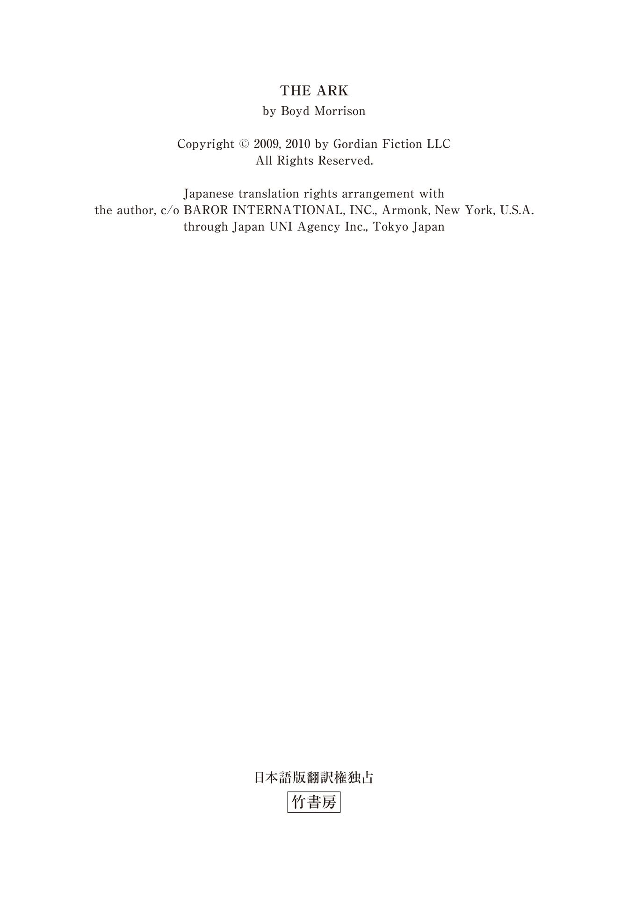
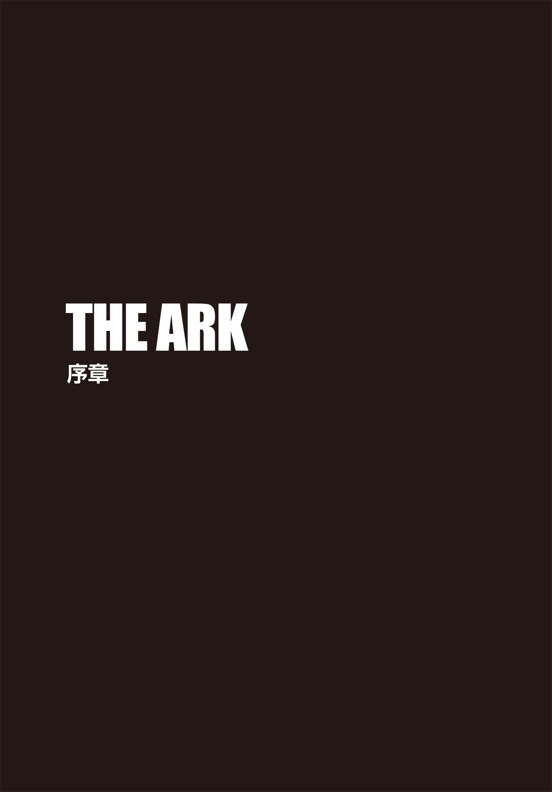
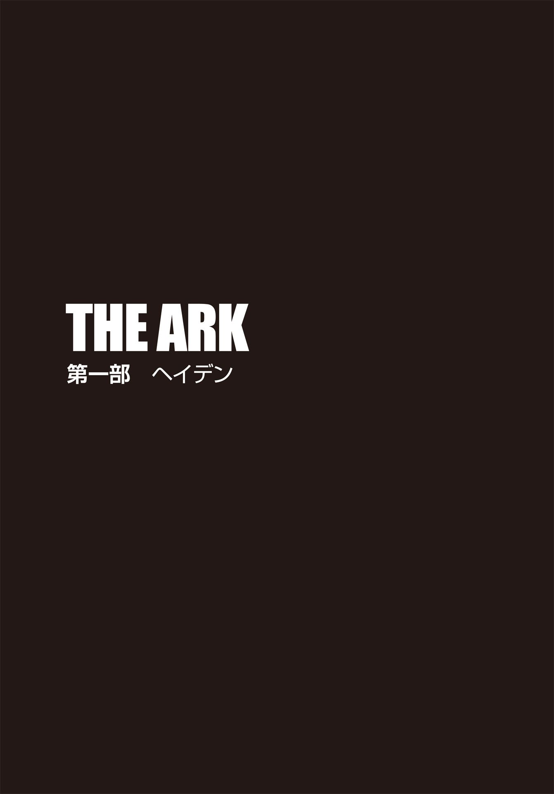
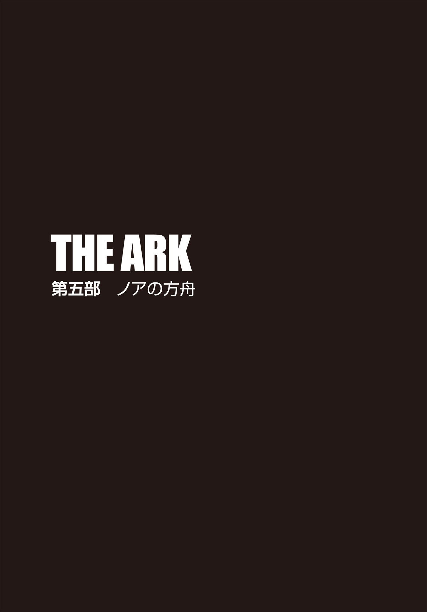

| ＴＨＥ ＡＲＫ 失われたノアの方舟【上下合本版】 (竹書房文庫) | |
| ボイド・モリソン | |
| (2015) | |
この作品は縦書きでレイアウトされています。
また、ご覧になる機種により、表示の差異が認められることがあります。
一部の漢字が簡略字で表示されていることがあります。

タイラー・ロックの冒険① ＴＨＥ ＡＲＫ 失われたノアの方舟 上
主な登場人物
タイラー・ロック .........世界有数の民間エンジニアリング企業〈ゴルディアン・エンジニアリング社〉の主任エンジニア。
ディララ・ケナー .........ＵＣＬＡの教授。生物考古学者。
グラント・ウェストフィールド .........〈ゴルディアン・エンジニアリング社〉の電気工学のエキスパート。タイラーの親友。
ハサド・アーヴァディ .........考古学者。ディララの父親。生涯を〝ノアの方舟〟の探求に捧げた。
サム・ワトソン .........生化学者。ディララの父親の友人。
エイデン・マッケンナ .........〈ゴルディアン・エンジニアリング社〉の情報検索のエキスパート。
ジュディ・ホッジ .........〈ゴルディアン・エンジニアリング社〉のトップ・エンジニア。
マイルズ・ベンソン .........〈ゴルディアン・エンジニアリング社〉の社長兼会長。
ジョン・コールマン .........〈コールマン・エンジニアリング＆コンサルティング社〉のエンジニア。
セバスチャン・ウルリック .........〈ウルリック製薬会社〉の会長兼最高技術責任者。
スヴェトラーナ・ペトロワ .........ウルリックの忠実な部下で愛人。
ダン・カッター .........元陸軍軍人。ウルリックの忠実な部下。
トーマス・ペレス .........ＦＢＩ特別捜査官。
メラニー・ハリス .........ＦＢＩ特別捜査官。
デヴィッド・ディール .........薬理学者。〈ホーリー・ウォーターズ教会〉の賛同者。
レックス・ヘイデン .........国際的な映画俳優。
シャーマン・ロック .........空軍少将。タイラーの父親。
愛するランディ、僕を信じてくれてありがとう
ノアはセム、ハム、ヤペテの三人の子をもうけた。
神が地上をご覧になると、世は乱れ、無道な行いに満ちあふれていた。全ての人がその道を乱していた。そこで神は、ノアに言われた。
「我は全ての人を絶やそうと決めた。彼らは地を暴虐で満たした。我は彼らを地とともに滅ぼそう。ノアよ、そなたは糸杉 の木で方舟を造り、方舟の中に部屋を設け、タールでその内と外を塗るのだ。方舟の長さは三百キュビト、幅は五十キュビト、高さは三十キュビトとする。屋根と戸口を付け、一階と二階と三階のある方舟を造れ。我は地上に洪水をもたらし、命の息のある肉なるものを皆、天の下から滅ぼし去る。地にあるものは全て死に絶えるであろう。ただし、我はそなたと契約を結ぼう。そなたは息子らと、妻と、息子らの妻たちとともに方舟に入れ。さらに、全ての生き物、全ての肉なるものの中から、それぞれをつがいで方舟に入れ、そなたとともにその命を保たせるのだ」
ノアは神に命じられた通りにした。
こうして七日の後、洪水が地に起こった。
それは、ノアが六百歳の二月十七日で、大いなる深淵の源がことごとく破れ、天の窓が開き、雨は四十日と四十夜、地に降り注いだ。洪水は四十日の間、地上にあった。水が増し、方舟は水の面 に漂った。ますます水は地にみなぎり、天の下の高い山々を覆い尽くすほどだった。
地の上に動く全て肉なるものは、鳥も家畜も獣も、地に群がる全ての這 うものも、全ての人も皆滅びた。ただノアと、彼とともに方舟にいたものだけが残った。
神はノアと方舟の中にいた全ての生き物に思いを馳 せられ、風を地の上に吹かせられたので、水は退 いた。深淵の源と天の窓は閉ざされ、天から雨が降らなくなった。方舟は七月十七日にアララト山に留まった。水は次第に減って十月になり、十月一日に山々の頂きが姿を見せた。
四十日が経 ち、ノアは方舟の窓を開いて一羽のカラスを放った。カラスは帰ってこなかった。その七日後、彼はハトを放ったが、今度はオリーブの枝をくわえて帰ってきた。ノアが六百一歳の一月一日になって、地上の水は涸 れた。ノアが方舟の覆いを取り除くと、土の面は乾いていた。二月二十七日になって、地は完全に乾いた。
ノアは家族を連れて方舟を出た。また、全ての獣、全ての這うもの、全ての鳥、全ての地の上に動くものは皆、種類に従って方舟を出た。
神はノアと息子たちを祝福し、こう言われた。
「生めよ、増やせよ。我はそなたとそなたがたの子孫と契約 を立てる。全て肉なるものは、もはや洪水によって滅ぼされることはなく、地を滅ぼす洪水は、再び起こらないであろう。すなわち、我は雲の中に我の弓──虹──を置く。これが我と地との間の契約の印となる」
セム、ハム、ヤペテはノアの子ら三人で、全地の民は彼らから出て、広がったのである。
（旧約聖書 創世記 第六章～第九章より）

三年前
足が言うことを聞いてくれない。ハサド・アーヴァディは全身の力を振り絞り、身体を持ち上げて壁に寄りかかろうとした。そうすれば、最後の瞬間まで上体を起こしたままでいられる。しかし、足が使い物にならない今、それは無理な試みだった。石の床は滑りやすく、腕にはもはや力が入らなくなっている。頭をもたげることもままならず、酸素を求めて喘 ぐのが精一杯だ。仰向けに転がった彼は、ただ全身から命が抜け落ちていくのを感じていた。
ハサドの生命の灯 はまもなく消えようとしている。迫りくる死の訪れを食い止めてくれるものは何もない。何世紀もの間、現世から隔離されていた漆黒の闇の中のこの部屋が、彼の墓場となるのだ。
己の運命に対する恐れはとうに失 せ、無念の涙に暮れていた。ノアの方舟は目前だというのに、人生の終点があまりにも近い。たった三発の銃弾が、ハサドの大切なチャンスを奪った。左右の膝を銃撃されて身体の自由を封じられ、腹部の銃創が致命傷となり、あと五分と生き長らえないだろう。
なんという皮肉──。手を伸ばすことができれば、それは届く位置にある。キリストの誕生以前に書かれた古代の書から、彼はパズルの最後の一片を解き明かし、やっと方舟の存在の証拠を摑 んだというのに。しかも、それが存在していた証 だけではなく、今も存在している という事実を確認したのだ。誰かに発見してもらうのを待っているかのように、六千年もの間、方舟は同じ場所に鎮座し続けていた。
古文書を読んで、我々が何千年もずっと間違っていたと悟った。方舟を隠した者たちが、後世の人間が誤解するように仕向けていたのだ。
この世紀の大発見にすっかり舞い上がっていたハサドは、銃口が自分に向けられていることなどつゆ知らず、気づいたときには手遅れだった。響き渡る銃声。情報を要求する怒号。必死に命乞いする哀れな自分。手柄を盗み出す殺し屋たち。遠ざかる声と明かり。そして、辺りを覆い尽くす闇。全てがあっという間の出来事だった。
石床の上で死を待ちながら何を奪われたかを考えると、ハサドの全身は怒りに震えた。起きてしまった事態はもうどうすることもできないが、何が発生したのかを記録しておかねばならない。いずれ骸 となった自分を発見する誰かにそれを伝えるためだ。そして、この部屋にある秘密を解いただけでは、ノアの方舟の隠し場所には行き着かないということも──。
手のひらについた血をシャツの袖で拭い、ベストのポケットからメモ帳を引き抜く。激しく腕が震え、メモ帳を二回落としてしまった。失われつつある体力を振り絞り、空白のページであることを祈りながら帳面を開く。光がない中で文字を書く作業は、勘と手の触感に頼るしかない。別のポケットからペンを取り出し、親指でキャップを外した。プラスチックのキャップが床に転がり、その軽快な音が静寂を破る。メモ帳を胸に載せ、彼はペンを動かし始めた。
一行目はスムーズに書けた。だが、たったこれだけの簡単な動作で急激なめまいを覚えてしまい、ハサドは自分に残された時間がいかに少ないかを思い知らされた。二行目は、比べものにならないほど手こずった。一文字書くたびに、ペンがどんどん重くなる。まるで鉛でも詰められているかのようだ。三行目を書き始める頃には、それまで何をしたためたのかわからなくなっていた。さらに数文字書いたところで、ペンはハサドの指から滑り落ちた。もはや腕に力が入らない。
涙があふれ、こめかみを伝っていく。朦 朧 とする意識の中で、悲しくも恐ろしい考えが渦巻いていた。
自分は、愛する娘に二度と会うことはないだろう。
憎き犯人たちは、想像を絶するパワーを秘めた遺物を手に、今頃意気揚々と地上を歩いているに違いない。
なのに、歴史を揺るがす考古学の大発見の行方 を見届けることなく、私はここで人生の幕を閉じなければならないとは──。

１
現在
ディララ・ケナーは、ロサンゼルス空港の国際線コンコースを歩いていた。通行人の合間を縫うように進む彼女の荷物は、使い古したキャンバス地のバックパックのみ。木曜日の昼下がり、広いターミナルは旅行客やビジネスマンで混雑している。ペルーから乗ってきた彼女の飛行機は午後一時半に到着したものの、入国審査を終えて税関を抜けるのに四十五分を要した。だが、待っている間は、実際の時間の十倍は長く感じていた。ディララはある人物と会うのが待ち切れなかったのだ。それは、サム・ワトソン。彼女は二日前に、アメリカに戻ってきてくれと彼から懇願されたのだった。
サムはディララの父親の親友で、彼女の伯父のような存在だ。正直なところ、彼から電話を受け取ったときは驚いた。父の失踪以来連絡を取り合ってきたものの、ここ半年の間でサムと話したのは一回だけだったからだ。ペルーにいるディララの携帯電話が鳴ったとき、彼女はアンデスでインカの遺跡の発掘調査中だった。受話器から聞こえてきたサムの声は落ち着きがなく、まるで何かに怯 えている感じもしたが、ディララがいくら訊ねても何が問題なのか詳しく教えてはくれなかった。とにかくできるだけ早く直接会って話したい──その一点張りだった。普段とは違う様子から、よほどのことが起きたに違いないと察した彼女は結局折れ、作業半ばで帰国することにした。
さらにディララは、ある約束をさせられてますます困惑した。ペルーを離れる本当の理由を他言するな。サムはきっぱりとそう言ったのだ──。
一刻も早く会いたいという彼の強い要望で、二人は到着ターミナルの二階にあるフードコートで落ち合うことにした。ディララがエレベーターに乗り込むと、でっぷり太った行楽客も同乗してきた。アロハシャツを着てひどく日焼けした男は、入り口を塞ぐようにキャリーバッグを置き、奥に立っていたディララを見て目を細めた。男のいやらしい視線が彼女の全身を舐 めるようにゆっくりと動いていく。発掘現場からそのまま飛び出してきたため、ディララはタンクトップに短パンという格好のままだったのだ。即座に男の品定めするような目線に気づき、彼女はいたたまれなくなった。肩まで伸びたその髪はゆるやかなウェーブがかかり、屋外作業が多いためか、肌は健康的なオリーブ色に焼けている。露出の多い服装ゆえに一段と引き締まった身体とすらりと長い手足が強調され、ディララは意に反して厚かましい男性の注意を引いてしまったようだ。「あんたになんか興味ないわ」と言わんばかりに睨 み返してみたものの、相手は逆ににやけ顔になる。一分にも満たない短い間だったが、狭い密室で居心地の悪い時間を過ごした彼女は、エレベーターの扉が開くや否や、「失礼」と男を押しのけて外に出た。そして、安 堵 しながら通路を進み、巨大なフードコートへと入っていった。
広大な空間は人であふれている。搭乗案内のアナウンス、談笑する人々の声、ひっきりなしに往来するカートの音。空港独特の騒音の中、ディララは人混みに目を滑らせていく。待ち人はすぐに見つかった。バルコニーの手すり近くのテーブルに、サム・ワトソンは座っていた。
前回会ったとき、確か彼は七十一歳だった。あれから一年しか経っていないというのに、彼は驚くほど老け込んでいた。ロマンスグレーの頭髪は相変わらず豊かだったが、顔のしわがずいぶん深くなり、何日もまともに寝ていないのか、顔色が悪い。
サムがこちらに気づき、立ち上がって手を振った。笑みが浮かぶと、ほんの一瞬、若返ったように見える。ディララも笑顔で応え、まっすぐにそちらへと歩いていく。サムは待ちかねたように彼女をしっかりと抱き締めた。
「君に会えて、どんなにうれしいか」
抱擁を解いたものの、手を握ったまま彼は言った。「相変わらずの美貌だな。君は私が人生で出会った中で最も美しい女性だよ。君のお母さんを除けば、だがね」
そう褒められ、彼女は胸元のロケットを指で触った。そこには、母の写真が入っている。かつて父親が肌身離さず持っていたものだ。急に寂しさが込み上げ、脳裏に蘇 る両親の思い出に浸りそうになったものの、ディララはすぐさま我に返り、サムに返事をした。
「埃 にまみれ、膝まで泥に浸 かってる仕事中の私を見るべきね」
アメリカ中西部特有のフラットな抑揚で彼女は話す。「そしたら、きっと気が変わるわ」
「埃まみれの宝石でも、宝石には変わりない」
サムがコーヒーを二人分買い、揃 って席についた。カップからコーヒーをすすった彼は、「考古学の仕事は順調かい？」と訊ねてきた。
ディララも質問に答える前にひと口飲んで、のどを潤す。
「相変わらず忙しいわ。次はメキシコなの。ヨーロッパ人の入植以前から存在している病原体媒介生物の調査よ。面白そうでしょ？」
「なかなか興味をそそられるね。アステカかい？」
ディララは返答しなかった。彼女の専門は生物考古学で、古代文明における生物学的遺物の研究を行っている。一方サムは生化学者で、彼女の分野に興味を示しても不思議ではないが、それが理由で質問を投げてきたのではない。本題に入るのを躊 躇 しているのだ。
「ねえ、サム」身を乗り出したディララは彼の手を取り、優しく握り締めた。「考古学の仕事がどうのって話をするために、発掘調査途中の私を帰国させたわけじゃないでしょう？」
核心を衝 かれたサムは、落ち着かない様子で周囲の人々に目をやった。誰かの注意を引いていないか確かめているようだ。
彼の視線の先をたどると、ハンバーガーを食べながら談笑する日本人の家族がいた。また、サムのすぐ右手では、キャリアウーマン風の女性がサラダを頰張りつつ携帯端末を指で叩 いている。もう十月の初旬で夏休みはとっくに終わっているはずだが、ディララの背後のテーブルには、ティーンエイジャーのグループが座っていた。〝ＴＥＥＮ ４ ＪＥＳＵＳ 〟と書かれた揃いのＴシャツを着た少年少女たちは、それぞれ携帯メールを打つのに夢中だ。
「実のところ──」サムはディララに視線を戻し、重い口を開いた。「私は考古学の話をするために君を呼び寄せたんだ」
「そうだったの？ でも、電話じゃわからなかったけど、サム、あなた様子が変よ」
「それは......これから君に重要なことを打ち明けるからだ」
サムの言葉に、ディララは息を呑 んだ。まさか深刻な病気を患っているとか？ 癌 ？ 二年前に彼女の母親もそれで他界した。同じ状況だとしたら、不安げな相手の素振りも納得がいく。
「サム、もしかして......悪い病気で余命幾ばくもないとか言うんじゃないでしょうね？」
「いや、それはない」サムは苦笑して大きく頭 を振った。「心配させてしまったようだな。関節に軽い炎症がある以外は、体調はすこぶるいい」
それを聞いて、ディララは安堵の息を吐いた。
「今日ここに呼びつけたのは、私が信頼できる人間は君だけだからだ。君の助言がほしい」
そのとき、サムの隣にいたキャリアウーマン風の女性が、サラダの器を持って立ち上がり、その場を去ろうとした。ところが、膝の上からバッグが滑り落ち、体勢を崩した彼女はサムへと寄りかかってきた。
「あ、すみません」女性はスラブ語訛 りの英語で謝り、床のバッグを拾い上げる。「私ったら不注意で──」
「派手に転ばなくてよかったよ」
微笑み返すサムを見て、女性は眉をひそめた。
「やだ、あなたの腕にドレッシングが。すぐ拭きますね」
彼女はバッグから取り出したハンカチを広げ、サムの前腕についたドレッシングを拭った。
「半袖シャツでよかった。長袖を着てたら、染みになるところだったわ」
「ああ、問題ないよ」
「本当にごめんなさい」
女性はサムとディララに笑顔で頭を下げ、ゴミ箱の方へ歩き去っていく。
「あなたはいつだって紳士ね」
ディララは女性の後ろ姿を一 瞥 し、話題に戻った。「それで、どうして私の助言が必要なの？」
サムは話し出す前に、もう一度周囲を見回してから、ディララに視線を戻した。痙 攣 でもしたかのように、彼は神経質に指を動かし、二人の間に否応なしに緊張した空気が流れる。しばらくためらっていたサムだったが、最初のひと言が出ると、滑らかな口調で語り始めた。
「三日前、職場で驚くべき発見をした。ハサドに関係があることだ」
父ハサドの名前に、ディララの心臓が跳ねる。胸のざわつきを悟られまいと、彼女は指で太ももをぎゅっと摑んだ。父が行方不明になって三年。その身に何が起きたのかを探り出すべく、ディララは暇さえあれば独自調査に奔走していたが、未だに大した手がかりは得られていない。自分の知る限り、父はサムが勤める製薬会社に足を踏み入れたことはなかったはずだ。
「サム、どういうこと？ 父に起きた真相に関する何かなの？ でも、職場で見つけたなんて......理解できないわ」
「この件を君に話すべきか、丸一日考えた。君を巻き込むことになるだろうから......。警察に行こうかとも思った。しかし、これといった証拠をまだ摑めていない。相手にされず、手遅れになる可能性もある」サムは沈痛な面持ちでディララを見据えた。「でも、君なら信じてくれる。君の助言を聞かせてほしい。全ては次の金曜日に始まる」
「今日が木曜日だから、八日後ってこと？」
サムはうなずき、顔をしかめて額を擦 った。
「頭痛？ 私、アスピリン持ってるけど？」
「大丈夫だ」サムはディララの申し出に首を振り、先を続けた。「連中の計画は、大量殺 戮 だ。おそらく何百万人......いや、もしかしたら億単位の犠牲者がでるかもしれない」
「億単位の犠牲者ですって!? 」
あまりにも唐突すぎる話に、ディララは失笑した。「冗談でしょ？」
サムは大きく息を吐く。「冗談ならどれだけいいか」
ディララは相手の顔を凝視し、迫真の演技で自分をかつごうとしているのかどうか見極めようとした。しかし、サムの真剣な表情からわかるのは不安だけだ。サムは噓をついているのではない。
「わかったわ」彼女も真顔に戻り、言葉を選びながら言った。「どうやら冗談じゃなさそうね。だけど、正直、困惑もしてる。証拠がないって言ったけど、何の証拠？ 連中って誰のこと？ そして、私の父とどんな関係が？」
「あいつはたどり着いたんだ」サムは声を低めて言った。「実物が存在する事実に──」
その物言いから、ディララは「実物」が何を指しているかを即座に悟った。
──ノアの方舟──
父が、全人生を捧 げてまで探し出そうとしていたもの。でも、そんなこと、あり得ない。
ディララはにわかに信じられず、首を横に振る。
「つまり、本物の方舟......」彼女はそこで言葉を切った。サムの様子がおかしい。顔が真っ青になっている。「ねえ、本当に平気なの？ 血色が悪いわ」
そう声をかけた次の瞬間、サムの顔が大きく歪 んだ。苦しそうに上体を折り曲げると、彼は胸を搔 きむしって床に崩れ落ちた。
「大変！ サム！」ディララはイスから勢いよく立ち上がり、彼に駆け寄る。そして、「誰か、９１１番に電話して！」と、背後にいたティーンエイジャーのグループに叫んだ。
彼らは一瞬何事かと目を丸くして固まっていたが、すぐに気を取り直し、手にしていた携帯のボタンを押し始めた。
「ディララ......逃げ......ろ」
サムは声を振り絞るように言った。
「サム、しゃべらない方がいいわ。心臓発作よ」
ディララは彼を励ましつつ、己も必死で平静を保とうとした。
「心臓発作じゃ......ない。さっきバッグを......落とした女......。あのハンカチに......毒が......」
毒？ 彼女は眉をひそめた。目の前のサムの視線は虚 ろで、今にも意識を失いそうだ。
「サム、しっかり！」
「早く......行け。やつらに......君も殺 られ......る。君の父親を......殺したのは......やつらだ」
なんですって!? ディララは耳を疑い、サムを見つめる。行方知れずの父がすでに死んでいたらと思うたび、胸をえぐられるような不安を感じ、その度に希望を捨ててなるものかと懸念を払拭してきたのだ。それなのに──。サムは真実を知っていた。父に何があったのかわかっていたのだ！ だから自分を呼び出したに違いない。ディララがサムに確かめようと口を開いたそのとき、彼がぐっと腕を摑んできた。
「いいか......。タイラー・ロック......ゴルディアン・エンジニアリング社......」
サムの強いまなざしが彼女を射抜く。「彼の......手を借りろ......彼が......コールマンを......知ってる......」ひと言吐き出すたび、サムは苦しそうに息を吸った。「ハサドの......調査から......全てが始まった......君が......方舟を......探し出さねば......」
私が方舟を？ 頭が混乱し、目の前に突きつけられた現実を受け止めることができない。
「ヘイデン......プロジェクト......オアシス......ジェネシス......ドーン......」
関連性のない単語を並べられ、ディララは戸惑った。彼の瞳から急速に命の灯が消えかけている。一体どうしたら──。
「サム、ダメよ。お願い、しっかりして！」彼女は意識を失いつつあるサムに大声で訴える。
「ディララ......すまない......」
「やつらって誰なの？ サム！ 誰が父を殺したの？」
何かを言おうと彼の唇は動くものの、漏れてくるのは空気だけだ。やがて、大きく息をひとつつくと、ディララの腕を摑んでいた手がぱたりと落ち、サムはそれきり動かなくなった。
「ああ、サム！」
彼女は急いで心臓マッサージを開始した。泣きながら無我夢中で胸部を押し続け、到着した救急隊員に押しのけられるまで、それは繰り返された。彼らがサムに蘇生処置を試みる様子を眺めつつ、ディララは呆 然 と立ち尽くしていた。しかし、懸命の努力にもかかわらず、彼が息を吹き返すことはなく、その場で無情にも死亡宣告がなされる。涙も乾かぬうちに、彼女は空港警察に状況説明をしなければならなかったが、心臓マヒが死因なのは明らかで、サムが今際 の際に漏らした意味不明の言葉の羅列を伝えても、警官たちは肩をすくめただけで取り合おうとしなかった。
全てが虚構の中での出来事のようだった。ほどなく警察から解放されたディララは、ぼんやりしたまま自分のバックパックを摑み、シャトルバスの乗り場に向かい始めた。自分の車は、ターミナルから少し離れた長期利用の駐車場に置いてあるのだ。空港の通路は、到着した直後と何も変わることなく、往来する人であふれている。とぼとぼと歩く彼女は、サムに思いを馳せた。本当の伯父のような存在の彼は、自分に残された唯一の家族だった。その彼はもういない。
シャトルバスの座席についても、ディララの耳にはサムの残した言葉がこびりついていた。あれは、意識が混濁した年寄りのうわ言に過ぎなかったのか。それとも、家族同然の彼が発した自分への警告だったのか。今となっては本人に訊ねることはできない。それでも、サムの話が真実か否か確かめる方法がひとつだけ残されている。
タイラー・ロック。彼を捜し出さねば──。
２
豪華なリムジンが、鮮やかなブルーのジェット機に近づいていく。カリフォルニア州バーバンクのボブ・ホープ空港の自家用機専用ターミナルに向かう車内で、レックス・ヘイデンは迎え酒としてブラッディ・マリーをもう一杯飲んだ。自身の新作映画の公開初日だった金曜の晩、夜通しのパーティで二人の女性と高級シャンパン〝クリスタル〟三本を楽しんだツケが、この強烈な二日酔いだった。日陰にいるというのに朝の陽 射 しがやけにまぶしく、ヘイデンは眉をひそめる。煩わしいセキュリティチェックを省けるのは、この空港でのセレブ特権だが、こんな体調のときは実にありがたい。
彼が出演する最新アクション大作の海外プロモーションツアーの最初の地は、シドニーだ。カスタマイズされたボーイング社製のプライベートジェット機は、ノンストップでオーストラリアまで飛べるほど燃料が入らないので、途中、給油のためにホノルルに寄る必要がある。とは言え、機内で過ごす時間が多少増えても、それほど苦ではない。ヘイデンは７３７型改良機を購入したのだが、理由は最高級の飛行機だからだ。私用の寝室と本格的な厨 房 を備え、内装には金が施されており、随行要員のためのスペースも十分に取ってある。さらに、自分で選んだとびきりセクシーな客室乗務員二人付き。いわば、空飛ぶ豪華ホテルといった趣だ。ざっと五千万ドルはかかったが、自分はそれにふさわしい。三十歳にして国際的ビッグスターのひとりであり、前回の主演作は世界中で十億ドルを超える大ヒットを記録したのだから。
酒をぐっと飲み干したヘイデンは、ふらつく足取りでリムジンから外に出た。取り巻き連中もその後に続く。ビリーとジェイマンは携帯をいじっており、フィッツは荷物を運んでいた。背後に滑り込んできたさらに三台の車には、エージェント、マネージャー、広報担当者、トレーナー、栄養士など、ヘイデンのキャリアを支える十人以上のスタッフが乗っている。これだけの大所帯での移動に飛行機は不可欠で、素晴らしいことに、その旅費や諸経費をスタジオが負担するという内容も契約に組み込まれているのだ。
「レックス、どの荷物を機内に持ち込むんだ？」
フィッツがヘイデンに声をかけた。「決めてくれないと、全部貨物室行きだぞ」
今ここでそんなバカなことを訊 くとは。ヘイデンは顔をしかめた。ただでさえ二日酔いで頭が回らず、気分が悪いというのに。第一、駐機場でする質問じゃないだろう。しかも、皆の前で。クソッ、カフェインが必要だ。
「いいか、フィッツ。何のためにおまえがここにいる？」
ヘイデンは相手の間抜け面を睨みつけた。「俺の兄貴がおまえに辟 易 していたのも納得だ。どうでもいい些 細 なことまで、いちいち俺に決めさせるのか？ いい加減うんざりなんだよ。てめえの頭を使え。荷物は全部機内持ち込みだ」
フィッツは無言で何度もうなずいた。その表情には怯えが見える。それでいい。少しは成長して己の仕事をこなすようになるだろう。
だがすぐさま、その木 偶 の坊は「おい、今の聞いたな？」と、傍らにいたリムジンの運転手に偉そうに命令した。「全部機内に積み込め。ひとつでも積み忘れてみろ、運転手の職を続けられなくなるぞ」
運転手は従順に「わかりました」と答え、飛行機の荷物係にスーツケースを手渡していく。
ヘイデンはフィッツの態度に呆 れつつ、自家用機のタラップを上った。機内に入り、乗務員のひとり、マンディにコーヒーを一杯頼んだ。ビリー、ジェイマン、フィッツはヘイデンの近くに黙って腰かけ、他のスタッフも次々と前方の席についていく。ヘイデンはラムスキンのリクライニングシートに身体を沈め、窓越しにリムジンが去っていくのを見つめた。コックピットに通じるボタンを押し、彼は合図をした。
「ジョージ、出発しよう」
〈アロハ、ミスター・ヘイデン〉
パイロットの軽快な声がスピーカーから聞こえてくる。〈常夏の島が待ち遠しいですか？〉
「ホノルルに着いても、俺は降りない。くだらんことはいいから、さっさとこのクソみたいな場所から離陸しろ」
〈──承知しました〉
マンディが昇降口を閉めると、ジェット機のエンジンが唸 り出し、ボーイング７３７は滑走路に向かって動き始めた。
カフェインの効果は抜群で、ヘイデンの頭痛は和らぎつつある。体調が良くなった彼は、すらりとしたマンディの肢体に熱い視線を向けた。シドニーに着くまでの十五時間、寝室でたっぷり愉 しむことができる。
自家用機専用ターミナルの駐車場を出たダン・カッターは、シャーマン通りの道端にリムジンを停め、助手席に運転手の帽子を放った。車から降りてボンネットを開き、エンジンが故障したかのように見せかける。再び運転席に座ると、今度は無線傍受装置のスイッチを入れた。滑走中の７３７と管制塔の会話を聞くためだ。あのスーツケースを機内に持ち込ませるのは、思った以上に簡単だった。レックス・ヘイデンがクレストウッド・リムジン社の得意客だと知ったカッターは、ヘイデン側が入れていた予約を勝手にキャンセルし、あたかも同社が派遣した車を装って素知らぬ顔で待ち合わせ場所に登場したのだった。
セレブリティなんて皆同じだ。下っ端のスタッフになど関心を示さず、名前を訊ねてくることもない。彼らは自分がクレストウッドの運転手だと思い込み、全ての荷物を預けてきた。だから、その中に余計な旅行カバンをひとつ紛れ込ませても気づかれることはなかった。フィッツとかいう愚かな取り巻きのひとりが脅してきたときはむかついて、その首をへし折ってやろうかとちらりと考えたが、自分の使命を思い出して我慢した。高潔な指導者が描く素晴らしきヴィジョン──それを成すために、自分たちは過去三年以上を費やしてきたのだ。だから、例のカバンを機内に忍ばせることの方がはるかに重要だった。
ヘイデンの飛行機で〝装置〟を試すのは、カッターの提案だ。必須条件は、大洋上を行く長距離飛行。ジェット機の残骸は深さ数千メートルの海底に沈むゆえ、たとえ異変が明らかになっても機体が回収されることはまずない。うれしいことに、ヘイデンも道連れだ。やつは我々の大義に対して必要以上に難癖を付け、こちらにとって何ヶ月も目障りな存在だった。世界的なトップスターが乗った自家用機が墜落──連日の過熱報道は人々の注意をそらしてくれる。完璧だ。装置の試作品を一般の旅客機に持ち込むのは難しすぎた。荷物の検査など、自分でコントロールできない過程が多すぎ、失敗に終わる恐れが高い。装置が発見されるか、または単純なミスで飛行機にスーツケースが載せられなかったり、違う便に紛れてしまったりすることも考えられた。言うまでもなく、セキュリティ上の理由から、搭乗していない客の荷物は取り除かれる。だが、ヘイデンの自家用機なら、それらの問題は全てクリアできた。カッターは、大事な荷物 が機内に積まれるのを己の目で確認した。あとは、機が離陸するのを地上から見届ければいい。
管制塔がヘイデンの７３７型機に滑走路へ向かう許可を出した。時間通りだ。もし許可が出なければ、やつは烈火のごとく怒り出し、暴れ狂うだろう。セレブなんて、世の中は自分を中心に回っていると思い込んでいる最低の連中だからな。
そろそろ時間か。カッターは携帯電話のフリップを開け、アドレス帳を検索し始めた。そして、前もって打ち込んでおいた「ニューワールド」という項目を見つけるや、緑色の通話ボタンを押す。呼び出し音が三回鳴った後、別の電話が応答するクリック音がした。呼び出し音三回、クリック音一回──。例の装置がヘイデンの搭乗機で作動した合図だ。彼は電話を畳み、ポケットに戻した。
傍受装置のやり取りに注意を戻すと、滑走路の端で待機する７３７型機に指示を出す管制塔の声がちょうど聞こえてきた。
〈Ｎ３４８Ｚ便、こちらバーバンク管制塔。滑走路手前で待機。進入指示を待ってください〉
〈了解。何か問題でも？〉
〈滑走路上にこぼれた燃料を発見。車両から漏れたものだと思われます〉
〈処理にかかる時間は？ 当機のボスは長いこと待たされるのを嫌がるので〉
〈今のところは未定です〉
〈駐機場に戻った方がいいですか？〉
〈いえ、そのまま待機してください。また報告します〉
〈了解〉
なんてことだ。想定外の出来事に、カッターは凍りついた。ぴたりと動かなくなった７３７型機を凝視しつつ、離陸許可が出される前に装置を作動させた己を呪った。大幅な遅れになれば、厄介なことになる。絶好のフライト日和だったため、遅延があるわけないと高を括 っていた。一度電源が入ってしまうと、装置を止める術 はない。もしも飛行機が駐機場に引き返す事態になった場合、どうにかして装置を取り戻さなければいけなくなる。回収は恐ろしく難儀なだけでなく、命に関わるほど危険なため、もはや装置に接触するのは不可能だ。とにかく飛行機が立ち往生している限り、カッターには祈る以外できることはない。
ハンドルに突っ伏した彼は、目を固く閉じて手を握り、事がうまく運びますようにと必死で願い続けた。神は見捨てたりしない。信仰の心で全てが乗り切れるはずだ。
カッターは、己が〝偉大な目的〟に仕える運命にあるとわかっていた。それを成就させるためなら、命すらも喜んで投げ出そう。同胞は皆同じ気持ちだ。偉大な目的を知り、無条件で忠誠を誓ったのは、陸軍を離れた後だった。まるで思 し召しかのように、軍隊で〝神の計画〟を遂行するのに必要なスキルを身につけていた。より良い未来を確実なものにすべくカッターが取った行動の数々は、信心のない者からしたら野蛮な行為に見えるかもしれない。だが、彼はいたって真面目で純粋だった。最終目標の達成──それこそが全て。それこそが重要なのだ。
思わぬ事態の発生に、この試みが危うい状況に陥っているようにも見えた。しかし、カッターは微 塵 も疑っていない。
──熱心な信者である自分の祈りは、きっと届く。
待機し始めてから四十分が経過したとき、奇跡の瞬間が訪れた。無線の交信が再び流れてきたのだ。
〈Ｎ３４８Ｚ便、こちら管制塔。滑走路上の燃料は片づきました。離陸を許可します〉
〈了解。安全の確保、感謝します〉
〈どういたしまして、ジョージ。シドニーを満喫してきてください〉
交信終了後、二分と経たないうちに、ヘイデンの搭乗機は轟 音 を上げて滑走路を走り出した。飛び立ったブルーの機体が山並みを越えて西へと旋回するのを見届け、カッターはボンネットを閉めてリムジンの中へ乗り込んだ。やはり、神は自分とともにある。この日初めて、彼は笑顔を浮かべた。
３
スコシア・ワン石油プラットフォームの離着陸場に吹きつける風が、吹き流しを東向きへとはためかせている。カナダの東海岸に位置するニューファンドランド島から三百キロ余りの沖に、グランドバンクは横たわっている。北西大西洋漁場の中心で、特にタラの漁獲が多いことで知られる浅 堆 だが、世界的な悪天候の場としても有名だ。風速十五メートルの強風と五メートルの高波も、ここでは日常的。それでも、世間一般では荒れ模様と言われる天気の中、はるばる自分に会いに来ようとしている人物が誰なのか、タイラー・ロックは興味津々だった。
手すりに寄りかかり、まもなく到着予定の輸送ヘリの姿を探すが、それらしきものは見当たらない。風の冷たさに、フライトジャケットＭＡ－１のジッパーを首もとまで上げる。息を吸い込むと、敷地内に漂う潮と原油の匂いがした。
六日前にここに来て以来、タイラーはほぼ休みなく働いていたので、こうして広大な大西洋を眺めるわずかな時間もありがたい休息のひとときだ。数分だけでも十分充電できる。彼は、一日中テレビの前に座って映画鑑賞をするタイプではなく、プロジェクトに没頭して問題が解決するまでノンストップで働くのを好む。常に忙しくしていたいと思うのは、父親に教え込まれた労働倫理のせいなのだが、妻カレンには理解してもらえなかった。
──来年こそは。
いつもそう言っていた。
──来年こそ、長期休暇を取るから。
物思いにふけるタイラーの脳裏に後悔の念が蘇り、彼は無意識のうちに左手の薬指を触っていた。しかし、素肌の感触にはっとして指の付け根に視線を落とす。そうだった。結婚指輪はもうそこにはないのだ。彼はすぐさま手を離し、ヘリの着陸誘導を行うクルーのひとりを肩越しに見た。小柄で細身のアル・ディーツがこちらに向かってくる。
「やあ、タイラー」アルは向かい風に顔をしかめながら声をかけた。「ヘリの着陸を見学しに来たのか？」
一八九センチ、九十キロの筋骨隆々のタイラーは、この施設で一、二を争う小 兵 の同僚を見下ろす。
「訪問客を待ってるんだ。ディララ・ケナーが乗ってるかどうかわかるか？」
アルは首を横に振った。「悪いな。わかってるのは、乗客が五人ってことだけだ。なんなら室内で待っててもいいんだぜ。到着したら、彼女を連れていってやるから」
「いや、大丈夫だ。ここに来る前は、ウェストヴァージニアの炭鉱崩落現場にいた。氷点下四十度にもなる極寒の地だったし、一週間炭 塵 を吸い続けたんだ。それに比べたら、ここで待つくらいなんでもない。それに、わざわざ俺に会いに飛んできてくれる彼女の骨折りを考えると、出迎えぐらいしないとな」
「いずれにせよ、一分以内に会えるよ。この便に乗れなかったら、彼女、少なくとも丸一日、飛行場で足止めを喰 らっただろうな」
そう言うと、アルは準備のため、手を振って持ち場に戻っていった。
タイラーも天気予報をチェックしたので、アルが言わんとしていたことはわかる。これから風は収まってくるが、霧が濃くなると予測されており、霧が晴れない限り、ヘリの着陸は不可能になるのだ。彼は、西から近づいてくる雲の塊に視線を向けた。ここから八キロほど先だろうか。その下辺りで、一艘 のヨットがゆっくりと航行しているのも見える。二十五メートルはありそうな船体だが、白く美しいフォルムからすると、ルーセン社製かウェストポート社製の豪華ヨットだろう。そんな船が、なぜグランドバンクの真ん中に？ タイラーは理由を思いつかなかったが、とにかく急いでいる様子でもない。
それ以前に、ディララの訪問のわけもさっぱりわからなかった。考古学者の彼女が、ヘリに乗ってまで沖合にいる自分に会いに来るのはどうしてだ？ 彼女はこの連日、何度もゴルディアン・エンジニアリング社の本部に電話を入れていた。休憩時間になったタイラーが電話をかけ直すと、彼女はＵＣＬＡ（カリフォルニア大学ロサンゼルス校）の教授だった。学者様が自分になんの用かと思ったが、すぐに直接会って話さなければならないと言われた。
スコシア・ワンでの作業が済んだら、そのまま次の現場があるノルウェーに向かうと話したところ、彼女はどうしてもその前に会いたいとの一点張りだった。二時間ヘリに乗って石油プラットフォームまで来てくれれば可能だと冗談半分で返したら、驚いたことに、向こうは二つ返事で承諾し、法外とも思えるヘリの運賃を払うのも厭 わないといった態度だった。なぜそこまでして会いたいのかと訊ねても、電話越しには、人の生き死に関わる問題だからとだけしか答えなかった。とにもかくにも、こちらに「ノー」と言わせない剣幕だったのだ。だが、同じ日課の繰り返しの日々に、彼女の謎めいた訪問はちょっとした刺激になるかもしれないと、タイラーは最終的に折れ、施設管理者から彼女の訪問の許可を得た。
ディララ・ケナーは決して一杯喰わそうしているわけではない。ＵＣＬＡのホームページを確認してみると、彼女は正式な教授として紹介されていた。しかも、掲載写真を見る限り、三十代半ばの黒髪の美女で、にこやかな笑顔を浮かべるその顔は、高い頰骨ときりりとした眉が印象的だった。正直、タイラーはひと目見ただけで、知的で仕事ができそうな女性だと直感したのだ。ところが、うっかり同僚のグラント・ウェストフィールドにその写真を見せてしまった。グラントは彼の親友でもあり、現プロジェクトの電気工学エキスパートでもある。すぐさまあれこれ良からぬ詮索をしてきた友に取り合わなかったものの、彼女の写真を見る前より、会ってみたいという気持ちが強くなっていたのは否めなかった。
赤く光る誘導灯を両手に握るアル・ディーツはヘリポートの端に立ち、傍らのタイラーに話しかけた。
「ほら、お出ましだ。予定時刻ぴったりだな」
タイラーはアルの誘導灯が指す方向に目をやる。遠くの空に立ち込めるグレーの雲を背景に、小さな黒い点が見えた。ほどなく風に乗って、プロペラの低い旋回音も聞こえ始める。小さな点だったヘリは徐々に大きくなり、ニューファンドランド油田の貴重な足である十九人乗りのシコルスキーＳ－92 だと肉眼ではっきりとわかるようになった。
ディララ・ケナーはあれに乗っているはずだ。電話で話したときに、このフライトを逃せないと言っていたし、タイラーはその言葉を素直に信じた。あのときの物言いからは強い決意のようなものが伝わり、彼はどうしても彼女を無視することができなくなっていた。
距離があと二キロを切った辺りで、ヘリは着陸場を目指してゆっくりと高度を下げ始める。ところがそのとき、突然ヘリの屋根から煙が噴き出し、タイラーは目を剝 いた。
──エンジン部分か？
ヘリコプターに何が起ころうとしているのか悟り、恐怖が全身を駆け抜ける。
「タイラー、あれ見えてるか？」
呆然と上空を見つめたまま、アルが問いかけてきたが、声が普段より一オクターブ高い。
タイラーが返事をしようとした矢先、機体上部が爆発し、弾 けた金属の塊が尾部回転翼 を直撃した。
「なんてこった！」
アルが叫ぶと同時に、タイラーは走り出していた。
「墜落する！ アル、来い！」
彼は手すりを飛び越えてヘリポートに着地し、大急ぎで反対側へと向かった。アルもその後に続く。そして、落雷で稲光の後に雷鳴が轟 くかのごとく、実際の爆発から数秒後に轟音が響いてきた。着陸場に書かれた巨大なＨマークの中央を横切りながら、彼はシコルスキー機の無残な姿を目の当たりにしていた。
尾回転翼の二枚の羽根がもげ、残りの羽根は歪んだまま回り続けて機の尾部を激しく打ちつけていく。さらに、無傷の主回転翼 による力強い遠心力で、機体はきりもみしながら落下し始めた。
──なんとかしなければ！
タイラーは頭の中で叫んだが、搭乗している人間を助ける手立てはない。プラットフォームの外れまでやってきた彼は、滑るようにして足を止めた。見晴らしがよく、機体の様子が手に取るように見えた。アルも追いついて立ち止まり、大きく肩を上下させている。
シコルスキー機は真っ逆さまに墜落するのではなく、尾部が大きな円を描きつつ、徐々に高度を下げていく。あんな動作不能状態に陥ったヘリをコントロールできるのは、よほどのベテラン操縦士でないと無理だ。
しかし、希望はまだある。機体が海面に激突する際の衝撃がそれほど大きくなければ、乗っている者たちが生きて脱出できるチャンスがあるかもしれない。
「絶望的か......」隣に立つアルが沈痛な面持ちでつぶやいた。
「いや、可能性は残ってる」タイラーはそう返したものの、確信はない。
どんどん高度を下げていくヘリは、すでに前進する動きを止めていた。機体が着水する直前、まるで大きな泡立て器のように、回転するプロペラが激しく海面を刻んだが、やがて水圧に負けてその動きも止まる。いまやシコルスキー機は、機体右側を上にして浮かんでいた。
「おい、タイラー。乗客がヘリの中に閉じ込められたままだぞ」
アルに言われなくてもわかっている。
「そこから出ろ！ 早く！」タイラーは叫んだ。遠く離れた海上に自分の声が届くわけもないが、ディララの笑顔が頭にちらつき、思わず大声を出していた。
しかし彼の願いも虚 しく、ただの鉄の塊と化したヘリの機体は、みるみるうちに沈んでいく。
「何やってるんだ。早く脱出しろ！」彼はもう一度声を張り上げた。眺めることしかできない自分に苛 立 ちを覚え、手すりを力一杯握り締める。
すると、答えとばかりにヘリの右側の扉が開いた。鮮やかなオレンジ色のサバイバルスーツを着た人間が次々と海へ飛び込んでいく。タイラーは急いでその人数を確認した。一、二、三、四──四人だと？
アルは沈没しつつある機体にライトを向け、「残りはどこにいる!? 」と訊いてきた。だが、タイラーが知る由もない。彼はただ「早く出るんだ！」と、海に向かって叫び続けるしかなかった。
荒波が打ち寄せ、ヘリの鼻先が海面から見えなくなった。開放された扉から機内に水が入り込んでいく。少しの間、尾部が空中に突き出していたが、やがてそれも波間に消えてしまった。
タイラーはヘリコプターがあった場所をしばらく見つめていたが、他の人影はいつまで経っても認められない。海面は何事もなかったかのように、波がうねっている。
これ以上脱出者はいないかと思われた次の瞬間、さらに三つの救命衣が波間に現われた。生存者は七人か──。アルは乗客が五人と言っていた。それに操縦士と副操縦士を足して、合計七人。事故機に乗っていた全員が、機体が沈む前に逃げ出せたということだ。
「やった！ みんな無事だ！」タイラーは、アルとハイタッチをして喜びの声を上げた。
「ラッキーな連中だな」海上を漂う彼らを眺め、アルも笑顔になっている。
確かに幸運以外の何ものでもない。タイラーは、イラクで二度ヘリコプターの墜落現場を見たことがあるが、いずれのケースも生存者はいなかった。とは言え、目の前の脱出者たちは、まだ手放しで喜べる状態ではない。
「海水はかなり冷たいはずだ。サバイバルスーツを着ていても、そう長くは持ちこたえられまい」
タイラーの発言で、アルの顔から笑みが消えた。
「フィンが沿岸警備隊に連絡しているはず──」
フィンとは、この石油プラットフォームのマネージャー、ロジャー・フィンだ。しかしタイラーは、アルの言葉をさえぎって訴えた。
「沿岸警備隊は遠すぎる。しかも天気予報では、これから霧が発生すると言ってたぞ」
水中では空気中の二十五倍早く体温が下がる。水温が低ければ、低体温症に陥り、手遅れになってしまうことも考えられた。まさに時間との勝負だ。
「なんとかしたいが、俺たちがどうやって彼らを引き上げる？」
アルは眉をひそめてタイラーを見た。「せっかく墜落事故を生き延びたのに、水の中で死んでしまうなんて......」
「いや、そうと決まったわけじゃない。何か策があるかも」
タイラーは、ここスコシア・ワンで唯一、航空事故の専門知識を持つ人間だ。沿岸警備隊が送り込む救助ヘリを待っている猶予がないと、フィンを説得しなければならないが、そう簡単にはいかないだろう。タイラーは外部契約の派遣スタッフに過ぎず、フィンはここでの彼の存在をどこか歓迎していない雰囲気があったのだ。ゆえに、ちゃんと話を聞いてくれるかどうかすら定かではない。とは言うものの、他に選択肢はなかった。
「彼らから目を離さないでいてくれ」アルにそう言い残し、彼は踵 を返して走り出していく。
「どこに行く？」
背後から呼びかけられ、タイラーは「制御室だ！」と、肩越しに返事をした。
ものすごい勢いで階段を降りながら、自分は首を突っ込むべきではないのかもしれないという考えが、ほんの一瞬頭をよぎる。大体、誰もタイラーに救助など頼んではいないのだ。彼に責任はない。皆を助け出すのは、石油掘削施設の職員か沿岸警備隊がやる仕事だろう。
だが、このまま他人任せにしたとして、その判断がもしも間違っていたら？ 海中で生きようともがいている七人の中には、ディララ・ケナーもいる。少なくとも、タイラーが彼女をこっちに呼び寄せたようなものだ。自分でできることをやらずに彼らが死んだ場合、人知れず生涯後悔することになる。あのときやっぱり行動を起こすべきだった、なぜ放っておいてしまったのかと、良心の呵 責 で眠れぬ夜が何ヶ月も続くのだ。使命感に駆り立てられたタイラーは、必死に駆け続けた。
４
マイク・〝ハマー〟・ハミルトン大尉は、戦闘機Ｆ－16 の高度を一万メートルに合わせ、編隊僚機の中尉フレッド・〝ファジー〟・ニューマンもそれに倣った。ロサンゼルスのすぐ東側に位置するマーチ空軍基地を緊急発進した二機は、海岸線を越える前にターゲットに追いつくべく、再燃焼装置に点火した。問題の自家用７３７型機──コールサイン〝Ｎ３４８Ｚ〟──は、ハマーのレーダーではっきりと確認できている。時速二千キロを超え、自家用機との距離は次第に縮まりつつあった。
〈ターゲット到達まであと二分〉
無線から聞こえてきたファジーに応答し、ハマーは「了解」と答えた。次いで、管制官に話しかける。
「ＬＡ管制塔、こちらＣＡＬＩＦスリー・ツー。ターゲットからの通信は？」
〈ＣＡＬＩＦスリー・ツー、依然として応答ありません〉
それから管制官は、ホノルル行きの飛行機との交信が途絶えるまでの過程をハマーに説明した。方向転換をした機は、体調不良の乗客が複数いるゆえ、医療機関での措置が必要だと伝えてきたという。その後、パイロット自身の状態も急激に悪化し、明らかに乗務員を含む搭乗者全員が不明の病気にかかったようだった。通信の内容も次第に支離滅裂なものとなり、パイロットはまるで気がふれてしまったかに思えたそうだ。最後の通信はあまりにも奇妙だったので、管制官はその音声をハマーに再生して聞かせた。
〈Ｎ３４８Ｚ便、こちらＬＡ管制塔。今のメッセージの意味がわかりません。繰り返してください〉
〈目が見えない！〉
パニックに陥ったパイロットの声がした。〈何も見えないんだ！ ああっ、目が！〉
操縦中のパイロットが突然視力を失ったというケースは、未だかつて聞いたことがない。ハマーは眉をひそめた。
〈自動操縦中ですか？〉
〈ああ、自動操縦に切り替えた。うわぁ、なんだ、この感じは!? 〉
〈何を言ってるんですか？ Ｎ３４８Ｚ便、一体何が起こっているんですか？〉
〈溶けそうだ！ みんな溶けてしまう！ 止めてくれ！〉
パイロットはなんらかの苦痛を感じ、叫んでいるのは明瞭だった。それきり通信は途絶え、すでに一時間二十分が経過している。
９・11 以来、ハマーの空軍州兵部隊の主要任務は自国の防衛であった。通信が途絶えた航空機は、排除 対象となる。飛行機がテロリストのコントロール下にあり、兵器として使われる疑いが持たれた場合は、危険を回避するために撃墜する以外に選択肢はない。しかし、ハマーが聞く限り、今回のケースはどうにも不可解だ。テロリストがパイロットをそんな状況にさせられるとは思えない。
「それまでにターゲットが降下する気配はあったか？」
ハマーの質問に、管制官は〈いいえ〉と即答した。〈Ｎ３４８Ｚ便はコースをそれたり、高度を下げたりはしませんでした〉
「了解した。一分以内にターゲットに到達する」
管制塔にそう返事をした後、彼は同僚に話しかけた。「ファジー、今の話を聞いていたと思うが、標的に到達したら、両サイドに回り込み、機内の様子が見えるか確認しよう」
ほどなく鮮やかなブルーの機体が見えてきた。ハマーとファジーの両戦闘機は速度を落としつつ、Ｎ３４８Ｚ便を挟んで並行する形となった。左翼側にハマーが、右翼側にはファジーが寄り添う。
「ＬＡ管制塔、ターゲットに到達」
ハマーは再び管制官に連絡を入れた。「該当機は水平飛行で、フライトレベルは三百五十。対気速度は五百五十ノット。予定通りルート０７５を航行中」
このままのコースを飛んでいけば、機はロサンゼル上空を通過することになる。
〈了解です、ＣＡＬＩＦスリー・ツー。何か見えますか？〉
「見たところ、異常はなさそうだ。左翼側に機体の損傷などはない模様」
〈右翼側も同じく、異常なしです〉
ハマーに続いて、ファジーが付け加えた。
「機内に動きはない。近づいて、もっとよく見てみる」
ハマーはＦ－16 を前方右寄りに動かし、こちらの翼端がちょうど７３７型機の鼻先に来るようにした。戦闘機がこれだけ接近しているのだから、気づいた機内の誰かが驚いて窓からこちらを見ていてもおかしくない。しかし、目視できる人影は全くなかった。
〈ＣＡＬＩＦスリー・ツー、生存者は確認できましたか？〉
管制官の呼びかけに、ハマーは小さく首を振る。「確認できない」
右サイドの窓から入った太陽光が機内を貫き、左翼側の窓に反射して輝いている。並んだ座席の背もたれがはっきりと見て取れた。先ほどの管制塔からの説明によれば、この機には、映画スター、レックス・ヘイデンとスタッフが乗っているということだった。誰かしらシートに腰かけていてもいいはずなのに、人っ子ひとり見当たらない。実に奇妙だ。
「ファジー、そっちから何か見えるか？」
ハマーの問いかけに、ためらいがちな答えが返ってきた。
〈いいや。なんというか......〉
おそらく「墓場のようだ」と言いたかったのかもしれないが、ファジーは一旦言葉を切り、〈右翼側からも人の姿は見受けられない〉と続けた。
「ＬＡ管制塔、誰も搭乗していないのなら、もしやこの機は〝フェリー〟では？」
フェリーというのは、貨物や乗客を乗せず、機材繰りのために空 で飛ばす飛行機を指す。しばしの沈黙の後、管制官が無線に戻ってきた。
〈それはなさそうです、ＣＡＬＩＦスリー・ツー。乗客名簿によれば、乗客二十一人、乗務員六人が乗っていることになってます〉
「じゃあ、その二十七人は一体どこへ？」
〈......パイロットの様子はどうですか？〉
そうだった。管制塔と交信していた操縦士の姿なら、コックピットで確認できるに違いない。ハマーは少しだけ速度を上げてＦ－16 を心持ち前進させ、操縦席を覗 き込んだ。大型ジェット機のパイロットたちは四点式のシートベルトを締めているので、万が一意識を失っていたとしても、座ったままになっているはずだ。
ところが予想とは裏腹に、視界に飛び込んできたのは、なんとも異様な光景だった。コックピットはもぬけの殻だったのだ。シートベルトはイスにきちんと固定されていたものの、緩んだ状態で、あたかもパイロットの身体が座ったまま消滅してしまったかのようだ。もし管制官の情報が正しければ、乗っていたはずの二十七人は、太平洋上で忽 然 と姿を消したことになる。
「ＬＡ管制塔、標的機にパイロットはおろか、搭乗者の姿はひとりも見当たらない」
ハマーは半信半疑のまま、そう報告した。
〈ＣＡＬＩＦスリー・ツー、もう一度お願いします〉
「繰り返す。Ｎ３４８Ｚ便は完全に無人。まるで幽霊機だ──」
５
心臓の激しい拍動を感じつつ、タイラーはスコシア・ワンの制御室に飛び込んだ。そこは、プラットフォーム全体のパイプやバルブを含む、石油掘削装置のあらゆる箇所をコントロールする最先端技術が結集した部屋だった。同時に、通信室としての役割も果たしている。
端末の前に座る三人は、緊急チェックリストを忙 しなく調べており、その傍らでマネージャーのロジャー・フィンが電話の相手にまくし立てていた。頭髪がスチールウールのような剛毛で、ずんぐりした体型の彼だが、その声には鬼軍曹のごとき凄 みが感じられる。
「海に脱出した生存者は七名......ああ、爆発だ......いや、あいにくこちらの緊急用の船は、スコシア・ツーの流出原油の処理に協力するため、昨日出てしまった......サバイバルスーツは着用している......いつ？ よし、それまで様子を見よう」
フィンの言葉に聞き耳を立てていたタイラーは、受話器が置かれるや否や訴えた。
「様子を見ている場合じゃありません！」
フィンはむっとして壁の時計を顎で指す。
「沿岸警備隊は五分後に救助ヘリを手配するそうだ。全速力で飛行してくれば、二時間もしないうちにここに到着するだろう。だから、それまで待つ」
「ダメです。これから霧が深くなるとの予報が出てるんです」
フィンのデスクに両手をつき、タイラーは身を乗り出した。「沿岸警備隊のヘリが来る頃には視界はゼロに近い。そんなコンディションじゃ、ヘリが彼らの上を飛んでも発見できません」
「なら、他に考えが？」フィンは苛立ちを露 に答える。「是非とも聞かせてくれ。代替案があるとは思えないがな」
タイラーは顎を擦 り、思考をめぐらせた。この時期のここ周辺の海水温度を考慮した場合、水中に一時間以上放置されたら、たとえ救命衣を着用していても生存率はかなり厳しいものになるはずだ。
「緊急用の船はどうです？」
フィンはその発言を鼻先で笑った。
「私がその選択肢を考えていなかったと思うかね？ 作業を終えてスコシア・ツーから戻るのに六時間以上かかる」
スコシア・ツーはここと同系列の石油掘削場で、北に六十五キロ離れたところにある。
緊急用の船はダメか──。タイラーは、ヘリポートの外れの手すりから目撃した墜落時の様子を思い起こしてみた。
──そうだ！
彼は指をパチンと鳴らし、顔を上げた。
「事故当時、ヨットがいました。ここから十キロも離れていない地点だったと思います。ヨットの乗船者に生存者の救出を頼めるかもしない」
「なんだと？ そんな大事なことを私が知らないのはどういうことだ？」
フィンは、室内にいた部下たちに鋭い視線を向け、腹立ち紛れに嚙 んでいたガムをゴミ箱に吐き出した。上司に睨まれた彼らは、互いに顔を見合わせて肩をすくめている。
「さっさと救難信号を送れ！」
フィンの怒鳴り声に部下たちはそそくさと仕事に戻り、すぐにＳＯＳが無線から発信された。その場にいた全員が聞き耳を立て、数秒が過ぎる。しかし、制御室のスピーカーから聞こえてくるのは耳障りなノイズばかりで、ヨットからの返事はなかった。
壁掛け時計の秒針がカチカチと音を立てる中、フィンが「もう一度やれ」と促した。
それでもやはり、なんの返答も聞こえてこない。
「ヨットに乗っていた者は、ヘリコプターが墜落するのを目撃していたはずです」
タイラーの言葉が静寂を破った。現段階では、現場に近いあのヨットでの救出が最善の策に違いない。「どうして応答してこないんでしょう？」
フィンはうんざりした様子で力なく手を振った。
「無線を切っているんじゃないか。そんなことはどうだっていい。この緊急時に連絡がつかんのだから、もはや沿岸警備隊の到着を待つしか方法はないんだ。霧の中で生存者を見つけてくれることに一 縷 の望みをつなげよう」
タイラーは、自分もここに来るフライトで同じ救命衣を着ていたことを思い出した。確か、あれはマークⅦスーツだったはず。安全性は高いが、最新型ではない。彼は首を振った。
「あのスーツに付いているビーコンが正確に受信できる範囲は、五キロにも満たない。濃霧の中ではなおさら不十分です。今日の水温は？」
「摂氏六度ほどだ」フィンはしかめ面をしたまま即答した。「その温度だと、あの救命衣では六時間が限界じゃないか？」
「その基準は、穏やかな天候下でのコンディションを前提にしています」
焦燥感に駆られ、タイラーの冷静さは次第に失われつつあった。「しかも、彼らは負傷している恐れがあるし、今も波に揉 まれているんですよ！ 我々がヘリの到着を待った場合、遺体を発見することになるかもしれない」
フィンは片眉を上げ、何が望みだと言わんばかりのまなざしを向けている。
気が急 いていたタイラーだったが、一旦口をつぐみ、スコシア・ワンの施設を頭の中でチェックしていく。装置や機材を思い描き、その機能をひとつひとつ考える。複数の可能性があるかに思えたが、結局はひとつの選択肢に行き着いた。彼が力強い視線を向けると、フィンが目を細めて言う。
「おや、妙案でも浮かんだか？」
タイラーはうなずいた。「ええ。ですが、賛成していただけないかも」
「ほう？」
「我々自身が救助に向かうんです」
「どうやって？ もう予備の船はないぞ」
「あります。自由降下式救命艇 です」
その提案に、フィンは一瞬言葉を失っていたが、すぐに頭を振った。
「ダメだ。危険すぎるし、そもそもあの救命ボートは、ここを捨てて脱出する際の最後の切り札だ。それを救助活動に使わせる許可は出せない」
スコシア・ワンには、五十人乗りの全閉囲型救命艇が五台備えつけてあり、水面から二十メートルの高さで吊 り下げられている。タイラーはかつて他の石油掘削施設で同型ボートの設置に携わり、実際に進水するのを見たことがあった。
この救命艇は水面にゆっくりとワイヤーロープで下ろすタイプではない。船体は完全防水で、固定装置に傾斜角度三十度で搭載されている。操縦者が二つのレバーを操作すると、ボートは滑走台を滑走した後に自由落下して海面に到達するが、落下時に衝撃が人体に極力かからないように設計されているのが特徴だ。石油プラットフォームで火災が起きた場合、燃え盛る施設から迅速に離れるための唯一の避難ツールである。
タイラーはさらに身を乗り出し、イスの背もたれに身を預けているマネージャーに顔を突きつけた。机についた太い腕にぐっと力が入る。彼の強 靱 な肉体は、優れた遺伝子と日頃のトレーニングの賜 物 だ。世界のどこで働こうとも、腕立て伏せ、腹筋運動、ランニングは欠かさない。いくら自分に比べて体格が小さくても、フィンのような鉄面皮な男を威圧することはできないだろうが、それでも大きな身体が力説の手助けになることもある。
「お願いします」タイラーは唸るように訴えた。「それしか方法がないことぐらい、わかっているはずだ。我々がこのまま行動を起こさなかったら、今生きている彼らは死んでしまう！」
フィンは勢いよく立ち上がり、タイラーと対 峙 した。二人の身長差は十五センチ。相手はこちらを見上げ、怒鳴り返してきた。
「私だって、事の重大さは百も承知だ！ だが、ここの誰ひとりとして、あの救命艇を使ったことがないんだぞ」
このままじゃ、埒 が明かない。タイラーはフィンと睨み合いながら思った。無駄にしている時間などない。何か決め手がなければ、救命ボートの案を承諾してもらうことは難しいだろう。
今にも、七人が溺死してしまうかもしれないのだ。そこでタイラーは噓をついた。
「俺は以前、操作した経験があります」
堂々とした口調で言う。「だから、この提案を思いついたんですよ」
フィンが疑わしげに顔をしかめる。「操作したことが？ いつ？」
「ゴルディアン社が二年前に試したんです。そのときに、操縦者のボランティアを買って出ました」
会社が大洋上での避難訓練をしたのは事実だ。タイラー自身が指揮を執ったので覚えている。とは言え、実際には救命艇に乗っていない。当時、危険すぎると判断されたからだ。
「おまえがボランティアを？」フィンは口をへの字に曲げ、こちらの瞳を覗き込んでくる。
タイラーは内心、噓が見透かされるのではないかと気が気ではなかった。動 悸 を覚えつつも、まばたきもせずに相手を見返し、平静を装って返事をした。
「ええ。だから、必要とあれば、俺がやります。墜落の一部始終をこの目で見ましたから、生存者の場所もわかっています」
制御室を見回したフィンはオペレーターたちを一瞥し、急速に霧が濃くなりつつある外の様子を窓越しに確認した。それから、視線をタイラーへと戻す。
「わかった。認めよう」フィンは、降参するかのように両手のひらをこちらに向けた。「救命艇で救出に行け。人員は何人必要だ？」
タイラーは何喰わぬ顔で「全員で三人ですかね」と答えたが、早鐘のような鼓動を落ち着かせようと必死だった。今の自分は水鳥と同じ──一見優雅そうに浮かんでいるが、水面下で必死に水をかいている──と頭のどこかで苦笑しながら、説明を続ける。「ボートの操縦にひとり、生存者を水から引き上げるのに二人。三人のうちひとりは、グラントにしてください。やつを選ばなかったら、一生恨まれそうだ」
グラント・ウェストフィールドは、彼が一緒に働いた中で最も優秀な電気技師だが、〝アドレナリン・ジャンキー〟の一面も持つ。ロッククライミング、スカイダイビング、洞窟探検や潜水など、刺激を求めて己を危険な状況に追い込むことに病みつきになっているのだ。タイラーも、ときには一緒に危ないスポーツを楽しんだりするものの、グラントの場合は病的に近いほど取り憑 かれている。フリーフォール救命艇に乗れると聞いたら、かつて経験したことのないスリルを味わう絶好のチャンスを逃してなるものかと、この話に飛びついてくるに違いない。それにタイラー自身、信頼のおける人間と組みたいという希望もあった。
「わかった。ひとりはグラントで決まりだな。あとはジミー・マークソンを参加させよう」
フィンは顎を擦った。「いいか、一度発進したら、簡単に引き上げることはできない。特にこの天候じゃ、クレーンが折れる恐れがある」
よし、事態はいい方向に進展している。タイラーは心の中でうなずいた。
「でも、バスケットリフトは使用できますよね」
バスケットリフトとは、船からプラットフォームへ戻るためのカゴ型の昇降装置だ。この施設には六人乗りのものが据えられている。
「他の二人には、救命艇のところで君と落ち合うよう伝えておく。万が一の場合に備え、サバイバルスーツを着ていけ。海に入ることになるかもしれんからな」
フィンが電話の受話器に手を伸ばすのを見て、タイラーは小さく一礼して制御室を出た。ロッカールームに寄ってサバイバルスーツを手にし、避難時の誘導サインに従って通路を進む。階段を一度に二段ずつ降りて、彼は救命ボートのある最下層の甲板へとやってきた。グラントとマークソンを待ちながら、ジャケットを脱ぎ、サバイバルスーツに袖を通す。五艘あるボートは、海上で目立つように鮮やかなオレンジ色に塗られ、その船体は銃弾のような流線型をしていた。数ヶ所の舷窓は丸形で小さく、衝撃強度の高いポリカーボネイト製だ。防弾素材としても知られる材料であり、着水のインパクトにも耐えられるとして、ガラス窓の代わりに使われている。出入り口は船尾部分のアルミ製ハッチだった。
ボートは尖 った鼻先を海側に向け、滑走台のレールの上に鎮座している。レールは、海面から二十メートルの高さのところで切れており、そこから水に飛び込んだ船は、百メートル先の海面に浮上した後、十ノットの推進力で航行していく。水面から一旦出ると、強力なエンジンで二十ノットまでの速度を出すことが可能だ。
スーツを着込んだタイラーは、左端の救命艇のハッチを開け、中を覗き込んだ。船の中央は水平な通路ではなく、階段状になっており、座席は、操縦席以外後ろ向きに設置されている。船尾向きに着座することによって、着水時の衝撃を人体ができるだけ受けないようにするためだ。よって、操 舵 手 が操縦席に座るのは、海に到達してからになる。船内通路の両サイドにある二本のレバーを同時に引かなければ、ボートの落下は始まらない。これは、避難時にパニックに陥ったクルーたちが、全員が乗り込む前に誤って船を落下させないためだ。また、船尾部のハッチが完全に閉まった状態でないと、落下されないような安全措置も取られている。万が一ハッチが開いたまま着水すると、開口部から浸水し、船体が浮上することができなくなってしまう。
あれこれ確認しているタイラーの背後で、物音が聞こえてきた。肩越しに、階段を足早に降りてくる二人の男たちの姿が見えた。彼らはともに黒人だったが、共通点はそれだけで、前を歩く方は皮膚がより黒く、タイラーよりも五センチほど背が高い。ひょろりとしたシルエットで肩にサバイバルスーツをかけて進んでくるその彼は、四十代後半のジミー・マークソンだ。油で汚れた顔には不安の色が浮かんでいる。
マークソンの後ろから来るのは、坊主頭にモカ色の肌をしたグラント・ウェストフィールドで、サバイバルスーツのファスナーがなかなか上がらず苦労しているようだった。マークソンより十センチ背が低く、十五歳若い彼は、かつてレスラーだった頃の体重百キロの体格をいまだに維持している。どうやら小さすぎるサイズのスーツを選んでしまったらしい。タイラーはグラントの滑稽なしぐさを見て、思わず笑みを浮かべた。
「手助けが必要か？」にやにやしながら、タイラーが話しかける。「少し痩せるべきだな」
グラントはやっとの思いで上までファスナーを閉め、苦笑しながらこちらを見た。
「やれやれ、俺のたくましい肉体には不向きなスーツだ」
「乱暴に身体を曲げると服が破けるぞ。大体、おまえがファッションで自己主張するのが無理な話だろ？」
タイラーの言葉に、グラントは唇を尖らせる。
「ミラノの最新流行が裂けたサバイバルスーツだって、おまえ知らないのか？」
二人のやり取りに、マークソンは引きつった笑顔を見せている。おそらく、彼には通じない冗談だったのだろう。だが、タイラーはグラントとのかけ合いが好きだった。軍隊で過ごしていたとき、たとえ危険と隣り合わせの状況下でも、こんなふうに二人で笑い飛ばして場を和ませていたのだ。
「おまえが協力してくれてよかった」
タイラーがそう言うと、グラントは心外だとばかりに片眉を上げた。
「バカ言うなよ。あんたが提案するクレイジーな任務なら、見逃すわけにはいかないだろうが。フィンは、あんたがこのカワイコちゃんに乗りたくてウズウズしてるって言ってたぞ」親指で救命艇を指してウィンクする元レスラーは、タイラー以上にやる気満々といった雰囲気だ。
「ウズウズしてるは言い過ぎだが、とにかく誰かがやらなきゃいけない。それを俺たちがやるだけのことだ」
「同感だ」グラントは満足そうにうなずき、大きな救命艇をしげしげと眺めた。「そういや、ジェットコースターにも何ヶ月も乗ってないな」
タイラーはもうひとりの仲間に顔を向け、右手を差し出した。
「君がジミー・マークソンかい？」
「ああ、そうだ。よろしく、ロック博士」
「タイラーって呼んでくれ。こちらこそよろしく頼む」
握手を交わした後、マークソンはさらに付け加えた。
「私は潜水作業員であり、溶接工でもある。救命艇の知識も十分だ」
細身だが、頑健な肉体の持ち主のはずだ。それでも、少し声が震えていることにタイラーは気づいていた。
「参加してくれて感謝する」そう言って彼はハッチを手で指した。「中に入ろうか？」
グラントが最初に船室に入り、席についてシートベルトに手を伸ばす。その巨体では、四点式のベルトは限界まで伸ばさないと締まらなかった。次にタイラーが足を踏み入れ、最後のマークソンがハッチを閉めた。
タイラーは作動レバーの隣の席を選び、シートベルトの金具をきっちりと差し込んだ。
「出発するぞ。皆、準備はいいか？」マークソンが声をかけてきた。
「ああ、こちらは準備できた」
タイラーに続けてグラントが叫んだ。
「よっしゃ、俺もＯＫだ！」そして、レスラー時代と同じように拳で胸を叩いて、己を鼓舞させる。「カワイコちゃんがどこまでやってくれるか、お手並み拝見といこう！」
マークソンがレバーを握り、タイラーも同じようにもう一方を摑んだ。二人は顔を見合わせてうなずくと、カウントダウンを始める。
「三......二......一......発進！」
かけ声と同時に二本のレバーが引かれ、赤いランプが点灯した。発進装置が作動したという合図だ。鈍い音がして油圧クランプが外れたのがわかる。もはや後戻りはできない。タイラーは、軍隊で任務に入る直前にしたように、気持ちを奮い立たせた。正確さ、決断力、そして平常心を胸に、来るべき事態に臨もう。
いよいよボートは滑走台のレールの上を動き出したが、いささか拍子抜けだった。もっとスピードが出るのかと覚悟していたのだが、湖畔のボート置き場で牽 引 車 から下ろされるボートに乗っている──そんな感じだ。しかし、フリーフォールの瞬間は唐突に来た。船が大きく傾いたかと思うや、口から胃が飛び出さんばかりの重力に支配された。
かつてグラントに無理やり誘われ、一度だけバンジージャンプを試みたことがある。ちょうどあのときの感覚とよく似ていた。後ろ向きに座っているせいもあり、曲線を描くシートから全身がふわりと浮き上がる。無重力状態が永遠に続くのではないかと錯覚しそうになったものの、ほどなく衝撃が身体を貫いた。
ファイバーグラス製の船が海面にぶつかり、大きな打撃音が四方から轟く。まるでコンクリートの地面にでも落下したかのようなショックだった。後頭部をクッションの入った座席のヘッドレストに打ちつけたタイラーは、無重力の代償が一気に襲い掛かってきたのかと感じた。今度は水中に潜った船が急浮上しようとして座席の角度が激しく変わり、タイラーの身体は再び大きく投げ出されそうになる。シートベルトにしがみつきながら、彼は小窓が波に洗われるのを眺めていた。ほどなくグレーの曇り空が見え、救命艇が水平に戻ったのがわかった。後ろの座席でグラントが興奮して歓声を上げたが、タイラーは無事に着水できたことに安堵した。
「落下の快感がたまんねえ」グラントは笑いながら拍手をしている。「もう一度できないかな」
「また別の機会があればな」タイラーはシートベルトのバックルを外しながら答えた。
「俺がフリーフォールに病みつきなの、知ってるくせに」
「胃と相談だな。俺は、胃を引き抜かれて甲板の上に置き去りにしてきた気分なんだ」
二人が会話しているうちに、マークソンが操縦席に座っていた。繰り返しぶつかる波にボートは揺さぶられていたが、船体は浮きのように耐波性があり、中にいる限りは安全だ。しかし、波間で漂う生存者たちは、今この瞬間も、生き残るために闘っている。またタイラーの脳裏に、ディララの笑顔が蘇り、彼女がどれだけ苦しみ、もがいているのかを思い浮かべて胸が痛んだ。マークソンはエンジンをかけ、タイラーが墜落現場までナビゲートしていく。霧はどんどん深くなっており、一刻も早くたどり着いて救助活動を行う必要があった。時間の経過とともに、七人が生還する可能性は低下していくばかりなのだから──。
６
ディララは悪戦苦闘していた。意識を失ったヘリのパイロットの頭を完全に水から出しておかねばならないが、押し寄せる波でそれはほとんど不可能だった。少なくとも救命衣のおかげで浮いてはいられる。今は、彼が流されていかないことを祈るばかりだ。童顔でブロンドの副操縦士ローガンは彼女に手を貸そうとしたものの、なにせ腕が骨折しているため、うねる波間で呼吸を維持するので精一杯だった。
彼女の視界には、他の乗客たちの姿はない。同乗していた四人の男たちは石油掘削場の労働者で、きっと数週間の契約でプラットフォームに行く途中だったのだろう。彼らは波に呑まれてしまったのかもしれないが、いずれにせよ、今のディララは助けの手を差し伸べることができない。体力の消耗と海水を飲み込むのを防ぐべく、彼女とローガンは極力黙っていたが、さっき会話をしたときに、石油プラットフォームにはヘリコプターはないと彼が言っていた。ヘリを有する最寄りの施設は、セントジョンズにあり、ここまで二時間もかかるらしい。
絶望的な現況だ。しかし、ディララはロサンゼルス・マラソンのときも同じように考えていた。四二・一九五キロを休みなく走り続けるなど、考えただけで気が遠くなりそうで、達成は到底不可能に思えた。それでも、次の一歩を踏み出すことだけに集中していたら、結果的にゴールまでたどり着いたのだ。
だから今も、二時間ヘリを待ち続けることではなく、次の一分を生き延びることに気持ちを注ごうとした。そんな前向きさを削 ぐ一番の厄介者は、サバイバルスーツに染み込んでくる海水だ。事故機から脱出する際に、どこかの金具に引っかけたのか、裂けてしまっていた。冷たい水が足にまとわりつき、下肢の感覚がなくなりつつある。
「体力を失う一方だ」水に浸かって十分ほど経過した頃、ローガンが弱音を吐き出した。「なんだかこのスーツ、浮かなくなってきた気がする」
ディララも極限状態だったが、ここで諦めるのは、すなわち〝死〟を意味する。
「あなたなら大丈夫よ、ローガン。無駄なおしゃべりでエネルギーを消耗しないで、ちゃんと頭を上げてて」
だが、怯えたローガンは、今にもパニックに陥りそうで口を閉じようとしない。
「しかも、霧が深くなってきた。これじゃ発見されない」
「そんなことないわ。きっと見つけてくれる」
「いや、もうダメかもしれない。クソッ、おまけに足がつりそうだ」
「──ローガン」ディララは、愚痴ってばかりいる副操縦士を力強く見据えた。優しくするだけでは埒が明きそうもない。「女の私が必死でパイロットの面倒を見てるっていうのに、あなたはひとりでしょ。情けないわね。頑張れないの？」
檄 を飛ばされた彼は、ディララを見て恥ずかしそうに微笑んだ。
「そうよ、その調子」彼女も小さく笑ってうなずく。叱 咤 激励は効果があったようだ。「気持ちを強く持って」
「君と一緒に頑張るよ」
「よかった。ここで命を落とすためにはるばるやってきたわけじゃないもの」
皮肉なことに、ヘリコプターが墜落したときに、これ以上ひどい事態は起きないと思ってしまったが、それは甘かった。事故を生き延びた後にこの過酷な状況が待っているとは考えていなかったのだ。サムの件と彼が残した言葉の謎を解こうと動き出したばかりなのに──。
ヘイデン、オアシス、ジェネシス 。
全く意味不明だ。そして、人生を懸けて探し求めたものを父が実際に発見していたというサムの告白にも、度肝を抜かれた。
それだけではない。サムが毒殺されたことも、考えてみれば、おかしな話だ。サムは薬学の専門家ゆえ、毒を盛られた事実に真っ先に気づくのは当然ではないか。ばれる危険性を承知で、わざわざ毒で殺そうとした理由は？ サムの言葉を信じたかったが。何もかもが信じがたい。しかし、その裏づけがあるとしたら、彼女が自宅に戻る途中で起きた出来事だろう。
空港のシャトルバスに乗ったとき、彼女は不審な同乗者の存在にすぐに気づいた。黒いトレンチコートを着た図体の大きな男で、こちらを気にかけるように幾度もちらちらと見ているのだ。サムのかすれた声が頭をよぎる。
早く......行け。やつらに......君も殺られ......る。
少々気にしすぎかとも思ったが、あんなことがあった直後だったゆえ過敏になっていたのだろう、バスの運転者に自分が無事に走り去るまで自分の車の横にバスをつけておいてほしいと頼んだ。車に乗って駐車場を出た彼女は、空港から六車線のセプルヴェダ大通りに入ってサンタモニカにある研究所を目指していった。北へと向かう車線は比較的流れがスムーズで、一番端のレーンをひとり占めしている状態だった。
快適なドライブが続き、ディララの不安も少しずつ薄れていたそのとき、黒い大きなＳＵＶが彼女の小さなハッチバックの右隣に並んだ。横を走る車を一瞥したものの、何も気に留めなかった。ところが次の瞬間、ＳＵＶがいきなり幅寄せしたかと思うと、彼女の車の横っ腹に当たってきたのだ。驚いたディララは慌ててブレーキを踏み、ＳＵＶの乱暴な運転をかわそうとした。しかし、彼女のトヨタ車の二倍は重いと思われるＳＵＶは執 拗 で、度重なる体当たりの衝撃は相当なものだった。あいにく中央分離帯が低かったため、ディララはいとも簡単に反対車線に押しやられてしまった。しかも恐ろしいことに、反対側の交通量は多く、すぐに正面から小型トラックがこちらに向かってくるのが見えた。
──まずい！
彼女は咄 嗟 にアクセルを踏み、急ハンドルを切った。タイヤが滑る耳障りな音と周囲をすり抜けていく車の激しいクラクションが耳をつんざく。間一髪、トラックとの正面衝突は避けられたものの、次から次へと対向車が向かってくる。ハンドルを左右に操り、車と車の間を縫いながら、ディララは無我夢中で運転し続けた。なんとかショッピングモールの駐車場に逃げ込めた彼女は、車を止めてハンドルに突っ伏した。あまりの恐怖で全身が震え出す。歯を鳴らしつつ車道に目をやると、ＳＵＶがこちらを確認するようにスピードを落としていたが、対向車線の混乱を尻目に走り去っていった。あの車は空港からこちらを尾行してきたに違いない。着色ガラスだったため、例の黒いコートの男が乗車していたかどうかは不明だが、サムを毒殺したあのキャリアウーマン風の女と仲間である可能性は高いだろう。
早く......行け。やつらに......君も殺られ......る。
サムはどうかしていたのだと、全てを頭から追いやって普通の生活に戻ることもできる。しかし、もうろくした老人の戯 言 ではないとディララの本能が言っていた。誰かが自分を殺そうとしたのだ。確たる証拠はないが、絶対にそうだ。このまま何もしなければ、明日の今頃には死んでいるかもしれない。
身体の震えが収まり、運転できるようになったので、真っ先に警察に行ってみたのだが、状況は好転しなかった。彼女は空港の警官に話したこととほぼ同じ内容──多少は詳しく説明したが──を刑事に聞かせ、お決まりの供述書を取られた。しかし、刑事はその話を本気にしなかった。友人のサム・ワトソンは心臓発作で死んだのではなく、本当は毒殺された？ 億単位の人間が危険に晒 されている？ 誰かが秘密を知った自分を殺そうと、故意に反対車線へ追いやった？ 無理もない。ディララ自身も、そんな話はバカげていると思う。とは言え、あのＳＵＶがわざとぶつかってきたのは否めない。そして、サムの言葉も聞き違いではない。
早く......行け。やつらに......君も殺られ......る。
ディララは、このまま自宅に帰るわけにはいかないと思った。追っ手が待ち伏せしている可能性が高い場所だからだ。帰宅できないとなると逃亡することになる。追跡者が誰なのか、なぜ自分を狙うのかが解明されるまで戻れないだろう。
そこで彼女は、自分の取引銀行の最寄りの支店に行き、口座の全額を引き出した。足がつきやすいクレジットカードはこの先使わない方がいいが、タイラー・ロックを見つけ出すには移動費が必要になってくる。
タイラー・ロックに行き着く手がかりとして、彼女はまず、サムがその名前の直後に言っていたゴルディアン・エンジニアリング社を調べることにした。図書館に入り、市民が利用できるパソコンでインターネット検索を行う。おそらくその社名は、「ゴルディアスの結び目」から取ったものだろう。はるか昔、古代フリギアの国王ゴルディアスの神殿には荷車が奉納されており、その車体は杭 にヒモで固く結びつけられていた。結び目があまりにも複雑で誰にも解けなかったため、「この結び目を解くことができた者が、全アジアの支配者になる」との伝説ができていたほどだった。あるとき、この結び目の謎解きに挑戦したアレクサンダー大王は、容易に解けるものではないと即座に判断し、剣でばっさりと断ち切ったという。その後、彼はギリシャからインドに至るまで全東方の覇者となった。この逸話から、一筋縄ではいかない難題を「ゴルディアスの結び目」といい、難事を常識外の手段で解決することを「ゴルディアスの結び目を断つ」と表わすようになったらしい。
ゴルディアン社は世界有数の民間エンジニアリング企業で、フォーチューン誌のリストに載るような大会社から米軍まで、様々な顧客相手に業務を行っている。社内の上級エンジニアのひとりひとりが共同経営者で、その経営体制は法律事務所を彷 彿 とさせた。社の専門は事故分析と予防対策で、自動車事故や墜落事故、火事、爆発、不良建築など、ホームページにはいくつもの取り扱い分野がリストになっている。
続けて、サーチエンジンでタイラー・ロックを検索した。同社の主任エンジニアである彼は、素晴らしい経歴の持ち主だった。マサチューセッツ工科大学で機械工学を専攻し、スタンフォード大で博士号を取得。戦闘工兵中隊で特殊作戦も指揮した元米国陸軍大尉。爆破、不発弾処理、機械システム、事故分析、プロトタイプ試験のエキスパート。実に目覚ましい活躍ぶりだ。
〝戦闘工兵〟なる言葉は、ディララにとって初耳だった。インターネットの軍事用語サイトによれば、橋や道路の建造、陣地や要塞の構築、地雷の撤去、爆弾の処理などを戦火の中でも行う兵士らしい。タイラーの従軍中の履歴のさらなる詳細を探してみて、シルバースター及びパープルハート章を含む複数の勲章を授与されたことはわかったが、彼がどのくらいの期間、どの戦争に携わっていたかなどは見つけられなかった。この経歴と経験だと、タイラーは社会に出て三十五年ほどだろうか。写真はなかったものの、ＵＣＬＡの工学教授たちから推測したディララの頭の中には、半袖のワイシャツを着て、ポケットにペンを何本も挿している太鼓腹でハゲ頭の五十代の男性のイメージが浮かんでいた。真面目で頭が固そうで、多少偏屈な人物かもしれない。勝手な想像だったが、電話でこちらの事情を説明しても、きっとロック博士に鼻で笑われて終わりだと、彼女は不安を覚えた。直接彼に会いに行かなければ──。
目下のところ、タイラー・ロックはニューファンドランド沖の石油掘削施設にいるらしい。この情報を得たディララは、対面するのに最適な場所だと感じた。ロサンゼルスから数千キロ離れた洋上なら、いくら追っ手でも簡単にアクセスはできない。とは言え、ヘリコプターの予約はしたものの、足取りを摑まれぬよう慎重にならざるを得なかった。そこで彼女は、連中が待ち伏せしている場合を考え、ヘリが出るセントジョンズ空港には直行しなかった。代わりにセントジョンズから二百キロ以上離れたガンダー空港へ飛び、そこからバスで三時間かけてセントジョンズに到着。サバイバルスーツを着込み、ヘリコプターに乗ったときは、離陸時間ぎりぎりだった。
地上から離れ始め、ディララはようやくひと息ついた。機内で怒 濤 の一日を振り返ったものの、数奇な運命に翻弄されていることがまだ半信半疑だった。遠くに巨大な石油プラットフォームが見えてきたとき、なんらかの答えがすぐに得られるだろうと思っていた。ところが、予想もしていなかった事態が起きる。突如として、重々しい爆発音が頭上で響いたのだ。彼女を含め、乗客たちが驚きと困惑の声を上げる中、パイロットはコントロールを失った機体を冷静に立て直そうとしていた。だが、必死の努力にもかかわらず、ついにヘリコプターは海に墜落する。
機が海面に突っ込んでから数秒後、乗客のひとりがドアを開け、我に返ったディララはようやく状況を把握した。見ると、操縦席のパイロットは気を失ったのか、ぐったりとイスにもたれかかり、副操縦士の腕は不自然な角度に折れ曲がっている。他の乗客に協力を求めようとしたが、彼らはすでに機外へ脱出してしまっていた。開放されたドアから大量の水が流れ込んでくる。このままでは数秒後には完全に水の中だ。
ディララは慌てて自分のシートベルトを外し、海水を搔き分けて操縦席へと向かう。パイロットのベルトのバックルを外し終わる頃には、すでにウエストまで水に浸かっていた。副操縦士は、どこかに折れた方の腕をぶつけるたびに悲鳴を上げ、おぼつかない足取りでドアへと進んでいく。彼女は、水に浮いた状態のパイロットの身体を機体から出そうと懸命にもがいた。水はどんどん機内に溜 まり、もはやかろうじて頭が出ているだけだった。早くしないと、ヘリもろとも海底に引きずりこまれてしまう。心臓が早鐘のように鳴る。ディララはパイロットの首に腕をかけ、半ば泳ぐようにしてドアを目指していく。渾 身 の力でヘリの壁を蹴り、なんとか外に抜け出すことができた。その直後、彼女の背後で機体が大きな泡を立てながら、海の中へと沈んでいった。
助かった──。安堵のため息をついたディララだったが、試練はそれで終わりではなかった。水に浸からないようパイロットの頭を上げながら、救助されるまで波間で持ちこたえねばならない。まだ混乱はしていたが、彼女は気持ちを落ち着けるべく、これまでの出来事で感じたことを頭の中でまとめていく。自分をこんな目に遭わせた者たちを捜し出さねばならない。サムから重要な事実を知らされた結果、自分も口封じされかかっている。彼らは父親を殺害した連中と同じ可能性が高い。謎の解明にはタイラー・ロックが協力してくれるだろうが、敵がタイラーの存在まで気づいているかどうかは定かではない。あれこれ考えているうちに、彼女は段々と腹が立ってきた。このディララ・ケナーを甘く見ないでよ。手を出したことを絶対に後悔させてやる──。
霧が晴れる気配もなく、視界はどんどん悪くなっていた。白一色の世界に包まれ、極限状態に追い込まれた今、この瞬間が現実とは思いがたい。水中での体力の消耗は予想以上に早く、彼女の意識も次第にぼんやりとしてきた。これではいけないと何度も気持ちを奮い立たせるが、気がつくとパイロットの顔が沈んでおり、慌てて体勢を直すという繰り返しだった。あとどのくらい耐えられるだろう。否応なしに、死というものを意識し出したそのとき、迷霧の向こうで物音が聞こえ、ディララははっとした。なんの音？ エンジン音だろうか。首を回して音がする方向を探すも、風のせいで正確な方角が摑みづらい。しかしその直後、彼女の目はオレンジ色の何かを捉えた。
──船？
弾丸のような奇妙な形だったが、それは確かに船体だった。二百メートルほど離れたところで停止し、波に揺られている。すると、船尾のハッチが開き、中から人が現われた。そして、海から誰かを引き上げ始めたではないか。ヘリの他の乗客たちだ。
──救助が来た！
ディララは自由な方の腕を思いきり高く上げ、必死で振った。大きく動かすと、反対の手で支えているパイロットが沈みそうになったが、それでもこのチャンスを逃してなるものかと、身体を立たせるために水中で一心不乱に足を搔きつつ、これでもかと腕を振り続けた。
「ここよ！」
そう叫びながら、彼女の胸が安堵と喜びで満たされていく。よかった。助けてもらえる。隣ではローガンも一緒になって声を出してはいたが、彼はすっかり衰弱しており、大声は出なくなっていた。数秒ごとに頭が海に潜り、そのたびに口から水を吐き出さねばならない状態だ。早く引き上げてもらわないと、ローガンは海に沈み、二度と浮上してこられないだろう。
「助けて！ ここにもいるわ！」
ディララはさらに声を張り上げた。ところが、救助隊からは何も返事がない。波で上下する船は流されているのか、時折視界から消えるようになった。しかも船体の向きも変わり、もはやハッチが開いているかどうかも見えない。まさか、このまま発見されずに救命艇が行ってしまうのでは？ 恐ろしい考えが彼女の頭をよぎった。
「ダメ！ 待って！ ここよ！」
声を限りに助けを求めたものの、いつの間にか、視線の先にあった流線型の姿がなくなっている。どうしよう！ 再び絶望の淵に立たされたかと思った矢先、さっきの救助艇の大きな船体が霧から現われた。彼らはこちらに気づき、近づいてきてくれていたらしい。
船はディララたちの前で停止した。ハッチが開き、乱れた茶髪の背の高い男性が姿を見せた。
「あなたたち二人だけ？」
二人？ その質問に彼女は慄然とした。横を見ると、隣にいたはずのローガンがいない。救助艇に気を取られ、彼がいつの間にか沈んでいたことに気づかなかったのだ。
「ついさっきまで、隣にもうひとりいたの！ 早く助けてあげて！」
ディララの訴えに、男性は即座に海に飛び込んだ。潜っている時間はほんの数秒だったのだろうが、彼女には何時間にも思えた。男性が海面から顔を出したとき、その腕にはローガンが抱えられていた。しかしその首はだらりと垂れており、水に浸かっている。救命艇では大柄な黒人男性が待ち構えており、力の抜けたローガンの身体を引き上げていく。それはまるで水に濡 れた人形のようで、ディララは不安を隠せなかった。
続いて、海に入った救助隊員は意識のないパイロットの身体をディララから受け取り、船上に上げた。操縦士の身体が離れて身軽になると同時に、彼女は海水の冷たさを改めて感じ、身震いをした。
「お嬢さん、お待たせしました」
水の冷たさを物ともせず、茶髪の男性はディララに大きな笑顔を向けた。こんな状況下にもかかわらず、彼女はその青い瞳と白い歯が魅力的だと思ってしまった。同時にそんな自分に呆れつつ、心が少し和む。
彼に誘導されて船尾に立つ黒人男性の手を取るやいなや、彼女の身体は軽々と水中から引き出された。船内に入ったディララは、近くの席に腰を下ろす前に、ローガンとパイロットの安否を確認しに奥へと進んでいく。ローガンは海水を吐きながら苦しそうに呼吸をしていた。とりあえず彼の命があったことに胸を撫 で下ろし、今度は意識のないパイロットに視線を移す。
「大丈夫かしら？」
寒さで歯を鳴らしながら、ディララは介抱している三人目の救助隊員に声をかけた。
「墜落時の衝撃がかなり大きかったようだ。でも、今のところ息はある」
予断を許さない状況なのだろうが、手当をして快方に向かってほしい。「ありがとう」と礼を述べ、後方の座席に戻ると、ちょうど海から上がった茶髪の隊員がハッチのドアを閉めたところだった。操縦士と副操縦士の無事がわかった途端、ディララは激しい疲労感に襲われ、倒れ込むようにイスに座った。全身の震えが止まらない。すると、彼が収納棚から毛布を取り出し、身体にかけてくれた。その暖かさが何よりもありがたく、ディララは生還できたことをようやく実感した。
「具合はどう？ すごく寒そうだ」
そう問いかけられ、彼女は顔を上げる。こちらを覗き込む碧 眼 に思わず吸い込まれそうになり、どぎまぎしていると、今度は彼が手を取り、擦り始めた。大きな手が彼女の細い指を包み込む。船内の明かりで、その太い首筋に走る細い傷痕がちらりと見えた。
「ここに......エスプレッソマシンは......あるわけ......ないわね」
ディララは無理やり笑顔を作って言った。歯が音を立て、途切れ途切れにしか話せない。「今なら......ダブルショットでも......いけるのに」
それを聞いた彼は、また白い歯を見せた。ディララと同様、彼の手も最初は冷たかったが、摩擦のおかげで温かくなってきた気がする。徐々に身体の震えも収まってきた。
「じきにおいしいコーヒーが飲めるよ。ところで君、ディララ・ケナーだろ？」
その問いに驚き、彼女は茶髪の彼に視線を戻した。
「ええ、そうよ。こんなふうに出迎えられるとは夢にも思わなかったわ」
乗客名簿を確認したのだろうか。他に女性はいなかったから、すぐにわかったのだろう。
「じゃあ、こちらも名乗るべきだな。君を船に引き上げたでかい男が、グラント・ウェストフィールド」
彼が顎で指す方に目をやると、黒人の大きな隊員が小さく手を振って笑っている。
「パイロットのそばにいるやつがジミー・マークソン。で、俺はタイラー・ロックだ」
──タイラー・ロック！
ディララは目を丸くした。想像していたのは頭髪が薄くなった小太りの五十代だったが、目の前にいる本人は、自分と同じくらいの三十代半ばの好青年ではないか。しかも、気難しそうなエンジニアのイメージとは正反対で、見てくれは筋骨たくましい消防士タイプだ。彼女は思わず咳 き込み、恐るおそる「あなたがタイラー・ロック博士？」と訊ねた。
「そんな堅苦しい呼び方はよしてくれ。タイラーで結構」
「ねえ、ここで一体何してるの？」
「同じ質問を君に返すよ」
予想外の出来事の連続で、ディララは面食らっていた。そして、思わず口をついて出た次の言葉がこれだった。
「見つけ出す手助けをしてほしいの。ノアの方舟を──」
７
問題の自家用ジェット機にたどり着いてから一時間、ハマー・ハミルトン隊長は機内をうかがいつつ、ずっと無線に呼びかけ続けていた。しかし返答はなく、聞こえてくるのは雑音だけだ。とは言え、彼は誰かの返事を期待しているわけではなかった。そもそも無線はコックピットにしかない。ハマーとファジーがそれぞれ操縦する軍用機に挟まれながら、目前の７３７機はコースをそれることなく飛行しており、何事もなくロサンゼルス上空を抜けようとしていた。ジェット機があとどのくらい飛ぶかによるが、ハマーたちのＦ－16 が給油しなければならない場合に備え、一・五キロ先でＫＣ－10 空中給油機がスタンバイしている。
それにしても、こんな不気味なケースをハマーはかつて見たことがない。強いて言えば、ゴルファーのペイン・スチュワートの自家用機の一件が最も近いだろう。フロリダを離陸した直後、スチュワートのリアジェット35 はキャビン内で空気漏れを起こし、乗員乗客が低酸素症で死亡した。ところが、機は自動操縦でそのまま飛び続け、最終的にはサウス・ダコタ上空で燃料切れとなり、地面に墜落したのだった。
その際出撃した戦闘機がスチュワートの飛行機を確認したところ、窓ガラスが霜で覆われ、内部を見ることができなくなっていた。霜が張っているのは、急減圧が生じた証拠だ。おそらく搭乗していた人間は、何が起こったのかわからぬまま事切れたのだろう。国家運輸安全委員会は、パイロットの最期の言葉を聞くことはなかった。コックピットのボイスレコーダーにはフライトの最新三十分のみが録音されるのだが、スチュワートの機の場合、皆が死んでから三十分以上飛び続けた。
今日のケースが異なるのは、パイロットが忽然と姿を消してしまっていることだ。さらに、窓ガラスに霜はなく、酸素が漏れているとは考えにくい。ハマーの位置からは、コックピットが無人であることがはっきりとわかった。機内でどんな非常事態が発生したか以前に、操縦士と副操縦士二人とも同時に座席を離れることなど決してあり得ない。
もちろん、全てが入念に練られた策略なのかもしれない。機がハイジャックされ、乗員乗客全員が犯人に何かされたとも考えられる。だが、何をされた？ 窓のない飛行機後部に皆が集められているのか？ それでもハイジャック犯人は、飛行機には飛び続けてもらう必要があるはずだ。コックピットが無人なのは辻 褄 が合わない。
搭乗者は死亡しているのではないかと、ハマーは思い始めていた。射殺されたか、もしくは毒ガスを使用されたのかもしれない。だとしても、イスに座って絶命している犠牲者の姿が目視できるはずだ。ハマーとファジーは両サイドから７３７機内の様子を覗いているし、シェードが下ろされている窓はない。なのに、なんの異変も人の気配も窓越しに確認できないとは、どういうことだ？
仮にハイジャックされているとして、「目が見えない」「溶けてしまう」というパイロットからの交信内容は何を意味してる？ 視力を失った？ 本当に溶けそうだったのか？ 犯人が言わせたのか？ だとしたら、その理由は？
犯人にせよ乗客にせよ、誰かが機内にいれば、声なり姿なり、生存反応を確認できたはずだ。別の何かが起きているのかもしれないが、ハマーには見当もつかない。そして、誰もいないとなると、この機もスチュワートの自家用ジェットと同じ運命をたどる。つまり、燃料切れまでまっすぐに飛び続けるだけだ。
「ＬＡ管制塔」ハマーは通信を再開した。「Ｎ３４８Ｚの燃料は、どれくらい持つ？」
〈ＣＡＬＩＦスリー・ツー、パイロットが引き返すと決めたとき、機は二千五百キロ進んでいました。東からのかなり強い向かい風が吹いていると報告を受けたので、往路よりも復路の方が燃料を消費すると思われます。それと、Ｎ３４８Ｚは滑走路で四十分待機していましたので、おそらく燃料はあと十分も持たないでしょう〉
ハマーはフライトマップをチェックした。燃料切れになる頃、自家用機はアリゾナ北西部上空に差しかかる。
〈ＣＡＬＩＦスリー・ツー、機内に生存者がいないのは確かですか？〉
「実際に機内に乗り込んだわけじゃないが、見る限り、無人のようだ」
なぜ管制塔がその質問をしてきたか、ハマーはわかっていた。９・11 後に改訂された規定では、該当機が人口密集地域に危険を及ぼすかどうか、様子をチェックした軍用機パイロットの判断が重要視されるようになっている。ゆえに、目の前の７３７機を撃墜する権限はハマーにあるのだ。
──勘弁してくれよ。
自分は軍人だ。然 るべき状況では、きっちりと仕事をするが、ひとりの人間でもある。己の一存で自国の飛行機を撃ち落とすなど、正直なところ相当の重圧だった。
〈ＣＡＬＩＦスリー・ツー、もしＮ３４８Ｚのコースや高度に変化があった場合は、ただちに知らせてください〉
「了解」
とりあえず、この段階でハマーにできるのは、レックス・ヘイデンの飛行機に並行し、無線で繰り返し呼びかけることだった。
しばらくはそのままの状態が続いていたが、十五分後、恐れていたことが起きた。ラスベガスの南東数キロの地点、モハーヴェ湖を過ぎてアリゾナ州に入った辺りで、左側のエンジンからの排気ガスがストップしたのだ。
「ＬＡ管制塔、該当機の左エンジンがフレームアウトした」
ハマーは急いで管制官に告げた。フレームアウトは、ジェットエンジンの停止を意味する。続いて、当然のことながら同僚に問いかけた。「そっちはどうだ、ファジー？」
〈右エンジンは現在も稼働中〉すぐにファジーからの返事が届いた。〈こちら側の燃料タンクには、少し燃料が余分に入っていた模様です〉
止まった左エンジンの分、右エンジンの出力が上がることで、自動操縦による機の速度と高度が保たれているのだから、あっという間に残りの燃料も底をついてしまうだろう。案の定、二分後、無線からファジーの報告があった。
〈ハマー、右エンジンがたった今停止した〉
推進力がなくなった７３７機は急速に失速し始める。ジェット機は、七十トンのグライダーと化したのだ。
すぐに管制塔も反応した。
〈ＣＡＬＩＦスリー・ツー、Ｎ３４８Ｚの速度が減少しているようですが、そちらでも確認できますか？〉
「ああ、確かだ。エンジンが停止し、飛行機は滑空状態になった。燃料切れだ」
〈このままの軌道で飛行し続ければ、非居住地区に向かうようです〉
その知らせに、ハマーは安堵のため息をついた。少なくとも、居住区への墜落か、撃墜かの瀬戸際ではないゆえ、彼自身が苦渋の選択を迫られる必要はないだろう。
「了解した」そう返事をし、ハマーは隣のジェット機を見た。あとは、この巨大な青い〝棺 〟を最後まで見届けるだけだ。
大きな翼を有する現代の飛行機は、エンジンが作動しなくなっても長い距離を滑空できるようになった。油圧飛行システムの導入により、操縦士は最適な状態で滑空し続けられるのだ。
ハマーは、インドネシア上空で火山灰を浴びた後に動力を失った７４７機を思い出した。分厚い火山灰雲のせいでエンジンが四基ともやられてしまい、再稼働までに十五分を要した。高度は約六百メートルに落ちたものの、アメフトの競技場以上の翼幅があったからこそ、パイロットが血眼になってトラブルに対処している間、機は空を飛び続けられたのだ。
自動操縦装置はあらかじめ設定されたこと──選択された高度、速度、針路の維持──を行う。隣の７３７機は、危機と向き合う操縦士がいない。これまで無事に高度一万メートルを保っていたが、そう長くは持つまい。ハマーがそう思った矢先、失速の影響が尾部の昇 降 舵 に現われた。速度を落としつつある機のペースに合わせ、彼は自機の飛行スピードを二百ノットまで下げる。Ｆ－16 の失速速度に近い。
「ファジー、これ以上速度は落とせない。もう限界だ。私に合わせてくれ」
ハマーは軍用機を加速させ、７３７を旋回するように飛ぶことにした。相棒もそれに従う。
一分後、自動操縦が失速を補えなくなり、自家用機の機体が上下に揺れ出した。速度を上げるべく鼻先が下がり、高度を取り戻すために機首が上がる。飛行機の頭が三回目に上を向いたとき、速度は、制御限界の百六十ノットに達した。
〈......いよいよですね〉ファジーがぽつりとつぶやく。
ハマーたちはＦ－16 の機体を傾け、７３７機との距離を開けた。次の瞬間、ジェット機はくるりとひっくり返り、スプリットＳという縦方向のＵターンでも始めるかのように激しくロールし出した。その機首はまっすぐに地面を向いている。
平静を装おうと努めるハマーだったが、このような飛行機の最期を見るのは初めてで、言い表わしがたい感情を覚えた。見届ける以外何もできないことがもどかしい。
「ＬＡ管制塔」ハマーは無線に呼びかけた。喉がからからに渇いている。「ターゲットは墜落体勢に入った。スピンしながら猛スピードで降下中。ほどなく地面に到達する。ファジーと私は緊急降下でターゲットを追いかける」
〈ＣＡＬＩＦスリー・ツー、了解です。随時報告願います〉
彼は操縦桿を握る手に力を込めて、ファジーに指示をする。「緊急降下。距離を保て」
〈ラジャー〉
きりもみ状態の標的機に目を据えながら、Ｆ－16 もどんどん高度を落としていく。強風を受け、機体がガタガタと揺れた。
「ターゲットのスピンは止まらない、機体はまだ無事だ」
やがて、地表まで千五百メートルとなり、墜落は秒読み段階となった。
「残り千五百メートル......千メートル......五百メートル......」
アドレナリンが全身を駆け抜け、どうしても声が裏返ってしまう。相当の風圧のはずだが、ジェット機はバラバラになったりはしていない。なんて丈夫な機体なんだ。
「地表 接近！ ７３７衝突する！」
ハマーが操縦桿 をぐいと引き上げると、Ｆ－16 は急上昇を始めたが、彼の視線は地面にぶつかって大破するヘイデンの自家用機を捉え続けていた。
その瞬間は、スローモーションのようだった。機が乾いた荒野に突っ込むと同時に、すさまじい砂埃が巻き上がり、激突の衝撃で粉々になった機体が飛び散った。二基の巨大なエンジンが外れ、勢いよく転がっていく。燃料タンクが空だったために、火災も爆発も起こらなかった。辺り一帯は凄 まじい砂塵に包まれ、まるで局地的な砂嵐にでも襲われたようだ。それでも、次第に土煙は収まっていき、鉄の塊も全て落下し終えたのか、動くものは何もなかった。
見渡す限り、周囲に建物などは建っていないが、かなり離れた場所に、道路が細く延びているのが見える。地図によれば、アリゾナ州クロライド北西のハイウェイ93 号線だ。
ハマーはファジーとともに、墜落現場の上を旋回していた。
〈すごかったですね。見てて楽しいもんじゃない〉
ファジーの言葉にハマーは返事をしなかった。二十七人を乗せた飛行機はもはや原形を留めておらず、軽い気持ちで相づちなど打てない。その代わり、管制塔に現地の正確な座標を伝えた。
〈了解しました〉ＬＡ管制塔が応答する。〈緊急車両がすでに向かっています〉
救急車が来たとしても、あの墜落で生存者はまずいないだろう。
「ＣＡＬＩＦスリー・ツーは基地に帰還する」
重苦しい気持ちのまま、ハマーは管制塔にそう連絡した。報告聴取は長く憂鬱なものになるに違いない。
基地へ向けてＦ－16 を方向転換させた彼は、鉄くずと化したＮ３４８Ｚを最後にもう一度見やった。今は異様な静寂に包まれた現場も、すぐに事故調査チームが到着し、人であふれるはずだ。この事故はかつてないケースになるだろう。問題なのは、なぜ墜落したかではない。それは明らかだ。謎は他にある。
どうしたら機上の全員が消えることが可能なのか──。
８
救命艇がスコシア・ワンに戻る頃には、夜の帳 が降り、プラットフォームは霧に覆われていた。北大西洋の荒波は大変危険なため、波によるダメージを最小限に抑えるべく、施設の最下層は海面から二十メートル強の高さに造られている。視界不良で激浪ゆえ、バスケット型昇降装置の下にボートを停留させておくのは困難で、全員が無事に乗るまで三十分以上かかった。
タイラーは一刻も早く濡れたサバイバルスーツを脱ぎたかったが、誰かを船上に残して自分が先に施設に上がることはできない。軍で指揮官を務めた名 残 と持ち前の責任感が、彼を船に留めていた。いよいよ自分の番になり、タイラーは救命艇のハッチを閉めた。どこかにつなぎ止めておくことができないので、ボートは遠くに流されてしまうだろう。だが、しっかりと扉を密閉させておけば、浸水や沈没は防げ、後に回収できるかもしれない。
パイロットは意識を取り戻し、副操縦士と一緒に施設内の診療室へと運ばれた。診察の結果、パイロットは脳しんとうを起こしていたにすぎず、本土で治療を受けるために沿岸警備隊のヘリを待つことになった。ヘリは近くまで来て待機していたが、濃霧の中で危険な着陸を試みる代わりに、セントジョンズに戻っていたのだ。また、副操縦士は折れた腕の処置をしてもらい、残りの生存者は軽い低体温症という診断だった。あれだけの大事故に遭ったにもかかわらず、誰ひとりとして深刻な事態にならなかったことにタイラーは驚いていた。彼自身、わずか数分海の中に入っていたに過ぎないのに、身体の芯まで冷えきっている。
ディララ・ケナーは医師に診てもらうのを拒み、なぜかひどく周囲を警戒しているように見えた。〝ノアの方舟〟の件を口にして以来、黙りこくっている。タイラーが明日の朝食後に会おうと持ちかけると、彼女は今すぐに話す必要があると言った。少し休むよう勧めたものの、シャワーを浴びて新しい服に着替えられればいいからと譲らない。
そこでグラントと二人でディララをゲスト用のキャビンに連れていき、タイラーはジャンプスーツとブーツを提供した。相手が準備をする間、彼もフライトジャケットを手に取って自室に戻る。洗い立てのＴシャツに袖を通し、乾いたジーンズを穿 くと気持ちが落ち着いた。ディララのところに向かった彼は、キャビンの外で鉢合わせしたグラントにディララが救命艇で語ったことを話した。
「ノアの方舟だって!? 」グラントは目を丸くしている。「そりゃ寝耳に水だな。あんたが過去に考古学にも首を突っ込んでいたとは知らなかったよ」
「古代の遺物探しは、おまえの冷蔵庫でしかやったことないぞ」
「あの中華の肉野菜炒めだろ？ あれは最悪だったな。それとも、チキンの甘辛酢ソースか？」
「食べ物の化石があるとは、おまえの冷蔵庫は歴史的遺跡並みだな」
ひとしきり笑った後、グラントが眉をひそめて訊ねてきた。
「じゃあ、考古学の問題にあんたの知恵を借りたいんじゃなけりゃ、彼女はなんでここに？」
「さあな」タイラーは肩をすくめる。「だが、彼女はイカれてるようには見えない。経歴も立派だし」
「そういや、何かに怯えてるふうだったな。なんでかはわからんが」
あんな事故に遭遇したのだから、精神的にまいっていても不思議ではないが、彼女の怯え方は何か違う気がする。彼は顔を上げ、グラントに言った。
「彼女と二人だけで話をさせてくれ。詳しいことはあとで教える」
グラントは、一緒に従軍していたときからの友人だ。同じ隊に所属し、タイラーは大尉で、グラントは曹長だった。やがて友は特殊部隊へ移り、タイラーは円満退役をした。その数年後、彼はエンジニアリングのコンサルタント会社をスタートさせる。そして、軍を辞めて民間企業で働きたいと相談してきたグラントを説得し、会社でのパートナーになってもらったのだ。その後、会社は他社と合併したが、ビジネスパートーナーになって二年、タイラーは変わらずグラントを心底信頼している。とは言うものの、ディララとの会話にグラントを同席させるべきではないと彼は思っていた。彼女もそこまでオープンではないだろう。
「わかったよ」グラントは鼻を指で擦った。「俺はバラストの問題を明日までに解決しなければならないからな。それに、お邪魔虫がいない方が仲良くなれるだろ？」
そのとき、ディララが部屋から出てきた。目の下にクマができているものの、髪の毛をポニーテールに結わえた彼女は、タイラーが救出したときとは見違えるようだ。寒さと風のせいで頰は赤味を帯びたままだったが、小麦色に焼けた肌は長いこと太陽を浴びて過ごしていたことを示している。あるいは地中海沿岸地域の血統か。もしかしたらその両方なのだろう。
実は無理に気丈に振る舞っているだけで、自分たちの目の前で崩れてしまってもおかしくはない。己の二倍は体重がありそうな男性を支えながら荒波に揉まれていたのだから、相当堪 えているはずだ。
タイラーはディララの身長──おそらく一七〇センチちょっと──に見合ったジャンプスーツを選んだつもりだったが、ひどくブカブカだった。遭難時のサバイバルスーツが大きすぎたため、彼女がどれだけ細いか気づけなかったのだ。一番奥の穴で閉められているのに、ベルトにはまだ余裕があって少し垂れている。
「もっと小さいサイズの服を持ってこようか？」
タイラーの提案に、ディララの後ろに立っていたグラントが片眉を上げてうなずいている。まるで、身体のラインがわかるサイズの服を着た彼女を見てみたいと言わんばかりだ。
タイラーが眉間にしわを寄せると、ディララがその視線を追って振り向いた。
「やあ、ディララ。どうぞごゆっくり」グラントは慌てて取り繕い、彼にウィンクをして歩き去っていく。
こちらに向き直った彼女に、タイラーは心配してこう言った。
「本当に先に休まなくて平気なのか？ 目の下のクマがひどいし──」
「心配してくれるのはありがたいんだけど、私、かなりの筋金入りよ。今回以上に苛酷な状況を何度も乗り越えてきてるの」ディララは背筋を伸ばし、大きく息を吐く。「乗っていたトラックが壊れて、サハラ砂漠を水なしで二日間歩いたことだってあるのよ。もうちょっと起きていられるわ。でも、エスプレッソと一緒にチーズバーガーを勧められたら、首を縦に振るしかないわね」
その言葉に、タイラーは白い歯を見せた。「了解。じゃあ、向こうに食堂がある」と、指を差す。
ディララは回れ右をし、彼の前をすたすたと歩き始める。その機敏な動作からも、時間を無駄にしたくないタイプの人間だとわかる。彼女の身に何が起こっているのかは知らないが、タイラーはそのタフさが気に入った。
カフェテリア風の食堂には、夕食を終えた者たちが何人か残っていた。注文されたメニューをスタッフが手際良く作るシステムとカーペットが敷かれた飲食エリアは、いかにも大企業の社員食堂といった趣だ。彼はエスプレッソとチーズバーガーを二人分注文した。二人は広い空間の片隅の席を選び、向かい合って座る。ディララは、誰もそばにいないことを確認するかのように周囲を見回してからこちらに顔を向けた。
「あなたの相棒が同席しなくて感謝してる」
「グラントは信用できるやつだよ。これを負った際に、あいつに命を救われたんだ」
そう言って、タイラーは首筋の傷痕を指で示す。「だが、今回は席を外してくれと頼んだ。君は内密に話したがってる感じだったから」
すると、ディララは目を細めた。何かを思い出そうとしているようだ。
「彼の顔......見覚えがあるのよ。以前どこかで会ったことあるのかしら......」
「ワシントン大学に在学中、グラントはＮＣＡＡのフリースタイルレスリングで三度優勝してる。その後、プロに転向して三年間活躍していた」
それを聞いた彼女は、はっとした顔つきになった。
「彼、〝ザ・バーン〟ね！ 絶頂期だったのに、９・11 後、全てをなげうって陸軍に入ったっていうレスラーよ」
「その通り。だけど、あんまり吹聴しないでくれよ。あのトレードマークだったドレッドヘアじゃないと、ほとんどの人は気づかない」
タイラーの言葉など耳に入っていないのか、ディララは興奮した調子で話し続けた。
「驚きね！ 私はレスリングを知らないけど、彼のことは聞いたことがあったもの。キャッチフレーズだって覚えてるわ。〝感じろ、ザ・バーンの熱き魂を！〟でしょ？」
声色を変えてキャッチフレーズを言うディララに、タイラーは思わず噴き出した。
「いい感じだけど、思い切りしかめ面で言うと、さらに雰囲気が出せる」
「彼はここで何をしてるの？ レスラーに戻る気はないのかしら？」
「現役復帰はないよ。軍隊生活が長かったから、身体への負担も大きかった。そういうわけで、やつは表舞台から離れたままなんだ。次にグラントに会ったら、必殺技について訊いてみるといい。喜んで解説してくれるはずだよ」
グラントの話題で少し空気がほぐれたが、すぐに会話は行き詰まり、沈黙が流れる。タイラーは敢 えてしゃべらず、彼女が話し出すのを待った。
「──なぜ私がここに来たか、その理由を知りたいわよね？」
ついにディララは本題に入ったようだ。
「ああ、かなり興味がある」
「頭がイカれてると思ってるかもしれないけど、私は真剣なの。わかって」
「大丈夫。そんなふうには見ていない」
「さっきは気が急いていて、ついノアの方舟のことを口走ってしまった。海で漂っているとき、どうして自分がここに来たのかとずっと考えていたから、あなたの名前を聞いた途端、あの言葉が口をついて出たのね」
タイラーは腕組みをし、背もたれに寄りかかった。
「じゃあ本当なら、俺にへつらって持ち上げておいてから、ノアの方舟を探す手伝いをしてくれって頼む予定だったのか？」
「そんなことしたら、ますます怪しい人になるじゃない。変な連中だと思われたくないの」
「君は十分まともな人間に見えてるって」
二人は視線を合わせて微笑んだが、ディララは真顔に戻って先を続けた。
「問題なのは、あなたが私を手伝ってくれるかどうか定かじゃないこと。手がかりは、家族ぐるみの付き合いだったサム・ワトソンが遺した言葉だけだし──」
そこで一旦言葉を切り、彼女はタイラーに訊ねた。「あなた、サムを知ってる？」
タイラーは眉をひそめ、首を横に振った。「俺の知り合いなのか？」
「そうかなと思っただけ。サムがあなたを捜せって言ったから」
「俺を？ なぜ？」
ディララは肩をすくめる。「サムはこう言ったの。『タイラー・ロック。ゴルディアン・エンジニアリング社。彼の手を借りろ。彼がコールマンを知ってる』って」
「コールマン？」タイラーは困惑の表情で返事をした。「俺が知っているのは、コールマン・エンジニアリング社のジョン・コールマンくらいだが......。彼もエンジニアで、仕事上ライバル関係にあるようなものだ。そういや、もう一年以上話をしていないな」
「コールマンとあなたの間にどんなつながりがあるか、わからないってこと？」
「見当もつかない」タイラーは顎を擦る。「君のその知人は、他に何か言ってなかったのか？」
「あとは、意味不明の単語をいくつか。ヘイデン。プロジェクト。オアシス。ジェネシス。ドーン。何かピンと来た？」
ディララに言われた言葉を頭の中で反 芻 してみる。しかし、何も響かない。
「残念だが、思い当たる節はないな。だけど、ノアの方舟に関係する言葉なんだろう？」
「たぶんね」
「そして、俺にも？」
「その通り」
タイラーは額に手を当てた。ディララには悪いが、全てが世 迷 い言 以外の何ものではない。どうしたらノアの方舟と自分が結びつくんだ!?
「サム・ワトソンが俺に連絡してこなかった理由は？」
「サムはまず私に伝えたかったんだと思う。私の父も考古学者だったの。ハサド・アーヴァディっていう名前に聞き覚えはない？」
「いや、ないね」タイラーが否定すると、ディララは肩を落とし、あからさまに落胆の素振りを見せた。
「君、トルコ系？」
「よくわかったわね」彼女は顔を上げた。
「俺、インジルリク空軍基地にいたことがあるから」
インジルリクはトルコにある米国の本部基地で、イラクに飛ぶ機の拠点となっている。
「それに君の名前もトルコっぽいし。ディララの意味は？」
タイラーの質問に、彼女は「愛する人って意味よ」と照れくさそうに答え、すぐに話題を変えた。「父はトルコ人の中でも珍しく、クリスチャンだったの。ずいぶん前にアメリカに移ったんだけど、アララト山に入山するために、トルコにツテは持っていたみたい。以前その地域は、簡単に調査できなかったから」ディララはため息をつき、遠い目をした。「ノアの方舟の証拠を発見するのが父のライフワークだった。そんな確証のないものに入れ込む父は、考古学界では変人扱いされていたわ。だけどサムは、実物が存在する事実に父がたどり着いたと言ったの」
彼女の真剣な表情を見、タイラーは戸惑いを隠そうと慌てて咳払いをした。
「つまり、君のお父さんはノアの方舟を見つけたのか？ 実在する証拠を？」
「笑われても仕方ないわよね。バカげた話にしか聞こえないもの。でも、確かにサムがそう言ったの。『ハサドの調査から全てが始まった。君が方舟を探し出せ』って......」
あまりにも突飛な内容に、彼はまぶたを閉じて頭を整理しなければならなかった。
「だが、ノアの方舟の存在を立証できたなら、今頃大ニュースになってるんじゃ？」
「発見が公になる前なら、ニュースにはならない。父が行方不明になって三年が経つわ。サムによれば、ノアの方舟の発見が原因で何者かに殺されたそうよ。私はサムの言葉を信じる」
「どうして？」
「理由はこれよ」
ディララは首にかけていたロケットペンダントを見せた。ロケットを開くと、中から焦げ茶の髪の美しい女性の写真が現われた。それを見たタイラーははっとする。肌と髪の色こそ多少違うが、まるでディララじゃないか。
「私の母の写真よ」彼女は愛おしそうにロケットに視線を落とす。「私が十三歳のときに亡くなったんだけどね。父はトルコの首都アンカラ出身で、母はブルックリン生まれのイタリア系アメリカ人なの。コーネル大学で教 鞭 を取ることになった父がニューヨークに越してきて、母と出会ったそうよ。ちょっと変わったカップルだけど、二人はとても愛し合っていたわ」
トルコ人の父に、イタリア系アメリカ人の母。ディララのエキゾチックな外見は、それで理由がつく。
「それで、そのロケットの意味は？」
タイラーの問いに、ディララは目線を彼に戻した。
「父はこのロケットを肌身離さずつけていた。でも、父が行方不明になる直前の私の誕生日に、バースデイプレゼントとしてもらったの。父は自分がトラブルに巻き込まれるのを察知していたんだと思う。殺される前に私に渡しておきたかったんじゃないかって......」
寂しそうに伏し目がちになった彼女に、タイラーはきっぱりと言った。
「お父さんのことは残念だけど、俺がそれとなんの関係があるのか、未だに見えてこない。サム・ワトソンは今どこに？」
ディララはぱっと顔を上げ、強いまなざしでこちらを射抜いた。
「サムは死んだわ。やつらに殺害されたの。私の目の前でね」
新たな衝撃の事実に、タイラーはのけぞりそうになる。
「サムも殺された？ やつらって誰だ？」
「私を殺そうとしてきた連中」
「君を殺そうとしてきた人間!? 命を狙われてるのか？」
次から次へと飛び出す驚きの事実に、タイラーは頭を振った。宇宙人に誘拐されたと主張する誰かと話しているような気分だ。
「ええ、私を消そうとする誰かがいる」
ディララの口調に苛立ちと不安が見え隠れする。「だからヘリコプターが墜落した。あれは偶然起きた事故じゃない。仕組まれたことだったのよ」
彼女のまっすぐな視線を受け止め、タイラーは返事に窮していた。
９
複数のテレビの画面には、レックス・ヘイデンの乗った自家用機墜落のニュースを報じる各チャンネルが映し出されている。セバスチャン・ウルリックがボタンを押すと、テレビの電源が切れ、画面は一斉に黒くなった。彼は立ち上がり、後方の甲板へと歩き出す。ここは大型豪華クルーザー、マコ号の上だ。その大きな船体には、ヘリポートまで付いている。二十五キロほど向こうには、スモッグに煙るロサンゼルスのパロスバーデス半島が顔を出していた。小高い丘から視線を滑らせていくと、ロングビーチへとたどり着く。
さわやかな潮風が、長いブロンドの髪を揺らしている。ウルリックは、恵まれた容姿の持ち主だ。翡 翠 色の鋭い目、日に焼けた筋肉質の身体、がっちりとした顎のライン──いずれも彼の力と意志の強さを体現しており、信奉者を魅了するのにうってつけだった。唯一イメージが合わないとしたら、このブロンドの髪だろう。生まれながらにしてリーダーの資質を持つ男だと、自分が騒がれていることは重々承知だ。最近のイベントでも、その役割を見事に果たし切った。願わくば己の次なるステップへの道標が見つけられればと、瞳を閉じて心を解放する。
「あれは、ほんの些細なミスに過ぎません」
背後からダン・カッターの声がし、瞑 想 を妨げられたウルリックはまぶたを開けた。カッターはウルリックの従僕で、戦術には長 けており、いつだって主 を喜ばせることばかり考えている。
ウルリックはくるりと振り向き、カッターに微笑みかけた。目の前の陸軍退役軍人は、シロイルカを彷彿とさせる突き出た額が特徴だ。おまけに、ワニと格闘するアリゲーターレスラーと見まがう巨体と、長年の埃だらけの戦場暮らしを物語る岩石のような顔をしていた。そんないかつい大男のカッターでも、主人を落胆させた今、子犬のように萎縮している。
「私が憤慨していると思っているのか？」ウルリックは落ち着いた口調で声をかけた。「むしろその逆だ。鼻が高いぞ」
「そうなのですか？」意外だったのか、カッターは目を丸くしている。
「もちろんだとも」彼はうなずいて海を見やり、こう訊ねた。「向こうに何が見えるか言ってみろ」
カッターは一瞬黙り、目を白黒させた。引っかけ質問かと訝 っているらしい。だがすぐに、「ロサンゼルスです」と答えた。
「そうだ。おまえの目にも映る街は、犯罪、不幸、欲望、快楽、邪悪のるつぼだ。この世のあらゆる罪が見つけられる場所。地球上で最も豊かな国の最も豊かな街のひとつ。ロサンゼルスが持つ苦しみを、百万倍に増やしてやろうじゃないか。信じられないほど罪が拡大し、その地獄絵図はもはや誰にも想像できぬ。我々人類は数々の偉業を成し遂げてきたが、あまりにも下等な生き物に成り下がってしまった。私の胸は、怒りと悲しみで震え続けている」
滔 々 と語ったウルリックは一拍置き、カッターに問う。「私に見えているものがわかるか？」
「──いいえ、わかりません」
「あの街に視線を向けると、見えるのは真っ白な光景だ。すなわち、人類の新たな始まりが目に浮かぶのだよ。ひとたび新世界が訪れれば、高潔な者たちのために我々は腐敗し切った街を再生させることができる。ロサンゼルスは、そういった幾千とある対象地のひとつにすぎない」
ウルリックは血が騒ぐのを感じていた。「そして、私のヴィジョンが現実のものとなる。その日は近い。デモンストレーションは成功した。我々の民は信じることだろう。彼らとの約束を果たしたのだからな」
「ですが、飛行機の件はどうします？ 本来なら、ホノルルを過ぎた辺りで海に墜落することになっていたのに......」カッターは不安げだった。「機体が荒野に横たわっている今、調査チームが残骸を徹底的に調べ上げますよ」
「おまえは言ったじゃないか。ほんの些細なミスだと」
「しかし、あの装置は墜落しても原形を留めているかもしれません。海底に沈むものだとばかり思っていましたから。万が一装置が回収されてしまったら、そこから我々が突き止められてしまう恐れがあります」
カッターの言う通り、装置の件は厄介だとウルリックは認めざるを得なかった。彼は、ウルリック製薬会社の会長兼最高技術責任者である。同社の革命的なワクチン製造方法は、あっという間に市場を席 巻 して社の株価は上昇し、ウルリックの純資産額を高騰させた。もちろん食品医薬品局の承認を得るのにあの手この手を使い、時には関係者に賄賂を握らせることで、事をスムーズに進める場合もあった。財力と医療産業界でのコネにものを言わせ、ウルリックは現在の地位を確立し、今回の装置を作り出すことに成功したのだ。しかし、部品のいくつかは非常に特殊なもので、調査員たちがそれらからウルリック製薬会社にたどり着く可能性は低いとは言え、ゼロではない。
綿密に練られたウルリックの新世界実現計画は三年の歳月をかけて進行中で、次の金曜日が非常に重要な日だった。その過程を短縮することはできず、この大事なときに、自分たちを危険に晒すわけにはいかない。念のため、例の装置を取り返した方がいいだろう。
「取り戻せるか？」
ウルリックの問いにカッターはうなずく。
「はい。ですが、墜落現場に忍び込むのには時間がかかります。それまでに連中は、選別と分析を行うべく、機に持ち込まれた手荷物全てを中央施設に運んでしまっているでしょう。現場よりもそこでの方が装置を発見しやすいし、邪魔もされにくいかと。装置が壊れていなければ、の話ですがね」
「装置が無事であることを祈ろう」
「もちろんです」カッターは姿勢を正して同意した。
「他には何かあるか？」
「実は新たな問題が......」
「と言うと？」ウルリックは予想外の答えに片眉を上げる。装置さえ回収できれば丸く収まると思っていたからだ。
社の優秀な科学者サム・ワトソンが彼らの計画を嗅ぎつけたと知らされたとき、その情報を誰にも漏らされないことが最優先だった。サムはホーリー・ウォーターズ教会の忠実なメンバーだったものの、ウルリックの全計画を知る中枢の取り巻きには含まれていなかった。己の仕事の本質に疑念を募らせ、作戦の詳細が書かれた重要ファイルに侵入したに違いない。セキュリティチームが情報の漏 洩 を察知したときには、サム・ワトソンは姿をくらましていた。確固たる物的証拠を持って逃亡したのではなかったものの、危険な情報を知ってしまったはずだ。サムの仕事は基本的に終わっていたため、ウルリックは用済みだと判断し、彼の抹殺を指示した。
しかしながら、ウルリックの部下たちが命令を遂行する前に、サムは誰かに電話をかけていた。会話の内容は不明だが、相手が警察ではないことは確かだった。もし警察だとしたら、数時間のうちにサムは保護されていたはずだからだ。それでも、やつが重大な内容を伝えてしまっていた可能性は高く、電話の相手を摑むまでは手を下せなかった。従ってウルリックの手下は監視を続け、サムの密会相手を探るべく待機していた。
サム・ワトソンの暗殺は計画通り実行されたものの、彼は待ち合わせた女ディララ・ケナーに何かを知らせたようだ。ＳＵＶを車に体当たりさせ、事故死に見せかけて殺そうとしたが、女は命拾いをして逃げ出した。その後、足取りが途絶えたが、航空会社のデータベースを調べたところ、彼女がニューファンドランドはセントジョンズのウルヴァリン・ヘリコプター社のフライトを予約している事実を見つけ出す。最初、女が大西洋の真ん中に位置する石油プラットフォームへ行く理由が全くわからなかった。カナダの沿岸警備隊に登録されている掘削施設の作業員名簿を探って初めて、ディララが誰に会いに行くのか見当がついたのだった。そう、タイラー・ロックだ。かつてウルリックの会社と契約を結んだ企業の従業員で評判は上々だったが、それ以上に問題も多かった。
タイラー・ロックが関わっているとなると、辻褄が合う。やつと会う前に、女を足止めしなければならない。あからさまな殺人は何かと疑われやすい。特にタイラー本人が不審に思う恐れがあった。そこで、墜落事故を装うことになったのだ。
「女は死んでいないんだろう？」
ウルリックが訊ねると、忠僕は沈痛な面持ちでうなずいた。
「カッター、一体何が起こったというんだ？」
「ヘリの爆発が十分でなかったようです。ヨットの男たちが操作したのですが、エンジンが損傷しただけでした。搭乗者たちは機体が沈む前に脱出したと思われます。我々が傍受した無線によれば、予備の船舶はなかったものの、タイラー・ロックがフリーフォール救命ボートで生存者を救出したとのことでした。沿岸警備隊のヘリが到着するまで持ちこたえられないと踏んでいたのですが、予想外の展開で......」
カッターの報告を受け、ウルリックは歯ぎしりをする思いだった。
「タイラー・ロックめ。やはりあの男は目の上のたんこぶだ。今度はさらに厄介なことになっているぞ。今頃ディララ・ケナーは、タイラーにサムから入手した情報を伝えているだろう。ヨットはまだ現地にいるのか？」
「はい。私の指示を待っています」
「別の手は何だ？」
ウルリックは、カッターがいつも代替策を用意しているのを知っていた。主を落胆させないために。
「すでに手は打ってあります。私の手下が石油プラットフォームごと葬る準備をしているところです」カッターは自信たっぷりに言った。
「くれぐれも事故だと思わせないとな」ウルリックは目を細め、顎を擦った。「タイラーの殺害がばれると、面倒なことになる」
「事故は、石油会社の過失ということになるでしょう。二百人を超える犠牲者、十億ドルの石油プラットフォームの破壊。大西洋に流出する大量の石油。相当の大事故ですよ。本格的な調査に何週間もかかります」
「素晴らしい！」ウルリックは喜びの声を上げた。「真相が明らかになる頃には、手遅れだ。もはや我々を止めることはできない」ほくそ笑みながら、遠くのスモッグに包まれた街並みを眺める。この景色も、まもなく遠い記憶となるのだ──。
10
注文したメニューを待つ間、タイラーはディララの話に熱心に耳を傾けていた。サム・ワトソンの謎の死とそれに続く怪しげなＳＵＶによる運転妨害。彼が話に割って入るのは、不明瞭な部分を聞き返すときだけだった。彼女は噓をついてない。それだけは確かだ。となると、可能性としては、次の二つ。ディララは単なる奇妙な偶然の連鎖の被害者に過ぎない。もしくは、彼女の殺害に躍起になっている何者かが実在しており、どういうわけか、その裏に渦巻く巨大な陰謀と自分は関係がある。考えれば考えるほど、いずれも突拍子もない話だ。特に陰謀とのつながりは、全く身に覚えがない。
作り立てのチーズバーガーが届き、二人は会話を中断して空腹を満たすことにした。
「信じられない！」ひと口食べたディララが驚きの声を上げた。「寒さのあまり妄想に取り憑かれているのかしら。それとも、これって本当に今まで食べた中で最高のバーガー？」
「作業員たちにいい仕事をしてもらうためにも、会社は最高級の食材で食事を提供してるんだ」
タイラーは二口目を飲み込んでから言った。「俺たちの契約期間は三週間。その間、こんな殺風景な海上の施設に缶詰だ。楽しみと言ったら食べることくらいなのに、チープでまずい食べ物を出されたら、暴動が起きるよ」
しばし黙々と咀 嚼 していたディララだったが、ハンバーガーとコーヒーのおかげで瞳に輝きが戻っている。
「妄想に取り憑かれているってところに食いついてこなかったわね。私が本当にそうだと思っているんでしょ」
目を細めて問うディララに、タイラーは肩をすくめ、両手を広げた。
「正直なところ、どう考えるべきかわからない。妄想癖があるようには見えないが、実際、君には会ったばかりでよく知らないし......」
彼は慎重に言葉を選んだが、ディララは単刀直入だった。
「それで、私に手を貸してくれるの？」
「手を貸せって言うが、君は俺に何をしてほしいんだ？」
「私にもわからない。でも、私の命が狙われていて、ノアの方舟さえ見つければ全ての謎が明らかになるってことはわかってるわ。それで、あなたもなんらかの形でこの件に巻き込まれている。サムはそう確信してた」
タイラーは右手を上げて振った。
「誓って言うけど、ノアの方舟がどこにあるか、俺は知らない。ボーイスカウトの名に懸けて」
どうしても少し皮肉めいた言い方になってしまう。いや、少しどころではないのかもしれないが、実際自分がどの程度の皮肉屋なのかは判断がつきかねる。
「それはわかってる。でも、私を信じてほしいの。私を殺そうとした連中が誰であれ、あなたとこうして話すのを阻止したかったんだと思う。それには理由があるはずよ」
彼はため息をついた。こちらが何かを示さない限り、ディララ・ケラーは引き下がりそうもない。そこで、次のように言うことにした。
「俺の仲間にコールマン・エンジニアリング社を調べさせてみる。とはいっても、俺はここでやらなきゃいけない仕事があるし、二日後には次の仕事でヨーロッパへ向かわなきゃならない」
「ダメよ。キャンセルして」
躊躇せずにそう返すディララに、タイラーは困り果てた。
「いいかい。君を助けたいのは山々なんだが──」
「ヘリコプターの墜落は？ あなた、自分でもあの事故は奇妙だって言ってたわよね？」
「起爆装置か何かがあった可能性は否定できない。だが、プロペラの破損やその他の機械的な異状が原因だとも考えられる。この辺りは水深三百メートルはあるから、機体の引き上げには何週間、いや、何ヶ月もかかるだろう。事故原因がはっきりするのは、その後だ」
「そんな悠長なこと言ってる場合じゃない！」
ディララは苛立ちを露に声を上げた。「もう土曜の夜だわ。何億という人間が殺されてしまうの。次の金曜日には！」
来週の金曜日に地球規模の大量殺戮計画が実施されるってことか？ おいおい、いい加減にしてくれよ。口にこそ出さなかったものの、タイラーは段々と疲れてきた。
「とにかく、君は必要なだけここに滞在できる。その件は、ここのマネージャーの了承済みだ。コールマンのことは調べてみるけど、関係性がないとわかれば、それ以上俺は何もできない。あとは警察と相談してくれ」
それを聞いたディララの表情に、初めて落胆の色が見えた。
「すでにロサンゼルスで警察に説明したわ。彼らはサムの死因は心臓発作だって言ってたし、私の車にぶつかってきたＳＵＶの件は、おそらく飲酒運転だろうって......」
「なら、そうなのかもしれない」
ところが、今度は彼女が皮肉たっぷりの物言いだった。
「目の前で知人が死に、私は危うく自動車事故で殺されかけ、ヘリの墜落で間一髪脱出した。しかも、それが三日の間に立て続けに起きてる。あなたもどうせ信じてないんでしょ？ それとも、奇跡的な偶然だと思ってるのかしら？」
この女性の粘り強さに、タイラーは関心せざるを得なかった。
「偶然が重なることがあるのはわかるが、だからと言ってバカにしてるわけじゃない。ただ、今までこんな事例は聞いたことがなかっただけだ。それでも、運が悪すぎるにもほどがある」
「運比べのために、あなたとブラックジャックをやりたいわけじゃない。協力してほしいの」
ディララの強い視線を受けながら、タイラーは「わかった。俺自身でも確かめてみるよ」と、チーズバーガーの最後のひと切れを口に放った。そして、飲み込んでから言葉を続ける。「明日、ジョン・コールマンと話す。彼が何か知っているかもしれない」
何も確約はできないが、と言う前に彼女が顔を輝かせた。
「ありがとう！」
自分の味方ができて安堵したのが手に取るようにわかる。タイラーはやれやれと思う反面、コールマンから何を聞けるか興味もあった。それでも、大して期待はしてない。きっとサム・ワトソンがタイラーと勘違いをしたのだ。一連の出来事に関与しているのは、自分ではなくジョン・コールマンの方だろう。
食事をたいらげたディララは、いよいよ疲労が全身を支配つつあるのか、まぶたが重そうだ。タイラーは彼女をキャビンまで連れていき、コールマンの件で何かわかったらすぐに伝えると約束した。しかし、今は土曜の夜ゆえ、少なくとも明朝まで彼と連絡がつくとは思えない。自室に戻った彼は、本人と話す前準備として、コールマンについての情報をある程度摑んでおこうと考えた。そこで、ゴルディアンのシアトル本社にいるエイデン・マッケンナにメールを書いた。シアトルはニューファンドランドとマイナス四時間半の時差がある。今ならまだ、受け取ったら読んでもらえる時間だ。メールが無事に送信されたのを確認し、タイラーはベッドに横になる。一日の疲れが一気に出たのか、身体が鉛のように重かった。
ノートパソコンのチャイム音が鳴り、彼は目を覚ました。時計の時刻を確認すると、液晶の数字が午前一時十五分を示している。数時間の睡眠でも身体が休まった感じがした彼は、ベッドから起きてパソコンに向かった。ショートメッセージの相手はエイデン──ゴルディアン社の情報検索のエキスパートだ。タイラーも事故や災害の現場から電子データを回収するのに、エイデンに頼ることが多いが、コンピュータの達人の腕は見事で、タイラーが回した仕事はほとんど難なくやり遂げてくれる。そんな相手から週末の深夜にメッセージが来たことも、別に不思議ではない。
ＡＭ：やあ、タイラー。質問の答えがわかった。今、起きてる？
メッセージには、そう書かれていた。そこでタイラーは、急いで返事を打ち込んだ。
ＴＬ：起きてる。君はどこだ？
ＡＭ：自宅さ。会社のオタク仲間と栄養ドリンク飲みながら、ゲーム三昧。今夜は絶好調でね。そうそう、君のメールだけど、今しがた読んだところなんだ。もっと早く返信できたのに。
ＴＬ：で、何がわかったんだ？
ＡＭ：ジョン・コールマンから音沙汰はしばらくなかっただろ？
ＴＬ：半年は連絡取り合ってないな。どうして？
ＡＭ：コールマンは亡くなった。それが妙な話でね。
コールマンが死んだ!? 思いがけない知らせに、タイラーは啞 然 とした。まだ五十代だし、健康体そのものに見えたが──。
ＴＭ：コールマンに何があった？
ところが、次にモニターに現われた文字は、エイデンからの返答ではなかった。
接続が中断されました
いよいよ核心に迫るってときに、なんてタイミングだ！
急いでスコシア・ワンの無線ＬＡＮを調べたものの、通信状況に問題はない。そこで、グーグルを表示しようとしたが、エラーページが出た。何度やってみても同じだった。すなわち、このプラットフォームのインターネット接続がダウンしているということだ。
スコシア・ワンには、外界との通信用に衛星アンテナが設置されており、勤務時間外の作業員たちがネットサーフィンやメールの送受信に利用している。施設の無線のバックアップとしての役割も果たしていた。今、接続が途絶えている理由は二つしか考えられない。内部の問題か、アンテナそのものがおかしくなっているか、どちらかだ。
タイラーは窓の外を見た。相変わらず霧は深いが、白く煙った空気の合間から覗く海は比較的穏やかだった。機械が故障したとは思えない。装置を破壊するほどの嵐が発生したわけでもないので、アンテナは無傷だろう。だとしたら、電気的、もしくはソフトウェアの問題に違いない。
彼は電話を摑み、制御室を呼び出した。すぐに応対したフランク・ホブソンの声が聞こえてくる。タイラーの記憶によれば、角張った黒縁メガネをかけ、常にひとりで深夜シフトに入っている臆病な男だ。
〈や、やあ、タイラー〉
やっと聞き取れるくらいのか細い声だった。〈何か用かい？〉
「フランク、インターネットでトラブル発生だ。いつ解決する？」
〈回線がダウンしてたことも知らなかった。この時間に起きてネットを使ってるの、おそらく君だけだよ。じゃあ、チェックしてみる〉
すぐにキーボードを叩く音が聞こえてきた。キーさばきは軽やかでいて、ものすごい速さだ。
〈うわ、君の言う通りだ。ここもつながらないや〉
「原因は特定できるか？ メッセージのやり取りの途中だったんだ」
しばらくタイプする音だけが続いた後、ようやくホブソンが答えた。
〈ソフトウェアをチェックしてみた。たぶん装置の問題だろうな。パラボラ・アンテナかな。誰かに見に行かせるから〉
「俺がやるよ」
すっかり目が覚めたタイラーは、その役を買って出た。エイデンの話の続きが気になってしょうがないのだ。パラボラ・アンテナが直るのをここでじっと待っているより、自分で直しに行った方がいい。
〈設置場所はわかってる？〉
「ああ、二日前、電気系統の不具合をチェックしたとき、俺とグラントでパラボラをいじったからな。俺たちで解決できそうだったら、グラントを寝床から引きずり出してでも直すよ」
〈助かる〉
「お安いご用さ」
電話を切ったタイラーは、立ち上がって大きく伸びをした。それからジーンズを穿き、ジャケットを羽織って表へ向かう。
夜の空気はひんやりしており、潮風に吹かれてオイルの匂いが漂ってくる。石油採掘は二十四時間休みなく続けられているゆえ、こんな夜中でも、施設内を作業員が歩き回っていた。霧のせいで視界はまだ悪く、十メートルほどしかない。研削工具の甲高い音が、数秒ごとに鳴り響いていた。
パラボラ・アンテナは居住エリアの最上層に据えられている。そこに続く狭い通路を歩いていくと、タイラーの目が何かを捉えた。黒いジャンプスーツを着た男がいたのだ。通路の先の救命艇置き場へ通じる避難階段をそそくさと降りていく。肩に何かを吊り下げているようだったが、周囲が霞 がかっており、よく見えない。おそらくその人物がアンテナを修理し終えた可能性もある。確認すべく、タイラーは二度呼び止めたが、返事はなかった。研削工具の音で聞こえなかったのだろうか。
階段を上った彼は、スコシア・ワンの通信を担うアンテナが複数並ぶ箇所までやってきた。直径二メートル近いパラボラ・アンテナは静止衛星の方を向いており、無線アンテナは約十メートルの高さで、三百キロ以上離れたセントジョンズに届くほどのパワーを有する。見たところ、どちらも異状はなさそうだ。
パラボラから伸びているワイヤーを目でたどったとき、タイラーは驚きで胃がぎゅっと締めつけられた。ワイヤーが途中で切断され、一部が切り取られているではないか。ラジオ塔の方のワイヤーもチェックしたが、同じ状態だった。しかも、それらのワイヤーの先に接続されているコントロール・ボックスは、無残にも叩き潰されている。誰がやったにしろ、このやり方は手慣れた者の仕業だ。ここの人間が外部と連絡できないように望む何者かが、故意に細工したに違いない。
わざわざこんなことするなんて、この施設と外部との通信を遮断しなければならない理由はなんだ？ どう考えても嫌な予感しかしない。クソッ！ タイラーは猛スピードで階段を駆け下り、制御室へと飛び込んだ。室内にはフランク・ホブソンしかおらず、びっくりしてこちらを見ている。黒縁メガネの下でまん丸に見開かれた目は、マンガのキャラクターのようだった。
「フランク、緊急事態だ」タイラーは単刀直入に告げた。「誰かが両方のアンテナのワイヤーを切断し、ご丁寧にコントロール・ボックスまで破壊してくれた」
「なんだって!? 」ホブソンはイスから飛び上がった。「一体全体、誰がそんなことを？」
「マネージャーのフィンに、施設内に侵入者がいると伝えろ」
「侵入者!? 」
ますます丸くなったホブソンの目に、怯えの色が見えた。
「数分前、怪しい人影を目撃した。そのときは、アンテナを修理しに来た作業員かと思ったんだが、今考えると、見たことのない黒いジャンプスーツ姿だった」
侵入者はきっと、アンテナが壊されたことはすぐに気づかれると踏んでいたはずだ。となると、ここには長く留まらないだろう。逃げられてしまう前に、犯人を捕まえなければならない。それにはグラントの助けが必要だ。敵は複数いるかもしれず、武器を装備している危険性もある。まずい状況だと思ったが、ホブソンをさらに萎縮させてしまうため、タイラーはそこまで口に出さなかった。
「どうやってここに侵入できたんだろう？」
ホブソンの問いかけに、タイラーは肩をすくめた。
「よじ登ってきたのかもな。だが、そんなことはどうでもいい。フィンに連絡する前に、グラント・ウェストフィールドに救命艇の場所で落ち合おうと伝えてくれ。くれぐれも内密にな。グラントの部屋番号はわかるか？」
「ああ、わかってる」ホブソンは大きくうなずいた後、不安げに訊いた。「内密ってことは、警報は鳴らす？ それとも鳴らさない？」
「鳴らすな。俺たちが気づいたことを侵入者に悟られてしまう」
なぜここの通信を断つ必要があったのか。その理由を探らねばならない。銃のひとつでも持っていきたいところだが、火気厳禁エリアの多い石油プラットフォームに九ミリ口径グロック17 の持ち込みを許されるわけがなかった。ましてや、施設内の保管庫にショットガンが備えられている可能性など皆無だ。
できれば、自分とグラントの二人で事態に対処したい。武装した敵が二人までなら、なんとかなる。以前、もっと苛酷な状況下で戦った経験があった。しかし、相手が三人以上となると、かなり厄介だ。武器の有無は大きな違いとなるだろう。
ホブソンが電話を取って番号を押すのを横目に、タイラーはドアを開いた。だが、退室する間際、肩越しにこう言った。
「グラントに言ってくれ。道具室に寄って、特大サイズのレンチを二本持ってくるようにと」
11
階段を降り始めたタイラーだったが、救命ボートが見えてきた地点で急に心細さを感じた。武器も情報もなく、無計画だ。丸腰でも、行き当たりばったりの状況でも、臨機応変に対応することはできる。陸軍の作戦にありがちなのだが、どんなによく練られた攻撃プランでも、ミッション開始後にとんでもない展開に陥ることは少なくない。いつ何が起きてもおかしくないゆえ、タイラーは全身を緊張させて周囲をうかがった。
そのとき、霧に紛れるように人影が動き、タイラーは目を凝らした。右端の救命ボートの前に何者かがいる。黒いジャンプスーツの男が、ハッチの前で屈 んでいるではないか。何かを扉付近に取り付けているように見えた。くすんだ金髪に中肉中背の体躯で、目立つタトゥーはない。肩から下げたストラップの先にあるのは、サイレンサー付きのサブマシンガン、ヘッケラー＆コッホＭＰ５だ。辺りに仲間がいる気配はなく、おそらく単独犯だろう。さっきよりも視界が良くなっており、自分と相手の間には大きな空間が広がっているのがわかった。身を隠す物が何もない今、向こうに気づかれずに近づくのは難しい。
次の瞬間、不意に肩を叩かれ、タイラーは反射的に攻撃に出た。振り返ると同時に握った拳を振り回したのだが、背後にいた相手が咄嗟にしゃがんだので空振りに終わる。よく見ると、そこにいたのはグラントだった。巨体に似合わず、身の軽さは往年のミュージカル・スター、フレッド・アステア並みだ。驚かせやがってと苦笑したが、タイラーは安堵した。相棒が駆けつけてくれて、本当に心強い。
グラントは、ずっしりとした大型パイプレンチを二本持ってきた。どちらも長さ六十センチはあり、殴打武具としては十分な大きさだが、かといって扱いづらいほど重くはない。武器の選び方にも目が利く優秀なやつだ。タイラーは一本受け取ったレンチを肩に担ぎ、手話を使ってグラントに話しかけた。
（悪友よ、働き詰めの俺たちには気晴らしが必要だ）
すると、グラントも手話で返事をしてきた。
（どうするつもりだ？）
聴覚障害者の祖母は、タイラーが言葉を覚えるようになるとすぐに手話も教えてくれたのだった。工兵の部隊に入ったとき、彼は隠密行動が必要とされる状況下で手話が実に有益だとわかり、通常のハンドジェスチャーのレパートリーに加えたのだ。そして、グラントもすぐに手話を習得した。
（おまえは別の階段に向かい、誰かに話しているふりをしろ）
少なくとも、タイラーの頭には攻撃プランができつつあった。素晴らしく洗練された策ではないが、こちらにばれていることを侵入者が気づいていないなら、十分うまくいくだろう。
（了解。俺に三十秒くれ）
そう手話で返し、グラントは今来た階段を上っていった。相棒の後ろ姿を見送りつつ、タイラーは手にしていたパイプレンチを握り直す。
侵入者は救命艇の作業を終え、手すりの方へと動き出した。続いて手すりを上り始めたが、足を止めた。もう一方の階段から足音が聞こえ、ありもしない口論を設定してわざとらしくまくし立てるグラントの声も耳に届いた。侵入者は警戒し、誰が来るのかうかがい見ようとしている。そして、手すりを一瞥した男はそこを上るのをやめたのか、階段に顔を戻した。タイラーは眉をひそめ、注意深く事の成り行きを見守る。男は肩にかけていたサブマシンガンを下ろし、グラントがいる方向にゆっくりと銃口を向けていく。注意が他に注がれている今がチャンスだ。
タイラーはそっと階段を降り始めた。敵に気づかれぬよう、忍び足で近づいていく。相手まであと二メートルを切ったとき、レンチを頭上高く掲げた。ところが、彼はうっかり工具の〝顎〟のウォームギアを締め忘れており、緩んだ顎がずれて金属音を立ててしまった。タイラーはその場に凍りついたものの、あとの祭りだった。
男がぎょっとして振り向いた次の瞬間、タイラーは霧の中から飛び出し、突進していく。侵入者はサブマシンガンを大きくスイングさせるや否や、銃口をこちらに向け、ためらうことなくトリガーを引いた。銃弾がタイラーのそばの金属に当たって跳ね返り、落ちた薬 莢 が格子状の床を転がっていった。サイレンサーでくぐもった銃声の余韻が響く中、火薬の匂いがタイラーの鼻孔をつく。危うく被弾するところだった。敵に飛びかかる前に再び発砲され、タイラーは咄嗟にレンチで顔を庇 った。銃口があまりに近かったため、熱い気体が髪の毛を焦がすのを感じ、消音されているはずなのに削岩機のような音が耳をつんざく。サイレンサー付きでなかったら、一週間は耳が聞こえなくなっていただろう。
それでもタイラーはひるまなかった。パイプレンチを銃身に叩きつけると、男の手から外れたＭＰ５は床に落ちた。相手は慌てて拾おうとしたが、タイラーが蹴り飛ばし、武器ははるか下方の海へと落下していく。
そのとき、グラントはすでに背後に迫り、敵目がけてレンチを振り下ろした。ところが、寸でのところで侵入者は攻撃に気づき、上体をひょいと傾けて左肩への強打をかわそうとした。常人にはできない身のこなしを見ると、男は訓練を受けた元軍人か何かに違いない。ところが、大男のグラントが繰り出した打撃は強烈で、レンチが腕に当たった相手は悲鳴を上げた。骨にひびが入ったのかもしれない。殴打の衝撃で侵入者が後方に弾かれ、タイラーにぶつかって二人とも手すりに追いやられた。敵はよろめきながらも、ポケットに右手を突っ込み、何かを取り出した。ナイフか拳銃かと思いきや、それは先端にボタンが付いた円筒状のものだった。
──起爆装置！
タイラーは戦慄を覚えた。
彼もグラントも装置を奪おうと反応したものの、相手がボタンを押す方が速かった。残っていた四艘の救命ボートのそれぞれの扉部分から、まばゆい閃 光 が走り、炎が噴き出す。二人は男にタックルすると同時に、倒れ込みながら腕で頭を覆って凄まじい熱風を避けた。敵は逃げ出そうともがいたが、グラントがみぞおちに肘鉄を喰らわしておとなしくさせた。
数秒後、炎が治まりつつあるのを確認し、タイラーは犯人の腕と脚を取り押さえる。もはや敵は無抵抗だった。
「おまえは誰だ？」タイラーは強い口調で問いただす。「ここで何をしてる？」
痛みで顔を歪めつつも、相手は不敵な笑みを浮かべた。「神のみぞ知るだ」
次の瞬間、男は何かを思い切り嚙み砕いた。
「毒だ！」
グラントが叫ぶ。即座に侵入者の口をこじ開け、カプセルを取り出したが、手遅れだった。数秒も経たないうちに男は死んだ。シアン化合物か──。
急に静けさが戻り、タイラーの耳に海上から奇妙な物音が聞こえてきた。モーターの回転音に似ている。大急ぎで手すりの下を覗いたものの、何も見えない。それでも、エンジン付きのゴムボートがスピードを上げて走り去っていくような音だった。耳を澄ますと、昼間見たヨットがいた方角に向かっていくように思えた。
グラントはタイラーほど息が上がっておらず、その目は爛 々 と輝いている。犯人との激闘の刺激で気持ちが昂 っているらしい。
「おい、一体どうなってるんだ？」
そう問われ、タイラーは「俺にもわからない」と、首を横に振った。「だが早いところ、何が起きているかを確認すべきだろう。この男は任務を遂行できなかったんじゃないか？ グラント、こいつの身体を探ってくれ。俺は救命艇を見てくる」
彼は相棒に指示を出し、被害状況を調べに歩き出した。ボートをチェックすると、ちょうつがいや留め金などは、まだ熱を持っているらしく、真っ赤になったままだ。ハッチの境目は、爆発によってすっかり溶けてしまっている。おそらくＴＨ３焼 夷 弾 を使用したのだろう。そこを開けて中に乗り込むのは、すでに不可能だ。専門的観点からすれば、男の仕事ぶりは見事だったと言えよう。迅速で手際がよく、効果てきめんだ。個人的には、首を締め上げてやりたいほどむかついている。救命ボートを台なしにしただけでなく、こちらの疑問に答える前に自殺してしまったことが許せない。
「どうしてわざわざ救命ボートを全部使えなくしたんだ？」
タイラーの問いかけに、グラントが言った。
「その理由はこれじゃないか。見てくれよ」
相棒が持つ大きなプラスチックの箱を見て、タイラーは眉をひそめる。
「なんだ、そいつは？」
グラントが蓋を開けると、中はスポンジ状のゴムが敷き詰められ、凹んだ部分が三ヶ所ある。明らかになんらかの個体が三つ入っていたと思われた。
「臭いを嗅いでみてくれ」と、グラントが箱を持ち上げる。
空っぽの箱に鼻を近づけたタイラーは、それが何の臭気かすぐにわかった。ＤＭＮＢ──ジメチルジニトロブタン──と、かすかなエンジンオイルだ。その臭いは彼の軍隊での日々を思い起こさせ、突然胃がキリキリ痛み出す。腹に残っているチーズバーガーの残 滓 が込み上げてきそうだった。
「確かに、救命艇を使用不可能にした大きなヒントになるな」
「こいつはタイマー式だと思うか？」そう訊ねるグラントの顔から笑みは消えている。
「そのようだな」タイラーも真顔でうなずいた。「遠隔起爆装置は当てにならないからと、時限式で確実にやるつもりだったのかもな」
万が一侵入者が時限爆弾をセットしたなら、手遅れになる前にプラットフォームから脱出したかったはず──。
死体に視線を落とした彼は、赤く点滅する光を認めてはっとした。屈んで男の腕を確認すると、恐怖で全身が粟 立 った。
「──これは！」
敵のデジタル時計がカウントダウンを始めていたのだ。
「クソッ！ あと十三分しかない」
タイラーは自分の腕時計で時間を確かめた。
ＤＭＮＢとモーターオイルは、プラスチック爆弾Ｃ－４の揮発性成分だ。この広大な石油プラットフォームのどこかに、すでに息絶えた侵入者は三つの爆弾を設置していた。タイラーたちに残された時間は、わずか十三分。彼は使い物にならなくなった救命ボートに視線を向け、唇を強く嚙んだ。
12
死体をその場に残し、タイラーはグラントとともに脱 兔 のごとく制御室へと駆け出した。走りながら、どうしても幾度となく腕時計に視線を落としてしまう。よそ見のせいで危うくつまずくところだったが、ふと、軍隊以来、自分は爆弾処理に失敗したことがなかったと思い出した。爆弾を発見した際、このような本当に些細なミスや一瞬の気の緩みのせいで、「しまった」とつぶやく間もなく木っ端微塵に吹き飛ばされた例は山ほどある。だから、集中力は絶対に切らせない。
制御室に飛び込むと、ちょうどフィンがホブソンをくどくどと問い詰めているところだった。哀れなホブソンは、唾を飛ばしながらまくしたてる上司から顔を背けている。こちらに気づいた途端、フィンはタイラーに怒鳴った。
「タイラー、アンテナのワイヤーが切断されたってどういうことだ？」
険しい顔つきのフィンに、タイラーは早口で説明した。
「もはやアンテナだけの問題ではありません。救命ボートも全部使用不能になりました」話しながら腕時計をチェックする。「困ったことに、今から十二分二十五秒の間に、施設内のどこかに置かれた爆弾三つを発見しなければなりません」
「爆弾だと!? 」フィンの声が一オクターブ高くなる。
相手が驚くのも当然だろう。ヘリコプターの墜落があったばかりなのに、次はこれだ。一日に起きる偶然の出来事にしては、すごい確率だ。そう思った刹那、タイラーははっとした。これは偶然でもなんでもない。全てディララに関係しているのでは？ 彼女が話していたように、誰かがその命を狙って意図的に起こしたことだったとしたら？ ディララの訴えをどこかで疑っていた自分は愚かだった──。
「救命艇置き場に死体があります」
タイラーの隣で窮屈そうに立っているグラントが口を開いた。「これは深刻な状況かと」彼はフィンに空のプラスチックの箱を見せ、三ヶ所の凹みを指差す。
「おいおい、冗談もほどほどにしてくれよ」
箱が何を収納していたのか、咄嗟に察してそう返すフィンは顔色を失っていた。真剣な表情を崩さない二人を交互に見、「そうか、冗談ではないんだな」と、大きくため息をつく。そしてタイラーに向かって訊ねた。「タイラー、おまえは爆弾のエキスパートだろ。これからどうする？」
その言葉に、責任がずしりと肩にのしかかるのを感じたが、軍は彼を大尉にするのに何十万ドルも無駄に費やしてきたわけではない。タイラーは大きく深呼吸をした。的確さ、平常心、決断力。今まさに必要なものだ。
「まず──」タイラーは顔を上げた。「全員を最終避難エリアに集めてください」
最終避難エリアとは、救命ボートに乗れなかった者たちに用意された最後の避難場所で、ヘリ発着場の下にある。防爆壁を有し、個別の通気口も確保されているのだ。
「よし」フィンは力強くうなずくや、大きな赤いボタンを押した。プラットフォーム中に短い警笛音が三回鳴り、女性のアナウンスが続く。
〈これは訓練ではありません。デッキ７の最終避難エリアに速やかに移動してください。これは訓練ではありません──〉
「次ですが」タイラーは放送を聞きながら言った。「海底パイプラインのバルブを閉じてください」
それを聞いたフィンは眉をひそめた。「火災が発生しない限り、私にその権限はない」
フィンはバルブの閉鎖には慎重だった。それもそのはず、海底のパイプラインに油田から流れるオイルの流出量をコントロールするバルブを閉めることは、重大な決定だ。一度流れを止めると、石油製造の再開には数日を要してしまう。その膨大な損失を考えたら、躊躇するのも当然だ。しかし、事態は切羽詰まっている。
「爆弾が爆発すれば、たちどころに大規模火事になります」
「爆弾があるというのは確かなんだな？」
フィンの質問に、タイラーは「間違いありません」とうなずいた。これまでに多くの爆弾に接してきた彼にとって、Ｃ－４プラスチック爆弾の臭いは、医者にとっての消毒液臭くらい馴 染 みのあるものだ。
「できれは、私が爆弾解体に長けているのを披露しないで済めばいいんですが」
タイラーは再び腕時計を見た。「爆発まで、あと十一分四十五秒しかありません」
フィンは、モニターの前のホブソンに渋々顎で指示をした。ホブソンの長い指が緊急停止ボタンを叩く。これで海底のパイプラインのバルブが閉じられ、原油の流れが止まるはずだ。
「シャットダウンされました」
ホブソンがこちらを見て報告する。「ですが、スコシア・ツーからのガスの供給は続いています。無線連絡ができないので、向こうに停止するよう伝えられません」
スコシア・ツーからの天然ガスは、ここスコシア・ワンを経由して海底パイプラインで本土へと運ばれている。侵入者が最初にコミュニケーションを不能にした理由がこれでわかった。単に救助を求める術を断つだけでなく、ガスの供給停止をスコシア・ツーに知らせることができないようにしたのだ。一分間に三トンも供給される膨大な量の天然ガスに爆発の炎が引火したら、この施設は海の藻くずと消える。
救命艇の破壊は、侵入者の計画の要だった。やつは、誰ひとりしてここから生還させないつもりだ。仮に爆発やそれに伴う火災を生き延びたとしても、施設の崩壊に巻き込まれて死ぬか、冷たい大西洋に投げ出され、低体温症で命を落とすことになる。だが、事情を知る生存者がいなければ、調査チームは事故として片づけてしまうだろう。
犯人は、石油プラットフォームを確実に破壊し、施設にいた人間をひとり残らず死に追いやる方法を知っていた。そうなる前に気づけたタイラーは、たまたま幸運だったに過ぎない。敵の最終目的を知ることは、爆弾を発見する鍵になる。
「この施設はバカでかい」フィンの鋭い目がこちらを見据える。「十分ちょっとで、どうやって三つも爆弾を見つけ出すんだ？」
タイラーは答えず、スコシア・ワンの全壊を目論む連中の気持ちになってみた。軍隊にいた頃、イラクで爆発物の探索する際に何度も使った手だ。敵側の人間になったつもりで考えるのだ。これが自分に与えられた破壊工作ミッションだったとしたら、どこに爆弾を仕掛けるだろう？
もう一度腕時計を見る。残された時間は、十一分と十秒。
「とにかく──」タイラーは顔を上げた。「残り時間で、爆弾の発見に全力を尽くすだけです。各々トランシーバーを持ち、三人で分かれて探しましょう」それから彼は、隣に立つ相棒に告げた。「グラント、君はスコシア・ツーのガスのパイプを調べてくれ。メインバルブから始めろ。俺たちが向こうのガス供給を遮断できないことをあの男が知っていたら、爆発の発火に最適な場所はそこだと思ったはずだ」それからタイラーは、再び上司に向き合った。「フィン、二つ目の爆弾は、おそらく消火システムのポンプ装置に取りつけられている。敵なら、そこも同時に使用不能にしたいだろうから」
「じゃあ、三つ目は？」
グラントの問いにタイラーは顎を擦った。
「俺の予想では、最終避難エリアじゃないかと思う。この施設にいる全員を始末したいと考えた場合、俺だったらそこに置くよ」
「おい、待て！ たった今、全員をそこに向かわせちまったぞ！」
フィンは頭を抱え、大声を出した。
「爆弾がなければ、最終避難エリアは最も安全な場所でしょうが、爆弾が仕掛けられた今、皆がどこに移動するかは問題ではありません」
タイラーは冷静にそう言ったものの、フィンは困惑して頭を振った。だがすぐに、覚悟を決めたのかトランシーバーをこちらに差し出した。
「とにかく、これで連絡を取り合おう。じゃあ、私は消火装置を見に行けばいいんだな？」
「お願いします。爆弾を発見したらすぐに連絡してください。ただし、絶対に触れないこと。仕掛け爆弾 かもしれない」
フィンにそう指示した後、タイラーは腕時計を外してホブソンに投げた。いきなり放られて慌てたホブソンは危うく受け損なうところで、まるで熱された鉄か何かでも摑んだかのように時計が手の中で弾んだ。
「タイラー、なんで僕に時計を？」
「その時計で一分経過するごとに、トランシーバーで知らせてくれ」
腕時計で残り時間をチェックすることはできるが、現実問題として、いちいち時計に視線を移動させると集中力が途切れてしまう。「それと、残り四分になったら、君も最終避難エリアに向かえ。そこにも爆弾が設置されているかもしれないが、防爆壁のないこの部屋にいるよりはマシかもしれない」
「わ、わかった」ホブソンは不安げに返答した。
グラントとフィンに続き、タイラーも制御室を出た。グラントは天然ガスのメインバルブ、フィンは消火システムのポンプ装置を確認しに行き、彼は最終避難エリアへと向かう。そこへは、施設のあらゆる場所から大勢の作業員が移動しているため、どうしても速く進めない。
「通してくれ！」タイラーは叫んだ。「頼む、道を開けるんだ！」
傍らにいた女性を横に押して進もうとしたとき、彼はそれがディララだと気づいた。疲れと恐怖が彼女の顔ににじみ出ている。
「タイラー、一体なんの騒ぎ？」ディララは彼の後を歩きながら訊ねてきた。
「問題が発生した」周囲を混乱させないよう、彼は「爆弾」という言葉を使わずに答えた。だが、ディララは詳細を訊こうと食い下がる。
「問題ってどんな？」
「今は言えない」
「あいつらなんでしょ？ 連中がこの施設を破壊しようとしてるのね!? 」
その発言を耳にした作業員たちからざわめきが上がり、タイラーは彼女を自分のそばにぐいと引き寄せた。
「いいかい、もう俺は君を疑ったりしない」彼はディララの耳元で囁 くように言った。「君の命を狙う人間は確かに存在する。そして今、そいつらは、このプラットフォームにいる全員を殺そうとしているんだ」
「なんですって!? 」
ディララの大声に、周囲の視線が一斉に向けられる。「やっぱり私は正しかったのね？」
「静かに！ パニックは避けたい」タイラーはさらに声を低めて告げた。「実は、爆弾が仕掛けられた」
「爆──!? 」
タイラーはディララの口を慌てて塞いだ。
「俺から離れるな。君が協力してくれれば、早く見つけられるかもしれない」
不安そうな視線を向けつつも、彼女はしっかりとうなずいた。それを見て、タイラーは顔から手を離した。
〈十分前──〉
ホブソンの震える声がトランシーバーから聞こえた。
タイラーはディララを従え、人の波を縫うようにして先を急いだ。最終避難エリアという名前がついているものの、普段は、ヘリ発着場の下の巨大な倉庫として利用されている。この部屋は高い爆発耐性を持つ壁に囲まれ、扉の素材は重量鉄骨だ。施設で火災が発生しても、室内の新鮮な空気を確保するための換気システムが完備されている。この部屋は外部からの衝撃に強いため、爆弾を設置するなら室内だとタイラーは考えていた。
最終避難エリアには、すでに百人を超える作業員がひしめき合っていた。ここは、施設にいる全員を収容できる広さだが、もしＣ－４が中で爆発したら、大惨事は免れまい。
「君は左手から壁沿いにチェックしていってくれ。俺が右回りに確認する」
ディララにそう伝えて移動しようとしたとき、彼女に呼び止められた。
「待って。どんなものを探せばいいの？」
そうか、プラスチック爆弾を目にしたことがないのか。タイラーは彼女に向き直り、早口で説明する。
「形も大きさも煉 瓦 に似ている。棚や引き出し、ロッカーの中も見るんだ」
「もし見つけたら？」
「俺を呼べばいい。絶対に触るんじゃないぞ。いいな？」
「わかった。そこまでバカじゃないわ」
ディララは小さくうなずき、左手の壁に並ぶロッカーを次々に開け始めた。
タイラーも天井をはじめ、収納機材や備品、そして床へとすばやく視線を走らせていく。侵入者は何か大きな物の位置を動かしてまで爆弾を仕掛けたりはしていないだろう。まさか捜索が行われるとは思っていなかったはずだから、単純にどこか死角になるような場所に置いただけの可能性が高い。サバイバルスーツや避難用の道具が入ったロッカーがいくつも並んでおり、犯人はその中に爆弾を忍ばせたのではないかとタイラーは踏んでいた。ロッカーをひとつひとつしらみ潰しに探していると、トランシーバーが鳴った。
〈タイラー、グラントだ。一個は見つけた。ガスのメインパイプのすぐ隣にあった〉
「よし。見た目はどんなふうだ？」彼は捜索の手を休めずにグラントに訊ねる。
〈黒い長方形の箱形で、縦三十センチ、横十センチ、高さ十センチの大きさだ。ＬＥＤのカウント表示が、死んだ男のタイマーと一致した。起爆装置の中にＣ－４が収められているタイプだ〉
まずいな。タイラーは顔をしかめた。下手に解体しようとすると、なんらかの動作が引き金となって爆発するトリック式爆弾のようだ。
「水銀スイッチか？」
爆弾を取り外そうとしたとき、中で水平に保たれていた水銀が揺れ動くことで通電し、起爆装置が作動する仕組みになっている爆弾もある。つまり、爆弾の撤去や解除で不用意に傾けたりした途端、爆発してしまうというたちの悪い代物だ。
グラントよりも先に、ホブソンの弱々しい声が聞こえた。〈あと......九分だ......〉
「ありがとう、フランク。君はよくやってる」
タイラーが礼を言うや、今度はグラントが返答した。
〈いや、水銀スイッチではなさそうだ。水銀スイッチにすると、思いがけず早めに爆発してしまうと犯人は考えたのかも。爆弾はパイプの下に無造作に置かれた状態で、固定されてはいなかった。そこまでする時間的余裕はなかったみたいだな〉
水銀スイッチでないのは朗報だ。すなわち、爆弾の移動が可能ということになる。とはいえ、爆弾を海に投げ捨てるわけにはいかない。万が一海底のパイプラインが破壊されれば、プラットフォームの下で大規模なガス爆発を誘発するかもしれないし、巨大な建造物を支える柱を吹き飛ばす恐れだってある。いずれのケースでも、プラットフォーム全体が崩れて海中に沈むことだろう。どちらも想像したくない。
〈処理するか？〉
「その件は考え中だ。フィンと合流して、先に二つ目を見つけてくれ」
〈了解〉
できるだけ早く三つ目も発見しなければ。壁の半分くらいまで進んだとき、ホブソンが悲痛な声で〈の、残り八分......〉と告げてきた。
タイラーが気弱なホブソンにカウント係は荷が重すぎたかもしれないと思い始めたとき、ディララの呼ぶ声が耳に飛び込んできた。
「タイラー、こっち来て！」
彼はすぐさま反応し、ものすごいスピードで駆け寄っていく。周囲が驚いてこちらを見ていたし、ディララが不審物を発見したのを目の当たりにして、作業員たちに動揺が伝 播 していくのもわかった。しかし、彼らを落ち着かせている余裕など今はない。
「たぶん例の物だと思うわ」
彼女が指差す方を見ると、グラントの描写通りの物があった。そのロッカーの一番上の棚にはガスマスクが複数並んでおり、Ｃ－４はその裏に隠れるように置かれている。目視で確認したところ水銀スイッチが見受けられなかったので、タイラーは爆弾を棚から引き出して調べ始めた。
〈あと七分......〉
時間が経つのが恐ろしく速く感じられたが、タイラーは無視し、爆弾に集中した。
こんなに精巧に作られた爆弾は、軍隊を離れてから見ていない。Ｃ－４爆弾の塊は、最終避難エリア全体を吹っ飛ばすには十分の量だ。起爆装置は爆発物の上に巻きつけられている。無理に引き剝がそうとすると、爆発してしまう恐れがあった。中をこじ開ければ解除は可能だが、残された七分で三つの爆弾を処理することは無理だ。
そのとき、再びトランシーバーが鳴った。
〈タイラー、フィンだ。二つ目も見つけたぞ。おまえの予想通り、消火装置のディーゼル発電機の下にあった〉
「よかった。俺も三つ目を発見した」
〈三つとも解除できるか？〉
彼らの会話に割り込むように、ホブソンの取り乱した声が聞こえてきた。
〈どうしよう！ あと六分しかないよ！〉
「六分じゃ無理だ」タイラーは唸るように言い放つ。
となると、爆弾を海に捨てるしかない。どちらの方角にどれくらい遠くに投げればいいのかを計算しなければならない。じりじりとした焦燥感を覚える中、タイラーは突然閃 いた。
「グラント、さっきの空のケース、まだ持ってるか？」
〈ああ、こっちの爆弾二つをすでに収納した。箱に入れた方が与える振動は少ないからな〉
「よし、俺にいい考えがある」
そうトランシーバーに向かって話し、タイラーは小さく微笑んだ。
13
タイラーは、爆弾二つをしまったケース持参で救命艇置き場まで来るよう、グラントに伝えた。それから重い金属の棒を探し始める。鉄 斧 ならなおさらいいが、とにかく衝撃を与える道具が必要だ。
「どこかに斧はないか？」
彼は群衆に向かって叫んだ。「バールでもいい。重さのある工具が要る」
すると、青いジャンプスーツにツールベルト姿の男性作業員が応えた。
「こいつはどうだい？」そう言いながら、大型ハンマーをかざしている。
「完璧だ」ハンマーを受け取ったタイラーは、ディララの方を向いた。「君はここにいてくれ」
「でも......」
「万が一爆発が起きたら、君がいるこの部屋が一番安全なんだ」
それでも彼女の顔から不安の色は消えない。
「心配しなくて大丈夫」タイラーは笑みを浮かべた。「妙案があるんだ」
その言葉か笑顔が功を奏したのか、ディララはそれ以上追及してこなかった。
片手にハンマー、もう一方の手に爆弾を持ち、タイラーは出口から飛び出し、階段を大急ぎで降りていく。一階分駆け下りたところで、ホブソンの声が腰に下げたトランシーバーから流れてきた。
〈あと五分！〉
タイラーは薬品保管室に立ち寄った。ドアを勢いよく肩で押し開け、化学薬品のボトルが並ぶ棚へと急ぐ。そこには、ガラス、プラスチック、金属の様々な容器が陳列されていた。見たところ、薬品名のアルファベット順ではなく、ボトルはでたらめに並んでいるようだ。彼はラベルを指でなぞるようにして、目当ての薬品──アセトン──を探していく。マニキュアの除光液として知られる化合物だが、ここ石油掘削施設では、頑固な油汚れを落とすのに使われている。
〈四分前だ！〉ホブソンの緊迫した声がした。〈指示通り、僕も最終避難エリアに向かうよ〉
残り時間は、非情にもどんどん少なくなっていく。タイラーは、自分の案がもしや失敗に終わるのでは、と不安を覚え始めていた。アンモニア、ベンゼン、塩酸、エチレン・グリコールのボトルはあるのに、アセトンが見つからない。この中のどれかでも効き目はあるだろうが、確実なのはアセトンだ。クソッ、こんなメチャクチャな並べ方では見つけられない。飛行機の墜落現場の方がまだマシだ。アセトン探しにこんなに手こずるとは、想定外だった。もう時間がない。残り時間が三分を切ったら、ベンゼンかアンモニアで代用するしかない。そのとき、ベンゼンとアンモニア水のボトルの隙間から、その後ろにあるボトルのラベルの端の文字が目に入った。
──Ａ？
タイラーは腕を伸ばし、その四百五十グラム入りのプラスチック容器を指で少し回した。
〝ＡＣＥＴＯＮＥ 〟
確かにラベルにはそう書かれている。安堵のため息をひとつつき、彼はそのボトルを棚から取り出した。
〈残り三分！〉
アセトンの容器をポケットに入れ、階段を飛ぶように降りていく。着地するたびに、金属の格子の床が大きな音を立てた。
救命ボート置き場は、最終避難エリアから五階分下にある。ホブソンの〈二分切りました！〉の報告と同時に、タイラーは待ち合わせ場所に到着した。すでにグラントとフィンの姿があった。
「間に合ってよかったよ」
グラントは陽気な声で出迎えたが、その瞳には緊張の色が浮かんでいる。
フィンは顔面蒼 白 だったが、こんな切羽詰まった状況でも威圧的な態度は変わらない。
「タイラー、おまえ、今までどこにいたんだ？」
「恐ろしく整理整頓された薬品保管室に」
タイラーはそう返事をしながら、グラントが持っていたケースに三つ目の爆弾をしまう。爆弾が揃ったところで、グラントがパチンと蓋を閉めた。
「これからどうする？」
グラントに訊かれ、タイラーは救命艇の方を見る。
「ボートのどれかに爆弾を載せ、海に発進させるつもりだ」
救命艇は、中からでも外からでも操作して進水させることができる。タイラーはハンマーをグラントに渡し、ポケットからアセトンの容器を取り出した。
「ボートのどれか？」フィンが怪 訝 そうに聞き直した。「だが、みんなハッチが溶けて開かなくなってるぞ。どうやって爆弾ケースを船内に入れるんだ？」
「丸窓から入れる」
〈残り一分！〉トランシーバーから流れるホブソンの叫び声が割れている。
タイラーは唇を嚙んだ。思った以上に時間の経過が速い。
「あの窓はポリカーボネイト製だぞ。衝撃にも熱にも強い。壊せるわけない」
不服そうに訴えるフィンの前で、タイラーはアーミーナイフを引き抜き、のこぎりの刃を出して窓の表面にあちこち傷をつけた。
「フィンの言う通り、この窓は多少のことじゃ壊れない」
そう言いながら、アセトンのボトルの蓋を緩め、小さな丸窓の上部から慎重に液体を注ぎ始めた。「だが、アセトンによって、ポリカーボネイトは結晶化する」空のボトルを捨てると、窓全体が溶液で覆われるように手でアセトンを塗り伸ばしていく。タイラーはグラントからハンマーを受け取り、心の中で十をカウントする。窓につけた傷からアセトンが染み込むのを待つためだ。
十、九、八、七、六......。
「どうして何もしない？」
渋い顔のフィンを手で制止し、タイラーは数を数え続ける。
四、三、二......。
一を数えたとき、彼はハンマーを大きくかざし、力一杯丸窓に打ちつけた。結晶化されたポリカーボネイトはまるでガラスのように割れ、破片がボートの中へと飛び込んでいく。
「どうです？」フィンにウィンクをしたタイラーは、爆弾ケースを救助艇内に放った。
〈あと三十秒！〉
「グラント、ボートを出すぞ。そっちのレバーを頼む。俺が三つ数えた後に合図を出すから、タイミングを合わせて引いてくれ」
「お安いご用さ」
相棒が反対側のレバーを握るのを確認し、タイラーも手前のレバーを摑む。そして、再びカウントを開始した。
「三、二、一、引け！」
二人は同時に発進レバーを引いた。留め具が外れ、ボートはレールの上を滑り出す。加速度を上げて下っていった救命艇は、レールの端から勢いよく宙に飛び出した。優雅な弧を描いて落下した船は着水し、大きなしぶきが上がる。その直後、海中に潜った船体が視界から消えた。
霧の合間から海を覗き込むも、ボートの姿は見えない。タイラーたちは固唾 を呑んで暗い水面を見つめ続けた。
〈残り十秒！〉
ホブソンのかすれ声が聞こえ、タイラーは祈るような気持ちで待った。
次の瞬間、百メートルほど先の波間からオレンジ色の船体が浮かび上がり、タイラーは小さく息を吐く。タイラーが選んだのは一番小さな窓だったが、割れた穴からある程度水が入るのは仕方ない。それでも沈没することはないだろう。弾みのついた救命艇は、十ノットのスピードでどんどんプラットフォームから離れていく。
〈うわ、あと三秒だ！〉
「爆発するぞ。身を隠せ！」
タイラーはグラントとフィンに叫んだ。彼らは、すかさず置き場に残っていた救命ボートの裏でかがみ込む。その直後、凄まじい轟音が耳をつんざき、数十メートルにも及ぶ巨大な火柱がプラットフォームを赤く照らした。炎に包まれた鉄塊や破片が雨のように降り注いでくる。
しばらくして振動が止 んだのを確認し、タイラーは立ち上がって周囲を見回した。燃えるグラスファイバーや金属の無数のかけらが、水面にちらばっている。救命ボートは粉々になっており、原形を留めていない。次第に、全ての証拠が霧に紛れて見えなくなっていくのを見つめながら、彼は改めてぞっとした。
──侵入者は本気だった。
三つの爆弾のうちのひとつでも、施設の半分を吹き飛ばすくらい強力だったかもしれないし、その結果生じる大火災は消火できなかっただろう。
「なかなか──」全身を駆けめぐっていたアドレリンが鎮まるのを感じつつ、タイラーは口を開いた。「面白いショーだったな」手すりに寄りかかると、疲れが一気に吹き出てきた。
「おいおい、面白いショーなんてもんじゃなかったぞ。おまえはよっぽど鈍感なのか、バカなのか。私は危うく粗相をするところだったんだからな」そう言い放ったフィンは、床に横たわっている死体を顎で指し示した。「あの男は誰だ？ テロリストなのか？」
タイラーは死体を見つめ、「テロリストではないでしょう」と首を横に振る。「ヘリの生存者のひとり、ディララ・ケナー博士の死を望む者たちがいるようです。どうやらその連中は、俺にも死んでほしかったらしい」
「あんたまで？ どういうことだ？」
グラントの問いに、タイラーは肩をすくめた。
「それをこれから探り出さなければ」
「それにしても、危ないところだった。犯人はやるべきことをきちんと理解していた手練 だな」
「ああ。だが、やつは二つのミスを犯した」
「二つの間違い？」腕組みをしたグラントが片眉を上げる。
「一つ目。俺まで狙うべきではなかった」
タイラーは友と上司の顔を交互に見やった。「それまでケナー博士だけの問題だったのに、俺まで関わることになったからな。それによって俺の怒りも買った」
「でも、男は使命を果たせなかった。あんたはまだ生きてる」
にやりと笑うグラントを見て、タイラーも白い歯を見せた。
「それがやつの二つ目のミスさ」
14
施設の電気技師による無線アンテナのワイヤーの修理は二時間で済んだものの、衛星回線はそう簡単にはいかなかった。複数の配線ケーブルを接続するためのジャンクションボックスが破壊されていたため、復旧するのは日曜の夜になりそうだった。半日もすれば、霧も晴れているだろう。その間に、タイラーはグラントの手を借り、プラットフォームでの作業を全て終わらせた。インターネットが再び使えるようになるまで、エイデン・マッケンナと会話の続きはできないゆえ、彼は仕事に専念することで気を紛らわせたのだ。二人の作業中、ディララは部屋にこもっていた。
午後十時、修理が終わってようやく衛星回線が回復し、タイラーは今後の仕事のスケジュールを再調整することができた。霧が消えたので、ヘリコプターがスコシア・ワンに向けてセントジョンズをすでに出発しており、それがここから戻るとき、タイラーはグラントとディララとともにニューファンドランドへ向かうつもりだ。そして、セントジョンズでゴルディアン社のジェット機に乗り、シアトルの本社へ行く。本社なら、ここ数日の間に起きた出来事をじっくりと検証することができる。この石油掘削施設は公海上にあるため、石油会社は独自の調査を行う責任があるのだ。救命ボートの修理用にと、本土の工場に新しいハッチの配送も手配された。
スコシア・ワンでの仕事を終えたタイラーは、これまでの奇妙な出来事に意識を集中させた。グラントとディララと一緒に、彼の部屋でヘリコプターの到着を待つ。それまでトラブルとは無縁だった温厚な考古学者ディララ・ケナーが、どうしてこの短期間に、何度も殺されそうになったのか──その謎を解明しなければならない。
予想通り、侵入者はＩＤの類いを所持しておらず、顔写真の撮影と親指と人差し指の指紋の採取後、死体は冷蔵保管庫に置かれた。Ｗｉ－Ｆｉシステムも電話も使用可能となったので、タイラーはアップロードした写真をエイデン・マッケンナに送信した。犯人が何者かを調査してもらうためだ。ディララがグラントに今までの経緯を説明している間、タイラーはエイデンと話をした。
「顔写真と指紋をそっちに送った」タイラーは電話の向こうの相手に言った。「そいつの身元を調べてほしい」
返事が聞こえるまで、しばしの沈黙が流れる。五年前、エイデンは髄膜炎で聴力を失った。二人の出会いは、とあるエンジニアの会議の場だ。タイラーが会議で手話を使っているのを見て、向こうが自己紹介をしてきたのだが、やがてタイラーは、このアイルランド人の彼をゴルディアン社に引き抜いたのだった。契約条件のひとつとして、音声をテキスト変換する装置がエイデンのために導入された。耳が聞こえなくてもしゃべることには支障がなかったので、彼は電話でも会話することができる。不都合とまでは言えないが、相手の話した内容が文字変換されてパソコン上に表示されるまで数秒を要するので、返事に若干時間がかかるのだ。
〈今、写真のデータを開いてる〉強いアイルランド訛りの声が聞こえてきた。〈うわっ、この男、顔がパンパンにむくんでる。ビールの飲みすぎだよ〉
「そいつは死んでるんだ。俺たちを黒焦げにしようとした張本人さ」
タイラーが昨日の一件を簡単に説明すると、エイデンはさらりと言った。
〈まあ、そっちの生活は恐ろしく退屈なんだろうから、ちょっとしたエンタテインメントだったのかな〉
「ああ、久々に刺激にはなったよ」タイラーはくすりと笑った。
〈その死んだニンジャ志願者は財布とか、まさか持ってないよね？〉
「身元がわかりそうな物は何も携帯していなかった。ただ、元軍人じゃないかって気がしたんだ。それがヒントになればいいが」
ゴルディアン社は、飛行機墜落現場の調査、新兵器の評価、インフラを標的としたテロの脅威の判断など、ＦＢＩや軍との仕事もするため、他の多くの会社は利用できない機密情報データベースへのアクセスが許されている。タイラー同様、エイデンも軍の高レベル機密情報取り扱い許可を持っていた。
「それから、今日ここの近くに、ルーセンやウェストポートの豪華ヨットがいるかどうか見てくれ。二十メートル級のものだ。そいつが関係してる」
〈北大西洋をクルーズしている豪華ヨットは、それほどいないはず〉
そのとき、タイラーは大事な話題があったことに気づいた。
「エイデン、コールマンの件はどうなった？ 肝心なところで会話が途切れただろ？」
〈そうそう。度肝を抜かしやろうとした矢先だったのに、回線が切れた〉
「コールマンは死亡したって言ったよな？ 死んだのはいつ？」
〈三週間前だ〉
「死因は？」
ゴルディアン社と同じく、コールマンの会社もシアトルを拠点としている。コールマン死亡のニュースは、シアトルで大きく取り上げられるはずだ。しかし、三週間前、タイラーはちょうど移動中で新聞を広げていなかった。
〈きっと君は興味を示すと思うよ〉エイデンはそう前置きしてから言った。〈爆発で死んだんだ。コールマンは三人のエンジニアと爆弾の解体に取り組んでいたらしい。思いがけず電気がショートしてダイナマイトを起爆させ、四人はミンチになった〉
爆弾事故だと？ タイラーは眉をひそめた。これも偶然？ まさか──。
「明日の午後にコールマン社の人間とのアポイントを取りつけるよう、ジェニーに頼んでほしい。シアトルに戻ったら、その暴発事故とやらの詳細を知りたいんだ」
〈じゃあ、レックス・ヘイデンの自家用機墜落の仕事はしないのかい？〉
ヘイデンの名前を耳にし、タイラーは顔をしかめる。
「自家用機の墜落？」
〈君が俗世間と隔離されていたことを忘れてたよ。あのレックス・ヘイデンの飛行機がラスベガスの外れの荒野に落ちたんだ。生存者はいない〉
「いつ？」
〈昨日の午後だ。聞けば聞くほど、変な事故なんだよ。ハワイへ向けて飛び立った機が突然引き返した。ロサンゼルスには着陸せず、そのままモハーヴェまで行って燃料切れで墜落したらしい。どこもそのニュースで持ち切りさ。大統領機でも落ちたのかと思うほどだよ。ヘイデンは大統領並みに有名ってことだね〉
ヘイデン──。サム・ワトソンがディララに遺した言葉に、その名前があったはずだ。これもたまたま一致しただけなのかもしれないが、タイラーは何か引っかかるものを感じた。
〈ゴルディアン社が国家運輸安全委員会の契約を勝ち取った〉エイデンが話を続ける。〈ジュディ・ホッジが彼女のチームを引き連れて、昨日現地入りしてる。だけどマイルズは、君にこの件に参加してもらいたいだろうね。かなり注目されている事故だから〉
ゴルディアン社の社長マイルズ・ベンソンは、タイラーがこれまで会った中で最も賢い人間だ。マイルズの会社が今回の調査に協力を要請されたとしてもなんら不思議ではない。過去十年以上に亘 り、重大航空事故の多く──空中爆発したトランスワールド航空８００便墜落事故、９・11 の同時多発テロ後にニューヨークの住宅地区に落ちたアメリカン航空５８７便墜落事故、ニューヨーク・ヤンキースの投手コリー・ライドルが操縦する小型機がマンハッタンの高層マンションに衝突した事故など──の原因究明において、国家運輸安全委員会と手を組んできた。レックス・ヘイデンのような大スターが巻き込まれるケースの調査のコンサルティングでは、ゴルディアンの右に出る会社はない。
それにしても、サム・ワトソン絡みの死者の数は増えていく一方だ。最初はコールマン。そしてヘイデン。二人ともサムが口にしていた名前で、どちらもすでに骸になっている。このパターンはまずい。なぜなら、サムはタイラーの名前も言っていたからだ。ヘイデンの死の方が最近で、証拠も新しい。ならば、そちらが優先だ。
「エイデン、気が変わった。ジュディに俺たちはハリウッドスターの墜落現場に行くと伝えてくれ。ラスベガスに立ち寄ってからシアトルに戻る」
タイラーの言葉を聞いて、エイデンがこう言った。〈カジノに行くなら、くじでアイルランドがドイツに勝つと賭けてくれ。君たちアメリカ人がサッカーと呼ぶスポーツのくじだ〉
「悪いが、俺がギャンブルをしないのを君も知ってるだろう？ 幸運を使い果たしたくないからな」
タイラーは電話を切り、ディララを見つめた。美しい考古学者とノアの方舟は、エンジニアや世界的な映画スターとなんの関係があるのか。そんなことを自分に問うことになるとは、夢にも思っていなかった。
「ケナー博士」タイラーは笑みを浮かべて話しかけた。「君はトラブルを引き寄せる力でもあるのかな」
彼女も大きな笑顔を見せる。「なら、私もあなたたちと同類ね」
「俺はどちらかというと、トラブルを引き寄せるというよりも、自ら起こす方だがな」
グラントが茶目っ気たっぷりに言い、タイラーも大きくうなずく。
「ああ、俺が保証してやるよ」
そのとき、壁越しに、ヘリコプターの旋回音が聞こえてきた。タイラーが窓の外を覗くと、ＡＳ３３２、通称シュペルピューマが着陸場に近づくのが見えた。プロペラからかすかな煙が上がっているような感じがしてはっととしたものの、気のせいだった。機体は無事に降下してくる。さすがに連中も、もう一機墜落させることはないだろう。そう不安を打ち消しつつも、完全には払拭できない。一旦ニューファンドランドに無事に到着してしまえば、きっと心からほっとできるだろうが。
「さあ、ヘリに乗るぞ」タイラーは立ち上がり、ディララとグラントを見た。「そろそろ陸の景色が恋しいだろ？」
発着場に向かう道すがら、彼は電話をかけてラスベガス行きのジェット機を予約し、現地の空港でジープを待たせておくよう手配した。レックス・ヘイデンの墜落現場をこの目で確かめたい。タイラーは強くそう思っていた。
15
ディララ・ケナーとタイラー・ロック暗殺失敗の知らせがセバスチャン・ウルリックの耳に届いたのは、翌日の夕方になってからだった。彼は自身の施設の視察のため、日曜日の一日をかけて、ロサンゼルスからワシントン州沖合のオーカス島に戻っていた。四千五百人が暮らす百五十平方キロメートルの島は、活気あふれる観光業の土地だ。旅行客に紛れられるため、ウルリックの施設の訪問者は不必要な注意を引くことなく往来できる。
彼は、施設の邸宅のベランダでスヴェトラーナ・ペトロワとディナーを食べ、涼しい十月の風を楽しんでいた。あと一週間しか味わえない贅 沢 だ。薄手のブラウスにフェミニンなミニスカートという出 で立 ちの彼女は、美しい肢体という己の持つ資産 を最大限に誇示している。サム・ワトソン暗殺時にはビジネスウーマンを装っていたが、今はそんな雰囲気は微塵もない。ウルリックは、空港を出るディララ・ケナーを尾行し、面倒なことになる前に始末するという任務をペトロワにやらせていればと悔やんでいた。彼女だったら、確実に仕事を遂行していただろう。
彼らが食事をしていた建物は、四百エーカーの敷地に建つ五棟のビルのひとつだ。敷地は巨大な老齢の松の木々がぐるりと取り囲み、まるで森の中に佇 んでいるような気分になる。
テーブルの反対側にはダン・カッターがぎこちなく座っており、何も食べずにグラスの水を飲んでいた。ペトロワは黙ったまま会話に耳を傾けている。ウルリックと出会ったとき、彼女はロシアン・マフィアを相手にモスクワでクスリの闇取引をしていた。彼はそんな荒 んだ生活からこの美しい女性を助け出し、アメリカに連れてきたのだった。ペトロワの両親は原子核物理学者だったが、チェルノブイリ原発事故で死亡した。それゆえ、彼女はより良い世界を望むウルリックのヴィジョンに賛同したのだ。
「私に報告するのに、なぜそんなに時間がかかった？」
ウルリックが問いただすと、カッターは居心地が悪そうに姿勢を正した。
「任務の責任者は、標的の二人がまだ生きている確証を得るまで待っていたんだと思います」
「そいつの名前は？」
「ギャヴィン・デインと言います。彼の報告によれば、プラットフォームに送り込んだ我々の人間は、救命艇に焼夷弾を取り付けたときに取り押さえられたそうです。タイラー・ロックは設置済みのＣ－４爆弾を発見し、救命ボートのどれかに乗せて海に流したに違いありません」
カッターの説明を聞き、ウルリックは息を吐いた。
「なかなかやるじゃないか、タイラー・ロックは。責任者はプラットフォームに複数の人間を送り込むべきだったな」
「極秘行動を優先したんだと思います」
「タイラーの抜け目なさを事前に伝えておいたのか？」
カッターは首を横に振った。「デインは愚かで浅はかでしたね。そのような性格の人間は、新世界には不必要かと」
「ああ、私も同じ考えだ」ウルリックはグラスからワインをひと口すする。
「バリー・ピンターは、ディララ・ケナーが空港を出た直後に殺害するという貴重なチャンスをものにできなかったし、今度はこれだ。三日間で二度も大きなミスを犯すなど、なんという体たらく。特に今回は、初期の段階で発見されている」彼は呆れたようにため息をついた。「サム・ワトソン以外に秘密を摑んだ裏切り者は、本当にいないな？」
「おりません。秘密を知っていて背信したのはワトソンひとりの模様です」
「残りの者たちには、今さら後には引けないことをしっかり理解させるべきだ。しかし中には、最後までついてこられない臆病者もいる可能性がある。気持ちが揺るがぬよう、喝を入れろ」
ウルリックの母親は比較的若くして他界したが、正義感と目的意識の大切さは、彼女に教え込まれた。母は早すぎる死を迎えるまで、彼の類いまれなる知性は神からのサインで、偉大さの証明だと繰り返し言い続けたのだ。一方の父親は怠け者で飲んだくれだったものの、父を通じてウルリックはひとつだけ学んだ。身を律することの価値だ。
「何をお考えで？」
カッターに問われ、ウルリックは我に返る。自分が持っているのは〝メソッド〟だけだ。
彼はいきなり立ち上がり、ペトロワに耳打ちした。そのプランに同意の笑みを浮かべた彼女はうなずき、彼と長い口づけを交わす。そして、席を立って家の中へと入っていった。
「一緒に来てくれ」ウルリックはカッターに顔を向けた。「オルセンと会う。監視室に寄こしてくれ」
ベランダから伸びる階段を降りながら上を見やると、太平洋岸北西部特有の曇天模様が広がっていた。その家はチューダー様式の大邸宅で、ウルリックの宗教団体の新たな入信者の宿泊施設として用いられている。その隣には、二百五十人の教団メンバーを収容するホテルが建っていた。残り三つの建物はどれも、縦と横が約百メートル、高さ十五メートルの直方体だ。取り立てて特徴のないそれらは、一見、飛行機の格納庫のようだが、彼の組織が所有する飛行機は、ホテル外側の発着場に停まっているヘリコプター三機のみだ。また、マサカー湾の小さな港には長く幅広い桟橋が伸びており、どんな大きな船荷も取り扱うことができる。
ウルリックは格納庫型の建物の一棟へと向かい、ドアを抜けた。そこは小さなロビーになっており、中央には防弾ガラスがめぐらされた小部屋がある。その中には、デスクに座った警備員がいた。警備員の鋭い目が見つめる前で、ウルリックは生体認証スキャナーの上に片手を乗せた。スクリーンが緑色に変わると、警備員がガラス越しにうなずく。ウルリックの合い言葉を待っているのだ。それは毎週変更され、ウルリックでさえ正しい合い言葉なくしては入室が許されない。実は、合い言葉は二種類ある。どちらもランダムに決められるのだが、ひとつは正規の合い言葉で、もうひとつは警告を意味する合い言葉だ。もしもウルリックが警告の言葉を放ったならば、彼は連れの人間が危険人物だと警備員に暗に知らせていることになる。その場合、警備員はウルリックを奥の部屋に進ませた後に小部屋から飛び出し、同伴者の頭を銃で撃ち抜く決まりになっていた。
今週の警告ワードは、「ヘブン」。しかし、ウルリックの口から出たのは、正しい方の合い言葉「サーチライト」だった。
鋼鉄の頑丈な扉がゆっくりと開いた。ウルリックとカッターは平然と警備員の横を通りすぎ、先へと進んでいく。長さ三十メートルほどの廊下の突き当たりには、左右にも長い通路が伸びていた。ウルリックは右に曲がり、二基のエレベーターの前で立ち止まって両側のボタンを押す。左側の扉がすぐに開いたので、二人は函 の中へと足を踏み入れた。
エレベーター内には八階分のボタンがあるが、乗り込んだ一階以外、全てが地下階だ。ウルリックは操作盤にあった穴に鍵を差し込み、時計回りにひねった。液晶ディスプレイが光り、彼はタッチパネルで暗証番号を入力していく。すると扉が閉まり、彼らを乗せたエレベーターはゆっくりと地下五階へと動き出した。そこには、選ばれた数人の人間しか立ち入ることができない。数秒後、目的の階に到着して扉が開き、目の前に白い通路が現われた。その突き当たりには、ちょうど一階と同じような長さの廊下が左と右に続いている。この地下施設の七つの階全てが同じＴの字を描くようなデザインだった。そして、三本の通路の端──東、西、北──は階段の吹き抜けになっていた。
ウルリックは長い通路をすたすたと歩き、中ほどの二枚扉の前で足を止めた。そこを開けると小さなホールがあり、さらに別の二枚扉があった。その奥は、一辺が五メートル近い大きなガラス窓が正面に据えられた広間となっていた。窓の下には操作パネルが配置されている。ここは、彼らの〝実験〟の影響を安全に観察するための部屋として使われているのだ。
カッターの警備チームのひとりで、元陸軍の同僚ハワード・オルセンがすでに待ち構えており、ウルリックたちが入室すると顔を上げた。オルセンは、カッターが勧誘する典型的なタイプ──軍人でありながら、狂信的な地下組織に参加するのも厭わない信心深い理想主義者だ。ウルリックのためにカッターが見つけた他の兵士と同様、オルセンもまた、イラクとアフガニスタンで目の当たりにした現実によって人類の未来に希望を見いだせなくなっていた。なんの罪もない市民二人を殺してしまい、戦意を喪失して戦線を離脱し、不名誉除隊処分となったとき、オルセンは喜んでウルリックのホーリー・ウォーターズ教会に加わった。ウルリックの嘆きに心から共鳴したのだ。この世はあまりにも罪深きことだらけだと──。
「オルセン、聞いてもらいたいことがある」
ウルリックにそう話しかけられたが、オルセンは黙っていた。質問されたときだけ、答える。優れた兵士の典型だ。
「この部屋に何人入ると思う？」ウルリックはカッターに訊ねた。
カッターは室内をぐるりと見回し、「二十五人といったところですかね」と返答する。
「十分だ。我々は多くの失敗を犯し、信奉者たちの忠誠心をひどく危うくさせてしまった。そこでデモンストレーションを行おうと思う」
その言葉に、カッターは驚いて目を見開いた。「なんのデモンストレーションです？」
ウルリックはガラス窓に視線を移動させる。カッターもそれに倣い、主の計画を悟ってにやりと微笑んだ。
「デモンストレーションの対象者だが、サム・ワトソンはすでに死亡している」ウルリックは目を細めて言った。「しかし、まだギャヴィン・デインとバリー・ピンターがいる。あいつらは軽率で、将来的に我々のプランの障害になるだろう。二人をここに連れてこい。今すぐにだ」
「誰が観察するんです？」
カッターに問われ、ウルリックは即答した。
「計画の全貌を知っている人間全員をここに集めろ。愚か者二人がどうなるかを見てもらう。すなわち、自らが裏切ろうとした場合、己と家族の身に何が起こるかをちゃんと理解しておいてもらわないとな」
ウルリックの信奉者は皆、大義のために命を落とす覚悟はできているものの、そのほとんどが把握している内容は、あと五日で素晴らしい新世界が始まり、自分たちは選ばれし人間だということだけだった。セキュリティ上、ほんのひと握りの人間だけが、新世界の本当の意味を知っている。しかし、どんなに慎重を期しても、セキュリティは危険に晒される。サム・ワトソンの例でそれが実証された。
ウルリックはオルセンに向き直った。元軍人は困惑の表情を浮かべている。彼は選ばれた数少ない人間のひとりではない。
「ピンターとデインは、あのガラス窓の向こうで死ぬことになる。理由は単純明快。任務を果たせなかったからだ」彼は鋭い視線をオルセンに向けた。「今、おまえに任務を命じる。タイラー・ロックがシアトルに向かっているという事実は摑んでいる。やつは移動日程を再調整した。つまり、明らかに何か怪しいと思っているはずだが、詳細はわからない。それだけなら大した問題ではない。しかし厄介なことに、タイラー・ロックは抜け目ない優秀な男だ。時間とともに、事の核心に近づいていくだろう。オルセン、やつを殺せ。それがおまえに与えられたミッションだ」
「はい」オルセンは力強くうなずいた。
「頼んだぞ。タイラー・ロックが死ぬまで戻ってくるな。失敗した場合は、おまえが次にあの部屋に送られると思え。想像を絶する恐怖が待っているんだ。いいか、タイラーが死ぬか、おまえが死ぬか。二つにひとつしかない。わかったか？」
初めて、何にも動じなかったオルセンが動揺を見せた。ガラス窓の向こうの無機質な部屋を一瞥し、唇を舐めたのだ。しかし瞬時に表情を引き締め、こう言った。
「わかりました。お任せください。タイラー・ロックは私が必ずや仕留めてみせます」
瞳をぎらつかせるオルセンは、すでに捕食者の顔となっていた。
16
スコシア・ワンからのヘリコプターが到着した三十分後、ニューファンドランド時間の午前一時に、ゴルディアンのガルフストリーム製ジェット機はセントジョンズを飛び立った。十二人乗りだったが、乗客はタイラーとディララ、グラントの三人だけだ。ゴルディアン社は辺 鄙 な場所で働く作業員のために、ガルフストリームの飛行機を三機所有している。麻薬密輸業者の没収品だったため、二束三文で買うことができたのだ。
後部座席のグラントはすでに寝入っており、ヘリでうたた寝したにもかかわらず、タイラーも睡魔に負けそうだった。その二人とは対照的に、ディララはすっかり目が冴 えているようだ。機内のトイレから戻ってきた彼女は、ブラウスにジーンズ、ジャケット、ブーツという出で立ちに着替えていた。それらは、駐機場で待っている間にタイラーが手配したものだ。彼は居眠りする前に、ディララにもう少し訊きたいことがあった。
「これ、ありがとう」
彼女はジャケットの裾をつまみながら礼を述べた。「つなぎの服だと、囚人になった気分だったから......」
「ジャンプスーツ姿でも、誰も君を脱獄犯だとは思わなかっただろうけど、今の格好の方がずっと似合うよ」
「救命艇で助けてくれたこと、感謝してもしきれないわ。聞いたところによると、あれってあなたのアイデアだったそうね」
「ああ。俺の正気の沙汰とは思えない考えも、うまくいくことがあるみたいだな」
タイラーの隣に座りながら肩越しに後ろ席のグラントを見やり、ディララはやれやれという感じで首を振った。
「あんなことがあったっていうのに、よく熟睡できるわね」
「昔からある軍隊の法則だよ」タイラーは鼻で笑った。「寝られるときに寝る。戦場の兵士は、次にいつ睡眠が取れるかわからないからな。グラントは寝だめしておく癖が抜けないんだ」
「寝だめ......か。私もそんな離れ技ができればいいんだけど」
「なら、試してみなよ。フライトは八時間もあるんだから。でもその前に、少しおしゃべりしよう」
タイラーの提案に、ディララは素直にうなずく。
「いいわ。じゃあ、あなた自身のことを教えて」
思わぬ切り返しに、彼は苦笑した。「例えば？」
「子供の頃のヒーローは誰か......とか？」
「それなら答えは簡単だ。『スター・トレック』のチャーリーさ」
「えっ、あのエンタープライズ号の機関主任のスコットランド人？」
意外な選択だったのか、ディララはおかしそうに笑っている。腹の底から笑うとき、彼女はちょっとハスキーな声になるとタイラーは気づいた。
「俺は筋金入りのマニアなんだ。カーク船長は確かにみんなのヒーローだが、チャーリーはいつも彼の無茶な要求をクリアする超人的なエンジニアなんだぞ。チャーリーあってのカーク船長だし、エンタープライズ号なんだ。じゃあ、君のヒーローを聞かせてくれよ？ まさかインディ・ジョーンズじゃないだろうな？」
ディララはにこりと微笑んで首を横に振った。「はずれ。ダイアナ妃よ」
それこそタイラーが予想していなかった人物だった。眉を上げて驚いていると、彼女はどこか遠くを見つめながら語り出した。
「小さい頃、私はドレスとかが大好きな乙女チックな女の子だったの。だけど、父親に世界のあちこちを連れ回されているうち、いつしか考古学に情熱を傾けるようになった」
「ノアの方舟も？」
「それは父が追いかけていたの」
「サム・ワトソンによれば、お父さんは方舟を発見したんだろう？」
「あなた、信じてないでしょ？」彼女はこちらを睨みつけるように目を細めている。
「俺は生まれつき疑い深いんでね。申し訳ないが、鵜 呑みにはしていない」
「どこら辺を疑ってるわけ？ ノアの方舟が実在してるってことか、それとも父が見つけたっていう部分か──」
タイラーは腕を組み、自分の知っているイメージを頭に思い描きながら答えた。
「長さ百三十メートルの船が、地球を襲った大洪水の際、世の中全ての動物をつがいで乗せて運んだってことだ」
「たくさんの人たちが、聖書の中の物語を信じているわ」
「君もそのうちのひとりだろ」タイラーは小さく息を吐く。「ノアの方舟なんて、まずあり得ない。理由は山ほど考えられる。少なくとも、奇跡に次ぐ奇跡が起こらない限りはね。ノアの方舟は六千年前の物語。当時、船を造るのに使われた唯一の建材は木しかなかっただろうが、過去製造された木造の船で一番長いのは、長さ百十四メートルの南北戦争のフリゲート艦ダンダーベルグ号だ」
一気に話したタイラーに、ディララはわざとらしく声を上げた。
「驚いたわ。ずいぶんと詳しいのね。あなた、もしかして歩く百科事典？」
「わかった、認めるって。物知りだと思われたくて、ネット回線が復旧してから少しばかりリサーチしただけだ」
彼女はくすくすと笑ってから、こう訊ねた。
「つまり、ノアの方舟が百十四メートルより長いことがあり得ないって言いたいのね？」
「エンジニアの観点からすれば、それより長い百パーセント木造りの船は受け入れられない。十九世紀の船のように鉄の骨組みや内部の支えがなければ、ノアの方舟サイズの船は輪ゴムみたいに柔らかくなるし、いたるところから水漏れしていたはずだ。大洪水なんてとてつもない嵐の中で航海しようがものなら、荒波に揺さぶられてたちまち小枝のごとく破損してしまう。だから、ノアの方舟は数分で沈没する。ああ、さらば人類って筋書きにならないとおかしい」
「聖書に記されたサイズより、実際は小さかったのかも」
ディララの意見に、タイラーはにやりと笑った。
「サイズは問題のひとつに過ぎない。木が完全に朽ち果てるのに、どのくらいの時間がかかると思う？」
タイラーの質問に、彼女は右手の人差し指を顎に当てた。
「エジプトみたいな砂漠気候なら、数千年はかかるわね。古代エジプト人の墓から木製の人工物がよく見つかるもの」
「じゃあ、雨が多い気候の場合は？」
「保存状態にもよるけど、野ざらしなら数百年ね」ディララは学者然として答えた。「標高の高い山の上だったとしても、確実に千年はもたない」
「いかにも。ノアの方舟はアララト山にたどり着いたとされているが、その付近の雨量は結構多い。百年前の納屋だって朽ちているんだから、たとえノアの方舟が実在していたとしても、その証拠は数千年前になくなっていて当然なんだ」
「難癖をつけたい気持ちは理解できるけど、私を信じてほしい」
ディララは悲痛な表情に変わり、座席から身を乗り出して訴えてきた。「ノアの方舟を否定する意見や議論があるのは知ってる。私の父だって、ノアの方舟の存在は信じていたものの、聖書の話には論理的な問題があるから、そこに書かれた内容を全て肯定していたわけではなかった」彼女はそこで一旦言葉を切り、咳払いをひとつしてから先を続けた。「例えば、地球上には三千万種の生物がいると言われているけれど、ノアがその全てのつがいを七日間で方舟に収めるためには、毎秒五十組を乗せなければならない。船のサイズがそれだけの動物に十分かどうかは別としてね」
「方舟が十倍大きなものだったとしても、無理だろう。ノアはどの動物を乗せないか、悩むことになったはずだ」
会話は弾み、いつの間にかタイラーの眠気は吹き飛んでいた。ディララの知識は新鮮で、また彼女も、目を輝かせてこちらの意見を聞いている。
「船に乗せるのが問題になってくるのは、何も生物だけじゃなかったはず。相当量の食べ物と飲み水も必要でしょ？」彼女が新たな疑問点を提示した。「象一頭だけで、一日に百キロ近いエサを食べるのよ。だから、アジア象とアフリカ象のそれぞれのオスとメスで合計四頭の象が乗っていた場合、四十日間で十六トンもの食べ物が要る。食べるだけじゃなくて、象は同じくらいの量を出す わけだし。他にもサイやカバ、馬、牛をはじめ、何千種類もの動物がいることを考えてみて。乗船していた人間はノアと家族の合計八人。たった八人でそれだけの動物にエサを与えて、排 泄 物を処理するのは無理だわ」
「言うまでもなく、船内の環境は劣悪だろうな」タイラーは顔をしかめた。「洪水も納得できない部分があるぞ。大陸全てを覆い尽くすには、地球上にある水の五倍の量がなければならないらしい。南北両極の氷が溶けることで海面が上昇したら、フロリダは水浸しになるかもしれないが、標高の高い山々が沈んでしまうことはない」
それを聞いたディララは、興味深そうにまばたきをした。
「聖書に書かれた方舟の矛盾点に、あなたも詳しそうね」
「いや、俺は科学を知ってるだけだ」
「聖書の内容を真に受けている人ばかりじゃない。あの物語は寓話だと割り切って考えている人もいるわ。だけど、寓話って普通は実際の出来事に基づいてるわよね。だから、あの洪水の話を説明できる他の説があるとされてきた。ねえ、あの洪水の話、聖書で語られたのが最初じゃないって聞いたことある？」
タイラーは顎を擦りながら答える。「洪水なんて、いろんな文明に登場する共通の事象だ」
「でも、聖書のストーリーは、聖書が書かれる千年も前に語られた話が基になっているそうよ」
ディララの舌はどんどん滑らかになっていた。「十九世紀、考古学者たちはギルガメッシュ叙事詩が楔 形 文字で記された粘土板を発見した。そこに登場する大洪水の話が聖書のものとそっくりだったので、旧約聖書をしたためたユダヤ人の神官がギルガメッシュの物語をベースにノアの方舟のくだりを書いたのでは、と考える歴史学者もいるわ」
「そうかもしれないが、話の中身は科学的にはあり得ない」
「聖書に書かれてる通りに事が起きたとは、私も思わない。だけど二十世紀の後半、ウッズホール海洋研究所の海洋学者ウィリアム・ライアンは、驚くべき仮説を示した。その昔、黒海は地中海から孤立していたけれど、紀元前五六〇〇年に気候変動で海面が上昇し、黒海と地中海の間の堰 が決壊。ボスポラス海峡を通って、黒海に海水が一気に流れ込んだのではないかというの。そのときまで、黒海は深さ百メートル以上の淡水湖だったっていう話よ。堰が壊れたとき、ナイアガラの滝の五十倍の大きな滝ができ、黒海に一ヶ月に亘って海水を注ぎ込んだみたい。当時、黒海沿岸で暮らす農場主だったらって想像してみて」
「すぐさま身の周りの物を持って、家族と家畜を連れて逃げ出さなきゃな」
「ボートを使ってね」ディララは肩をすくめる。「とにかく、いくつか奇跡が加わえられるなど、尾ひれが付いて、ノアの方舟の物語になった可能性はあるわ」
「その意見には賛成だ。だけど依然として、君のお父さんが方舟を見つけたってことの説明にはならない。発見した物がノアの方舟だとわかった理由とか、何千年も残っていたわけとかも不明だし。それと、最も肝心なのは、君の友人サム・ワトソンが言っていたことだけど、それと大勢の人間の差し迫った死とどう関係するのかってことだ」
ディララは座席に身を沈め、窓の外を見た。考えごとをしているとき、彼女は無意識に髪の毛を撫でる。タイラーは、美しい考古学者の何気ないしぐさに目が釘づけになっていた。そして彼女がこちらに視線を戻すや、慌てて違う方向に顔を向けた。
「あなたって本当に楽観的ね」彼女は小首を傾 げて言った。「グラスが半分しか満たされていないのに、『半分も入ってる』と考えられるタイプで、いつだって物事を前向きに捉えてるんでしょ？」
「俺の場合、そもそもグラスが大きすぎるんだな。だから、半分も入ってたら御の字だよ」タイラーはウィンクをしてみせた。「俺は追求する答えに焦点を絞ろうとしてるだけ。それが俺のやり方さ」
「じゃあ、今求めようとしてる答えは、どうやって見つけ出すつもり？」
そろそろ本題だ。タイラーは心持ち姿勢を正した。
「サムはヘイデンという名前を言った。それって、レックス・ヘイデンの飛行機墜落事故と何かつながりがあるんじゃないかと思ってる。墜落現場を直接見て確認できるよう、手配しておいた。あくまでも推測だけど、ヘイデンの乗っていた飛行機は意図的に墜落させられたかも」
「また爆弾なの？」
ディララは目を剝いた。石油プラットフォームで爆弾を発見したときと同じくらい目がまん丸になっている。
「いや、今回は燃料が尽きて落下したらしい。まだ詳細は摑んでいないが、フライトレコーダーの記録を聞いたり、ラボでいろんな分析を始めたりする前に、まず現場を自分の目でチェックしたいんだ。それからシアトルに行く」
「シアトル？ なぜ？」
眉間にしわを寄せる彼女に、タイラーはやや早口で説明した。
「コールマンの会社はシアトルを拠点としてる。彼のオフィスに、一連の出来事を解明してくれる何かがあるかもしれない。ゴルディアン社の本社にも立ち寄るつもりだ。俺の上司と話をして、何が起きているのか知らせておいた。社には、コンピュータのデータ復元の天才もいる。俺たちのリサーチに手を貸してくれるはずだ」
「あなたってずいぶん手際がいいのね。それに、今はすっかり謎の解明に乗り気になってる」
彼女はそう言って白い歯を見せた。
「危うく命を落とすところだったんだ。何がなんだかわからないままにはしておけない」
「連中は石油プラットフォームを吹き飛ばそうとまでしたけど、私はそれも生き延びた。敵はこれで私を狙うのを諦めてくれないかしら？」
気丈に話をしているし、笑顔も見せているディララだったが、そう訊ねる声はいつになく不安そうだった。いまだに〝連中〟が誰なのか見当がつかないからだろう。
タイラーは力なく首を横に振るしかなかった。
「申し訳ないが、向こうがここで諦めるとは思えない。相当しつこそうなやつらだからな。だから今後、君は俺と行動をともにすることになる」
「私が自分のことは自力でなんとかするタイプだと思わないの？」
「もちろんそうだと思ってるよ。でも、この件を解決するなら、一緒にいるべきだ。忘れないでくれ、あいつらは俺のことも始末したいんだ。おそらくグラントも真相を知ったとばれれば、一緒に狙ってくるだろう。グラントを追おうなんて考えない方が身のためなのに......」
彼が語尾を濁らせると、ディララが「どうして？」と不思議そうな顔をした。
「グラントと一戦を交えたら、殺るどころか殺られてしまうはずだ。彼はクラヴ・マガの黒帯だし、君が考え得るどんな武器も使いこなせる戦いのエキスパートなんだ」
「それにすごい肉体の持ち主だし。ところで、クラヴ・マガって何？」
「イスラエルの格闘術さ。それにレスリングの技が加われば、グラントは肉弾戦でも最強だ」
ディララは納得したようにうなずいた後、意味ありげな笑顔を見せた。
「ねえ、グラントって特殊部隊にいたんじゃない？ どこの部隊？ デルタフォース？」
興味津々の彼女に対し、タイラーは慌てて両手を振った。
「ノーコメントだ。ばらしたら、グラントは俺を生かしちゃおかない」
「以前、レスリングの試合に出た彼をテレビで見たことがあるけど、すごく怖い顔で、圧倒的な迫力だったわ。実際に話してみると、あんなに親しみやすいのに」
「普段は気さくないいやつだよ。だけど──」声をやや低めたタイラーは、彼女の方に心持ち身を傾ける。「怒らせたら最後、この世のものとは思えない恐ろしい猛獣と化すんだ」
ディララもこちらに顔を近づけて、わざとらしく小声で訊ねた。
「なら、あなたどうなの？ クラヴ・マガは知ってる？」
「グラントにいくつか技を教えてもらったから、多少自己流だが駆使できる」
「なら、安心ね」ディララはタイラーの目を数秒覗き込んでいたが、それから背もたれに寄りかかった。「あなたのそばから離れないようにするわ」
その物言いがどこかこそばゆく、彼は照れ隠しのために急いで話題を変える。
「俺たちが謎を突き止める間、連絡を取り続けた方がいい人は誰かいるのか？ つまり、君が無事だってことを知らせる相手──」
彼が言い終わるか終わらないかのうちに、ディララが「誰もいないわ」と即答した。
「でも、ご主人......ミスター・ケナーは？」
そう返しつつ、タイラーは相手の左手の薬指を見た。そこに指輪はない。外したばかりではないのか、日焼けした指に白い指輪の痕も残っていない。
ディララはタイラーの視線に気づき、左手を広げてみせる。
「そうよ。あなたの想像通り、旧姓は父と同じアーヴァディ。二年前に離婚したの。相手も考古学者だった」彼女は記憶をたどるように宙を見つめた。「忙しすぎたの。お互い別々に世界中を飛び回っていた。すれ違うばかりの生活を送っていたら、夫婦関係がどうなるかわかるでしょ？ 一緒に過ごす時間が足りなかった。でも、結婚後の苗字で今の地位を築いていたから、名前は旧姓に戻さないことに決めたの」小さく息を吐き、彼女はこちらを向いた。「それで、あなたの家族は？」
「妹がひとり。父親は今も現役の空軍の将官で、ＤＴＲＡを任されている」
ＤＴＲＡとはアメリカ国防脅威削減局（Defence Threat Reduction Agency）のことで、核兵器、生物・化学兵器といった大量破壊兵器の発見や除去によって国民の物理的及び心理的恐怖を取り去る国防総省の内局である。
「父とはあまり顔を合わせていないし、向こうも俺の選んだキャリアに関心はないらしい。君とお父さんの方が、俺と親父の関係よりずっと親しそうだ」
「結婚してるの？」
ディララは単なる好奇心で訊ねてきたのだろうが、タイラーは一瞬どきりとした。
「今は独身だ」彼は首を横に振る。「妻とは死別したんだ」
二人ともそれ以上何も言わなかったため、重い静寂が流れた。
「そろそろ──」彼女は大きく伸びをした。「眠ろうかな」
まるで、タイラーの深い悲しみを察し、傷に触れまいとしているかのような切り出し方だった。
「こっちの座席一列を占領しなよ。いい具合にあっためておいたから」
タイラーの背後から低い声が聞こえてきた。振り返ると、いつの間に目覚めたのか、グラントが立っている。
「タイラーに聞いたんだけど、君、ザ・バーンの必殺技を知りたいんだって？ 昼寝から起きたら、〝ディトネーター〟ってやつを教えてやるよ。初めての勝ち試合で使った技なんだ」
「待ち切れないわ」ディララは笑いながら立ち上がり、飛行機の後ろへと移動していった。
入れ違いにグラントが彼女の座席に腰を下ろす。
「彼女のこと、気に入ったよ」そして、タイラーに耳打ちした。「どうやら、意気投合したみたいじゃないか」
ウィンクするグラントを見て、タイラーは苦笑した。目の前の親友は、彼の妻が死んでから、新しい伴侶を見つけろと何かと世話を焼いてくるのだ。
「ただ話をしていただけだ」
タイラーは後部座席のディララを気にしながら言った。彼女はというと、毛布にすっぽり包まり、すでに目をつぶっている。初めて見る無防備で弱々しいその姿に、タイラーは心の底から〝彼女を守りたい〟という強い想いが湧き上がるのを覚えた。どうしてかわからないが、それは使命感のようにも思えた。グラントの方に向き直ると、相棒はにやにやと顔を崩している。
「タイラー、俺のガールフレンドのこと、知ってたっけ？」
「数週間前にシアトルで出会ったって女性のことか？ もう正式に付き合ってるのか？」
「名前はティファニー。彼女は完璧なんだ」
にやけ顔が直らないグラントに、タイラーは呆れたように返事をする。
「おいおい、ずいぶん入れ込んでるようだが、二回くらいデートしたってところだろ？」
グラントはその質問には答えず、真剣なまなざしで熱弁をふるってきた。
「まだ早すぎるって自分でもわかってるんだが、彼女は未来のミセス・ウェストフィールドにふさわしい全てを兼ね備えているんだよ！ 馴れ初めは話したっけ？」
「どうせストリップクラブで会ったんだろう？」
グラントの毎度のパターンだ。すると、返ってきた答えは意外なものだった。
「まさか！ 出会いはスポーツクラブだ。でも、勤め先はストリップクラブなんだが」
「じゃあ、今までと同じようなもんじゃないか」
「最後まで聞けよ！」グラントはいつになく高揚している。「彼女はそこでウェイトレスをしながら、看護学校を卒業しようと頑張ってるんだ。小柄な娘 だけど、しっかりしてる」
「あんまり小柄だと、おまえが潰してしまいそうで怖いな」
「いやいや、彼女はスポーツクラブでベンチプレスを上げてたんだよ。あんな小さいのに！ 俺がちらちら見てるのを、向こうも気づいていたみたいだ。数日間は互いに視線を交わすだけだったんだが、ある日、ついに接触したんだ。どうやったと思う？」
子供のように瞳を輝かせてしゃべるグラントは、そのごつい外見とは裏腹に、本当に純真ないいやつだ。タイラーはそう再認識しつつ「どうやったんだ？」と訊いた。
「挨拶してから、たわいのない会話をした」
タイラーは思わず噴き出した。小学生の恋愛かと突っ込みたくなったが、ディララを起こしてしまったのではと気になり、そっと後ろを振り返る。彼女はぐっすりと寝入っていた。
「なんだ、デート二回どころか、まだ何も進展してないじゃないか」
「うん、まあ......そういう言い方もできるが......」グラントの返事は歯切れが悪い。
「彼女が好きでたまらないのに、関係が進まないからもどかしくてしょうがない。それが今のおまえだ。図星だろ？」
「すごいな、タイラー。俺の心が見えるのか？ 頼む。これからどうすればいいか教えてくれ」
どうやら長いフライトになりそうだ。すがりつくグラントに、タイラーは微笑みながらため息をついた。
17
ラスベガスのマッカラン国際空港に降り立ったタイラーは、機内で四時間も睡眠を取ったおかげか気分爽快だった。ゴルディアン社の飛行機近くに用意されていたレンタル・ジープの鍵を受け取り、運転席に乗り込む。助手席に座ったグラントの前のダッシュボードには、ＧＰＳアンテナ内蔵のカーナビが据えられていた。数分後には、ジープはハイウェイ93 号線に入る。この道を行けば、問題の墜落現場へとたどり着くはずだ。
「どのくらい遠いの？」後部座席からディララが訊ねてきた。
「ゴルディアンのトップエンジニア、ジュディ・ホッジが現地入りしているが、彼女によれば、空港から百三十キロくらいらしい」風に吹かれながらグラントが答える。「幸い、事故機は何もない真っ平らな荒野の真ん中に墜落した。これが峡谷とか山中となると、機体の回収やら現場の調査やらには十倍の時間がかかる」
「じゃあ、どれくらいかかりそう？ 到着するまでの時間じゃなくて、事故の真相が解明できるまでの期間のことよ」
「通常、最初の所見に数ヶ月。最終的な報告書ができ上がるのは、数年後かな」
グラントの返事に、彼女は眉をひそめた。
「数年後ですって？ サムの話が本当なら、金曜までしか時間がないのよ。もう月曜の朝だわ！」
「今回の墜落は単なる事故とは思えない」
次に口を開いたのは、タイラーだった。「調査を急ぐよう、国家運輸安全委員会に話してみるべきだな。グラント、その件はおまえに任せる」
「ちょっとそれはひどくないか？」グラントが口を尖らせる。「やっとティファニーに会えると思ったのに」
「おまえがあと数日いなくても、彼女は誰にも取られたりしないよ。残骸は全てＴＥＣに輸送する。第三格納庫にひとつ残らずしまわないといけない」
指示を出すタイラーの言葉を聞き、彼女が疑問を呈した。
「ＴＥＣ って何？」
彼女はタイラーの言い方を真 似 して、ＴＥＣを発音した。
「ゴルディアン社の試験技術センターのことだ。フェニックスにあるから、残骸の搬送にはそう時間はかからない。二十年前に荒野の辺境地に建てられた施設で、敷地面積は五千エーカー。当時フェニックスは急速に発展していたから、今じゃ住宅地のちょうど外れにある」
タイラーはゴルディアン自慢の設備を説明した。「そこにあるのは、十キロに及ぶ楕円形の試験走行トラック、砂塵障害物コース、旋回テスト場、室内外の墜落テスト装置、それに広大な実験施設などだ。他にもフライトテスト用に、一・五キロの滑走路と格納庫五つも備わっている」センターの内容を教えながら、まるで出来のいい息子の自慢話をする熱心な父親のようだと彼は心の中で苦笑したが、熱がこもってしまうのは仕方がない。なにせ、あの施設はゴルディアン社の目玉なのだから。
「つまり、自動車会社のために試験をしてるのね？」ディララは風でなびく髪の毛を押さえながら訊ねる。「自動車会社って、自社のテストトラックを持っているのかと思ってた」
「持ってるさ。多くの会社は独自のテストをしたがるからね。保険会社、弁護士、タイヤ会社のためにも俺たちは試験や調査を行うけれど、我が社の一番のクライアントはアメリカ政府なんだ。車輪がついている物なら、自転車から大型トラックまでテストする。事実、鉱山で使用される超大型ダンプカーの性能テストがあさってに行われるんだ」
「すごく楽しそうに話してるけど、実際あなたが走行テストで運転したりするの？」
「機会があれば、運転もする。超大型ダンプカーは特に面白い」
ディララは信じられないというように、首を振った。
「ダンプカーが？ 冗談でしょう？ どこが面白いわけ？」
「そいつは、リープヘルＴ２８２Ｂっていうダンプトラックなんだが、高さ七・八メートル、長さ十五・三メートル、空車自重は二百トンもある」
「何も積んでない状態ですでに二百トン？ 想像もできないわ」
目を丸くする彼女に、タイラーはさらに続けた。
「世界で一番大きなトラックだからね。車輪付きの三階建ての建物みたいなものだ。荷台に限界量を積んだ場合、総重量は離陸の際の７４７型ジェット機二機分と同じになる。タイヤだけでも直径四メートルで、君が運転したことがあるどんな車よりも重い。ワイオミングの炭鉱が購入するかどうかを決めるために、このトラックの性能調査を依頼してきたんだ。一台四百万ドルもする重機を二十台買うのに正しい判断ができるなら、我が社に支払う代金は価値がある」
「スケールが大きすぎて、想像もつかないわ」
数字の大きさにディララは両手を広げ、肩をすくめる。
「残念だが、俺たちはすぐにシアトルに戻るから、ダンプのドライブはしばしお預けだな」
それから三人は口を閉ざし、車内は静かになった。93 号線を進んだジープは、巨大なフーバー・ダムに差しかかる。高さ二百メートル以上、長さ約三百八十メートルのアーチ型ダムの下に佇む貯水量四百億トンのミード湖を見下ろし、彼らはネバダ州からアリゾナ州へと入っていった。やがて目の前に現われたのは、わずかな樹木がまばらに生えている乾いた荒原だ。熱で大気がきらめき、気温は摂氏三十二度を超えている。
アリゾナ州モハーヴェ郡の都市キングマンを北へ四十キロほど進んだ地点で、カーナビは彼らが分岐点に差しかかっていることを示した。タイラーはハンドルを切り、埃だらけの脇道へと入っていく。一分くらい走ると、前方に複数の車が見えてきた。パラボラ・アンテナを搭載したバンがざっと三十台、あちこちに停車している。世界的な大スターが命を落とした墜落現場を取材しに来たマスコミ連中だろう。
タイラーはバンの大群を横目にさらにジープを走らせ、アリゾナ州警察のパトカー三台がバリケードになっているところへと近づいていく。すぐに警察官が手を振って、停まるように合図をしてきた。
「ここから先はマスコミの方はご遠慮願います」警官が運転席を覗き込み、タイラーに言った。
「マスコミ関係者じゃない。ゴルディアン社のエンジニアだ」
そう答えつつ、彼はＩＤを手渡す。警官は受け取った身分証とタイラーの顔を交互に見やり、すぐにそれを戻し、笑顔を見せた。
「ロック博士、会社の方がお待ちかねですよ。八百メートル先に現場があります」
「どうも」
ジープは再び砂埃を巻き上げて動き出し、ほどなく別の車の一団に出くわした。そこではパトカーや消防車、遺体を運び出す車両が大多数を占めていたが、高機動軍用車両 や有害物質輸送用トレーラーまで駐車してある。その隣には、化学防護服に身を包んだ二人がずらりと並んだ黒いビニール袋の前で屈んでいた。袋の中には、これまでに回収された残骸が入っているはずだ。飛行機墜落現場に似つかわしくない異様な光景に、タイラーは眉をひそめた。なぜ防護服の人間がいる？ 飛行機は映画俳優の自家用ジェットだ。危険物質を積んでいたとは思えない。燃料だってとっくに燃え尽きているのに──。
少し離れた場所に、一台のバンが停まっていた。車体には、ゴルディアン社のロゴが描かれている。ロゴは、四つのアイコン──噴き出す炎、電気を表わす稲光り、車と飛行機、図案化された人間──で囲まれており、それぞれがゴルディアン社の専門分野を象徴していた。
バンの傍らに立つ、すらりとした美しい女性の姿が目に入る。凛 とした雰囲気の三十代の彼女は、同僚エンジニアのジュディ・ホッジだ。トランシーバーで誰かと会話をしていたが、ジープが近づいてきたのに気づき、顔を上げてこちらを見た。ゴルディアン社のキャップを被り、タンクトップにジーンズという服装で、両手にはラテックス製の手袋をはめている。ジープを止めると、彼女は無線機を腰のベルトに挟んで歩み寄ってきた。
「会えてうれしよ、ジュディ」
タイラーは車から降り、握手を交わす。グラントにも挨拶した彼女にディララを簡単に紹介し、彼はすぐに事故現場の話題に戻した。「とんでもないお祭り騒ぎになってるな」
「すでに、リポーター二人がこっそりバリケードを抜けようとして警察に捕まってる」ジュディは肩をすくめた。「それに、現場の瓦礫を盗み出そうとする連中も追い払わなければならなかったわ。とにかく、Ｇタグがあってよかった。速やかにこれらの証拠品を現場から撤去しなければならないもの。だけど、レックス・ヘイデンのファンがここまでクレイジーだとは思ってもみなかった」
彼女が言及した〝Ｇタグ〟とは、ゴルディアン社が開発した飛行機の残骸の処理方法だ。残片ひとつひとつをデジタルカメラで撮影し、その正確なＧＰＳの位置情報を記録。それから、バーコードが個々のＩＤ番号とともに印刷され、瓦 礫 に張りつけられる。そのデータは自動的にゴルディアンの中央コンピュータに送信され、各々の残骸がどの地点で発見されたのかがひと目でわかるマップができ上がるのだ。従来のアナログなやり方に比べ、証拠品を記録する手間と時間が大幅に削減され、数時間のうちに現場から瓦礫を撤去し始めることが可能になった。つまりは、残骸を長時間戸外で晒さずに済むわけで、必然的に重要証拠の保存状態も改善されることになる。
「ＴＥＣへの機体の搬送は始めているのか？」
タイラーの質問に、ジュディはよどみなく答える。
「最初の回収用トレーラーは一時間以内に到着予定。ＴＥＣに行き来するのに、二十台を確保してる。機体の主要部分はあそこよ」
彼女が指差した方には、作業員たちが大勢群がっている場所があった。タイラーの目は、エンジンを含む数個の大きな残骸を捉える。
「ここの仕事が済み次第、俺はケナー博士とシアトルに戻る。だから大急ぎで調査しなければならない。ジュディ、君は残骸が全部運び出されるまでここに残ってくれ。ＴＥＣへの瓦礫搬送の手続きはグラントがやる。じゃあ、さっそく墜落の詳細を教えてほしい」
彼らは歩きながら、本土に引き返そうとしたヘイデンの飛行機の応答が途切れたことをジュディから聞かされた。彼女はパイロットの交信記録のデータを受け取っており、その内容についても触れた。タイラーは、数え切れないほどの金属、荷物、正体不明の物質が回収のためにタグを付けられ、分類されていくのを見つめつつ、ジュディの説明を頭に叩き込んでいく。
彼は、現場中央の一メートル四方のセクションの前で足を止めた。そこには機体の一部が置かれ、隣に吹き飛ばされた窓が落ちている。会話の最中にひざまずき、目の前の残骸を凝視した。
「爆発的減圧の印は？」
「何も」ジュディは首を横に振る。「飛行機は地面に激突するまで無傷だった」
そのとき、醜く歪んだ鉄塊の奥で何かがきらめいた。タイラーが目を凝らすと、瓦礫の下で白い物体が太陽光に反射しているのがわかった。
「手袋を余計に持ってないか？」
タイラーはジュディに訊いた。その飛行機の胴体部分には、タグが付けられている。すでにデジタルカメラで撮影済みだという意味だが、別の残片が見逃されたままになっているのかもしれない。
「あるわよ」ジュディはポケットから新しい手袋を引き抜き、「はい、これ」とタイラーに渡した。
「何か白いものがある。機体の傷か？ 酸素の漏れ口かもしれないな」
手袋をはめて言うタイラーに、ジュディは困惑した表情を見せた。
「ちょっと待って。てっきりもう知ってるものだと──」
「知ってるって何を？」
そう聞き返しながらタイラーは残骸をひっくり返し、その下にあったものを見て、目を丸くした。陽射しの中で光っていたのは、人間の大 腿 骨 だった。おそらく男性のものだろう。彼は驚きのあまり、勢いよく立ち上がった。機体とともに人体の一部が散らばっているのは、墜落現場では珍しいことではない。しかし、人骨となると話は別だ。コヨーテが人肉をきれいさっぱり剝ぎ取っていった可能性もあるだろうが、肉片が付いていない真っ白な骨が発見されるのは、実に異例だった。
言葉を失っているタイラーに声をかける前に、ジュディはトランシーバーに呼びかけた。
「飛行機の胴体部分の下で、また見つけたわ。こっちは──」
すると、タイラーたちの背後からいきなり怒鳴り声がした。
「それに触っちゃいけない！」
振り向くと、防護服にすっぽりと身を包んだ男性が近づいてくるところだった。彼は写真を撮った後、慎重に骨を拾い上げ、ビニール袋の中に収める。それからその場にマークをつけ、無言で立ち去っていった。
「ごめんなさい」ジュディは申し訳なさそうに言った。「私ったら、すでにあなたにも話が通っているものばかりだと思い込んでいたわ」
「ここに来る前に、エイデン・マッケンナからごく基本的な情報を聞いただけなんだ」
タイラーの胸中に不安の暗雲が湧き上がる。「ジュディ、一体何が起こってる？」
「危険物処理班が来てるのは、あの骨が理由なの。遺体の状況から、ＦＢＩは生物兵器や化学兵器の残留物を心配してた。ユタ州のダグウェイ実験場から専門チームが派遣されたけど、それらの類いは何も発見されなかったわ。有害物質の危険がないとわかったので、ようやく私たちは調査を開始できた。それが昨日の午後よ」
「これまでに遺体は何体回収された？」
ジュディは力なく首を振る。「一体も回収されていないの」
「なんだって？」タイラーは耳を疑った。「乗客名簿を見たが、二十七人乗っていたはずだぞ」
「少なくとも、搭乗者の証拠品は二十人分回収されたけど、まともな遺体は発見されてない」
「証拠品って、手とか胴体とか、肉体の一部だろ？」
「違うの」ジュディは、少し離れたところに置かれた黒いビニール袋の山に視線を向ける。「骨だけよ」
──骨だけだと!?
彼は言葉を失い、グラントを見た。相棒も同じ反応で、啞然としている。
「おかしいだろう、そんなこと？ どうしたらあり得るんだ！」
にわかに信じられず、タイラーは思わず語気を強めてしまう。
「私にもわからない」硬い表情でジュディは答えた。「みんな困惑してる。わかっているのは、飛行機が墜落する前に何かが起きて、機内の人間をひとり残らず骸骨にしてしまったってことだけよ」
墜落現場を吹き抜ける乾いた風が、埃を巻き上げていく。異様な静寂の中、彼らはその場に立ち尽くしていた。
18
カナダ、ノバスコシア州ハリファックスの波止場にヨットを留めてからワシントン州に戻るのに、ギャヴィン・デインは八時間を要した。スコシア・ワンでのミッションの統轄者だった彼には、ただちにオーカス島の複合施設に来るようにとだけ伝えていた。きっとデインは、作戦の失敗を咎 められる覚悟はできているだろうが、それがどれほど厳しいものになるかは想像もしてないはずだ。
ロサンゼルス空港から出たディララ・ケナーの殺害を命じられていたバリー・ピンターは、すでに施設に到着し、来たるべき日に向けた最後の準備を手伝っている。観覧者たちは揃っており、あとは、ダン・カッターが二人を地下の実験室に連れてくるだけだ。
セバスチャン・ウルリックの取り巻きである一流の科学者や工作員は、緊張の面持ちで観察室に集合していた。小さなひそひそ話が時折聞こえる以外、場は静まり返っている。これから重要な何かがここで行われることは皆知っていたが、詳しい内容までは伝えられていない。ウルリックはペトロワを従えてガラス窓のところに立ち、ギャラリー を見渡した。彼らの顔色を見れば、どんな心持ちかわかる。全てウルリックの思い通りだ。小さくほくそ笑んだ彼は、操作盤のボタンを押した。
「では、始めよう」
マイクを通じて彼が開始を宣言した後、ガラスの向こうの実験室の扉が開き、観察室は水を打ったように静まり返る。カッターが鋼鉄製のグレーのドアを開け、二人の男を中に通した。最初に現われたのがギャヴィン・デインだ。クルーカットのやや小柄な男で、小さめの黒いＴシャツが痩せた身体を強調している。二番目に入ってきたのはバリー・ピンターで、デインよりも三十センチほど背が高く、体重は少なくとも二十キロは重いだろう。そんな図体でも、歩く姿は猫のようにしなやかだ。両者ともアメリカ陸軍特殊作戦コマンドの元軍人で、デインはレンジャー連隊、ピンターはグリーンベレーに所属していた。
ウルリックは冷ややかな目で二人を眺めた。こんなことをしても楽しくないが、どうしても行わねばならない。彼らと別れるのは残念だ。しかし、プロジェクトは重大な局面に差しかかっており、どんな危険も冒せない。そこで二人を見せしめにする必要があった。
カッターは退室して、ドアを後ろ手に閉めた。扉の前のバーを下ろすと耳障りな音を立てたが、もう誤って戸が開くことがないという確証の印でもあった。以前の作戦を通じて顔見知りのデインとピンターは、不思議そうに視線を交わした。それから、自分らが入れられた室内を見回し、互いに眉をひそめている。これまで見たことがない部屋の異様な雰囲気に、その困惑の表情は警戒へと変わりつつあった。
実験室の床全体には、鋼材を格子状に組んだグレーチングが敷かれている。ウルリックが、高温にも耐える炭素鋼で特注したものだ。二人の頭上にある天井にも同じく格子状の鋼材が用いられ、十四層ものフィルターを備えた最新式通気システムが設置されていた。部屋の両サイドには、厚さ二・五センチの観察窓があるが、高機能樹脂製なので視界を損なうことはない。がらんとした室内に唯一あるのは、床に置かれたフルフェイス型のガスマスク一個だった。
ウルリックはマイクを調節し、彼がギャラリーたちに言う内容を、デインとピンターにも聞こえるようにした。
「レディース・アンド・ジェントルマン、ごきげんよう。どうして今日、この場に集められたのか、皆、不思議がっているようだな。よろしい。この壮大な〝旅〟の計画に君たちを引き抜いた理由のひとつが、その好奇心の旺盛さだ」ウルリックは胸を張り、神妙な顔つきの科学者や工作員に視線を滑らせていく。「知っての通り、我々はまもなく〝航海〟に乗り出す。しかしながら、このプロジェクトに関わる人間の中に、二の足を踏んでいる者がいるらしい。誠に遺憾だ」
こちらの言葉が意味するものを敏感に感じ取っているのだろう、その場に立つ連中は頰を引きつらせている。もしも本当にウルリックの逆 鱗 に触れるような邪念を抱いている者がいたなら、誰も知られたくはないはずだ。
「私はその気持ちが理解できる。これは、この惑星の側面を変えてしまう一大事業。私......いや、我々が人類を救うと信じる究極の変革だ。しかし、犠牲は払われねばならぬ。我々全員の中から、だ。おまえたちの中に、その現実とうまく向き合えないやつがいるらしい」
ウルリックが実験室に目を向けると、デインとピンターの顔には恐怖が浮かんでいた。二人はガスマスクをちらちらと見ている。
「だから、この先の任務に対する決意を揺るぎないものにするのは、大事なことだと私は思っている。いかなる迷いも、心変わりも、背信も、怠慢も許さない。我々は目の前の仕事に意識を集中する必要がある。そういうわけで、私はあの二人を今日ここに連れてきたのだ」
彼は窓に向かって手を振った。「私を、そして我々全員を失望させた二人だ。やつらは皆の努力を危険に晒した」それから窓の方に向き直り、実験室内の男たちに語りかけた。「デイン、そしてピンター。最大限の能力で任務をこなすことが、なぜ我々ひとりひとりにとって非常に大切なのかを、君たちにここで見学者に示してもらう。君たちのデモンストレーションは、大きな意味があるのだ」
顔を強 張 らせたピンターは、いきなり出口に駆け出し、ドアを開けようとした。だが、扉はびくともしない。ボルトで三重に留められ、密閉されたドアは内側から開ける術がない。一方のデインはその場に立ち尽くし、平然とウルリックの次の言葉を待っていた。
「わけあって、ガスマスクはひとつしかない」
皆の視線が一斉に実験室内のガスマスクに注がれる。
「六十秒経つと、生物兵器の一種アルコンＢで実験室は満たされる。このガスは、我々の新世界を可能にしてくれるものだ。どちらにせよ、ガスマスクを被 った方はその影響を受けずに済む。被らなかった方は──」
ウルリックの説明の途中で、ピンターはマスクに向かって走り出した。しかしながら、いつ何時もデインの方が一枚上手だった。彼はより有効な戦略を知っている。そう、相手を倒せばいいのだ。
デインはマスクへと突進するピンターの背後にすばやく回り込み、思い切りチョップを喰らわせた。不意打ちで床に倒れ込んだピンターだったが、バネが弾けるように瞬時に立ち上がり、臨戦態勢のデインと対峙する。二人ともマーシャルアーツの熟練者であるものの、体の大きさではピンターの方が有利だ。互いに睨み合い、攻撃のタイミングを見計らっている。
ウルリックが腕時計に視線を落とす。「残り五十秒」
まるでそのひと言が合図だったかのように、男たちは反射的に動き出した。飛び上がったデインは回し蹴りを繰り出したが、それが頭部に達するよりも先に、ピンターは上体を屈め、両腕で凄まじいキックをブロックした。激しくぶつかった衝撃で、二人とも床に転がっていく。体勢を立て直すのは、ピンターの方が若干早く、目にも留まらぬスピードで対戦者に飛びかかった。まだ仰向けだったデインの脇腹を目がけ、乱暴に足を振り下ろす。ところが、思いがけずデインがその足首を摑んでねじ上げたため、バランスを崩したピンターは、横たわった相手の身体を飛び越える形となった。今がチャンスとばかりに、デインは宙に浮いたピンターの股間を蹴り上げる。床に落下したピンターはうずくまって激痛に悶 えていたものの、彼とて、ここで終わる男ではなかった。
とどめの一撃を後頭部に見舞おうとデインが構えるのとほぼ同時に、ピンターは強烈なパンチで反撃したのだ。強靱な肉体から放たれた拳のインパクトでデインは後ろに吹っ飛び、双方とも床に尻をつく状態となった。男たちは全くの互角で、勝負の行方は見えてこない。荒い呼吸で肩を上下させながら、デインとピンターは鋭い眼光を絡み合わせている。
「残り三十秒」ウルリックは無表情のまま告げた。
このような男たちは、互いに協力し合い、マスクをシェアしようなどとは考えないらしい。それはまさしく、新世界が必要な理由の不幸な見本だ。自分が思い描く理想郷にしなければ、性根の腐った人間どもが地球まで腐らせてしまう。見るがいい。今、目の前で、最も卑しい人間の身勝手さが示されている。思惑通りの素晴らしいデモンストレーション。目の当たりにした者たちに与える効果は抜群だろう。ただし、あと二十数秒足らずで、どちらかがもう一方を殺し、ガスマスクを手に入れるという展開になると、実は面倒なのだ。その場合、カッターが中に入り、勝者からガスマスクを取り上げなければならない。
立ち上がったデインとピンターは、距離を保って睨み合ったまま、じりじりと円を描いていく。ピンターは明らかに片足を引きずっていたが、それを隠そうとしており、一方のデインの鼻からはおびただしい血が流れていた。
すでに観察室に戻ってきていたカッターは、ウルリックの傍らに立っていた。
「もし勝者が傷を負ってたら、どうなるんです？」
カッターに耳元で囁かれ、ウルリックは片眉を上げる。勝利した方の身体に創傷ができる可能性を考えていなかった。アルコンＢの有毒性は恐ろしく高い。それが傷口から血流に入り込んだ場合に何が起きるのかは想像できるが、なかなか興味深い実験になりそうだ。
「見ていれば、わかるだろう」彼は片頰だけを小さく緩めた。
デインとピンターは熾 烈 な殴り合いを始めていた。次から次へと振り出されるパンチの応酬に、ウルリックの目はついていけない。やや優勢となったピンターが、デインにヘッドロックをかけた。太い腕にぎりぎりと首を締めつけられ、デインの顔面は恐ろしく紅潮している。このままなら、軍配がピンターに上がるのは誰の目にも明らかだった。
「残り十五秒」
ウルリックは操作盤前のオペレーターにうなずいた。オペレーターの指がアルコンＢの放出ボタンへと移動していく。
赤かったデインの顔色は、もはや紫に変わりつつあった。もう勝負は決まったようなものだ。ところが次の瞬間、最後の力を振り絞ったデインが身体をしならせたかと思うや、力一杯後方にキックした。唐突に膝を蹴られたピンターは痛みで叫び声を上げ、腕を緩めてしまう。解放されたデインはくるりと身体を回転させ、相手の反対の足の向こうずねも激しいキックで攻めた。ピンターは両膝を抱えながら崩れ落ち、辺りに絶叫が響き渡る。どうやら右膝が脱臼し、左足は骨折しているらしい。もはや立つことは無理だろう。
仁王立ちのデインはピンターを見下ろし、このまま息の根を止められるか考えているようだった。おそらく制限時間を忘れていたのだろう。ウルリックが「十、九、八......」とカウントダウンを始めると、デインははっとして天井のスピーカーを見上げた。そして、慌ててガスマスクを取りに駆け出す。
「七、六、五......」
床のマスクを摑み上げ、彼はそれを頭からすっぽりと被った。
「四、三、二......」
そして、ウルリックが「一」とカウントし終えると同時に、デインはマスクのストラップをきつく締め、床で苦 悶 しているピンターに目をやる。敗者の瞳には、デインに対する凄まじい憎悪が浮かんでいた。
ウルリックが再びうなずいたのを合図に、オペレーターはボタンを押した。実験室内からガスの噴射音が聞こえてくる。デインとピンターは床を見た。下から噴き出す気体の勢いで、彼らの服が天井に向かってなびき始める。
観察室の見学者たちは。一様に息を潜めている。長くはかからない。その場にいた誰もがわかっていた。二人に注がれている物質は、ヘイデンの飛行機で使用された生物兵器と同じ成分だ。しかし、飛行機で使われたものは百分の一の濃度であった。機内に持ち込まれた持ち運び用の装置が小さかったからだ。毒ガスの濃度が低く、放出量が対象人数に対して少ないことで、アルコンＢの効果が出るのに多少時間がかかると予想されたため、海を越える長時間のフライトが選ばれた。ヘイデンの自家用機の搭乗者が〝事〟に気づいたときには時すでに遅しで、生きて本土に戻るにはあまりに遠くに行きすぎている......はずだった。
ピンターはなんとか上体を起こし、壁にもたれかかっていた。唇を固く結び、取り乱すふうでもなかったが、恐怖で顔が引きつっている。デインは反対側の壁まで後退しており、ピンターがマスクを取り戻そうとしたときに備え、相手から目を離さないでいた。とは言え、奪還を試みるには、すでに十分ガスに晒されてしまっている。ピンターに残された時間はもうほとんどないだろう。
ウルリックの予想通り、最初の症状はわずか二分で現われた。ピンターが咳き込み出したのだ。初めは、一、二回の咳だったが、そのうちほとんど止まらなくなった。身体の器官でまず肺が冒され、血管に入り込んだアルコンＢの毒素は血流に乗って全身を駆けめぐっていく。
連続する咳はやがて喘 鳴 と変わり、口から血の雫 がぽたぽたと垂れ始めた。唇を拭ったピンターが赤く染まった手の甲を見てぎょっとする。突然死の恐怖に襲われたのか、彼は苦しそうに呼吸しつつも叫んだ。
「頼む！ 俺が悪かった！」
悲痛な表情でデインを見る。
「お願いだ！ 助けてくれ！」
デインはというと、目前の光景に慄然として目を見開き、ただ立ち尽くしている。
ピンターの口からおびただしい量の血液が垂れ流れ出すと、見学者たちからおののきの声が漏れ始めた。ピンターの異状は肌にも現われた。小さな皮膚片がめくれ出したかと思うや、そのうちずるずると全身の肌が緩んで剝がれていく。それは、〝ピンターが溶けている〟としか表現できない凄絶なありさまだった。
もはや彼の口から発せられるのは、聞き取り不能なうめき声だけで、手で喉を搔きむしっている。空気を求めて喘いでいるのは、肺が体液で満たされてしまっているせいだ。そう、ピンターは己の血液で溺死寸前だったのだ。
それからの三十秒で起きた変貌は、筆舌に尽くしがたいものだった。虫の息のピンターは、ごぼごぼと喉を鳴らし、虚ろな目つきでデインを見ていた。皮膚の溶解の次は肉だった。壁に寄りかかっていた身体が崩れ出し、壁にはべっとりと血の筋ができていく。
あまりの醜悪さに、観察室にいた者たちから悲鳴やすすり泣きが聞こえてくる。ウルリックは片手を上げて静粛さを求めたが、彼らに伝播した衝撃と動揺は簡単に鎮まりそうもなかった。
大勢の目が見つめる中、ピンターの肉体はどんどんグロテスクで悲惨な状態になっていく。まるで遺体が腐乱し、朽ちていくのを早送りで見ているようだった。ぶよぶよに爛 れた腐肉には無数の穴が開き、そこから滲 み出た血汁が格子状の床の下へと流れ落ちている。壁についていた血 糊 も、高温のフライパンの上で水が蒸発するがごとく、あっという間に消失した。
ウルリックが観察室を見回すと、見学者たちは凍りつき、崩壊してゆくピンターに目が釘づけになっているのがわかった。ショックで今にも倒れそうな者もいる。ひとりの女性はゴミ箱に嘔 吐 していた。このデモンストレーションは抜群の効果があったようだ。万が一サム・ワトソンに続こうと考えていた輩 がいたとしても、この実験を目の当たりにした今では、考えを改めるに違いない。
哀れな被験者は、あらゆる細胞が毒素に浸 蝕 され、三分も経たないうちに骨だけとなってしまった。ピラニアの餌食になったかと見まがうほど、骨にこびりつく細かな肉片までもがきれいさっぱりとなくなっている。五分前までは人間の顔だったしゃれこうべが、ぽっかりと開いた眼 窩 をこちらに向け、不気味な笑みを浮かべている。
操作盤のオペレーターがもう一度ボタンを押すと、気体の噴出が停止した。
「本日のデモンストレーションは以上だ」ウルリックは満足そうにギャラリーの面々に言った。「ここで見たものは、君たちに有益な経験となったことだろう。五日後、大勢の愚か者どもが、あのアルコンＢに晒されるわけだが、そのひとりになりたくないのなら、我々が今まで慎重に進めてきた計画に水を差すような真似は控えておいた方がいい。よろしいかね？」
それに対して数人が「はい」と返事をし、残りの者も大きくうなずいた。
これでいい。ウルリックは満ち足りた表情で破顔する。そして、「もう退室していいぞ」と見学者たちに告げ、さっきもどしていた女性には「ゴミ箱を一緒に持っていきたまえ」と付け加えた。
一同はぞろぞろと列をなして出口に向かったが、今しがた目撃したことに言葉を失っており、皆口を固く閉ざしていた。ガラス越しに実験室の方を見ると、ガスマスクをつけたデインが叫びながら頑丈な鋼鉄の扉を叩いている。最後の見学者が部屋から出たのを確認し、ウルリックは後ろ手にドアを閉めた。観察室に残っているのは、オペレーター、カッター、ペトロワ、そしてウルリックの四人だ。
「デインのやつはどうします？」カッターがウルリックに訊ねる。「外に出しましょうか？」
アルコンＢの作用を知っているオペレーターは、カッターを見て片眉を上げた。カッターは多くの生物兵器の特性を承知していたが、このガスの毒性がどれほど強力かまでは悟っていなかったのだ。
ウルリックはゆっくりと首を横に振った。
「残念だが、それはできん。ギャヴィン・デインはガスマスクを装着していたが、毒ガスに晒された。アルコンＢは皮膚からも吸収される。肺から取り込まれるケースに比べれば、かなりゆっくりだがな。感染してしまったやつは実験室に隔離しておかねばならぬ。うっかり外に出せば、我々までやられてしまう。他に選択肢はないのだ」
それを聞いたオペレーターは、小さく何かをつぶやいている。おそらく祈りの言葉だろう。それから安全パネルを開け、〝消毒〟と書かれた赤いボタンに指を置いた。
「ピンターの身に起きた過程をゲインが免れるには、これしかない。外傷からの吸収による発症具合を確かめようかとも思ったが、結果はどうせ同じだ。もういい。汚物 を処分しろ」
ウルリックはそう吐き捨て、オペレーターに顎で指図した。「やれ」
オペレーターは顔を強張らせ、赤いボタンに乗せた指に力を込める。次の瞬間、鋼格子の床板から炎が噴き上がった。その勢いは凄まじく、火柱は天井まで到達している。瞬時に猛火に包まれたゲインは絶叫し、灼 熱 地獄の痛苦の中、激しく全身をくねらせていた。だが、一分も経たないうちに床へとくずおれ、熾烈な火 焰 に全てが舐め尽くされていく。ほどなくゲインの肉体は見事に焼失してしまった。実験室内の温度はすでに七百度を優に超え、上昇を続けている。デインの有機成分は跡形もなく消え、骨さえもパサパサになり、排気口へと吸い込まれていった。
「あと二分」ウルリックはそうオペレーターに指示を出す。
彼らは、アルコンＢの成分を確実に破壊する必要があった。わずか数メートル隔てた向こうの実験室は、極めて有害な物質が充満していたわけだが、あと五日もすれば、世の中が同じ状態となる。そして、ウルリックが立つこの部屋が、地球上で一番安全な場所となるのだ。
19
ラスベガスからシアトルまでのフライトは、墜落現場から空港までのドライブより時間がかからず、タイラーとディララが地上に降り立ったときはまだ午後二時だった。彼は二人が乗ってきたガルフストリーム機から、キング郡国際空港敷地内のゴルディアン社の施設にディララを連れていく。三台のジェット機を有するゴルディアン社の指定された空港出入り口は、シアトルのダウンタウンの南側に位置していた。
十月初旬のこの日は季節外れの暖かさで、いつになく陽射しがまぶしい。冬場にはいつも垂れ込める陰鬱な雲もまだ到来しておらず、遠くにオリンピック山脈とレーニア山が美しく輝いている。
タイラーは流線型をした赤いスポーツカーの前で立ち止まり、小さなトランクを開けた。中にバッグを放り込んで、車からコードを外すと、ディララが不思議そうに訊ねてきた。
「それって何？」
「充電器のコードさ」
そう答えながら彼は運転席に乗り込み、ディララは助手席に座る。
「この車はテスラ社の電気自動車なんだ。四時間でフルチャージできる」
タイラーが始動ボタンを押すと、車が作動していることを示す軽やかなチャイム音が鳴ったが、それ以外は本当に静かだ。ゆっくりと発進した車は駐車場から滑り出し、ハイウェイ99 号線に入ったところでアクセルを目一杯踏む。勢いよく加速し出したテスラ車は、数秒で時速百キロのスピードに達した。
「お気に入りのおもちゃの性能を試してるの？」
苦笑するディララに、タイラーはハンドルを握りながら誇らしげに言う。
「乗り心地は悪くないだろう？ ＴＥＣで二台目のテスラ車をテスト中なんだ。で、会社が俺にこいつを日常の運転用にって貸してくれてる。次のバージョンに必要な改善点をフィードバックするから、しばらくは俺の愛車ってことで可愛がってるのさ」
車の試運転やレビューを行うのは、タイラーの趣味と実益を兼ねている。彼個人では、ダッジ・バイパー、ポルシェ・カイエン、そしてドゥカティのオートバイを所有しているものの、最新の型を運転するのがたまらなく好きなのだ。このテスラ車は、あと数週間は自分の手元に置いておける。その次はまた別の何かを乗りこなすこととなるだろう。来月には、新型フェラーリが来るはずだ。
ほどなく海を臨むシアトル中心部の街並みが迫ってきた。二層式のアラスカン・ウェイ高架橋を進んでいくと、左手のエリオット湾に入港するフェリーが見えた。タイラーは、美しいシアトルの景観に見とれるディララをそっとしておき、モハーヴェで得た情報を頭の中で整理することにした。
墜落現場には二時間ほど滞在し、軍の化学生物兵器部隊の隊員と話をしたものの、骨だけとなった遺体の原因について、あまり多くを得られなかった。軍の科学者はなんらかの生物兵器の使用を疑ったが、骨からも瓦礫からもその痕跡は見つからず、ＬＡの空港の地上勤務員にヘイデンたちと似たような異変が起こった人物もいなかった。フライト中に肉食性の昆虫が大量発生したとの憶測も出たが、それならば、機体の残骸からなんらかの証拠が出てくるだろう。
タイラーは本社のジョディに、発見物は全てＴＥＣに送るよう手続きを頼んだ。あとは、グラントが荷物や機内の備品をくまなく調べてくれるだろう。しかも、できるだけ早急に。一体何を探すべきなのか、今ひとつわからないものの、自分としては、少しでも不審だと感じた物は片っ端から確認したいと思っている。そして、シアトルでの用事が済んだら、フェニックスへ飛び、分析過程をこの目で見届けるつもりだ。
99 号線を降りたタイラーは、セネカ通りからシアトルのダウンタウンへと入っていく。この一画のランドマークのひとつ、ウエストレイク・センターが見えてくる。観光スポットであるこの巨大ショッピングセンターの向かいに、ゴルディアン・エンジニアリング社のビルは建っていた。駐車場への道すがら、頭上を通るモノレールが目に入った。万博博覧会が開催された一九六四年から運行しているこの交通機関は、ショッピングセンター三階のウエストレイク駅からシアトル中心部の有名なタワー、スペースニードルがそびえるシアトル・センター駅までの一・六キロを九十秒で駆け抜ける。
会社の駐車場の入り口で、タイラーは運転席から腕を伸ばし、ＩＤでカードリーダーをタッチした。一枚のＩＤで一台の車しか通さぬよう、床のセンサーが作動する仕組みだ。タイラーは自分に割り当てられたスペースに車を停め、ディララを連れてエレベーターまで歩いていく。今度はエレベーター前に生体認証スキャナーが設置されていた。彼が手のひらを乗せると、アクセスを許可するブザー音が鳴り、エレベーターの扉が開く。ディララは何も言わずに片眉を上げていたが、セキュリティの厳重さに驚いているのは明らかだ。
「うちは、政府の仕事をいくつも請け負ってるからね」
タイラーは彼女の無言の疑問に答えるように言った。
ゴルディアンでは、極秘軍事契約の秘密保持のため、最高レベルの警備体制が常時敷かれている。外を行き交う旅行者たちは、一見なんの変哲もないこのオフィスビルが、ワシントン州で最も安全な建物だとは夢にも思わないだろう。
数秒後、二十階で止まったエレベーターの扉が開くと、一流弁護士事務所を彷彿とさせる洗練されたロビーが広がっていた。待合エリアには、落ち着いた色合いの高級チェアが置かれており、ガラスドア前のマホガニー材のデスクに受付嬢が座っている。ディララは訪問者リストに必要事項を書き込み、受け取ったＩＤバッジを襟元に付けた。
タイラーは彼女を自分のオフィスに連れていった。部屋の奥は床から天井までガラス張りで、ピュージェット湾が見渡せる素晴らしい眺望が自慢だ。室内にはあまり荷物や書類などはないが、それは偏 にここで滅多に仕事をしないからだ。デスクに置かれているのは、重要ではない手紙と電話のみ。ノートパソコンを常に持ち歩いているゆえ、デスクトップＰＣも必要ない。本棚に並んでいるのはエンジニア関係の本と車雑誌で、レーシングカーやレーサー姿のタイラーが車の横に立つ写真が壁を埋め尽くしていた。
「なるほど、カーマニアってわけね」
ディララは写真の前に立ち、しげしげと眺めている。タイラーが女性の肩に手を回している写真も何枚かある。いずれも美しいブロンドヘアの同じ女性だ。彼女がそれらの写真を見比べているのがわかり、タイラーは訊かれる前に「それが妻のカレンだ」と言った。
「とてもきれいな人ね」
くるりと振り向いたディララの目には、哀惜の色が浮かんでいる。これまでタイラーは、お悔やみの言葉を言われるたびに、何度も同じ瞳の翳 りを見てきた。
「奥さんはいつ亡くなったの？」
誰かとの会話で亡き妻が初めて話題になる場合、その質問は避けられない。かつてはカレンの死について訊かれるとひどく気持ちが沈んでしまっていたが、今は言葉に詰まらずに話せるようになっていた。
「二年前、交通事故で。運転していた車のブレーキが故障し、赤信号の交差点に突っ込んだんだ」
「......残念ね」
「俺もだよ」タイラーはぽつりと答え、口をつぐんだ。否応なしに重苦しい沈黙が流れる。やがて、ぎこちない空気を払拭しようと、彼は咳払いをしてこう続けた。「ボスのところに行ってくるから、ここで待っててくれないか？ もし電話が鳴ったら、俺宛ての用件は適当に返事しておいてくれ」
「わかった。絶景を楽しんでるわ」
部屋を出たタイラーは通路を進み、フロアの突き当たりまで進んでいく。そこに、ゴルディアン社の社長兼会長であるマイルズ・ベンソンのオフィスがある。扉をノックすると、マイルズのしゃがれ声が飛んできた。
「タイラーだろ？ さっさと入りたまえ！」
秘書から彼が戻ってきたことを聞いていたのだろう。まだボスの顔を見ていないが、物言いから機嫌がいいことがわかる。ドアを開けて入室したタイラーは、相変わらず広々として居心地のいいオフィスだと再確認した。ただしあくまでも、仕事場としてだ。部屋の中央には、八人掛けの会議テーブルが据えられ、壁際にはソファもあるが、それだけではない。奥には、かなり大型のデスクも置かれていた。その机の後ろに、さぞかし厳しい戦いを勝ち抜いてきたのだろうと想像させる顔があった。髪型は、現役軍人の頃からの頭頂部が平らなクルーカットのままだ。ボスはこちらを一瞥して手を振ったが、キーボードを打ち続けている。すぐにタイピングを終えてこちらに視線を向け、片眉を上げて傍らのバインダーを摑んだ。それから彼は立ち上がろうとしたが、それは、ほとんどの訪問客が全く予想もしていない行動だろう。なぜなら、ここを訪れるほとんどの人間は、マイルズが仕事中の事故で下半身不随となり、腰から下が麻 痺 している事実を知っているからだ。
タイラーは幾度となく見ているものの、その動作には相変わらず驚嘆せざるを得ない。セグウェイ社が開発した電動車イス、ｉＢＯＴチェアのおかげで、ボスは座ったまま〝立つ〟のだ。その車イスは通常四輪で動くが、マイルズが三十センチ高い位置に移動したいと思ったときには、シートを軸の上に置くジャイロスコープ・コントロールを作動させる。するとシートが持ち上がり、二輪でバランスを取る形となる。コンピュータが常にバランスを調節しているので、転倒することはない。最初はこの機能に面食らったタイラーも、すぐに慣れた。彼が会議テーブルの端に腰を乗せると、ボスと同じ目線となる。
コントローラーを指で操り、マイルズは巧みにデスクからこちらに出てきた。久しぶりの再会に握手を交わしたが、その握力は鋼鉄までも握り潰せそうだ。ボスは毎日バーベルを上げており、レース用の車イスでの訓練も行っている。身体の麻痺があるからといって、動きが鈍くなったり、活力が衰えたりするタイプではなかった。
「マラソンの結果は？」
タイラーの質問に、六十二歳のマイルズは鼻高々に「シニア部門で優勝したぞ」と答えた。「三十七キロ地点で左手に水ぶくれができてなきゃ、四十代の部でも十分勝てたんだがな。そういや、特別オリンピックに出てた野郎に二キロ半で追い抜かれた」
「パラリンピックでしょう？」
「呼び名なんでどうでもいい」マイルズは不満げに唇を曲げる。「そいつは私より二十歳くらい下の若造なんだが、最低なやつだ。私の横に並んだときに、サングラス越しにウィンクしやがって。もう少しでコースから叩き出してやるところだったよ」
「なんで思い直したんです？」タイラーは苦笑しながら問うた。
「ノルウェー行きをドタキャンしたおまえを八つ裂きにしなかったのと同じ、私の温厚な性格のおかげだな。しかしおまえときたら、五十万ドルの契約を放り出すとは！」
マイルズは、タイラーの上司以上の存在だ。マサチューセッツ工科大の恩師で、エンジニアリングの分野で彼の才能を引き出してくれた。軍隊を退いて博士号を取得した後、タイラーに独自のエンジニア・コンサルティング会社を始めろと助言してくれたのもマイルズで、その会社の名前がゴルディアン・エンジニアリング社だった。経営や営業で手一杯のかつての教え子を見かねた彼は、大学教授の職を辞めた後に作った自社と合併させてはどうかと持ちかけてきた。こうして合併した会社はゴルディアンを名乗り、マイルズが社の統率者を引き受けたのだった。マイルズ自身も花形エンジニアだったものの、販売や人事にも腕が立ち、そのおかげでタイラーは、現場の作業でエンジニアとしての才能を思う存分発揮できるようになり、わずか一年で会社の規模は二倍に拡大した。
ボスは誰にでも歯に衣 を着せぬ言い方をするのだが、タイラーは、そこに悪意のないことを十分承知している。
「もちろん、それなりの理由があっての決断だったんだよな？」
マイルズはじろりとこちらを睨むも、頰はどことなく緩んでいる。
「ノルウェーの件は投げ出したわけじゃありません。ただ予定を遅らせただけです。それに、スコシア・ワンの仕事は無事にやり遂げることができましたし」
「エイデンの話によれば、君は二度も人命を救ったそうじゃないか」
「申し訳ないことに、彼らがトラブルに巻き込まれたそもそもの原因が俺と......ケナー博士なんです」
ボスは手にしていたバインダーをぽんと会議テーブルの上に放った。
「それを読みたまえ。私はもう目を通した。エイデンに入手可能なケナー博士のあらゆる情報を収集させておいたんだ。彼女はなかなか興味深い経歴の持ち主だな」
「一個人としても、なかなか興味深いですよ」
バインダーの資料に視線を落としながら、タイラーはこの四十八時間に起きた出来事を語り出した。マイルズ自身、いつも謎めいた人物だ。一連の不可解なハプニングに関して、独特の観点から、何かヒントをくれるのではないかとつい期待してしまう。
「それらは、どう関係していると思う？」
説明を終えたタイラーにマイルズは訊ねた。
「難しい質問ですね。コールマンとヘイデンはどこかでつながっているからこそ、それを探らせないために、連中はディララ・ケナーと俺を始末しようと躍起になっていたんでしょう」彼は神妙な面持ちで答えた。「次にやるべき仕事は、彼らとジェネシス、ドーン、オアシスという言葉のつながりを見つけ出すこと。それらに共通していることがわかれば、ノアの方舟が大量殺戮を防ぐ理由も摑めるはずですから。それで、そろそろＦＢＩの手を借りてもいいんじゃないかと思っているのですが」
「うむ、私も同感だ」マイルズはうなずく。「おまえの口ぶりだと、シアトルに何かあると勘ぐっているようだな。この地域を担当しているＦＢＩ捜査官とは知り合いだ。連絡を入れておこう。そうだ、おまえの父親はどうなんだ？ 石油プラットフォームを吹き飛ばそうとした犯人は、軍隊上がりの人間の可能性が高いんだろう？ ロック少将がこの件を手助けしてくれるかもしれん」
予想もしなかった名前が出て、タイラーは顔を強張らせた。父親に助けを求めるなど、考えただけでぞっとする。ゴルディアン社がまだ軌道に乗らず、業績が芳しくなかった頃、父親から軍の仕事を回してもらえとボスに何度も突つかれたが、彼は頑なに断り続けていた。
──俺の命に関わる問題だとしても、それだけはご免だ。
心の中でそう思ったタイラーは「いい考えとは思いません」と返答した。
「気は確かか？」マイルズの眉間にしわが寄る。「ロック少将なら、有力者の知り合いも多く、たやすく情報を入手できるだろうに」
「我々だけでなんとかできます」タイラーは力強く言った。
空軍少将シャーマン・ロックは、幹部候補生学校を経て独力で出世した下士官兵だった。タイラーが四歳のときに母が出ていってしまい、主に母方の祖父が彼と生まれたばかりの妹の面倒を見た。父親は非常にしつけに厳格で、タイラーが何をしてもその眼鏡にかなうことはなかった。一度、高校の成績でＢを取ったら、三ヶ月間外出禁止にされた。後にも先にも、そんな懲罰を喰らったのはそのときだけだったが──。
タイラー自身、空軍士官学校に進学する選択肢はなかった。今はレーザー手術で矯正されているものの、当時は視力が悪く、パイロット訓練を受ける条件を満たしていなかったのだ。その代わり、陸軍士官学校に入った。ロック少将──今のタイラーは父をそう呼ぶ──は息子の決断を支持しなかったが、その理由を本人の口から聞いたことはない。きっと父は、自分が陸軍の生活に耐えられないと思っていたのかもしれない。マサチューセッツ工科大学に進学したタイラーは、父親の反対を押し切り、陸軍予備役将校訓練過程を受ける決意をした。
それからというもの、タイラーは軍人としても人間としても己で選んだ道を進むことにした。父の助けを借りるなど、言語道断。親子関係はずっと冷えきったままで、妻のカレンが仲を取り持とうとしても二人の溝は埋まらず、彼女が死んで、ますます疎遠になってしまっていた。
マイルズがタイラーの返答に不服なのは、顔を見れば明らかだったが、気持ちを変えるつもりはない。
「まあ、いいだろう」しばしの沈黙の後、マイルズは首肯した。「おまえの決心だからな。ところで、ケナー博士とはずっと行動をともにするのか？ 彼女は一連の出来事全てに極めて重要な存在のようだが」
「彼女は今、俺のオフィスにいます。今後も協力していくつもりです」
「そうか。ここに来るように言いなさい」
ボスに言われ、タイラーは自分のオフィスに電話を入れる。彼女に話を伝えて受話器を置くや、「これからどうする気だ？」と訊かれた。
「コンピュータ室に寄ってエイデンと話をした後、ディララをコールマンの会社に連れていき、そこでなんらかの関連性が見いだせるかどうか確かめてきます」
そのとき、ドアをノックする音が聞こえた。
「どうぞ、お入りなさい」いつもと違い、マイルズはよそゆきの穏やかな口調で返事をした。
扉が開き、ディララが入ってくる。タイラーは事前にボスの車イスのことを教えていなかったが、マイルズが床から一メートルの高さに座っている光景を見ても、彼女は驚いた様子など微塵も見せていない。平然と歩み寄り、握手を求めて腕を伸ばした。
「はじめまして、ベンソン博士」
「写真より実物の方が美人だな、ケナー博士。マイルズと呼んでくれ」
差し出された手を握り、ボスは厳つい顔を緩める。
「ありがとう、マイルズ。では、私のことはディララと」彼女もごく自然に破顔した。「すでにお話はご存知ですね？」
「ああ、タイラーから聞いたよ。ここ数日、いろいろ大変だったようだな」
「ええ。でも、悪いことばかりじゃありません。彼に新しい洋服を買ってもらえましたし」ディララは着ていたブラウスをつまんでみせた。
マイルズはタイラーににやりと笑いかけた。その目は、〝おまえの言う通り、彼女はなかなか興味深い人物だ〟とでも言っているようだ。
「タイラーは、ここシアトルで明らかにすべきことがあると考えている。ゴルディアンの膨大な情報が役に立つだろう」
マイルズの言葉に、ディララは「協力していただき、本当に感謝します」と礼を述べた。
「別に親切心だけで言っているわけじゃない」ボスはタイラーをちらちらと見ながら続けた。「スコシア・ワンから、こいつが吹き飛ばした分の救命艇を弁償しろと言われてな。一体いくらかかるやら。ヘイデン墜落事故の調査報酬で、その出費をカバーしてもらないと」それから、マイルズは顔を引き締める。「私も兵士の端くれだった。誰かが自分の味方を殺そうとしていると聞いたら、放っておくことはできん」
「俺もだ」タイラーは口を挟み、腰かけていた会議テーブルからひょいと降りた。「エイデンのところに行こう。何か入手してるかもしれない」
「くれぐれも気をつけるんだぞ」マイルズの忠告にタイラーは小さくうなずく。
「心配ご無用。ディララは自分の身をちゃんと守れますよ」
「ああ、わかってる。私が言ってるのは、彼女のことじゃない」
二人の軽快な言葉のキャッチボールに、ディララが小さく噴き出した。
ハワード・オルセンは、ゴルディアン社の入り口から十五メートル離れた地点で様子をうかがっていた。怪しまれないように、時折バス停の時刻表を覗き込み、バスを待っているふりをする。タイラー・ロックがどの交通手段でシアトル入りするか不明だったので、ターゲットを待ち伏せするなら、本社前が最適な場所だと判断したのだ。そして、その読みは正しかった。三十分前、タイラーとディララ・ケナーが赤いスポーツカーで到着したのを確認した。ところが、彼らの車に続いて建物の中へ入れなかったため、駐車場で〝任務〟を済ませることはできなかった。
そのビルを外側からあれこれチェックしたみたものの、オルセンが気づかれずに簡単に侵入できそうな入り口はなかった。ならば、車に乗って会社から出てくる二人を待つしかない。オルセンの相棒ケイツは、通りの角で車に乗ったまま待機している。駐車場の出入り口が見える範囲で車を止めておく場所はなく、見張りをしているオルセンがタイラーの車を発見すると同時に、ケイツに電話で連絡することになっていた。あとは単にターゲットを尾行し、信号待ちでストップしてくれるのを待つだけだ。そして、自分とケイツは二人の車の隣に横づけし、ＭＰ５サブマシンガンで相手を蜂の巣にすればいい。何が起こったのか気づく間もなく、二人をあの世に送ってやる。オルセンはそのときの爽快感を想像し、身体をぞくりと震わせた。
20
コンピュータ室は、ゴルディアン社の他の場所と同様、ディララがイメージしていたような部屋ではなかった。パソコン周辺機器やコードで雑然とした息苦しい四角い空間を想像していたのだが、扉を開けたそこにあったのは、未来的な宇宙船内部を彷彿とさせる流線型のハイテクルームで、カラフルなフラットパネルが人間工学に基づいてデザインされたデスクの前に並んでいる。複数あるデスクは互いに十分なスペースを設けてあり、窮屈な感じは全くしない。さらに、フットボール競技場にあるジャンボトロン並みの巨大スクリーンが壁全体を覆っているではないか。
ディララは目にする全てに、それまで抱いていたエンジニアのイメージをことごとく覆され、正直困惑していた。タイラー・ロックは向こう見ずな冒険家タイプだし、彼の会社は最先端技術が満載な上デザインも洗練されており、彼女が紹介されたどの人物も、勝手に決めつけていた〝機械いじりばかりしてそうなオタク〟とはほど遠い。マイルズ・ベンソンが車二輪で立つ車イスに座っているのを見たときは面食らったものの、それを表に出さずに済んだと思っている。
「ここが、我が社のプレビズ施設だ」
タイラーの言葉に、ディララは我に返った。プレビズとは、プレ・ビジュアライゼーションのことで、映像制作などでよく使用されている方法だ。撮りたいシーンが実際に撮影可能かどうか、カメラや役者、その他の位置や動きを考慮した撮影プランを簡易な３ＤのＣＧで動かす手法を言う。もちろん映画産業だけでなく、ゴルディアン社のように様々なシミュレーションが必要な業界でも取り入れられているらしい。わかりやすい説明にディララがうなずくと、彼は「難解なプロジェクトに進む前に、プロセスを可視化したものや工学的な資料などをあそこに映し出して、いろいろと検証や考察が重ねられるんだ」と、巨大スクリーンを指差した。映画館サイズのスクリーンの前では、二人の男性がだらしなくソファに沈み込み、コントローラーを激しく動かしている。ディララの目には、どう見ても大型エイリアンを倒すシューティングゲームに興じているようにしか見えない。不思議そうに見ていると、タイラーが横で付け加えた。
「プレビズが使われていないときは、大画面でゲームをしてもいいことになってる。迫力満点だから、盛り上がるらしい。まあ、それも福利厚生のひとつみたいなものかな」
エイリアンと対戦中の二人以外にその部屋にいる社員は、あとひとりだけ。デスクのひとつでパソコンに向き合い、ものすごい速さでキーボードを叩いている。
「今日は月曜なのに、たった三人？ 他の社員は？」
驚きを隠せない彼女に、タイラーは肩をすくめた。
「会議中かもしれないが、我が社のエンジニアの多くは、定時に出勤して、定時に退社するわけじゃないんだ。勤務時間はあってないようなもの。納期日直前やクライアントとの打ち合わせの際はもっと人が増えるし、プロジェクトを仕上げるためなら、土曜の夜でもここはすし詰め状態になるよ」
唯一パソコンに対峙している男性社員は、顔はモニターに向いたままなのに、ベートーベンのピアノソナタを弾いているかのような流麗な指遣いでタイピングを続けていた。打ち込みに夢中でこちらがすぐ後ろにいるのに、その気配に気づいていないようだ。
「彼は、びっくりさせられるのが嫌いでね」
タイラーはピアニスト を顎で指し、いたずらっぽく笑った。そして、一心不乱に指を繰り出し続ける彼の背後に立ち、両手を上げる。肩を摑んで脅かそうとしているらしい。ところが腕を下ろす直前、キーボードを打っていた彼がきつめのアイルランド訛りで「タイラー、バレバレなんだけど」と手を休めずに言った。「君が素敵なレディと部屋に入ってきたのはわかってた。この部屋には監視カメラが二十ヶ所も設置されているから、君の一挙一動は全部お見通しなんだぞ」
そう言い終わるか終わらないかのうちに、イスがくるりと回転し、彼はすっくと立ち上がった。ぼさぼさ頭だったが、端整な顔立ちをした二十代半ばの好青年だ。ワイヤーフレームの眼鏡が、きりりとした太い眉を強調している。握手を交わした彼とタイラーは突然手話で会話を始め、ディララははっとした。耳が聞こえなかったのか。どおりで、こちらがしゃべりながら近寄っても気づかなかったわけだ。
タイラーはにやにやしながら、手話と言葉の両方で返事をした。
「普通に紹介しても、彼女にはつまらないと思ってね」
それを聞いた眼鏡の彼は少年のような笑みを浮かべ、ディララをちらちら見てタイラーをせっついている。
「しょうがないな、普通に紹介するよ」タイラーは頭を搔いて、わざとらしく手のひらで彼を指した。「ディララ、これがパソコンデータ復旧のスペシャリスト、エイデン・マッケンナ。もう承知してるだろうが、聴力を失っているとはいえ、観察眼とブラックユーモアのセンスの鋭さは我が社でもピカいちだ。一応手話も使うが、彼は読唇術も心得てるし、レンズに相手の話したことが文字になって小さく表示される優れものの眼鏡をしている」
ディララは笑みを絶やさないエイデンに腕を伸ばし、「よろしく」と挨拶した。
「こちらこそ」彼は手を握り返してくる。
「エイデンはラッキーだよな。君がいないと俺たちの仕事は成り立たないから、神のように崇 められている」
タイラーの皮肉に、エイデンも負けずに返す。
「君こそラッキーだよ。僕はマイクロソフトやグーグルを蹴って、君の会社を選んだんだから」
彼は健常者と同じ明瞭さで話すので、タイラーが言及しなかったら、聴覚障害だとは全く気づかなかったかもしれない。ディララが感心したように二人のやり取りを聞いていると、エイデンは彼女の方に顔を向けた。
「あなたの噂 は聞いてましたが、職業は考古学者でしたよね？ 大変な目に遭ったそうですが、その割に洋服が真新しい」
傍らのタイラーは、その突っ込みどころは一体なんだと言わんばかりに、額を押さえて苦笑している。ディララも自然と大きな笑顔になった。
「ああ、これ？ タイラーが揃えてくれたの。彼、私のことをいろいろ気にかけてくれて......」
そう答えながら、本人の耳にはどう聞こえたのか、彼女はちらりと気になった。
「へえ、タイラーがねえ」いわくありげにタイラーと互いに視線を交わしていたエイデンだったが、姿勢を正し、こう訊ねてきた。「それで、お二人のために僕は何をしたらいいのかな？」
「二つばかり頼むよ」
タイラーはいつになく早口になっている。心なしか、頰が赤くなっているようにも見えた。「まず、俺が前に話したそれぞれの言葉の関係性だが、何かわかったか？」
エイデンはイスに腰を下ろして返答する。「例の暗号みたいな言葉だろう？」と、モニターの脇に貼ってあった付箋を剝がして読み上げた。「ヘイデン、プロジェクト、オアシス、ジェネシス、そしてドーン」
「〝コールマン〟も忘れるな」
「ああ。それらはどういうわけか、ノアの方舟に結びつくんだろ？」
「その通り」タイラーは腕組みをしてうなずく。「現時点での分析結果を聞かせてくれ」
「ヘイデンって言葉が、レックス・ヘイデンとその不幸な死を意味していたことに、誰も異論はないよね？ まあ、僕は彼自身に興味はないけど。ヘイデンの出演映画は駄作ばかりだ」
「で、コールマンとのつながりは？」
「いろいろ調べたものの、ヘイデンとコールマンを結びつけるものは見つからなかった。映画スターとエンジニアをつなぐ線なんて、容易に摑めるとは最初から思ってなかったけどね」エイデンは肩をすくめる。「しかも、コールマンのデータファイルにオンラインでアクセスできないんだ。まだ存在こそしてるけど、トップのエンジニアたちが死んで、会社は機能しなくなったって聞いてる。データから情報を読み取るにも、コールマン社のコンピュータにアクセスできないんじゃ......」
ため息をつくエイデンに、タイラーは先を促した。「他の言葉については？」
「どれも普通の言葉すぎて、単独で考えても意味を成さないんだよなあ。例えば、ジェネシスだけど、ブック・オブ・ジェネシス......つまり聖書の創世記かなと思ったりもした。その他にも、これらのワードをいろんな順番で並べてみたりもした。単語の羅列っていうより、何かのフレーズになるんじゃないかって考えたから」
なるほど。単語ひとつひとつで見ても意味不明でも、合わせてみると、見えてくるものがあるかもしれない。ディララはエイデンの機転に心の中で感嘆した。
「まずは、プロジェクト・オアシス。この語句は検索しても引っかからなかった。もしかしたら、コールマンが手がけていたプロジェクト名とかの可能性はある。でも、ジェネシス・ドーンに関する情報は発見できたんだ」
そう言うなり、エイデンは突然歌を口ずさみ出した。
「セリーヌ・ディオンの『マイ・ハート・ウィル・ゴー・オン』？ あの映画の主題歌だった曲よね」
ディララの発言に、タイラーは何かを閃いてパチンと指を鳴らした。
「クルーズ船か！」
「まさか」ディララは眉をひそめた。「クルーズ船ですって!? 」
「惜しい。ただのクルーズ船じゃないんだな」
エイデンはプリントアウトされた一枚の写真を手渡す。そこには巨大客船が写っていた。
「これまで造られた中で、最も大きな客船だ。もちろん、最新の船が最大の船ってことになってるようだけど。これは、六千人の乗船客と二千人の従業員を収容できる。タイタニック号がお風呂に浮かべるオモチャに見えるよ」
タイラーは船の写真に視線を落とし、それをディララに回してくれた。船旅会社のホームページに掲載されている宣伝写真のようだ。ジェネシス・ドーン号が、あたかも自由の女神の前を通りすぎる瞬間に撮られたものに思えるが、巨大客船と比べるとあの女神像がとても小さい。
「それだけじゃない」エイデンは続けた。「この船、今週金曜日に正式な処女航海に出る」
タイラーの目が鋭く光る。「どこから？」
「乗船港はマイアミだ」
脳裏にヘイデンの飛行機の残骸と骨だけとなった遺骸が蘇り、ディララは戦慄を覚えた。顔を上げてタイラーを見ると、彼もこちらを見下ろしている。二人とも敵の〝筋書き〟が読めていたのだ。
「大変だわ。止めなくちゃ！」
彼女が声を上げると、エイデンは不思議そうに訊ねてくる。
「どういうこと？ 何を止めるって？」
「俺も彼女と同意見だ」タイラーは力強くうなずいた。「ジェネシス・ドーン号が次に狙われる」
「え？ なんのために船が標的にされるわけ？」
戸惑うエイデンにタイラーはきっぱりと答えた。
「レックス・ヘイデンの飛行機で使われた生物兵器のためだ」
「生物兵器!? 」思わぬ返答にエイデンは目を丸くしている。「乗船者を殺す理由は？」
「それがわかれば苦労しないんだが......」
首をひねるタイラーの横で、ディララが急かした。
「理由なんかどうでもいい。とにかく出航を阻止しないと」
「確固たる証拠がなけりゃ、十億ドルを稼ぐ客船の処女航海を止めることは無理だ。せめてセキュリティが厳重であることを祈るのみだが、乗船者が八千人もいたら、犯人の人相を知らない限り、捜し出せやしない」
タイラーの言い分はもっともだったが、彼女の焦燥感は募る一方だった。
「だからって、ここで指をくわえて待ってるだけ？ そんなことできない。コールマンの会社に行きましょう。そこで何か見つかるかもしれないわ」
必死に訴えるディララに感心したのか、エイデンの自分を見る目つきが変わったような気もしていたが、それどころではない。これまで敵にやられっ放しで、こちらが守りの姿勢一辺倒であることに彼女はうんざりしていた。この巨悪な陰謀の裏に誰がいようと、そろそろ敵を出し抜いてやりたいとうずうずしていたのだ。
「というわけで、俺たちはコールマンの会社へ向かう」タイラーはエイデンの肩をぽんと叩いた。「その前に、もうひとつ。サム・ワトソンについては何か摑めたか？」
「時間がなくて、そこまで手が回せなかった。今わかってるのは、彼が小さな製薬会社で働いてたってことだけだ」
「じゃあ、引き続き探り続けてくれ。サムがこの件を知るに至った経緯を知りたい」
「了解」エイデンはうなずき、タイラーにチューインガムサイズの何かを手渡した。「最新の大容量ＵＳＢメモリだ。コールマンのパソコンで見つけたデータを詰め込むには十分だろう。それで、どうやってコールマンの会社に忍び込むつもり？」
「任せておけ。いい考えがあるんだ」タイラーはウィンクをした。
「じゃあ、幸運を祈ってる」それだけ言うと、エイデンはモニターに向き直り、再びものすごいスピードでキーボードを打ち始めた。
「エイデンの発声、健常者となんら変わりないわ」
コンピュータ室を出たディララは、横を歩くタイラーに告げた。
「彼が聴力を失ったのは、五年前なんだ。ウィルス性の髄膜炎でね」
「この会社は障害がある人の雇用が多いの？」
「十人以上はいるかな。エイデンとの出会いは偶然だったけど、マイルズは身体障害者のコミュニティでは結構知られた存在なんだ。彼らを積極的に雇っているからね」
エレベーターに乗り込むと、タイラーは駐車場ではなく、一階ロビーのボタンを押した。
「車で行かないの？」ディララが驚いて訊ねる。
「コールマンの会社は、ここから三ブロックしか離れていない。街路には人も多いから、その方が安全かなと思って。連中も人目を気にするだろうし。でも、君が嫌なら、車で行くけど？」
ディララは頭を振った。「嫌じゃないわ。歩くのは気持ちいいし、遺跡調査で一日の大半を屋外で過ごしてるから、陽射しの下の方が本当は好きなの」
二人は厳重な玄関のセキュリティを抜け、活気あふれる雑踏へと進んでいく。午後の太陽は高層ビルの陰に隠れていたが、空気はまだ暖かかった。歩き始めて最初の横断歩道で向かい側へ渡り、北へ向かう。
ディララはタイラーが用意してくれた服を着ていたが、もし金曜まで一緒に捜索を続けるなら、着替えが必要だ。アウトドアウェアを売っている店を通りかかったとき、ショーウィンドウのディスプレイが目についた。Ｔシャツとパンツの素敵な組み合わせを見て、思わず歩く速度を緩める。自分の好みのスタイルだ。
「ねえ、帰り道、ここに寄っても構わない？」彼女はマネキンを指差し、タイラーに訊ねた。「私って普段から旅行するときに荷物が少ないんだけど、今回は少なすぎるわ」
着ているブラウスの裾をわざとらしくつまみ、一張羅であることを強調する。
「もちろん構わないよ」タイラーはにっこり微笑み、ディララの隣でウィンドウを覗き込む。「こっちこそ、気がつかなくて申しわけない」
次の瞬間、彼の表情が変わった。ぎょっとしたように目を見開いたかと思うや、突然怒鳴ったのだ。
「伏せろ！」
タイラーはいきなり彼女の上に覆い被さり、二人は地面に倒れ込んだ。
あまりに唐突で、彼女は事態を呑み込む間もなく、されるがままだった。彼の身体の下で視界がさえぎられ、何が起きているのかわからない。だが、倒れた直後に凄まじい打撃音が連続して聞こえた。響かないドラムを連打するような音だ。そう感じた刹那、今度は店頭のショーウィンドウのガラスが破壊され、吹き飛ばされるのが見えた。細かい破片がキラキラときらめきながら、二人の上に降り注いでくる。
そのとき、ディララは全てを理解した。あのくぐもった打撃音は、サイレンサー付きの銃の発砲音だ。通りの反対側から、誰かが自分たちを狙って銃を撃っているに違いない。自分を守るタイラーの重みと体温を感じつつ、ディララは慄然としていた。
21
オルセンは虚を衝かれ、一瞬うろたえた。タイラー・ロックとディララ・ケナーがゴルディアン社の正面玄関から徒歩で出てきたからだ。二人は青信号で横断歩道を渡り、反対側の歩道を歩き始めた。連中は車を使うのをやめたらしいが、よく考えてみれば、かえってミッションを遂行しやすくなったではないか。神が与えてくださった絶好のチャンスだと、オルセンはほくそ笑んだ。
南へ向かう一方通行のフィフス・アベニューとは、わずか十メートル先で交差する。この距離なら、誰かが反応する前に、標的を殺して逃げることが可能だ。オルセンが車を回せとケイツに無線で連絡を入れると、数秒で相棒が運転するシボレーが彼の目の前で停車した。今回の作戦のために盗み出した、どこにでもある人気車だ。オルセンは車の中に飛び込み、サイレンサー付きのサブマシンガンＭＰ５を摑んで外に出る。通常、こんな公衆の面前で暗殺を試みたりはしないのだが、付け髭 にかつらで変装しているため、人相が割れることはない。シアトル警察が本格的な捜査に乗り出す頃には、無事にオーカス島の施設に戻っているだろう。
オルセンは銃を肩の高さまで持ち上げ、狙いを定めた。標的の距離も近く、向こうはこちらに背を向けている。これ以上簡単な狙撃は望めない、というくらいの好条件だった。ところが、彼が引き金を引いたちょうどその瞬間、二人は地面に伏せ、駐車していた車の陰で見えなくなったのだ。クソッ！ オルセンは心の中で罵声を吐き、残りの弾をその車目がけて撃ち込んでいく。車体を貫通して、二人の身体にも風穴が開くことをひたすら願った。
彼は己のミスに気づいていた。タイラーのやつはショーウィンドウに映るこちらの姿を認めたに違いない。ミッションを早く済ませようと躍起になったばかりに、彼は愚かにも一番優先すべきことを台なしにしてしまった。そう、これは不意打ちだったはずなのに──。
とにかくここで終わらせなければと、オルセンはサブマシンガンに新しい弾倉を装着した。
「おい、車から降りて手伝え！」オルセンはケイツに叫んだ。「どうせ車は捨てていく。必要なら、また手に入れればいい」
手袋をしている彼らの指紋は残らず、車から足がつくことはない。
スカルキャップを被り、サングラスをかけたケイツは、消火栓のようなずんぐりむっくりした巨体の男だが、見かけによらず動きは敏 捷 で、もう一丁のＭＰ５を片手に車から飛び降りるや銃を構えた。ところが、バスが突然彼らの前で急ブレーキをかけて止まり、視界が完全にさえぎられてしまう。二人は慌てて回り込み、通りを横断していった。
道の向かい側へ渡り、蜂の巣になった車の裏を覗いたものの、そこに標的の姿はない。
──どこへ行った？
オルセンが顔を上げると、目の前のアウトドアウェア・ショップの奥へと逃げていくタイラーたちの後ろ姿が見えた。店内の買い物客たちは頭を抱えてうずくまっており、中には、携帯電話で通報している者もいる。彼は今しがた破壊したウィンドウから中に入り、行く手に立っているマネキンをなぎ倒して、走り続ける標的を狙って銃を撃った。しかし、弾は陳列棚を削っただけで、狙いは外れた。狙撃手の登場にその場は騒然となり、立っていた他の客も小さく身を屈めている。タイラーたちが店の別の出入り口からウエストレイク・センターのショッピングモール内へと抜けたのを見て、オルセンとケイツも脱兔のごとく後を追った。
オルセンは二人の背中に向かって発砲しようとしたが、引き金を引く直前に彼らは角を曲がってしまった。すぐにエスカレーターを一度に二段ずつ駆け上がる姿が見えたものの、今の位置からではアングルが悪い。オルセンは狙い撃つのを諦め、とにかく追跡することにした。
標的から二階分遅れを取っていたオルセンたちは、買い物客たちを押しのけて走り続ける。銃声が消音されていたせいか、さきほどの店での騒動は気づかれていないようだ。こちらがサブマシンガンを振り回すのを見て、初めて人々から悲鳴が上がる。
二つ目のエスカレーターの中ほどまで来たとき、タイラーとディララは左へ曲がり、フードコートを駆け抜けていく。やつらはどこへ向かっている？ オルセンは二人の進んでいく先に目を凝らし、はっとした。
──モノレールの駅！
そうだった。この建物の三階には〝ウエストレイク・センター駅〟があるのだ。案の定、タイラーたちは、切符を買う人の行列の横を通りすぎ、改札を飛び越えた。電車はまもなく発車しようとしている。
「オルセン、連中はモノレールに乗るぞ！」ケイツも勘づいたようだ。
「おまえも乗れ。俺は隣の駅で待ち伏せする。チャンスがあれば、車内で殺せ」オルセンは相棒にそう命じるや、下りエスカレーターへ向かう。「向こうで落ち合おう！」
彼は一旦立ち止まり、扉が閉まる寸前にケイツが飛び乗ったのを確認した。動き出したモノレールを目で追うと、窓越しにタイラーの顔が見えた。
オルセンは小さくなる標的を睨み、大急ぎでエスカレーターを下り始めた。シアトルのモノレールは、こことスペースニードルの隣にあるシアトル・センター駅を行き来しており、二駅間の距離はわずか一・六キロだ。車で行けば、確実に先回りできる。ところが、オルセンが表に戻ってみると、シボレーの周りには人だかりができ、パトカーが一台、ちょうど到着したところだった。外に降り立った警官がこちらに背を向け、シボレーの中を覗き込んでいる。オルセンは躊躇することなく警官の背中を撃ち抜き、おののく見物人を尻目にパトカーに飛び乗った。車を急発進させ、サイレン音を鳴らしてフィフス・アベニューを猛スピードで進んでいく。
視線を上げると、モノレールは二ブロック先の高架橋を滑らかに走っていた。このままいけば、いいあんばいに電車を追い越せ、タイラーとディララが降り立つときに自分は駅のホームで立っていることができる。ケイツが暗殺に失敗していた際は、集中砲火で二人を出迎えてやればいい。オルセンは片頰を緩めてほくそ笑み、パトカーのアクセルを踏んだ。
この危機を乗り越えるには、命懸けの覚悟が要る。タイラーは唇を嚙んだ。つい油断してしまった自分の落ち度は認めるが、まさか相手が白昼の大通りで堂々と自分たちを狙撃してくるとは、思いもしなかった。勝手知ったるシアトルに戻ってきて、どこか安心しきっていたのだ。彼はワシントン州から拳銃所持の許可を得ていたが、普段は携帯していない。まず自宅に戻り、グロック17 を持ってくるべきだった。せっかくの許可も生かされず、今、自動小銃を手にしたプロの暗殺者に対して自分は丸腰ではないか。
衝動的に発車寸前のモノレールに乗り込んだが、タイラーは運転手を説得し、約二分後にシアトル・センター駅に到着する少し前で電車を停止させるつもりだった。そうすれば、敵が先回りして向こうの駅で待っていたとしても、警察が追い払ってくれるはず。モノレールは地上六メートルの高架レールを走行しているゆえ、いくらなんでもこの短時間でここまで登っては来られまい。ところが、ふと後ろの車両に目をやったとき、タイラーは愕 然 とした。乗客の中に、二人の狙撃手のうちひとりがいる！ ドアが閉まる直前に、四両編成の最後尾に飛び込んだに違いない。敵の片割れが同じモノレールに乗っているなら、作戦を変える必要がある。
唯一の選択肢は、これから百二十秒をとにかく生き抜くこと。あとは警察がシアトル・センター駅で待ってくれているのを願うのみだ。問題なのは、二分間、どうやってあの敵をかわすかだ。タイラーとディララは先頭車両におり、運転席までは五メートルちょっと。十月の月曜でも、天気のいい日には電車は旅行客であふれる。その多くがショッピングバッグや土産物の袋を下げていた。スペースニードルの模型や総合市場パイク・プレイス・マーケットのチープな品々は山ほど周りにあるだろうが、強力な武器になりそうなものは見当たらない。己の肉体を駆使して戦うしかなさそうだ。
タイラーたちは、一両目と二両目の一メートルほどの連結部分に移動し、点検パネルの下で身を屈めた。彼は、イラクで直面した戦闘場面で感じた非常に嫌な緊張感を覚えていた。ならば、当時と同じように心を鎮め、次にすべきことに集中するしかない。後方から人々の悲鳴が聞こえてきたが、銃声は鳴っていなかった。おそらく乗客が敵のサブマシンガンを目の当たりにしたのだろうが、相手はプロの暗殺者だ。行く手を邪魔されない限り、弾を無駄にすることはない。
タイラーが連結部の窓から覗き見ると、男は客をひとりひとり確認し、三両目まで進んできていた。車内が混んでいるため、それなりに時間がかかっているが、このまま対峙したときに無関係の人々が敵の流れ弾に当たる可能性も高い。車内が血の海になる前に、どうにかする必要がある。
「ディララ、屈んだ状態で前方に進んでくれ」タイラーは彼女に言った。「俺の携帯電話を持っていけ。これで警察に連絡し、モノレールに武装した犯罪者がいると説明するんだ」うなずく相手に、彼はさらに続ける。「そしたら俺の方を見て、合図を待て。俺が親指を立てたら、立ち上がり、敵の注目を引いてほしい」
タイラーは、その案がリスクを伴うものだと百も承知だった。撃ってくださいと言わんばかりに、ディララを狙撃者の目に晒すのだ。しかし今は、それに一縷の望みを懸けるしかない。
彼女の顔に、計り知れぬ不安と〝勘弁して〟という辟易さが浮かび上がる。しかし、すぐにこちらの意図を了解し、表情が引き締まった。
「わかった。敵の目をあなたからそらせばいいのね」
「ああ、あまり時間がない。頼んだぞ」
ディララはこっくりと首を縦に振り、身を低くしたまま進み出した。タイラーは彼女の後ろ姿を見送り、今度は後方に顔を向けた。男は冷静な面持ちで、着実にこちらに近づいてくる。それから数秒後には、二両目の連結部分にまでたどり着いていた。一両目の中ほどに行き着いたディララは、タイラーの携帯で電話をかけている。彼女がフリップを閉じたのを確認し、もう一度殺し屋の位置をチェックした。男はすぐそこまで迫っている。今だと判断した彼は、ディララに向かって親指を立てた。
合図を受けた彼女はすっくと立ち上がり、近くの窓を拳で激しく叩き始める。車内を物色していた敵ははっとして、ディララの方に顔を向けた。そしてすかさず銃を構える。敵は彼女に神経を集中している。タイラーの狙い通りだ。彼は上体を低くしたまま突進し、男が引き金を引くのとほぼ同時に相手の脚を目がけて飛びかかった。
弾が放たれる瞬間、銃口が大きくぶれ、モノレールの左側の窓が粉々に砕けた。乗客はパニックとなり、車内のあちこちで悲鳴が飛び交う。タイラーはすかさず頭に肘鉄を喰らわし、男がよろめいた隙にＭＰ５をもぎ取った。ところが、こちらが武器を構える前に敵は体勢を立て直し、タイラーの喉元をがっちりと摑んできた。その勢いで二人は床に倒れ込み、狙撃手が彼の上に覆い被さる形となった。相手の手が万力のように首を締め、脳への血流が遮断される。彼は銃を放したが、男の手を外すほどの力は出ず、視界も狭まってきた。息を吸い込もうとしても、気道が圧迫されて何も肺に入ってこない。早くこの男をどかさなければ、電車が駅に着く前に自分は死んでしまうだろう。
ぼやける視界の中、タイラーは予想外の光景を目の当たりにした。敵が驚いて振り向いたかと思うや、何かが男の目に突き刺さったのだ。殺し屋の絶叫と乗客の悲鳴が響き渡る。目の前の事態を咄嗟に把握できなかったが、急に首の締めつけが緩んだのはわかった。
呼吸ができるようになり、次第に意識も鮮明になっていく。気づくと、男がぐったりと自分にのしかかっていた。相手の身体を押しのけて立ち上がった彼は、ぴくりとも動かなくなった敵を見下ろしてぎょっとする。その目に突き刺さっていたのは、スペースニードルの模型だった。合金製のミニチュアの尖塔が、無残にも根元まで顔に埋まっている。誰が自分の救世主だったのかと顔を上げたタイラーは、傍らで立ち尽くしているディララに気づいた。その顔は青ざめ、身体が小刻みに震えている。
「わ、私......こいつを......」
やっとのことで声を絞り出した彼女だったが、今にもショックで泣き出しそうだ。
「大丈夫か？」
タイラーがかすれ声で訊ねると、彼女はこくりとうなずいた。
「私、殺すつもりはなかったの。あなたを助けようと、耳を狙ったんだけど、こいつが突然振り向いて......」
初めて人を殺 めたのだろう。事切れた男の無傷の方の目は、虚ろなままこちらを見つめている。タイラーは立ち上がり、呆然自失となっているディララの肩を抱いた。
「よくやった。君は俺の命を救ったんだ。感謝してる。ケガはしてないか？」
「私は平気......」
彼女の無事を確認した後、タイラーは車内の乗客に叫んだ。「誰か負傷者はいるか？」
何人かは首を振っていたが、ほとんどが彼らから距離を取り、端の方で固まっている。その視線は、床の血溜まりの中で倒れている男に注がれていた。恐怖のあまり嗚咽を上げる女性客もいたものの、ケガ人はいないようだ。
タイラーは窓の外の景色に目を向けた。モノレールはシアトル・センター駅へと滑り込んでいく。電車を止めるには遅すぎた。警察がすでに到着してくれていることを願うしかない。一刻も早くここから離れなければ。もうひとりの暗殺者──タイラーが店のショーウィンドウで見た方──は依然として外をうろついている。片割れがモノレールの中でこちらを射殺しようとしたくらいの大胆不敵さなのだ、もうひとりの方がそうやすやすと引き下がるとは思えない。
ついに電車は停止し、ドアがスライドして開いた。タイラーはディララの手を摑み、「ここから出るぞ」と促した。殺し屋の仲間だと勘違いされて警察に誤射されたくはなかったので、敵の銃器は車内に残したままにする。
階段を駆け下り、出口へ向かう途中、タイラーはパトカーが五十メートル先の歩道脇で停車したのが見えた。警察が来てくれたことに、彼は大きな安堵を覚えた。その一台に続いて、さらに警察車両が到着するはずだ。ところが、パトカーの運転席が開き、表に降り立った人物にタイラーは嫌な予感を覚えた。警察官の制服を着ていないだと？ しかも、黒づくめの格好で口ひげを生やしている。次の瞬間、全てを悟った彼は全身が凍りついた。あれは、ショーウィンドウに映った男ではないか！ パトカーを奪ってここまでやってきたに違いない。
次の一手をどうするか。タイラーは頭の中で瞬時に考えをめぐらせ、ディララの手を引っ張って走り出した。目指すは、最も近い建物──そう、シアトルの名所スペースニードルだ。高さ百八十メートル強の鉄筋コンクリートの尖塔で、地上から約百六十メートルの上層部には、円盤形の二階建て展望台があり、日々訪れる観光客に素晴らしい眺望を提供している。今日のような晴れた日には、相当混んでいるはずだ。自分たちがそこに避難することによって大勢を巻き込む危険性を、タイラーは十分にわかっていた。しかし、このような遮蔽物のない広場で狙撃手に狙われている今、やむを得ない選択だった。緩やかなカーブを描く通路を抜け、二人は手をつないだままタワーの入り口へ向かう。正面の扉を力いっぱい開いたとき、彼は一瞬立ち止まって後ろを見やった。案の定、殺し屋は追いかけてきている。しかも、走りながら不安定な発砲を繰り返していた。二人はカーペットが敷かれた道筋に従い、エレベーターへと一心不乱に進んでいく。きちんと順番を待っている人の列を追い越し、タイラーたちは、ちょうど開いたエレベーターへと駆け込んだ。運よく中に他の客は乗っていない。
「ちょっと、お客様！」案内係の女性が慌てて引き止めようとしたそのとき、後方から銃を持った男が現われ、その場は騒然となった。
「逃げろ！ 客を非常口に誘導しろ！」
彼が案内係に叫ぶや否や、サイレンサー付きのＭＰ５から放たれた銃弾がエレベーターの壁に穴を開けた。その場にいた人々は反射的に床にうずくまり、タイラーは必死に展望台のある階のボタンを押し続けた。ディララも反対側の操作盤のボタンを指で叩いている。
ようやくドアは閉まり出したが、あまりにもゆっくりだった。完全に閉まり切る寸前に、暗殺者が身体を滑り込ませ、それと同時にエレベーターは上昇を始めてしまう。なんということだ。小さな密室で敵と対峙することになろうとは──。ガラス張りのエレベーターからは午後の陽射しが入り込み、美しい街並みが見渡せる。平和的な外の景色とは裏腹に、彼らはまさに地獄に堕 ちようとしていた。男はにやりとほくそ笑み、サブマシンガンを構えた。ぽっかりと開いた黒い銃口が至近距離でこちらを向いており、タイラーは唾を飲み込んだ。こんな狭い場所では逃げ場もない。もはや万事休すか。そして、殺し屋は引き金を引いた。
タイラーの耳に届いたのは、カチリと乾いたクリック音だった。敵は驚愕し、目を剝いている。相手は、この期に及んで、弾切れという初歩的なミスを犯したのだ。男が困惑した一瞬の隙を、彼は見逃さなかった。摑みかかって腕を取り、ひねり上げようと試みる。しかし、相手のすばやさは想像以上だった。するりと身体をかわすと、タイラーを横へと突き飛ばし、こちらの背後に周り込みながら45 口径の自動拳銃をブーツから引き抜く。流れるようなその華麗な動きは、敵ながら見事だ。しかし、再び邪悪な銃口を突きつけられ、もはや身動きが取れない。
「十分楽しませてもらったよ」
暗殺者が発砲しようとした瞬間、ディララが男の腕に思い切り拳を叩きつけた。手元が狂い、連続で放たれた二発の銃弾はガラス窓を貫通していく。タイラーは男が体勢を立て直す前に飛びかかり、くんずほぐれつの揉み合いとなった。その間にも拳銃は火を噴き続けた。タイラーは身を屈めて男の胴体に突進し、そのまま相手の身体を持ち上げ、窓へと叩きつける。少なくとも八発の弾が当たっていたガラスは脆 くなっており、敵がぶつかった衝撃で粉々に割れた。勢い余った殺し屋は外に投げ出されたものの、間一髪、その手が金属の枠を摑んだ。宙ぶらりんのまま、相手はこちらを見上げていた。数秒後に、エレベーターは展望台に到着する。そうなったら、展望台とエレベーターのわずかな隙間に挟まれ、男は押し潰されてしまう。本能的に助けなければと腕を伸ばそうとして、タイラーははたと考えた。執拗に自分たちを殺そうとした男を、果たして自分は救いたいのか？ このまま放っておくこともできるが、陰謀の黒幕を突き止めるために尋問する必要がある──。刻一刻と展望台が迫る中、タイラーは宙吊り状態の敵に手を差し伸べた。ところが驚いたことに、男は含みのある笑顔を浮かべるだけで、一向に彼の手を摑もうとはしない。
「なぜだ？」タイラーは強風を浴びながら、眉をひそめて問いただした。
「肉なるもの全ては、この地で堕落の道を歩んでしまったのだ！」
そう叫び返した男は枠を摑んでいた手を放し、その姿はタイラーの視界から消えた。
22
タイラーはパトカーに寄りかかり、シアトル警察の刑事に事情──ショーウィンドウで暗殺者の姿を認めたときから、その男が自ら死を選ぶまで──を説明していた。ディララは五メートルほど離れたパトカーに座り、別の刑事と話をしている。時折紙コップのコーヒーをすすっていたが、まだショックから立ち直っていないように見えた。救急車やパトカーがスペースニードルの足元に集結しており、警官たちは何十人という目撃者に聞き込みを行っている。
今回の件も一連の出来事に関係があるに違いないと、タイラーは確信していた。そして、大勢の死が迫っているのも、やはり事実なのだろう。特にジェネシス・ドーン号が危ない。確かな証拠はなくとも、今回の殺し屋たちはスコシア・ワンを爆破させようとした男と同じ組織に関わっていたはずだ。
幸運にも、今回あれだけ雑踏の中で発砲されたにもかかわらず、暗殺者二人以外に犠牲者は出なかった。唯一の負傷者は、敵の片方に背中を撃たれ、パトカーを盗まれた警官だ。聞いたところによれば、命に別状はないらしい。
刑事への報告を終えたタイラーは、ぱりっとしたグレーのスーツに身を包んだ黒髪の男性が近づいてくるのに気づいた。似たような高級スーツ姿の魅力的なブロンド美人も一緒に歩いてくる。彼らはタイラーと刑事の前で足を止め、ＩＤをかざした。
「ＦＢＩ特別捜査官、トーマス・ペレスだ。こっちはメラニー・ハリス捜査官」
二人は連邦捜査局の人間らしい。ペレスから紹介された女性捜査官は、ほんの少しだけ頰を緩めた。さらにペレスは早口で言った。「ロック博士はレックス・ヘイデンの自家用機墜落の件で当局と共同作業中だが、今回の襲撃は、ヘイデンの惨事だけではなく、より大規模なテロ計画につながっていると我々は考えている」
その発言に、刑事は驚いて声を上げた。「これは、うちの管轄の殺人事件で──」
「加害者以外は、死亡していない」
ペレスに言葉をさえぎられた刑事は、語気を強めて言い返す。
「シアトル警察の警官がひとり撃たれたんだ。我々は事件の真相を解明する必要がある」
「当然知っているだろうが」ペレスも即座に切言した。「米国愛国法のもと、テロリストの関与が見込まれる事件については、ＦＢＩが捜査を受け継ぐ権限を持っている。あちらの君の相棒に、ケナー博士をこちらに寄こすように言ってくれないか」
威圧的で高慢さが感じられる口調のペレス捜査官に、刑事はさらに食い下がった。
「いくらなんでも一方的すぎるだろう？」
「すぐに特別捜査班を設置するので、そちらの課にも加わってもらうことになる。だが、とりあえず今は、我々がロック博士とケナー博士に話を聞かねばならない」
〝我々が〟の部分がやけに強調され、刑事はむっとして眉間にしわを寄せたが、ペレスは平然と先を続けた。「シアトル警察署長からの全面的協力は得ている。なんなら、上司に確かめてみるがいい」
二人のやり取りを聞きながら、タイラーは自分のボスの手際のよさに感心していた。こんなに早く捜査の主導権を取るようＦＢＩを説得できるとは、さすがはマイルズだ。
刑事はぶつぶつと不満を垂れながら、もうひとりの刑事の方へと歩いていく。話を聞いたディララは、すぐにタイラーたちのもとにやってきて捜査官に自己紹介をした。
「スコシア・ワンの事件に、あなたも巻き込まれたことは聞いている」
ペレスは彼女に向かってきびきびとした物言いで話し始めた。「あれは本来ならアメリカの管轄外だが、カナダ政府から犯人の身元特定捜査で支援を求められている。それとケナー博士、マイルズ・ベンソンからあなたの状況に関してもうかがった。彼は、これまでの出来事にはつながりがあるから捜査しろと私の上の人間を説得したようだ。ロック博士、ダウンタウンで襲撃される以前に、脅迫のメールや電話、手紙などを受け取ったことは？」
「一連の事件の裏にいる何者かがヘリコプターを墜落させ、十億ドルの石油掘削施設を吹き飛ばそうとしたことで、自分たちの意志を知らしめようとしたんだと思う」
タイラーはこれまでに感じていたことを率直に伝えた。
「あのヘリ墜落の原因は機械の故障だろう？」
ペレスは怪訝そうに眉をひそめる。
「二日前、俺も同じ考えだった」タイラーはそう答えてからディララをちらりと見た。「だが今は、あれは故意に墜落させられたんじゃないかと思ってる」
「ところで、今日の二人の殺し屋をこれまでに見たことは？」
「いや、ない」タイラーがそう答え、横に立つディララも首を振っている。
「面識はないが、とにかく何かに妄信的なやつだってことはわかった。二人のうちの片方は、逮捕されるよりも自死を選んだ。スコシア・ワンの侵入者も同じだった」
「どうして連中に狙われるのか、思い当たる節は？」
「ロサンゼルス空港でケナー博士が目撃したサム・ワトソンの一件とレックス・ヘイデンの飛行機墜落に、その理由が隠れている気がしてならない」
「つまり？」ペレスは興味を覚えたらしく、少し身を乗り出して訊ねてきた。
「こっちはそれを解明しようとしている最中なんだ」
すると捜査官はポケットからデジタルカメラを取り出し、液晶モニターを見せた。二枚の写真が、切り替わりながら映し出される。それぞれ加害者の顔写真だった。一枚目がスペースニードルの模型を目に刺された男だが、スカルキャップは外されている。二枚目は、エレベーターから落下して死んだ敵で、地面に激突した衝撃で後頭部が歪んでいた。口ひげはなく、頭は短髪で、髪の色も違っている。犯人が変装していたのは明らかだった。
「この写真の二人の顔に見覚えは？」
ペレスの質問に、タイラーは頭を振るしかなかった。やはり知らない顔だ。
「こっちの男だが──」ペレスは二番目の写真を指差す。「ポケットに君とケナー博士の写真が入っていた」
「ＩＤは？」
「いや。こいつらはプロの殺し屋だ。身元が割れるようなものは所持していなかった。現在、指紋の照合を行っている。君がスコシア・ワンで採取した指紋から、向こうの爆弾犯の身元はわかった。元陸軍レンジャーで、不名誉除隊処分になっている」
ペレスの報告を聞き、タイラーは自分の勘が正しかったことを知った。やはり軍人上がりだったのか。捜査官の話には、さらに続きがあった。
「その後、民間軍事会社に入ったらしいが、雇い主は判明していない。あのときの使用されたＣ－４爆弾が全て爆破されたので、それを手がかりにすることはできなかった。現段階で、男の捜査は行き詰まっている」
「今回の二人組の方が身元を摑みやすいってことは？」
「期待はしていない。足がつかないよう、こいつらは痕跡を消しているはずだ」そこでペレスは咳払いをし、タイラーをぎろりと見た。「ひとつ気になっているんだが、なぜ連中は、白昼堂々と事に及ぼうとしたんだ？ あまりにもリスクを伴うのに」
すると、傍らのディララが口を開いた。「あと四日しか残っていないからだわ」
その発言に、ペレスたちの視線が彼女に向けられる。ディララはさらに続けた。
「連中は、私たちが何かを摑んでいて、彼らの計画を台なしにすると思っているのよ」
「実際に何かを摑んだのか？」眉間にしわを寄せ、ペレスが訊ねる。
「そういうわけじゃない」代わりにタイラーが答えた。「まだまだ謎だらけだ。だが、次のターゲットはジェネシス・ドーン号だと思ってる」
「あの豪華客船か。で、そう思う理由は？」
「サム・ワトソンがディララに遺した言葉だからだ」
そのとき、メラニー・ハリス捜査官が初めて会話に参加してきた。
「検死結果をもう一度チェックしてみます。ですが、仮報告書の段階では、ワトソンの身体から毒物の反応はなかったと。それで検察官は、心臓発作が死因だと結論づけたようですね」
「連中の狙い通りってことね」ディララは小さく息を吐く。「サムは製薬会社に勤務していたから、会社の誰かが関与しているのかも。薬品の専門家なら、簡単に追跡できない毒を入手できるわ」
「それはどうかな。こじつけにしか思えないが」ペレスがディララの仮説に反応した。「君たちを大勢の目撃者の前で襲撃しておきながら、ひとりの年配者を追跡不能な毒で殺す理由がわからない」
「残り時間が少なくなって、やつらはどんどん焦ってるんじゃ？」今度はタイラーが返答した。「サム・ワトソンを病死に見せかけ、ディララを事故死に見せかけて殺せば、あの情報が外に漏れずに済むと考えていたんだ」
「〝あの情報〟とはなんだ？ 〝やつら〟って誰だ？」ペレスが険しい表情で問いただす。
「全ては、ヘイデンの飛行機の生物兵器と関係しているはずよ」
ディララのひと言に、ペレスは「ちょっと待ってくれ」と片手をかざした。「あれが生物兵器の仕業だと、我々はまだ確定していない。なんらかの自然現象の可能性もある」
「ペレス捜査官、搭乗者に何が起きたか、報告者は読んだだろう？」
タイラーは、今ひとつ煮え切らないＦＢＩ捜査官の態度に苛立ちを覚え始めていた。
「我々はあくまでもテロ攻撃だと仮定して動いている。まあ、犯行声明は出ていないがな。それでも、早急に結論づけて人々をパニックに陥れる事態は避けたい。いずれにせよ、まだ捜査中だ」
「なるほど」タイラーは腕組みをして言った。頭の固いお偉方とこれ以上ぶつかるつもりはない。今は時間を有効に使う必要があった。「じゃあ、俺とディララはその捜査を手伝うために、明日フェニックスに戻る。大量の瓦礫がゴルディアンのＴＥＣ施設に搬送されていて、技術者がひとつひとつを調査しているところだ。解決の糸口が何かしら見つかればいいが、とにかく、迅速に作業を進めなければならない。ジェネシス・ドーン号は金曜日の朝に出航なんだ」
「ジェネシス・ドーン号のイベントと出航の際は、セキュリティを強化できます。ですが、そういった情報は事前にいただいておかないと」メラニーは大きな瞳でタイラーを見た。
「イベント？ それはなんだ？」初耳だ。タイラーは眉をひそめる。
「出港前夜、有力者たちのための大がかりなパーティが予定されています。各界の著名人が出席するはずです」丁寧な物言いのメラニーは歯切れよく答えた。
大物が一堂に会する──。タイラーにはそれが格好の標的に思えたが、実際の攻撃は船が海上に出るまでは起こらないだろうとも彼は感じていた。その方が、飛行機墜落の手口と条件がより合致する。
「出航は止めるべきだ。それか、せめて遅らせるくらいはしないと」
ところが、ペレスはタイラーの提言を「無理だ」と撥 ねつけた。「船への脅威が明確でない限り、我々に成す術はない」
じりじりした気持ちを抑えつつ、タイラーは言った。
「手がかりになりそうな情報が、もうひとつある」
「ほう？ 聞かせてくれたまえ」
「コールマン・エンジニアリング＆コンサルティングという会社だ。彼らもこの件に関係があると俺たちは信じている」
「その根拠は？」ペレスは目を光らせた。
「まだ定かではないんだが──」タイラーはそう前置きしてから告げた。「先日、ジョン・コールマンと彼のトップエンジニアたちが事故で亡くなった。コールマンの記録に答えがあるんじゃないかと考えているんだ」
「どうしてコールマンが関係していると？」
「サム・ワトソンが死ぬ直前に私に彼の名前を言ったのよ」そう答えたのはディララだった。
「コールマン社の捜査令状を出してもらえないだろうか？」
タイラーが頼むと、ペレスは眉を吊り上げた。
「一体、なんの容疑で？ ひとりの男が心臓発作で死んだ件に関与しているから告訴するのか？ 判事に鼻で笑われるのがオチだぞ」
「今回の狙撃事件だけじゃ不十分なのか？」
「関係性が曖昧すぎる。我々をコールマン社に踏み込ませるには、サム・ワトソンが死ぬ間際に遺した言葉だけでなく、もっと明確な結びつきを用意しなければダメだ」ペレスは息を吐き、先を続けた。「とりあえずは死亡した二人の殺し屋の身元を探り、そいつらがスコシア・ワンの爆弾犯とつながるかどうか確認するのが、先決だと思うがね」
「じゃあ、コールマンの件は忘れろと？」ディララが食ってかかる。
「令状を出せるだけの確かな証拠がないなら、仕方ない」ペレスは平然と返した。「ヘイデンの墜落事故に専念するよう、君たちに提案する」
「でも──」
身を乗り出したディララを手で制止し、「わかった。明日そっちの調査に戻るよ」と、タイラーはうなずいた。
「君たちがシアトルにいる間、警護の人間をつけさせよう」
ペレスの申し出に、タイラーは首を振った。「大丈夫だ。うちのボスのマイルズ・ベンソンは民間の警備会社と契約しているから。まもなくボディガードが駆けつけるはずだ」
「そうか」ペレスは片眉を上げた。「襲撃犯二人について何かわかり次第、連絡する」
ＦＢＩ捜査官たちが歩き去っていくと、ディララがくるりとこちらを向いた。
「なんでそんな簡単に諦めるの？ コールマンは全ての鍵になるかもしれないのに！ オアシスという言葉の謎も解かなきゃいけないのよ」
まくしたてる彼女を見下ろし、タイラーは落ち着いた口調で語りかける。
「俺は諦めてない。コールマンのオフィスは、今夜訪ねるつもりだ」
「えっ？」ディララは驚いて目を丸くした。「どうやって？ 捜査令状はないのよ？」
「そんなものは必要ない。ジョン・コールマンが事故死だったなんて俺は思っていない。俺は彼を知っている。コールマンは素晴らしいエンジニアだったし、何よりも慎重な男だった」
そう言いながら、タイラーは生前の彼を思い出していた。うっかり事故で命を落とすなど、腑 に落ちない。「つまり、彼は殺されたんだ。石油プラットフォームの大惨事を計画するような誰かさんが、コールマンがあたかも事故で死んだように仕組んだ可能性がある。彼自身、自分に迫る危険に気づいていなかったのかもしれない。早めに気づけば、犯罪に巻き込まれなかっただろう。少なくとも、自らの意志では」
「あなたの言いたいことはわかった。でも、それと私たちがコールマンのオフィスに行くのは別でしょ？」ディララの言葉の端々に苛立ちが表われている。「どうするつもり？」
「サム・ワトソンによれば、連中が君の父親を殺したって話だよな？ 誰かに頼んで、お父さんのオフィスを捜索してもらうことはできるかい？ 殺害した犯人の手がかりが見つかるかもしれない」
「わかった。お安いご用よ」ディララはしっかりとうなずいた。
「じゃあ、君のそのリアクションがごく一般的なことを祈ろう。ジョン・コールマンには娘がいるんだ」
目をぱちくりさせるディララに、タイラーはにやりと微笑みかけた。
23
薬理学者デヴィッド・ディールは汗だくになって目を覚ました。何度かまばたきをすると、殺風景な部屋の様子が見えてきた。そうだった。自分はレベル10 の最終通過儀式として、ここに閉じ込められているのだ。室内にあるのは、薄い毛布とシーツだけのシングルベッドの他、金属製のデスクと背もたれが格子状のイス、そして、誰もが欲しがる、ホーリー・ウォーターズ教会の教典〝ディルヴィアン・マニフェスト〟の最終章だけだった。壁の奥まったところには、申しわけ程度の流しとトイレが据えられ、その先にある分厚い扉が、三平方メートルにも満たない小部屋の唯一の出入り口になっていた。〝ディルヴィアン〟なら誰でも熱望するこの儀式では、最後の六日間になると、人とのコンタクトは一日三回の食事の配膳のときだけに限られる。熱心なレベル９として、彼はちょうど二日前に昇進儀式を受けるにふさわしいと見なされ、オーカス島に送られたのだった。レベル10 の信者は教会全体でもわずか三百人しかいない。この最終目標達成の命を授けられるなど、自分はなんて恵まれているのだろうと感じた。
これまでもディールは、それぞれのレベルで似たようなプロセスを経てきていたが、今回が一番ハードで、最もスピリチュアルなものだった。一字一句暗記するまで教典の最終章を読み返していたが、突然、彼が聖書から学んだ全ての意味が理解できた。それはまるで、流砂にはまってしまい、もがき苦しむ己の魂が、素晴らしき指導者セバスチャン・ウルリックの手で救い出され、その賢明で美しい言葉によって浄 められたかのような感覚だった。
孤独は儀式の大事な要素だとわかっていたので、ひとりで幽閉されてもディールは全く苦にならない。純白のローブを身につけ、恍 惚 の中で見るヴィジョンに身を委ねるのだ。
時計がないため、夕飯を終えてからどれほどの時間が経ったのかわからないものの、途中まで読んだ最終章の続きを読む時間は十分にあった。教典の言葉が意識を拡大させ、頭の中を不思議で特別な感覚で満たしていく。そのうちにディールは、魂が常人の限界を超えるのを覚え始めた。迫りくるヴィジョンの最初の兆候は、無重力状態だと聞いている。彼は切実にその到来の瞬間を待ち続けていた。
やがて脳内で光が花火のごとく弾け出し、ディールはベッドに仰向けで倒れ込んだ。まぶたを開けると、満天の星のようなきらめきは消え失せた。最終章は〝真実〟の全てではない。彼はそう教えられてきた。ヴィジョンとは、最終章が実際に意味するものに対する個人的な洞察なのだ。レベル10 のひとりひとりが、それぞれ独自の真実の受け取り手でもある。さらなるヴィジョンを見たいと必死に願う理由はそこにあるのだ。そう、真実の最後の断片を明らかにするために──。
ついに、そのときが来た。音、光、言葉。地球のための新たな始まりが語られていく。彼もその一部として役に立てるという。それは、これまで生きてきた中で、最も美しい経験だった。
スヴェトラーナ・ペトロワの背中を撫でながら、セバスチャン・ウルリックは三台のモニターでデヴィッド・ディールを観察していた。男の顔に浮かぶ恍惚の表情。それこそ、ウルリックが求めていたものだ。また羊が一匹、囲いの中に入ってきた。
「これ、見てて楽しいわ」
ペトロワはウルリックのデスクに腰かけ、スラブ訛りの猫撫で声で言った。「あなたって、すごくセクシー。力と支配も意のままだし」
そうつぶやく彼女は細い指でウルリックの髪をまさぐり、彼の背骨がぞくりと疼 いた。
「〝導き〟は完璧ね」彼女は濡れた瞳でこちらを見つめる。「レベル10 の目標人数は三百なんでしょ？ 男女比もちょうど半々。なのに今さらなぜこの男が必要なの？」
「こいつには特別なスキルがある。そもそも、サム・ワトソンをプロジェクトに加えようと思ったのは、その技能があったからなんだ」
「あなたって本当に頭が切れるのね。私があなたを愛する理由のほんのひとつに過ぎないけど」
ホーリー・ウォーターズ教会への展望を持つようになって以来、ウルリックは優秀な科学者やエンジニア、思想家を求め、各地の大学を探って回った。教会の教えに素直に従うだろうと感じた男女を勧誘するのは、時間も手間もかかった。知性はもちろんのこと、ウルリックの哲学を受け入れる従順さ──その二つを正しく持ち合わせる人材の発掘は、決して容易ではなかったのだ。
信者を教化する〝導き〟のプロセスは、何年も費やして発達させ、磨きをかけてきた。初めのうち、新しい入会者は教会が関わっていることすら知らない。教義は、この星をより良き場所にするために行うべきことを主に説いているからだ。それは宗教云々以前に、地球に生まれし者として、当然の務めである。そう、我々は人間の苦しみをなくすのはもちろんのこと、素晴らしき自然の産物を蔑 ろにする穢 れ多き存在も取り除かねばならない。
入会すると、ワインや食事を振る舞われ、マウイ、バハマ、アカプルコといったリゾート地にある教会の施設に連れていかれる。そこで入会者は、有意義な休暇を楽しむだけでなく、人間の運命をいかに改善させるべきかについて連日討論を行う。もしウルリックの教会が目指すのと同じ目標に熱心に入れ込むような人材だと認められれば、次なるステップ──オーカス島への道──へと進むことになる。
オーカス島の施設に到着した者たちは、まず、守秘義務の同意書にサインをさせられる。教会側は情報の漏洩に非常に敏感で、管理も鉄壁だ。同意書の署名者が約束を破った場合は、厳重な罰が下され、おそらく当事者の残りの人生は目も当てられないほど惨めなものになるだろう。機密保持契約は、教会を敵対視する人間たちに内部事情を漏らさないための措置だ。例外はあり得ず、署名をしない者はただちに敷地の外に追い出される。教会の意に従えないやつらなど、ウルリックはどうでもよかった。どうせ彼の大義に有益な連中ではないのだ。
そこから本当の試練──レベル上げ──が始まる。デヴィッド・ディールは最高階級のレベル10 を目指していた。その域に達すれば、意識や魂の変革が完了すると言われるレベルで、そう簡単に到達できるものではない。レベル上げの進展具合は個人によって異なるものの、レベル５でさえ、相当有望だと見なされた者だけしか昇級できないのだ。ウルリックの新世界には、薬理学者が必要だった。彼はサム・ワトソンが適役だと思っていたので、裏切りを知ったときにはひどく落胆した。次の選択肢だったのがディールだ。そういうわけで、その科学者は小部屋に閉じ込められ、レベル上げと称した適性検査及び洗脳を受けている。投影されたホログラム映像とも知らずに、自分自身の魂が高いレベルに昇り詰めたゆえの現象だと思い込んでいるはずだ。
それは最先端技術の装置だった。部屋の複数のコーナーには、プロジェクターが密 かに設置されている。室内には軽くスモークが焚 かれているが、レーザー光線が放たれるまでは、ほとんど目につかない。ウルリックの会社が開発したドラッグがディールの食事に混ぜられており、その影響で、彼は目に映るイメージがテクノロジーによるものではなく、自分のイマジネーションの産物だと信じて疑わなくなっている。
これら全ての過程を経ているからこそ、彼らは人生で最も深い宗教体験を受けたと確信できる。もちろん、このような強烈なプロセスにはリスクも伴う。レックス・ヘイデンの兄が発作を起こし、その末に死亡したのは、これらのセッションの間だった。解剖の結果、心臓に疾患があることがわかり、不備のある者が新世界の一員になる前に消えてくれてよかったと、ウルリックは胸を撫で下ろした。
その際、パニックになった教会メンバーのひとりが、内々に処理せずに救急車を呼んだために、警察の捜査が入ってしまった。しかしながら、ウルリックの面識の広さと巧みな処世術のおかげで、事は丸く収まり、どこにも噂が広まらずに済んだ。その一件以来、兄の死は教会に責任があると感じたレックス・ヘイデンは、なんとか組織内の仕組みを暴こうと躍起になっていた。ヘイデンの飛行機でアルコンＢを試すというカッターのアイデアは、余計な干渉で教会の邪魔をするヘイデンに厳罰を下すという意味もあったのだ。
ウルリックの支持者に対し、レベル上げは絶大な効果がある。儀式のための特別な小部屋から出てきた者は皆、自分がそこで見たものはより良い人生に己を導く魂のイメージなのだと固く信じている。小部屋での出来事に疑問を抱くようなやつは、教会から破門されるのがオチだ。後々面倒なことになりそうな不適格者に対しては、〝永久処分〟の処置を施されることもある。
サム・ワトソンは、慎重に練られた彼らの審査過程をどうにかしてすり抜けていたらしい。そこで、ワトソンの裏切りの兆候を見抜けなかった点を反省し、ウルリックは防護策として、信徒たちの忠誠心を強化すべく、実験室でのデモンストレーションを選り抜きの者たちに見せたのだ。いずれにせよ、彼らも時が満ちれば、従うことになるだろう。
オフィスのドアがノックされ、ウルリックはデヴィッド・ディールの映像から目をそらした。ディールの〝導き〟は、そろそろ終わりということか。
「入れ！」
ウルリックが返事をするや、ダン・カッターが入室し、デスクの前で足を止めた。デスク脇のイスでこれ見よがしに美しい脚を組み直したペトロワに視線を向けぬよう、注意しているのがわかる。
「ウルリック様、オルセンが失敗しました」カッターは顔を強張らせ、そう報告した。
「何が起きた？」ウルリックは抑揚をつけずに問いただす。ここで怒りを示す必要はない。
「スペースニードルで銃撃したようですが、オルセンもケイツも二人とも死に、シアトル警察とＦＢＩが捜査に乗り出しています」
そうか。二人がすでに死亡しているなら、逮捕されて、尋問される心配はないわけだな。ウルリックは黙ったままカッターの次の言葉を待った。
「タイラー・ロックとディララ・ケナーもまだ生きています」緊張した面持ちのままカッターは続ける。「新たな刺客を送り込んで息の根を止めますか？」
いかにもカッターらしい。いつだって行動する男だ。しかし、ときには行動しないことが最善策ともなる。
「いや。今となっては遅すぎる。彼らには警備がつくだろう。そう考えると、今後、あの二人を暗殺しようと試みるのは逆効果だ。それに、我々は不測の事態に対応するプランがある」
タイラー・ロック。侮れない男だとは思っていたが、想像以上に機略に富んでいるらしい。すでに二度の暗殺の企てを生き延びている。それでもウルリックは驚かなかった。タイラーもまた行動する男だ。
「金曜日の件はどうするんです？ 変更をすべき──」
「変更などしない！」思いのほか、鋭い口調で言い放っていた。カッターの表情が固まったのを見て、ウルリックは声のトーンを和らげる。「我々がどれだけの歳月をかけて計画を練ってきたか、わかっているだろう？ 変更を強いるような過ちは絶対に許されぬ。タイラー・ロックに我々の進捗具合を左右させてなるものか。あいつにヘイデンの飛行機で使用した装置を発見させるな。中身を解明されるわけにはいかない。次の作戦の準備はできているか？」
「はい。そのミッションは私自らが指揮を執り、私の最も優秀な部下が参加します。入手した情報によれば、大多数の残骸は、墜落現場からフェニックスにあるゴルディアンのＴＥＣ施設にすでに移送されたとか。よって、装置を発見すべく、明朝から早速そちらの施設での捜索を開始します」
「よし」ウルリックは片頰を緩めた。「装置は回収したら、破壊しろ」
カッターはうなずき、ペトロワの視線を避けるようにして退室した。
「私、カッターのこと気に入ってるわ。タフな男だもの。ランボーみたい」
ペトロワはそう無邪気に言い放ち、妖艶な笑みを浮かべる。「カッターの例のことを小耳に挟んだのだけれど、あれ本当なの？」
「あいつのケガについてか？」
カッターはウルリックの警備主任になって何年にもなるが、彼女がカッターに関して質問するのは初めてだった。
「そう」ペトロワはうなずいた。
「噂通りだよ。彼が貴重な存在である理由のひとつさ。だが、なぜ気になる？」
ペトロワは片眉を上げ、イスから立ち上がった。腰をくねらせながら歩み寄り、ウルリックの膝の上に腰を下ろすと、「噂通りなら、嫉妬する必要はないでしょ？」と彼の頰、そして額に軽くキスをした。「ねえ、今夜の予定を聞かせてちょうだい」ペトロワの柔らかい唇がウルリックの口を塞ぐ。
激しい口づけに酔いながら、ウルリックは自分の目に間違いはなかったと確信していた。彼女は完璧だ。新世界に同行させるにふさわしい女は、ペトロワ以外にはいない──。
24
コールマン・エンジニアリング社が入っているオフィスビルの一階には、しゃれたスターバックスがある。ジュリア・コールマンはその店内の片隅のテーブル席にいた。ハーバービュー・メディカル・センターでのシフトは終わったらしいが、彼女はまだ医療衣を着たままだ。タイラーは、彼女がインターンだと知ったが、それ以外の情報は得られなかった。彼が店に入っていくと、髪をポニーテールに結ったジュリアが視線を向けた。べっ甲のメガネの奥の充血した目がこちらを見る。無表情な顔がその胸の内を物語っている気がした。
タイラーが電話を入れたとき、彼女は自分とディララに会ってもいいと同意してくれた。しかし、どうして父の記録を調べたいのか、理由を聞いてからでないとオフィスに入る許可は出せないと言う。そこでタイラーは、コールマン社の近くでコーヒーを飲みながら話をしようと提案した。そうすれば、ジュリアの承諾をもらい次第、できるだけすぐにデータにアクセスできる。
タイラーたちにはボディガード二人が付けられ、外の駐車場からこちらの様子をうかがっている。さすがに今夜は再び襲われることはないだろうと彼は思ったが、警護の人間がいるだけで、ディララは気持ちが楽になったように見えた。
タイラーとディララはジュリアに自己紹介し、手を差し出したものの、彼女は握手のときも立ち上がらず、しぶしぶと手を握り返す感じだった。二人はジュリアの向かいに腰かけ、タイラーがこう切り出した。
「ドクター・コールマン、会ってくれて感謝する。ずいぶん疲れているみたいだね」
ジュリアはややぶっきらぼうな調子で言った。
「あなたが父に関することだって言うから、気になっただけ」
「お父さんを失って本当に辛いと思う。実は、彼の死に新たな光を投げかけるような情報を偶然手に入れたんだ」
それまで表情を変えなかったジュリアの眉が上がる。
「あなた、ＡＴＦの関係者？」
ＡＴＦとは、財務省管轄のアルコール・たばこ・火器及び爆発物取締局（Bureau of Alcohol, Tobacco and Firearms）で、ジョン・コールマンの爆死事件の捜査に関与していたはずだ。
「いいや、俺はゴルディアン・エンジニアリング社のエンジニアだ。君のお父さんは知っていたが、一緒に仕事をしたことはない」
「そうよ。あなたを覚えてるわ」ジュリアの瞳が一瞬輝く。「仕事上ではライバルだったかもしれないけど、父はあなたを絶賛していたの」
ジュリアの発言に、タイラーは驚いた。ゴルディアン社とコールマン社は、契約を勝ち取るために常に友好的な競争相手であったが、コールマンが娘に自分のことを話していたとは思わなかった。
「あなたもゴルディアン社の人？」ジュリアはディララに訊ねた。
「いいえ。私は考古学者なの」
「考古学者？」ジュリアはきょとんとした顔になる。「どうして考古学者が父の死に関する情報を知ってるの？ あなた、父の知り合い？」
「違うわ」ディララはそう答え、ジュリアの目を見据えた。「でも、私の知人があなたのお父さんを知っていた可能性があるの。サム・ワトソンって名前の人物は知ってる？」
ジュリアは少し考えていたが、やがて首を横に振った。「残念ながら、聞き覚えはないわね。その人、父の事故と関係があるの？」
今度はタイラーが言った。「あれは事故じゃない。少なくとも俺たちはそう考えてる」
ジュリアの眉間にしわが寄る。「でも、ＡＴＦの捜査結果じゃ、爆発物のワイヤーを間違って接続して、起爆が早まったせいだって......」
「君のお父さんが、そんな初歩的なミスをすると思うか？」
爆発物の処理は、細心の注意を要する。一瞬の気の緩みが死につながるのだ。タイラーも経験者だから承知しているが、ジョン・コールマンも長年危険物に携わってきたプロ中のプロだったはずだ。
「父は完璧主義者だった」ジュリアは遠い目をしてぽつりとつぶやいた。しかし、すぐに顔を上げてきっぱりと言った。「だから、ミスを犯したのは父ではなく、他のエンジニアの誰かじゃないかって私は思ってる」
「そのとき、彼がどんなプロジェクトを進行中だったのか、知ってるかい？」
「カスケード山脈に新しいトンネルを造ろうとしていたそうよ。山の爆破予定の前夜、爆発物の配置を点検していて、事故が起きたみたい。ほんの少しの過ちで......父を含め、会社の優秀なエンジニアたちがみんな死んでしまった。残念なんて言葉だけじゃ言い尽くせない」
ジュリアは大きくため息を吐いた。父親を失っただけでなく、彼が築き上げてきた会社までもが存亡の危機にあるのだ。彼女のやるせない気持ちは、タイラーにも痛いほどわかる。
「今は、誰が会社を切り盛りしてる？」
「誰も」ジュリアはまた小さく首を振った。「私はエンジニアじゃないし、会社を経営している余裕なんてない。父の会社はコンサルティング会社だから、誰も買収したがらないし。他のエンジニアの家族から告訴されて、いつまでもダラダラと裁判に振り回される年月を送りたくはなかった。だから、不法死亡訴訟で和解に達して、丸く収めた。会社にあるものをどうするかまでは手が回らない状態なの。会社はまだ存在してるけど、来月には廃業という形にするつもりよ」
ジュリアが疲れ切っているのは、そういった気苦労のせいなのかもしれない。タイラーはやつれた顔を見つめて訊いた。
「トンネル工事の前に彼が携わっていた仕事は？」
「確か......政府の大規模事業だったと思う。三年ほどかかっていたみたい。でも、トップシークレット扱いだったらしく、父は何も話さなかったわ」そこまで話したジュリアははっとして、タイラーとディララを交互に見た。「ちょっと待って。あなたたち、父が殺されたとでも言いたいわけ？」
「可能性はある」
ためらうことなく肯定したタイラーに、ジュリアは身を乗り出して食ってかかった。
「どういう理由で？ 誰が父を殺そうなんて思うの？」
「俺たちはそれを探り出そうとしている。だから、君の協力が必要なんだ」
イスの背にもたれかかった彼女は、タイラーの意見を反芻しているのか、物思いにふけるかのように宙を見つめた。誰もしゃべらず、重たい沈黙が流れる。
「──母は、私が十二歳のときに死んだ」ようやく彼女が口を開いた。「だから、父は私に残された唯一の家族だったの。父を殺した犯人がわかるんだったら、会社のどんなものでも調べて構わないわ」
ジュリアの顔つきが変わり、その目には光が宿っている。ディララは彼女の境遇に共感するものを覚えたのだろう、優しい視線を向けていた。
コーヒーを飲み終えた彼らは立ち上がり、ゴミ箱に容器を捨てた。ジュリアの後に続いてカフェを出、会社へ向かって進み出す。コールマン・エンジニアリング社は、そのビルの三階にあった。ジュリアが鍵を開けて二人を中に招き入れる。そこは、パーテーションで区切られたデスクが並ぶ、典型的なオフィスの室内だった。
「父の席は、あの角のところよ」ジュリアが部屋の片隅を指で示す。
「サーバーの電源を入れてもいいかな？ そうすれば、俺のコンピュータ・スタッフがこの会社のデータをダウンロードして、手がかりを探し出せる」タイラーは彼女に許可を乞うた。「おそらく、この会社も情報の外部流出を禁止していたと思うんだが......」
「私はあなたを下請け業者と見なすわ。だったら、情報を見る権限もあるでしょ。万が一、あとでどこかに訴えられたら、会社の弁護士と相談すればいい」
ジュリアの承諾を得たタイラーは、早速パソコンを起動させ、エイデン・マッケンナに連絡を入れた。エイデンの指示通り、セキュリティシステムのポートを開け、データファイルへのリモートアクセスを可能にする。そこで彼は、〝オアシス〟と名のつくプロジェクトに関するファイルを探せとエイデンに伝えた。デジタルデータはエイデンに任せ、タイラーはその間、ジョン・コールマンのデスクやキャビネットを捜索する。
予想していた通り、コールマンの資料の大半は、デジタルデータのようだ。ほとんどのエンジニアはパソコン上で計画書を作成し、電話やＥメールでやり取りをする。しかしそれでも、設計図や回路図、関係資料をプリントアウトする必要はあるはずだ。もし彼が本当に一連の出来事につながるプロジェクトに取り組んでいたなら、なんらかの紙資料が存在して当然だろう。彼の書類フォルダーは、几 帳 面 に日付順に整理されていた。
他の二つのキャビネットも、余白がないほど物が詰め込まれている。ディララもフォルダーをひとつずつチェックし、オアシスに言及している資料がないか確認していく。デスクの一番近くにあった三つ目のキャビネットは、一番の下の引き出しは満杯だったのに対し、一番上はほとんど空っぽの状態だった。
タイラーは、フォルダーの背表紙の日付に慎重に目を滑らせた。日付の並びになんとなく違和感を覚えたのだ。そして、すぐにその理由がわかった。三年前まではプロジェクトが絶え間なく入ってきていたが、突然、その後のプロジェクトの数が激減し、日付の間隔が空いてまばらになっている。
「ドクター・コールマン、どこか別のところに資料を移動したってことは？」
タイラーの問いに、ジュリアは眉をひそめる。
「私が知る限り、ないと思うけど。どうして？」
「どうもフォルダーのいくつかが欠けているみたいなんだ。過去三年の間にお父さんが関わっていたプロジェクトの名前はわかるかい？」
「仕事に関しては、いくら娘の私にでも教えちゃいけなかったんだけれど、一度だけ、父が口を滑らせたことがあった。すごく疲れていたせいだったんでしょうね、うっかりプロジェクト名を漏らしてしまったの」ジュリアは、当時の記憶をたぐり寄せながらゆっくりと話していく。「あのときの父は、自分はなんてことをしたんだってひどく怯えていた。私にしてみれば、全く興味もない話題だったのに、絶対その名前を他言するなって、すごい剣幕で言われて......。だから逆に、ずっと頭の片隅に残っているの。そのプロジェクトの名前は〝オアシス〟よ」
思わぬ答えにタイラーはディララと顔を見合わせ、さらにジュリアに質問した。
「オアシスについて、他に思い出せることはないか？」
「そう言えば、当時、父はサンフアン島にしょっちゅう行ってた。あのプロジェクトでは相当なお金を稼いだのね。父の死後わかったんだけど、それと時期を重ねるようにして、この会社は三千万ドルを超える預金をしていたんだもの。おかげで訴訟でも和解を成立させることができたし、裁判の間、会社を存続させることもできた。私が医者の道を諦めたら、父はきっとがっかりしたと思う。そうでしょ？」
平静を装い、ジュリアの言葉に「そうだな」と相づちを打ったものの、次々と明らかになる新情報に、タイラーの心中は穏やかではなかった。特に、三千万ドルという金額が引っかかる。コールマン社は優良企業だが、規模は小さい。三千万ドルという契約金は膨大すぎるのではないか。
「ロック博士」
ジュリアに名前を呼ばれ、タイラーは我に返った。
「私、帰宅して少し睡眠を取らないといけないの」彼女はそう言いつつ、鍵を差し出した。「ここを出るときは、この鍵で入り口のドアを施錠して」
鍵を受け取ったタイラーは小さくうなずいた。
「本当に助かるよ」
「帰る前にひとつだけ聞かせて。あなたたち、私の父をこんな目に遭わせた誰かを捕まえるつもりなの？」
「ベストは尽くす」
「わかった。医者の私が言うのもなんだけど、犯人に父の苦しみを味わわせたい。そいつが黒焦げになるのを喜んで見届けるわ」
ジュリアがオフィスを後にし、室内には、タイラーとディララの二人だけとなる。
「彼女の気持ち......私、理解できる......」ディララはぽつりと言った。一瞬だけ寂しそうな表情を見せたが、すぐに顔を引き締める。「それで、誰かがオアシス関連のファイルを持ち出したっていうのが、あなたの考え？」
「ああ、証拠を隠 蔽 しようとしたんだろう」タイラーはキャビネットをちらりと見た。「まず、オアシスに関与した会社のトップエンジニアたちを不運な事故と見せかけて口封じをした。コールマンだけでなく、彼と同じくらいスキルがある者たちをまとめて始末したんだ。彼らが携わった技術的なことを漏らされたり、再現されたりしたくなかったんだろう。次に、関係資料がなぜか消えてる。しかもその上、彼の会社には途方もない金が支払われていた」
タイラーの仮説を聞き、ディララの眉間に小さくしわが寄る。
「じゃあ、資料を盗むために、何者かがここに侵入したのね」
「ああ、ひとつ残らず持ち出したみたいだな。まあ、放火すれば文書の処理は簡単だったかもしれないが、そうしなかったのは、事を大きくしたくなかったからだろう」
「パソコン内のファイルは？」
「残っていれば、エイデンが見つけてくれるさ」
二人はさらに一時間紙資料を探し続けたものの、オアシスに関係がありそうなものは結局出てこなかった。誰がやったにしろ、徹底的な証拠隠滅を図ったようだ。こうなったら、デジタルデータに望みを託すしかない。
ところが、ほどなくエイデンから連絡が入ったが、その内容はタイラーたちを落胆させるものだった。
〈驚いたよ、タイラー。敵ながら、恐ろしく優秀な連中だね。オアシスに言及しているデータはどこにもなかった。パワーポイント、ワード、エクセル、Ｅメール......きれいさっぱり痕跡を消されてる。でも、それ以外のデータは、山ほど残ってるんだ。つまり、全データを一括消去すれば楽チンなのに、それじゃあからさますぎるから、該当ファイルをわざわざ選択して削除したってことだね。ご苦労なこった〉
タイラーはエイデンの言葉に含みを感じた。
「だけど、データ自体は山ほど残ってるんだろう？ 些細なことでもいい。何か見つけてないのか？」
〈敵は優秀だって言ったけど、僕の方がさらに上をいく。別の言葉でも検索してみたんだ。サム・ワトソンって人が君の名前を言い残してたんだろ？ だから、タイラー・ロックも検索条件に入れてみた。そしたら、君とコールマンがやり取りしたメールが何通か出てきたんだ。文献とか物品を要求するような内容だった。でもね、一通、とりわけ興味をそそられるメールがあったんだよ〉
「それは俺が出したメールか？ それとも向こうから俺宛てのやつか？」
〈どっちでもない。君に関するメールさ〉
俺に関するメール？ さっぱり見当がつかない。タイラーは即座に「それを読み上げてくれ」と頼んだ。
〈コールマンから部下のエンジニアのひとりに宛てたメールだ。いいかい、読むよ〉
それは、次のような内容だった。
ジムへ。この新たなプロジェクトは、我々全員をリッチにしてくれるものだ。タイラーが断ったなんて信じられない。彼の最も得意とするところなのに。とにかく、タイラーが受けなかったから、我々に回ってきたわけだ。プロジェクト名は〝ホワールウィンド〟。「つむじ風」なんて、実にふざけた名前だ。軍人タイプのやつは、こういった暗号めいた名前が大好きだからな。クライアントはプロジェクト名を変えると言っているが、まだその連絡はない。新しい名前がわかり次第、君にも伝える。そうしたら、我々も動き出そう。このプロジェクトに参加してくれるメンバーを選んで、私に教えてくれ。いいか、これは極秘プロジェクトだ。くれぐれも他言しないように。ジョンより。
〈はい、引用はここまで。これって、何かのヒントになるかな？〉
しばしの間、タイラーは言葉を失っていた。ホワールウィンド。耳にしたのは、本当に久しぶりだ。三年前、一旦は受けたものの、二ヶ月後にクライアントが取り下げたプロジェクトだ。
〈もしもし？ タイラー、聞いてる？〉
エイデンの呼びかけにはっとし、彼は慌てて返事をした。
「ああ、聞いてるよ。ホワールウィンドに関するものを全部洗い出してくれ。また連絡する」
電話を切った後も、タイラーはなかなか頭の整理がつかなかった。まさかこんなことが──。
放心状態に見えたのか、ディララが心配そうに訊いてきた。
「大丈夫？ 何かよくないことでも？」
タイラーはエイデンから聞かされたＥメールについて説明した。
「つまり、ホワールウィンドは、名前が違うけど、オアシスと同じプロジェクトなわけ？」
「そうじゃないことを神に祈るよ」
その答えに、ディララはきょとんとする。「どういう意味？」
「ホワールウィンド・プロジェクトの裏にいる連中が誰であろうと、世界の終 焉 の準備をしているからだ」
タイラーの返事を聞き、彼女はますます戸惑いの表情を見せた。
25
〝世界の終焉〟と口にした後、タイラーは黙りこくっていた。彼に必要なのは、考える余裕。エイデンからの情報を頭の中で整理する時間が必要なのだ。そこで彼女はタイラーに話しかけず、黙々とキャビネットをチェックする作業に戻った。しかしながら、オアシスとホワールウィンドに関するものは、やはり何ひとつ出てこなかった。
ジョン・コールマンのメールの内容で、ディララも共感できる箇所があった。なぜプロジェクト──特に軍事作戦──は、いつも不可解な名前が付けられるのか？ 支配力と権力を誇示したいのだろうか？ そういうものに凝る者たちは秘密結社好きで、内輪しかわからない暗号を使って〝自分たちだけが特別〟みたいな感情が持てないと、極秘の組織っぽくないと考えているのか？ いくら考えても、正しい答えなど浮かばないが、ひとつだけはっきりしていることがあった。〝ホワールウィンド〟は、明らかにタイラーを動揺させた。
知り合ってからまだ間もないものの、彼が理由もなしに大口を叩くようなタイプではないとわかっている。そのタイラーが〝世界の終焉〟と口走るなんて──。まるで水晶を覗く占い師のように、自分が知らなかった彼の内面を垣間見たような気がして、ディララは胸がざわついた。
コールマンのデスク周辺は調べ尽くしたので、死亡した部下たちのデスクや棚も探したが、結局徒労に終わった。関連資料を持ち出した連中の仕事ぶりは見事だと言うしかない。
もうこれ以上ここでは何も得られないという結論に達したとき、時計はすでに午後九時四十五分を示していた。
「腹減っただろう？」
探し物に夢中で食べ物のことなど微塵も考えなかったディララだったが、タイラーにそう訊かれた途端、急に空腹を覚えた。
「ペコペコよ」
「じゃあ、そろそろ切り上げよう。シーフードは好き？」
「加熱してあるものならなんでも。お寿司だけは苦手なの」
「俺は貝にアレルギーがある。まあ、帰り道になんか探そう」
オフィスを出て扉を施錠すると、ロビーにボディガードのひとりが待っていた。三人は表に出て、もうひとりの護衛が回しておいてくれた車に乗り込む。途中、スーパーに寄って食料品を調達したが、そこからシアトル北西部の高級住宅街マグノリアまでは、十分ほどで到着した。独身男性のねぐらという先入観からか、タイラーの自宅は高層マンションの一室だろうとディララは勝手に思い込んでいた。ところが、車が止まったのは、ピュージェット湾が見渡せる崖の上に建つ地中海スタイルの大邸宅の前だった。
ボディガード二人は表の通りで見張りを続けるとのことで、ディララはタイラーに従って家へと向かう。アラームを解除し、侵入者がいないのを確かめた後、彼は自分を中に招き入れてくれた。どこか狐につままれたような気分で、彼女は室内へと進んでいく。家の照明は消えたままだったが、大きな窓から差し込む月明かりが床から天井までを幻想的に照らしていた。タイラーがライトのスイッチを入れるや否や、ディララはさらに驚いた。インテリアデザインの雑誌に特集が組まれてもおかしくないほど素晴らしい空間が広がっていたのだ。見渡す限り竹材のフローリングが広がっており、リビングとダイニングは、美しく磨かれたアンティーク家具で統一されている。広々としたキッチンは、光沢のある御 影 石 を使ったカウンタートップとステンレスの電気器具ですっきりとまとめられていた。壁の飾り物もセンスがよく、家を心地よい場にするのに一役買っている。滅多に家に帰らない男性の独り暮らしの住まいとは、到底思えない。本当に誰もが憧れる完璧な内装だ。ただ一ヶ所を除けば──。
リビングの白い壁のある一面に、五十センチ四方のいびつな四角形が五つ描かれ、それぞれ異なるイエローのグラデーションで塗られている。だが、どう見ても塗りかけなのだ。途中で作業を放り出してしまったように見える。その壁だけがこの家で異質であり、他の雰囲気を台なしにしていると言っても過言ではない。なぜ中途半端なのかと不思議に思ったそのとき、ディララははっとした。このインテリアのセンスは彼ではなく、亡き妻のものだ。そして壁のペイントも、彼女がやりかけたまま他界してしまったに違いない。この家は、彼の妻が死んだ日から時間が止まっている──そう悟った瞬間、完璧に思えた住居が、突然物悲しい霊 廟 のように思えてきた。
タイラーは、ディララがペイント途中の壁を凝視していることに気づき、ぽつりと言った。
「あれ、カレンが塗ってたんだ......」その声には寂しさが漂っている。「彼女は、曇りの日の柔らかな陽射しが好きで、その黄色をイメージしていくつか試し塗りしていたようだ。でも、結局どの色合いで壁全体を埋めたかったのか、わからずじまいでね。俺が続きをやってもいいんだが、色が決められないから......」
二人の間に沈黙が流れ、タイラーは傍らのテーブルにあったリモコンを摑んでボタンを押した。どこかに置かれたスピーカーから、ビバルディのバイオリン協奏曲が流れ出す。音楽を聴きながら、ディララはふらりと窓の方へと歩いていった。ドアを開けると、そこには崖から突き出したテラスがあった。ライトアップされたスペースニードルの後ろには、ダウンタウンのきらめく夜景が広がり、エリオット湾にはフェリーも行き交っている。
「晴れた日には──」タイラーは、買ってきた食材を調理台の上に出していく。「地平線の向こうにレーニア山も見えるんだ」
「最高の眺望ね」
「カレンと俺がこの家を購入した一番の理由が、その窓からの眺めなんだ」
また言葉の端々に悲しみが入り交じる。彼がキッチンで食事の支度を始めたのを見て、ディララは「手伝うわ」と申し出た。何もしないのは居心地が悪かったのだ。
「じゃあ、あそこにナイフとまな板が入ってるから、さやいんげんの端を切って」
タイラーに言われた通り、彼女は野菜の下ごしらえを始めた。傍らで料理しているタイラーが気になり、時折ちらちらと目を向けてしまう。彼は慣れた手つきで食材を切り、手際よく調理していく。キッチンを移動する動きも滑らかで無駄がなく、時折音楽に合わせて首を振ったり、鼻歌が飛び出したりもした。妻を失った心の傷はまだ癒えず、悲しみが顔を覗かせることもあるけれど、タイラー・ロックは人生を楽しんで輝いている。彼の身ごなしにも能力にも惹 きつけられている自分を、ディララは否定できなかった。とは言え、こんな状況下で胸をときめかせるなんてバカげている。知らず知らずのうちに、タイラーの一挙一動を見つめている自分に気づき、ディララは慌てて野菜に視線を戻した。
二言、三言、料理の手順について話した以外、二人は黙々と作業をした。だが、彼女はコールマンのＥメールの内容をふと思い出し、好奇心に勝てず、ついタイラーに訊ねてしまった。
「ホワールウィンドってどんなプロジェクトだったの？」
ジャガイモを切っていた手がぴたりと止まり、タイラーはゆっくり顔を上げて彼女に目を向ける。その表情から感情を読み取ることはできなかったが、例の言葉はやはり彼には禁句だったかもしれないと急激に後悔し始めた。
「ごめんなさい」ディララは素直に謝り、肩をすくめる。「ちょっとぶしつけだったわ」
タイラーは再び包丁を動かし、まな板を叩くリズミカルな音が響いた。彼が静かな口調で語り出したのは、少し時間が経ってからだった。
「関わってたのは、ほんの短い間だったけど、ペンタゴンの最高機密プロジェクトなんだ」
「つまり、陰に国防総省がいるってこと？」ディララはさり気なく質問し、話をつなげていく。
「俺に声をかけてきたジュノー・アースワークスって会社から聞かされたんだよ、ペンタゴンのプロジェクトだって。だから、君に話すのもためらってたんだ。でも、今思うに、それが軍事的な事業かどうかも定かじゃない」
「どういう意味？ どうして定かじゃないの？ 内容の説明はあったんでしょう？」
ディララは、さやいんげんを切る手を止めて問いただした。
「機密プロジェクトに携わると、全てがジュノーみたいな名義だけの架空会社を通じて進んでいく。ペンタゴンに電話して、プロジェクト・マネージャーに話を聞くっていういつものやり方は通用しない。彼らはプロジェクトの存在自体を否定する。だから、実際に政府のプロジェクトなのかどうかも確認しようがないんだ。それでも、あの金払いの良さを考えると、政府の仕事だって思わざるを得ない」
「お金？」ディララは聞き返した。
「ああ、あのプロジェクトの予算、四億ドルだったんだ」
あまりの金額にディララは目を丸くした。「火星に宇宙船でも飛ばす気だったの？」
「シェルターさ。政府用の昔の核シェルターがあまりにも時代遅れで、最近の生物兵器や化学兵器の攻撃に対応できなくなっていた。そこで政府は、旧式のシェルターに最新のハードウェアやコンピュータ・システムを導入してリニューアルするのではなく、秘密の土地に最新式で随時アップグレード可能な設備を取り入れた、全く新しいシェルターを一から造りたいと考えたらしい。それまで設計された中で、最も進んだシェルターになるはずだった。エンジニアなら、絶対に挑戦したいと思うプロジェクトだろうな」
「でも、会社はあなたを切ったのよね？」
「俺はあのプロジェクトのチーフ・エンジニアになる予定だったんだ」タイラーはサーモンを焼きながら話を続けた。「俺たちは、作業内容や仕上がりについて動き出したばかりだった。クライアントがゴルディアンに発注を決めた二ヶ月後、彼らは契約を取り下げた。ペンタゴンの予算が見直されて、プロジェクトに資金が回らなくなったとかなんとかって説明してたよ。当時はうさん臭いなと思った。四億ドルものプロジェクトだぞ。突然中止になんかできないはずだろう？」
滔々と語りながら、彼は魚を器用にひっくり返した。香ばしい匂いが部屋中にたちこめていく。
「それでも、連中はべらぼうなキャンセル料を支払い、俺たちはさっさと別の仕事に移行したっていう流れだ。まあ、正直なところ、プライドが傷つけられたってこともあって、あれ以来思い出さないようにしているうちに、すっかり頭の中から消えていた。だから、今日聞いたときは、本当に驚いたんだ」
「だけど、実際のところ、彼らはプロジェクト自体を中止したわけではなかったのよね。オアシスって名前に変えて、コールマンの会社に依頼したんだもの」
「そのようだな」タイラーはうなずいた。「例のシェルターだけど、三百人以上が収容できる大きさで、最低でも四ヶ月は中で過ごせるようになってる。内蔵型電源装置、海水の脱塩設備、空気濾 過 システム、広大な食料貯蔵庫、五つ星のリゾートホテルに匹敵するアメニティ施設の数々。その全てが地下に造られる。動物や水栽培植物のためのスペースも設けられてるんだ」
動物と聞いたとき、ディララの脳裏にスペースニードルから転落した男の言葉が蘇った。
「肉なるもの全ては、この地で堕落の道を歩んでしまった──」
ディララがつぶやいた言葉に、タイラーが反応した。
「それって、あの殺し屋が落下する直前に言った言葉か。俺はやつになぜだと訊いた。どうして俺たちを追うのかって意味で。そしたら、男はそう答えたんだ」
ディララははっとした。「ノアの方舟よ！ 彼らはノアの方舟を造ろうとしたんだわ。水に浮かべる船の形じゃなくて、地下に！」
「なんだって？」タイラーは眉間にしわを寄せている。
「殺し屋の言ったフレーズ。あれって、聖書の引用よ。創世記の第六章ね」
「洪水の話か？」
「堕落した肉なるもの、つまり人間にうんざりした神が、全てを滅ぼすってノアに告げるの。そして神は、洪水を起こそうと決めるのよ」
「俺は聖書学者じゃないが、確か神は、もう二度とこんなふうに生き物を滅ぼしたりしない、と言うんだよな？ これは一度きりの契約だって」
「それ、ノア契約のことね。〝我はそなたと契約を結ぼう。肉なるものが全て洪水で滅ぼされることもなく、地を滅ぼす洪水も再び起こることはない〟。第九章にそう書かれてるわ」
父の研究のせいもあり、ディララは聖書のこの箇所には詳しいのだ。
「なんか、できすぎてる気がするんだが。連中が神を信じていない可能性だってあるし」
「そう思う？」
「言っただろう、俺は疑い深いんだ」
タイラーがそこで口をつぐんだので、ディララが言い返した。
「逆に、神を妄信的に信じている組織かもしれない。実際に、聖書に書かれていることを、その言葉通りに受け取ってる人って大勢いるのよ。そしてそこには、神は 地球を二度と滅ぼさないって言ってる」
ディララの意見を聞いたタイラーの片眉が上がる。
「じゃあ、君はこう言いたいのか？ 神ではない他の誰かが、近いうちにその汚れ仕事を引き受けようとしてる──」
「私は、聖書のその箇所がそうとも読めるって言いたいだけ」
「確かに、やりかねない人間はいそうだな」
「だけど、常人は実行に移そうとは思わないわ」今度はディララが懐疑的な意見を述べた。
「君はあり得ないと思ってるのか？ あれだけのことが立て続けに起きたっていうのに」
「ちょっと、冷静になって考えてみて」彼女は両手のひらをタイラーに向けた。「世界を破滅させる規模の洪水をどうやって起こせるわけ？」
タイラーはグリルの火を止め、ディララに向き合う。
「ホワールウィンド......つまり、オアシスは、放射能や生物学的感染、化学兵器から人々を守るためのシェルター製造プロジェクトだ。ノアの方舟の時代では、人類を壊滅させたのは洪水だったが、現代は洪水とは限らないんじゃないか？ レックス・ヘイデンの飛行機で搭乗者を殺した何かで、同じことを繰り返そうと計画しているんだと思う。おそらくノアの方舟に結びつけて、暗にほのめかそうとしているのかもしれない」
彼女は納得がいかず、腕組みをして言う。
「そんな簡単に片づけないで。サムは、父が見つけたって言ってたのよ。本物のノアの方舟が存在する証拠をね。敵がこの計画の象徴として現代版ノアの方舟を使っているとしても、絶対にそれだけじゃない」
ついついむきになって口調を荒らげてしまったが、タイラーは落ち着いた物言いを崩さずに返事をしてきた。
「ヘイデンの飛行機の残骸から、たぶん手がかりが得られるはずだ。明日フェニックスに飛んで、徹底的に調べ上げよう。だから、今のうちに休んでおかないと」
にこにこと微笑む彼を見て、ディララの肩の力が抜けていく。
「ちょっと不完全燃焼だけど、今は他にやるべきことがあるってことね」
「その通り」タイラーは白い歯を見せた。「シャルドネの栓を開けてくれ」備えつけのワインセラーを指差すと、彼は皿に料理を盛りつけ始める。「さあ、ディナータイムだ」
タイラーは、ボトルに残っていた白ワインをディララのグラスに注ぎ切った。酔いが回って、頭が少しぼんやりする。考えてみれば、スコシア・ワンの仕事が始まって以来、酒を飲んでいなかった。久しぶりのアルコールということもあって、普段よりもワインは即効性があったようだ。今夜は料理をする口実ができてよかった。仕事で留守がちなため、食事を作る機会があまりない。だが、タイラーは自分で料理をするのが好きだった。
手作り料理を食べながらの会話は、目下の苦境とは違う話題になった。タイラーは、エンジニアの仕事でディララが興味を示しそうなものをかいつまんで話した。彼女の方は、面白い発掘秘話をいろいろと聞かせてくれた。彼女のおっちょこちょいの上司の話と腹にガスが溜まったラクダの話では、自分が大声で笑っていたことに気づいた。
「そんなに世界各国のおかしなエピソードを持ってるってことは、君はほとんど家に帰ってなかったんだろうな。子供はいなさそうだけど？」
その問いに、ディララはにっこりと微笑んだ。「作る暇も作る予定もなかった。あなたは？」
「俺にも子供はいない。カレンはほしがってたし、俺もその気だったんだが、結局は......。俺が忙しすぎたんだ」妻の忘れ形見がいたら、今の生活はどうなっていただろう。ふとそんな考えがよぎることもあった。それにしても、こんなことまでディララにしゃべってしまうなんて、今夜の自分はやけに饒 舌 だ。偏 にワインのせいだろう。
「そもそも私には、子供を育てるスペースもないわ。手狭なアパート暮らしですもの。それに比べて、あなたの家は本当に素敵」
「この家のインテリア、ほとんどカレンがやってくれたんだ。俺がしたことと言えば、地下室をテレビルームに改造したくらいかな。皮肉なことに、テレビルームは滅多に使わない。これまでカーレースを何回か見ただけだ」
「奥さん、素晴らしいセンスの持ち主だったのね。職業は？」
「障害児相手のセラピストだった。彼女も仕事の虫で、勤務時間外でも無償で子供たちを助けてた。妻が交通事故で死んだあの夜も、仕事が長引いたらしく、帰るのが遅くなってしまったんだ」
俺は一体何をやってる？ 会ったばかりの人間にカレンのことを無防備に話すことなど、今までなかったはずだ。いや、親しい仲間にも滅多に話さない。妻の話題を持ち出すなんて、辛すぎてできなかったのに──。
「奥さんが亡くなったのいつ？」
「来月でちょうど二年になる。あれは雨の晩だった。妻の車のアンチロック・ブレーキ・システムが壊れたまま交差点に差しかかってしまって......。事故が起きる前に、何度かブレーキの反応が遅いって言ってたんだが、当時俺はものすごく多忙で、大したことないだろうとまともに取らなかったんだ。出張先から戻ったら点検すると約束だけはしていた。とは言え、あの夜まで、その約束さえ思い出さなかった。ブレーキが利かない妻の車は、赤信号で交差点に突っ込み、そこにＳＵＶが時速八十キロで衝突してきたんだ」
「そうだったの......」ディララは沈痛な表情でぽつりと言った。
事故を知らせる電話を受けた当時の記憶が蘇り、タイラーは息を吐いた。
「カレンの事故を知らされたとき、俺はロシアにいた。パイプラインの敷設事業に携わっていたんだ。民間飛行便を使い、家に帰るまで二日かかった。悪天候だったし、乗り換えのタイミングも悪くて。カレンは重体だったが、一日だけ持った。俺が香港の空港まで来たときに息を引き取った」彼は突然、喉の渇きを覚えた。グラスに残っていたほんの少しのワインを流し込み、塗りかけの壁を見つめる。「あと十二時間早く戻れていたら、彼女にお別れが言えたのに。今、ゴルディアンが自家用ジェットを所有しているのは、それも理由のひとつなんだ」
ディララは黙って彼の話に耳を傾けていた。言葉にはしなくても、その表情から、胸を痛めて聞いてくれているのがわかる。タイラーは先を続けた。「それから一年は、よく眠れなかった。妻の事故データをくまなくチェックし、暗記するまで読んで頭の中で繰り返した。自分が事前に予測できる術はなかったと、己に言い聞かせていたんだ」彼は小さく笑った。「皮肉なもんだ。システム故障と事故分析のエキスパートで、三つの大学の学位を持つエンジニアの妻は、まさに夫の専門分野で死んだ。俺は事故を未然に防ぐために日々仕事をしてるっていうのに」
「実際のところ、奥さんの事故は未然に防ぐことはできたの？」
タイラーは首を横に振った。「わからない。車は損傷がひどくて原形を留めていなかった。ただ、防げたかもしれないという思いが、俺を不眠症にしたんだ。今は眠れるようにはなったけど、寝床で電気を消して、カレンの顔が浮かばない日はない」
会社の同僚はこの話を知っているが、それ以外で打ち明けた相手は、ほんの一握りだ。この数日、ディララとともに死の淵を見ては生き延びてきた。そんな運命共同体のような意識が、彼に全てを吐露させているのかもしれない。今夜は彼女に泊まってもらうつもりだが、カレン亡き後、女性をこの家に泊めるのは初めてだ。もし妻の話を聞かせなければ、自分がカレンを裏切っている気持ちになるのと、ディララにもフェアじゃない気がしていたのは間違いない。
「じゃあ、そろそろお開きにしようか」タイラーはゆっくりと立ち上がった。「明日からの作業を考えたら、夜更かしは禁物だ」
ディララは残念そうな顔をしたが、すぐに納得したようにうなずいた。
「ところで、私はどこで寝ればいい？」
「廊下を進んで、右側にある三番目のドアの部屋がゲストルームだ。あ、ちょっと待って」
タイラーは自分の寝室へ行き、一度も袖を通していないＴシャツを持ってきた。
「新品だから。寒かったら遠慮なく言ってくれ」
ディララの体格はカレンとよく似ていたが、妻の服は全てチャリティーに寄付してしまっていた。たとえまだ所持していたとしても、故人が生前着ていた服をあてがわれるのは、さすがにディララも嫌だろう。
「夕飯、ごちそうさま。おいしかったわ。それと、これまで他にもいろいろ私のためにしてくれて、本当にありがとう。あなたをこんな複雑な事件に巻き込むつもりじゃなかったのに」
彼女はタイラーのＴシャツを受け取りながら、改めて礼を言ってきた。面と向かって感謝されるのはこそばゆく、彼は「そんなことないよ」としか返せなかった。
次の瞬間、彼女は思いがけない行動に出た。タイラーの頰にキスをし、「おやすみ」と言い残して部屋を出ていったのだ。その愛情表現は彼に不意打ちを喰らわせ、どう反応していいか全くわからなかった。彼女が押し当てた柔らかな唇の余韻はいつまでも続き、タイラーは困惑した。単なるシンパシーだけからとは思えない。いや、そこまでは考えすぎか。食洗機に最後の皿を入れて、キッチンの明かりを消しても、タイラーはまだディララのキスの意味に思いをめぐらせていた。
26
フェニックスの北端にあるゴルディアン社の試験技術センター（Test and Engineering Cen-ter）、略してＴＥＣの正面ゲート前は、戦車さえも通さない重々しい雰囲気だ。コンクリートの警備小屋が二つの巨大な鉄格子の門の間に立つ向こうに、車両が出入りする通路が延びている。高さ三メートルは優に超える金網の上には、螺 旋 を描く有刺鉄線が置かれ、それは施設を囲む塀の上にもめぐらされていた。ダン・カッターは正直、驚いていた。原子力発電所や刑務所以外で、これほど厳重なセキュリティは見たことがなかったからだ。しかし、目の前に立ちはだかるおどろおどろしい警備システムに背を向ける必要はない。彼らは自分を通してくれるはずだ。
彼は車を警備小屋の前で停め、運転席側の窓を下ろした。朝の九時だというのに、アスファルトから立ち昇る息苦しいほどの熱気が車内になだれ込む。助手席に座るバート・シムキンスはサングラスを外した。警備員がＩＤの顔写真を確認しやすいようにだ。ただし、偽のＩＤだが。
「身分証明書をお願いします」
ごつい体格の警備員がこちらに言った。携帯している武器は、腰のホルスターの九ミリのグロックだけだが、小屋のどこかに自動小銃も備えられているはずだ。
カッターは笑みを浮かべ、前日にこしらえたばかりの二人分のＩＤを手渡した。彼らがなりすました国家運輸安全委員会の二人は、実際にＴＥＣに来る予定になっていた人物だ。本物の方が訪れることは、もうない。
警備員は渡されたそれぞれのＩＤを慎重にチェックし、訪問予定者リストの紙を目でたどっていく。こうなることを予想し、施設に入る許可を得ている人間をわざわざ捜し出し、そのＩＤを偽造したのだ。リストに名前があるのを認めた警備員は、今度は車内の二人をじろじろと見て、顔が同じかどうかを注意深く確認している。この男、そんじょそこらの警備員とは違う。十分な訓練を受けている。カッターは相手の仕事ぶりに感心した。だが、どんな優秀な警備員でも、このＩＤがまがい物だとは気づくまい。
納得した警備員は、身分証明書を返してきた。
「場所は第三格納庫で、駐車場は南側になります」
鉄格子の門が開き、カッターは車を始動させて警備小屋の横を通り抜けていく。第一関門は突破した。ＴＥＣの敷地内に侵入することに成功したのだ。道路に従って進むと、トンネルのところまでやってきた。トンネルは、傾斜している楕円形の巨大走行トラックの下へと続いている。そのトラックは一周が十キロ以上もありそうな長さで、敷地内の全ての建物やテスト施設、滑走路、飛行機の格納庫の周りをぐるりとめぐっていた。トンネルも穴の高さが、ざっと見て十メートルはありそうだ。サイズの大きな試験材や大型車両が、トラックで行われている走行テストを邪魔せずに施設までたどり着けるようにだろう。
トラックを出るや、彼らの視界に、それぞれ複数のガレージのドアが付いた三棟の巨大な建物が飛び込んできた。カッターは、ゴルディアン社のホームページでＴＥＣの配置を念入りに下調べしておいた。それらは車両試験ラボで、室内衝突実験場や環境試験室、落下試験施設などがある。その隣には、屋外衝撃実験場、乾湿試験場、それに百エーカーのダートトラックとオフロードテストのための障害物コースも見えた。
遠くで、赤い車が猛スピードで楕円形のトラックを走っているのがカッターの目に入った。時速百五十キロ以上は出ているだろう。一番端にある車両試験の建物の外側では、作業員たちが巨大ダンプトラックの隣で立ち話をしている。これまであんな大きな車両を見たことがない。車体には「リープヘル」というロゴがあった。
測道に沿って車を走らせて百五十メートルほど行くと、五棟並ぶ格納庫が現われた。いずれも７４７機が入る大きさだ。第三格納庫の駐車場に車を停めたとき、八輪駆動車が横を通りすぎ、その後、クレーンを積んだ平台のトレーラーが続いた。荷台にあったのは、ずたずたになった飛行機の残骸だ。中にはエンジンもある。墜落現場から運ばれてきたものに違いない。作業員たちは忙しなく動き回っていたが、カッターにとっては願ってもない環境だった。レックス・ヘイデンの死を取り上げるマスコミの熱狂ぶりは、ダイアナ妃の事故死以来だ。ヘイデンは超が付くほどの有名スターだが、自分の稼ぎを賢く運用したことで、ただの俳優ではなく、十億ドルにも及ぶ資産を蓄えた成功実業家の仲間入りも果たした。面倒なことに、富と地位を得て、ヘイデンはホーリー・ウォーターズ教会のたちの悪い敵対者となったのだ。カッターは宿敵ヘイデンが溶けて苦悶する様を想像し、にやりと笑った。ふん、いい気味だ。
残骸を乗せたトレーラーは角を曲がり、視界から消えた。建物の隣には、役所の車だとおぼしき車両が何十台も整列して駐車している。これだけ多くの車が並んでいるということは、カッターとシムキンスは働きバチの大集団の中のわずか二匹で、どさくさに紛れて作業ができるという意味だ。
彼らは車から降り、保安官二人が門番をしているドアへと向かっていく。その制服のシャツには、メリコパ郡保安官事務所の紋章が刺 繡 されており、それぞれ腰にアサルトライフルＡＲ－15 を携えている。今回の任務で唯一カッターが気に食わなかったのは、武器を携帯できないことだった。もし誰かに国家運輸安全委員会の人間が銃器を持っていると気づかれたら、不都合な疑問が持ち上がるかもしれない。この暑さでは、厚いコートを着るのは不自然だし、今着ている薄い上着では、銃の形が盛り上がってばれてしまう。そういうわけで、彼とシムキンスは丸腰だった。
とは言え、カッターは武器の必要性はないと思っていた。ミッションは、ヘイデンの飛行機に生物兵器を運び入れた容れ物だとばれる前に、例のスーツケースを見つけ出し、こっそり回収することだ。司法省から出向している国家運輸安全委員会調査員の権威を振りかざし、さらなる分析のためにここから運び出すと言えばいい。
カッターは、ドア前に立つ保安官を品定めするように見つめた。二人は、単調な警備の仕事にうんざりしているらしい。万が一銃が必要になったら、どこから拝借すればいいか、彼は覚えておくことにした。カッターとシムキンスがＩＤを差し出すと、保安官たちは気だるそうにそれを受け取り、何の疑念も抱かずに二人を中に通した。格納庫内の暗さに慣れるため、カッターはサングラスを外す。閉まり始めた反対側にある巨大な扉の手前では、荷下ろしの指示を待つトレーラーがアイドリングしていた。
広大なスペースの各所に大勢が集まっているが、少なくとも作業員は五十人以上はいるようだ。格納庫の中央には、機体ほどのサイズのプレハブの枠組みが建てられ、７３７の残片がいくつか吊り下げられている。他の瓦礫は、その隣の床に整然と並べられ、分析を受ける順番を待っていた。機内にあった座席、荷物、衣類、備品類は全て、逆側の壁際に列を成して置かれている。フェニックスのモーテルの床で冷たい骸になっている本人たちに代わり、カッターは国家運輸安全委員会のシステムに入ってＧタグシステムにアクセスしておいた。Ｇタグが付けられた残骸のリストから、彼はあの装置が入っているはずのスーツケースのデジタル写真を見つけ出したのだ。観る限り、丈夫なスーツケースは原形を留めているようで、チェックした時点での状況は、ＴＥＣに運搬途中となっていた。午前中のうちにここに届けられ、このエリアに置かれる予定になっている。すでにもう運び込まれているかもしれない。
「シムキンス、おまえは向こう側の端から始めてくれ。俺はこっちからやる」
カッターは相方に指示をした。「いいか、極力誰とも話すな。もし例のトランクを発見しても、むやみに触るんじゃないぞ。まずは俺にその旨を報告しろ。ここから盗み出す機会をうかがうんだ」
「もし見つからなかったら？」
「そのときは、次のトレーラーを待てばいい」
カッターは心の中でほくそ笑む。だだっ広い荒野の真ん中で探すのに比べれば、ここでの捜索は楽勝だ。ご苦労なことに、何も知らない他の連中が、わざわざあの荷物を自分たちのもとまで運んできてくれる。あとはさっさと盗んでずらかればいい。
早速調査を開始したカッターだったが、車の警戒音が鳴り響き、はっとして振り返った。アイドリングしていたトレーラーがバックしてくる。そのとき彼は、およそ三十メートル離れた残骸置き場の端に立つ黒人男性の後ろ姿に目を留めた。小さめのＴシャツが上半身にぴったり貼りつき、筋骨たくましい体 軀 を強調している。その男は手を上げてトラックを止め、後部ドアを開けて作業を始めるよう他の者たちに指図した。どうやら、ここを取り仕切っているリーダーらしい。指示を受けた作業員たちは速やかに一列に並び、バケツリレーの形式で、瓦礫ひとつひとつをトレーラーから慎重に移動させていく。
目的のスーツケースもその中に積まれている可能性があるが、カッターが凝視していたのはトラックの荷台の回収物ではなかった。リーダーとおぼしき黒人の男から目が離れない。どうしても気になって仕方ないのだ、そいつの声が──。そうだ。俺が聞き間違えるわけがない。もちろんレスラー当時もテレビなどで聞いたことがあるものの、格納庫内の他の雑音が全てシャットアウトされ、男の声しか耳に入ってこない理由は他にあった。
男がこちらを振り向いたとき、カッターの身体の奥底から憎悪が湧き上がった。
──グラント・ウェストフィールド！
忘れもしない。やつとは同じレンジャー部隊の所属だった。電気技師であり、元プロレスラー〝ザ・バーン〟であり、元特殊部隊の兵士グラントは、ダン・カッターがもはや軍隊で手柄を立てることができなくなった原因。今の自分がここに行き着いたのは、あの男のせいなのだ。
とにかくこちらに気づかれると、非常にまずい。カッターは慌てて顔をそむけた。グラントは、どうしてここに元特殊部隊の同僚がいるのか不審に思うだろう。とは言え、やつがここでの作業の責任者となると、カッターのプランはスムーズに進まなくなり、変更を余儀なくされる。造作なく終わるはずだったミッションが、突然、予想だにしなかった厄介な展開となり、彼は唇を嚙んだ。
27
ランニングマシンで足をリズミカルに動かしながら、タイラーは灰色に煙ったシアトルの地平線を眺めていた。走行距離は八キロ台に突入している。自宅リビングの端には、トレーニングエリアが設けられていたが、こうしてワークアウトの最中に眺望を楽しむこともできれば、単に読書するためにこの場を使うこともあった。夜中のうちに、嵐の前兆のような厚い雲がピュージェット湾の上に垂れ込めていたが、カスケード山脈はまだ見える。もし自分に対する殺人の脅威がなければ、ディスカバリー公園までジョギングに出かけるところなのに。久しぶりに地元の緑の中で運動する機会を奪われ、タイラーは室内運動で妥協するしかなかった。
体内時計により朝七時には目覚めていたので、彼はすでに書類仕事をいくつかこなし、ウェイトリフティングを終わらせてからランニングをスタートさせていた。フィールドワークの多くは肉体的にもハードなものゆえ、身体を鍛えておくのがこの仕事では重要だ。それに運動中には、いろいろと思考をめぐらせることもできる。
昨晩、ディララ・ケナーの夢を見た。とは言うものの、中身はほとんど覚えていない。大した内容ではなく、単に昨日頰にキスされたせいなのだろう。ただの挨拶だと大げさに考えることはないのかもしれない。しかし、それまでにはなかった何かが、二人の間で弾けた気がする。
「すごくいい眺めね」
突然、背後からディララの声がし、タイラーはぎくりとした。
普段は簡単に驚く方ではないものの、自宅に自分以外の誰かがいることに慣れていない。肩越しに見ると、彼女はリビングの入り口にもたれかかっていた。昨晩渡した自分のＴシャツをルーズに被った姿に目が釘づけになる。Ｔシャツは太 腿 の真ん中までを隠し、裾から引き締まった脚がすらりと伸びていた。タイラーは不自然にならないよう、ゆっくりと視線を窓へと戻した。彼女の言葉に深い意味はない。窓の外の景色のことを言ったのだ。タイラーは考えすぎてしまった自分に苦笑し、「ああ、そうだな」と相づちを打つ。そして、ランニングマシンのパネルのボタンを押し、動きを止めた。ハンドル部分にかけておいたタオルを取り、額の汗を拭く。走るのをやめた途端に、全身から汗が滲み出し、タンクトップと短パンを湿らせるのがわかった。
「コーヒーは？」
そう問うディララに、タイラーは「カウンターに用意してある」と答え、続けざまに「朝食はどうする？」と訊ねた。
「私、朝は食べないの。いつもはもっと早起きなんだけど、ちょっと時差ボケかしら」
短期間で時間帯の違う地域を行き来しているのだから、仕方ないだろう。
「俺はもう朝食は済ませた。今からシャワーを浴びてくるから、その間にカフェインで目覚めておいてくれ。その後、支度ができ次第、空港に向けて出発する」
彼は部屋を出ていこうとして、足を止めた。「そうだ。昨晩、会社の人間に君に必要なものを調達しておいてもらったんだ。君が買い物したがってた、あのアウトドアショップの支店が近くにあるんでね。そこの紙袋に入ってるよ」
ディララはタイラーが指差した方に歩き、紙袋を手にして礼を言う。
「気遣ってくれて、ありがとう」
「ゲストなんだから、もてなすのが当然だ」にっこり微笑み、彼はシャワー室へ向かった。
身支度を終えた二人は、ポルシェＳＵＶの後部にバッグを放り込む。ガレージを開けると、ボディガード二人が待ち構えていた。昨日とは違う新しい顔になっている。今朝早く交代したとの連絡があり、タイラーは顔写真を確認済みだった。
「音楽を聴いてもいいかな？」
彼はディララに訊ねた。承諾を得てカーラジオのスイッチを入れ、クラシック・ロックを流すラジオ局に周波数を合わせる。ほどなくＡＣ／ＤＣというバンドの『バック・イン・ブラック』の低いベース音がスピーカーから響いてきた。「うるさかったら言ってくれ」
「ビバルディとは趣が違うわね」隣のディララがくすりと笑う。
「ポルシェを運転すると、ロックが聴きたくなるんだ」
二十分後、ポルシェはキング郡国際空港に到着した。ゲートを抜けたタイラーたちは見送るボディガードたちに手を振り、ゴルディアン社の自社機の駐機場へと進んでいった。ガルフストリームはすでに燃料が補給され、フェニックスまでの三時間のフライトの準備ができていた。タイラーは自分とディララのバッグを手に、飛行機へと歩いていく。一旦客室に荷物を置き、機外で離陸前のシステム点検を抜かりなく行った。まさかここにまで爆弾が仕掛けられているとは思わないが、普段よりも入念にチェックをした。
飛行機のコンディションに何も問題がないことを確認し、再び飛行機に乗り込む。キャビンの扉を閉めてコックピットに向かおうとして、すでに客室の座席に座っていたディララに声をかけた。
「俺の隣に座らないのかい？」
コックピットを顎で示すと、案の定、彼女は困惑した表情を見せた。
「まさか......あなたがパイロットなの？」
「何回か訓練は受けてるよ」
その答えにディララは不安そうな表情を見せ、タイラーは思わず噴き出してしまった。
「この機と同じタイプのフライト時間は三百時間。他の機種も合わせると、トータルで二千時間を超える」
彼女はやれやれと言わんばかりに首を振り、「あなたって、なんでも自分でやっちゃうタイプなのね」と言いつつ、席を移動した。右手の座席に腰を下ろすのを見て、タイラーは白い歯を見せる。
「家でじっとしてるのが苦手でね。仕事、運転、レース、フライト......外に繰り出して何かしてないとダメなんだ」
「逆に、あなたができないことを知りたいわ」
「俺の歌はひどいらしい。ＴＥＣに着いたら、グラントに訊いてみるといいよ。やつにカラオケバーに連れていかれたことがあったんだが、俺が『マイ・ウェイ』を歌ったら、転がって笑ってた。なんでも、パヴァロッティみたいに歌うボブ・ディランだったらしい」
「その喩 え、想像できないわ」ディララが声を立てて笑った。「じゃあ、グラントはあなたのパイロットとしての腕前はどう評価してるの？」
「パヴァロッティより飛行機の操縦はうまいと思ってるんじゃないか」
タイラーは笑顔で答え、飛行機のエンジンを始動させた。数分後、二人を乗せた飛行機は離陸し、一路フェニックスを目指して飛んでいった。
カッターとシムキンスが格納庫に詰めて、かれこれ三時間が過ぎた。瓦礫を積んだトレーラーが到着しては、バケツリレーが繰り返されたが、まだスーツケースは見当たらない。カッターは注意深くグラントとの距離を保ち、相手の視界に入らないよう移動し続けた。
グラントの近くに置かれた残骸のチェックは、シムキンスにやらせていた。それでも探し物は出てきていない。いずれ発見できるとカッターは踏んでいるも、もし作業員がスーツケースを開けて中の装置を見た場合、それが搭乗者の荷物ではないと即座に気づき、詳しい分析に回されてしまうだろう。そんなことになったら、装置は二度と取り戻せなくなる。手遅れになる前に、なんとしてでもこちらが回収する必要があった。
また別のトレーラーが入ってきて、バケツリレーが始まる。まだ設置されていないプレハブ材の陰からカッターは様子をうかがっていたが、見覚えのある緑色を見つけ、目を見開いた。
──あれだ！
間違いない。三日前、彼がレックス・ヘイデンの自家用機に積み込んだ、緑色のスーツケースだ。奇跡的に墜落の衝撃に耐え、ほとんど無傷のように見える。よし。あれなら持ち出しも難しくはない。自然と笑みがこぼれた。
問題は、ここから何かを外に出すときに、いちいちリーダーであるグラントの許可が必要だったら、どうやってスーツケースを運び出すかだ。グラントの横を通りすぎて行くわけにはいかない。やつが自分の存在に気づいたら、すぐにきな臭さを感じるはずだ。すなわち、当初の計画は通用しない。カッターが必死に策を考えていると、外からジェット機が着陸する轟音が響いてきた。
ＴＥＣまでのフライトは順調だった。タイラーは、第二格納庫まで滑走を続けた後、ゴルディアン社の整備スタッフに機を預けた。
今日のＴＥＣは、慌ただしいスケジュールで動いているのが一目瞭然だった。第三格納庫には、墜落現場からの残骸が続々と運搬されてきているし、走行トラックに目をやると、テスラの完全電気自動車の複製モデルに作業員が群がっている。前日に、タイラーがディララを乗せて運転していたテスラのロードスターだ。そこから百メートルほど離れた真向かいには、リープヘルの巨大ダンプトラックが停まっている。性能試験前の最終準備中らしい。
タイラーはグラントの携帯に電話をかけ、搬送されてきた瓦礫を並べる作業を第三格納庫で仕切っている最中だと告げられた。そこで、彼はディララを連れて第三格納庫へ向かった。
出入り口に立つ保安官たちにＩＤを見せたタイラーは、彼女のパスポートを見せて立ち入り許可が出ている旨を説明する。そのパスポートはヘリコプター墜落時に着ていたサバイバルスーツの内ポケットに入れてあり、紛失しないで済んだのだ。一度濡れたので、かなりよれてはいたものの、身分を証明するものが残っていたのは、不幸中の幸いだろう。
格納庫内に入ったタイラーは、作業が順調に進んでいることを知った。前例がないほどゴルディアンの人間が動員された成果か、現場にあった残骸の約四割はここに集められている。当のグラントはトレーラーの荷下ろしを監督しており、こちらに気づいて手を振りつつも、作業員に大声で指示を出していた。
「グラント、素晴らしい監督ぶりじゃないか」タイラーは相棒の肩を叩いた。
「実物大の立体ジグソーパズルをやってる気分だよ」
「レゴを組み立てるのにも似てるがな。作業はスムーズに進んでるんだろ？」
タイラーの問いに、グラントはうなずいた。
「ああ、特に問題はない。国家運輸安全委員会に急かされるんじゃないかと思って、てきぱきとこなしてるが、すでにどの残片もタグが付けられているし、ちゃんと写真も撮られてる。まあ、これだけの手際良さの裏には、三百人分の超過時間手当が必要だってことだけどな」
「それだけの価値はあるよ」
タイラーはそう言ってから、ホワールウィンド・プロジェクトとの関連と、それが第二のノアの方舟を示している可能性があるというディララの仮説をグラントに説明した。
「じゃあ、ますます頑張らないとな」グラントは腕まくりをする素振りをして笑った。「あと四台トレーラーが来て、それから調査を始め──」
そのとき、グラントのトランシーバーから呼びかけがあった。
〈ミスター・ウェストフィールド、応答願います〉
腰のトランシーバーを摑み、グラントは返事をした。「ああ、聞こえてる」
〈こちらはウィリアムズ保安官です。指示によれば、この格納庫から何も持ち出さないことになっているんですよね？ ですが国家運輸安全委員会の人たちが──〉
保安官の言葉が唐突に切れた。
「今のは誰からだ？」タイラーが眉をひそめる。
「この格納庫の出入り口を警備している保安官二人のうちの片方だ」
ウィリアムズを呼び出そうとグラントはトランシーバーに呼びかけたが、何も返ってこない。
胸騒ぎを覚えたタイラーは、グラントに「行くぞ」とうなずき、ディララをその場に残して扉の方へと駆け出した。
嫌な予感は的中した。出入り口にやってきた彼らが見たのは、地面に転がった保安官たちの姿だった。タイラーはひざまずき、ひとりの首に指を当ててみたが、脈はない。すでにどちらも事切れていた。首の異様な曲がり方からして、首の骨を折られたらしい。反撃の隙を与えずに首を折るとは、殺しに手慣れた者が不意打ちを仕掛けたのだろう。しかも、彼らが腰に携帯していたはずの銃がなくなっている。タイラーは怒りが込み上げるのを抑えることができなかった。この二人は自分の会社の敷地内で殺されたのだ。
グラントもタイラー同様、憤慨していた。タイラーに車の鍵を投げ、無線連絡を入れる。
「こちら、グラント・ウェストフィールド。いますぐＴＥＣを封鎖しろ！ 誰も出入りさせるな。わかったか？ 武装した危険人物が敷地内を移動中。ガンマ指令を発動！」
ガンマ指令とは非常時の隠語で、ゲートを強制突破しようとする者がいた場合、門番たちが対象者に詰問しなくとも発砲が許されることを意味する。
タイラーがエンジンをかけていたジープに通話を終えたグラントが飛び乗るや否や、彼は車を急いで発進させた。すると、約二百メートル先に猛スピードで駆けていく一台のセダンが見えてきたではないか。逃亡を図ろうとしているのは明らかだ。保安官たちを殺害した犯人が運転しているに違いない。そのとき、別の方角から二台の警備用車両が現われ、セダンを追い込んでいく。行く手を阻まれた不審車は突然方向転換し、スリップした車体はリープヘルの巨大トラックの脇で急停車した。犯人は施設の頑強なゲートを正面突破するのは無理だと悟り、大きな車体を盾に最後の抵抗を示す気だろう。
セダンから飛び降りた男二人組が宙に向かってマシンガンを発射し、トラック付近にいた作業員たちは蜘 蛛 の子を散らすように逃げ出していく。男たちはトラックの梯 子 を上ると、車内にいた作業員二人を地面へと突き落とした。その瞬間、タイラーは連中の意図に気づき、愕然とした。
車体の高さ約八メートル、長さ約十五メートル、タイヤの直径四メートル、三千六百五十馬力の超大型ディーゼルエンジンで発電しながら走るリープヘルの巨大ダンプは、その並外れたサイズにもかかわらず、運転操作は驚くほど簡単だ。普通トラックを運転できる者なら、誰でも操ることができる。そして、タイラーの予感は的中した。すぐに十六気筒エンジン二基が唸りを上げ始めたのだ。警備用車両がトラックのすぐ前に停車し、警備員たちが開いたドアの後ろで拳銃を構えた。
「連中は何をするつもりなんだ？」
グラントの質問に、タイラーは表情を曇らせたまま答える。「奇跡を起こす気だ」
山のような車体が前進を始め、警備用車両二台を容赦なく踏み潰していく。警備員たちは慌ててその場から駆け出し、後に残ったのは、折り紙のように平らになった無残な車の姿だった。重さ二百トンの巨獣に徐々に近づきながら、タイラーはなんとか敵の暴走を止める方法はないかと考えていた。ところが、ＡＲ－15 の銃声が耳をつんざいたかと思うと、ジープのボンネットに複数の穴が開き、噴き出したスチームとオイルでフロントガラスが覆われてしまう。途端にエンジンから、今にもバラバラになりそうな凄まじい音が鳴り出した。
クソッ！ タイラーは車を止め、ダッシュボードを拳で強打した。ジープは破壊された。犯人たちを追う足を奪われてしまったのだ。このままでは、巨大トラックは我が者顔で正面ゲートに直進し、頑丈な鉄格子を突き破っていくだろう。門は、濡れたティッシュペーパーのようにいとも簡単に引き裂かれるに違いない。
──諦めるものか！
タイラーはジープから飛び出し、車を探した。必死になって辺りを見回したが、一番近くにある駐車場は、一キロ半離れた格納庫の裏手だ。そこまで走って車を調達したとしても、もはやトラックには追いつけまい。穴だらけのボンネットを呆然と見下ろしていたグラントが、はっとして指を差した。
「タイラー、あれ！ おまえの後ろだ！」
相棒が指し示す方に顔を向け、タイラーは目を剝く。そうだった。走行トラックではテスラ車の試験中だったではないか。五人の作業員がテスラ製電気自動車の傍らに立っており、その隣にはトレーラーもあった。しかし、加速の遅い作業車に今は用はない。
突然の非常事態に、五人の作業員は口をあんぐりと開けて立ち尽くしている。タイラーはその中のひとりに声をかけた。
「デル、おまえのジープは？」
「あ......フレッドが昼飯を買いに乗っていった」
ならば、選択肢はひとつしかない。タイラーはテスラ車に視線を滑らせた。
「デル、悪いが、そいつをちょっと拝借させてもらう」
28
「おまえが運転しろ」タイラーはグラントに言った。「ルーフパネルを外すぞ」
テスラ・ロードスターは屋根が着脱でき、オープンカーにもなるタルガトップのスポーツカーだ。逃走中の男たちを捕まえるには、リープヘル・トラックに飛び移るしかない。その動作を想像した場合、屋根がない方が断然動きやすい。二人は留め金を弾いてルーフ部分を持ち上げ、車体の後ろの地面に放り投げた。
グラントは巨体を屈めて運転席に座り、タイラーがドアを閉める前にアクセルを踏んだ。タイヤが地面に擦れる音と、電気モーターが甲高い音を立てた以外は、車は不気味なほど静かだった。離れているのに、前方を行く巨大トラックの轟音の方がよっぽどうるさいくらいだ。
犯人たちの乱暴な運転で、ＴＥＣのあちこちが損傷を受けていた。自分が大切にしている施設を汚すような行為は許せない。タイラーの中の怒りがどんどん燃え上がっていく。リープヘル車は、障害物走行テスト用の未舗装の道路を突き進みながら進路上にある全てをなぎ倒し、潰していった。コンクリートや鉄製の物でさえ、巨大トラックには太刀打ちできない。走る凶器と化したあんな暴走車がＴＥＣの外に出たら最後、誰の安全も保証されず、もはや止めることは事実上不可能だ。
タイラーの脳裏に、サンディエゴで起きた過去の事件が蘇る。頭のイカれた男が州兵の兵器庫から戦車を盗み出したのだ。幸い、戦車砲は使用できなくなっていたものの、走る難攻不落の要塞のごとき車は時速三十キロ以上で街路を進み続け、何十台というパトカーがそれを追う大追跡劇が展開された。人々は逃げ惑う以外、できることはなかった。家、乗用車、キャンピングカー、電柱、消火栓、信号機など、あらゆるものが破壊された。警察も手出しができず、破壊行為をただ眺めながら、早くガス欠になってくれと祈るばかりだった。その後、戦車の暴走は唐突に終わりを迎えたのだが、それは戦車がコンクリートの中央分離帯に乗り上げ、身動きが取れなくなったからだ。そこでようやく警察が戦車に押しかけ、運転手を射殺して事件を収束させた。
今回は、その事件よりたちが悪い。サンディエゴのケースは、べトナム戦争時代のＭ60 パットン戦車だったので、それほど速度が出なかった。重量も五十五トンほどだ。それに比べて、リープヘルＴ２８２Ｂは、四倍の重さ、二・五倍の高さがある上、最高速度も時速六十五キロ近くになるはずだ。確実に止めるには、まさに精密誘導爆弾くらいしかないだろう。乗っ取り犯人が何を所持していようが、暴走をストップできるなら、その恐ろしいリスクを負う価値はある。さもなければ、タイラーは撤退しなければならない。
地元警察は、すでにヘリコプターでの追跡を開始していた。巨大な車体は目立つゆえ、トラックが人知れず姿をくらます可能性はない。しかし、犯人とてバカではない。その事実は承知しているだろうし、何かしら逃亡プランを持っているはずだ。とにかくフェニックス郊外を驀 進 中のあの二百トントラックは、ゴルディアン社の責任下にある。
一方のテスラ車は車体の低いスポーツカーなので、リープヘルのトラックが通ってでこぼこになった道をそのまま走行できるわけではない。多少遠回りになっても、そこはスピードとハンドリングで埋め合わせていけばいい。グラントは、巧みなハンドルさばきでトラックが作った深い溝やまき散らした石を避けつつ、未舗装のコースの比較的状態がいい部分を選んで進んでいった。
やがて巨大トラックは、楕円形の走路へと差しかかり、躊躇することなく進んでいく。走路の直前には、走行テスト中の新型車両を盗み撮りされないよう五メートル強の盛り土がされていたが、リープヘル車はそれも難なく乗り越え、その向こうへと降りていった。トラックは高さが十五メートルもあるため、走路へ降りた後も、盛り土の上から車体を覗かせている。やがて走路を横断したトラックは、ついに反対側にあった硬化スチール製のフェンスにぶつかっていった。あれがＴＥＣと外界の境界だ。しかし、無情にも引き裂かれた網目フェンスは宙を舞い、トラックを超えて飛んでいく。
一旦外に放たれてしまった暴走巨大ダンプカーは、せいぜい二分もすれば居住エリアに行き着いてしまうだろう。テスラでは盛り土を超えることはできないため、ここは回り道をして街路で追いつくしかない。何も言わずともグラントも同じ考えだったようで、ハンドルを切るなりスピードを上げて地下トンネルを抜け、一心不乱に正面ゲートを目指した。
タイラーはトランシーバーを摑み、正門の門番に連絡を入れる。
「今すぐ正門を開けろ！ グラント・ウェストフィールドと俺が乗った赤いスポーツカーがそっちに向かう。絶対に撃つな。赤いスポーツカーは射撃対象ではない！」
〈そちらは誰ですか？〉
応答者に訊ねられ、彼は声を張り上げた。
「こちらはタイラー・ロック。繰り返す。赤いスポーツカーは撃つな。これは命令だ！」
〈了解です！〉
テスラ車がトンネルを抜けると、視界の先の正門がゆっくりと開いていくのが見えた。まだ完全に開き切ってはいなかったが、グラントはアクセルを踏む足を緩めなかった。ゲートに接触するかしないかの瀬戸際だったが、グラントは一か八か接触せずに通過できる方に賭けたようだ。タイラーが運転していたとしても、同じことをしただろう。敵に追いつくには、ここでスピードを落とすわけにはいかないのだ。鉄格子の門は、テスラ・ロードスターの幅よりもわずか数センチ広く開いていただけだったが、グラントの高度なドライブテクニックで、赤い車体に傷をつけることなく正門を通り抜けた。
ほどなく前方に巨大トラックの鮮やかな黄色が見えてきた。二車間の距離は八百メートルといったところだろうか。この追いつけるチャンスを逃すわけにはいかない。しかし、リープヘルのトラックが一般道を走ることで、その大きさを再確認する。まるでマクドナルドの店舗がそのまま通りに飛び出し、爆走しているような感じだ。
テスラの加速はスムーズで、あっという間に時速百六十キロに達した。この調子なら、三十秒後にはトラックに追いつくはずだ。人間の活動エリアに突入した最初の証として、ディアバレーの倉庫群が前途に見えてきた。しかし、トラックが減速する気配はない。
パトカーのサイレンが聞こえ出し、自分たちの後ろに続いているのがわかった。道路にいた一般車たちは、どでかいトラックの出現に恐れをなして慌てて脇道にそれたり、歩道に乗り上げたりして道を譲っていく。タイラーは携帯電話で地元警察に連絡を入れ、後続のパトカーにスピードを落として車間距離を十分に取るように忠告した。いつ犯人もこちらも急停車するかわからず、多重衝突事故でも起こそうがものなら、それこそ悲惨な事態になるのは目に見えている。それに、現段階で警察はなんの役にも立たない。拳銃でもショットガンでもライフルでも、暴走トラックに効果的なダメージを与えることは無理だろう。バズーカ砲なら、直径四メートルのタイヤを凹ませられるだろうが、第一、エンジンだけで十トンの重さがある。拳銃の弾など、豆粒のように跳ね返るだけだ。トラックの動力を断ち切り、停車させられたらそれこそ奇跡的と言える。
テスラは順調に距離を縮め、とうとうリープヘル車の真後ろまで近づいた。
「なんとかしてトラックを止めなければ」
タイラーの言葉を受け、グラントは正面を見据えたまま返事をする。
「向こうは二百トン。圧倒的迫力だぜ。いくらテスラが速くても、あの化け物を道路脇に追い出すことはできない」
「ああ、だからこっちからトラックに出向いてやるのさ。俺が車体に飛び移る」
タイラーは胸中に渦巻く激しい感情を押し殺し、冷静に今後の行動を考えようとした。それでも、ゴルディアン社の管理下にあるトラックで無実の市民が巻き込まれ、命を落とすような事態を想像してしまい、居ても立ってもいられなくなる。万が一ショッピングモールにでも突っ込もうものなら、相当の被害が出るだろう。
必ずしも運転手を排除する必要はない。リープヘル重機のエンジンルームは、メンテナンスがしやすいように、車体の両サイドに面している。右側の梯子を半分上がったところで、エンジンをいじることができれば、トラックを停止させられるはずだ。暴走車の脅威がなくなったところで、警察に任せればいい。
一番の問題は運転手と一緒にいる武装共犯者だ。そいつを無力化できれば、こちらが撃たれる危険性はほとんどなくなり、エンジンの操作に集中できる。
タイラーがそのプランを説明すると、グラントは片頰で笑った。
「全く、あんたはとんでもないバカだな。だが、俺はあんたのそんなところが好きなんだ。無鉄砲の怖いもの知らずってとこがね」
「とにかくやるしかない。さあ、俺が正気に返る前に行動に移すぞ」彼も笑みを返した。
グラントはテスラを加速させ、トラックの後輪部分の横に車をつけた。高速で回転する直径四メートルのタイヤの迫力に圧倒されそうになるも、ドライバーとしても優秀なグラントがハンドルを握っている限り、こちらがトラックに弾かれたり、潰されたりする危険性は低いだろう。とは言え、どんなときにも油断は禁物だ。そして、わずかな可能性に懸けるべく気持ちを奮い立たせる。
そのとき、こちらが追いついたことに気づいた敵に動きがあった。銃を手にした共犯者が、運転席から続く踊り場に姿を現わしたのだ。リープヘルの重ダンプカーはあまりにも大きく、運転席はワンフロアの中心にある小さな個室のようになっている。その小部屋を囲んで、ベランダのごとく踊り場が広がり、階段の昇降スペースも設けられているのだ。男はＡＲ－15 の照準をこちらに合わせ、いきなり連射を開始した。
テスラの周りの地面に弾が当たり、弾け飛ぶ音がする。危険だと判断したグラントは一旦速度を緩め、狙撃手から見えない場所へと車を後退させた。
「これからどうする？」グラントが訊いてきた。「あれだけどでかいサイドミラーが付いてりゃ、どっちサイドに顔を出そうと、敵にはすぐばれるぞ」
「なら、ミラーから片づけよう」
タイラーは腰のホルスターからグロックを引き抜いた。こんなこともあろうかと、自宅から持ってきておいてよかった。彼がうなずくと、グラントは一気にスピードを上げ、トラックの左側へと前進していく。狙撃手の死角ぎりぎりのところで速度を維持したテスラの助手席で立ち上がり、タイラーは左手のサイドミラーに向けて六回引き金を引く。うち二発が命中し、サイドミラーが粉々に砕け散った。
狙撃者が異変に気づいて銃を向けるより先に、グラントは車をリープヘルの後部に滑り込ませ、すばやく右サイドへと移動していく。タイラーは右側のサイドミラーにも六発の銃弾を放って粉砕させた。
「ナイスシューティング！」グラントが白い歯を見せる。
両側のサイドミラーを失った運転手は、もはや車の後方で何が起きているか知る由がない。しかしながら、トラック前部にある梯子まで見つからずにたどり着くのは、五分五分の確率だ。望みが全くないよりはマシだろう。
「よし、行くぞ！」
グラントはタイラーに合図をし、トラックの左脇でテスラを進ませていく。一気に加速して直進していたそのとき、前方に駐車していた二台の乗用車の後部にリープヘルが勢いよく追突した。その二台は、まるでバルサ材でできた模型か何かのように弾かれ、こちらに向かってくる。トラックに飛び乗ろうと立ち上がっていたタイラーだったが、本能的に身を屈めた直後、彼の頭の上を屑鉄と化した車体が飛び越えていった。グラントは俊敏な動きでハンドルを切り、もう一台のぺしゃんこになった車の塊に激突するのをかろうじて免れた。
危ないところだった。ひやりとしたものの、タイラーはグラントと目を合わせ、うなずいた。今度こそタイミングを見計らって、トラックに飛び移るぞと視線で伝える。彼は持っていた唯一の予備の弾倉を装塡し、拳銃を腰に戻した。スピードを上げたテスラはトラックの前部より少し先に位置するように走り、タイラーは階段にジャンプする体勢を整えた。サイドミラーが壊れているので、敵はこちらの動きが見えていないはずだ。
リープヘルの巨大トラックには、三つの階段がある。左右のエンジンルームに続く車体に沿ったまっすぐな階段が両脇にひとつずつあり、三つ目はトラック前面のラジエーターを横切るように、正面から見て右下から左上へと斜めに渡されていた。地上から運転席まで行くには、その斜めの階段を上るのだ。正面の斜め階段と車体左側の直線階段は一番下の小さな足場でつながっている。そこに飛び乗れさえすればいい。もしタイラーがカトリック信者だったなら、胸の前で十字を切るのだろうが、その代わり彼は「全く、俺は何をやろうとしてるんだ？」と自虐的につぶやいた。
意を決した次の瞬間、タイラーは一・五メートル先の足場を目指して跳躍した。ほんの少しだけ身体が宙にふわりと浮く感覚を覚えたが、すぐ強い風を感じ、大きな音を立てて足場の上に着地した。反動で身体がよろめきそうになったものの、即座に片手で手すりを摑んだので、トラックから振り落とされずに済んだ。時速六十五キロのスピードで走る車から地面に叩き落とされたときの衝撃はもちろん致命的だが、直径四メートルのタイヤでぺちゃんこになる確率の方が高いだろう。いずれにせよ、ここから落ちたら、無事ではいられない。
崩れた姿勢を立て直した彼は、グラントを肩越しに見て親指を立てた。そして腰からグロックを引き抜くと、慎重に斜めの階段を上がり始める。轟々と音を立てる強風がタイラーの全身にまともに吹きつけ、唸りを上げるエンジンへと流れていく。まともに目を開けていられなかったが、計画通り、グラントがテスラをさらに加速させた。トラックを追い抜いて前に飛び出すことで、男たちの注意をタイラーからそらすのだ。
その作戦は功を奏した。共犯者は目ざとく赤いスポースカーを認め、グラントの方向に銃弾を放っている。階段を上り切って踊り場にたどり着いた彼の視界に、手すりに身を預けて銃の照準を合わせている狙撃手の姿が飛び込んできた。こちらには全く気づいていない。タイラーはピストルを構え、男の背中に狙いを定める。正々堂々と対峙するのではなく、相手の裏をかく作戦だ。それでも構わない。この男は保安官二人を殺したのだ。
タイラーが引き金を引こうとしたその矢先、驚いたことに、運転手がこちらに発砲してきた。窓越しに放った銃弾がガラスを粉々に割り、こちらに飛んでくる。はっとしたタイラーが反射的に一歩退くと、弾はタイラーの足元を削ってどこかに跳ねた。彼は咄嗟に階段を数歩降り、身を小さく屈める。連射をやり過ごし、顔を上げたとき、タイラーはぎょっとした。いつの間にか共犯の男が階段の上に立ち、こちらを見下ろしているではないか。彼は慌ててグロックの銃口を向けたものの、相手は手にしていたライフルの銃身を振り下ろし、タイラーの手から拳銃を叩き落としてしまう。クソッ！ しかし彼は反射的に相手のマシンガンの銃身を摑み、ぐいと引っ張った。二人は揉み合いながら階段を落ちていき、敵は己の身を守るため、ＡＲ－15 を放して階段の手すりを握る。殴り殴られの肉弾戦を繰り広げながら、タイラーと共犯者は階段の一番下までやってきた。狭い踊り場で、必死の攻防が展開する。タイラーが男の頰に拳をめり込ませると、一瞬相手はふらついたものの、いきなりこちらの首に両手を回し、ぎりぎりと締め上げてきた。かろうじて手すりを摑んで振り落とされるのを防いでいるが、すぐそばでは巨大なタイヤが恐ろしい勢いで回転し続けている。タイラーの頭は恐怖と憤怒で支配された。ここでやられてなるものか！ 渾身の力を振り絞り、彼は男の腹を思い切り足で蹴った。敵が後頭部を階段に打ちつけたとき、背後でクラクションが鳴った。いつの間にかテスラは隣で伴走していた。運転席からグラントが何かを叫んでいるが、聞こえない。共犯者の男が起き上がろうとしていたので、タイラーは再び戦いに集中し、相手の胸に力任せに膝を埋め込んだ直後、グラントの怒鳴り声が耳に届いた。
「タイラー、あれを見ろ！」
相棒が指差す方を見た彼は慄然とした。行く手には煉 瓦 の山が立ちはだかっていたのだ。このままでは、激突は避けられない。だが、暴走車は一向にスピードを緩める気配はなかった。
29
運転するダン・カッターの横に、例のスーツケースは置かれていた。ゴルディアン社の施設内では破壊できなかったので、持ち出すしかなかったのだ。リープヘルの巨大トラックは唯一の可能性で、そのプランはうまくいった。しかし、いつまでもこの車に乗っているわけにはいかない。追っ手の連中がトラックを止める術を見つける前に、どこかで確実に逃亡する必要がある。一度街中に逃げ込めれば、人混みに紛れることが可能だ。それ以前に足止めを喰らったら、ばれずにトラックから降りる方法はなく、簡単に包囲されてしまうだろう。そんな事態は絶対に起こしてはならない。
そのときカッターは、タイラー・ロックが階段から顔を覗かせるのを目撃した。慌てて片手で銃を発砲したものの、弾は外れてしまった。踊り場で敵を警戒していたシムキンスがタイラーに襲いかかっていったが、二人は階段の下へ行ったきり、カッターの視界から消えた。ラジエーターの前を横切る階段で死闘を繰り広げているのかもしれない。もし二人の勝負がまだついていないのなら、この問題を取り除く素晴らしいアイデアがある。カッターはにやりとほくそ笑んだ。
正面に待ち受けるのは、建設資財会社の屋外保管施設だ。船積み予定の煉瓦がうずたかく積まれ、大きな山のようになっている。隙間なく積まれているので、まるで分厚い壁のようだ。しかも、ひとつだけではなく、山は三つも連なっている。煉瓦の山は奥に行くほど高くなり、それぞれの幅は二メートル近くあった。このまま直進し、煉瓦の壁に次々と体当たりする。それがカッターの案だった。このダンプトラックなら、ぶつかった衝撃をものともせず、スピードも落ちないだろう。車体正面の階段が完全に壊れなくとも、何トンもの煉瓦に続けざまに衝突すれば、さすがのタイラー・ロックもひとたまりもないはずだ。シムキンスには申し訳ないが、ここは犠牲になってもらおう。彼は素晴らしい兵士だった。
グラントはリープヘルの隣に寄り添うように運転を続けていた。前途に山積みされた煉瓦が迫っているというのに、巨大トラックは速度を落とそうとしていない。向こうの運転席はこちらより高い部分にあるのだから、障害物が立ちはだかっているのがはっきり見えるはずだ。煉瓦の山と山の間にはそれぞれ十五メートルほどの間隔があり、煉瓦を積み降ろしするフォークリフトが通れるようになっている。目測で、最初の山の高さは三メートル、その先の二番目は四・五メートル、三番目は六メートルといったところか。横を走るトラックのスピードが若干上がり、グラントもそれに合わせてアクセルを踏んだ。クソッ！ 運転手の野郎、正面階段部分にタイラーがいるのに気づいてやがる。
タイラーはグラントの警告を受け取り、差し迫る脅威に気づいたらしい。狙撃者とともに階段を転がり落ち、激しく殴り合っていた彼だったが、膝蹴りで敵を沈めた後、今は階段を上ろうとしている。敵はみぞおちを押さえたまま、階段の一番下でうずくまっていた。
いよいよ第一の煉瓦の山に接近した。グラントはハンドルを切り、トラックから距離を取ったが、タイラーの状況がわかるようできる限り並走し続けていく。
轟音とともにトラックが煉瓦の山を切り裂き、粉々になった煉瓦がポップコーンのように爆 ぜた。タイラーの足元で階段が完全に破壊され、彼が片足の足場を失ってバランスを崩したのを見て、グラントは心臓が止まりそうになった。しかし、見事な反射神経でタイラーはその場をやりすごし、さらに一・五メートルほど上がっていく。グラントは安堵のため息をついた。次の瞬間、重機は第二の煉瓦の山に激突した。凄まじい衝撃で硬化スチール製のフロントグリルが大きく凹み、敵はもはや人としての姿を留めていない。グラントはこれまで、タイラーが運よく死を免れてきたのを何度もこの目で見てきた。それゆえ、今回も友が失敗するとはどうしても思えなかったものの、生と死の紙一重の境目で、タイラーは命をつないでいる。まさにとてつもない幸運の持ち主としか言いようがなかった。
タイラーが階段の一番上に飛び乗った直後、リープヘルは第三の煉瓦の山に突っ込んだ。その途端、車体正面の斜めの階段は根こそぎ剝がれ落ち、グラントは今度こそタイラーが落下してしまうと観念した。ところが強運の持ち主は、かろうじてほんの一部だけ残った手すりにぶら下がっているではないか。今回も首の皮一枚で命拾いしたものの、まだ安心はできない。彼の命綱となっている手すりは、ネジひとつだけでその場に留まっているのだ。右側のエンジン部分へまっすぐに伸びる階段に移れればいいが、距離が遠すぎる。もし墜落した場合、六メートル下の地面に時速六十五キロで叩きつけられる。いくら運のいいタイラーでも、そうなったら生還はできまい。
──なんとかして親友を助けなければ。
そう思った刹那、テスラの警告音が鳴り響いた。顔をしかめてメーターパネルを覗いたグラントの全身が粟立つ。バッテリー残量があとわずかしかない。そろそろ減速しないとまずいと感じてはいたのだが、恐れていた現実が突きつけられている。バッテリー切れはすなわち、タイラーを救い出せなくなることを意味していた。
タイラーを片づけたと運転手は思ったのだろう、リープヘルは方向を変えて幹線道路に戻った。待ち構えていたパトカーの一団が再び後方からついてくる。それでも、巨大トラックがどこに向かおうとしているのかわかる者はいない。
何かしなければならない。グラントは必死に考えをめぐらせた。クレイジーだと思えるくらいのことをしないと──。
彼はハンドルを切ってトラックの右手に移動し、エンジンルームへ続く階段の根元へとテスラを進ませた。その階段は、煉瓦が降り注いでも、奇跡的に無傷のままだった。この先、しばらく直線道路が続くことを確かめ、クルーズコントロールのボタンを押した。こうしておけば、一定の速度が自動的に保たれる。グラントはハンドルを安定させ、座席で立ち上がった。まるでスカイダイビングで飛行機から飛び出すときのように、全身がアドレナリンで満たされている。ただし、これはスカイダイビングの数百倍危険な行為だ。声を張り上げて気合いを入れた直後、彼は隣を走るトラックへとジャンプした。一見ごつい筋骨隆々の巨体だが、しなやかな筋肉と優れた敏捷性を持つグラントは、見事階段に飛び乗ることができた。
「よっしゃあ！」彼は思わず跳躍成功の雄 叫 びを上げる。
階段の手すりを握り、次の行動に移ろうとしたそのとき、テスラがぐらりと揺れるのがわかった。飛び移るときにハンドルに足でも擦ったのか、流線型の美しいロードスターはどんどんトラックへと寄ってくる。そして、グラントの目の前で赤い車体が四メートルのタイヤにぶつかったかと思うと、たちまちその下敷きになって踏み潰され、あっという間に無残なスクラップとなってしまった。グラントは成す術もなく呆然と見ているだけだった。
鉄くずになった高級スポーツカーから、グラントの意識はすぐにタイラーへと戻った。振り向くと、相棒は依然として両手で手すりに摑まっている。しかし、その苦しそうな表情から判断すると、そろそろ握力の限界に来ているようだ。
「タイラー！」
グラントは友に呼びかけ、思い切り片腕を伸ばした。反対の手で、今立っている階段の手すりを固く握る。タイラーはグラントに気づき、片手を離した。風で身体が揺れ、なかなか届かない。指先が触れては離れるの繰り返しだったが、グラントがつま先立ちになってさらに身を乗り出し、タイラーの手をがっちりと摑んだ。耳元で轟々と風の音が鳴る中、グラントは叫ぶ。
「三つ数えたら、こっちに引っ張る！」
相手がうなずくのを確認し、彼はカウントを始めた。
「一、二、三！」
タイラーがもう一方の手を手すりから離すと同時に、グラントはありったけの力を出し切り、友の身体を引き寄せた。タイラーの身体の重みでグラントは前のめりになり、手すりを握る腕に一層力が入る。タイラーの下半身はトラックからはみ出ており、一瞬靴先がアスファルトに触れて足が大きくバウンドした。万が一グラントが手を離すと、タイラーはテスラと同じ運命をたどってしまう。歯を食いしばった彼は、釣り上げた大物のマグロを引き寄せるがごとく、少しずつ親友の身体を上げていった。あと少し──。
獣のような咆 哮 を上げ、グラントは全身の筋肉を奮い立たせる。そしてついに、タイラーを引き上げることに成功した。二人は階段の上でぐったりと横たわり、肩を上下させながら呼吸を整える。やがてタイラーはゆっくりと上体を起こし、階段に腰かけた。
「俺が正気じゃないと思っただろう？」袖で額の汗を拭いつつ、タイラーが言った。
笑顔を浮かべてはいるものの、その声は震えている。こんなタイラーを見るのは初めてだ。
「ああ、ここまでの大バカ野郎、他にいるわけねえ」
そう答えるグラントにタイラーは手を差し出し、彼らは力強く握手を交わした。戦下の修羅場でも幾度と交わしてきた生還を祝う握手だ。
「グラント、恩に着るよ」タイラーは白い歯を見せる。「またおまえに借りができたな」
「借りと言えば、俺たちはテスラ社にあいつを弁償しなきゃならない」
グラントは、はるか後方に横たわる赤い鉄塊を顎で差した。
「金で解決できる問題なら、まだいいぞ」
タイラーは近づいてくる看板を指差した。
〝スプラッシュ・ワールド駐車場は次の角を右折〟
「敵はおそらくあそこに逃げ込むつもりだろう」
「なるほど、一理あるな」グラントは顎を擦った。
スプラッシュ・ワールドはアリゾナ州フェニックス最大のウォーター・パークだ。この地は、十月でも最高気温が三十度を超す日も珍しくない。人気の高い遊園地ゆえ、今日のように暑い日は、何千人という客でごった返している可能性がある。敵はそんな園内にトラックで突っ込み、大混乱を巻き起こそうとしているのだ。
「なら、さっさと犯人を捕まえよう」そう言って階段を上り始めたグラントは、タイラーに足首を摑まれた。
「早まるな。やつはＡＲ－15 で俺たちを狙ってる。運転席にたどり着く前に撃たれて終わりだ」
タイラーは、ポケットからレザーマン社の多機能ナイフを取り出した。ナイフだけでなく、カッター、ドライバー、ヤスリ、プライヤーからノコギリまで十種類以上の機能が付いているサバイバルツールだ。「俺たちはエンジニアだろ。これを使え」
タイラーからナイフを受け取ったグラントは、その意味を瞬時に悟った。最近のエンジンはほとんどがコンピュータ制御で、リープヘルも例外ではない。この車の安全装置を作動させ、燃料供給を遮断すれば、自動的にブレーキがかかるはずだ。
トラックは右にカーブし、スプラッシュ・ワールドの駐車場へと向かっていく。突然出現した巨大な化け物に、乗用車たちは慌てて道を避けるが、運転手が咄嗟に逃げ出して路上に放置された車は芝刈り機に吸い込まれる芝生のように巻き込まれていった。
「グラント、急げ！」
「最初からこうなるとわかってたら、おまえにテスラを運転させといたのに！」
にやりと笑って憎まれ口を叩き、グラントは唸りを上げるエンジンルームへと向かった。レザーマンナイフを慎重に開き、ワイヤーカッターを出す。もしここでナイフを落としたら、非常に由々しき事態につながる。フロントグリルの格子越しに、遊園地の駐車場のフェンスが見え、その奥には大きなウォータースライダーのアトラクションが見えてきた。もし犯人があれを目指して破壊しようとしているなら、パーク内は阿 鼻 叫 喚 の地獄絵図となってしまう。どこかで誰かの悲鳴も聞こえてきた。すでに道路上では、この暴走車が人々をパニックに陥れているのかもしれない。だが、ここはエンジンに集中しなければ。グラントは雑念を払い落とし、目の前の機械を見つめた。複数存在するワイヤーの中から、エンジンを制御するコンピュータにつながっているものを探していく。爆弾処理とは違い、比較的簡単に見つけられ、彼は一本ずつカッターで切断していった。
そのとき車体が何かにぶつかる衝撃を感じ、車体が激しく揺れた。グラントはナイフを落としそうになり、肝を冷やした。駐車場のフェンスを突き破ったのか。急がないと！ 残るワイヤーは二本。しかし、焦燥感と車体の揺れで手元がぶれ、思うようにカッターがワイヤーに食い込まない。外界を一瞥したグラントの視界に、波の出る巨大プールが飛び込んできた。子供たちも大勢泳いでいる。まずい。早くしないと──。
さらに一本をカットし、残るはあと一本。グラントは足を踏ん張り、最後のワイヤーを切断した。その途端、エンジンが出し抜けに停止し、騒がしかった機械音も当然のことながら消える。動力源を失った巨大トラックは徐々にスピードを落としていたが、勢いづいた車はすぐには止まらず、ウォータースライダーへと近づいていった。いきなりフェンスを破って敷地内に突入してきた巨大トラックに、その場は上へ下への大騒ぎとなる。ウォータースライダーの順番待ちをしていた人々が次々と悲鳴を上げるのがわかった。
──頼む。早く止まってくれ！
次の瞬間、グラントの祈りが届いたかのように、非常ブレーキが作動し、リープヘルの巨体ががくんと揺れた。まるで巨人にでも車体後部を摑まれ、乱暴に動きを止められた感覚だ。トラックはウォータースライダー二本を踏み潰した後、大勢が並んでいた階段に接触するかしないかのぎりぎりの地点でようやく停止した。まさに間一髪。グラントは口笛を吹いた。
気がつくと、全身が汗でびっしょりと濡れている。大きく息を吐き、グラントはエンジンルームから降りていった。タイラーの姿を探すと、彼は運転席がある高所からこちらを見下ろしていた。敵に撃たれている様子はなさそうだ。つまり、それは──。
「マジかよ」グラントは頭を抱えた。「犯人は逃げたのか」
タイラーはうなずいた。その顔は明らかに怒りで満ちている。
「俺たちが波の出るプールを通りすぎたとき、そこに飛び込んだ可能性が高い。もう人混みに紛れているだろうし、どこへ行ったか見当もつかない」
「敵も強運の持ち主だったとはな。逃亡劇でかいた汗もプールで流せただろうし」
そう吐き捨てながら、グラントは額の汗を手で拭った。
30
火曜日の夕方のニュースは超大型トラックの追跡劇で持ち切りで、一夜明けた水曜日の朝になると、責任追及合戦が始まった。フェニックス、ディアバレー地区での被害は甚大だったものの、壊滅的とまではいかない。資財置き場の煉瓦の山を除けば、損壊箇所はスプラッシュ・ワールド内がほとんどだ。少なくとも駐車場内外で六十五台の車が潰され、五十台の車がなんらかのダメージを受けた。被害額は間違いなく百万ドルを超える。それでも、今回の犠牲者が共犯者と保安官二人の三人だけというのは、奇跡に近い。スプラッシュ・ワールドでは数人の負傷者が出たものの、いずれも軽傷だ。とは言え、ゴルディアン社は今後、複数の訴訟に備えなければならないだろう。
マイルズ・ベンソンは、被害状況を自分の目で確かめるため、水曜の午前中に現地入りした。ゴルディアン社は、リープヘルの安全管理が不十分で、それを破壊手段として用いられてしまったとして非難されるのは避けられず、マイルズはその全責任を負うことになる。グラントの監督のもと、ゴルディアン社の作業員たちはクレーンを使ってウォータースライダーの修復作業を進めており、その直前で停止したトラックは解体されてＴＥＣへ運ばれることになっていた。
「それで、例の男は取り逃がしたのかね？」取り外されるリープヘルの荷台部分を眺めながら、マイルズは訊ねた。「一体どうしてこんなことが起こったんだ？」
タイラーは被害を検証し、どうやって不審者が施設内に入れたのかを調べるべく、一旦ＴＥＣに帰ったが、今はスプラッシュ・ワールドに戻り、ボスの質問に答えるという一筋縄ではいかない仕事に向き合っていた。埃が舞い上がる作業場でタイラーは咳払いをしたが、それは喉の塵を吐き出すというよりも、己の不始末による恥ずかしさを紛らわせるためだった。
「現時点でわかっているのは──」タイラーは射抜くようなマイルズの視線を意識しながら、説明を始めた。「昨日ＴＥＣに出入りした人間で、連絡が取れない人物が二名いました。国家運輸安全委員会の調査員だと判明し、マリコパ郡の保安官事務所が宿泊先のホテルに捜査に入ったところ、本物の調査員二人の死体が発見されました。ひとりは射殺され、もうひとりはバスタブの中で殺されたようです。部屋のドアには〝ＤＯ ＮＯＴ ＤＩＳＴＵＲＢ〟の札が下げられてしました。死後せいぜい一日か二日で、手慣れた者の犯行と思われます」
「連中が調査員になりすまし、ここに侵入したのは、何かを持ち出すためか？」
「Ｇタグの一覧表で格納庫の残骸を確認し、スーツケース一個が持ち去られたとわかりました。色はグリーンで、機内に持ち込めるサイズのものです。我が社の調査チームはまだ開けていなかったので、中身はわかっていません」
報告を聞いたマイルズは眉間にしわを寄せている。
「なんで連中は瓦礫に関心を？」
「調査対象の瓦礫の中から何かを盗み出すのは、リスクが大きい。そこまでするには、よほど焦っていたのだと思います。そもそもヘイデンの飛行機はハワイ経由のオーストラリア行きでしたから、北米に引き返すという想定外の事態に連中が反応した気がします。つまり、飛行機が太平洋に墜落してしまえば、俺たちがその何かを回収できないと最初は考えていたんではないでしょうか」
タイラーの仮説を黙って聞いていたボスは、「手がかりは？」と短く質問した。
「検察官が、煉瓦にこびりついた犯人の片割れの肉片を回収中です。スプラッシュ・ワールド内の目撃者の証言では、トラックが通過したとき、ひとりの男性がプールの深い方に飛び込み、混乱に紛れて逃げ去ったそうです。駐車場で盗難された車がないかどうかも調べていますが、潰された車両の運び出しもあるため、しばらく時間がかかるでしょう。ＴＥＣの正面ゲートの監視カメラの映像は、男たちの身元がわかるかどうかエイデン・マッケンナにチェックさせています」
「我々にスーツケースを開けさせないために、連中は相当骨を折ったな。まあ、こっちの出費もかなりの額になるだろう」マイルズは小さくため息をつく。
「敵の最終的なプランが気にかかります」タイラーは眉をひそめて言った。「連中は、どこかにシェルターを建造したはず。それをノアの方舟代わりに使用するつもりなんです。今回の件も何か大きなことの前触れに過ぎません。そして、ジェネシス・ドーン号もその一部なんです」
ボスの片眉が吊り上がる。「生物兵器のフィールドテストだとでも？」
「あり得ます」タイラーはうなずいた。「実験室でのテストをやり終え、実際に屋外でも効き目があるかどうかを確認したくなったのでしょう。ジェネシス・ドーン号は追加テストであり、いよいよ作戦も大詰めなんだと思います。連中が誰であれ、その事実は変わらない」
「終末の日は近い......か」マイルズは息を吐きながらつぶやいた。「狂信的なやつらがダンボールに書いて掲げていそうな文句だな」
「将来必要になると考えなければ、四億ドルもかけて地下シェルターなんて作りませんよ。連中はそれを必ず使うことになるとわかっているんだ」
タイラーの言葉に力がこもる。
「ケナー博士はノアの方舟とのつながりを見つけたのか？」
ボスの質問を、彼は肯定も否定もしなかった。
「彼女はＴＥＣで調査中です。父親が本物のノアの方舟を発見したと確信していますが、それがオアシス計画のシェルターを暗喩しているわけじゃないでしょう。とは言え、それを見つけ出せば、今回の一連の出来事がひとつの線でつながるかもしれない。まあ、控え目に言っても、俺はまだ半信半疑な部分はあります」
「つまり、おまえは信じてないということか」それは問いかけではなく、マイルズの見解だ。
「いいですか、全長百二十メートル以上の木製の船が六千年経過しても現存していて、しかも、頭のイカれた連中の大量殺人計画の一部になってるなんて、信じられますか？ 俺のこと、知ってるでしょう？ 俺は経験主義者だ。自分がこの目で見たら、信じますよ」
それを聞いたマイルズは小さく笑った。
「私もおまえと同じ懐疑的な人間だが──」そこで一拍置いてから先を続ける。「自分の本能的直感に頼ることも多い。それに、彼女の強い信念は、正直、私の懐疑心を揺らがすほどだ。特に父親に対する信頼はな」
「じゃあ、木の巨船が朽ちずに今も残ってると？」
「おまえの疑い深さは己の目を曇らせているのかもしれない。自分自身に問うてみろ。どうやってノアの方舟が六千年も存在するのかと。それに答えられたなら、何かが見えてくるだろう。それから、今回の実に不快な騒動の黒幕も見つけ出せ。私はこの問題に真剣に向き合わねばならぬ。責任を負わせる誰かを見つけられないと、リープヘルによる損害金で会社が大変なことになるぞ」
「ジェネシス・ドーン号はどうします？」タイラーは腕組みをした。「二日後には処女航海に出発するんですよ」
「今からそれもおまえに任せる。来週もこの世界が必ず存在するよう頼んだぞ。ここはグラントが片づけるだろう。ＴＥＣまで乗せていってやろう。弁護士と保険査定員に会わねばならんのでな」
ボスに従い、特別仕様のバンに向かう。それは、マイルズが高性能車イスｉＢＯＴごと乗り込め、運転ができるように改造された車だ。これまでは、弁護士と訴訟について話し合うのは面倒で厄介だとタイラーは感じていたが、さすがに今回はマイルズの仕事の方がずっとマシに思える。とにかく、明日には考え出さねばならない。そう、有史以来隠されてきた考古学的至宝で、事実上人類滅亡を阻止する鍵となっている遺物──ノアの方舟を見つける術を。
31
ウォーター・パークに集結していた警察の一団をびしょ濡れのままいかにかわし、車を盗んでトゥーソンまで運転したか──。カッターは、前日の様子を滔々とウルリックに説明していた。トゥーソンから偽名と偽造ＩＤで飛行機に乗り、シアトルに戻ってきたのだ。オーカス島施設のヘリ着陸場から並んで歩きながら、ウルリックは、もうたくさんだと言わんばかりに右の手のひらを相手に向けた。カッターの逃亡劇の詳細など、どうでもいい。重要なのは、例のスーツケースを回収できたという事実だ。
レックス・ヘイデンの自家用機での実験は、機が本土に引き返すという不測の事態により、作戦全体を台なしにする恐れがあったものの、とりあえずミッションは成功したと考えねばならない。アルコンＢは、研究室以外の環境下でも有効だと実証できたのだ。今ウルリックは、ジェネシス・ドーン号でのアルコンＣ実験実施も同様に効果的なものとなると確信していた。
最初に使用テストを行わずに客船への作戦を推し進めることも考えてはいたものの、やはり裏づけなしの方策はリスクが大きい。万が一生物兵器がうまく作用せず、しかも装置が予想よりも早く見つかっていたなら、第二の企てを仕掛けることが難しくなっていただろう。
ウルリックは、スイスにある予備施設に思いを馳せた。ベルン近郊に建つ彼の城の地下シェルターは機能的だったが、快適さはオアシスに比べてかなり劣った。自分の科学者と信奉者を全員一ヶ所に集める方がより効率的だと気づいた彼は、オーカス島に全てを集結させ、スイスの研究所を休止させた。後で再開させればいい。ただし、必要があった場合のみだが。
「わかっているだろうが──」ウルリックはカッターに話しかけた。「今回の騒動のせいで、装置を起動させるべく私とともにジェネシス・ドーン号におまえが乗船することはできなくなった」
「いえ、変装すれば大丈夫です」カッターは慌てて返答する。
ウルリックは重々承知していた。この作戦を最後までやり遂げたいというカッターの熱意は、自分に負けない。しかし、計画を少しでも脅かす可能性がある要素は排除しておきたい。
「ダメだ。おまえは残り、ここで準備作業を監督しろ。私が戻り次第、二人で仕事を仕上げようではないか。あと二日で全員が到着する。備蓄品と手順をダブルチェックしておけ」
「わかりました」従順なカッターは力強くうなずいた。「ですが、タイラー・ロックはどうします？ 我々の協力者の話だと、やつはコールマンのオフィスにも行ったようですし」
「コールマンら関係者は全員始末したし、関連資料も全て回収してある。そっちの線から突き止められることはないだろう。あの装置がなければ、さすがのタイラーでも、我々との関連性は摑めない。サム・ワトソンは私に直接的に関わっていたかもしれない人間だった。そのワトソンの存在を知ったこともあって、私はタイラーを亡き者にしたかったんだと思う」宙を見つめてそう言ったウルリックは、顔を上げて傍らのカッターに視線を移す。「まあ、今となっては必ずしもそうする必要はないのだろう。もしタイラーがほんのわずかでも核心に迫る何かを見つけていたなら、今頃私自身を探し当てているはずだ。いくつか手がかりは手に入れている可能性はあるも、それらが結びつく先がここだと気づいたときには、もう手遅れだろう」
「コールマンの情報を提供した協力者を全面的に信用しているんですか？」
カッターは眉をひそめて訊ねた。
「ああ、絶大な信頼を置いている。現に、フェニックスでのおまえの騒動を耳にした後、彼にマイアミで会うよう告げた。彼はおまえの代わりに、私が出航した後、装置を確実に起動させてくれるはずだ」
ウルリックが初めてジェネシス・ドーン号の就航クルーズのことを聞いた際、〝新世界〟を開始する完璧な方法だと思った。世界最大で贅の限りを尽くした豪華客船の正式な処女航海は、何年も前から予約でいっぱいになっていたが、金にものを言わせて手に入らないものなどない。案の定、大枚の効果はてきめんで、ウルリックは船で一番大きなスイートルームを借りられることになった。取引の一部として、彼は就航記念祝典への参加も約束した。パーティへの出席など、普段なら面倒だと敬遠しがちなのだが、船室は完璧なほど彼の求めていたものだったので、快く同意した。
船はニューヨークに向かい、そこからヨーロッパ各地の主要な港へと航行を続ける。それぞれの港では、各国の要人や一般市民があの巨大客船を見学にやってくるだろうし、二、三日滞在する者もいるかもしれない。皆、世界屈指の豪華客船をひと目見て、乗り心地を確かめ、土産話を自国に持って帰ろうというわけだ。
旅行プランは、正確には四十日間の船旅。ノアの方舟と同じ四十日だ。ウルリックはその旅程を見たとき、何かを感じた。これは〝兆し〟だと。
乗船客は船から降りると、家路に就くわけだが、そのほとんどが世界中の大空港を利用する。つまりそれが、一週間かそこらでアルコンＣを地球の様々な地域にばらまくパーフェクトな方法なのだ。本当の病原が何か悟る頃には、もはや手遅れ。それは知らず知らずのうちに、世のあらゆる地域に伝播してしまっているだろう。
科学者らとともにアルコンＢ──ヘイデンの飛行機で試したタイプ──を開発したとき、彼は落胆した。望む威力は実現できたのだが、いかんせん即座に効果が現われるのだ。数千人の犠牲者は望めるかもしれないが、感染者はただちに隔離されるだろうから、被害の拡大が比較的簡単に阻止されてしまう。それではウルリックの計画には事足りない。もっとゆっくりと効果が出る変異型が必要だった。
アルコンＣタイプを開発するのに、さらに一年の歳月が費やされ、いよいよ新世界のための計画が実行に移されることになった。もちろん、この生物兵器の治療法はない。ゆえに、一旦アルコンＣが世界に放たれると、もはや歯止めは利かないのだ。この生物兵器が引き起こす伝染病の大発生を生き残る者たちもいるだろうが、それは単なる偶然に過ぎない。ウルリックのコンピュータがはじき出した生存者の推定人数は、世界で百万人に満たなかった。彼と彼の信奉者はじっと待ち続け、来たるときに新世界のリーダーとして姿を現わせばいいだけだ。
ウルリックが私財の多くを投げ打ってオアシス・シェルターを造ったのは、そういう理由からだった。オアシスは彼自身の地下の方舟。〝ウルリックの方舟〟として未来永 劫 語り継がれることになる。
ノアの方舟の発見が彼のヴィジョンを可能にするとは、なんと皮肉なことだろう。その偉大な発見を世界に知らしめようかとも一瞬考えた。なにせ、自分の長年の夢が現実になったのだから。しかしながら、その発見のおかげで、新しい夢──もっと壮大で、もっと奥深い夢──が叶 えられることになった。神はウルリックを選んだ。その構想が地球をやり直すのにふさわしい、ならばその道筋を示す役目を受けよと神が決めたのだ。
自分は新時代のノアとなる。新世界に降臨する全ての〝父〟。その責任は重いが、ウルリックの中に全世代の人間が崇めることになる何かを、神は見いだした。新世界の誕生は痛みを伴う。何かが生まれるときは常にそうだ。いたしかたない。ウルリックは自信に満ちていた。これまでそうだったように、未来でも自分は英雄視されるだろう。人類の黄金期に先導役を務める神の代行者として──。
新世界におけるウルリックの伴侶、愛するスヴェトラーナ・ペトロワが、荷物持ちの使用人を従えてこちらに歩いてきた。ともに新世界の幕開けの祝杯を挙げるため、彼女もジェネシス・ドーン号の祝典に参加するのだ。
「気分がよさそうね」ペトロワはウルリックの前で立ち止まり、美しい笑みを浮かべた。「準備はできた？」
「歴史上最も素晴らしい旅に出るんだよ。わかってるね？ あのノアよりも偉大な旅だ」
ウルリックの言葉に、彼女はこくりとうなずく。「ええ、すごく楽しみだわ。でも、アルマーニの新しい服を着られるのも、これで最後なのね。濡らしたくないから、雨が降らないように祈りましょう」
ペトロワが無邪気にくるりと回転してみせると、妖艶なドレスの裾がふわりと翻った。
32
水曜日の午後、タイラー・ロックはＴＥＣに戻った。エイデンは死亡した犯人の片割れの身元を割り出そうと、ＦＢＩや軍のデータベースをチェックしているはずだが、まだ連絡はない。そこでタイラーは何か手がかりはないかと、犯人たちの車が正門を通過した際の監視カメラ映像を確認していた。グラント・ウェストフィールドは、リープヘル巨大トラックの解体作業を終え、モニター室でタイラーと合流したが、入室して映像を見るなり、眉間にしわを寄せて不快感を露にした。
「クソ野郎め」
そうつぶやくグラントに驚き、タイラーは「どうした？」と訊ねる。
「こいつを知ってる」
「どっちの男だ？」
「運転してるやつ。逃亡した方だな。名前はダン・カッター」
まさかグラントの知り合いとは。タイラーはさらに問うた。「なんで知ってる？」
「イラクで同じ部隊だったんだ」
「レンジャー部隊か？」
グラントが隣の席に腰を下ろすと、その重みでイスが嫌な音を立てた。
「四ヶ月くらいかな、一緒だったのは。いかに卑劣なやつか知るには十分な長さだ」
グラントが陸軍特殊部隊を離脱するに至ったトラブルの詳細を聞くのは、これが初めてだった。９・11 同時多発テロ以前、タイラーは陸軍に従軍しており、予備兵として自身の部隊に戻った。アフガニスタンとイラクで中隊長だった彼は、最初の自分の隊の軍曹となったグラントと意気投合した。ところが、タイラーが猛反対したにもかかわらず、後にグラントはレンジャー基礎指導プログラムを受けさせられることになってしまった。特殊部隊に必要な人材として、軍がグラントの優秀な電子工学専門家としての評判を聞きつけ、引き抜いたのだ。さらにグラントは戦闘スキルも持ち合わせていたゆえ、最強チームのメンバーに加えられた。
二年後、派遣期間満了直前まで、グラントは問題なくやっていたとタイラーは聞いていた。そのときすでにタイラーは除隊しており、てっきりグラントは再入隊するものだと思っていたが、突然、民間企業で働きたいと相談してきた。そこで、ゴルディアン社でパートナーとして働かないかと誘ったのだった。グラントはイラクで事故があったと曖昧な言い方をする以外、レンジャー部隊時代の話をしようとはしなかった。
「イラクのラマディでの一件か？」
タイラーの問いかけに、グラントはゆっくりと首を縦に振る。相棒の険相はほとんど見たことがないが、今、その表情は固く、険しい。いつも柔和なグラントをこんなふうにピリピリさせているのは、一体何なのか。
「この男は最高だったよ」グラントが口を開いた。「優れた下士官だったんだ。俺が曹長で、上官のカッターは第一曹長。〝チェーンソー〟というニックネームで呼ばれていた。敵を切り刻む様から付けられたんだが、やつはあだ名を毛嫌いしていたので、俺はそう呼ばなかった。他の人間が決して見つけられない敵の隠れ家も、やつは嗅ぎつけることができる。レンジャー部隊の伝説的人物さ。部隊でカッターを知らない者はいない。チームの誰よりもいいスコアを出していたしな」
スコア。それは殺した敵の数だ。
「カッターは常識のレベルを超えていた」グラントは先を続けた。「あいつは殺戮を楽しんでたんだ。それも異常なほどに。殺すたびに自分の武器に傷を刻んでて、しまいには傷だらけさ。うちの猫が爪研ぎしてたソファみたいになってたよ。その異常さはラマディで頂点に達した」
グラントはそこで一旦口をつぐんだ。タイラーも話を急かしたりせず、黙っていた。明らかに話すのが辛そうだったからだ。
「俺たちは、市内北部近辺で反政府集団を探しながら侵攻していった。隠密行動のため、徒歩で進んでいたが、救護ヘリは待機していた。ある一軒家にカッターが目星を付け、俺たちが近づいていったとき、携帯式ロケット弾を構えた男がいきなり飛び出してきたんだ。カッターはそいつを一発で仕留めたものの、ロケット弾の発射を阻止できず、俺たちの中尉に命中した。それがカッターの怒りに火を点 けたんだ」
グラントはまた言葉を切った。思い出すのも苦しいのだろう。重い沈黙が流れるが、ひと呼吸してまた話し始めた。
「俺たちはその家に踏み込んだ。容疑者を取り押さえるだけでよかったんだ。なのにカッターは容赦なかった。全員を射殺しろと命令してきた。だから俺たちはそれに従った」
相棒は淡々と語っているものの、タイラーはその声に秘められた痛みを感じ取っていた。
「しかし、流血の事態はそこでは終わらなかった。カッターは外に出て、近隣に隠れている家族をひとり残らず表に連れてこいと命じた」
その後に何が起こるか、容易に想像できる。
「カッターは尋問したいから、と言ったんだ」グラントは宙を見つめ、両手の拳を固く握り締めている。「俺たちが言われた通りにした途端、あいつは発砲し始めた。男も女も子供にさえも無慈悲な銃弾を浴びせた。彼らは無実だったかもしれないのに。そんなこと、カッターにはどうでもよかったんだ。目の前で起きている修羅場に気づいた俺は、やつに飛びかかった。銃弾を何発も撃ち込まれた家族は、すでに事切れていた。多くは原形を留めていなかった。それほど撃たれたんだ。小さい子供も。カッターと俺は通りの真ん中で揉み合い、敵側のスナイパーの格好の標的になってしまった。銃声が二回鳴り響き、カッターの肩と股間が撃ち抜かれた」
戦場は常に死と隣り合わせで、悲惨な現場だ。だが、グラントが目にした惨状は、よほどのものだったに違いない。
「カッターが倒れたため、俺に指揮権が移った。俺は救護ヘリを呼び、死んだ仲間を含め、全員を乗せて撤退したんだ。カッターはドイツのラムシュタイン空軍基地にある病院へと搬送された。肩のケガは大したことなかったらしいが、股間に受けた銃創により、やつは大事な部分を切除する結果になったようだ。その二ヶ月後、俺は軍を離れ、カッターにもそれ以来会っていなかった。だが、やつは俺を忘れていないと思う」
「そいつは、ＴＥＣでおまえを見たんだろうか？」
「もしカッターが俺に勘づいていたなら、その場で殺せなくて、死ぬほどイラついただろうな。すまん、タイラー。格納庫にはあまりにも大勢が集まっていて、俺はやつに気づかなかった。早い段階で見つけていれば、保安官二人だって死なずに済んだのに」
グラントは己を責めている。だが、目の前の相棒は、危険を顧みずにトラックに飛び移り、自分の命を救ってくれた。タイラーは穏やかな口調で返した。
「だとしても、事態がよくなったかどうかはわからない。かえって悪化したかもしれない」
「カッターが関与してるって時点で、すでに最悪だ。どこのどいつがやつを雇ったかは知らないが、素晴らしい人選だ。カッターほどイカれた殺戮者は見たことないからな。連中がカッターを手に入れたってことは、他にも一流の退役軍人を山ほど抱えているはずだ。やつは勧誘すべき人間──自分に忠誠を誓う者、喜んで手を血で染める輩 を知っている」そこでグラントは顔を上げ、こちらを見た。「なあ、やっぱりおまえの親父さんに協力を求めるべきだよ」
いきなり父親に触れられ、タイラーはぎょっとした。
「マイルズにそう言えって頼まれたのか？」
グラントは白い歯を見せ、タイラーの肩に手を置いた。「いいか、あんたが親父さんをどう思ってるか、俺は十分わかってる。しかし、彼は影響力の強い人間だし、情報源も豊富だ」
タイラーはため息をつく。「信じてくれ、グラント。もし俺たちだけでできないことをロック少将ができると思ってたら、俺はとっくに相談してるさ」彼は父親を突き放したように、〝少将〟と呼ぶ。それが父と息子の長年の確執を物語っていた。
「それ、本心か？」グラントは疑いの目を向けている。
「ああ、プライドなんてかなぐり捨てて、少将のもとに走るよ」
「親父さんは喜んで手伝ってくれると、俺は確信してる」
「俺だってその意見に異論はないよ。それが問題なんだ。少将に大きな借りができてしまう」父親の話題を断ち切るように、タイラーは立ち上がった。「そろそろペレス捜査官に連絡を入れて、俺たちの現況をＦＢＩに知らせた方がいい。それに、シアトルで俺とディララを襲ったあの二人組についても、何かわかったかどうかも気になるし」
「コールマンとホワールウィンドの関連性だが、もっと何かあるのか？」
そう訊ねられ、彼は首を振った。「いや、まだだ。忙しくてなかなかエイデンとも話せなかった。彼のことだ、何か摑んだら電話してくるだろうけど」
「じゃ、俺は格納庫に戻って調査を続ける。もしかしたらカッターが何か忘れ物をしてるかも。まあ、あまり期待してないが」
二人はモニター室を後にし、途中で別れた。タイラーは角を曲がり、メインビルディングに用意したディララの控え室へと向かっていく。道すがら、彼はペレス捜査官に電話をかけた。ＦＢＩ捜査官は二回目の呼び出し音で応答した。
〈ロック博士、ちょうど君と話したいと思っていたところだ〉
「シアトルで俺たちを襲った殺し屋二人の身元は？」
〈判明した〉
「陸軍の特殊部隊にいたやつだろう？」
〈どうしてそれを知ってる？〉
驚いた声を出したペレスに、タイラーは〝チェーンソー〟ことダン・カッターと盗まれたスーツケースについて説明した。
〈そいつをただちに最重要指名手配者リストに加える。だが、身を隠してしまったのか〉
「ジェネシス・ドーン号の方はどうだ？ 危険な兆候はあったか？」
〈いや。それでも、セキュリティはできるだけ強化しておいた。明確なテロの脅威が証明できない限り、それ以上できる措置はない〉
タイラーは落胆して息を吐く。
「ペレス捜査官、ジェネシス・ドーン号をめぐって何かが進行してる。それは祝典で起きるのかもしれないし、出港後かもしれない」彼は必死に訴えた。「いずれにせよ、乗客と船員八千人の命が危ない。ケナー博士の話を真剣に考えてないのか？」
〈そんなことはない。しかし、我々も目下のところはヘイデンの飛行機墜落の一件に集中しているんだ。生物兵器が放たれたなどと発表したら、アメリカ全土はパニックに陥る。ワシントンＤＣはむやみに国民を怯えさせたくないんだよ。とは言え、今回の出来事が何かにつながる場合を考慮して、金と人員は十分に与えてくれている〉
「うちのＴＥＣから盗み出されたスーツケースについてはどう思う？」タイラーは訊ねた。「そいつでヘイデンの自家用機に生物兵器を持ち込んだ可能性もある」
〈ジェネシス・ドーン号では、荷物検査も厳しく行うつもりだ。だが、具体的には何を発見すべきなのかがわかっていないのが現実だ〉
ペレスの言い分ももっともだ。一概に不審物といっても、明らかに銃火器や刃物、爆発物とわかる物でなければ、見過ごしてしまう。
「ペレス捜査官もジェネシス・ドーン号の捜査を？」
〈私は君の仮説を真摯に受け止めているからな。しかし、君が私に話したのは、ジェネシス・ドーン号がターゲットになるかもしれないということだけだ。何を捜索すればいいのかわからずに、どうやって世界最大の豪華客船を守る？〉
タイラーはその言葉の重さを嚙み締め、重要な証拠となるはずだったスーツケースをまんまと敵の手に渡してしまったことを後悔した。カッターを捕まえてさえいれば、クルーズを中止させるだけの根拠が得られただろうに──。
彼は、コールマン社で探り当てたホワールウィンドとプロジェクト・オアシスとのつながりはまだ打ち明けていなかった。コールマンの死が事故でないと思った自分の直感と同様、なんの裏づけもない。単なる思い込みだと一蹴されても仕方ないのだ。それでも、警戒が必要であると念を押しておくべきだろう。
「ペレス捜査官、この一連の不可解な出来事が、プロジェクト・オアシスと呼ばれるものに関係している可能性があるんだが」
相手はすぐに興味を示し、〈それはなんだ？〉と問いかけてきた。
「何ヶ月もの間、何百人もの人々を収容させておける地下シェルターだ。レックス・ヘイデンを殺したやつは、高機能シェルターを建造させ、いつでも逃げ込む準備をしている」
〈その情報はどこで？〉
「実は、俺はそのプロジェクトに二ヶ月だけ関わっていた。プロジェクトの名前は違っていたが、中身は同じだ」
〈なるほど、それが原因でコールマンは消された。つまり連中は、口封じをして自分たちにつながる痕跡を消したってわけか〉
さすがＦＢＩの捜査官だ。呑み込みが早い。
「その通りだ」
〈オアシスの証拠は持ってるか？〉
「残念ながら、何者かが、コールマンの会社にあったそのプロジェクトの資料という資料をきれいさっぱり処分してしまっていた。ほんの少し情報を手に入れられただけでもラッキーだった」
ペレスはため息をつき、機械的な口調で言った。
〈一応そのことも上の人間に報告しておくが、証拠がないと踏み込んだ措置は取れない。ところで、問題のスーツケースの大きさは？〉
「機内持ち込み用サイズだった。敵がジェネシス・ドーン号に持ち込むのはもっと大きいかもしれないが、それでも怪しまれずに携帯できる形になるだろう」
〈何か怪しい物があれば、我々が見つけ出す。心配するな〉
まるで溺愛する我が子を幼稚園に送り出して不安でしょうがない母親をなだめるようなトーンだった。人を上から見下ろすような態度は気に食わない。ペレスは自分の仮説を真剣に捉えているような口ぶりだったが、タイラーは信じていなかった。
「それを聞いて安心したよ」彼は大げさに返答した。「もし見つけられなかったら、とてつもなく恐ろしい事態が発生し、乗船者はひとり残らず死ぬことになるわけだからな」
思い切り皮肉を言ってやったつもりだが、それは同時に事実なのだ。タイラーは電話を切り、唇を嚙んだ。
ジェネシス・ドーン号処女航海まで、あと二日──。
33
ディララに控え室として使用してもらっている一室へ入っていくと、彼女は本を読んでいるところだった。デスクの上には、何冊もの本が積み上げられている。
「読書の時間？」
タイラーが訊ねると、ディララは本から顔を上げた。
「あなたの会社の人に、私の保管庫から父の研究資料や書籍を取ってくるよう頼んでたのが、今朝、届いたの。父が消息を絶ってから、手がかりを求めて読みあさったものなんだけど、何も役に立ちそうなことは見つからなかった。だから、それ以来放置しておいたのよ。でも、今こそもう一度目を通すべきだと思って」
「研究資料？ ノアの方舟の？」
ディララはこくりとうなずく。「父は方舟に取り憑かれていた。聖書と史実の関係を考えて、あの洪水の物語のベースになった実際の出来事が存在してるはずだと信じてたわ。もし父がノアの方舟を見つけたなら、洪水が本当に起きていたという事実も示すことになる」
「もし洪水が聖書に書かれている通りには起きていなかったとわかったとしても、それはそれで大勢の怒りを買うだろうな」
「父はそんなことは気にしていなかった。真実だけを求めていた」ディララは記憶をたぐり寄せているのか、遠くを見つめながら続ける。「好奇心旺盛な人だったわ。発見に胸を躍らせることに病みつきだったのね。発見によってそれまで信じられてきた何かが否定される結果になろうが、それは問題じゃなかった。第一、聖書は神が直接語った内容をしたためた絶対的な文書だ、なんて父は思っていなかったし。何世紀にも亘って人間が取り扱ってきたって時点で、聖書の中身は当てにならなくなっているっていうのが持論だったわ」
「つまり、翻訳される過程で内容に誤りが？」
「そう」ディララは持っていた本をぱたんと閉じた。「聖書はもともとヘブライ語で書かれていた。それがギリシャ語に訳され、ラテン語に直され、そして英語に翻訳されてる。その過程で原典と意味がずれたり、間違いが加わってしまったりってことは大いにあり得るでしょ。父もそう思ってた。英語版の聖書だけ見ても、訳され方は様々だもの」
そう言って、彼女は束ねられた分厚い書類を摑んだ。「これ、父の直筆のドゥエ・ランス聖書の写本よ」
ディララの解説によれば、学者が最も正確な聖書の英語翻訳と見なしているのが、そのドゥエ・ランス聖書らしい。
「厳密に言うと、創世記の第七章から十章にかけてがね。ここを見て」
タイラーは彼女が指差した部分に視線を落とす。それは、創世記第七章十七節の文章だった。
洪水は四十日の間地上にあった。水は増し、方舟を地から高く押し上げた。
〝方舟を地から高く押し上げた〟という部分に線が引かれて消してあり、代わりにディララの父の字で新たな一文が書き加えられていた。
洪水は四十日の間地上にあった。水は増し、方舟は地から高く上がった。
「そんなに違っているようには思えないが？」タイラーは首をひねる。「他にもあるのか？」
ディララは次の文章も指した。創世記第七章十八節だ。
水はことごとく氾 濫 し、地表を覆い尽くしたので、方舟は水の上を流されていった。
ディララの父は〝水の上を流されていった〟を直し、次のように変えていた。
水はことごとく氾濫し、地表を覆い尽くしたので、方舟は水の上で漂った。
「表現のほんの些細な違いにしか思えない」タイラーは困惑した。
「そうね。私も同意見。でも、別のところで奇妙な部分があるの」
彼女はページをめくった。今度は創世記第八章四節だ。
方舟は第七の月の十七日にアララトの山の上に留まった。
ここでは、ひとつの単語だけが変えられていた。「上」が「中」になっている。
「方舟は第七の月の十七日にアララトの山の中 に留まった──」
タイラーは変更後のフレーズを読み上げた。「〝中〟に変わった意味は？」
「アララト山とひと口に言うけれど、実は、小アララト山と大アララト山の二峰に分かれているの。たぶん父は、その二つの山の間に方舟が留まったと考えたのね」
タイラーがその他のページを見ると、下線が何本も引かれた部分を見つけた。創世記第九章十五節のようだ。
こうして我は、我とそなた方、及び肉の下にあるあらゆる生ける魂との間に結んだ契約を思い出す。それゆえ、水は再び、全ての肉なる者を滅ぼす洪水とはならない。
全ての肉なる者を滅ぼす──。まさしくヘイデンの飛行機で起きたことだ。タイラーは奇妙な偶然の一致にぞっとした。
「洪水の後にノアと交わした神の契約ね」ディララはそうつぶやき、続く一節を口にした。「雲の中に虹が現われるとき、私はそれを見て思い出そう。神と地上のあらゆる肉なる生き物との間になされた永遠の契約を──。そう十六節は言ってる」
「これらの写本を君はどう思ってるんだい？」
「父は持論を何度も私に語ってくれたけど、それを裏打ちする歴史的データを持っていなかった。だから、私は追求するのをやめたの。今思えば、バカだったわ」
ディララは大きく息を吐き、肩を落とした。
「そんなに思い詰めるな。アルフレート・ヴェーゲナーの大陸移動説だって、何十年も世の優秀な科学者たちから無視されてきた。ところが今じゃ、大陸移動説に異を唱える地質学者がいたら、逆に頭がおかしいって思われる」
気持ちを和らげようとしたのがわかったのか、彼女はこちらを見て小さく微笑んだ。
「それで、君のお父さんの持論って？」
「The Book of the Cave of Treasures──〝宝窟の書〟と呼ばれる謎の巻物が、ノアの方舟を見つけ出す鍵になるっていうの。突拍子もない秘密が書かれているから、実際の方舟が発見されない限り、誰も信じないだろうって言われてる」
「秘密？」タイラーは顎を擦った。「どんな秘密か聞いてないのか？」
ディララは力なく首を横に振る。「父は一度も話してくれなかった。でも、もう少しで見つけられそうだとは言っていたわ。行方不明になる数日前、何か大きな進展があったみたい。父と最後に会話したとき、あと数週間もすれば、自分の発表で世界中が度肝を抜かれるだろうって目を輝かせてた。おまえも私のことを誇りに思うようになるだろうって......。そのときは、どうせまた骨折り損なんだろうくらいにしか考えてなかった。そう、サム・ワトソンが私の日常をすっかり変えてしまうまではね」
イスの背もたれに寄りかかった彼女は、右手で髪の毛を搔き上げた。そのとき、首にかけていたシルバーのロケットがデスクの照明に反射してきらりと光り、タイラーの目に留まった。確かあのペンダントは、父親が消息を絶つ直前に送ってきたはず──。
「大きな進展っていうのは、宝窟の書が手に入るってこと？」
タイラーの問いに、ディララは少し思案顔になる。「可能性としてはあり得るけど、この文書を全部読んでも、それを匂わせる記述はなかったわ」
「お父さんは、自分がやり遂げられなかった場合、君に見つけてほしいと思ってたんだろう？」
「──だと思う。でも、宝窟の書の巻物の在 り処 は聞いたことがないの」
「おそらく、言えなかったんだろう」タイラーは写本をデスクに置き、腕組みをした。「お父さんを殺した連中がその所在を嗅ぎつけていたら、奪ってしまっているかもしれない」
「結局、巻物の場所はわからずじまいね」ディララは悲しそうに、ペンダントの先のロケットをいじっている。
「そのペンダント、お父さんは外したことがなかったって言ってたよね？ 送られてきたときに驚いたって。見せてもらって構わないかな？」
ディララは首の留め金を外し、こちらに手渡してきた。ロケットを開くと、写真の中の彼女の母親が微笑んでいた。
「お父さんがこれを君に送った理由は？」
「誕生日プレゼントって言ってたけど」
タイラーはもう一度写真に視線を落とす。ヘリコプター墜落の後に石油プラットフォームで見せてもらったときには、ディララが海に浸かっていた時間の割には、写真が濡れてダメージを受けていないことまで気が回らなかった。目を凝らした彼は、プラスチックのカバーが写真を覆っているのがわかった。このカバーが写真を保護してくれていたのだろう。ところがそのとき、写真がやや不自然な山形に反っているのを認めた。下に何かが詰められているのだろうか。疑問を覚え、ポケットから多機能ナイフを取り出す。
「写真を取り出してみてもいいかな？ 傷はつけないから」
ディララは一瞬戸惑ったように見えたものの、すぐに同意してくれた。タイラーはナイフの刃先で慎重に写真を持ち上げる。ほどなくプラスチックのカバーが外れ、写真もぽとりとデスクの上に落ちた。だがその他に、小さな紙切れも一緒にこぼれ出た。
ディララは驚いて目を丸くしている。
「俺が思うに、お父さんはこれを君に渡したくて、ロケットペンダントを送ったんだ」タイラーは小さな紙片を拾い上げた。折り畳まれていたので、ナイフの尖端を利用し、そっと開けていく。広げた紙は、一辺が二・五センチほどの正方形だった。極小の文字が細いペン先で書かれていたが、耐水性インクではなかったのか、ところどころ滲んで流れ落ちている。
「この筆跡......。父の字よ」ディララはぽつりとつぶやいた。「不鮮明だけど、私にはわかる」
写本の文字と比べ、タイラーは彼女の言葉が正しいのを確認した。紙切れには、アルファベットが三つ並んでいる。Ｂ、Ｃ、Ｔだ。それから、数字の１。その後にも数字らしきものが複数続いていたが、インクがぼやけて文字の形が崩れ、残りは判読できなかった。
「Ｂ、Ｃ、Ｔか」タイラーは少し考え、ぱっと顔を上げた。「〝宝窟の書〟の頭文字じゃないか？ 〝The Book of the Cave of Treasures〟のＢ、Ｃ、Ｔ」
それを聞いた彼女は興奮の面持ちで、いきなりイスから立ち上がった。
「このメモ、巻物の在り処を伝えているのよ！ 父は死ぬ前にどこかに隠したに違いないわ」
「巻物が入手できれば、ノアの方舟にたどり着けるかもしれない！」
タイラーも思わず大声を出した。
「でも......」ディララの声が急に小さくなる。「文字が全部読めないもの。これじゃ、どこにあるか探し出せない」
「諦めるのはまだ早い。ゴルディアンのＴＥＣを侮ってもらっちゃ困る。ここには、最先端の高感度装置が揃ってるんだ。ラボに回して、文字が読み取れるかどうか調べてもらおう。その間に──」
タイラーの言葉をさえぎるように彼の携帯電話が鳴った。発信元を確認すると、エイデン・マッケンナからの電話だった。彼はディララに目で断ってから、応答した。
「エイデン、いい知らせだろうな」
〈まあ、いいか悪いかは聞いてから判断してもらうとして、とにかく報告すべきことはある〉いつものエイデンらしい口調で話は始まった。〈ようやくサム・ワトソンの素姓を調べる時間ができたんだ。彼はピコメッド製薬っていう小さな会社に勤めていた。とは言え、シンクタンクか何かみたいで、一度も食品医薬品局の承認を得た薬剤製品は作っていなかった。同社の回線に侵入しようと試してみたけど、全然アクセスできなかったよ。軍の保護下にあるのかなと思ったんだが、その線じゃなかったようだ〉
「どうしてそう思った？」
〈うちの軍と政府のデータベースからたどってみようとしたんだけど、そんな会社は全く見当たらなくて。もし政府から資金を得ているなら、相当巧妙な手口で隠してるってことだよね〉
「それが何か役に立つのか？」
〈その会社のＣＥＯは、クリスチャン・ブーレサって名前なんだけど、聞いたことある？ スペルは、ＣＲＩＳＴＩＡＮ ＢＵＬＥＳＡ〉
「いや？ 俺の知り合いなのか？」
〈ううん、当てずっぽうで訊いてみただけ。ＯＫ、じゃあ、話題をホワールウィンドに移そう〉エイデンはきびきびと報告を続けていく。〈オアシスに資金を出していた架空会社ジュノー・アースワークスから始めようと思ったら、三ヶ月前に会社は畳まれてた〉
「それはまたずいぶんと都合がいい話だな」タイラーは呆れたように言った。
〈だろ？ だから、そこの企業登録を調べてみたんだ。実は、デラウエア・Ｓ・コーポレーションという会社で、ＣＥＯはクリスチャン・ブーレサだった〉
「まあ、それは普通にあり得るな」
〈で、このクリスチャン・ブーレサって人物、レックス・ヘイデンの兄と興味深い共通点があるんだ。二人とも、ホーリー・ウォーターズ教会に深く関わってた〉
「うそだろ？」タイラーが思わず大声を上げてしまい、ディララが目を丸くしている。
〈少し掘り下げてみたら、教会の資金の大半の出どころが一ヶ所だってわかってね。ウルリック製薬っていう民間企業だった〉
「ウルリック？ あのセバスチャン・ウルリック？」
〈当たり！ 彼が教会のリーダーみたいだね。で、ここから僕の才能が発揮されるところなんだけど、クリスチャン・ブーレサって変な名前だなあと思って、スペルの文字を並び替えてみた。そしたら、どうなったと思う？〉
そう問いかけられ、タイラーは目を瞬かせた。彼の頭にセバスチャン・ウルリックのスペルが浮かぶ。ＳＥＢＡＳＴＩＡＮ ＵＬＲＩＣ。まさか──。エイデンが言わんとしていることに気づいた彼は、再び声を張り上げた。
「同一人物！ セバスチャン・ウルリックのアナグラムを架空会社のＣＥＯの名前にしていたのか？」
〈冗談みたいな話だよね〉エイデンは受話器の向こうでケラケラと笑っている。〈ゴルディアン社はウルリック製薬の仕事を一度請け負っているけど、彼に会ったことある？〉
「ああ、幸か不幸か、よく知ってるよ」
タイラーの脳裏に当時のことが蘇り、歯ぎしりをする思いだった。
数年前、ウルリックはシアトルの本社敷地内に生物研究所を拡充するということでゴルディアン社に声をかけてきた。最新の設備を揃えたものにしたいというウルリックは、内部設備の精査をゴルディアンの専門家に依頼したのだ。重要なプロジェクトだからと、ウルリック自身が作業に深く携わり、タイラーはウルリックと頻繁にやり取りをした。プロジェクトは順調に進み、ウルリックはタイラーとゴルディアン社に満足しているように見えた。
設計段階での審査は完璧なものになったので、その時点から、ゴルディアン社の仕事は建設中の進捗具合をモニターするだけとなり、タイラーはホワールウィンド・プロジェクトの方に移ることになった。しかしそれでも、彼はウルリックのプロジェクトも担当したままで、その辺りから問題が起きるようになる。
ウルリックは気さくに話しかけてくる中で、ホーリー・ウォーターズ教会を持ち出し、イェール大学時代にいかにしてその教会を着想したかをことあるごとに語った。初めのうちは、大事なクライアントということもあって、タイラーは遠回しに勧誘を断っていた。あるとき、研究所のプロジェクトで相談があると言われ、ハワイに呼ばれたことがある。ところが現地に到着してみると、強引に教会への入信を迫られた。ウルリックは、地球の環境条件がいかに悪化しているかを滔々と語り、人類はこの惑星の美しさを汚す膿 疱 のような存在だと嫌悪感も露に吐き捨てた。そして、より良き未来が必要だと真に理解する賢者が今こそ求められており、それを叶える唯一の答え、それがウルリックの教会なのだという。
タイラーは、どうやら教会が求めるタイプの人間だとウルリックに思われたらしいが、たとえウルリックに魅力的な部分を見いだせたとしても、彼には、この男が戯 け者にしか見えない。タイラーを含め、自分より知力が劣ると考える者を蔑む態度はあからさまだ。今の世の中の状態を憂うウルリックの言い分にはいろいろと共感はできるものの、大きな変革が必要だとする大言壮語は狂信者と紙一重ではないか。いかれたカルト教団とおぼしき連中とこれ以上関わり合いたくないと結論を出したタイラーは、さっさと自費でシアトルに帰ったのだった。
仕事に戻ってウルリックのプロジェクトを再確認したところ、ゴルディアン社が設計で定めた環境保護対策を無視して工事が進んでいたことが判明した。タイラーがその事実をウルリックに報告するや、彼は即座にプロジェクトから外された。しかも、それを不服だとして追及してくるなら、ウルリックの弁護団がゴルディアン社を徹底的にやり込めるとの宣戦布告を受けた。
二週間後、ホワールウィンドの契約も突如としてキャンセルになる。大プロジェクトの連続取り消しは、ゴルディアン社にとって大きな痛手となったが、当時のタイラーは、その二つに関連性があるとは夢にも思わなかった。今考えれば、ウルリックはホワールウィンドの裏にもいたのだろう。それなら、突然の契約破棄も説明がつく。
「ということは、セバスチャン・ウルリックがこの出来事に関与しているんだな？」
それが本当だったら、恐ろしいことだ。タイラーは湧き上がる不安に顔を曇らせる。
〈彼なら、プロジェクト・ホワールウィンドに払う大金を持っていただろうしね。あ、それからもうひとつ報告があるんだ〉
最後まで一番おいしい知らせを取っておくのは、エイデンの癖だ。
「話してくれ」
〈セバスチャン・ウルリック自身、ジェネシス・ドーン号の処女航海で一番大きなスイートを予約してる。木曜の夜の祝典にも姿を見せるだろうね〉
「もはや偶然の一致では済まされない気がする」
〈僕も同感だ。で、君が次になんて言うかわかる。〝俺も祝典に参加したいんだが、なんとかならないか、エイデン〟だろ？〉
電話の向こうの相手は声色を変えてそう言い、笑っている。
「ああ、頼む。チケットを二枚取ってくれ。セバスチャン・ウルリックと直接話がしたい」
〈やっぱり、僕はまたしても正しかったね！〉エイデンの明るい声が返ってきた。〈二年前に、ゴルディアン社はあの船旅会社の重要な仕事を任されていた。だから、マイルズは君のために船室の都合をつけることができたんだ。チケットは船に用意されている。君はマイアミの港に出かけていけばＯＫさ。いい船旅を！〉
タイラーは電話を切り、ディララに顔を向けた。彼女は瞳を輝かせてこちらを見ている。エイデンとの話を聞きたくてうずうずしているのだろう。
「ねえ、それで？」
「これからショッピングに行かなきゃいけない」彼は腕組みをして言った。「問題は、どこで君用のイブニングドレスが手に入るかだ」
その答えに、ディララは困惑しながら目を瞬かせている。「イブニングドレスですって？」
「そうだよ。なんたって豪華パーティの来賓だからな」タイラーは彼女にウィンクをした。
（下巻に続く）
タイラー・ロックの冒険① ＴＨＥ ＡＲＫ 失われたノアの方舟 下
主な登場人物
タイラー・ロック .........世界有数の民間エンジニアリング企業〈ゴルディアン・エンジニアリング社〉の主任エンジニア。
ディララ・ケナー .........ＵＣＬＡの教授。生物考古学者。
グラント・ウェストフィールド .........〈ゴルディアン・エンジニアリング社〉の電気工学のエキスパート。タイラーの親友。
ハサド・アーヴァディ .........考古学者。ディララの父親。生涯を〝ノアの方舟〟の探求に捧げた。
サム・ワトソン .........生化学者。ディララの父親の友人。
エイデン・マッケンナ .........〈ゴルディアン・エンジニアリング社〉の情報検索のエキスパート。
マイルズ・ベンソン .........〈ゴルディアン・エンジニアリング社〉の社長兼会長。
ジョン・コールマン .........〈コールマン・エンジニアリング＆コンサルティング社〉のエンジニア。
セバスチャン・ウルリック .........〈ウルリック製薬会社〉の会長兼最高技術責任者。
スヴェトラーナ・ペトロワ .........ウルリックの忠実な部下で愛人。
ダン・カッター .........元陸軍軍人。ウルリックの忠実な部下。
トーマス・ペレス .........ＦＢＩ特別捜査官。
メラニー・ハリス .........ＦＢＩ特別捜査官。
デヴィッド・ディール .........薬理学者。〈ホーリー・ウォーターズ教会〉の賛同者。
レックス・ヘイデン .........国際的な映画俳優。
マイケル・ラムジー .........陸軍大尉。デルタ・フォースのアサルトチーム隊長。
シャーマン・ロック .........空軍少将。タイラーの父親。
34
ジェネシス・ドーン号のスイートルームのバルコニーを見やると、遠くに見えるマイアミの高層ビルが、沈みゆく太陽の光を浴びて輝いていた。開放した窓辺からは、ドッジ島クルーズ船ターミナルを通りすぎるシガレット・ボートの音がかすかに聞こえてくる。タイラー・ロックは腕時計で時間を確認した。午後七時半。ジェネシス・ドーン号就航クルーズ記念祝典は、一時間半前に始まっていた。早く会場入りする意味はない。なるべく目立ちたくはなかった。
リビングの姿見にタキシードを着た姿を映し、似合っているかどうかを確かめる。わずか二日前には、煉 瓦 の山で押し潰される寸前だった。馬子にも衣装かもしれないが、あのときの汗まみれのエンジニアと同じ人物だとは思えない。巨大トラックの追跡劇の最中、グロックを落としてしまっていたが、誰かが拾ってくれていて、自分の手元に返ってきた。表面に傷は付いていたものの、少し手入れをしただけで、元のコンディションに戻った。フロリダでは、表から見えなければ武器を携帯するのが許されているので、上着をワンサイズ大きめにして銃を隠すことにした。フェニックスでのカーチェイスの後、レザーマンの多機能ナイフ同様、銃の必要性を痛感して、今も腰のホルスターに入れてある。
セバスチャン・ウルリックの名前を聞いて以来、タイラーは考えをめぐらせていた。やはり、あの元クライアントがこれまでの出来事全てに関与しているに違いない。問題は、ウルリックと事件の関連性を証明することだ。この二十四時間、タイラーはどうやって証拠を手に入れるかをずっと思いあぐねていたが、一向にいい案が浮かばない。偶然の一致と一個人の直感だけではあまりにも説得力に欠ける。怪しげなカルト教団のリーダーという裏の顔を持っているとしても、この国で有数の大富豪の言葉を誰も疑わないだろう。
莫大な富と自分こそが正しいという独善的な考えが、ウルリックを恐ろしく危険な敵に仕立て上げた。ＦＢＩがすでに船内と荷物の捜索をしていたので、タイラーは違ったアプローチを試みようと決めた。もしパーティでウルリックを驚かせることができれば、うろたえたやつはミスを犯すかもしれない。あるいは少なくとも、ジェネシス・ドーン号での計画の実行を先延ばしにする可能性だってある。
タイラーがマイアミ行きを決めた直後、ほんの一瞬、ディララ・ケナーを同伴させるかどうか迷った。恐ろしい生物兵器が使われるかもしれない船に彼女を連れていくのは危険すぎる。だが、あのロケットペンダントの一件で、父親の死に関与した人間を暴くことがディララにとってどれだけ重要かを悟り、タイラーは彼女なしでは来られないと思ったのだ。ディララは自分以上にこの事件の真相を知りたいと感じているはずなのだから。
「準備はできたかい？」タイラーはベッドルームのドア越しに声をかけた。
「もうちょっとよ」
中から返事が聞こえてくる。「あとホックを留めるだけ。少しきついの」
「手を貸そうか？」
「必要だったら言うわ」
ほどなくして扉が開かれ、振り向いたタイラーは目を丸くした。口をあんぐり開けてしまい、慌てて息を吸い込んで唇を閉じる。
昨日、ＴＥＣを飛び出した二人はフェニックスの高級ブティックに駆け込み、ディララはそこでシンプルな黒のイブニングドレスとハイヒールを選んだ。店内で試着しなかったので、ドレス姿を見るのは今が初めてだ。思い返せば、ここまでひどい出来事の連続で、彼女はろくな格好も化粧もしていない。髪型もずっとポニーテールに結っていた。
見違えるように変身したディララを前にし、タイラーは言葉を失ってしまった。肩にかかるセミロングの黒髪は、黒いドレスとよく似合う。シルクの生地は彼女の身体を滑らかに包み、腰元からのドレープがしなかやな曲線を描いている。父親の形見のロケットペンダントがＶ字に深く開いた胸元のワンポイントになっており、柔らかな印象のメイクは美しいチョコレート色の瞳を際立たせていた。
ディララは軽く膝を曲げ、気取っておじぎをしてみせた。「どうかしら？」
「すごく......きれいだ」タイラーは咄 嗟 に気の利いた返答ができず、それしか言葉が出てこなかった。
彼女は照れくさそうに微笑み、「発掘調査ばかりで、滅多にドレスなんて着ないから慣れてなくて」と、垂らした髪の先を指でいじっている。
「じゃあ、パーティ会場のみんなにも見せびらかせてやろう」
彼は右腕を曲げて肘を突き出した。「エスコートさせてもらえますか、ミス・ケナー？」
「ええ、よろしくてよ、ミスター・ロック」
ディララはタイラーの隣に寄り添い、そっと腕を組んできた。ハイヒールを履いた彼女はほとんど身長が変わらず、目の高さが同じになる。自 ずと視線が重なり、二人は見つめ合った。
「タキシードをここまで素敵に着こなせるエンジニアがいたなんて、夢にも思わなかったわ」
「もっと着る機会を増やすべきかな」
「その方がいいわよ」ディララはそう答え、前方を向く。「さあ、私たちが求める答えが見つかるかどうか、確かめに行きましょう」
彼女の凛 とした横顔にタイラーはうなずき、二人は歩き出した。
船室から通路に出ると、ジェネシス・ドーン号のセントラルモールが見渡せる通路に出た。九階建ての船内中央には巨大な吹き抜け部分があり、その面積はフットボール競技場二つ分ほどもある。上層の七階分は客室エリアで、様々な店舗やレストラン、バーが並ぶ下二階は大勢の人でにぎわっていた。吹き抜けの空間に沿う緩やかなスパイラルスロープで上階と下階を行き来できるのだが、船内の一角には三面がガラス張りのエレベーターが設置され、なるべく歩きたくない客たちをひっきりなしに運んでいる。一階アトリウムは、今夜だけ祝典の大会場に変えられていた。そこでは何千人もの客がひしめき、シャンパンやオードブルのトレイを持った白い上着のウェイターたちが、人波の隙間を縫うように移動している。
廊下からエレベーターに向かいながら、タイラーはすでにウルリックを探して視線を滑らせていた。
「やつは見つかった？」
ディララに訊 かれ、手すりのはるか下の祝典会場を見下ろしながら首を横に振る。
「まだだ。これだけ大勢の中からひとりを見つけ出すのは時間がかかる」
しかしそのとき、傍らに細身の美女を従え、ある一団に熱弁をふるっているブロンドの男が目に留まった。生き生きと語る姿を見て、タイラーははっとする。ハワイのあの日、罪と報いについて一方的にしゃべりまくっていたウルリックの仕草と同じだ。目を凝らすと、男が周囲を見渡すように顔の向きを変えたので、表情がはっきりとわかった。人気俳優にも劣らないハンサムな顔立ち。完璧な髪型と五千ドルは下らなそうな高級スーツ。間違いない。
──見つけたぞ、セバスチャン・ウルリック。
「いた。あれがやつだ」タイラーは男を顎で指し示した。
フェニックスからマイアミへ来る機内で、ディララにはウルリックの略歴を説明してあった。
「あの男が父を死に至らしめた張本人なのね」彼女の瞳が鋭く光る。
「まだ断言できないが、一連の出来事の黒幕であることは十中八九確かだろう。やつならやりかねない」
「だけど、ウルリックって、見た目はすごく魅力的。彼が大量殺 戮 を行おうとしてるなんて、到底信じられないわ」
確かに彼女の見解には一理あるが、外見に騙 されてはいけない。ひと皮剝 けば、恐ろしい悪魔の心を持つ男なのだ。
「ディララ、十分気をつけろ。あいつは危険だ。反社会性人格障害 の可能性すらある。とは言っても、ものすごく頭が切れる。どんな展開になろうと、俺たちはうまく立ち回らなければならない。俺のリードに従ってくれ」
ディララは腕を組んだまま、しっかりとうなずいた。
タイラーは彼女をエスコートしてエレベーターに乗った。メインフロアで降りた二人を待ち構えるように、クルーズ・ディレクターのひとりが明るく声をかけてくる。船内のイベントを企画運営するスタッフのようだ。
「くじのチケットをご購入してはいかがです？ 当クルーズのお客様は自動的に商品が当たりますので、買わないと損ですよ。あちらに揃 えてある豪華賞品のどれかが手に入るんですから！」
彼女はにこやかに、フロア中央にある台を指差す。そこには、赤いムスタングのオープンカーとスズキの赤と黒の二台のオートバイをはじめ、プラズマテレビ、パソコンといった最新電気製品などが山と積まれている。車体の色に合わせたキーチェーン付きの車とオートバイの鍵は、それぞれガラスケースに入れられて電気製品と一緒に置かれていた。
「船旅の終わりには、あの鍵のひとつを手に入れるチャンスが増しますよ！」朗らかな声がエレベーター前に響く。「ただし、追加チケットをご購入していただいた場合ですが」
「ありがとう。だが、結構だ」タイラーは笑顔で断り、通りすぎようとしたウェイターのトレイからシャンパンのグラスを二つ取り、ひとつをディララに渡した。二人は参加客を搔 き分けて混雑する会場を進み、数分後、ウルリックの後方へとたどり着く。タイラーは、腕を摑 むディララの手に力が込められるのを感じた。
「隣にいる女性......。以前見たことがある」彼女は耳元で囁 いた。
「ウルリックが同伴している女か？ どこで見た？」
「ロサンゼルス空港。そうよ、あのときの......」目を細め、ディララは女を見つめている。「つまずいてバッグを落としたキャリアウーマンだわ！ それをサムが拾ってあげたの」
驚きと憎しみの色が彼女の瞳に入り交じる。
「じゃあ、あの女がサム・ワトソンに毒を盛ったのか？」
ディララは小さく首を縦に振った。「髪の色とヘアスタイルは違ってる。当時はあまり気に留めていなかったから、よく覚えてないけど、今、横顔を見たとき、空港のあのキャリアウーマンが頭に浮かんだの」
「声は覚えてるか？」
「たぶん。空港であった女性は訛 りがあったはず」
「じゃあ、確かめてみよう」
タイラーは歩き出し、ウルリックたちの会話が聞き取れる場所まで移動した。ちょうどウルリックが話し終えたところで、取り巻きのひとりが質問をした。
「なるほど、おっしゃることはわかりましたが、事業展望と環境保全のバランスを取るのは重要だとは思わないのですか？」
恰 幅 のいいその男の問いに、ウルリックはさも感心したかのように眉を上げる。
「バランスを保てるとでも？」アメリカが誇る富豪のバリトンの声は、おそらく堂々とした印象を与えるのだろうが、タイラーにとっては冷酷な性格を表わしている気がした。
「この地球上で、人類ほど強欲で破壊的な生物はいない。この惑星が誕生して以来、他のどの動物よりもたくさんの種を滅ぼしてきた。これまで我々が世界に対して行ってきたことを深く憂う個人はもちろん存在するが、全体的に考えれば、人間はこの世の害悪でしかない。とにかく、劇的な何かが起こらない限り、地球破壊は止まらないだろう」
あまりに大胆な意見を聞き、質問者は少し驚いた表情になる。
「劇的な何か？ 地球温暖化がひどくなって人々の目が覚める......とかですか？」
「目が覚める？」ウルリックは鼻で笑った。「残念ながら、気候変動は、我々が他の生物を根絶やしにする行為のひとつの兆候にすぎない。それはそれで関心を引くかもしれないが、皆、一時的に目を向けるだけだ。結局、動物園で保護されない種は、人間によって絶滅の危機に立たされる。いや、もっと厳しい状況にならざるを得ないだろう」
「──神が地を見られると、それは乱れていた」
タイラーはウルリックたちの会話にいきなり割って入った。「全ての人が地の上でその道を乱したからである」
聖書の引用──しかも、神が洪水を起こすとノアに打ち明ける直前の部分──に、ウルリックは即座に反応し、振り返る。相手の顔が驚 愕 と不安で歪 んだ一瞬をタイラーは見逃さなかった。それからすぐに破顔したウルリックの表情の早変わりは、演技派の役者顔負けだ。
「タイラー・ロック、君が聖書学者だとは知らなかった」
よそゆきの笑顔に戻ったウルリックだったが、握手を求めてくることはなく、タイラーも敢 えて腕を差し出しはしなかった。
「ちょっと齧 ったことがあるだけです」
彼は何食わぬ顔で返す。本当はマイアミまでのフライトの最中、ノアの方舟の箇所をもう一度おさらいしていたのだ。「こっちこそ驚きましたよ。自家用の豪華クルーザーを持てる億万長者が格下げして、汗水垂らして稼いでいる我々と同じ船に乗るとは」
その場にいた他の乗船客は、好奇の目で二人のやり取りを見ている。
「たまたま縁あって、この船旅会社には資金援助をさせてもらった。この歴史的な出来事に、私でも役に立てればと思っただけだ」
相手の言葉に、タイラーは耳ざとく反応した。「歴史的出来事？ それは何です？」
ウルリックの目がぎろりと鋭く光ったかと思うと、おまえの真意はお見通しだとでも言わんばかりにわざとらしく微笑む。「世界最大の豪華客船の船出だよ、言うまでもなくね」そして、いささかに唐突に左側に立つ女を紹介した。「隣にいるのは、スヴェトラーナ・ペトロワだ。タイラー、君のお連れの素敵な方はどなたかね？」
ウルリックの目はペトロワからディララに移動し、さらに彼女の胸元のロケットペンダントで留まった。もちろん、ディララのことはすでに知っているはずだ。
「ディララ・ケナーです」彼女は自ら名乗ってウルリックを一 瞥 した後、射抜くような視線でペトロワを見やる。「そのお名前からすると、ロシア系かしら？」
「ええ。モスクワ郊外の出身よ。十三のときにアメリカに来たの」
ペトロワの口調には、少し訛りが感じられる。ディララは愛想よくうなずいたが、こちらの腕を摑む手にぎゅっと力を入れた。なるほど。目の前の女は、やはりサム・ワトソンに毒を盛った犯人のようだ。
「仕事でここに？ それとも休暇かい？」
ウルリックに訊かれ、タイラーは「両方ですかね」とそつなく答えた。「次の企画で、この船旅会社に技術コンサルタントの仕事を頼まれているんです。この客船で部屋を用意してもらえたのは、その一環。せっかくの機会だし、断る理由はありませんから」
「今回の航行の全行程に参加するのか？」
「ニューヨークまでです。さすがに四十日を船の上で過ごす余裕はなくて。そちらは？ 四十日のクルーズを堪能する予定とか？」
「いや。この船で過ごすのは今夜のみだ」ウルリックは手を振った。「私もスケジュールが詰まっているもので」
相手の予定をさりげなく聞き出したタイラーは、すかさず核心へと切り込んだ。
「レックス・ヘイデンの自家用機墜落の一件、あれはどう思ってます？ 確か、ヘイデンの兄はあなたの教会に関係していたと聞いてますが」
「兄弟二人とも、若くして亡くなるとは悲劇だ」
いきなりヘイデンの話題を振ってみたものの、ウルリックは顔色ひとつ変えずに答えた。「報道によれば、現時点でも墜落原因は不明のままみたいだな」
「実は、その事故の調査にも関わってまして」
今度は、ウルリックの目が怪しく光った。「ほう。それで、何かわかったのか？」
「それはお教えできません。まだ調査中ですので」
「そうだったな。君たちエンジニアは、プロセスに非常にこだわる」ウルリックは、そこでディララに顔を向けた。「ミス・ケナー、君のご職業は？」
「考古学者です。父の影響を受けて、私も同じ仕事に。父の名はハサド・アーヴァディと言いますが、お聞きになったことはありますか？」
彼女は大胆にも父親の実名を出した。ウルリックの反応を見るためだろう。ところが、知らんぷりを決め込むのかと思いきや、相手の返答は意外なものだった。
「何を隠そう、私はノアの方舟マニアでね。当然のことながら、お父上の仕事ぶりも知っている。若干、方向性が間違っているとは思うが、なかなか興味深い考察をされていた。行方知れずになってしばらく経 つみたいだね。本当に残念だ」
わざとらしく心配してみせる様は、まるで腹の探り合いを楽しんでいるかのようで、ディララの誘導をものの見事に一蹴した形となった。ならば自分がと、今度はタイラーがかまをかけてみた。
「先ほど、他の方との会話で〝劇的な何か〟とおっしゃっていましたが、それって洪水ですか？ 人類を一掃し、世の中を一からやり直す手段として？」
「もし神がゼロから始めるのを強く望むのなら──」ウルリックは動じることなく、タイラーの目を見据えた。「それが神の決断になるだろう」
「お言葉ですが、神がノアと交わした契約はご存知ですよね？ 神は洪水で人間を絶滅させることは二度とないと言った。聖書には明記されています」
「ああ、そうだ。しかし、神は洪水ではなく、核戦争や小惑星など他の手段で、人類だけ全て、あるいは少なくともそのほとんどを根絶やしにするかもしれん。神からすれば、我々人間がこれまで地球に与えてきたダメージをなかったことにするには、そのような恐ろしい結果もやむを得ないのだろう」
「町を守るためには、町を破壊せねばならない──べトナム戦争でもそう言われていました」
食い下がる彼に、ウルリックは神経質そうな笑顔を浮かべた。
「タイラー、君は人間が変わると思っているのか？ 七十億の人間は、この星を守るべく、正しい選択をすることができると？」
「我々がしなければ、誰がするというのです？ 己だけが皆にとって何が正しいかを知っていると思い込む至上の存在 がそうするとでも？」
タイラーは、至上の存在を強調して言った。その言葉がウルリックを指していることは、相手にもわかるはずだ。
「それが必要ならば、神は人類にとって最善の道を選んだと言える。私はそう信じるよ」
ウルリックはきっぱりと言い、傍らのペトロワに顔を向けた。「パーティは十分堪能した。せっかくだから、スイートルームの素晴らしさも経験しておかないとな」
ペトロワは薄い笑みをたたえ、小さくうなずく。
「それでは、皆さん。最高の祝典だった」ウルリックは自分を囲んでいた客人に挨拶をし、それからこちらに向き直った。「タイラー、あとでまた会えるかどうかわからないから、言わせてくれ。どうか素敵なクルーズを」
わざとらしく付け加えたウルリックは、最後ににこりと頰を緩め、くるりと背を向けた。そのとき、タイラーは身体を傾け、立ち去ろうとする相手の耳元にこう囁いた。
「セバスチャン、俺たちが二度と会わないことを祈れ。再会したときには、おまえは敗者で、俺が勝者になる」
そのひと言で、ウルリックから笑顔が消え、表情を曇らせたものの、相手は冷ややかに一瞥しただけで歩き去っていった。
大勢の乗船客に紛れていく二人の後ろ姿を、隣のディララは憎しみを込めて見送っている。
「あの女の顔面にパンチしないように我慢するのは大変だったわ」
「君の気持ちはわかるよ。だが、少なくともひとつ確信した」
「何？ ウルリックがサイコパスだってこと？」
「それは前からわかってたことだ」タイラーは、小さくなっていくウルリックたちを目で追っていく。「あの傲慢な態度......。俺たちが尻尾を摑んでいようと、今さら手遅れだと高を括 っているんだ。ウルリックは必ずここでプランを実行する」
「あの男が船にいる間は、まだ何も起こらないわよね」
「ああ、そうだ。出航前に下船するつもりらしいから、タイムリミットは明日の朝、ジェネシス・ドーン号の出発時。それまでに計画を暴かないと、やつが思い描く地球滅亡のシナリオ通りになってしまう」
タイラーは腕時計を見た。残された時間は、あまりにも少なかった。
35
タイラーとディララは、パーティ会場で食事を済ませることにした。その間も、五階上にある自分たちの部屋のドアに頻繁に目をやり、不在中に入室する不審者がいないか注意を払う。ウルリックが去って以来、彼はほとんどディララと言葉を交わさず、今後の出方を考えていた。
ウルリックはここで何をするつもりだ？ レックス・ヘイデンの機上で起きた事態を、この船で再現するのか？ とは言え、これほど巨大な船では、そう簡単に生物兵器の効果を出せないだろう。食べ物を利用する？ ノロウイルスや食中毒の原因菌などを乗船客に感染させる可能性はあるが、安全な食事を提供するため、食品の衛生管理は徹底されている。タイラーは自分のテーブルに置かれた空の皿に視線を落とし、食べ物を媒介とする手段を選択肢から外した。
では、給水システムは？ 船全体にめぐらされた給水パイプは標的にされやすいが、海水淡水化設備に連結した中央配水ポイントに近づく必要があり、厳重に管理されたエリアに立ち入らなければ無理だ。可能性はあるものの、リスクは大きい。
最も簡単な手段──それは、タイラーがヘイデンの機内でも使われたのではないかと推測している、空中浮遊病原体だ。船の空調システムの中心地点を探し出し、そこから生物兵器を空気に送り込めばいい。しかしながら、新しい船は厳しいチェックをあれこれ受けるため、あらかじめなんらかの装置を設置しておくのは難しい。ウルリックもそれは予想できたはずだ。となると、誰にも妨害されない場所を確保しなければならない──。
「そうか！」
突然タイラーは閃 き、勢いよくイスから立ち上がった。
「いきなり何？」ディララは驚いて目を丸くしている。
「ウルリックさ。やつはこのクルーズには参加しないと口を滑らし、ミスを犯した。俺はエイデンに電話する。コンピュータに送ってもらうものがあるから」
会場の音楽が止 む。祝典終了の合図だ。タイラーとディララは帰り始めた大勢の客の間を縫うように進み、エレベーターに向かっていく。
部屋に戻る道すがら、彼はエイデンに連絡し、ジェネシス・ドーン号の設計図、特に空調システムの系統図をパソコンに転送するように頼んだ。
自分たちのスイートルームに入った彼は室内を見回し、荒らされたりしていないかをチェックした。大丈夫だと確認した後、ノートパソコンを開く。船内ではどこでもワイヤレスでインターネットが楽しめるのが、この船の特徴のひとつ。だから、タイラーはすぐにエイデンからの返事のメールを読むことができ、依頼しておいた別の情報も入手した。ウルリックの部屋番号だ。
モニター上に船の図面を展開させると、ウルリックのスイートルームは二百五十平方メートル近い広さで、客室層最上階にあることがわかった。船首側には、甲板上の高所に操船用の見晴らしのいい空間が設けられているのだが、ちょうどその上に位置している。船の両サイドがぐるりと見渡せるバルコニーからの眺めは最高だろう。
そこで、ウルリックの部屋に換気システムの図面を重ね合わせたところ、やはりタイラーが予想した通りだった。
「なんてこった」
彼がモニターを見て凍りついていると、ディララは「何を見てるの？」とこちらに身を乗り出してきた。香水の甘い匂いに鼻孔をくすぐられてどきりとしたが、それを悟られまいと、慌ててパソコンの画面を指差す。
「これは、この船の空調システムの設計図だ。やつのスイートは船への吸気口と隣接している。これほど大きな吸気口のちょうど隣にある客室は、広い船内でここだけ。この箇所から気流に取り込まれたものは、船全体に行き渡るようになっている」
「その原理を利用して何かを流し、船内の人々を感染させるつもりなのね」
「あくまでも俺個人の推測だが、その可能性は大いにある。壁ごしに吸気口に通じる小さな穴を開けたとしても、簡単に知られることはない。扉の前に〝ＤＯ ＮＯＴ ＤＩＳＴＵＲＢ〟の札を下げておけば、ウルリックたちがこっそり立ち去った後もしばらく仕掛けは発見されないだろう」タイラーは腕組みをし、背もたれに寄りかかる。「そうなると、生物兵器の放出を未然に防ぐチャンスはなくなる」
「誰かに教えなくちゃ」
「問題は、やつの部屋への立ち入りだ。おそらく見張りがついているだろうし」
沈思するタイラーに、ディララが横からこう言った。「ＦＢＩは？」
「それも考えたが、連中は捜査令状がないと動かない。圧倒的な証拠不足の今、令状を取るのは困難だ」
「そんなにのんびり構えてる場合？ あなたっていつも──」
ディララの苛 立 ちが伝わり、タイラーは唐突に立ち上がって相手の言葉をさえぎった。
「俺だって他のやり方がないか、ちゃんと考えてる」
そう返しつつ向き直ると、思いがけず距離が近く、目の前に彼女の顔があった。胸が高鳴るのを払拭するように、タイラーは先を続ける。
「信じてくれ。俺はやつの部屋にある装置を発見し、計画を阻止する。そして、君のお父さんに何があったかを突き止める」
「父のことを考えてくれるのはうれしいけど、あなたがそこまでする必要はないわ」
彼はディララの吐息を感じた。目と目が合う。彼女の瞳は琥 珀 のように深く澄んでいた。
「いや、そうしたいんだ」
次の瞬間、衝動に気づくよりも先に身体が動いていた。タイラーはディララを抱き寄せ、唇を重ねた。情熱的な口づけを交わしながら、長い間忘れていた熱い想いが全身を突き抜けるのを感じていた。密着した身体から、ディララの温 もりと柔らかさが伝わってくる。夢中になってキスをしていると、彼女の指が自分の髪の毛を搔き分けてきた。次第にタイラーも、滑らかな背中に回した手を下げていく。
そのとき、ドアをノックする音が聞こえ、二人は反射的に身体を離した。まるでいい雰囲気のところに親が突然現われ、慌てて取り繕う高校生カップルのようだ。
もう一度扉がノックされた。今度はさっきよりも強く叩 かれた。
照れくさそうに笑ったタイラーは、ハンカチで唇についた口紅を拭き取り、入り口へと歩いていく。ドアを開けると、そこにはＦＢＩのペレス捜査官が立っていた。ペレスはタイラーが招き入れないうちにずかずかと入り込み、髪の毛を手ぐしで整えているディララをじろりと見やった。
「お邪魔だったかな？」ペレスは、わざとらしく片眉を上げて訊ねた。
「いや、大丈夫」タイラーは咳 払 いをする。「俺もちょうど話があったんだ」
「ほう？ 私は午後からずっとここにいたんだが、今まで話に来なかったじゃないか」
「俺が乗船したときは、まだ不確定なことだったから、捜査の邪魔をしたくなかった。だが、今は確信に至った。話を聞いてほしい」
「どんな内容だ。昨日話したようなことか？」
タイラーは首を横に振った。「セバスチャン・ウルリック。やつは今、この船にいる。レックス・ヘイデン自家用機墜落の裏にいるのは、そのウルリックだ。機内で起きたのと同じようなことがここでも起こる。そして、そのからくりを思いついた」
「あの億万長者が？」ペレスは信じられないというふうに目を丸くする。「そいつはとんでもない事態だぞ。そこまで言い切れるなら、証拠を手に入れたんだな？」
「理論上、辻 褄 は合う。パソコンで説明しよう」
タイラーがモニターの方へ向かおうとするや、ペレスは両方の手のひらを向け、こちらの動きを制止した。
「それは後でもいい。私と一緒に来てくれ。だからここに来たんだ。乗船者名簿で君たちの名前を見つけ、祝典の間も監視させてもらった。君と接触するのを他の人間に見られたくなかったから、会場では声をかけず、君たちが部屋に戻るのを待っていたんだ」
「一緒にどこへ？ 用件は？」
タイラーの質問に、ペレスは渋い顔で答えた。
「下の階の客室を特別に取ってある。そこであるものを見てもらいたいんだが、詳細はここでは言えない」
「わかった」彼はそう返事をし、傍らのディララにうなずく。「じゃあ、行こう」
ところが、ペレスは一歩踏み出し、やや強い口調で言った。
「申し訳ないが、彼女には権限がない。ここで待っていてもらう」
予想外の言葉に、タイラーは毅 然 として訴える。
「彼女は連れていく」
「それはできない。君だけだ」ペレスも厳しい表情を崩さない。
タイラーが躊 躇 していると、相手は追い打ちをかけるように告げた。
「重大な用件なんだ。さあ、行くぞ」
ディララを蚊 帳 の外にするなど腑 に落ちなかったものの、軍事機密に関わることかもしれない。彼は不承不承ペレスに従うことにした。
「俺は鍵を持ってるから、戻ってきたら直接ドアを開けるよ」タイラーは彼女に向き合い、ポケットを叩いてみせる。「だから、誰かにノックされても、扉を開けるな。怪しい気配がしたら、電話してくれ。三十秒以内に駆けつける」
「あらゆるケースを想定してるでしょ？ 気を回しすぎよ。それじゃ頭が疲れるわ」ディララは苦笑した。「私は大丈夫」
タイラーは彼女の気丈さが好きだった。そんなところはカレンととてもよく似ている。とは言え、ディララはディララだ。亡き妻に似ているからではなく、ひとりの人間としての彼女に惹 かれているのだ。彼も微笑みを返し、こくりとうなずいた。そして、ペレスの後に続いて部屋を出る。わざわざ自分だけを連れ出す重大な用件とは、何なのか。それを確かめなければならない。
ペレスに続いてタイラーも出ていき、木目の美しい扉がパタンとしまった。部屋にひとり残されたディララは、今しがた起きたことを振り返る。あのキスは、決して気紛れなものではない。彼女はこの数日間、ずっと彼に惹かれていた。それでも、特異な状況下に置かれたがゆえの一時の気の迷いだと、芽生えた想いを追い払おうとしていたのも事実だ。ところが、情熱的なキスをされた今、彼への気持ちをどうしていいかわからない。落ち着きなく室内を歩き回ってみたものの、何も結論は出なかった。新たな恋心に折り合いをつけるのは、全てが終わってからでもいい。ディララは頭を切り替え、目の前の現実に向き合うことにした。
ウルリックの部屋で装置が発見された場合、自分も何かしら手伝うつもりだ。となれば、身体に貼りつくような窮屈なドレスでは不都合だろうから、もっと動きやすい格好の方がいい。まずはよそゆきの化粧を落とそうと、ディララはバスルームへと入った。
洗面ボウルに水を溜 めようとしたそのとき、背後でかすかな物音が鳴った。船室の扉の電子ロックを外したときの音？ タイラーがペレスと出ていって、まだ数分も経っていない。彼がパソコンを取りに戻ってきたのだろうか。
「忘れ物でもしたの？」彼女はバスルームのドアの向こうに叫んだ。
返事はない。
「平気よ。私、バスルームにいるから」
それでも何も返ってこなかった。
おかしい。ノックされても誰も入れるなと忠告していた彼が、こっそり部屋に忍び込むような真 似 をするだろうか。タイラーと知り合って日は浅いけれど、彼なら必ず声をかけるはずだ。何かが変だとディララは思い始めていた。
──タイラー以外の何者かが部屋にいる!?
そう悟った彼女は慄然とした。
バスルームのドアは少し開いている。鍵をかけようかとも考えたが、侵入者が誰かを知るチャンスを逃したくはない。そこでディララは、相手を警戒させぬよう、タイラーだと思い込んでいるふりを通そうと決めた。武器を持っていない自分に唯一有効なのは、不意を衝 くことなのだ。
「今、着替えてるの」
声のトーンを変えず、タイラーを想定して語りかける。「あと少しで出るから」
彼女はハイヒールを脱ぎ、ポーチから取り出したコンパクトを開いた。中の小さなミラーを洗面台の鏡に向け、背後の扉の隙間を映し出す。ドアの陰になって不審者からこちらは見えないはず。タイミングさえあえば、うまく相手を驚かせるだろう。
最初に見えたのは、銃を握る手だった。まっすぐに伸ばされた腕がバスルームにゆっくりと近づいてくる。それから次に、顔が露 になった。
──スヴェトラーナ・ペトロワ！
部屋に忍び込んできたのは、サム・ワトソンを殺したあの女だった。
ディララはコンパクトを下げ、銃を持つ手がドアの隙間から覗 く瞬間を待った。敵が一歩一歩近づく中、息を潜めていると、己の高鳴る心臓の鼓動が感じられる。と、銃身の先が突き出されるのを認めるや否や、彼女は全体重をかけてドアを押しやった。
扉の端に銃がぶつかる鈍い感触とともに、ペトロワが小さく悲鳴を上げた。その手から離れた銃は床に落ち、乾いた音を立てて滑っていく。拾い上げようとディララは突進したが、ペトロワは予想以上に俊敏だった。
いきなり外から乱暴に開かれたドアにぶつかり、ディララの身体は奥のシャワーの方まで跳ね飛ばされた。タイルの壁に背中をしたたかに打ちつけたものの、ペトロワに銃を奪われる前にと必死の思いで立ち上がる。身を屈 めた彼女は、バスルームに入ってきた相手に突進した。ペトロワのみぞおちに思い切りタックルし、寝室側へと押し倒す。床に背中を強打したロシア人美女は、空気を求めて苦しそうに喘 いでいた。ディララは急いでバスルームに転がっていた銃を拾い上げ、仰向けに横たわるペトロワに銃口を向ける。
「さあ、観念して。いつでも引き金を引けるわ。もし私が撃つべきじゃない理由があるのなら、さっさと言いなさい！」
武器を構えた彼女は、苦痛で顔を歪める敵に言い放つ。するとそのとき、入り口の方から男の声がした。
「理由はある。それは私が望まないからだ」
ディララがはっとして顔を上げると、銃をこちらに向けるセバスチャン・ウルリックの姿があった。自分が持っているものと同じく、サイレンサーが装着されている。
「銃を下ろしなさい！」ディララは男を睨 みつけた。「さもなくば、彼女の脳天に穴が開くわよ」
できるだけ落ち着き払った物言いを努めたが、実際は心臓が破裂しそうなほど緊張している。内心を悟られぬよう精一杯虚勢を張ったものの、手の中の拳銃がひどく重く感じられた。この小さな鉄の塊が自分の命を左右する。しかしながら、ディララはこれまで誰かに向かって発砲したことすらなかった。
「だとすれば、私も君を撃たねばならない。それは君も嫌だと思うが？」
「私は本気よ。引き金を引くわ」
私ならできる──ディララは自分に言い聞かせた。
「ああ、君が真剣なのはわかっている。だが、私にとっては、君を殺すことよりペトロワを救う方が大事だ。彼女を撃とうとした瞬間、私は容赦なく君を蜂の巣にする。その美しい身体が穴だらけになり、血を噴き出しながら絶命するんだぞ。とは言え、彼女を殺さないなら、私も君を殺さない。理解してもらえるかな？」
ウルリックは柔和な笑みを浮かべ、穏やかな口調で恐ろしい描写を口にしている。目の前の社会病質者 と対 峙 したディララは、ごくりと唾を飲み込んだ。相手は、ほんの些 細 なきっかけでなんのためらいもなく発砲してくるだろう。
「私の言葉を信じてないな？ まだ銃を構えたままなのは、君が撃つのをやめても私が君を殺すと思っているからだろう」ウルリックはこちらの胸の内を読み当てた。「だが、こうは思わないかね？ もし私が君を撃ち殺したいなら、こんな話し合いは無用では？ 私の銃の腕前はかなりのものだぞ」
撃たない理由がどうのこうのと議論しても意味はない。この状況下では、彼らが何を望んでいるのかを探り出すことが最善の策だろう。ディララはひとつ息を吐き、銃をぽとりと落とした。ペトロワが目ざとくそれを摑み取り、立ち上がる。さっきの仕返しに頭を殴られるかと覚悟したものの、何もされなかった。
「それで？」ディララは二人を交互に見やる。
「ここで我々がやるべき仕事は済んだ。今から船を降りるから、一緒に来てもらおう」
ウルリックの言葉を聞き、彼らが自分に暴力を振るわなかったわけを納得する。同伴者の顔に痣 ができていたり、血を流したりしていては人目につき、不審がられるからだ。ペトロワは、わざわざバスルームからディララのハイヒールを持ってきた。
「一体どこに行くの？」靴を履きながら彼女はウルリックに訊ねる。
「ついてくればわかる」ウルリックは薄ら笑いを浮かべた。「だが、断言しよう。この船よりはマシな場所だ」
「そう。じゃあ行くわ」彼女は小さく首を縦に振る。途中で、誰かに自分の苦境を伝えられるかもしれない。
「そんなことを考えても無駄だ」ドアに向かって歩き出したウルリックは肩越しに言った。「君が連れ去られようとしていると他の人間に告げる素振りを見せた場合、我々は君を撃ったりはしない。君ではなく、君が合図を送ったなんの罪もない相手を射殺する」
また心を読まれた!? ディララはぞっとし、顔をしかめる。
三人は船室を出て、廊下を歩き出した。ペトロワは彼女の背後にぴったりと寄り添い、ショールで隠した銃を突きつけている。
「パーティの間、タイラー・ロックにべったりだったわね」
かすかなロシア語訛りの英語が耳元で囁かれる。「あの男のことは忘れるのね。もう二度と会うことはないわ。彼はもう死んだも同然だから」
ディララは悔しさで唇を嚙 んだ。吹き抜けの下の会場では後片づけが行われている。盛大な宴 は終わったが、船内には依然として華やかな雰囲気が残り香のように漂っていた。
36
タイラーとペレスはガラス張りのエレベーターに乗り、中央吹き抜け部分を見ながら祝典が行われた階の二階分上となるフロアまで降り始めた。階下を覗くと、スタッフたちがパーティ会場の清掃を始めていたが、まだその場をうろついていたり、船内のバーに流れたりするたくさんの乗船客の様子が見える。
エレベーターが目的のフロアに到着し、二人は船尾に向かって進んでいく。
ペレスが見せたいものとは一体なんなのか。タイラーには見当もつかなかったが、少し先を行くＦＢＩ捜査官に敢 えて訊ねることもしないでいた。代わりに、タイラーはこう質問した。
「ウルリックはどうする？ ジェネシス・ドーン号の出航まで、あと数時間しかない」
「私にどうしろと？」ペレスはじろりとこちらを横目で見た。
「やつの部屋を強制捜査してほしい。俺の推測通りなら、船の通気システムに仕掛けられたなんらかの装置が見つかるはずだ。ウルリックは下船するまで、装置を起動させないだろうが、その装置とともにやつも捕えられれば、やつがこの事件の裏にいる証拠になる」
タイラーの熱心な訴えを聞いたペレスは、表情を変えずにこう返してきた。
「いいか、ロック博士。君は私に告げずにここに来たことで、信用を失った。昨日話した際に、セバスチャン・ウルリックを疑っていることを言わなかったのはなぜだ？」
「あのときは、わからなかった。例のシェルター建造に彼が関わっているかもしれないとの情報を入手した後でさえ、俺は確証を摑めていなかったんだ。俺は直接やつと話したいと思った。でも、それをあんたに伝えたら、邪魔される可能性があると考えた」
ペレスの鋭い視線がこちらを射抜く。
「全く驚きだよ！ セバスチャン・ウルリックはホーリー・ウォーターズ教会に関わっているが、ＦＢＩがしばらく調査してきたのに、犯罪の証拠は全く発見されていない。プロジェクト・ホワールウィンドに関係しているとしてアメリカ一の富豪を罪に問うのは、事実無根だった場合、とんでもないことになるぞ」
そのとき、一瞬、タイラーの直感が警告を発した気がした。それがなぜかはわからない。ただ、ペレスにどこか違和感を覚えたのだ。しかし彼は、すぐに会話を先に進めた。
「ペレス捜査官、荷物のチェックは済んだのか？」
「ああ、全部終えた。密輸品をいくつか発見したが、生物兵器とおぼしきものはなかった」
「ウルリックの荷物は？」
「全部調べ終えたと言ったぞ」
二人は廊下の外れにある船室に到着した。
タイラーはペレスの返事に納得していなかった。ウルリックは装置を船内に運び込まなければならなかったはずだ。荷物に忍ばせるのがもっともな方法だろうが、だとしたら、どうやって荷物の検査をクリアできたのか？
何か腑に落ちない。タイラーは、腰に差したレザーマンの多機能ナイフを指で撫 でた。
「捜査官、エイデン・マッケンナかグラント・ウェストフィールドと話をしたのか？」
タイラーの問いにペレスは首を振った。「いや、彼らのことは知らない」そう答えながら、捜査官は扉のスリットにカードキーを滑らせる。そして、ドアを開け、先にタイラーを部屋に通した。
部屋に足を踏み入れた彼は、はっとした。違和感の理由がわかったからだ。
──プロジェクト・ホワールウィンド！
それは、タイラーが短期間携わっていた企画の名前で、ジョン・コールマンの手に仕事が移ってからは、プロジェクト・オアシスという名称に変更されている。確か、昨日ペレスに話したときは、オアシスと呼んでいたはずではなかったか。ホワールウィンドとオアシスのつながりを知っているのは、自分とディララ、グラント、エイデンだけだ。もしペレスがその中の誰かから聞いたのでなければ、ホワールウィンドと知る方法はひとつ。
──ペレスは黒幕と通じている。
そこは二つ部屋があるスイートルームで、タイラーとディララの部屋と同じ造りだった。ＦＢＩが押さえているのだから、てっきり作戦本部として使用されているのだろうと彼は予想していた。ところが、視線の先にあったのは、複数の捜査官がハイテク機器の前に座って作業している光景ではなく、がらんとした室内だったのだ。
一瞬のうちに、様々な思いが脳裏を駆けめぐる。たった一歩前に進んだだけで、タイラーは、安全な場所から恐ろしく危険な空間に入り込んでしまった。何も気づかないふりをしたまま、腰の拳銃を引き抜こうかどうか考える。ダメだ、それはできない。彼のグロックは左側にあり、ホルスターから武器を取り出す素振りが少しでも勘づかれれば、こちらが発砲する前にペレスに先手を打たれるだろう。
そこでタイラーは、銃ではなく、偶然触っていた多機能ナイフをそっと鞘 から出し、折り畳み式の刃を伸ばした。
「ペレス捜査官、ここに俺を連れてきた理由は？」
そう肩越しに問うのと同時に、さっと身を屈 めて振り返る。ペレスは入り口の扉を閉めるよりも先に拳銃を抜き、グリップの角でこちらを殴りつけてきた。
タイラーは咄嗟に上体を右に傾けて攻撃を避けようとしたが、振り下ろされた銃が左上腕に当たってしまった。衝撃に耐えつつ、すかさず右手のナイフを振るい、鋭利な刃で相手の手首を斬りつける。ペレスは痛みで小さく悲鳴を上げ、手から離れた拳銃がカーペット敷きの床の上に落ちた。間髪入れずに顔面に肘鉄を喰 らわすと、捜査官は勢いよくドア脇の壁に背中を打ちつけた。苦しそうに顔を歪めるも、まだ相手は立っている。その視線が足元に転がるピストルに向けられたのを見て、タイラーはナイフを捨て、己の拳銃を引き抜いた。ペレスが身を曲げて銃を取ろうとした矢先、彼はグロックを構えて叫んだ。
「動くな！」
ペレスはぎくりとして凍りついた。その指先の数センチ先に、銃が横たわっている。
「ホワールウィンドで気づいたんだな？ おまえは一度も口にしていなかった。そうだろ？」こちらを見上げながら、ペレスは不敵な笑みを浮かべている。「確か、おまえが関わっていたときの名称だったな。うっかり口を滑らして、私もしまったと思った。こんな些細なミスでおまえにばれることになるとはな」
「パートナーはどこだ？」彼はペレスの相棒の女性捜査官のことを問いただした。
「彼女なら隣室だ」
その返事を聞き、タイラーは寝室をちらりと見やった。開かれた扉の隙間から、メラニー・ハリス捜査官と思われる姿が覗いている。ベッドの上に横たわる身体はぐったりとして動かない。
「ペレス捜査官、あんたはあの男の手下だったのか？」
「セバスチャン・ウルリックは偉大な人物だ。歴史がそれを証明する」
血走った相手の目は、怪しい光を放っていた。こいつもウルリック同様、どうかしている。
「立て」タイラーは銃口を向けながら命じた。
しかし、ペレスは動こうとせず、偏った持論を展開するばかりだ。
「世界はもうすぐ変わる。完璧な変化が訪れるのだ。人類はあまりにも脆 い。我々が人々を強くする」
「立てと言っただろう？」タイラーは繰り返す。
「おまえは阻止できない」
「何が阻止できないんだ？」
「新世界の到来を、だ」
突然襲い掛かるコブラのように、ペレスは目にも留まらぬ速さで拳銃を摑み上げ、勢いよく立ち上がった。握られた銃がこちらに向けられるのがわかり、もはやタイラーに選択肢はひとつしか残されていない。腰を据えて三度引き金を引き、ペレスの胸に三発の銃弾が埋め込まれた。被弾するたびに激しく身体が撥 ね、ドアにぶつかった拍子に拳銃が舞い上がった。そしてそれは、開いた扉の隙間から通路の手すりの向こうへと飛んでいく。やがて、捜査官の身体は力なく床にくずおれた。
タイラーは肩で呼吸をしつつ、急いでメラニーの方へ向かった。彼女は両手両足を縛られ、猿ぐつわもされており、くぐもったうめき声を上げている。まだ息はあるようだが、強打されたのか、側頭部が赤く腫れ上がっていた。
「しっかりしろ。もう大丈夫だ」
口のタオルを外し、両手足の拘束も解いてロープが緩むと、彼女のブラウスがたくし上げられた。白い服の下から覗いた灰色の何かを見て、タイラーは顔をしかめた。彼女を起こそうと身体を支えた手が、胴体に巻かれた灰色のものに触れる。固い。これは──。
──クソッ、防弾ベストか！
彼は慌てて船室の入り口へと戻り、愕然とした。
すでにペレスの姿はそこになかった。
37
タイラーが廊下に飛び出すと、すでに銃声を聞きつけた乗客が何事かと集まってきていた。隣の部屋のドアから顔を出していた年配の女性に、彼は声をかけた。
「９１１番に電話してくれ。ＦＢＩ捜査官が負傷している」
タイラーが手にした拳銃を見て、女性は目を剝き、そのままドアをばたんと閉めた。彼女は通報してくれるだろうが、すでに警察には連絡が入り、こちらに向かっているかもしれない。当然、船の警備員たちはほどなく駆けつけるだろう。だが、事情聴取で足止めされ、ペレスを逃がすわけにはいかない。ペレスがウルリックと連絡を取ることは絶対に阻止する必要がある。ペレスが自分をあの部屋に呼び出したのは、暗殺するためだった可能性が高い。それに失敗したとウルリックの耳に入れば、やつの部屋から装置を見つけ出せなくなるかもしれないのだ。
タイラーは廊下の両側に目をやるが、ペレスはどこにもいない。ならば、下か？ 吹き抜け部分の手すりから顔を覗かせると、二階下の祝典会場だった広間に男は確かにいた。向こうは、銃撃された際に飛ばした拳銃を探しているようだ。一刻も早く追いついて捕まえないと、ペレスが銃器を再び手に入れてしまう。
タイラーの九ミリの銃弾では、ペレスの防弾ベストを突き破ることはできなかっただろうが、それなりのダメージは与えられたはずだ。顔を歪めながら走るペレスの様子は、先ほどの被弾の衝撃を物語っている。とは言え、向こうが拳銃を再び手に入れたら、タイラーの優位性は覆される。生きて下船させるものかと、死に物狂いでこちらの命を狙ってくるだろう。殺 られる前に、無力化しなければ。
つまり、ペレスよりも先に拳銃を奪うことが先決だ。そう判断したタイラーは階下を俯 瞰 し、人が往来する中、必死に床に視線を滑らせていく。
──あった！
黒い鉄の塊は、まだ誰の目にもつかず、床に転がっている。問題は、これからの行動だ。このまま走り出しても、ペレスを追い越すことができない。上から見下ろしていたタイラーだったが、拳銃をホルスターにしまうや、意を決していきなり手すりを飛び越えた。階下には、丈夫そうな布製の天幕が張り出していたので、その上に落下すれば、二階分駆け下りるよりもずっと時間が短縮できると思ったからだ。しかも、拳銃のすぐそばに降りられる。ところが、布だと思った天幕は、実際は布が貼られた金属板だったようだ。着地の衝撃は強烈で、彼はまともに息もできないまま天幕から転げ落ちた。その音で振り向いた捜査官はタイラーと拳銃に気づいたらしく、猛然とこちらに向かってくる。
足に痺 れは残っていたものの、タイラーは気合いで這 い進み、床のシグ・ザウエルをタッチの差でペレスより先に拾い上げた。一方の相手は、拳銃の奪回に失敗したと気づくや、こちらの横を通りすぎ、そのまま全力疾走で広間の奥へと逃げていく。タイラーは必死の思いで起き上がって膝をつき、ペレスに照準を合わせた。
ところが、向こうは経験豊富なＦＢＩ捜査官だ。タイラーに銃口を向けられていると知っているのだろう、狙いを定めにくくするためにジグザグに走っていく。祝典の参加者はまだ何人も会場に残っており、ペレスは彼らをうまく盾にしているのだ。
「止まれ！」
タイラーは声を振り絞った。
撃たれる恐怖から立ち止まらないかと期待したものの、ペレスは逃げ続けている。このまま発砲はできない。ペレスが防弾ベストを着用しているからだけでなく、なんの罪もない乗船客に弾が当たる恐れがある。
だが、ここでみすみすペレスを逃すわけにはいかない。回復したタイラーは立ち上がり、標的を追って脱 兔 のごとく駆け出した。防弾ベスト越しとは言え、被弾したせいでペレスは明らかに痛手を受けており、二人の距離はどんどん縮んでいく。パーティ会場の端にたどり着くまでには、やつを止めることができそうだ。
ペレスは何度も後ろを振り返り、徐々に迫るタイラーを確認していた。追いつかれるのは時間の問題だと悟ったのか、男は突然方向を変え、くじの豪華賞品が並ぶ台座へと向かっていく。そして台座に飛び乗ると、スズキのバイクの鍵が入ったディスプレイケースを蹴飛ばした。ガラスケースは落下し、大きな音を立てて割れる。黒いキーチェーンが付いた鍵を摑んだペレスは、二台あるバイクの黒い方に乗り、イグニッションにそれを差し込んだ。バイクのエンジンが唸 りを上げ、吹き抜け全体に四気筒ハイパワーエンジンの回転音が鳴り響く。二輪車は台座の上から飛び出し、ガラス張りエレベーターへ続くなだらかなスロープを上り始めた。
タイラーも台座に上がって、もうひとつのバイクの鍵を拾った。何事かと騒ぎを聞きつけたスタッフたちは、彼が銃を持っていることに気づいて足を止め、遠巻きに様子をうかがっている。武器を腰のベルトにしまったタイラーは、鍵を差し回してペダルを勢いよく踏んだ。愛車ドゥカティと多少勝手が違うものの、加速は良さそうだ。乗り手の期待に応えるかのように、スズキのバイクは重低音を轟 かせながら振動している。タイラーはスタンドを上げてシートにまたがり、エンジンを全開にした。
先を行くペレスを目指して猛追を開始すると、エレベーターのガラスの向こうで乗客たちが目を剝いているのがわかった。タキシードを着た男たちがバイクで向かってくるのだから、驚くのは当然だ。だが、もちろんペレスはエレベーターに突っ込むことはせず、その直前で右にカーブを切った。タイラーも相手から目を離さず、同様の進路を取っていく。時速三十キロを超えるスピードで緩やかな螺 旋 を描く通路を上へと進み、やがて二台は最上階へと到達した。階下のアトリウムで起きた騒動を手すり越しに見物していた人々は、姿を現わしたバイクに肝を冷やし、慌てて船室へと逃げ込む者もいれば、手すりにしがみついて悲鳴を上げる者もいた。ペレスは狼 狽 する客たちを尻目に驀 進 を続け、船尾へとバイクを走らせていく。二台の距離は、五メートルほどに縮まっていた。
通路の突き当たりの開き戸を体当たりでぶち破り、ペレスは表のバルコニーに飛び出した。どうやら船外に降り立つ道を探しているようだったが、タイラーは事前にジェネシス・ドーン号の図面を見ていたので、二階下のデッキに降りないと波止場との連結タラップがないことを知っていた。つまり、ペレスは袋のネズミだった。
ドアを強行突破した衝撃で大きくよろめいた相手のバイクは、速度を落とした。ここぞとばかりにタイラーは加速し、標的に追いつく。二台は今、全長約四百メートルのクルーザーの船尾甲板へと入っていた。
ペレスは体勢を立て直しており、タイラーはその左側を並走する。二人は巧みなハンドルさばきでデッキチェアを避けながら、最後尾に迫りつつあった。敵はこちらを蹴り倒そうと、何度か足を突き出してきたものの、十分な威力はない。速度計を確認する余裕はなかったが、体感から推し量れば、少なくとも時速六十キロは出ているだろう。そうしているうちに、いよいよ甲板の行き止まりが近づいてきた。もしペレスが減速して方向転換すれば、そのタイミングで相手にぶつかり、動きを阻止することが可能だ。
突然、甲板の床が緑色になった。どうやらミニチュアゴルフのコースを横切っているらしい。その人工芝の端が甲板の最後尾部分となっており、手すりがぐるりとめぐらされている。顔を上げると、正面に全長三メートルほどのピエロの風船人形が立っているのも見えた。大きな笑顔のピエロは「子供向けゴルフコース」と書かれた看板を持ち、風に小さく揺られている。
横のペレスに目をやると、相変わらずタイラーに蹴りを入れようと必死で、ものすごい勢いで終端が迫っているのに気づいているのか定かではない。このままの猛スピードで数メートル先の手すりに激突した場合、何が起こるかは火を見るより明らかだ。
──もう時間がない。
タイラーは渾 身 の力でブレーキをかけた。ところが、甲板に敷き詰められた人工芝のせいか、バイクの車輪は予想以上に滑っていく。手すりの前で完全に停止するのは無理か──。凄 まじい風を身体に受けながら、タイラーは必死で考えた。ならば、今できるのはただひとつ。バイクを転倒させ、ピエロの足元に突っ込んでいくしかない。あとは、即座に胎児のポーズで頭を守り、大型風船人形が緩衝材になってくれることを祈るのみだ。
彼は速度を三十キロまで落ちたところで意を決し、スズキのオートバイを横転させた。転倒の衝撃を感じつつも咄嗟に身体を丸める。車体もタイラーの身体も、高速で芝生の上を横滑りしながらピエロの足元に突っ込んでいった。
一方のペレスは、手すりぎりぎりまで速度を落とさず、甲板が切れる直前でブレーキをかけたらしかった。ピエロに体当たりした反動で跳ね返されつつも、タイラーの目は悲惨なペレスの姿を捉えていた。手すりに激突した勢いで宙高く舞い上がり、その向こうに飛ばされていくではないか。断末魔の絶叫が耳に届いたが、ほどなく何も聞こえなくなった。
タイラーは歯を食いしばって立ち上がり、どこか骨折していないかを確かめる。驚いたことに、軽い擦り傷と打ち身程度で済んだらしい。己の幸運を嚙み締めながら、彼は甲板の突き当たりに駆け寄り、手すりから下を覗き込んだ。てっきり海に落下したとばかり思っていたのだが、ここよりも長く伸びていた下層階の甲板の上で、黒いバイクはまだ後輪が回転し続けていた。その傍らに、ペレスの身体は横たわっていた。首が奇妙な角度に曲がっており、ぴくりとも動かない。おそらく絶命しているのだろう。まさか、ＦＢＩ捜査官までがセバスチャン・ウルリックの手下だったとは──。
そのとき、タイラーはあることを思い出して、はっとした。ペレスは自分を部屋から連れ出す際、ディララの同伴を強く拒んだ。追跡に夢中で、今の今まで彼女のことを忘れていたが、なぜペレスはディララを部屋に残せと言ったのか。まさか。彼は踵 を返し、一目散に船室へと戻り始めた。
自分たちのスイートルームの扉を開け、彼はピストルを腰から引き抜きながら中へ飛び込む。
「ディララ！」
返事はない。
「ディララ、どこだ!? 」
リビングも寝室もくまなく捜したが、彼女はいなかった。
バスルームを覗いたとき、彼は全てを悟った。何者かがディララを連れ去ったのだ。
タイルの床の上には、彼女が父親から贈られたあのロケットペンダントが落ちていた。
38
ディララは忽 然 と姿を消していた。タイラーは急いで外に捜しに出たものの、すでにバイクチェイス騒ぎの張本人として顔を覚えられていたため、乗客たちに通報され、ジェネシス・ドーン号の整備員に拘束されてしまった。それから警察に引き渡され、二時間に及ぶ尋問で彼は事情を説明したが、刑事を納得させるには至らず、このままＦＢＩ捜査官の殺人犯の容疑をかけられるのかとタイラーは暗 澹 たる気持ちになっていた。もちろん豪華客船の器物を損壊した罪も避けられまい。そのとき、取調室の扉が開き、彼は顔を上げた。
──メラニー・ハリス捜査官!?
中に入ってきたのは、ペレスの相棒だった。彼女はまだ顔色がすぐれなかったが、その場の刑事たちに毅然とした態度で言った。
「タイラー・ロックと二人だけで話をさせてください」
警察の人間が出払った後、タイラーは正面に立つメラニーに声をかけた。
「大丈夫なのか？」
「まだ頭痛が取れなくて......」彼女は手にしていたノートパソコンをテーブルの上に置き、イスに腰かける。そして、こちらをまっすぐに見据えて小さく微笑んだ。「あなたは命の恩人。本当に感謝しています」
「一体何があった？」
「今しがた、ワシントンＤＣの本部と話をしたのですが、向こうはペレスと私がマイアミ入りしたことを知りませんでした。ペレスはＦＢＩの先輩です。私は彼の指示に従ってここに来ただけで、何も疑わなかった。もし私を連れずに彼単独で行動していたら、怪しいと思ったかもしれませんが」メラニーは相変わらず丁寧な口調で淡々と語っていく。「私はてっきりあなたから聞いた手がかりを追うのだとばかり思っていました。ところが、船室に入った途端、銃で脅され、縛り上げられました。私をいたぶってから海に捨てるつもりだったようです」
「思うに、俺も海に投げ捨てられる予定だった。だが、やつは即座に銃を撃たなかった。銃声で周囲に気づかれたくなかったんだろう。俺たちの会話は聞いていたのか？」
タイラーの質問に、メラニーは「ほんの少しだけ」と答えた。「ペレスは私を縛って猿ぐつわを嚙ませるなり、拳銃で頭を殴りつけました。だからあのとき、かなり意識が朦 朧 としてたんです。この船で何が起きているんですか？」
そこでタイラーは、ウルリックのことと、そのスイートルームに隠されているかもしれない装置について説明した。
「ペレスが船に残っていたら、彼も生物兵器に感染したはずですよね？」
メラニーは率直な疑問を投げてきた。
「ウルリックはペレスにその事実を教えていなかったはずだ。俺と君を始末する任務だけを告げていた。よもや捨て駒にされるとは考えていなかったペレスは、俺の推論を信じたくなかったんだろう」
「でも、ペレスが悪の手先だったなんて......」彼女はまだ信じられないといったふうに、かすかに首を振った。「ＦＢＩの捜査官はひとりひとり、厳しい身元調査がなされているんです。もし彼がホーリー・ウォーターズ教会のメンバーだったなら、その事実も突き止められていて然 るべきなのに」
「とにかく、ウルリックとの接点がどこかにあったに違いない」
「今も洗い直しているんですが、ＦＢＩの記録に不審な点はありませんでした」メラニーは、パソコンの画面に映し出されたファイルを読み始めた。「ペレスはテキサス州ダラスの出で、母親は出産時に死亡。父親はダラス市警の刑事だったけれど、職務中に負傷し、それがもとで退職を余儀なくされた。その後は障害手当をもらって暮らす日々で、特に働きもしなかったようです。成績優秀だったペレスは高校の卒業生総代になり、奨学金でイェール大学へ進学。専攻は心理学──」
それを聞いたタイラーの頭に何かが閃く。
「待ってくれ！」彼はペレスの大学卒業年をチェックした。「ウルリックはイェールへ行ったことを自慢していたが、なるほど、二人とも在学期間が同じだ。大学で知り合いだった可能性が高い」腕時計に視線を落とし、さらに続ける。「ジェネシス・ドーン号出航時まで、あと数時間しかない。ウルリックの部屋に設置してある装置は、どんな形であれ、タイマーが付いているはずだ。起動スイッチがオンになる前に、部屋に入り、装置を回収する必要がある」
「目下のところ、マイアミ支部からこの船に応援に来ている捜査官は十人います」
タイラーはそこで、もうひとつの懸案事項を持ち出した。
「実は、それとは別の問題が発生した」空っぽの部屋と床に落ちていたロケットペンダントを思い出し、胸がぎゅっと締めつけられる。「連中はカレンを連れ去ったんだ」
メラニーは眉をひそめた。「カレン？ 誰ですか？」
タイラーはかっと顔が熱くなるのを感じた。カレンだと？ なぜ亡き妻の名前を口走ったりした？
「いや、ディララのことだ」彼は慌てて言い直した。「ディララ・ケナー。俺と一緒にシアトルで襲われた考古学者の彼女だが、彼女はウルリックに拉致されたらしい。彼女を見つけ出さないと」ディララがウルリックの手に落ちたという現実は、改めてタイラーの全身を粟 立 たせた。
「とにかくウルリックの船室には、一刻も早く踏み込む必要がありますね」
「俺も行く」現在拘束の身であることは重々承知だが、それだけは譲れない。
しばし思いをめぐらせていたメラニーは、顔を上げ、しっかりとうなずいた。
「わかった。行きましょう。部屋に向かう途中で、もろもろ根回ししておきます」
彼女はノートパソコンをぱたんと閉じた。
「捜査令状は要らないのか？」
「今回のような緊急事態では、令状は取らなくてもいいんです」
三十分後、彼らは他の捜査官を伴い、ウルリックのスイートルームの強制捜査を実行した。給仕の格好をした捜査官のひとりがマスターキーを使ってドアを開け、部屋へと踏み入っていく。室内にいたウルリックのボディガード二人が、突然入ってきた偽の給仕に対応しているのを確認し、他の捜査官がなだれ込む。不意を衝かれた男たちは、発砲する間も与えられずに取り押さえられた。だが、残念なことに、そこにはセバスチャン・ウルリックもディララもすでにいなかった。
ディララを心配して気が気ではなかったものの、ウルリックが船を離れたとなれば、装置の発動を食い止めるのが最優先だった。タイラーが室内を捜索したところ、予想通りの場所で不審物を発見した。それは整理ダンスの上に置かれた大きめのスーツケースで、ケースから伸びたチューブが壁に開けられた穴に差し込まれている。キーパッドを開けると、時限装置が数字をカウントダウンしているのがわかった。その表示から、今から十時間後、船が出航して三時間後にゼロになる計算だ。ケースには、三桁の数字を合わせて開くダイヤルロックが付いている。そこで彼は、逮捕したボディガードにロックを解除するように言ったものの、二人ともスーツケースの中身も開け方も知らないの一点張りだった。彼らは、侵入者──特にそのケースを奪おうとする人間──を妨害するためだけに多額の金で雇われたらしい。
しかも、スーツケースはブービートラップの可能性もある。無理矢理こじ開けようとした場合、爆弾が爆発して生物兵器がばらまかれ、室内にいる全員が感染する恐れもあった。中身が漏れることがないように、タイラーは危険物処理班を要請した。
到着した処理班は、速やかにスーツケースとチューブをプラスチックの密閉容器に収納した。これなら万が一装置が起動してしたとしても、生物兵器は容器の内部に留まってくれる。
「ただちに生物兵器を分析すべきだ」タイラーはメラニーに言った。「だが、レベル４クラスを安全に扱える施設は、国内に四つしかない」
バイオセーフティレベル４の微生物、病原体とは、人間及び動物に重篤な病気を起こし、容易に人から人へ直接または間接的に感染し、有効な治療法や予防法がないものを指す。エボラウイルスやマールブルグウイルス、天然痘ウイルスなどがそれに含まれる。タイラーは過去に、ウルリックのハイテク研究所だけでなく、アメリカ陸軍伝染病医学研究所（U.S. Army Medical Research Institute of Infectious Diseases）の仕事を引き受けたことがあった。通称ＵＳＡＭＲＩＩＤと呼ばれるその研究所は、メリーランド州フレデリックの陸軍医学研究施設フォート・デトリック内にあり、テロ攻撃に備えて施設をバージョンアップさせる際にタイラーたちが呼ばれたのだった。その仕事のおかげもあり、彼は生物兵器についてかなりの知識を有していた。
「マイアミにある私たちの施設では、不十分だわ」
メラニーは困ったように眉間にシワを寄せた。
「一番近いのは、ジョージア州アトランタのＣＤＣだろう」
ＣＤＣとは、アメリカ疾病管理予防センター（Centers for Disease Control and Prevention）のことだ。致死率の高いレベル４に対応でき、驚異的な疾病発生の際には、国内外を問わず分析調査を行っている。
「マイアミ空港にうちの会社のジェット機がある。空路で行けば、二時間で着く」
タイラーの提案にメラニーは同意した。危険物処理班のスタッフひとりが同行することが条件だったが、もちろんタイラーに異論はない。彼らがアトランタに向かう一方で、メラニーはウルリック追跡を開始させるべく、ＦＢＩ本部へと赴くことになった。
39
ウルリックのプライベートジェットの窓から外に目をやり、ディララはどこへ向かうのか探ろうとしてみたが、夜の闇と厚い雲が邪魔をして下界の様子はわからない。離陸してから、すでに五時間は経過している。現時点でわかっているのは、おそらく西の方向へ飛んでいるということくらいだ。彼女はため息をつき、座席の肘掛けに手錠でつながれた手首を揺らした。
ペトロワからタイラーが死んだと聞かされたとき、ディララは大きなハンマーでみぞおちを殴られたような衝撃を覚えた。本気で想いを寄せ始めていたのに、あの彼がもういないなんて──。にわかにペトロワの言葉が信じられなかったが、もし本当に彼が死んでしまったなら、これからは自分ひとりだ。誰も助けには来てくれない。自力でこの窮地を乗り越えなければならないのだ。
前方の客室から現われたウルリックは、タキシードからこぎれいなスラックスときちんとアイロンされたシャツに着替えていた。にこやかに微笑んで向かい側に腰を下ろした彼は、ディララを品定めするかのように上から下へとゆっくりと視線を移動させていく。身体の線がわかるタイトなイブニングドレスのままだったので、じろじろと見られるのは不快だったが、彼女は胸の内を悟られまいと平静を装った。ウルリックの粘着するような注視から気を紛らわせるため、ディララは己の置かれた境遇をじっくりと考えてみる。冷静で冴 えた思考を維持しなければ、生還することはできない。
「どこに連れていく気？」
このような状況下ではあまりにも陳腐な質問だったが、ずっと黙りこくっていた自分がやっと口を開いたことで、ウルリックが気を緩めて舌を滑らせる可能性だってある。
「オーカス島にある我々の施設に向かっている」ウルリックは言いよどむことなく即答した。そして、さらに笑顔になってこう付け加える。「君の声は美しいな。もちろんその容姿にも心を奪われるが、アルトの肉声も非常に魅力的だ」
ディララは相手の率直さに驚いたものの、その褒め言葉にどんな意味が含まれているのかはわからなかった。
「なぜ私をそこに連れていくわけ？」
彼女が問いただすと、ウルリックの目は鋭さを増した。
「高度な教育を受けた君なら明白だと思うんだが？ 君が何を知っているか、我々は突き止めなければならない」
「ペレス捜査官から聞けば？」
あのＦＢＩ捜査官はウルリックの仲間だ。自分を連れていくというタイラーの要望を拒んだときから怪しいと感じ始めていたが、ペトロワがタイラーの死を断言したときにそれは確信に変わった。ペレスはタイラーを始末するために、ひとりだけを連れ出したのだ。そうでなければ、説明がつかない。
「君とタイラーは、ペレスと全てを共有していたわけではなさそうだ。まだ秘密にしていることがあるんだろう？ それを教えてもらわないとな」
「誰が──」
「あんたに言うものですか。そう言いたかったのかね？」
ウルリックは大きく破顔しているが、目は笑っていない。その冷ややかな光に、ディララの胸は不安で貫かれる。
「おやおや、心配なのかい」ウルリックはおかしそうに腹を抱えた。「大丈夫だよ。君を拷問にかけたりするつもりはない。もっとエレガントで、なおかつ安全な方法で君から情報を引き出させてもらう。おっと、異論は受けつけないので、あしからず」
自白剤でも打たれてしまうのか。だったら今、こちらが知っていることを少し渡せば、相手からも何か聞き出せるかもしれない。そもそも彼女は、他の誰かを危険に晒 すような情報など知らないのだ。
「タイラー・ロックを殺したのね」
「ああ、残念だがな。やつは手強い敵だった。私の勧誘を断った無礼は何年も前に許したんだが、あまりにも計画の核心に迫りすぎた。結局、私が勝者でタイラーが敗者だったな。すぐにその事実を裏づける報告も入るだろう」
「ペレスの策略が失敗に終わってるかもしれないわ。きっとタイラーは生きてる」ディララはウルリックを睨みつけた。「換気システムで生物兵器をまき散らそうというあなたの計画も、彼は見抜いたのよ。今頃、装置は発見され、作戦は頓挫してるはず」
「ほう。やつは仕掛けに気づいたのか？」ウルリックはさも感心したかのように片眉を上げた。「さすがはタイラー・ロック。なかなか優秀だ。いや、優秀だった......と言うべきかな？ まあ、今となってはどうだっていいことだが」
鼻で笑う相手に、ディララは問いかける。
「彼は一連の出来事とどんなつながりが？」
「実は、私が悪いんだ。シェルター・オアシス──タイラーにとってはホワールウィンドだが、その建造に携わるエンジニアとして、私の中で彼は最適の人材だった。だから、数ある企業の中からゴルディアン社を選び、この極秘プロジェクトに参加させた。もちろんタイラーがその担当責任者だ。彼は己の仕事に非常に熱心で、事細かなチェックを怠らなかった」ウルリックはひとつ息を吐き、ゆっくりと瞬きをする。「結果、作業の過程で省かれた些細なミスが発見されたのだが、プロジェクトの背景にまで探りを入れるに至り、私はこのエンジニアの好奇心が障壁になると判断した。放置しておけば、彼は私とホワールウィンドのつながりにまでたどり着いていたかもしれない。そこで、私は早めに手を打つことにし、ゴルディアンを切ってコールマン社と改めて契約したんだ」
「いい？」ディララは姿勢を正し、強い語調で言った。「とにかく私たちは、あなたのシェルターの存在を知ったの。あなたが何を企んでいるのかもね」
ウルリックはぴくりとも表情を変えず、こちらを見ている。彼女はごくりと唾を呑 み、気持ちを奮い立たせて先を続けた。「あなたは人類を一掃したいと望んでいる。でも、タイラーがあなたの船室に押し入れば、その計画は水の泡ね」
その発言に、目の前の大富豪は肩をゆすって笑い出した。
「私のプランがその程度のものだと本気で思ってるのか？ ジェネシス・ドーン号処女航海の盛り上がりに便乗しようとしたことは認めよう。しかし──」ウルリックはそこで言葉を一旦切り、足を組み替えた。「〝持っている卵を全部ひとつのカゴに入れるな。そのカゴを落とすと、全て割れてしまう〟という格言を、私が知らないとでも？ あの船だけに全計画の命運を託すなど、私がそんなリスクを負うような人間に見えるかね？」
「じゃあ、他の場所でも生物兵器を？」
「ああ、豪華客船の他に数ヶ所で行う。ひとつは、数日前に君がいた場所。そう、ロサンゼルス国際空港だよ。あとはニューヨークとロンドンだ」
ウルリックは指先をいじりながら、余裕の笑顔を見せている。忌々しい男！ ディララは唇を嚙んだ。
「いつ実行する気？」
「二日後、ジェネシス・ドーン号がニューヨークを目指す途中になるだろう。我々の人間が全員オアシスに避難し終えた時点で、私が装置を起動させろと命令を出す。もちろん装置はそれまでに設置される。今夜運び出されるんだ」
まるで慈善事業の内容でも語るかのように、平然と説明するウルリックに、彼女は無性に腹が立った。ぐっと憤怒を呑み込むと、脳裏にサムが息を引き取る前に漏らした言葉が蘇 る。
──連中の計画は、大量殺戮だ。おそらく何百万人......いや、もしかしたら億単位の犠牲者がでるかもしれない ──
「サム・ワトソンは億単位の大量殺人だと言っていたわ」そんなこと、許されない。絶対に。
「ワトソンに関しては見誤っていた。我々の大義を信じて疑わないと思っていたのだが、ものの見事に裏切ってくれたからな」
「それは、サムがまともな人間だったからよ。彼は悪魔のような計画の片棒を担ぐ人じゃないもの」
すると、ウルリックはにやりと笑った。
「サム・ワトソンという男の全てを知っているような発言だが、本当の彼を知らないと見える」
なんですって？ ディララは眉間にしわを寄せる。
「私の教会に入会する前、サムはアメリカ政府の仕事をしていた。私のピコメッド製薬会社に引き抜かれた彼は、そこでペンタゴンの生物戦争プロジェクトに携わっていたんだ」
彼女は愕然とした。サムは仕事の内容はあまり教えてくれなかったものの、てっきりワクチンの研究をしていると思っていたのだ。
「数年一緒に働いた後、彼とだったらともに同じゴールを目指せると考えた。だから、私の教会に誘ったのだ。ところが全てを知った彼は、情報を盗み、環境が整いつつあった計画を危険に晒した。サム・ワトソンは大バカ者だ。大きなヴィジョンを見ていなかったのだから」
「ヴィジョン？」ディララはウルリックに言い放った。「人類を死滅させることが？」
「いや、人類は生き続ける。ただし、元来そうあるべきの正しい形で。もちろんまもなく億単位の人間が死ぬだろうが、私を含む今生きている全員が、どうせ百年後には死んでいるんだ。私は人類を滅ぼすのではない。救うのだよ」
「あなた、どうかしてるわ！」ディララは思わず声を荒らげた。
「君は感情的になりすぎて、私が何を成し遂げようとしているか見えていないな。もし我が国のリーダーが明日核戦争を勃発させたら、どうする？ 地球上の人間がひとり残らず死に、人類は絶滅してしまう。病気、環境悪化、公害......こういった禍 いのひとつでも、我々を死滅させる可能性がある。さらに悪いことに、人類は自分たちに有益なもの以外、他の種を壊滅させつつあるんだ。私がやろうとしているのは、動物たちの命を救うノアと同じ偉業だ。それを否定するなど、許されるわけがない」
ノアの名前が出たところで、ディララは核心に迫った。
「つまり、ノアの方舟が関係しているのね？ 私の父は、現物の確証を本当に得たの？」
「もちろんだとも」ウルリックは満足そうにうなずく。「彼はその在 り処 を突き止め、遺物を発見した。そのおかげで私のヴィジョンは実現可能になったんだ。世間に発表できなかったのは非常に残念だが、公表すると、新世界の到来に支障をきたすんでね」
ノアの方舟は実在していた──。自分の置かれた現状を忘れ、ディララは一考古学者として、その事実に胸の高鳴りを抑えることができなかった。
「実物をその目で見たの？」彼女は身を乗り出して訊ねた。
「方舟内部には立ち入っていない。人目を引きすぎるからな。だが、私はその所在地を知っているし、それが確かに存在していて、内部の状態も維持されていることも承知している。全ては君の父上のおかげだよ」
最後のひと言に耐えられず、彼女は立ち上がってウルリックに摑みかかろうとした。ところが、動きは手 枷 に阻止された。
「父は......ハサド・アーヴァディはどこなの!? 」ディララは大声で問いただした。
「それはわからない」ウルリックは即答する。
噓だ。この会話の中で初めて、相手は噓をついている、と彼女は思った。
「父は、計画全部に協力していたの？」
「彼の仕事は、プランを進行させるのに大いに役立った。実のところ、彼を私に紹介してくれたのは、サム・ワトソンなんだ。サムを信用してノアの方舟をリサーチしていると打ち明けたら、君の父親がその分野の研究の第一人者だと教えられた。ハサドは二年間、私のもとで働き、我々は大発見を成し遂げた。あるいは、彼が成し遂げた......と言うべきかな？」ウルリックはわざとらしくディララを一瞥し、さらに続けた。「ハサドは私が望むほど前向きではなかったものの、とにかくその発見がなければ、何ひとつ実現できなかっただろう。神の思 し召しなんだよ、私が神のメッセンジャーであり、道具となるのは」
この男は気が変だ。タイラーの言う通り、信じられないほど頭の切れる狂人なのだ。気持ちを落ち着かせて嫌悪感を呑み込んだディララは、姿勢を正し、心持ち脚の位置を変えた。
「六千年前の洪水の物語が、どうしてあなたの計画を実現できるってことになるの？」
彼女は穏やかな口調で訊ねた。「河川が氾 濫 して土手を越えた......もしくは、地中海の水がボスポラス海峡を通って黒海に注ぎ込んだ......とにかく、物語の正しい起源がなんであれ、ノアの話がどう現代のあなたの計画に関わってくるのか、私にはわからないわ」
「おや、我々の会話はなかなか面白い部分に差しかかってきたね」ウルリックはうれしそうに白い歯を見せた。「君はノアの大洪水が水害の類いだと決めつけている」
「じゃあ、他になんだと？」
「聖書を文字通りの意味に捉え、実際に起きた史実だと考えるのもいいが、メタファーだと思った方が何かと役に立つぞ。もっと柔軟な思考で読んでみたらどうかな？」
ディララは考古学博士だったが、ウルリックはまるで子供に話しかけるかのような物言いだ。しかし、こちらを見下すような相手の横柄さはここでは無視することにして、彼女はドゥエ・ランス聖書の創世記第六章の文章を引用した。
「〝注意せよ！ 私は地の上に洪水を送り込み、全ての肉なるものを破壊する。天の下にいる命の息あるもの全てを。地上のあらゆるものが消滅することになるだろう〟──。これってすごくわかりやすいと思う」
「鍵となるフレーズは、〝全ての肉なるものを破壊する〟という部分だな」ウルリックは表情を変えずに返した。「水によって破壊がなされるわけだが、それが死因とは限らない。考えてみたまえ。最近、その描写に適合する出来事に心当たりはなかったかね？」
ディララははっとした。瓦 礫 と化したレックス・ヘイデンの墜落機が思い浮かぶ。現場で発見された骨は、全ての肉が剝がれ落ち、白く光っていた。
全ての肉なるものを破壊する
「あの飛行機の墜落......」ウルリックが言わんとしていることに気づき、彼女は目を丸くした。「機上の人間の肉は、全て溶けていたわ」
「そうとも」ウルリックは大きくうなずいた。「聖書の言葉通り、彼らの肉は消滅した。だから、ノアの洪水イコール水害ではない。大量の水は単に運んできたんだ。病気をね。ノアの洪水は病魔なんだよ──」
相手の冷たい微笑みに、ディララは息を呑んだ。
40
「そんなのバカげてる」
ディララは思いがけず強い口調で言い返した。ノアの洪水が水系感染症だとでも言いたいのか。ウルリックの主張には驚きを隠せない。「聖書の洪水の話は、多くの古文書の主題になっているのよ」
「じゃあ君は、実際に水が十五キュビット増して、あらゆる山が覆われてしまったと信じているのかね？」
ウルリックは己の当意即妙な切り返しに陶酔しているのか、ディララが敵だということを忘れ、純粋に会話を楽しんでいるように見えた。
今、引き合いに出されたのは、創世記第七章二十節の記述だ。〝キュビット〟というのは、紀元前六千年頃、古代メソポタミアで使われ始めたとされる長さの単位。人間の肘から中指までの長さで、約五十センチだ。そもそも一メートルは、ダブルキュビットを基にしているという説があるが、十五キュビットはおおよそ七メートル半と換算される。聖書の大洪水の水深については様々な憶測がなされているが、聖書の文章から、山々の頂きが七メートル半ほどの水の下になってしまったとも取れるのは確かだ。とは言え、当時、古代ヘブライ人が知っていた最高峰が標高二千八百十四メートルのヘルモン山だったとしても、その山を覆い尽くすほどの洪水は科学的にはあり得ない。
「話にならないわ。地球上には、それだけ十分な水はないもの」
「おや？ 聖書の内容はそのまま鵜 呑みにできないと認めているじゃないか。物語の一部を否定できるなら、なぜ他の部分に固執する必要がある？」
「古代では、洪水はよくある災害だった。集落の多くは水辺に作られたから、津波やハリケーン、河川の氾濫は珍しいことではなかった。神が下す懲罰の話が、その手の出来事をいくつかまとめたっていうなら納得できる」
「疫病も数千年前には珍しくなかった、と考えられるのでは？」
鋭い視線がディララに向けられる。「ノアが伝染病を切り抜けて生き残ったと捉えるのは、そんなに難しいことだろうか」
「聖書はすごく具体的よ。ジェームズ王欽 定 訳の創世記第七章十節には、こう書かれてる。〝それから七日が経過し、洪水が地に起こった〟──。十九節には、水が大地を覆い尽くす様子も描かれているわ。〝そして、水は甚だしく地にみなぎり、天の下の高山は皆覆われた〟」
今度は、ウルリックが人差し指を立てて発言した。「聖書はこうも言っている。〝地の表にいたあらゆる生き物が滅ぼされた。人も家畜も、這うものも空の鳥も、地上から拭い去られ、ノアと彼とともに方舟にいたものだけが生き残った〟──。この描写は、疫病の猛威を表わしていると読むことも可能だ」
「だったらどうして、〝洪水〟の代わりに〝疫病〟という言葉を使わなかったのかしら」
ディララは腕を組み、目の前の男を強く見据えた。
「さあね」ウルリックは肩をすぼめる。「おそらく過去に誤って訳されたのだろう。あるいは、疫病の原因が洪水の水そのものだったと思われたのかもしれない。災害後の水を飲んだ動物が軒並み病死したという事例は実際にあるからな」
「あなたが方舟を発見したことで、別の疑問が生まれるわ。もし、単に疫病が蔓 延 して大勢の生き物が死滅したと考えるなら、ノアが動物を収容する巨大船を建造した理由は何かしら。腑に落ちないわ」彼女は軽蔑したように鼻で笑った。
「やれやれ、また憶測でものを言う。とにかく私はノアの方舟の所在を発見したんだ」
「見つけたのは、私の父でしょう？」
「確かにそうだ」ウルリックは首肯した。「ハサドは優秀な男だった」
──優秀な男だった 。
父親の生存をずいぶん前に諦めていたものの、ウルリックが父を過去形で語ったことで死が確定されたも同然だ。彼女は心が引き裂かれる思いだったが、胸の痛みを必死に押し隠し、話題を別の方向へ振った。
「方舟の中にあった遺物は何？」
ディララの質問に、ウルリックはなんのためらいもなく即答する。
「疫病の残留物だ」
その返事を聞き、彼女は耳を疑った。病原体だろうか？
「何千年もの間、良好な状態で保存されていたっていうの？」
「確かににわかに信じられないとは思う」ウルリックは少し姿勢を正した。「いいかい、ディララ。レックス・ヘイデンとそのお友だちは、骸骨になった。君も現物をその目で見たはずだ。ノアの方舟の遺物は、全てを白紙に戻すための種 だった。私はただ単にそれに改良を加えただけだ」
「改良を加えた？ どういうこと？」ディララは眉をひそめた。
「私は何も、この世の動物を全て死滅させたいとは思っていない。私は教育を受けた生化学者だし、我が社は他社が夢見ることしかできない財を有している」
アメリカ有数の億万長者はにやりと歯を見せた後、すぐに表情を引き締めた。「ノアの方舟で見つけた疫病は、実はプリオンだ。極めて致死率が高く、たちが悪い。全ての動物質を攻撃対象とし、宿主は軟組織を破壊されて死亡する。長年の研究で、我々はあるひとつの種 にのみ有効なプリオンを作り出すことに成功した。その種とは、人間だ」
──なんですって!?
「あなたはノアの真似事だけじゃ足りなくて、神になった気でいるの？」
ディララは激しい嫌悪感で身体を震わせた。「人類を一掃する決断を下した上に、もう一度繁殖させて新しい人間たちの父祖になる気？」
「私が決断を下したのではない。神が決めたのだ。そうでなければ、なぜ神は私がアルコンＡを見つけるのを許した？ 私が単純に彼の道具だからだよ」
「アルコンＡ？ それが遺物から発見されたプリオンなの？」
「私がそう呼んでいるのだ」ウルリックは誇らしげに答える。「アルコンＡは、独自のプリオン病を引き起こす恐るべき病原体だ。最初に人間に使ったサンプルはアルコンＢだったが、あいにく毒性が強すぎ、私のヴィジョンには不向きだとわかった。あまりにも早く効果が出て、感染が一般住民に広がる前に媒介者が死んでしまう。そこで、私は時間をかけてアルコンＣを開発した。病の発症まで、一日の猶予がある」
「どうしてそこまで詳細を私に話すの？」ディララは正直、戸惑っていた。
「現実と向き合うんだ、ディララ。もう行き場はないし、考古学者としての立場など関係なくなる。君は、私の偉業を心から称賛できる数少ない人間のひとりだ。いつか新しく生まれ変わった地上に戻ったら、自分の手でノアの方舟を発掘したい。そこで君の才能を生かすことができるぞ。君には私のお供をしてもらう」
嬉 々 として語るウルリックを見て、彼女は虫 酸 が走った。怒りを堪 え、絞り出すように言う。
「死んだ方がましだわ」
「我々の新たな〝洪水〟で世の中が一新されたら、君も気が変わるだろう。この地球で最後の女性のひとりになれるなんて、想像を絶する最高の経験だぞ」
ウルリックのまなざしを見れば、相手が女として自分に興味を覚えているのがわかる。強い力を渇望する多くの男たち同様、この富豪もひとりの女では物足りないらしい。たとえスヴェトラーナ・ペトロワがどんなに美しくても、だ。そして、この世を一からやり直し、己の王国を作ろうとしている今、ウルリックがハーレムを作りたいと思ってもおかしくはない。そう考えるだけで吐き気を催しそうになったが、なんとか彼から逃げ出し、世界に迫る危機を誰かに警告するためには、この状況をうまく利用すべきだろう。
「──あなたの言う通りね。それもいいかもしれないわ」
ウルリックは彼女の態度の変化に何かを嗅ぎ取ったのか、目を細めてこちらを見た。
「ディララ、私は妄想に取り憑 かれ、現実が見えなくなっている愚か者ではないぞ。君が私に心を開くには時間が必要なことくらいわかっている。今はまだ、いつ裏切るかわからない状態だ。しかし、半年の間には......それまでには、多くが変わっているだろう」
そう言なり、彼は立ち上がって歩き去ろうとした。
「待って！」ディララは慌てて呼び止める。「あなたと話すのが、こんなに楽しいなんて思わなかったわ。ノアの方舟のこと、もっと聞かせてほしいの」
「時間はこれからもたっぷりある。そろそろ着陸だ」
「でも、私、全てを知りたい。もしあなたのパートナーになるんだったら、その権利はあるでしょう？」
「全てを知る人間は、私だけでいい」
ウルリックは肩越しにそう言い捨て、前方の客室へと進んで扉を閉めてしまった。ひとり残されたディララは唇を嚙み締め、次の出方を必死に思いめぐらせた。
41
ジェネシス・ドーン号を出発して三時間後、タイラーは疾病管理予防センター、通称ＣＤＣの観察室にいた。完全密閉型レベル４研究室の様子がカメラで撮影され、宇宙服のような防護スーツにすっぽりと身を包んだ分析官の姿がモニターに映し出されている。目下のところ、ウルリックの船室で発見された装置を調べている真っ最中だった。
まずはケースにドリルで穴が開けられ、ファイバースコープがゆっくりと差し込まれていく。爆発物の有無を調べるためだ。しばらくして安全だとの判断が下され、いよいよケースが開けられた。タイラーの予想通り、カウントダウンしていたタイマーがリセットされてゼロになる。蓋の内側の電気回路によって装置が作動するタイプらしい。
ケースの中身には、複雑な装置が組み込まれていた。三本の透明なシリンダーは、いずれも二リットルのペットボトルほどの大きさだ。三本は互いに金属管で連結しており、胴体に塗られた赤、青、白の色でそれぞれが区別できるようになっている。青いシリンダーは放出口となる外部のチューブへとつながっていた。
ケースを開けたことで装置のメカニズムが動き出し、透明な液体が白のシリンダーから青へと送り込まれていく。赤のシリンダーが作った気流に乗って中身の噴出が開始し、作業をしていた研究所スタッフは後 退 りをした。だが、装置から放たれた物質がなんであれ、高い機密性を持つ防護服の下の彼らに変化は見られない。
数秒のうちに青シリンダーへの液体の注入が止まり、赤から出される気流もシューという音とともに弱まっていくのがわかった。彼らは三本のシリンダーからサンプルを抜き出し、蓋をした。
中身はレックス・ヘイデンの飛行機で使われた生物兵器と関係があり、致死性の危険物に違いないと、タイラーはすでに分析官に説明してあった。その忠告を胸に留めているのだろう、分析官たちは極めて慎重に作業を進めていく。ただし、その分思った以上に時間がかかっていた。
爆発の危険性がなくなったので、タイラーの専門知識はここではこれ以上必要はない。専門家による内容物の分析が済むまで別室で待機するようにと言われ、彼は場所を移動した。
──今日も長い一日だった。
ジェネシス・ドーン号での騒動を振り返りつつ、ディララの身を心配する。一刻も早く彼女を助け出したかったものの、ウルリックの計画の全貌を知るために、今はここから離れられない。もどかしい思いで案内された休憩室のソファに座っていると、やがてアドレナリンが抜けてどっと疲れが出たのか、タイラーはついまどろんでいたようだ。どれくらい時間が経ったのだろう、肩に誰かの手が置かれ、はっとして目を見開く。腕時計を見ると、金曜日の午前九時だった。顔を上げると、白衣の人物が目の前に立っていた。痩せ形で頭が禿 げかかったインド系の男性だ。隣には、ＦＢＩ捜査官メラニー・ハリスが並んでいる。
「こちらのガヴディ博士が分析結果を持ってきてくれました」彼女は横に立つ分析官を紹介しつつタイラーに言った。「あなたはレックス・ヘイデンの墜落事故にも関わっていたので、知っておくべきだと判断しました。もちろん全て機密事項ですが、あなたは立場的にも許可されていますから」
「あの生物兵器が何かわかったのか？」
タイラーが立ち上がりながら訊ねたところ、メラニーは不安げに眉をひそめた。すでに結果を知らされているに違いない。
「こいつは厄介な代物だよ」口を開いたのは、ガヴディ博士だった。ヒンディー語とＢＢＣのアナウンサーが話すイギリス英語が混ざったようなアクセントだ。「もちろん、我々は予備試験を行っただけだが、検査結果に動揺せざるを得なかった。ここで扱った中でもかなり恐ろしいものだ」
「細菌ですか？ それともウイルス？」
タイラーの問いに、ガヴディは首を横に振った。
「そのどちらでもない。あのシリンダーの中にあった病原体はプリオンだ。プリオンが何か、知っているかね？」
「名前を聞いたことはあります。狂牛病を引き起こす原因ですよね？」
「正式には、牛海面状脳症（Bovine Spongiform Encephalopathy）。略してＢＳＥ。プリオンが引き起こす病気としては、それが一番有名だが、他にもたくさんある。実は、プリオンはまだよく解明されていない。タンパク質から成る感染性病原体で、全てのプリオン病に共通している性質が致死性であるということはわかっている。今回のものも同様だろう。しかし同時に、これは私が過去に見てきたどんなプリオン病とも異なっている」
これまでのプリオンと同じで致死性だが、違う特徴がある？ 彼は眉間にしわを寄せた。
「そう思う根拠は？」
「このプリオンの働きは、実に狡 猾 だ」ガヴディは畏怖を感じているかのような話し方をした。「人間のカドヘリンという細胞間結合に関係するタンパク質を攻撃するのだが、動物のカドヘリンにはなんの影響も与えない。ネズミやサルの細胞でサンプルを試してみたところ、細胞は無傷のままだった。ところが、人間の細胞は猛烈な攻撃を受けた」
「カドヘリンが攻撃を受けると、何が起こるんです？」
タイラーに問われ、ガヴディは顔を強 張 らせる。
「全身の細胞は、カドヘリンによって互いに結合している。もしその結合が壊れたら、細胞は結びついてはいられず、それぞれが破裂してしまう。人体で影響を受けない箇所は、唯一、骨格組織。骨組織は石灰化しているからだ」
ざっくりとした説明だったが、タイラーはヘイデンの自家用機のパイロットを思い返した。ロサンゼルス空港の管制塔とのやり取りの中で、溶けていくと叫んだのではなかったか。だが、オズの魔法使いの悪い西の魔女のように、パイロットは誤った言葉を使った。ヘイデンの飛行機に乗っていた人間たちは、溶けたのではない。彼らは分解 したのだ。そして、骨だけが残った。
「万が一感染してしまった場合、発症を食い止める手立てはありますか？」
すると、メラニーがそれに反応した。「私も同じことを質問しました」
ガヴディは首を振り、「致死率は百パーセント。他のプリオン病同様、治療は不可能だ」と答えた。「カドヘリンへの攻撃の結果、プリオンは増殖する。持続的に産生する性質を持っているんだ」
「どれだけ早く作用しますか？」
タイラーの問いに、ガヴディの目が鋭く光る。「それに答える前に、まずは装置のからくりを簡潔に説明しておこう」博士は新たに手にいれた新型プリオンにすっかり魅せられているらしい。「装置を徹底的に調べたところ、ケース内にシリンダーが三本据えられていた。ケースが開けられると同時にバルブのスイッチが入り、赤のシリンダーがプリオンを放つ。そして、白シリンダーからの生理的食塩水が青シリンダーに注入される」
「塩水......ですか？」
タイラーが驚いて聞き返すや、ガヴディは大きくうなずいた。
「最初は、その理由を摑むことができなかった。青と白のシリンダーからのサンプルを入手しようとしたが、活性化したプリオンはそれほど見つけられなかったんだ。ほとんどは食塩水で破壊されていたんだよ。顕微鏡で観察してみると、青シリンダーのプリオンは赤シリンダーのものとほとんど同じに見えた。とは言え、それぞれはやはり別物だ。それらを検査したところ、圧倒的な即効性を持つタイプのプリオンがあった。装置そのものをさらに細かく調べてみて、その理由にたどり着いたよ」
──ブービートラップ。
一見無害に見える物に仕掛けられ、油断した相手が触れると罠 が発動し、触った相手を殺傷する。ガヴディの解説を聞いてタイラーの頭に浮かんだのは、それだった。
「即効性のプリオンって、赤シリンダーの中身じゃないですか？」
そのひと言に、ガヴディは目を丸くした。「なぜわかった？」
「俺だったら、そう設計しますよ。もし装置がそのまま放置されていたなら、意図された通りに作動し、船全体が汚染される。だが敵は、万が一装置が事前に発見され、解除されるケースをちゃんと考えていた。発見者が誰であれ、噴き出した赤シリンダーの即効性のプリオンに感染させ、数分のうちに殺してしまう。そして、本来ならメインでばらまかれる予定の病原体だった青いシリンダーのもう一種のプリオンは、後々分析されないように消滅する仕組みになっていた──」
「理にかなってるな」ガヴディは再びうなずいた。「おそらくもう一種のプリオン──即効性でない方は、感染から発症まで数日かかるはずだ。もし計画通りにそちらが船内に撒 布 されていたら、クルーズ中は何ごとも起こらず、誰もそんな邪悪な病原体に感染したことには気づかない」博士は一度口をつぐみ、神経質そうに頰を擦った。装置が発見されなかった場合を頭の中で想像しているのだろう。そして、再び言葉を続けた。「やがて洋上の隔離施設状態だった船もどこかの港に入り、降り立った感染者からどんどん陸地へとプリオンが伝染していく。彼らが発症し、事態が明らかになる頃には、地上は大変な数の感染者であふれ、手がつけられない状態になっていたはず。誰がこれらのプリオンを作り出したにせよ、非常に賢いやり方だ」
「作り出した？ つまり、人工の病原体だとおっしゃるんですか？」メラニーが博士に訊ねる。
「二つのタイプのプリオンは、似て非なるもの。些細だが、明確に違った役割を与えられているゆえ、人の手によって巧みに操作されたのだと考えざるを得ない」
ガヴディは言いよどむことなく話し続けた。「しかしながら、これらのプリオンが一から生み出されたとは思えない。基になるプリオンがあって、生化学的に改良が加えられたんじゃないだろうか。とは言え、ここまで恐ろしいプリオン病原体は聞いたことがないがね。一体連中がどこで基になるプリオンを入手したのか。私には見当もつかない」
そこまで一気に話したガヴディは大きくため息をつき、険しい顔つきで黙ってしまった。これまでの説明を聞く限り、科学的には非常に興味深い内容だが、そこから予想される結果を考えると、実に憂慮すべき事態だ。
「博士、他には何か？」
メラニーに促され、ガヴディははっとして顔を上げた。
「そうだ、もうひとつ興味深い結果が出ていた。微量のアルゴンが検出されたんだ。プリオンが入れられたシリンダーは、この不活性ガスによって密閉されていたらしい」
「それって重要なことなんですか？」即座にタイラーは訊ねた。
「人間の細胞内でなければ、即効性プリオンは数分で壊れ始める。プリオンが〝命を持っている〟と表現するなら、その寿命はあまりにも短い。あっという間に影響を及ぼせるものの、その分、効果が発揮できる環境......つまり人間の体内に即座に入り込む必要がある」ガヴディはそこで咳払いをひとつし、また話し始める。「人間の細胞内のカドヘリンが奪われるや否や、プリオン自体が分解していく。遅効性のプリオンも同じ理屈で、そうなるまでのスパンが長いだけだろう。残念なことに、サンプルとして採取したプリオン全ては分解し、これ以上病原体自体の分析はできない。しかし、プリオンが分解したからこそ、ようやくこの事実がわかったんだ」
ガヴディの話は、ヘイデンの墜落現場からなぜプリオンが発見されなかったかの答えにもなっている。飛行機が地面に激突するずいぶん前に、プリオンは自己破滅していたのだ。こんな脅威が迫っているとは思いも寄らない世の中にこのプリオンを放ち、自分たちは厳重なシェルターに隠れていようとするウルリックのプランも、自滅するという性質が病原体にあって初めて成り立つものだ。シェルターの外の人類が滅んで文明の終 焉 が訪れ、やがて猛威を振るったプリオンは宿主を失って自ら壊れ、なくなってしまう。ひたすら安全な隔離場所で待ち続けたウルリックは、その頃合いを見計らって〝粛清〟が終わった地上に現われ、この惑星は自分のものだと宣言すればいい。
「ガヴディ博士、放出される前に、これらのプリオンを死滅させることは可能ですか？」
「耐久性に関してテストを行ったが、摂氏二百六十度の環境でようやく破壊した。あとは、もちろん食塩水に晒した場合もだ。塩分はこのプリオンに対する破壊効果が極めて高い」
ひと通り説明が終わったと判断したメラニーは、「二、三、電話をかけなければいけないので失礼します」と、携帯電話を取り出して廊下へ出ていった。
「乗船者が感染する前に、この装置を発見できて本当にラッキーだった」
ガヴディは小さく息をつき、タイラーに言った。「他にも同じものがあるとは思いたくないがね」
同じものは他にも存在している──。タイラーはそう確信していた。問題は、それがどこにあるかなのだ。
42
アトランタのＣＤＣ（疾病管理予防センター）からフェニックスにあるＴＥＣ（試験技術センター）へと戻ることになったタイラーは、ゴルディアン社のジェット機に乗っていた。しかし、今回はコックピットにはいない。東部標準時で夜の十一時を回っていたが、彼にはやるべきことが多く、操縦どころではなかった。
まず取り掛かったのは、ウルリックを油断させるための策略をＦＢＩと組んで準備することだった。ジェネシス・ドーン号の船上で起きた乱闘により、ＦＢＩ捜査官一名とともに、タイラー・ロック博士は死亡した──。彼はＦＢＩにそう発表させたのだ。ウルリックはペレスからの連絡がなくても気にしていないだろうが、とにかく偽の情報を摑ませれば、二人とも死んだことで納得するはずだ。
次の仕事は、ディララがどこに連れ去られたのかを見つけ出すことだ。ウルリックとペトロワは、彼女を交渉の切り札として、もしくは尋問するために拉致したとタイラーは踏んでいた。もしディララの死を望んでいたなら、ペレスに自分と引き離させたりせず、さっさと二人とも殺していただろう。彼女はまだ生きている。しかし、いつまで生かされているかは、タイラーにもわからなかった。
「ウルリックの飛行機の場所は？」
機内の衛星電話を利用し、タイラーはエイデン・マッケンナに問いかけた。エイデンはウルリックの足取りを摑むため、ずっとＦＢＩとともに作業している。
〈ＦＢＩによれば、彼らがシアトルに着陸して五時間は過ぎている。別の飛行機を手配していなかったのはわかったけど、そこからの足取りは摑めていないままだ。ピュージェット湾近辺のどこかにいるに違いないんだけどね〉
エイデンの報告を受け、タイラーは顎を擦りながら訊いた。
「そのエリアにあるウルリックの施設のリストを持ってるだろう？」
〈うん、持ってるよ。ウルリックの会社と、サム・ワトソンが勤めてたピコメッド製薬会社のつながりは発見した。やつの会社の本社を含む、他の不動産もシアトルに集中している〉
「俺が探しているのは、シェルターの場所だ。ウルリックはプリオン放出の準備を進めている。つまりそれは、まもなくシェルター・オアシスに引きこもることを意味しているからな。シアトル中心部ではなく、人目がつかない土地に存在しているのだろう。やつはどこかに農場を所有してないか？」
〈うーん、彼個人名義でも会社名義でも、農場は見つからなかったな〉
タイラーは可能性を考えた。もしウルリックが現代のノア気取りで、本当に洪水の効果を再現しようとするなら──。
「エイデン、ホーリー・ウォーターズ教会だ！ それなら何か出てくるか？」
〈ちょっと待って。ＦＢＩのデータベースにアクセスして、不法入手の財務データと照合してみるから〉
電話の向こうから、しばしエイデンがキーボードを叩く軽やかな音が聞こえていたが、唐突に音が止 み、明るい声が返ってきた。
〈これって、もしかしたら、もしかするかも。教会本部はシアトルのダウンタウンにあるよ。君の条件からやや外れるけど、彼はオーカス島に広大な土地を持ってる〉
「建物は？」
〈国防総省の衛星画像だと、巨大なホテルみたいなのが建ってる。それから、飛行機の格納庫サイズの倉庫が三棟。ヘリの発着場とものすごく大きな波止場もある〉
エイデンの言葉を聞き、タイラーの推測は確信へと変わった。
──間違いない。見つけたぞ。
人目を引かずにシェルターを造るには最適な場所だ。
「土塁のようなものは見えるか？」
地下シェルターや地下通路の空間を確保するために、コールマン社は何千トンもの土を掘り出さねばならなかったはずだ。
〈うーん、衛星画像上では、土が盛られてる箇所は見当たらないなあ〉
それは腑に落ちない。ウルリックがシアトルに降り立った今、そこから百キロも離れていないオーカス島のホーリー・ウォーターズ教会の施設が唯一の選択肢だと考えていいだろう。ならば、土木工事の証拠として、大量の残土があって然るべきだ。
「じゃあ、海岸線が変わったかどうかを調べてくれ」
残った土で海岸を埋め立てた可能性もある。タイラーの質問直後に、再びタイピングの音が聞こえてきた。
〈ビルが建った以外は、三年前と海岸の様子は同じに見えるけど〉
「さっき、倉庫は飛行機の格納庫のようだって言ったな？」
〈うん。それぞれボーイング７４７が二機は入りそうな大きさのものが三棟。まあ滑走路はないわけだから、ジェット機をしまってるとは思えない。一体何に使ってるんだろう？〉
「その答えなら、わかってる」
タイラーはきっぱりと言った。そうだとも。格納するものが飛行機とは限らない。滑走路もないのに、それが三棟も建っている理由は明白だった。
電話からキャッチホンの音が鳴り、タイラーは発信元のＩＤを見て渋い顔になった。ついにかかってきたかと重苦しい気持ちになる。
「エイデン」彼は電話の向こうの同僚に話しかけた。「応答しなきゃいけない電話が割り込んできた。ウルリックがオーカス島にいる確証を見つけ出してくれ。船舶とヘリも全てチェックするんだ」
〈わかったよ、タイラー。あとで連絡する〉
エイデンとの通話を終えたタイラーは息を吐き、かかってきた電話に出た。
「ロック少将、折り返しかけてくださり、ありがとうございます」
〈ジェネシス・ドーン号の騒ぎは聞いたぞ〉
挨拶もなく、いきなりぶっきらぼうな言葉が飛んでくる。〈一体全体、おまえは何に巻き込まれているんだ？〉
その声も口調も、タイラーをどこか不安にさせ、肌が粟立つような居心地の悪さを感じさせていた。まともに話すのはほぼ二年ぶりだったものの、父親がこちらの心に土足でずかずかと入り込んでくる感覚は何も変わらなかった。
「好きこのんで巻き込まれたわけじゃない。俺は三度も殺されそうになったんです」
〈三度だと!? なのに今の今まで知らせなかったのか！〉
怒りと呆 れが混ざったような相手の返事を聞きながら、やはり父との会話は想像していた通り悪い後味を残しそうだとタイラーは思った。最初にボスのマイルズから父で空軍少将のシャーマン・ロックに協力を仰ぐよう提案されたとき、自分の命の問題に父親が介入する必要はないと取り合わなかったが、事態は変わった。今、危険に晒されているのは、タイラーではなくディララの命だ。
ＣＤＣの分析結果を知らされたときから、軍が関わるのは時間の問題だと思っていた。新型生物兵器の発見は、国の安全に関わる重大懸案で、本来ならＦＢＩが軍との調整を行わなければならないのだが、ＦＢＩに任せてしまうと、自分が蚊帳の外に置かれる恐れがあった。それを避けるため、彼は仕方なく父親のオフィスに電話を入れ、オアシスの詳細情報を伝達しておいたのだ。
「何か手出しができるほどの具体的な証拠が、まだ手に入ってないんです」タイラーはため息まじりに言った。「ですが、現状は極めて深刻なため、軍ならば対処できる能力があると考えました」
相手は小さく舌打ちをした。顔を見なくとも難色を示しているのが、ありありと伝わってくる。
〈おまえだけでは収拾がつかなくなったようだな〉
「ロック少将、俺に何を言わせたいんです？ あなたの助けが必要です、後生だから助けてください、とでも？」
〈息子よ、言い方の問題ではない。だが、正直になることも悪くはないんだぞ〉
父親の物言いは刺 々 しかったものの、その言葉の裏には、どこかこちらを心配している気配も感じ取れた。父がそんな素振りを見せることは滅多にない。タイラーがさっきから覚えていた居心地の悪さは、徐々に薄れていく気がした。
「わかりました」タイラーはぎこちなく背筋を伸ばす。「──あなたの助けが必要なんです」
〈おまえに協力するために、私は電話をかけたんだ。本題に入ろう〉
少将の声のトーンが心持ち変わった。〈ＣＤＣから、レベル４の生物兵器を入手したとの報告を受けた〉
「ええ、相当凶悪なやつです」
〈なんでも、病原体はひとつ残らず死滅したそうじゃないか。それでは、対応を構築する方法はない。悔やまれるな〉
父親は〝治療方法〟を軍の隠語で表現した。
──悔やまれる？
タイラーはうがった推測をした。〝病原体が残っていれば、米軍が生物兵器として利用できたかもしれないのに〟というのが、少将の真意ではないのか。
〈大統領と話をした〉ロック少将は話を続けた。〈今回発見されたプリオンの恐ろしさを聞いた彼は、私の勧めに従って、明らかに国家の安全を脅かす事態だとの判断を下した。総力を挙げて国を守るようにと、大統領は軍に命じたんだ〉
「では、ＦＢＩは？」
〈オアシスに関して要点を伝えたところ、大統領はＦＢＩのテロ対策ユニットだけでは対処し切れないだろうと考えたようだ。陸軍に敵のアジトの攻撃許可を与える上でも、その場所を早急に大統領に知らせなくてはならない〉
ついに大統領命が発せられる有事にまで発展した。タイラーはためらうことなく「場所なら知ってます」と答えた。「ワシントン州オーカス島のホーリー・ウォーターズ教会の施設です」
〈それは確かかね？〉
即答された少将は、驚いたように訊ねてきた。
「九割がた正しいかと」
そう言ってから、タイラーは曖昧な言い方がどう受け取られるか急に不安になり、顔をしかめた。ところが父親の反応は意外なものだった。
〈それなら十分だ〉
「実証するいい考えがあります。今、どちらです？」
〈ニューメキシコ州のホワイトサンズ・ミサイル実験場に行く途中だ。正午までにこちらに来るように。デモンストレーションに参加するんだ〉
それは誘いというより命令だ。とは言え、ここで言い争うつもりはない。
「なんのデモンストレーションですか？」
〈今は言えない。だが、我々が現在直面している問題に関係することだ〉
「わかりました。現地時間の午前十一時半までにはそちらに伺います」
タイラーは頭の中ですばやく計算した。ホワイトサンズはアトランタからフェニックスへ行く間に位置するが、フェニックスからの方がはるかに近い。「同僚のグラント・ウェストフィールドを向かわせるつもりです」
その言葉が意外だったのか、少し間を置いてから父の声が聞こえてきた。
〈──デモンストレーションは、機密扱いだぞ〉
「グラントには会ったことあるはずですよ。元レンジャー隊員の戦闘工兵だったやつで、俺と同レベルの機密情報取り扱い許可を有してます。我が社ピカイチの電気技師だし、レックス・ヘイデン自家用機墜落事故については誰よりも詳しいですから」
〈──よかろう。時間厳守だぞ〉
一瞬考えたのか、少し間が空いた後、ロック少将はそう短く言って電話を切った。
戸惑いを覚えつつ、手の中の携帯を見下ろす。会話は、タイラーが予想していたものとはどこか違っていた。父が息子のアドバイスをほしがっているのかと思える瞬間があったのは確かだ。ホワイトサンズ実験場で何を見せたかったにせよ、タイラー自身が赴くことがロック少将にとっては重要だった気がする。
タイラーは席を立って前進し、コックピットの扉から顔を覗かせた。
「行き先を変更する。ニューメキシコへ向かってくれ」
パイロットはうなずき、ゴルディアン社のジェット機は進路を調整した。
43
ロードアイランド州の約三倍、八千二百八十八平方キロメートルの広大な敷地を誇るホワイトサンズ・ミサイル実験場は、アメリカ合衆国最大の軍事施設だ。一九四五年に敷地内東側のトリニティサイトで世界初の核実験が行われて以来、米軍の強力兵器などの実験施設として使用されてきた。タイラーを乗せた飛行機のパイロットは、スペースシャトルの緊急着陸場として使われる滑走路へと機体を滑り込ませた。
機はヘリコプターの近くにあったタラップへと誘導されていったが、その傍らにはグラントが立っていた。エンジンが完全に止む前に扉を開けたタイラーは、ニューメキシコの熱気を身体全体に浴びた。野球帽を被 ってサングラスをかけた彼は、タラップを降りてグラントに歩み寄っていく。相棒は坊主頭に玉のような汗をかいていた。その顔に笑みはない。
「タイラー、ディララのこと、聞いたよ。彼女はきっと大丈夫だ」
「彼女は絶対に連れ戻す」
そうきっぱりと返事をするも、相変わらず心配で胸が張り裂けそうだ。
「そうだとも」グラントはタイラーの肩を叩く。
「ヘリで移動するのか？」彼は待機しているヘリコプターを一瞥した。
「あんたの親父さんから、待ち合わせ場所の指示は受けてる。実験サイトはここから約九十キロ。急いで来るようにとのことだ」
「俺たちを急がせる理由は？」
タイラーの質問に、グラントは首を横に振る。
「まあ、親父さんは秘密ごとが好きみたいだな。とにかくそこに着いたら、全てがわかるだろう」
二人はヘリコプターに乗り込み、一分もしないうちに空へと舞い上がった。
二十分の飛行の後、ヘリコプターはトレーラーの一群の近くに着陸した。車体は巨大な発電機とパラボラ・アンテナにつながっている。タイラーとグラントは、指示された通り一番大型のトレーラーへと向かう。通常のトレーラーの倍の幅はありそうだ。内部には、パソコンのモニターがずらりと並び、技術者がその前に配置されている。私服の技術者もいれば、空軍や陸軍の制服を着ている者もいた。車内は空調で摂氏十八度に保たれ、暑い外から入ってきたタイラーには寒いくらいだ。カウントダウンの声が聞こえてきたので、タイラーはそばにあった大画面のモニターに目を向ける。そこには、十五キロほど先にある山の壮大な光景が映し出されており、中央にはタイマーの赤い数字が見えた。その横にあるプラズマディスプレイにあるのは、同じ山の近景だった。タイマーの数字は、残り時間十五分を示している。
トレーラーの奥で将官二人と協議中だったシャーマン・ロック少将は、こちらの姿に気づき、話し合いを中断して歩み寄ってきた。その表情は極めて険しい。
五十代後半ではあったが、少将は引き締まった堂々たる肉体の持ち主で、車内の他の若い衆よりも背が高い。タイラーが息子だと知っている者なら、父と似ていることはひと目でわかるはずだ。似ていないところがあるとすれば、その立ち振る舞いだろう。タイラーは他の人間と仕事をする際、自ら実例を示してリードし、徐々に部下の手腕に任せる穏やかなやり方で進めるタイプだが、一方のロック少将は真逆だった。厳しい命令を下し、いかなる場合でも己が仕切らなければ気が済まない。そして、そのやり方に例外はなかった。
「ロック大尉、間に合ってよかった」
父シャーマンはよそよそしくそう言って、手を差し出してきた。「おまえの妹がよろしくとのことだ」
軍を離れてからもタイラーを陸軍時代の階級で呼んでいるのは、少将だけだ。おそらく今は、この場にいる人間に自分の息子が将校だったと知らしめたいのだろう。
「どうも、少将」タイラーは父の手を固く握り返す。「期待してますよ」
それから少将は、グラントと形だけの握手をした。ロック親子は、黙って互いを評価するかのごとく視線を交わしていたが、父親はいつものポーカーフェイスで内心は読み取れない。もちろんタイラーも表情を引き締め、隙を与えないようにしていた。
「私に電話をかけてくるとは、おまえもずいぶんと切羽詰まっていたらしいな」
父親然とした少将の皮肉を無視し、タイラーはビジネスライクに訊ねた。
「疾病管理予防センターの報告書に目は通しましたか？」
「私は陸軍医学研究施設フォート・デトリックとＦＢＩに何年も警告してきた」
シャーマンはやや目を細めて言う。「コンピュータと個人的な研究室があれば、政府に無関係の人間も危険な生物兵器を手にすることができるようになるとな。炭 疽 菌や天然痘は警戒されていたが、それ以上に危険なものが現われるのは時間の問題だと私は思っていた。そして、それが現実となったわけだ」
ロック少将は、大量破壊兵器の脅威から国を防衛する国防脅威削減局（Defense Threat Re-duction Agency）、通称ＤＴＲＡの責任者だ。空軍での三十五年間で、彼は最強のコネクションを持つ最も尊敬される将校のひとりになった。そのポジションを利用すれば、希望する作戦には必ず関われる。部隊が戦場で新兵器を試すときなどは特に、だ。
そのとき、ひとりの大佐が近づき、少将に小声で何かを質問した。シャーマンが返答するや、大佐は「イエス、サー！」と敬礼した。
これまで、他の将校たちとのパーティなどに父と一緒に出席したことはあったが、父が上官として部下に命令をしているところを見るのは、これが初めてだった。親子の確執云々はさておき、威厳ある父の姿にどこか誇りを感じる自分がいた。
「少将」タイラーは呼びかけた。「レックス・ヘイデンの自家用機に生物兵器を配備した人間は、ジェネシス・ドーン号でも同じことを試みました。きっとまたすぐに同様の計画を実行しようとするでしょう」
「それで、一連の出来事の裏にセバスチャン・ウルリックがいる──。ロック大尉、おまえの主張はそうだな？」
「イエス、サー」
タイラーの口から反射的にその言葉が出た。父の前では、自然と陸軍将校の頃のように振る舞ってしまう──その感覚に驚きを覚えつつも表には出さず、落ち着き払ってさらに加える。「セバスチャン・ウルリック関与の証拠は握っています。彼は国内最大の製薬会社のひとつを所有し、彼自身も生化学のエキスパート。また、オアシスを建造するだけの資金も持ち備えています」
「オアシス......それはやつが所有しているシェルターだと、おまえは考えているんだな？」
タイラーは、プロジェクト・オアシスとコールマンのつながりと、プロジェクトがホワールウィンドと呼ばれていたときに自分が短期間関わっていた経緯を少将に説明した。
「私が携わっていた当初と設計が大幅に変更されていないなら、そのシェルターはマウント・ウェザーに匹敵すると言っても過言ではありません。三百人は余裕で収容できます。凶悪プリオンが世界中に拡散し、残りの全人口を根絶させている間、その選ばれた人々はシェルターの中で快適な生活を送りながら、時を待つ......そういう筋書きでしょう」
タイラーは、バージニア州の山中にある核戦争や革命に備えた地下都市〝マウント・ウェザー〟を例に挙げて語った。緊急事態が発生した場合、大統領をはじめ政府要人が避難し、有事に対応する場所と言われている。
シャーマンはしばし口を閉じ、次に発する言葉を探しているふうだったが、唐突にタイラーとグラントを車内の片隅へと引っ張っていった。周囲の技術者たちに会話が聞かれることを気にしているらしい。辺りを確認し、声を低めて少将は語り出した。
「これから話すことは、高度機密情報だ」父はタイラーとグラントを交互に見、二人がうなずくと先を続けた。「今ロック大尉が説明してくれたことの信 憑 性は高いはずだ。なぜなら──」
彼は父の話に集中した。車内には様々な雑音や声があふれていたが、一瞬自分たちのところだけ無音になった気がした。
「この二年間、我々もウルリックを追ってきたからだ」
なんだって？ タイラーは耳を疑い、隣のグラントと顔を見合わせた。案の定、相棒も驚きで目をまん丸にしている。
「ちょっと待ってくださいよ！」グラントは思わず大声で反応してしまい、慌てて声のトーンを落として少将に問うた。「どういった理由で？ やつは脱税でもしてたんですか？」
「フォート・デトリックでＵＳＡＭＲＩＩＤの仕事をしていた複数の下請け会社から、国内有数の生物兵器設計者が何者かに次々と引き抜かれた時期があった」
少将の言うＵＳＡＭＲＩＩＤとは、米国陸軍伝染病医学研究所のことだ。
「どうせその連中は民間製薬会社が提示した給料の多さに惹かれて職場を変えたのだろうと、我々も最初は重要視していなかった。ところが、その人数が増える一方だったので、調査に乗り出すことになったんだ。そこで、我々はこう考えた。彼らは政府の極秘プロジェクトだと巧みな口車に乗せられ、生物戦防護計画に関する仕事に従事させられているのではないかと。もちろん、引き抜かれた技術者や専門家は、新たな雇い主が実は国防総省と契約を結んでいない事実など、知るよしもない」
それを聞いたタイラーは顎を擦りながら言った。
「プロジェクト・ホワールウィンドのときの事例とよく似ている」
「さらに探りを入れたところ、セバスチャン・ウルリックとのつながりがぼんやりながら見えてきた。とは言え、やつの関与を証明する決定的な手がかりを得ることはできなかったんだ」
「引き抜かれた科学者の中に、サム・ワトソンという男はいましたか？」
タイラーの質問に、シャーマンは「ああ、いたはずだ」とうなずく。「彼は先週心臓発作で死んだとの報告を──」
「それは違います」彼は少将をさえぎった。「サムは毒殺されたんです」ようやく父が知らない情報に突き当たった。
シャーマンは目を細めた。「それは確かなのか？」
「はい。サムが殺されたときに一緒にいた人物──考古学者のディララ・ケナーという女性が、二日前、自分に会いに来て、サムは毒殺だったと打ち明けたのです」
「その女性は今どこに？」
「セバスチャン・ウルリックに連れ去られました──」
ディララがどんな目に遭っているかと想像しただけで、気が気ではない。タイラーは胸の痛みを堪 えながら続けた。「私がウルリックの手下だったＦＢＩ捜査官をクルーズ船で追跡している間に、拉致されたんです。彼女を取り戻さねばなりません」
「だが、ウルリックがその女性から何かを引き出せるわけではあるまい。心配するな」
興味なさげに手を振る少将に、タイラーは食ってかかった。
「俺は心配なんだ。彼女を守ると約束したのに──」
声を荒らげた息子の胸に、父親は人差し指を押しつけた。
「おまえが心配すべきなのは、ウルリックがやらかそうとしていることの方だろう？ もう限界だ。これ以上あいつを野放しにしておくわけにはいかない。今夜、ウルリックの複合施設に攻撃を仕掛ける」
「オーカス島の？」
タイラーに訊ねられ、少将はしっかりとうなずいた。
「オーカス島の敷地にシェルターが存在しているのでは、というおまえの憶測を聞いてＦＢＩに確認させたところ、やつの架空会社のひとつが土木機械をリースした記録が見つかった。もしシェルターがそこにあるとして、唯一の問題は、掘り出した土が相当量存在していないとおかしいということだ。まだ残土の場所は摑めていない」
「土なら現地にあります」
息子がそう断言するや、少将は「一体どこに？」と眉をひそめた。
「格納庫の中です。計算してみたのですが、シェルターのサイズを考えると、あそこの格納庫だけで、掘り出した土や岩を収納することができるはず」
「間違いないな？」
「それ以外に考えられません」
自信を持って答えるタイラーを見て、少将は小さく首肯した。
「まあ、それは今夜、確かめればいい」
この激動の数日間、タイラーには驚愕の出来事の連続だったが、まさか父親が二年間セバスチャン・ウルリックを警戒してきたとは、これまた寝耳に水の事実だった。しかも、敵の施設を攻撃するのは今夜だ。事態は、タイラーの予想を超えるスピードで展開しようとしていた。
「ロック少将、どのように確認するんです？」
「施設に侵入し、地中探知レーダーを敷地内に設置すれば、そこに地下建造物があるかどうか立証できる。すでにウルリックの他の研究所はチェック済みだ。そのいずれからも、今回のプリオンと同じ病原体は発見されていない。プリオンは地下にあるはずだ」
「どうやって地下の研究所を攻撃するんです？」今度はグラントが訊ねた。
「施設は厳重な防護体勢が敷かれているはずだ。こちらはデルタ・フォース小隊を投入して対処する」
アメリカが誇る精鋭部隊デルタ・フォースが動員される──。タイラーとグラントは緊張の面持ちで視線を交わした。
「もちろん立ち入れなかった場合を考慮して、バックアッププランも用意している。とにかく、我々の手で病原体を確保するか、あるいは、放出される前に破壊する必要がある」
「人質になっているディララ・ケナーの救出は？」
「彼女の救出など、ミッションには含まれない。そもそも、彼女が誘拐されたことは、今さっき聞かされたばかりじゃないか」
けんもほろろの父の対応に居ても立ってもいられず、タイラーは一歩前に踏み出した。
「では、俺がチームとともに攻撃に参加します」
少将は息子を睨みつけ、「バカも休み休み言え」と吐き捨てた。
「シェルター内部の見取り図などの情報は？」
「そんなものあるわけがない。第一、地中に存在しているかどうかも、現地で確認するんだからな」シャーマンはむっとして返答した。
「行き当たりばったりで行動するつもりですか？」
苛立ちが募り、タイラーの物言いがきつくなってしまう。
「他に選択肢はないのだから、仕方なかろう」
「選択肢なら他にもありますよ。俺です。俺はホワールウィンドの設計図を見ている。連中がシェルターをどのように設計し、建造したかを知っています」
それを聞いた少将は、拒絶する理由を探すかのように天井を見上げている。そんな理由が見つからないことをタイラーは知っていた。
「ロック少将、この作戦の成功のためにも、俺は現地に赴くべきだ」
「タイラーが行くなら、俺も行きます」横からグラントも訴えた。
「おい、おまえはそこまでしなくても──」
相棒の申し出を断ろうとしたが、そのグラントは畳みかけるように言う。
「これまで俺がやりたくない任務に自分から志願したことがあったか？」
「どうせ、武勇伝が増えて女にもてるだろうって下心からだろう？」
「ビンゴ！」タイラーの切り返しにグラントはにやりと笑い、すぐに真顔になって付け加えた。「でも今回は、俺もディララを助けたいからだよ、兄弟」
二人がこそこそと言葉を交わしていると、少将が「よし、わかった」と唸るように声をかけた。「私はそこまで乗り気ではないが、おまえたち二人の作戦への参加を認めよう。タイラーは我々が必要な専門知識を有している。それが、おまえをここに呼んだそもそもの理由だ」
「どういうことです？」
タイラーは咄嗟に父親の意図が摑めず、眉間にしわを寄せた。
そのとき、トレーラー内のどこかで声が上がった。
「発射一分前！」
──何が発射される？
答えを求めて車内を見回す彼に少将が声をかけた。
「ＭＯＰのことを聞いたことがあるか？」
「ＭＯＰ......大型貫通爆弾ですよね？」
タイラーは国際的な機関誌「火薬類、爆発物、発火装置」の記事を思い出した。空軍が開発中のバンカーバスター（地中貫通爆弾）のことで、現存する中では、最も地中深く貫通できるものだと書かれていた。
「その通り。ボーイング社は、大量破壊兵器が保管されている地下建造物をターゲットとしたＭＯＰの開発を行ってくれている。まさかそれを自国の土地で使用するとは夢にも思わなかったが。これからＭＯＰの最終テストを行う。もし成功すれば、オアシスを取り壊す目的でそれを使うつもりだ。私にはその権限がある」
「つまり、それがバックアッププランってことですか？」
グラントの問いを受け、少将はにやりと笑った。「もし我々のチームが敵の施設に乗り込めず、生物兵器の脅威を取り除けなかったときには、そうなるな」
そしてシャーマンは、タイラーの方に顔を向けた。「そこで、ロック大尉。専門家の君に訊きたい。これは効果があるかね？」
タイラーはＭＯＰ──大型貫通爆弾のスペックを頭に思い浮かべた。長さは六メートルで、重量は十三・六トン。悪名高い、あのＭＯＡＢ（大規模爆風爆弾兵器）より重い。おそらく最大地下六十メートルの深さにある施設をも破壊することが可能だ。ならば、シェルター・オアシスにも壊滅的な打撃を与えられるはずだが──。
シェルター内部を想像したタイラーは、重要な一点を思い出してはっとした。
「施設内には、三百人の人間がいるんですよ」
しかも、そこにはディララも含まれている。
ところが少将はと言うと、ぴくりとも表情を変えずに息子の意見を跳ね返した。
「凶悪プリオンの放出を阻止する方を優先すべきではないかね？ もう一度訊く。ＭＯＰは有効か？ 完全にオアシスを破壊できるのか？」
唇を嚙みながら、タイラーはうなずくしかなかった。
「──ホワールウィンドと同じ仕様で建てられたのであれば、施設全体を消し去ることができます」
残り十秒を知らせるアナウンスが車内に響き、カウントダウンの声が続いた。モニターのひとつには、ＭＯＰを搭載したＢ52 爆撃機からの映像が映し出されている。カウントされる数字がゼロになった瞬間、弾丸の形をした爆弾がＢ52 から投下された。その直後、爆撃機は機体を傾けたかと思うと、その場から離れ始めていく。
「衝突まで三十秒──」
爆弾が着地するまでの新たなカウントダウンが開始される中、タイラーはたまりかねて少将に言い放った。
「あなたは間違っている。爆弾であのプリオンが破壊できる確証なんてないんだ」
「あのＭＯＰには、二・四トンの爆薬が詰められている。燃え尽きないで残ったものがあったとしても、大量の土砂に埋没して終わりだ」
「三百人の命もそれでいいのか？」
「大統領は、我々の作戦に同意した。三百人は、国家、いや世界をこの重大な危機から救うための犠牲となるんだ。もしおまえがその者たちを救いたいなら、現地時間二一〇〇前に確実にウルリックの施設を手に入れろ」
少将は軍人らしく、時刻を四桁の数字で表わした。二一〇〇は二十一時、すなわち午後九時のことだ。
カウントダウンの数字が残り少なくなり、トレーラー内の空気が張り詰める。
「三......二......一......」
誰もがモニターに目が釘づけになっていた。
次の瞬間、巨大な爆弾が地面に激突し、山の片側が盛り上がったかと思うとみるみるうちに崩壊していく。地中貫通爆弾は、上空からの落下によるスピードで標的の地点の土やコンクリートを貫通した後、地中深くで爆発する仕組みになっている。地面にぶつかった衝撃で、直径百メートル、深さ十メートルほどの凹みができた。舞い上がった砂 塵 は滝のように落下しているものの、爆発は地面のはるか下で発生したため、大量の土砂が噴き出すことはない。実験の成功を受けて車内には歓声や拍手が巻き起こったが、タイラーは興ざめ顔でその様子を傍観していた。モニターには、地面が激しくえぐられた恐ろしい光景が映し出されている。同じことがディララのいる場所で起こるかもしれないと想像しただけで、タイラーは身が震えそうだった。
「たった今ＭＯＰが破壊した地下洞窟は、四十メートルもの花 崗 岩 に埋没した」
満足そうな笑みを浮かべる少将に、タイラーはぽつりと言った。
「オーカス島の岩盤はそれほど固くない」
「それでもまだ行きたいのか？」
──なおさら行きたくなったよ。
そう心の中で答えつつ、タイラーは首を縦に振った。
「全く、おまえは頑固者のろくでなしだ」
少将はわずかに口元を緩めた。「そんなところは、嫌になるほど父親似だな。わかった。今夜二一〇〇までに無事任務完了の知らせを寄こせ。さもないと、有無を言わさずウルリックの施設は巨大クレーターと化す」
「デルタ・フォースの攻撃開始時間は？」
「敵に準備する暇を与えるわけにはいかない。攻撃の開始は太平洋標準時二〇〇〇の予定だ。その時間なら、十分に暗くなっている。もしオアシスを一時間で制圧できなければ、チームは壊滅したと判断し、作戦の続行は不能と見なす。我々の方も即座に行動しないと、生物兵器の封じ込めに失敗するという重大な危険を冒す恐れがあるからだ」
「わかりました。作戦は成功させますよ」タイラーは力強く返事をした。
「では、私は統合作戦本部へと向かう」
シャーマンの瞳は再び冷徹な色を帯び、こちらを見据える。「おまえから何も連絡がない場合、私は二一〇〇きっかりに爆弾投下の命令を出す。一秒でも遅れるな。息子よ、これは命令だ」そう言い終えると、少将は踵を返し、先ほどの大佐の方へと進んで声をかけた。
ようやく解放されたタイラーは、傍らのグラントと目を合わせる。相棒はため息をつき、額の汗を拭う真似をしてみせた。
トレーラーを出ると、ヘリコプターのエンジン音が聞こえてきた。二人はこれからデルタ・フォースのアサルトチームと合流すべく、再びヘリで移動することになる。
照りつける陽 射 しの下、外気の熱さを全身に感じつつ、タイラーは腕時計に目を落とした。オーカス島のホーリー・ウォーターズ教会施設への攻撃まで、あとちょうど九時間だった。
44
セバスチャン・ウルリックの自家用ジェット機がシアトル上空を飛んでいるとわかり、ディララはようやく現在地を確認することができた。しかし、だからといって状況がさほど変わるわけではない。事実、オーカス島の空港から慌ただしくヘリコプターに乗り換えさせられ、彼女に逃亡するチャンスはなかった。
彼らは敷地内にそびえ立つ邸宅付きの複合施設に到着し、ディララは急 き立てられるようにセキュリティエリアを抜け、長い通路の先のエレベーターに押し込まれた。中の操作パネルには八つのボタンがあり、地下に降りていくのがわかる。地下三階で停止して扉が開くと、その向こうでは人々が忙 しなく往来していた。その光景を見て、ディララは自分がどこにいるかを悟った。入り組んだ迷宮のような地下巣窟は──オアシスだ。
エレベーターの前で、スキンヘッドの凶暴そうな男が待っていた。その両隣には、サブマシンガンを携えた兵士二人がいる。
「状況は？」
ウルリックの問いに、スキンヘッドの男が即答した。
「メンバーは全員説明を受け、オアシス内に入りました」
「よろしい。今夜ここを封鎖する」
うなずいたウルリックはディララに顔を向けた。「ケナー博士、こちらはダン・カッター。彼が部屋まで連れていってくれる」そして、再び部下の方を見る。「私は先に片づける仕事がある。尋問はその後だ」
寄り添うペトロワとともに、ウルリックはエレベーターに戻った。
カッターに腕を摑まれ、ディララはある一室へと連れていかれた。それは、予想していたよりもきちんとした部屋だった。クルーズ船の客室と同じサイズの広さで、片隅に小さなバスルームがある。ベッド、ナイトテーブル、ドレッサーはアンティークの家具だ。さらに、着替えの服がベッドの上に、靴も床に用意してあった。
「その服に着替えればいい。じゃないと、ドレスとハイヒールのままでいることになる」
カッターは顎でベッドの方を指した。「まあ、俺にはどうだっていいことだが」
バタンとドアを閉めてカッターが出ていき、鍵がかけられる音がした。扉越しに、兵士のうちひとりが残ってここの見張りをするようにとの命令の声が聞こえてくる。やがて足音は廊下の向こうに消えていき、部屋は静寂に包まれた。これまで覚えたことがないほどの孤独感が彼女を襲う。
とにかく、イブンニングドレスのままではいられない。訓練された兵士に勝てる可能性は限りなくゼロに近いだろうが、時が来たら、もっと動き回るのに適した服装でいる必要がある。着替えようとしたディララは、ふと監視カメラの存在が気になった。この室内には、何台か設置されているに違いない。とは言え、それらを探し出そうとしても無駄だ。カメラのレンズを覆い隠そうものなら、何事かと警備兵が速攻で飛んでくるだろう。
職業柄、プライバシーが必ずしも重要視されない屋外の現場にいることが多すぎて、他人の目をいちいち気にしないことに慣れていたが、ここでは見せなくて済むものまで見せたくはない。そこで彼女は、まず新しい服を被ってからドレスを脱いだ。驚いたことに、提供されたシャツもテニスシューズも、わざわざあつらえたかのようにピッタリのサイズだった。カメラの向こうから一挙一動を見張られている中で手洗いに行くのは、さすがに居心地が悪かったが他にどうしようもなく、監視者の目を気にしながらも用を済ませた。
その後、彼女ができるのは待つことだけだった。やがて食事が運ばれてきたものの、手を付ける気にはなれず、洗面台の蛇口から水を飲むに留める。これまでも発掘場所によっては一日中まともに食事できない場合も珍しくなく、長時間食べずにいることには慣れていた。
ディララはベッドに座り、瞑 想 を始めた。まぶたを閉じ、深呼吸をする。これから己の身に起こる事態を想定し、覚悟を決めておく。もし連中が尋問で彼女に薬物を使う気だとしても、簡単に事を進ませるつもりはなかった。
あまりに深く瞑想していたためか、彼女はドアが開いたのをぼんやりとしか認識していなかった。いきなり腕を引っ張られ、驚いて目を開けると、そこにカッターが立っていた。
「来い」
「どこへ行くの？」
「医務室だ。尋問を行う」
無理やり立たされた彼女は、背中を押され、部屋の外に出された。それから角を曲がり、長い廊下を進んである一室へ入る。室内にはウルリックが待機しており、その脇には、ガリガリに痩せた四十歳ほどの男がいた。見事な銀髪に白衣が映える。医務室内の家具はわずか三点のみ──歯科医院にあるような患者用のイスと診察台、それに医師のイスだ。一方の壁にはシンクがあり、カウンターの上に様々な器具が置かれていた。
カッターは患者用のイスを顎で指す。「ここに座れ」
座る以外の選択肢はなさそうだ。腰を下ろすや否や、カッターが手首をイスの肘掛けに縛りつけていく。その様子を見つめるうちに、どんどん緊張し、不安が押し寄せる。せっかく瞑想で得た心の平穏も、とっくにどこかに行ってしまっていた。
「聞いて、セバスチャン」ディララはウルリックに訴えた。「あなたが知りたいと思うこと、なんでも喜んで話すわ」
「その言葉は偽りではないだろうが──」彼は思わせぶりにゆっくりと語り出す。「鵜 呑みにはできん。何せ時間がない。部下たちは明日にでも装置を起動させる。今さら計画を邪魔されるわけにはいかないのだ」
「そんなこと......私が知っているとでも？」
「君は多くを知っているはずだ」こちらを見る男の目が鋭く光る。「ＦＢＩのペレス捜査官とタイラー・ロック博士がジェネシス・ドーン号での銃撃戦で死亡したとの正式な知らせを受け取った。つまり、本人亡き今、やつの唯一のつながりである君が重要なんだ」
タイラーが死んだという正式な知らせ──。ウルリックの言葉に、ディララは心が沈んだ。信じたくはないが、相手は噓を言っているふうには見えない。
「辛い現実を突きつけられたようだな。味方は誰もいないのだと、いい加減悟りたまえ。君は孤立無援。もはや頼れるのは我々だけだ」
ディララは両手を動かそうとしたものの、拘束バンドはきつく、全く緩まない。
「なんだかんだ言っても、自白剤を使うんでしょ？」
「ドクター・グリーンが今から注射をする。ＣＩＡのために私の会社が開発した新薬で、従来のものより高い効果が望めるアモバルビタール塩の改良型だ。痛みはないが、神経系の機能を低下させるため、それなりのリスクはある。だから、医師に処置してもらう」
「私は何も知らない！ 誓うわ！」
彼女は声を張り上げたが、ウルリックは取り合わずに合図を出した。
「ドクター・グリーン、さっそく始めてくれ」
カウンターに歩み寄ったグリーンは、太い注射器を摑んで薬瓶の蓋に針を刺した。透明な液体が二十ＣＣ、注射器に満たされていく。それから、ディララの左腕の静脈部分がアルコールを浸した脱脂綿で消毒された。
「あなたは医者でしょ。お願いだから、やめて」
そう懇願する彼女に、グリーンは小さく微笑む。
「少しチクッとしますよ」
注射針が皮膚を貫き、液体が血管に送り込まれると同時に、ディララはひんやりとした感触を腕に覚える。注射器の中身が空になると、医師は針を抜いた。
「十分に薬が効くまで、五分ほどかかります。数字を百から逆に数えていってください」
頭がぼんやりとする中、ディララは顔をしかめて首を振る。
「何もするつもりはないわ！」そう叫び、静脈が浮き出るほど、手首を思い切り引き上げた。
「安静にしていた方が楽ですよ」
「これを外して！」
次の瞬間、部屋が暗くなった気がした。誰かが電灯のスイッチを消したのだろうか。何かが変だ。氷水のバケツに顔を突っ込んだみたいに頭が冷たい。次第にグリーンの声がどんどん遠ざかり、やがて彼女は何も感じなくなった。
「何が起こった？」
ウルリックは困惑した。ディララは気を失うべきではない。きちんと意識がある状態で、質問に答える予定だったのだ。
「血圧が低下し、意識を失いました」
グリーンはペンライトで瞳孔を調べながら言った。「事前にお話ししましたが、このようなケースは五パーセントの確率で起こります。彼女を診察台に移しましょう」
確かにウルリックは、ドクター・グリーンから自白剤についての潜在的なリスクを説明されていた。医師は〝だから言ったでしょう！〟と言いたげだったが、黙っている。
「グリーンに手を貸せ」
ウルリックはカッターに命じた後、「わずか五パーセントの確率なのに、大当たりだったとはな！」と、自虐的に吐き捨てた。
カッターはディララの手を縛っていたバンドを外し、力の抜けた身体を診察台の上に横たえる。グリーンは彼女の足の下に枕を入れて高くし、血圧値をチェックした。
「血圧は低いですが、安定しています」
「彼女を起こせるか？」苛立ちを露にウルリックは問いただした。
「アドレナリンを注射して目覚めさせることは可能ですが、その代わり、自白剤の効果はなくなりますので、また一からやり直さなければなりません。二度目の注射は、時間をおかないと命に関わります」
「では、どのくらい待てば、また自白剤を打てる？」
「意識が戻るまでは、なんとも言えません。おそらく数時間は必要かと」
「クソッ！」
歯ぎしりをする思いで悪態をついたウルリックは、口に手を当てて気持ちを鎮めた。「よし。カッターの部下ひとりを残していく。ドクターはここで待機しててくれ。彼女が起きたら、すぐに連絡するように」
「わかりました」
グリーンが小さくうなずくと、彼はカッターの方を向き、「行くぞ」と大股で医務室を後にした。
45
シアトルの南にあるマッコード空軍基地に着陸後、タイラーとグラントは車でフォート・ルイスへ移動した。そこの兵舎では、アサルトチームが最終準備の真っ最中だった。壁にはモニターとオーカス島の地図が用意され、三十人の奇襲隊員が忙しなく武器のチェックや銃弾の補充を行っている。そのほとんどが二十代前半の若者で、タイラーもグラントも彼らより少なくとも五歳以上は上だろう。
二人は、チームの指揮官マイケル・ラムジー大尉に挨拶をしに行った。顔色が悪い痩せ型のラムジーは、短く刈り上げた赤毛の髪が印象的で、首の腱 を思い切り伸ばし、大きな目玉でこちらをぎろりと見た。まるでチームにふさわしいかどうか品定めをしているかのような目つきだ。首を振るその表情から、こちらを歓迎していないことがわかる。
「ラムジー隊長、突然ミッションに割り込んで申し訳ありません」
タイラーは真摯な態度で話しかけた。「ですが、我々は重要な情報を持っています。きっと現場で役に立つはずです」
「君たちがチームに必要だとロック少将が言うのだから、作戦には付き合ってもらう」
上からの命令は絶対で他に選択肢はない。軍人の鉄則をラムジーはわかりきっている。
「ただし、指揮権は私にある。それだけははっきりさせておくぞ」
「もちろんですとも。我々の軍務記録はご覧いただいたかと思います」
「ああ」ラムジーは厳しい表情のままうなずく。「君たちの戦闘服は、基地の補給係に手配させておいた。着替えて、作戦会議に参加するように」彼は腕時計に視線を落とした。「現在時刻は一七四三時。集合は一九〇〇時だ」
午後七時の会議まで、一時間ちょっと。準備をするには十分な時間だった。
他の者たちに混じり、タイラーたちもさっそく用意に取り掛かる。彼は戦闘服一式をグラントに投げ、自分も袖を通していく。軍服を着るのは、退役以来五年ぶりだったが、不思議なことに、身に着けた途端、軍人の時分の感覚が蘇った。
「昔に戻ったみたいだ」グラントが白い歯を見せた。「とは言え、あんな若造の兵士に囲まれちゃ、自分がいかに年をとったか思い知らされるな」
「おじいさん、ミッションに歩行器は持っていきますか？」
タイラーがおどけて言うと、グラントはすかさず切り返してくる。
「杖 だけでいい。おまえさん、補聴器は付けていくかい？」
わざとしわがれ声で返事をする相棒に、彼は笑いながら首を振り、敢えて声を大きくした。
「なんだって？ 補聴器なしだと聞こえん。薬の説明書を読むのに、老眼鏡も忘れないようにしないとな」
ふざけて噴き出していると、ラムジー隊長がぬっと現われ、ぶっきらぼうに言った。
「二人とも準備はいいか？」
タイラーはブーツの紐 を結び終え、すっくと立ち上がった。
「グラントは生まれながらにして血の気が多く、いつでも戦闘可能ですが、私は大器晩成型です」
ラムジーは目を丸くして、こちらを凝視している。明らかに冗談が通じていない。何も反応してもらえず、タイラーはバツの悪さを感じたが、隊長はそんな彼を無視して部屋全体を見渡した。
「いいか、聞いてくれ」指揮官のひと声で室内が即座に静まり返り、兵士たちの視線がラムジーに注がれる。彼らは皆、真剣な表情だ。
「今回の作戦に関する情報は少なく、しかも曖昧だ」
部屋の前へと移動したラムジーは、兵士たちの反応を確かめるように目線を滑らせ、先を続けた。「ミッションの目的は、ここにある複合施設へ潜入し、二一〇〇時までに生物兵器を確保すること」そう言って壁のモニターを指で示す。そこに映し出されていたのは、オーカス島の衛星画像──ホーリー・ウォーターズ教会の施設だった。「この島は見ての通り、アルファベットの〝Ｗ〟を逆さにしたような形で、三つの半島が南側に突き出ている。標的となる施設は、一番西側の半島の東海岸に位置している。この湾岸だ」隊長の人差し指が今度は地図を二度強く叩いた。「上陸ポイントはここ。ボートを使ってマサカー湾まで入り込む」
湾の名前を聞き、タイラーとグラントは顔を見合わせた。〝大量殺戮〟を意味するマサカー（Massacre）とは、全く幸先のいい名前だと、二人は自嘲気味に苦笑する。
「ところが、だ。この地点は照明が多い。海岸のフェンスを突破しようとして、ばれてしまう可能性がある。施設前には船着き場もあるが、警備は厳重だ。配備されている警備兵は、少なく見積もっても三十人。しかし、配置に関する情報はない」
「ラムジー隊長、その件ですが」タイラーが発言する。「ここにいるグラント・ウェストフィールド軍曹は、敵のひとりと一緒に兵役に就いていました。かつて陸軍特殊部隊に所属していたダン・カッターという男です。警備兵には、同等の強 者 が揃っていると考えるべきでしょう。そいつらは単なる雇われ兵士じゃない。高度な訓練を受けた精鋭たちだ」
「カッターについては説明を受けている」
ラムジーはタイラーを冷たく一瞥しただけで、すぐに話を戻した。「このミッションを成功させる鍵は、敵の不意を打つことだ。残された時間は限られている。高機動多用途装輪車 が移送されるのを待ってはいられない。軍用ヘリのブラックホークで上陸する手もあるが、三キロ圏内に近づけば、音で気づかれてしまう。そこで、ここから上陸する」
指揮官の指先が、逆さＷの一番東にある半島に勢いよく置かれた。ウルリックの施設との距離、およそ十五キロの地点だ。
「島のスクールバス一台を手配した。我々の到着地点に置かれているはずだ。それを運転して目的地へ向かい、ここで降りる」
今度指し示された場所は、巨大な複合施設の北端部分から一・五キロも離れていない。
「その後、こいつで偵察を行う」
ラムジーが顎で指したのは、左隣のテーブルに置かれた小型の無人機だった。子供が遊ぶラジコン飛行機よりはやや大きい、バッテリー稼働のヘリコプターだ。監視エリアでも、上空十五メートルの高さで飛行させれば、地上部隊に音は聞こえない。このヘリに搭載されたカメラは夜間作戦用の赤外線暗視機能付きで、リアルタイムの戦場の映像を送信してくれる。
「相手側の兵の配置が確認でき次第、我々は外側のフェンスを越え、対峙した敵をひとりずつ排除。外部周辺の安全を確保した上で、地下シェルターに入る」
格納庫サイズの建造物は、居住用と思われる建物に最も近い。
「音を立てずにどう作戦を進めていけます？」タイラーが質問した。
「警報が鳴らされる前に、できるだけ多くの敵兵を倒す。それまでに、こちらが数で圧倒できるようにならないといけない」
ラムジーの答えに納得がいかず、彼は首を横に振った。
「それでは、作戦が台なしになってしまう」
「なぜだ？」指揮官の目が鋭く光る。
「警報が鳴れば、すぐさまシェルターはロックダウンされるはず。コンクリートの扉がシェルターの入り口という入り口を塞げば、その時点でゲームオーバーです」
「どうしてそんなことがわかる？」
「そういう仕様になっているからです。三年前、あの施設の最初の設計図は俺が作りました。多少の変更は加えられているでしょうが、基本的な部分は当初通りだと思います」
タイラーの脳裏にプロジェクト・ホワールウィンドに没頭していた当時が蘇る。「エレベーターは、運転台の電気モーターで稼働するので、裁断できるケーブルもありません。厚さ約一メートルのコンクリートの壁がエレベーターシャフトを囲んでおり、我々がエレベーターの穴に爆弾を放り込んで爆発させることも不可能です。つまり、地下への入り口が遮断された後は、内側から開けない限り、我々が内部に入り込むことはできません」
その説明に、兵士たちから小さなざわめきが漏れる。
「では、通気口はどうだ？」
ラムジーの提案に、彼は再び頭を振った。
「大人が匍 匐 前進できる大きさの通気孔なんて、映画だけですよ。実際は、誰かに侵入されないように設計されていますから」
「なら、敵を煙でいぶり出すのは？ 発煙弾をシャフトに投げ入れる」
「それもダメです。たとえエレベーターシャフトを見つけられたとしても、フィルターが煙を吸収してしまうでしょう」
「じゃあ、一体他にどんなプランがあるっていうんだ!? 」ラムジーは声を荒らげる。
タイラーは首をすくめた。「入り口を抜けて、警報が鳴る前に地下シェルター内に降りる。それしかないでしょうね」
「ニンジャのように忍び足で行動するしかないようだな」指揮官は皮肉めいた。「他には？」
「もう一点、大事なことがあります。生物兵器を扱う際は慎重に。内部で病原体を漏らして一秒でも晒されたら、俺たちは一巻の終わりで、大型貫通爆弾が後始末をすることになる」
「君を我がチームに迎え入れて大正解だったな。いいニュースをありがとう、ロック大尉」
にこりともせず口早にあしらうラムジーに、タイラーは訴えた。
「隊長、信じてください。俺はこのミッションを無事に終わらせたいんです。それで、成功した場合の合図は？」
「生物兵器と施設の確保が決定的だとわかり次第、無線で合図を送る。爆撃解除の暗号は〝井戸は干上がった〟だ。その合図を受け取るや否や、待機中のＢ52 爆撃機は基地に戻ることになっている」
「涸 れ井戸が、こんな胸をときめかせる日が来るとは思ってもみなかったよ。まだ作戦は始まってもいないが、早いとこ合図が聞きたいね」
隣で肩をすくめるグラントに苦笑しつつ、タイラーはさらに発言した。
「ラムジー隊長、もう一点だけいいですか」
「なんだ？」指揮官の大きな瞳がこちらを射抜く。
「建物内部には、非武装の一般人が大勢います。その中には、ディララ・ケナーという俺の友人も含まれているんです。どうか発砲対象は武装した悪党だけにしてください」
「脅威となる相手なら撃ってかまわない。それが私の命令だ。武器を携帯していないからといって、脅威ではないと断定はできないからな」
「隊長、どうかお願いします──」
ラムジーはタイラーにはそれ以上応じず、「よし、おまえたち！」と、兵士たちに顔を向けた。「所持品のチェックはいいか？ いざ出撃だ！」
兵士たちの士気を鼓舞する力強い掛け声で、部屋の空気が熱くなる。
訴えがまともに取り合ってもらえず、もやもやした感じがタイラーの胸に残った。しかし、この作戦は非常に厳しい。ここでラムジーの対応に反論しても、埒 が明かないだろう。ディララは俺が必ず救い出す──。彼はそう胸に固く誓い、腕時計を確認した。
「グラント、おまえの時計の時刻は正確か？ 今のうちに合わせておいた方がいい」
「たぶん大丈夫だ」相棒は右の手首に視線を落とす。
「たぶんじゃ、ダメだ。一秒の狂いもないようにしておけ。なぜなら、シャーマン・ロック少将は、時間に極めて厳格な男だ。もし作戦成功の合図を無線で知らせるのが、二一〇〇時を一秒でも回ってしまったら、俺たちはその三十秒後にはこの世にはいない。大型貫通爆弾の手にかかれば、肉片すら残らないだろうな」
にやりとするタイラーの横で、グラントは慌てて腕時計を調整し始めた。
46
筋骨隆々の男たちが黄色いスクールバスで攻撃に出向くのはいささか滑稽に見えたが、その光景を楽しんでいるのは、タイラーとグラントだけのようだった。他の兵士たちは、子供用の小さなシートに押し込まれて窮屈なのか、気恥ずかしいのか、明らかに居心地が悪そうにしている。この島には軍事基地がないため、車体に〝オーカス島通学区〟の文字が入ったバスは、調達できる最適の乗り物だった。
太陽が地平線の向こうに沈みかけ、辺りが暗くなる中、バスは順調に進んでいく。その間タイラーは、フォート・ルイスの兵舎で支給された武器一式をチェックし直すことにした。腰には、グロックとヘッケラー＆コッホのサブマシンガンを携帯している。他の兵士の中には、より長く、パワフルなＭ４アサルト・ライフルを持っている者もおり、グラントはそれと同タイプの銃を腕に抱えながらうとうとしていた。
東の外れの上陸ポイントから曲がりくねった道を進むこと二十分、チームは降車地点へと到着した。ここから目的地までは徒歩だ。ホーリー・ウォーターズ教会の建物は、三メートルの高さのレイザーワイヤーのフェンスに囲まれている。乗り越えようとする侵入者は、ワイヤーから等間隔で突き出るカミソリ刃のような鉄片に容赦なく傷つけられるだろう。だが、そこに電流が流れているとまでは思えない。過剰な措置で訴訟問題に発展し、世間から不必要に注目されることをウルリックは望んでいないはずだ。
とは言え、フェンスを越えることができたとしても、安心はできない。動きを検知するモーション・センサーが地中や木に隠されている可能性は十分にある。島には野生動物が生息しており、例えば鹿サイズの動物はセンサーを作動させ得るものの、フェンスを飛び越えることは無理だろう。なので、動物を囮 にしてセンサーの有無を調べることもできない。チームがフェンスを越えるや否や、なんとかしてセンサーを無効にしない限り、察知されてしまうとラムジーは読んでいたが、タイラーも同意見だ。
センサーの問題も大事だが、まずはいかにフェンスを越えるかが最重要課題だった。
フェンスの両サイドには高さ四メートルほどの木が生えているも、枝はきれいに切り落とされており、木の枝を伝ってフェンスの向こう側に行くことはできない。となれば、フェンスに穴を開けるのが唯一の突破方法となるだろう。
アサルトチームがフェンスから三十メートル近く離れた木立の中までやってきたとき、ラムジーが〝止まれ〟の合図を出し、全員が瞬時に草地に伏せた。タイラーも隊長の横で腹這いになる。彼とディララが火曜日の朝にシアトルを発 って以来、ピュージェット湾近辺では雨が降り続き、この作戦開始直前に止んだばかりなので、地面はぬかるんでいた。タイラーとラムジーは、ともに双眼鏡を取り出し、フェンスの奥の様子を観察する。フェンスの付近でパトロールしている敵の姿は見受けられない。巡回兵がうろついていれば、モーション・センサーなど仕掛けられていないとわかるが、誰もいないとなると、迂 闊 にそのエリアに踏み入った際に検知される確率は高まる。
おそらく警備人員は中央施設をパトロールしており、センサーが異状を知らせるや飛び出してくるのだろう。
「どうします？」タイラーは隣のラムジーに訊ねた。
「フェンスを切り裂いて通過するしかあるまい」
「そのあとは？ フェンスから建物まで五百メートルはあります。センサーに検知される危険性は高い。ひとつでも鳴らしてしまったらアウトだ」
「思い切ってやってみるしかない。私の部下はセンサーの発見と無効化の訓練を受けている」
「それで、シェルターのある建物の正面玄関から押し入るんですか？ 銃をぶっ放しながら？」
タイラーの物言いが気に食わなかったのか、ラムジーはこちらを睨んだ。
「他にいいアイデアでもあるのか？」
そう言われて彼は少し考えたが、何も代替案は浮かばず、こう返すしかなかった。
「小型偵察機を飛ばせば、何かわかるかもしれません」
周囲は薄暗くなっていたものの、闇が偵察機の存在をすっかり隠してくれるまで、あと十分ほど待たなければならない。
タイラーの双眼鏡を借りていたグラントがこちらを肘で突ついてきた。
「フェンスを見てみろ。二時の方向だ」
双眼鏡を手渡され、タイラーは言われた方角を見やる。レンズを覗き込む目はすぐに焦点が合い、彼はグラントが何を言わんとしているかを把握した。
「クソッ！」
悪態をついたタイラーにラムジーが反応する。「どうした？」
「フェンスには検知装置が付いてます」
「高圧電流を流す装置じゃ──」
「違います。センサーワイヤーのようです」
ワイヤーの一本だけが伸びている。あのワイヤーが引っ張られたり、断線したりした場合、警報ブザーが鳴る仕組みのもののようだ。細くてほとんど肉眼ではわからないが、グラントの素晴らしい視力がその仕掛けを見抜いてくれた。
「もし我々がフェンスを切断すれば、ただちに敵に知られてしまいます」
ラムジーの眉間に深いしわが寄る。「迂回することはできるか？」
「おそらく可能ですが、それでも危険は伴います。やつらは実に周到だ」
「じゃあ、我々がフェンスを突破した直後に、コンクリートの扉は閉まってしまうのか？」
「そうは思いません」タイラーは首を振った。「思い切った対応に踏み切る前に、本当に侵攻されたのかどうかを確かめるでしょう。ですが、フェンスに開けられた穴か、そこをくぐっている我々を発見したら、連中は侵入者を知らせる警告を施設内に発し、我々は集中砲火を浴びせられることになる──」
最悪の事態を想像してタイラーは顔をしかめたが、現行のプラン通りだとその可能性は大だ。
「やはり、正面ゲートの突破を試みるべきか......」ラムジーはつぶやくように漏らした。「連中の不意を衝こう」
「それでも結果は同じです。正面の警備兵が倒されたと気づかれると同時にアラームが作動し、連中は地下に逃げ込んでシェルターはシャットダウンされるでしょう」
「タイラー、君が役に立つというから作戦に参加させたのに、口ほどでもなかったな」
ラムジーに不満をぶつけられたが、タイラーは自分でも悲観的だとわかっていた。とは言え、思い当たる選択肢が全て消えた後に、思いがけないアイデアが浮かんだりするものだ。
彼は再びフェンスに気持ちを集中させた。ラムジーと会話している間は双眼鏡を地面に置いていたため、草の水滴がレンズに垂れている。レンズを拭こうと体勢を変えた際、地面に突き立てた手袋の指が泥に埋まり、すっかり濡 れてしまった。水分を吸った土は水菓子のように柔らかく、第一関節まで簡単に入る。
と、タイラーは横にある木に視線を投げた。その巨大な針葉樹は、ざっと見て高さ五十メートルはありそうだ。
「ラムジー隊長」彼は満面の笑みを浮かべ、隣の指揮官に声をかけた。「今度はお役に立てそうです。突破する方法を見つけました」
セバスチャン・ウルリックは、オアシスの情報データが最新の状態になっているかノートパソコンでチェックをし、カッターに無線で連絡を入れた。豪華客船ジェネシス・ドーン号の装置は、今頃生物兵器の噴出が完了しているはずだ。ウルリックは今すぐにでもシェルターを封鎖したかったが、まだ居住区から全員が避難し終わっていない。一度閉じられたシェルターの扉は、然るべき時が来てからでなければもう開くことはない。明日の朝には、三台のプリオン放出装置が、選ばれし使者三人によってロサンゼルス国際空港、ケネディ国際空港、ロンドンのヒースロー空港にそれぞれ運ばれる予定だ。使者が出発した後、オアシスは三ヶ月間、外界から遮断される。三ヶ月──アルコンＣが世界中に拡散するのに、それくらいかかるだろうとウルリックは見積もっていた。装置の運び屋たちは犠牲になる運命だが、彼らはその事実は知らない。任務を終えて戻ってきたらシェルターに入れる、とだけ伝えてある。しかし、感染しているかもしれない連中を迎え入れるわけにはいかない。
「どのくらいかかる？」
ウルリックが問いかけると、無線の向こうからカッターの返事が聞こえてきた。
〈あと二十分ほどです〉
「何？ どうしてそんなに？」自 ずと眉間にしわが寄る。
〈作戦に不可欠な道具の搬送がまだ終わっていないんです〉
オアシスには、外部から襲撃されるなどの非常事態を想定し、外気侵入防止構造の正圧式エア・ロックと防護服が備わっている。とは言え、ギリギリまでそれらの使用は避けたい。シェルターは二基の発電機で動いており、三ヶ月の滞在に十分間に合うディーゼル燃料を溜めた巨大なタンクがその脇に埋め込まれている。海水淡水化装置からは無菌の水が供給され、食料については、推定必要量の二倍がストックされていた。長期に及ぶ地下生活に耐え得る全てが、オアシスにある。何もかもが完璧でなければならない。そのために、長い年月をかけて準備してきたのだ。
「──そうか」ウルリックは渋々うなずく。「だが、道具を運び込み次第、扉を閉めろ。その前に、不審者がいないことを全員に確認させるんだ」
〈了解しました〉
ウルリックが無線機をデスクの上に置いたちょうどそのとき、ドアがノックされた。
「入れ！」苛立ちのあまり、つい刺々しい口調の返事になる。
入り口からひょっこり顔を覗かせたのは、サム・ワトソンの代わりに採用した薬理学者デヴィッド・ディールだった。
「なんの用だ？」
室内に入ったものの、ディールは戸口に突っ立ったままだ。その表情は緊張で強 張 っている。
「あの......お邪魔して申し訳ありませんが......」
口ごもるディールに、ウルリックはさらにイライラさせられた。
「早く言いたまえ。シェルターの封鎖準備でこっちは忙しいんだ」
「ええ、わかっています。だからここに来たんです。警備兵に訊いたら、あなたの許可が必要だと言われてまして──」
「何の許可だ？」
「そのですね......ご存知の通り、私は二日前にレベル10 に昇格したばかりでして......大急ぎでここの施設に移りました。それで......居住エリアの自室に忘れ物をしてしまったんです。それがどうしても仕事に必要なものでして──」
歯切れの悪い話し方が癇 に障るが、ウルリックは平常心を保とうとした。
「一体何を忘れたんだ？」
「とても重要な書類なんですが......慌てていたためにうっかり置いてきたようです。なので、今から居住エリアに戻って......書類を取ってきてもいいでしょうか？」
おどおどしたディールの顔を見ていると、無性に腹が立つ。
「どれくらいかかる？」
「五分あれば、往復できます。どこに置き忘れたかはわかっていますんで」
「本当だな？」
「は、はい。あの書類がないと、今後の作業に不都合かと......」
ウルリックは逡 巡 した。できれば、もうオアシスの外に出したくはない。しかし、シェルター内で自分の民たちが無事に暮らすためには、安全で快適な生活を提供し、それぞれが与えられた任務に没頭できる環境が必要だ。しかも、ディールはサム・ワトソンの穴を埋める貴重な人材だ。その彼の大事な品物とあれば、知らんぷりもできまい。
「よし、許そう。ただし、速やかに行動しろ」
「わかりました。あの......感謝いたします」
ウルリックはもう一度無線機を摑み、ディールの出入りを許可する旨を正面ゲートにいる警備兵に伝えた。
47
夜の帳 が降り、アサルトチームの存在は暗闇にうまく紛れていた。ひとりの伍長が一見ノートパソコンに見える装置を取り出した。ノートパソコンとの大きな違いは、操作パネルに操縦桿 が付いていること。これから、伍長はこの装置で小型無人偵察機を動かすのだ。
ラムジー隊長がうなずくと、無人ヘリを準備していた兵士が機から離れて後ろに下がった。伍長がボタンを押すや、ヘリは唸り始めたが、弱めのヘアドライヤーほどの騒音でしかない。
機体が垂直に浮上したかと思うと、次第にプロペラの旋回音は耳に届かなくなった。リモコンで操縦する伍長は、飛行エリアに生えた木々よりも高くなるまでヘリを上昇させていく。そうすれば、空の星に紛れて目立たなくなり、高度を保っている限り、誰にも悟られないだろう。
タイラー、ラムジー、グラントは、偵察機搭載カメラから送信されてくる映像に目を凝らしていた。わずかな光源で撮影可能な暗視装置スターライト・スコープのおかげで、ヘリがフェンスや木々を飛び越えていく様子がわかる。二分もすると、複合施設の外れの最初の明かりを通りすぎ、いよいよ中央区画へと入っていく。
機はメインの施設から一番離れた格納庫の上に到達し、その周りを旋回した。しかし、敵の動きは見られない。二番目の格納庫でも同じだった。街路を照らす街灯にも似たアーク灯が、建物を浮かび上がらせているだけだ。
最後の格納庫は、中央の建造物と巨大ホテルのようなビルに近接していた。十人以上の男たちがトラックから積み荷を下ろしているのが見える。機材らしき荷物は、大きな搬入口から建物内に運び込まれていた。内部の様子がはっきりとわかる場所にヘリを移動させようとしたものの、どうにも位置が高すぎる。
「高度を下げましょうか？」
伍長が訊ねたが、ラムジーは「いや」と即答した。「あれだけの人数がいれば、気づかれかねない。そのまま監視しよう」
トラックの横にはフォード製のＳＵＶが停まっており、傍らには、黒いキャップに黒い服の武装兵二人が立っていた。肩にはライフルをぶら下げている。そのとき、別のＳＵＶが並列するように停車し、兵士の片方が車に近づいてドライバーに話しかけた。
施設上空を飛び回る偵察機は、他にもＳＵＶ三台と、歩兵五人を発見した。これまでのところ、見つかった敵の人員は二十人近い。建物内には、もっといるはずだ。しかしながら、中央の建物の照明はほとんど消えており、大型ビルの方はまだ何ヶ所か明かりが灯っている。トラックのそばで作業中の警備兵や男たち以外、その施設に人気はないようにも思えた。施設の住人はシェルターにほぼ移動済みだと、タイラーは推測した。となれば、攻撃チームに残された時間はあまりない。
ヘリが複合施設の中央部上空に戻ると、ちょうど格納庫の別のドアから、男がひとり歩いて出てくるところだった。
「別の警備兵か？」
ラムジーの疑問に、視力のいいグラントはすかさず返した。
「武器は持っていないようです。黒いキャップも被ってないし」
さらに、タイラーがこう付け加える。
「カーキ色のスラックスを穿 いていますね。一般人じゃないでしょうか」
「一体何をしているんだ？」
「ホテルのような建物へと向かっています。俺たちはこれを待っていたんですよ」
タイラーのひと言を聞き、指揮官は眉をひそめた。「どういう意味だ？」
「もし兵士の誰かを生け捕りにしたとして、どんなに脅しても、そいつらが我々に協力するとは思えません。これまで、俺の目の前ですでに二人が自ら命を絶っています。しかし、一般人となると、話は別です」
食い入るようにこちらを見ている隊長と視線を交わしつつ、タイラーは先を続けた。「あの男にすばやく取り入ることができれば、地下シェルターに侵入する鍵になります」
「ならば、今こそ君のアイデアを試すときだな。うまくいく自信は？」
「あれが誰かによるでしょうね。万が一ダン・カッターだった場合は、作戦は失敗です。他の誰かだったとしたら、好機はあります」
「よし、いいだろう」ラムジーは大きくうなずいた。「君の策がどんな魔法を見せてくれるか、とくと拝見しようじゃないか」
ジャスティン・ハーディングは、カッターに引き抜かれてここに来た元レンジャーだ。ＳＵＶの助手席に座っていると、施設の北側で物音が聞こえた。何かが裂けるような音が林の中で反響した直後に、大きな衝撃音がしたのだ。はっとした彼は、運転手のバーンズを見た。バーンズが物音の件を報告しようとしたちょうどそのとき、カッターからの無線連絡が入った。
〈エコー・パトロール隊、こちら本部。北のフェンスで不審な物音をキャッチした。侵入者の可能性あり。ただちに確認せよ。ブラボー・パトロール隊とそちらで落ち合え。わかり次第状況報告を頼む。敵の場合は、いかなる手段をも駆使し、侵攻を阻止しろ〉
それからカッターは、不審な物音がした地点の正確な位置を伝えた。
「エコー・パトロール隊、了解です」
バーンズはエンジンをかけ、ＳＵＶは施設中央部から勢いよく飛び出した。木々の間を縫うようにして抜け、舗装されていない道で車体が大きく上下する。現場まで百メートルというところで停車し、二人は外に降り立った。ハーディングは神経を尖 らせ、周囲を見渡す。もしも物音の主が敵だった場合、まんまと不意打ちに引っ掛かるヘマはしたくない。
彼とバーンズはともに元レンジャーで、軍隊で仕込まれたやり方で身を潜めながら進んでいく。林の入り口までやってきたとき、ハーディングは赤外線暗視装置でフェンスを確認した。付近に人間あるいは動物は見当たらない。そこで懐中電灯のスイッチを入れると、すぐさま問題を目の当たりにした。彼は立ち上がり、武器を下ろした。
「他でもなく──」ハーディングはバーンズに言った。「今回はフェンス直撃だな」
彼は、もう一台のＳＵＶでこちらに向かっているジョーンズに無線で告げた。
「ブラボー・パトロール隊、フェンスのところまで来て、ヘッドライトで照らしてくれ」
到着したＳＵＶが目の前で停まり、明るい光の中にフェンスが浮かび上がる。次の瞬間、ハーディングは愕然とした。
「なんてこった！」ジョーンズが大声を上げながら、車から降りた。「完全に潰れてやがる」
向こう側の林の端に立っていた巨大な松の木が一本倒れ、五メートルに渡ってフェンスが大破していたのだ。
「よりによって、今夜こんなことになろうとは......」ハーディングはぼそりとつぶやいた。
二日前、嵐が島を襲い、強風で倒れた木が警報を作動させた。ただし、そのときは林の中の一本だったので、単に大きな音が鳴っただけで済んだ。今回の事態はもっと厄介だった。
「本部、応答願います。こちらエコー・パトロール隊。また木が倒れたようです」
ハーディングが報告を入れると、カッターの声が飛んできた。
〈場所は？〉
「フェンスの真ん前です。それで警報が反応したようです」
〈直せるか？〉
「無理です。潰されていますので」
〈明日まで大掛かりな修繕は行えない。おまえとバーンズはそこに残り、見張りをしろ。ブラボー・パトロール隊は一旦中央施設に戻せ。二時間ごとに交代だ。十五分おきに状況報告を〉
「承知しました」
ハーディングは無線機を元に戻し、「命令を聞いたか？」と、他の仲間に話しかけた。三人は車の前に立ち、巨大倒木を呆 然 と眺めている。
「どうやら俺たちは貧乏くじを引いたらしいな。今夜は交代でここの見張り番だとさ」
不満たっぷりに彼が言うや否や、奥の林の方で空気が漏れるようなかすかな音が聞こえた。
「今の音──」
ハーディングが訊ねようとした矢先、バーンズの頭が勢いよく揺れ動いた。血の匂いが鼻孔を衝くと同時に、バーンズの顔面からおびただしい鮮血が噴き出した。
──な、なんだ!?
ハーディングが目を疑った次の瞬間、彼の意識は闇に堕 ちた。
アサルトチームの狙撃手たちは、サイレンサー付きのスナイパー・ライフルＰＳＧ１を調整し、標的に狙いを定めた。最初に倒れたのは、エコー・パトロール隊のドライバーの男だ。他の三人が地面にくずおれるまで、それから二秒もかからなかった。あまりのすばやさに、敵兵たちは反撃する間もなく絶命した。
チームは向こうの無線通話を傍受しており、タイミングを見計らって狙撃を行った。計画はタイラーの想定通りに進んだ。
伏せて偵察していた際、彼はぬかるんだ地面を見て、留守中に嵐がシアトルを通過したことを思い出したのだった。凄まじい雨風は、ピュージェット湾沿いの森林にダメージを与えたはずだ。まだ地面がこれだけ湿っているということは、木の根元も緩んでおり、倒すのはそれほど困難ではない。彼はフェンスの方角にすでに傾いている一本を選び、倒れる方向がコントロールできそうかを確認した。木の根元に爆発物を仕掛けるのはそれほど難しい作業ではなく、彼は火薬量が少ない小型のものを複数個選んだ。その方が爆発時に、腐れた木の幹が裂けたかと思わせる音になる。続いて、地中レーダーを用い、木を支えている最も大きな根っこを探し出す。場所が決まったら成形炸 薬 弾を配置し、爆破させた。
こうして、根が破壊された松の木は豪快に倒れ、フェンスを直撃した。突破口を作った上に、敵兵四人を倒し、連中が残した車二台を手に入れ、動作検知センターの問題もクリアにした。まさに一挙両得以上の結果だ。チームは林から出て三十メートル移動し、倒れたフェンス部分からついに敵の領地に足を踏み入れた。
ＳＵＶの前まで来たタイラーは、足元に視線を落とした。車のヘッドライトが血溜まりの中に横たわる四人の死体を煌 々 と照らしており、闇の中に惨状が浮かぶ様はなんとも不気味だった。先週の過酷な状況を幾度と切り抜けた彼にとって、不意打ち攻撃に対する呵 責 の念はない。
「さっきの無線の会話にあったように──」
タイラーはラムジーに言った。「パトロール隊の状況確認まで十五分です」
「よし」指揮官はしっかりとうなずいた。「前進だ」
48
ロッジ──ホーリー・ウォーターズ教会のホテルのような居住エリアを、皆そう呼んでいた──の明かりはほとんどが消えており、心もとない程度しか照明が点 いていなかった。ロッジの主電源が落とされれば、完全に真っ暗になるだろう。住み慣れたロッジに来ることを気楽に考えていたデヴィッド・ディールだったが、暗闇に沈む建物は今や不気味な存在でしかなかった。かつて何気なく目にしていたありふれた光景が、まるで自分に襲い掛かろうとする魔物か何かのように思える。目の前に広がる全てが悪意を持っている──そんな奇妙な感覚に囚 われていた。
彼はロビーを横切り、三階にある自室を目指して階段を上っていく。忠誠を誓った指導者には、仕事に必要な重要書類を部屋に置いてきたと説明したが、実のところ、本当に忘れたのは、ディールにとってずっと価値のあるものだった。それは、娘が何年も前に書いてくれた一通の手紙──。バカ正直に話してセバスチャン・ウルリックから許可をもらうのは、さすがにはばかれた。手紙はベッドのマットレスの下に隠してあるゆえ、誰にも見つけられていないはずだ。
妻は一人娘を残してディールの元を去り、別の男と同 棲 を始めた。麻薬ディーラーのそいつが、彼女を享楽と罪悪にまみれた生活へと引きずり込んだのだ。しかし、所詮はその程度の女だった。ディールは、いい厄介払いができたと妻と訣別し、娘を男手ひとつで育てる覚悟を決めた。ところが二年後、娘は白血病で呆 気 なくこの世を去る。
その喪失感に彼は打ちのめされ、答えを求めて宗教に傾倒した。昔から通っていた教会に満足できなくなったディールは、ホーリー・ウォーターズ教会に希望の光を見いだす。その団体が近い将来に実現すると約束する理想郷〝新世界〟で、新たな人生を踏み出せると思ったからだ。ホーリー・ウォーターズ教会には、自分と同じような者──大きな何かへの信仰を必要とする科学者たち──がいた。彼らの中では、科学は人々に敬遠される手に負えないものではない。純粋に探し求める答えがそこにあるだけなのだ。とはいえ、学問と信仰は別だ。彼らは皆心から信じられる拠 りどころを欲し、ここに行き着いていた。
レベル上げの修業の間に、ディールはヴィジョンを見始め、洪水神話は自分がこの世での意味を見つける道だと納得するようになった。やがて、信頼を寄せる指導者セバスチャン・ウルリックから、新世界の到来が間近に迫っており、自分は価値ある一員に選ばれたと明かされた。ディールは新世界がどんなもので、どのように訪れるか詳しくは知らなかったものの、ウルリックは、近くの隔離場所で九十日過ごした後、信者たち皆で新世界へと繰り出すと約束してくれた。それは、ディールが待ち望んだ地上の楽園のはずだ。
新世界の正確な意味を知っているのは、ウルリックの取り巻きの数人に過ぎない。ディールも知りたいと感じていたものの、自分は蚊帳の外だという事実を認めていた。ウルリックは常々、オアシスを乗っ取ろうとする人間がいるかもしれないと警戒していた。だからこそ、オアシスのセキュリティは並外れて厳重なのだ。警備兵、フェンス、銃器、オアシスの出入りに必要な合い言葉。どれも徹底されている。特に合い言葉は一週ごとに変更され、正規のものと危険を知らせる警告ワードの二種類が用意される念の入れ用だ。ちなみに、今週の正規の合い言葉は〝サーチライト〟、警告ワードは〝ヘブン〟だった。やがて見ることになる新しい世とそこに至るまでの綿密な計画に、ディールは胸を躍らせていた。
彼のオアシス入りは唐突に決まり、慌てて連れていかれたため、娘の手紙を持っていくのをうっかり忘れてしまったのだ。以前は、スーツケースのポケットにしまっておいたのだが、毎晩寝床に入って眺めるのが習慣になっていたので、ベッドのマットレスの下に忍ばせておく方が好都合だった。オアシスの自室に着いて、初めて彼は手紙を持ってこなかったことに気づいた。もし今後、ロッジが燃やされたり、荒らされたりした場合、娘との最後のつながりの証 を一生失ってしまうかもしれない。そんなことになったら、いくら理想郷で暮らせても、自分の人生はなんの意味もなくなるだろう。
自分の部屋にたどり着いたディールは、すぐに隠し場所から手紙を回収した。それをポケットに入れてドアを閉め、足早に今しがた上ってきた階段へと戻っていく。やがて一階に降りた彼は、ロビーを三分の二ほど横断したところで、外に通じるドアが開くのがわかった。キャップもセーターもズボンも黒一色の兵士が二人入ってくる。一人は背の高い白人で薄い笑みを浮かべており、もうひとりはやたらと図体がでかい筋肉隆々の黒人だった。ディールはまだこの施設に来て比較的日が浅いので、兵士たちの顔をほとんど覚えていない。おそらく時間がかかりすぎていたため、自分を迎えに来たのだろう。それならそれで、別に構わない。忘れ物は無事に取り戻せ、新世界を待つ準備はできた。
「名前は？」背の高い白人の兵が質問してきた。
「デヴィッド・ディールだ。遅くなってしまい、申し訳ない。だが、ロッジに来る許可はウルリック様からもらってある」
「おまえを連れ戻せとの命令だ。一緒に来てもらう」
ディールは肩をすくめる。連れ戻すも何も、引き返す途中だったのだから、兵士にわざわざ命じるまででもなかったのに──。そう心の中で思いつつも、彼は素直にうなずいた。
元からそこにいたような顔で堂々と行動する方が敵に侵入者だとばれにくい、とタイラーは経験から学んでいた。このディールとやらは、こちらが警備兵だと思い込んでいるらしい。そこで彼は、何食わぬ顔でロビーから表に出、ＳＵＶへと男をエスコートしていく。その車は、もちろん、フェンス突破現場で手に入れたＳＵＶだった。運転席にいたのはラムジー隊長で、グラントが助手席に、アサルトチームのノール二等兵が後部座席にいる。タイラーはディールを押し込んでから、自分も後部座席に入った。ディールはガタイのいい男二人に挟まれ、窮屈そうに縮こまっている。ラムジーはタイラーたちが乗ったのを確かめると車を発進させ、ディールが最初に姿を現わした建物の出口へと向かっていった。
警備兵たちの死体をフェンスの外に片づけた後、ラムジーはチームの残りのメンバーにもう一台の車の陰で待機し、もしも敵側の誰かが様子を見に来たりしたら、襲撃して倒せと命じておいた。とは言え、二台あるＳＵＶの一台が建物の方に戻っても、気を留める者などいないだろう。しかも、モーション・センサーの回線は切れていた。おそらく、誤報を解除するために、この一帯の検知装置は電源が落とされたと思われる。
先ほどフェンスのところまでやってきた警備兵は合計四人だったので、ＳＵＶに五人乗って施設に戻るところを遠目に他の兵たちに悟られると、人数が合わないと不審に思われる可能性があった。もちろん警備兵たちの顔を知っている者が近い距離でこちらに気づいたら、万事休すだ。
目的の場所に着き、ラムジーはＳＵＶを停車した。地中レーダーは、彼らの真下に巨大建造物が存在していることを示している。間違いなく、オアシスだろう。以前タイラーがオリジナルの設計図を見たとき、疾病管理予防センターにあるようなバイオセーフティ・レベル４の完全隔離型実験室が設置予定だとわかった。表向きは、シェルターの必要性の根拠となる大量殺戮兵器の分析に使用するとされていたが、今なら断言できる。実際には、生物兵器を創造するための設備だったのだと──。
フェンス突破現場に残してきたチームの責任者は体格のいい軍曹で、ラムジーは無線に注意を払うように指示を出しておいた。倒した四人から服を拝借することにしたのだが、あまり血で汚れていないのは三着分だった。殺したうちの三人は頭に銃弾を受け、うち二人のキャップは激しく裂けている。残りのひとりは、首に被弾して死亡していた。ディールに接触する役のタイラーとグラントがキャップを被ることにし、ラムジーが血まみれのセーターを着ると申し出た。黒い地が幸いし、運転席にいる限り遠目には気づかれまい、と判断したからだ。
ディールが戻るべき大きな建物へは、車であっという間に到着した。タイラーが腕時計を見ると、倒木現場のハーディングから本部に報告を入れるまであと八分だった。
オアシスに入り込むのは、単にドアを開けて中に入るといった簡単なものではないと彼は踏んでいた。率直にセキュリティの仕組みをディールに訊ねれば済むのだが、それでは、自分がここの警備兵ではないとばれてしまう。ここは話を合わせつつ、その場で臨機応変に対応するしかない。タイラーは、グラント、ラムジー、ノールに車内で待機するように告げた。三人はイヤホンでこちらの会話を聞くことができるので、行動を起こすべき時が来たら、瞬時に察知するはずだ。
格納庫の入り口には、アーク灯の強い光が注がれている。タイラーが降車し、ディールがあとに続いた。タイラーが車のドアを閉めるのを横目に、男は運転席の方に移動していく。ふと窓越しにラムジーを見たとき、その目がまん丸になった。
「なんてことだ！ 一体何があった？」
アーク灯の明かりで、指揮官が着ていたセーターのおびただしい血 糊 が光って見えたらしい。こうなったら仕方がない。タイラーはやにわにディールの胸ぐらを摑み、ボンネットの上に押し倒した。わめかれると困るので、同時に相手の口を手で塞ぐ。
「いいか、聞け。俺の言う通りにすれば、おまえを撃たずに済む。おかしな行動に出たり、叫んだりするな。わかったら、うなずけ」
ディールは小さく首を縦に振った。タイラーはそっと手を外したが、声を上げたときのために、いつでも口を塞げるようにしておく。
「な、何が......望みだ？」男は震え声で訊ねた。
「オアシスに連れていってほしい。どうやって中に入る？」
怯 えるディールはごくりと唾を飲み込む。「それは......その......第三格納庫のエントランスにセキュリティブースがあって......防弾ガラスの向こうに警備兵がいる。手形認証と合い言葉をクリアして初めて......ドアが開けられるんだ」
オアシスの入り口は三棟ある格納庫のひとつだったのか。タイラーはさらに問いただした。
「合い言葉はなんだ？」
「それだけじゃ無理だ。手形スキャンを受けないと」
「俺は合い言葉を言わない。言うのはおまえだ。俺はおまえの付き添いとして通過できる。だが、念のため教えてもらおう。合い言葉は？」
しばし躊躇した末、ディールはゆっくりと口を開いた。
「──ヘブン」
相手の目が泳いだのを見て、タイラーの頭を疑念がかすめる。
「確かなのか？ もし入り口の警備兵がドアを開けなかった場合、俺はおまえを射殺し、立ち去ることになる」
タイラーはわざと大げさに脅した。非武装の一般人を撃つつもりはなかったものの、もっともらしく聞こえるように芝居をしたのだ。
「そ......それでドアは開く」ディールはもはや半泣き状態だった。「誓うよ」
「よし。じゃあ、しっかり頼むぞ。何食わぬ顔でセキュリティを通ってくれれば、おまえは大丈夫だ」
そう言いながらタイラーが身体を放すと、ディールは再びうなずいて姿勢を正した。そして、二人は並んで格納庫の入り口へと進んでいった。
格納庫とは言え、そこは倉庫部分ではなく、小さなロビーになっていた。正面にスライド式の金属製のドアがあり、傍らのブースには警備兵がひとり座っている。ディールの言う通り、警備兵ブースには防弾ガラスがはめこまれていた。ディールがスキャナーに手のひらを押しつけている間、警備兵は二人をじろじろと眺め回していた。
「おまえは誰だ？」
タイラーが生体認証を無視していると、警備兵の質問が飛んできた。
「タイラー。ジェームズ・タイラーだ」
それは完全な偽名ではなかった。ジェームズは、彼のミドルネームだ。噓をつく場合、限りなく真実に近いものを利用するとばれにくいし、取り繕うのも楽だとよく言われる。
「見ない顔だな、タイラー」
「新参者だからな。ハワード・オルセンの後釜として、二日前にカッターに雇われたばかりだ」
「手のひらをスキャンしろ」
「無駄だ」相手の催促を彼はさりげなくかわす。「こっちに来て日が浅いから、まだ俺のデータは入力されていない。だが、ミスター・ウルリックからこちらのミスター・ディールを連れてくるよう指示を受けた」
スペースニードルのエレベーターから転落死した男の名ハワード・オルセンをタイラーは覚えており、おそらくやつも教会の警備スタッフだったに違いないと考えたのだ。一か八かの賭けだったが、立て続けに関係者の実名を出せば、タイラーが正式な組織の人間だと相手が思い込んでくれるかもしれない。
「合い言葉を」
そう言った警備兵とタイラーは目を合わせる。緊迫した空気が流れる中、タイラーはとにかく警備兵がドアを開けるかどうかを即座に知りたかった。
「ヘブン」
ディールの言葉に警備兵はうなずいた。タイラーは片時も視線を外さなかったので、ほんの一瞬、相手が少しだけ目を大きく見開き、眉をひそめかけたのを見逃さなかった。警備兵は実にうまく取り繕い、もしちょっとでも目を離していたら、表情の変化に気づかなかったかもしれない。だが、警備兵は確かに驚いていた。つまり、予想していた合い言葉ではなかったという意味だ。
とは言うものの、相手はのらりくらりと操作パネルのボタンを押し、重厚そうなドアがスライドして開いた。それから、兵はパネルに置いていた右手を脇に下ろし、左手を振って通れと合図をする。右手から注意をそらすための古典的な仕草！ タイラーは直感した。何かが起ころうとしている──。
そこで彼は同じ動作をした。ディールに片手を振って先に行けと指図し、もう一方の手から気をそらしたのだ。垂らした手は、七つ道具が入った身体の横のミリタリーバッグに伸ばす。ここでは抜かりなくやらねばならない。さもないと、ドアを抜けた直後にお陀 仏 だ。タイラーは緊張し、心拍数が上がるのを感じていた。
49
その晩、オアシスのエントランスに配備された警備兵は、ジョージ・ヘンダーソンだった。この仕事は好きではなかったが、自分もプロだ。ゆえに、しっかりと注意を払っていた。とりわけ、基本手順にそぐわない事態には。タイラーと名乗った目の前の男は、明らかにその〝そぐわない〟部類だった。
通常、セキュリティチームに新しい人員が採用された場合、ヘンダーソンは真っ先に知らされるひとりだ。とは言え、ここ数日は非常に忙しなくて瞬く間に過ぎた感があり、連絡漏れも仕方ないと思えた。警備任務は、セキュリティチーム内の交代制だ。ヘンダーソンがこの一週間でエントランスの仕事に引き出されたのは、今回が初めてだった。タイラーはカッターやオルセン、ウルリックの名前を口にしたので、てっきり正式メンバーだと思い込んだ。
ただし、それもディールが「ヘブン」と言うまでの話だった。まさかの警告ワード。とにかくタイラーが何者にせよ、歓迎されない人物だ。
扉を開けないでカッターに連絡を入れ、この件を報告しようかとも考えたが、ヘンダーソンは事態を自分の手で収拾し、株を上げる絶好のチャンスだと思った。服務規定では、不審者の排除を含め、問題にどう対処するかは、直面した警備兵の判断に任されている。自分自身がこの侵入者を始末すれば、その英雄的な行為が評価され、二度とこんなくだらない任務に就かされないで済むだろう。
そこでヘンダーソンは、ドアを開けると同時に右手を携帯武器に添えた。タイラーが角を曲がろうとする直前で拳銃をホルスターから引き抜けば、相手に反撃の隙を与えずに三発の銃弾をぶち込める。
侵入者は手を振り、先にディールにドアを抜けさせた。ディールが通りすぎるや否や、床に何かが落ちた音がし、ヘンダーソンは反射的にブースから飛び出した。視線をタイラーから床へと滑らせると、ころころと転がってきた金属製の筒が彼の足元近くで止まる。
──なんだ？
覗き込んだとき、視界の隅で、防弾ガラスの向こうのタイラーが床に伏せるのが見えた。その筒が特殊閃光手榴弾 だと気づいたときには時すでに遅く、ぎょっとした彼の目前でそれは炸 裂 した。
タイラーは、手 榴 弾 のピンを抜いてから二秒カウントし、開いたドアの間へと手首を軽く動かして筒を放った。即座に防弾ガラスの壁の前でうずくまり、耳を両手で塞いで固く目をつぶる。次の刹那、重い衝撃音とともに、手榴弾は弾 けた。この手のタイプは、爆発時の閃 光 と爆音でターゲットをひるませる。ほとんどのケースで爆発は非致死性だが、相手は一時的に難聴、失明、めまいを発症し、無力化するのだ。
彼は勢いよく立ち上がり、ドアの向こうへダッシュした。ディールも警備兵も、目を搔きむしりながら床で悶 えている。兵が回復する前にと、彼は相手の後頭部をライフルの銃床で殴った。その銃は狙撃した四人から奪った一丁だ。殴られた警備兵はぐったりと動かなくなったが、息はしていた。
辺りにはものすごい煙が充満していた。換気システムは作動しているのだろうが、なかなか吸収しきれない量だ。タイラーは視界の悪さを利用し、警備ブース上の監視カメラを叩き潰した。それでも、カッター率いるセキュリティチームがカメラの不具合に気づくのに、あまり時間はかからないだろう。まず彼らは技術的な故障原因を疑うはずだ。それが違うとわかった次の段階で、セキュリティが突破されていないか警備兵に訊ねてくる。エントランスの見張りから返答がなかったとなると、いよいよ連中は確認のために別の兵士を送り込むだろう。そこに至るまで、せいぜい二分というところか──。
そのとき、グラントとラムジーが表から駆け込んできた。二人ともイヤホンで爆発音を聞きつけたのだろう。タイラーは行き当たりばったりで対処したため、スタングレネードを使うことは知らせていなかったので、彼らは何事かと銃を構え、臨戦態勢で入ってきていた。白い煙の中、立っているのがタイラーだけだとわかり、二人は銃を下ろす。
「ここはうまく制圧したみたいだな」
グラントが白い歯を見せた。
「あの兵士、単独で俺を倒そうとしてきたんだ」
気を失っている警備兵を彼が顎で示すと、グラントは肩をすくめる。
「そいつは大間違いだったな」
タイラーは二等兵の姿がないことに気づき、「ノールはどこだ？」と訊ねた。
「外を見張ってる」
「そうか。じゃあ、急ごう」
うなずくタイラーに、ラムジーはポケットから取り出したプラスチック製の拘束バンドを投げた。彼はすばやく警備兵の手足を結わえ、グラントの方はうめき声を上げるディールを縛り上げていく。その間に、隊長は無線で軍曹に連絡を入れた。
「アレス・リーダーより、アレス・ワンへ。応答せよ」
コールサインに使われている〝アレス〟とは、ギリシャ神話に登場する戦を司 る神の名だ。
〈こちら、アレス・ワン〉
「オアシスの出入り口となる第三格納庫の正面エントランスのドアは突破した。そっちの警備兵が状況報告をするとされていた時刻まで、あと五分ある。現在のポジションを維持しろ。目標物を確保したら連絡を入れる。こちらからの確認がない限り、絶対に動くな」
〈了解〉
タイラーが警備ブースから延びる通路をチェックしたところ、それはＴ字型の突き当たりで左右へと分かれていた。角から顔を覗かせると、両側それぞれに長い廊下があり、奥まった正面にはドアがあった。振り返った彼は、近くに二基のエレベーターがあるのがわかった。呼び出しボタンはひとつ。下降用のみだ。エレベーターの向かいには、ロケット弾でも受けるのを想定して作られたのかと思うほど、重厚で頑丈そうな金属の扉がある。タイラーはそれをそっと開けてみた。
扉の奥に広がっていたのは、まさしく格納庫然とした巨大な空間だった。十五メートル向こうの搬入口は開け放たれており、その横には大型の業務用エレベーターが見えた。二人の見張りがエレベーターの前に立ち、装置の動きを監視している。装置が立てる物音と分厚いドアのおかげで、スタングレネードの爆発音は気づかれなかったらしい。
そこに収容されていたのは、土だった。しかも、尋常な量ではない。格納庫の四隅は天井まで届く高さに土が盛られており、かろうじて入り口から業務用エレベーターに通じる道が幅広く残されている程度だ。タイラーの予想は当たった。これは地下シェルター建造の際に掘り出されたものに違いない。他の二つの格納庫も同様に土で満杯なのだろう。
警備兵たちは格納庫の反対側に視線を向けており、こちらには全く注意を払っていない。そっと扉を閉めたタイラーは、次いで東側の長い廊下を歩いていくことにした。突き当たりのドアを開けると、そこには地下へと降りる階段があった。しんと静まり返った空間に顔を突き出し、息を殺して下を覗き込む。
最初の踊り場には、周囲の壁に埋め込まれた横長の防壁 が設けられている。かつての設計図通りであれば、確かこれは、施設の心臓部となるコントロール室で管理されており、ボタン操作で開閉される仕組みになっているはずだ。緊急事態が発生した際など、バリアが壁から飛び出して踊り場を完全に塞ぎ、そこから先へは進めなくなる。そうなった場合でも爆発物で吹き飛ばせればいいのだが、自分が今携帯している火薬量では到底無理だろう。
はっと閃いたタイラーはドアを閉じ、エントランスの警備ブースへと駆け戻っていった。案の定、ブース内のデスクにはパソコンのモニターがある。彼は早口で、グラントとラムジーに今見てきた内部の状況を説明した。
「もしここからシステムにログインできれば、地下施設の見取り図を手に入れることができるかもしれない。今からチェックしてみ──」
そのとき、建物の外で銃声が響き、彼の言葉は唐突にさえぎられた。次の瞬間、入り口のドアがいきなり割れ、誰か中に転がってきた。
──ノール!?
味方の二等兵は目を開けたままぴくりともしない。射殺され、投げ込まれたのだろうか。すると、間髪入れずに、ひとりの敵兵が飛び込んできた。兵は死体をまたいでずかずかと進んできたが、周囲に煙が立ち込めているのを見て足を止める。男の視線が警備ブースへと移動し、タイラーたち三人の姿を認めた。かっと目を見開いた相手はすかさず銃を乱射し始めた。
金属製のドアを閉めなければ。タイラーは慌てて操作パネルに目を滑らし、ドアの開閉ボタンを探した。開いているドアの隙間からは凄まじい勢いで銃弾が飛び込み、正面の壁を蜂の巣にしていく。
──あった！
タイラーがボタンを叩くと、扉はスライドして閉まり、被弾のたびに耳障りな金属音が響き渡る。それでも敵は諦めず、今度は警備ブースのガラスに銃口を向けた。グラントとラムジーは咄嗟に身を屈めたが、防弾ガラスの効果は絶大で、銃弾を全て跳ね返してくれた。ほっとするのも束の間、銃撃を諦めた男が無線機で通話し出すのを見て、タイラーは慄然とした。敵兵はセキュリティが破られたと報告する気だ。その結果どうなるか──。そう、階段の踊り場のバリアが閉じられ、オアシスは完全に封鎖される。となると、自分たちはそれまでにあの先に進んでいなければ、内部侵入の機会は永遠に失われてしまう。おそらく猶予は一分もないはずだ。
「行こう！」
タイラーはグラントとラムジーに叫び、東階段へ向かって脱兔のごとく走り出した。二人もすぐさま彼のあとに従い、指揮官は待機チームに指示を飛ばした。
「アレス・ワン！ こちら、アレス・リーダー。我々は地下へ向かう。攻撃を開始せよ！」
〈アレス・リーダー、了解です！〉
突き当たりの扉を開け、タイラーは一度に二段ずつ階段を降りていった。辺りに鳴り響くアラーム音が階段部分の吹き抜けの空間で反響し、増幅して聞こえる。彼が踊り場を通り抜けた後、壁からせり出したバリアが、スライドしながら踊り場を遮断していく。コンクリートの壁は何トンもあるに違いないが、予想以上に閉まるスピードは速い。密閉されるまであと半分というところで、グラントが通過した。そのまま降りていたら間に合わないと思ったのか、ラムジーは階段途中で手すりを飛び越え、わずかな隙間目がけてダイブしてきた。隊長の身体は間一髪バリアと壁の間を通り越し、勢い余って階段を転がっていく。その直後、バリアは反対側の壁まで到達して鈍い衝撃音を立て、地上に戻る道は完全に閉ざされた。
アラーム音は小さくなり、女性の声がこう告げた。
〈何者かが施設に侵入しました。部屋の外に出ないでください〉
メッセージは数秒おきに繰り返されている。おそらく施設内の一般住人に向けたものだろう。
タイラーは立とうとしているラムジーに手を貸した。
「大丈夫ですか？」
「ああ、平気だ」隊長は肩を擦 りながら答える。
「無線で軍曹に連絡を」
「わかった」
ところが、三度繰り返してみたが、アレス・ワンの軍曹からはなんの返事もなく、ホワイトノイズが流れてくるだけだった。
「おそらく防壁が厚すぎるんだろう」ラムジーは首を振る。
「壁の厚みに通信が邪魔されるとは。これじゃバリアを爆破してくれと連絡もできない」
「ということは、我々が生物兵器を確保した後の最初の目標は、このバリアをもう一度開くことだな」
タイラーもラムジーと同意見だった。とりあえず第一関門は突破したものの、前途は多難だ。これから生物兵器を求め、地下七階分を調べなければならない。内部には、少なくとも二十人の警備兵と何百人という非武装の市民がいる。もちろん、そのうちのひとりはタイラーが心配してやまないディララ・ケナーだ。もしも三十分以内に生物兵器を確保してチームと再びコンタクトを取れなければ、軍所有の最も強力な非核爆弾がこの施設を根こそぎ粉砕してしまうだろう。あとに残るのは、巨大なクレーターのみだ。
すると、グラントがわざとらしく咳払いをした。
「こいつは、いつになく鳥肌ものチャレンジだぞ。腕が鳴るぜ」
怖いもの知らずの相棒は相変わらず頼もしい。決意に満ちた視線を交わし、タイラーは力強くうなずいた。
50
何かが激しく叩かれるような音がした気がした。ディララは、朦朧とする意識の中でそう感じた。誰かが自分に叫んでいるようにも思う。彼女はゆっくりとまぶたを開けた。頭がぐらぐらし、流砂にはまっているかのごとく身体がうまく動かない。一瞬、自分がどこにいるのかわからなかった。やがて、部屋の片隅に立つ二人の男の姿が見えてきた。ひとりは全身真っ黒の服装で、無線機に向かって話しかけている。もう片方は白衣を着ており、黒い男を見据えていた。彼女は急に男たちが誰かを思い出し、傍らに自分が縛りつけられていた患者用のイスがあることにも気づいた。そうだった。自白剤で気絶する直前、ドクターがアドレナリンを投与すると言っていたはずだ。きっとその効果が現われてきたのだろう。
だが、いつどうやって診察台に移されたのかはわからない。注射された薬物がなんであれ、そのせいで彼女の記憶は飛んだのだが、後ろで高らかに鳴り渡るアラーム音が彼女を徐々に覚醒させてくれた。
スピーカーから流れてくる言葉は、はっきりと聞き取れる。
〈何者かが施設に侵入しました。部屋の外に出ないでください〉
誰かがここを急襲したのだ。もし救出隊が来てくれたなら、この絶好のチャンスを逃すわけにはいかない。そのためには、内部にいる味方を自分自身で見つけ出すべきだろう。そう考えているうちに、思考がはっきりとしてきた。ディララはまぶたを閉じ、気持ちを集中させる。敵に意識が回復したことが今ばれれば、再び縛られ、自室に押し戻されてしまう。
警備兵の低い声が聞こえてきた。
「おまえはここにいて彼女を見張ってろ。俺は何が起きたのか確認に行く。ドアに鍵をかけ、むやみに開けるな。俺は事態が収拾したら戻ってきて、自分で鍵を開ける」
大股で歩く足音に続き、ドアの開閉音がした。どうやらドクターと二人きりになったらしい。
彼女はそっと手足を曲げてみた。四肢は問題なく動きそうだが、今どのくらいの体力が残っているのかは定かではない。それでも一か八かやってみるしかないだろう。
ディララは、あたかも目覚めかけのようにうめき声を漏らし、頭を揺らした。ドクターはなんの疑いもなくベッドまで歩み寄り、こちらを覗き込む。彼女は瞬きをしながら、相手の位置を確認した。彼はベッドのすぐ脇に立ち、顎を擦っている。どう対処すべきか考えているらしい。ちょうどドクターの股が診察台の高さにあった。完璧だ。
彼女は苦しそうに唸りつつ、寝返りを打って相手の方に向いた。落ち着かせようとドクターは手を伸ばしてきたが、彼はディララの足の動きには全く気づいていない。今だ！
力任せに正面の股間に膝蹴りを喰らわせると、やせ細った男は金切り声を上げて身体を二つ折りにした。そして膝から床に崩れ落ち、酸素を求めて口をパクパクさせている。
ディララは診察台から飛び降りたものの、いきなり起き上がったせいか、激しい立ちくらみを覚えた。容態が落ち着くまでと台に寄りかかっていたところ、ドクターが苦 悶 しつつも、彼女の足首を摑むべく腕を伸ばしてきた。ディララは慌てて後退りし、咄嗟に防御姿勢を取る。危険な地域での発掘作業を行う上で、彼女は万が一の場合に備え、護身術と武器の訓練を受けていた。今まさに、それが役に立ったのだ。最初に習ったのは、人体で最強の部位は肘だということだった。こちらが負傷する可能性は低いまま、相手に最大限のダメージを与えられる。
膝立ちになっている相手の頭は、ちょうどディララの肘の位置にある。彼女は迷わず身体をねじり、思い切り肘を後方に突き出した。こめかみに肘鉄を喰らったドクターの頭は大きく揺れ、その反動で診察台の角にしたたかに反対側の側頭部を打ちつける。ディララの肘にも痛みが走ったが、効果はてきめんだったようだ。床に突っ伏し、白目を剝いている彼は、気絶していた。
いくら相手が痩せていても、気を失って弛 緩 した大の男をイスに座らせ、縛り上げるだけの力は今のディララにはない。しかも、ぐずぐずしているわけにはいかなかった。いずれにせよ、敵はディララが逃げ出したことにすぐに気づくだろう。彼女は連中に摑まるよりも先に、侵入者と合流しなければならない。施設を攻撃したのが誰であれ、彼らは味方だとディララは確信していた。とは言え、丸腰では心もとない。彼女は室内を見回し、武器になりそうなものを探した。
正面エントランスが敵に突破された──。警備兵がそう報告してきたとき、カッターはウルリックとともに地下五階の研究室エリアにいた。彼らは、プリオン装置の出荷準備の最終段階を監督中だった。知らせを受けるや否や、カッターは施設全体の封鎖を命じた。
それからまもなく、外部では依然として警備チームが攻撃されていると知らされる。敵はおそらく、陸軍の特殊部隊だと思われた。カッターはモニターの前に行き、警備ブースの監視カメラ映像を巻き戻して再生した。デヴィッド・ディールとおぼしき人物がセキュリティドアを通過するや、閃光と白煙で画面が覆われる。その直後、カメラは突然映らなくなった。もう一度再生してみると、カッターはひとりの不審人物を捉えた。警備兵の格好をしているが、自分の部下ではない──。
「タイラー・ロック！」
そう叫んだのは、画面を覗き込んでいたウルリックだった。「あいつが死亡したという知らせは噓だったのか！」顔を歪めた指導者は、厳しい口調で問いただす。「階段のバリアの閉鎖は間に合ったんだろうな？」
「部下は階段まで行けていませんが、侵入者はバリアが閉じる前に通過できたかもしれないと言っています」カッターは緊張した面持ちで答えた。「侵入者の数はわずか三人。目撃情報によれば、連中は東階段へ向かったそうです」
「そうだ、ディララ・ケナーだ！」
ウルリックは、はっとして言った。「彼女は人質として使える。見張りの兵に彼女をここに連れてくるように言え。意識が戻っていようがいまいが、構わん」
カッターは、大急ぎでドクターと一緒に彼女の部屋にいる兵士に連絡を入れた。
「女はもう目覚めたか？」
〈わかりません〉
部下の返答に、カッターは眉をひそめる。
「わからないとは、どういう意味だ？」
〈自分はコントロール室に向かっています〉
「何？ 今すぐ戻ってディララ・ケナーを研究室に連行するんだ！」
苛立ちのあまり、つい声が大きくなってしまう。ウルリックの目を気にしつつ、カッターは少し声のトーンを落として指示を続けた。「必要な場合は、背負ってでも連れてこい。それから、階段は西側を利用しろ」
〈わかりました〉
「タイラーは仲間を二人だけ伴っていると言ったな？ もしそれが本当なら、一体やつらに何ができる？」
ウルリックの問いに、カッターはこう即答した。
「外部に応援部隊がいるようですので、タイラーたちはバリアを開けようとするはずです。連中がそれに成功した場合、外の敵兵がオアシスに大規模な攻撃を仕掛け、我々が全滅させられる可能性も否定できません」
「まずは、コントロール室へ行って、あの耳障りな警報を止めろ。だが、全員の室内待機は解除するな」ウルリックの瞳が冷たく光る。「私はここで最後の仕上げをする。ディララが来たら、私の声を拡声器から流せ。タイラーは彼女がじわじわと殺されるのを望んではいないはずだ。装置の準備が完了し次第、残りのサンプルは破壊する。我々が長年かけて開発してきたものを、あいつらの手に渡してなるものか」
地下七階にあるコントロール室は、オアシス複合施設の全てを司る中枢だ。そこに配備された兵たちは、建物の至るところに設置されたビデオカメラを通じて内部の様子を監視し続けている。また、例のバリアの開閉を操作できる場所は、コントロール室だけなのだ。
「タイラー・ロックは今どこだ？」
無線機の送話口にそう問いかけたカッターは拳銃を引き抜き、自分は北階段を目指して駆けていった。ぐるりと回って背後から連中に近づければ、あっという間に片づけられる。
〈やつらはまだ東階段の上部にいます。クソッ！〉
「何があった!? 」
〈監視カメラがたった今壊されました〉
内部カメラは、住人を監視し、統制するためのもので、侵入者を追跡する目的で設置されているのではない。そのため、頑丈でもなければ保護されているわけでもなかった。ライフルの銃床から繰り出される一撃で、簡単に壊れてしまうだろう。
「東階段は絶対に使うなと皆に伝えろ。北階段か西階段を利用するんだ。やつらをおびき出し、奇襲をかける。攻撃の準備をしろ。私も急いで向かう」
カッターは北階段の扉を静かに開けた。弾が飛んでこないところを見ると、誰もいないようだ。彼は足を踏み出し、階段を降り始めた。
警報の音は止み、指示があるまで自室に待機しろとの住人へのメッセージが何度か繰り返しされたが、やがてそれも聞こえなくなった。タイラーが慎重に地下一階のドアを開けると、長い廊下が延びていた。突き当たりには別の階段に続くドアがあったが、その手前、廊下の中ほどで通路は左右に分岐している。警備兵の姿はない。一般住人もメッセージを忠実に守って各自の部屋に引っ込んでいるようだ。ディララを捜し出すのは大変な作業になる。どう考えても時間が足りない。そう悟ったタイラーは胸が締めつけられた。
ラムジーが階段を見張る一方で、グラントが監視カメラを破壊した。特に保護されていなかったので、見つけたカメラは片っ端から壊していった。
「どうやってバリアを開ける？」
隊長の疑問を受け、タイラーはこう答えた。
「コントロール室で操作する以外にありません。それは最下層にあり、厳重な警戒が敷かれているはずだ」
「では、危険物がある研究室は？」
「地下四階か五階かと。コントロール室同様強固なセキュリティで守られ、関係者以外は立ち入り禁止でしょう」
「それで、今後のプランは？」
それに答えたのはグラントだった。「まずは研究室でしょう」
タイラーもうなずく。「もし生物兵器を見つけられなかったら、爆弾が投下されて施設もろとも木 っ端 微 塵 になるのを待つようなものですからね」
「よし、急ごう」ラムジーも首を縦に振った。「途中、ドアというドアから目を離すな。扉の向こうに人の気配がしたら、私はいつでも手榴弾を投げられるようにしておく」
「あ、その前に──」タイラーは進もうとする指揮官を呼び止め、バッグの中を物色し始める。「ささやかなサプライズを仕掛けておきます」
「おまえのバッグには、まだ〝秘密兵器〟が入っているのか？」
「気づかないうちに背後から襲われたくないですからね」
タイラーが何を企んでいるか知っているグラントは、にやりとほくそ笑んだ。「俺たちを背中から襲おうとしたらどんな目に遭うか、思い知らせてやるんですよ」
ドアから約十センチのところに、タイラーは最新型のクレイモア地雷を設置した。扉が開いて発火装置のストライカーに当たると、五メートル四方に立っている人間は、陸軍用語で言う〝ノンオペレーショナル（軍事作戦から外れる）〟状態となる。
地雷を配置し終え、彼は立ち上がって二人を見た。
「粋な計らいに、敵も感心するはずだ。さあ、研究室を見つけに行こう」
51
この医務室の造り自体は、ディララがこれまで訪れた病院の診察室と大差はない。しかし、護身用に役立ちそうな道具がないか、引き出しやキャビネットを手当たり次第に漁ってみたものの、鋭利な物といえば、自白剤を打たれたときの注射器くらいだった。
武器がなくては、あまりにも無防備だ。警備兵はドクターより何倍も屈強で、彼女は一瞬で摑まってしまうだろう。それでも、救助されるのをただ待ってはいられない。敵と一戦交えることになっても、こちらから出向く方がましだ。
願わくば、施設に押し入った不審者に連中が気を取られている隙に階段へ向かい、逃げ出せられたら一番いい。地上に出れば、その侵入者とやらとコンタクトが取れるはずだ。
ドアをほんの少しだけ開け、廊下の様子を探る。いきなり飛び出せば、彼女の逃亡劇は始まる前に終わりを迎える可能性もあった。隙間から通路の右側を確認したが、見たところ人影はない。よし。ディララは覚悟を決め、ドアの表に記された〝３１５〟という部屋番号が見えるまで扉を大きく引いて反対側を見やった。左の方も問題はなさそうだ。音を立てぬように隙間から身体を滑らせようとしたとき、男の話し声が聞こえて慌てて身体を引っ込める。こちらに近づいてくる気がしたが、下手に顔を覗かせて気づかれるわけにはいかない。ときどき男の話し声が途切れる。誰かと電話で会話しているのだろうか。足音から、相手はひとりだけだと思われた。
ディララはその声に聞き覚えがあった。ドクターに自分を任せて部屋を出ていった見張りの男だ。
「もうすぐ彼女の部屋に戻ります」
男の声はそう言った。やはりこっちに戻ってくる！ 愕然としたディララはそっとドアを閉め、気持ちを鎮めようと息を吐く。男が部屋に達するまで数十秒。ドクターが床に倒れていることに気づくのには、相手がドアを大きく開けてからだ。となると、彼女が相手の不意を衝く可能性は残されている。
ディララは注射器を摑み、ドクターがさっき使っていたのと同じ薬瓶に針を刺した。自分に注入した分量の五倍の薬液を注射器に吸い入れ、内側に少し開けたままのドアの陰にしゃがみ込んだ。片手で注射器の外筒のシリンジを握り、もう一方の手を内筒のプランジャーに添える。廊下の靴音がどんどん近づく中、彼女はごくりと唾を呑み込んだ。警備兵は人質が依然として診察台に横たわっていると思っているだろう。
ついにドアがぐいと開かれ、男が入ってきた。案の定、ドクターが床に倒れているのを見て立ち止まる。
今だ！ ディララはドアの後ろから飛び出し、兵士の太 腿 に注射針を根元まで突き刺した。相手が反応するよりも早くプランジャーを押し込むと、透明な液体がみるみるうちに脚に注入されていく。男は痛みで金切り声を上げ、脚を引いた。ディララは針を引き抜いたが、注射器を飛び出しナイフのように持って構えた。
「このクソ女！」
警備兵はそう叫び、飛びかかってきた。がっちりとした体格の男は注射器を叩き落とし、彼女の首を乱暴に摑んだ。血管ではなく、筋肉に注射する形となったが、大量の薬液が体内に入り、自分が陥ったような影響が出ることを祈る。注射した瞬間から、ディララは心の中で数をカウントしていた。
六を数えたとき、壁に荒々しく押しつけられ、背中をしたかかに打ちつけた。彼女は身体を折り、酸素を求めて喘いだ。
「そこにいろ！」警備兵の怒号が飛んできたが、今の彼女にできるのは、カウントだけだった。
八──。男は無線機を取り出し、顔の脇に当てた。
九──。その目がぐるりと回って白目になる。
十──。大きな身体がぐにゃりと床にくずおれた。
兵士の意識はまだあったが、朦朧としている。小さいうめき声を漏らし、何言かつぶやいていたが、ディララには聞き取れない。彼女は息を吸い込み、なんとかまっすぐに立ち上がった。
警備兵の腕を足先で突つくとすっかり弛緩していたので、いとも簡単に敵のサブマシンガンを奪うことができた。もちろんスペアの弾倉を頂戴するのも忘れなかった。
彼女は銃をチェックした。ヘッケラー＆コッホのＭＰ５だ。これがあれば十分だと思ったが、男はシグザウエルも持っていたのでそれも腰のベルトに突っ込む。よし、行こう。
ディララは部屋から廊下に踏み出した。
地下二階に降りても、タイラーは上階と同じ慎重さを維持し続けた。見つけるたびに監視カメラを破壊し、ドアのところにクレイモア地雷を据える。カメラがなければ、最初に扉を抜けようとした人間が、よもや次の瞬間に絶命する不幸に見舞われるとは、夢にも思わないだろう。
地下三階でも、グラントがカメラを壊し、タイラーはドア付近でひざまずく。地雷を置いてストライカーをセットしようとした矢先、ドアの向こうで床を踏みしめる足音がかすかに聞こえ、はっとした。誰かが迫っている──。
クレイモアを設置するのを断念したタイラーは、地雷とストライカーを脇に押しやって踊り場まで下がり、ドアに銃口を向けた。グラントとラムジーは彼の後ろの階段に位置し、武器を構える。扉がゆっくりと開き、隙間から顔が覗いた瞬間、タイラーは引き金から指を離して他の二人に告げた。
「撃つな！」
ドアから現われたのは、ディララだった。しかも、その手には自動小銃が握られている。
「タイラー、生きてたのね！」
そう言うなり腕の中に飛び込んできた彼女を、タイラーはしっかりと抱きとめた。しばしの抱擁の後、二人は身体を離して見つめ合う。
「大丈夫か？」
タイラーの問いに、ディララはこくりとうなずいた。
「自白剤を打たれて一度は気を失ったんだけど、もう平気」
そう気丈に語る彼女だったが、声はかすれ、まるでピーナツバターでも口に含んでいるかのごとくしゃべり方もどこかたどたどしい。まだ薬の後遺症が残っているようだ。タイラーは彼女が受けた仕打ちを思い、どれだけ恐怖だったかと胸を痛めた。傍らでは、突然現われたその女性が誰なのかグラントが隊長に説明しており、にやりと頰を緩めたラムジーに、タイラーは照れくさそうに微笑んだ。
彼はディララに視線を戻し、手にしていたＭＰ５を指差した。
「そいつを使う気でいたのか？」
「ドアを開けたとき、もう少しであなたを撃つところだったわ」
「なるほど、俺は命拾いをしたってことだな」
二人は小さく笑い、再会の喜びを改めて嚙み締めた。
「連中はあなたが死んだって言ってた」
「ああ、偽の知らせを流し、そう思わせたんだ」
「噓で本当によかった」ディララは安 堵 したように息を吐いた後、きっと顔を引き締めた。「とにかくやつらを止めなくちゃ。ニューヨークとロサンゼルス、それからロンドンでプリオンをまき散らすつもりよ。今夜、生物兵器を運び出すらしいの」
彼女が明かした新たな情報に、タイラーは眉をひそめた。やはりジェネシス・ドーン号は、セバスチャン・ウルリックの計画の一部に過ぎなかったようだ。グラントとラムジーも厳しい表情をしている。
「だから、俺たちはここにいる。あと二十分で生物兵器を発見しなければならない」
タイラーの言葉に、ディララは疑問を呈した。
「二十分？ なぜ？」
彼は、自分たちの頭上を旋回している爆撃機の存在を話して聞かせた。
「内部に入れたのは、あなたたち三人だけ？」
そう訊かれ、タイラーはうなずく。
「アサルトチームの残りのメンバーが突入する前に、施設は封鎖されてしまった。しかも、外部とは無線が通じない」
「これからどうするの？」
「まずプリオンを確保し、次にコントロール室に侵入する方法を見つけ出す」
「それ、警備兵から聞き出せるかも」
ディララの発言に、彼は首を振る。
「連中の誰かを捕まえたとしても、簡単に口を割るとは思えない。尋問している時間もないだろうし──」
「簡単に口を割りそうな兵なら知ってるわ」
意外な返答に、タイラーは「どういうことだ？」と聞き返す。
「実は私、敵兵のひとりに自白剤を目一杯注射して逃げてきたの」
彼はグラントたちと思わず顔を見合わせた。
52
科学者が最後のアルコンＣを拡散装置に充塡する様子を見ながら、セバスチャン・ウルリックはほくそ笑んだ。あと数分で、準備が整う。タイラーたちが攻撃を仕掛けてきたのは実に煩わしい事実だが、科学者たちの作業が終わってしまえば、こっちのものだ。
「急げ」彼はマイクを通じて指示を出す。「時間がかかりすぎだ」
アルコンＣの移し替えは、いつもこの実験室内で行われている。そう、裏切り者がどうなるかをウルリックが皆に見せしめた場所だ。世に存在するアルコン全て──ノアの方舟に残っているサンプルひとつ以外──は、この実験室内にある。この作業が終わり次第、彼は余剰分を処分するつもりでいた。
コンピュータ内の資料はすでに消してある。唯一のコピーは、ポケットに入っているＵＳＢのデータだ。方舟の遺物の未加工プリオンであるアルコンＡを最強兵器アルコンＣに改造するための全てが、小さなメモリに収められている。その過程が政府の手に渡り、解毒剤が作られるなど、万にひとつもあってはならない。
密閉された実験室内の人間は、作業中に汚染される場合に備え、全員防護服を着用している。他の実験室は塩分による消毒が済んでいた。加熱消毒に比べればプロセスに時間はかかるものの、より効果的だ。ノアが最終的に方舟から出て世の中を作り直せたのも、地上の動物を一掃したアルコンが、あふれた海水によって破壊されたからなのだ。
実験室から強化ガラス一枚隔てた観察室では、装置の運び屋となる三人が待機している。各々、仕事を済ませた後にオアシスに戻ることになっていたが、彼らが任務の間に感染する可能性はゼロとは言えない。そこで、三人にはもちろん知らされていないのだが、施設に帰還してエントランスを抜ける前に、彼らは防護服を来た警備兵に出迎えられ、銃弾の歓迎を受ける──という手 筈 になっている。敬 虔 な信者を失うのはとても辛い。しかし、オアシスの安全の確保には必要な犠牲だ。
その他に観察室にいるのは、ウルリックとオペレーター、ペトロワだけだった。ディララ・ケナーがそろそろ連行されてくる頃だと思ったウルリックは、無線機に問いかけた。
「カッター、ディララはどこだ？ 彼女が来なければ交渉に入れない。タイラーは声を聞かせろと言ってくるだろうからな」
〈ウルリック様、彼女は逃げました〉
忠臣からの返事に、彼は耳を疑った。
「何だと？ どうやって？」
〈わかりません。ですが、地下三階の階段へ駆け込んだ彼女を、今しがた目撃しました。タイラー・ロックたちはその上階の階段部分にいると思われます〉
「じゃあ、彼女はやつらともう合流しているのか？」
〈それも定かではありません。そこの階段部分の監視カメラが壊されているので、確認しようがないんです〉
ウルリックは歯ぎしりをする思いだった。
「では、確実な情報はなにかあるのか？」
〈廊下のカメラは連中の姿を捉えていません。つまり、やつらは階段部分に留まっているということです。これから突撃します〉
「よし。もうケナー博士は必要ない。全員殺せ」
ウルリックとの通信を終えたカッターは、地下四階の監視カメラ映像を見た。ここのカメラはまだ無傷で作動しており、なんの動きも捉えていない。となれば、タイラーたちは地下三階の踊り場にいるに違いない。完璧だ。
カッターは、三方向からの攻撃を企てた。チーム・ワンはタイラーたちの下の階から近づくが、あくまでも囮 だ。チーム・ツーは地下三階通路の中ほどに位置し、階段から飛び出してきたタイラーに奇襲をかけるべく待機する。地下三階の廊下の監視カメラに敵の姿が捉えられるや、カッターが合図を出す。それに合わせて物陰からいきなり襲撃し、敵を倒す計画だ。
それだけで済めば楽勝だが、カッターは念には念を入れていた。地下三階で攻撃が始まったらすぐに、別階段で地下一階まで上がっていたチーム・スリーが、挟み撃ちを仕掛ける。撤退しようとしたタイラーたちは、逃げ場を失い、ジ・エンドだ。
カッターは自らこの攻撃の指揮を執りたいと思っていた。タイラーと一緒の侵入者のひとりが、あの憎きグラント・ウェストフィールドだったからだ。カッターは現場には行かずにコントロール室から突撃チームに指示を出す予定だが、少なくとも、グラントの最期をモニターで拝むことはできる。
「チーム・ツーとチーム・スリーは合図を待て。チーム・ワンは行動を開始せよ」
カッターの言葉で、チーム・ワンは地下七階のドアを開け、階段を駆け上がり始めた。どの兵も武器の発砲準備は万全だ。
「チーム・スリー、行け！」
次にカッターはチーム・スリーに声をかける。上階に集結していたチーム・スリーの兵士たちも速やかに動き出し、先頭を行くリーダーが地下一階のドアを蹴り開けた。
次の瞬間、予想だにしなかったことが起きた。扉が爆発したのだ。
ドアの前にいた二人が吹き飛ばされ、彼らの掩 護 要員としてやや後方にいた別の二人は、反射的に顔を覆ってしゃがみ込んだ。なんてことだ！ モニターを見ていたカッターは唇を嚙み締めた。ドアがブービー・トラップになっていたとは──。
カッターは慌ててチーム・ワンに引き返すよう連絡を入れた。しかし、遅かった。聞こえてきたのはチーム・ワンのリーダーからの返答ではなく、爆発音だった。
〈チーム・ワンのリーダー、死亡！〉
他の兵士が報告をしてきた。〈連中が上階から手榴弾を落としてきました！〉
カッターは慄然とした。部下があっという間に倒されていく。
「チーム・ワン、撤退だ！ 一番近くのドアを使え。チーム・ツー、現在地に留まり、次の指示を待て！」
タイラーが地下三階の通路に現われる可能は捨て切れない。チーム・ツーで対処できれば、この大失敗を挽 回 する余地はまだあった。
カッターは地下三階通路の監視カメラ映像を凝視した。まだ動きはない。さらに三十秒が経過したものの、やはりタイラーたちの姿は見えなかった。
「地下二階通路の監視カメラに切り替えろ」
彼が命じた直後、モニターにディララ・ケナーの姿が映し出された。彼女の前には、タイラー・ロックと他二人の兵士がいる。うちひとりはグラント・ウェストフィールドだ。全員、負傷しているふうには見受けられない。すると、突然グラントの顔が画面に近づいてきた。太い腕が伸びたかと思うと、レンズの前を通りすぎた。カメラの背後に手を伸ばして、やつは何をしている？ なぜ普通にカメラを壊さない？
──しまった！
「カメラの電源を落とせ！ 今すぐにだ！」カッターは怒号を上げた。
唐突な命令に、オペレーターは慌てて対処しようとした。だが、次の瞬間、閃光が走り、全てのカメラ映像が消えた。
53
地下二階まで引き返してきたとき、踊り場にあったカメラの残骸を見たグラントは、何かを閃いたらしかった。タイラーに、厄介な監視カメラを一網打尽にする策があると言ってきたのだ。見つけるそばから壊していくと、それだけ貴重な時間を食うことになる。覆いなどで保護されていないカメラは、全て同じ回路でつながっている。グラントが高電圧のワイヤーを見つけ、それを電源の入ったカメラの映像配信装置に直接結びつければ、過電流を全体のシステムに流すことができるという原理だ。カメラから火花が飛び散ったかと思うと、グラントが説明した通りになった。
「これでよし、と」グラントは親指を立てて白い歯を見せた。「俺のような素晴らしいスキルを持たないやつに契約を任せるからこういうことになるんだって、連中も思い知るはずだ」
タイラーは仲間の先頭に立って階段を進み、西側の通路につながるドアのところまでやってきた。ラムジーは無言のままついてきている。この施設の構造をタイラーが一番よく知っていることを考慮し、本来なら指揮官がいるべき位置を彼に任せてくれていた。
残り時間はわずか十五分。早く進まなければという重圧をその場の全員が感じていたが、この要塞化された施設内の敵の情報が全くと言っていいほどない今、やみくもに正面突破するのは、あまりに危険すぎた。自白剤を投与された警備兵から得られる何かが、時間を有効に使える突破口になるかもしれない。
彼らは慎重に歩を進めていったが、階段部分に人の気配はない。少し降りたところで、地下三階の廊下に通じるドアが開いた。ラムジーはすかさず銃口を向けて二発撃ち込み、敵兵二人を射殺した。相手は反撃する間もなく、その場にくずおれる。横たわる死体でドアは開けっ放しとなり、タイラーは別の二人の敵兵が踵を返して通路を撤退していくのを見た。彼は敵を追いかけて廊下に入り、逃げる相手に向かって発砲する。二人は東階段を目指して走っていた。ちょうどタイラーの望んだ通りの展開だ。
東階段につながるドアを開ける前、イヤホンで誰かの指示を受けたのか、警備兵のひとりが急に立ち止まった。ところが、もう片方の兵が全速力で仲間を追い抜き、ドアの把 手 に手をかけた。最初の兵士が「戻れ！」と叫んだのも束の間、勢いよく開かれたドアは、タイラーが設置し直しておいたクレイモア地雷のストライカーを直撃した。
凄まじい爆風で後方に飛ばされた二人は、血と埃 にまみれ、ぴくりとも動かなくなった。また邪魔者が片づいたが、喜んではいられない。猶予があまりない中、どんどん先へと進まねばならないのだ。
「君がいた部屋は？」
タイラーに訊ねられ、ディララは三人を３１５号室へと案内した。室内では、ドクターが床に突っ伏しており、薬を注射された見張りの男もまだ転がっている。
グラントとラムジーは二人がかりで敵兵の身体を持ち上げ、患者用のイスに座らせて拘束バンドをしっかりと腰に巻きつけた。
ドクターの手足を隊長が縛り上げている間、タイラーは兵士への尋問を始めた。
「おまえの名前は？」
男の瞳孔は完全に開いており、視点は定まっていない。
「......コネリー」
ビール一ダースを一気飲みでもしたかのように、ろれつも回っていなかった。
「警備兵は何人いる、コネリー？」
「警備兵？」
「おまえのチームの人数は何人だ？」
「警備チームは......トータルで三十二人」
「薬はばっちり効いているみたいだな」尋問の様子にグラントがつぶやく。
「オアシス内部にいる人数は？」
「十五人」
もしタイラーがツキに恵まれているとすれば、カッターの部下の数はもはや半分以下に減っている。となれば、やつは兵士たちにコントロール室に戻れと指示を出し、そこで敵を迎え撃つ準備をさせるだろう。消耗戦に持ち込むつもりかもしれないが、時間がない。爆弾投下まであと十分だ。
「次は、一般住人について教えてくれ。彼らは武器を携帯しているのか？」
コネリーは気だるそうに頭を振った。
「ミスター・ウルリックは......彼らに武器を持たせていない......携帯できるのは......我々だけ......」
なるほど。それは、オアシスの外を壊滅させ、内部組織を牛耳る上でのウルリックの戦略だろう。新世界では、自分の命令に素直に従う従順な羊をやつは望んでいるのだ。となれば、カッターの戦術上の頼みの綱は、自身のセキュリティ部隊のみ──。
「生物実験室はどこだ？」
「......地下五階......」
「どうやって中に入る？」
「......手のひらのスキャン......」
「コントロール室はどこだ？」
「地下七階」
「入室の仕方は？」
「内側からロックされてる......中から誰か出てくるのを......待つしかない」
どうやったら室内の人間を出てこさせられる？ タイラーは考えた。──パニックだ。
「コネリー」タイラーはさらに訊ねた。「おまえの手のひらで実験室に入れるか？」
警備兵はこっくりとうなずく。
タイラーは肩ごしにグラントに言った。
「こいつを立たせるのを手伝ってくれ。一緒に連れていく」
こうして彼らは次の行動を開始した。
54
地下五階。扉一枚隔てた向こうは、いよいよ研究室エリアだ。タイラーがコネリーの手のひらをスキャナーに押しつけている間、ラムジーとグラントは、五階の踊り場で上下の階段を見張っていた。スキャナーの画面が変わり、キーパッドと〝暗証番号を入力してください〟という言葉が表示された。
「コネリー、実験室の暗証番号は？」
「七......八......九......二......四......」
男の返答は、まるでロボットのように無機質に聞こえる。
言われた数字を打ち込むと、ブザー音が鳴り、ドアの内側でボルトが外れるのがわかった。警報が止んでいたので、人気のない階段部分を貫くようにブザー音が反響する。
タイラーはドアを開けて、コネリーの身体を投げ入れた。銃撃はない。タイラーが慎重に足を踏み入れると、白い通路が延びているのがわかった。ラムジー、グラント、ディララは銃を高めに構え、彼に続いてドアを抜ける。
「やつらはどこだ？」
タイラーはコネリーの手首をプラスチックバンドで縛りながら訊いた。ここで必要なことを聞き出せば、もう連れていく必要はない。
「ウルリックはどこだ？」
「......観察室」
「それはどこにある？」
「エレベーターの右側......通路の中ほど......」
「連中は観察室で何をしている？」
「......拡散装置の準備......それ以外は焼却......」
「拡散装置だと？」タイラーは顔を上げ、グラントたちと顔を見合わせた。「俺がジェネシス・ドーン号で見つけた装置と同じものに違いない。ロック少将がバックアップとして爆撃機を飛ばす理由はそこか」
「じゃあ、これからどうする？」
ラムジーに問われ、タイラーは腕時計を見た。時刻は八時五十三分──。
「もう時間が残り少ない。全速力で行こう」
朦朧とするコネリーを床に横たえたタイラーは、エレベーターのところまで駆け、北階段へ通じる角を覗き見た。誰もいない。彼は他の三人に手招きをし、四人揃って観察室の扉へと廊下を静かに進んでいく。通路の四分の一ほど歩いたとき、思いがけず二十メートル先にあったドアが開いた。防護服を来た女性スタッフが部屋から出てきたが、タイラーたちの姿を認め、ぎょっとして立ちすくんだ。そして、金切り声を上げるや、踵を返して室内へ戻っていく。
すぐに銃を構えた警備兵ひとりが観察室から出てきたが、ラムジーが発射した三発の銃弾が相手を仕留めた。タイラーは脱兔のごとく走り出し、観察室に飛び込んだ。タイルの床を滑りながらドアの隙間をすり抜けたそのとき、ウルリックとペトロワが部屋の反対側の扉から出ていく姿がちらりと見えた。追いかけようとした次の瞬間、弾丸の雨が降り注ぎ、タイラーは咄嗟に身を屈める。頭上の壁が容赦なく穿 たれる中、射撃者の姿を認めないまま、彼は弾が飛んできた方角に発砲した。その一発が誰かに命中した手応えを感じた。
倒れていた男の身体を飛び越え、ラムジーも部屋に突入した。ところが、いきなり肩に被弾し、隊長は床に転がった。その直後に入室したグラントが、ラムジーに気を取られて一瞬の隙ができた敵兵を狙い撃つ。観察室に静寂が戻ったことで、タイラーはここにはもう他に武装兵はいないと判断した。
室内を見回すと、操作パネルの下には、先ほどの防護服の女性とは別に、恐怖に怯えながらうずくまる白衣の男が見つかった。どうやらここのオペレーターのようだ。さらに、大きなガラス窓の向こうには鋼鉄製の頑丈そうな部屋があり、防護服のスタッフが三人いる。その部屋の床にあったスーツケースに似た三つの容 れ物を見て、タイラーははっとした。客船のウルリックの部屋で発見し、疾病管理予防センターまで運んだのと全く同じではないか。窓越しにこちら側の銃撃戦を目の当たりにした三人は、作業の手を止め、呆然と立ち尽くしている。
タイラーは大急ぎで観察室を横切り、ウルリックたちが逃げ出したドアの向こう側に飛び出した。それと同時に、床に膝をつき銃撃に備える体勢を取る。ペトロワが階段へ抜ける扉を勢いよく開けたところだった。ウルリックは背後の気配に気づいたのか、一瞬立ち止まり、振り返ってこちらを見た。かなり距離はあったものの、タイラーは相手の瞳に憎悪の色が浮かんでいるのをはっきりと捉えた。ウルリックは拡散装置など持っておらず、手ぶらだ。銃の照準を合わせて引き金を引いた瞬間、ペトロワがウルリックを階段部分に引き込み、弾が外れてしまった。彼は残り時間を考え、二人を追わずに観察室へ戻っていった。
部屋では、グラントがラムジーの撃たれた左肩を圧迫していた。タイラーは心配そうに覗き込んだ。「隊長の具合は？」
「俺なら平気だ」ラムジーはぎこちなく笑って答える。「時間がないぞ。さっさと終わらせよう」
タイラーは操作パネルの下にいた白衣の男の方を向いた。
「向こうの三人に退室するように伝えろ。何も持たず、出たら部屋をロックするんだ」
防護服のスタッフはすぐに言う通りにし、部屋に鍵をかけた。
「あれで全部か？」
銃口をオペレーターに突きつけ、タイラーは「拡散装置はあれで全部か？」と繰り返す。
男は青ざめた顔で何度も首を縦に振った。「あれで残ってるアルコンは全部だ」
「アルコン？ プリオンの生物兵器か？」
「そうだ」
「ここで焼却できるか？」
その問いに、オペレーターは再びうなずいた。
「よし、燃やせ」
「ロック大尉、ちょっと待て」
ラムジーが驚いて声をかけてきた。「我々は生物兵器の確保を命じられているんだぞ。任務は破壊することじゃない」
「指揮官、申し訳ないが、あれは誰の手にも渡してはいけないんだ。特に俺の父親にはな」
タイラーはそう言い放ち、オペレーターに指示を出した。「やってくれ」
ラムジーは阻止しようと踏み出したものの、グラントが腕を伸ばして銃を下ろさせた。
「おっと、すまないが、ここを通して陸軍に新型兵器を入手させるわけにはいかない」
「ラムジー大尉」タイラーは隊長の目をまっすぐに見据える。「あなたは、アルコンがどんなものか実際に見ていない。家族はいますか？」
「妻と息子が二人──」
唐突な質問に戸惑いながら、ラムジーは返答した。
「ウルリックはアルコンを使い、あなたの家族も、友人も知人もみんな殺そうと企んでいるんです。存在するアルコンを全部焼き捨てた方が、これからよく眠れるようになりますよ。どうします？」
タイラーの真摯なまなざしを受け、ラムジーはしばし黙考した。そして、顔を上げた。
「私の君に対する正式な命令は、生物兵器を確保することだ。現在の状況では、君が私の命に従わなかったとしても、私が君を止めるのは難しそうだな」
指揮官は真面目な顔でそう言うと、にやりと大きく破顔した。
「それを一般人にもわかるように言うと」グラントは眉を上げ、うなずいた。「おまえにかかっちゃ、しょうがねえなあってことですね」
「焼却を開始しろ」
タイラーの合図を受けたオペレーターは、そろそろと指を伸ばし、〝消毒〟と書かれた赤いボタンを押した。
ガラスの向こうで凄まじい火柱が立ち、実験室内はたちまち紅 蓮 の炎に包まれた。タイラーは温度計に目を向けたが、数秒で室内温度は摂氏五百三十度を超えた。スーツケースが溶け、剝き出しになったアルコン入りのシリンダーも割れ、中身は火 焰 の中に紛れて消えていく。そこにあった全てがドロドロになり、やがて跡形もなくなった。
凶悪な生物兵器は消滅した──。タイラーは安堵のため息をついた。脅威はなくなり、米国陸軍が新しい生物兵器 をいじくり回すこともない。今度は、あの屈強なバリアを開け、生還することに集中する番だ。彼は時計を見た。
「残り時間は五分。ディララ、こいつを頼めるか？」銃の先でオペレーターを指す。
彼女はわざとらしくガチャリとＭＰ５を鳴らして男を震え上がらせ、「準備ＯＫよ」とうなずいた。その声はさっきよりずっとクリアになっている。タイラーは彼女にグラントの無線機を渡した。
これから行う攻撃のチャンスは一度だけで、完璧なタイミングで実行されなければならない。
「隊長、左肩は？」
タイラーの問いかけに、ラムジーは「右腕は十分動く。自分の役目はこなせるよ」と右手を回してみせた。
「今後の行動は、やり直しがきかない。連中にアルコンで汚染されると思い込ませるんだ。ラムジー隊長が地下七階の扉の裏に着いたら、ディララ、このボタンを押して合図を出せ」
タイラーは〝消毒〟ボタンの隣にあるボタンを指差した。誤って作動させないよう跳ね上げ式の蓋が付いている。その下に隠れていたのは、黒と黄色のストライプのボタンで、表面に〝封鎖失敗〟と書かれてあった。
55
フェアチャイルド空軍基地を飛び立ったＢ52 爆撃機は、オリンピック半島上空を目指し、方向を変えた。十五トンの大型貫通爆弾、通称ＭＯＰが爆弾倉に搭載されていても、巨大な爆撃機はいとも簡単に曲がることができた。爆弾投下地点到達まで、正確には四分三十九秒かかる。
トム・ウィリアムズ少佐は、ロック少将からの命令を聞いていた。
〈ドリルビット・フライト、爆弾投下地点に向かえ〉
「了解、ドリルビット・コマンド。二一〇〇時に投下します」
〈ドリルビット・フライト、爆弾投下前に、投下中止コード傍受の可能性にも備えよ〉
「ラジャー」ウィリアムズ少佐はそう言った後、機内の通信機に呼びかけた。「全員、準備はいいか。こいつを標的に命中させるぞ」
この機上では、彼がミッションの本当の目的を知る唯一の将官だった。極めて有害な生物兵器を封じ込める重要性は理解していたものの、自国の大地にバンカーバスター爆弾を落とすのは気が引ける。命令には従わなければいけないが、爆撃中止の知らせが飛び込むことを心から願い続けていた。
そして、ついに爆弾倉の扉が開かれた。
タイラーとグラントは地下七階の踊り場に位置し、ラムジーは施設の反対側の階段で待機していた。ディララは、まだ地下五階の観察室に留まっている。観察室の一戦以来、警備兵とは出くわしていないので、カッターは残った部下とコントロール室に留まっているに違いない。
「みんな、準備はいいか？」
タイラーは無線機でラムジーとディララに呼びかけた。分厚い防壁に遮断され、外部との連絡は取れないが、オアシス内の通信は可能だった。
〈位置についた〉ラムジーの声がする。
〈私もいいわ〉ディララからも返答があった。
腕時計を見ると、残りは四分だ。四分のうちに爆撃機に爆弾投下中止の合図を送れればいい。
「よし。ラムジー隊長、実行してくれ」
〈爆発するぞ！〉
ラムジーの声が無線機から聞こえてほどなく、爆発音が轟いた。爆発は五十メートル近く離れた場所で起きたはずだが、まるで隣室が爆破されたのかと思うほど、施設は大きく震動した。タイラーが所持していた爆発物の残りを、ラムジーが階段のドアの外側にセットしておいたのだ。誰かがその方向に逃げようとしても、埃と煙が効果的なバリアになってくれるだろう。
「ディララ、今だ」
タイラーがそう指示した直後、施設内にサイレンが響き渡った。侵入者を知らせる警報とは、違った音だ。
〈警告します！〉増幅された声がスピーカーから流れ出す。〈地下五階で危険物質が漏洩しました〉
警告アナウンスが繰り返される中、タイラーは階段部分の扉を開けた。コネリーから聞き出した情報が正しければ、コントロール室は地下七階通路の中間地点にある。爆発音と危険物質漏出の警告で、残った警備兵たちがパニックに陥ってくれることをタイラーは祈った。もちろん連中は、危険物質がアルコンだと予想がつくはずだ。
案の定、コントロール室のドアがいきなり開き、あわてふためく警備兵が二人飛び出してきた。あのドアが閉まる前に部屋の中に入らねばならない。タイラーとグラントは狙いを定め、それぞれ左と右の敵を仕留める。相手は武器を構える暇もなかった。彼らが脱兔のごとく駆け出すと同時に、通路の反対側からラムジーも突進してきた。役立たずの左腕はだらりと身体の脇に垂れているが、右腕を必死に振ってコントロール室を目指す。だが、ドアは無情にも閉まり始め、ラムジーは間に合いそうもない。
──クソッ、ここで諦めてたまるか！
タイラーは歯を食いしばって全速力でダッシュし、扉の把手に飛びついた。あとわずか数ミリで完全に閉じてしまうところだった。肩で呼吸しつつ把手を少し引くや否や、室内から飛んできた銃弾が扉にめり込むのがわかった。盾にしたドアで銃撃を避けながら、彼はグラントに目配せをする。相棒は小さくうなずき、ひとつだけ残っていた特殊閃光手榴弾をコントロール室の中に放った。破砕性手榴弾なら簡単に敵を一掃できるだろうが、今はバリアの操作盤を破壊するリスクは避けねばならない。
閃光と轟 音 が起きた直後、グラントがコントロール室に駆け込み、ラムジーとタイラーもそれに続いた。左手にある操作パネルの前にいた二人の兵は、何ごとかと目を瞬かせている。白煙を割って出たグラントがライフルの銃床を大きく振り回し、一気に彼らを無力化させた。
右側から弾丸が放たれ、タイラーはカッターと二人の兵がウルリックとペトロワを通路に追いやっているのを見た。だが、その通路に出口はないはずだ。となると、ウルリック専用の隠し部屋がある可能性が高い。カッターは撤退しながら、発砲し続けている。
隠し部屋のドアが閉まる寸前、ウルリックは口元を緩め、何言かつぶやいた。
「おまえの負けだ」唇の動きがそう語っていた。
ウルリック、カッター、ペトロワの姿は扉の向こうに消えたが、もはや連中を追跡する時間はない。それ以前に、ここでバリアを開けることができなければ、タイラー同様、ウルリックたちも終わりだ。今コントロール室で立っているのは、タイラー、グラント、ラムジーだけだった。三人は、部屋の一辺とほぼ同じ長さの巨大な操作パネルに向き合っている。壁を埋め尽くす複数のモニター画面の半分は、グラントが監視カメラを壊した結果、真っ暗になっている。残りの半分には、施設を機能させている種々のシステムのステータスが示されていた。
壁の時計の表示は午後八時五十八分。あと二分だ。
「急げ！」タイラーは叫んだ。「あのバリアを操作するボタンを探すんだ！」
「開閉操作にソフトウェアを使ってると思うか？」
グラントの問いに、タイラーは「いや」と首を振る。「直接開閉させるスイッチがあるはずだ」
三人は無数のボタンが並ぶパネルや液晶ディスプレイに目を滑らせていく。
「これか!? 」そう声を上げたのはラムジーだった。「〝施設閉鎖用〟と書かれているスイッチがある！」
「押してみろ！」
タイラーが叫び、隊長は躊躇せずにそのボタンを叩いた。スイッチの上にあったランプの色が赤から緑に変わる。バリアが開き始めたに違いない。彼らは時計を見た。
爆弾投下まで、残り六十秒。
ラムジーは無線機に向かって爆撃投下中止の合い言葉を告げた。
「アレス・リーダーから、ドリルビット・コマンドへ。井戸は干上がった。繰り返す。井戸は干上がった！」
しかし、無線機からは相変わらずホワイトノイズしか聞こえてこない。
「クソッ、我々は深く潜りすぎた」ラムジーは悔しそうに吐き捨てた。「地上に出る必要がある」
見ると、ラムジーの左袖が真っ赤に濡れており、顔色も青ざめている。出血がひどく、今の隊長の体力では無理はできない。グラントは屈強だが、足の速さならタイラーが上だ。
「俺が行く」そう言うなり、彼は武器とバッグを床に落とし、階段目指して走り出した。
一度に二段ずつ駆け上りながら、無線機に向かって何度も繰り返す。
「ドリルビット・コマンド、井戸は干上がった。ドリルビット・コマンド、応答願います！」
やっとの思いで地下二階までたどり着いたが、酷使し続けた身体は悲鳴を上げていた。もう限界だ。激務の果てに体力を使い尽くし、アドレナリンも消失していた。息も絶え絶えにさらに一段踏みしめ、鉛のように重たくなった身体を踊り場へと持ち上げる。そのときだった。無線機からかすかに声が聞こえたのだ。
〈アレス......応答......聞こえ......〉
通じた！ タイラーは気力を振り絞り、少しでも高く上がろうと動きながら応答した。
「繰り返す。井戸は干上がった。井戸は干上がった！」
〈こちらドリルビット・コマンド〉父の声だ。〈聞こえるか？〉
「父さん、俺だ！ 井戸は干上がった！ 例のバカでかい爆弾を落とすな！」
即座にロック少将は部下たちに叫んだ。
〈中止！ 爆撃中止！ 爆撃は中止だ！〉
──爆撃中止......か。いい言葉だ。
踊り場に大の字に寝転がったタイラーは、マラソンを終えた走者のように、清々しい気持ちで自分の荒い呼吸音を聞いていた。
〈中止！ 爆撃中止！ 爆撃は中止だ！〉
無線機から割れ聞こえてきた声に反応し、爆撃機のパイロット、ウィリアムズ少佐は即座に爆撃手に爆弾投下の撤回を知らせた。ほんの少し連絡が遅れていたら、爆弾は落とされていただろう。本当に間一髪だった。ホッとした少佐は、手が痺れていることに気づき、自分がいかにきつく操縦桿を握っていたかを思い知らされた。とにかく、自国を爆撃したと良心の呵責で不眠症になる日々は回避できたのだ。彼は肩の力を抜き、操縦桿を優しく握り直した。
「ドリルビット・フライト、基地に帰還します」
そう無線連絡を入れ、ウィリアムズはＢ52 の飛行進路を東に変えていく。フェアチャイルド空軍基地のあるスポケーンへ戻るためだ。
こうして、爆弾倉の扉は静かに閉じられた。
56
タイラーがオアシスから表に出ると、外にいたアサルトチームが残りの敵兵を片づけてくれていた。ほとんどを殺害したが、数人は生け捕りにしており、味方の犠牲者はノール二等兵を含む三名だった。爆弾投下中止の合い言葉が伝えられるや、スタンバイしていた軍用ヘリ、ブラックホークが、フォート・ルイス基地から憲 兵 二小隊を連れて到着した。大勢の兵士が地上を巡回し、隠し出口から逃亡を図ろうとする敗残兵の捜索を開始する。オアシス内の一般住民を地上に連れ出すのには、小一時間かかった。一体何が起こったのかと、何百人もの人々がアーク灯の下で呆然と座り込んでいる。
封鎖失敗のボタンを押したことで地下五階全体は完全閉鎖され、ディララが救出されたのは、ずいぶん後になってからだった。ケガの手当をする簡易医療所まで、タイラーと彼女は涼しい夜風に当たりながら並んで歩いた。
ウルリックたちが隠れ部屋に潜り込んだ経緯を説明した後、彼女はつぶやくように言った。
「一連の出来事がどうノアの方舟につながるのか、まだ謎のままだわ。ウルリックは、方舟の遺物がプリオンの素だと言っていた。それが真実かどうかはわからないけど」
「疾病管理予防センターの科学者の見解だと、あのプリオンはなんらかの原料から改変されたタイプらしい。それなら、ウルリックの話も筋が通る」
「じゃあ、やつは真実を告げていたってこと？」
「もうすぐそれも明らかになる」タイラーは両手を組んで腕を伸ばした。「憲兵に引きずり出されたウルリックは、保身のため、あらゆる情報を利用して交渉してくるだろう。もちろんノアの方舟の場所も含めて。あいつの自己防衛能力は相当なものだからな」
「私が知りたいのは──」ディララの目が遠くを見つめる。「父に何が起こったか。ただそれだけ」風が彼女の前髪をふわりと揺らした。
「憲兵隊には、ウルリックを捕えたらすぐに伝えてくれと話してある。約束するよ。君は答えを得られる」
二人は開けた場所にやってきたが、そこが簡易医療所となっており、ストレッチャーの上に六人が横たわっていた。衛生兵が周りを忙しなく行き来し、負傷者に点滴をしたり、包帯を巻いたりしている。六人のうちのひとりはラムジーで、グラントに付き添われ、肩の銃創の応急処置を受けていた。隊長はこの後、フォート・ルイスのマディガン陸軍医療センターに移送されることになっている。長いこと出血していた赤毛のラムジーの顔色は真っ青だった。
「気分はどうです？」
タイラーが訊ねると、指揮官は弱々しく笑った。
「私はパープル・ハート勲章を授与されてるんだぞ。なんのこれしき」
「隊長の部下は素晴らしい活躍をしてくれました」
「ああ、彼らをしっかりと訓練してきたからな。君の仕事ぶりもなかなかだった。一緒に戦えてよかったよ、ロック大尉」
「これからが大変です。この騒動の真相を解明しないと」
タイラーの言葉にうなずいたグラントが、放心状態の信者たちを眺めながら言った。
「ここにいるみんなは、狐につままれたような顔をしてる。何が起こったのかわかってないんだろうな」
「わかっている人間なんてほとんどいないだろう」
もう一機のヘリが着陸する様子を見つめ、タイラーは先を続けた。「俺が集めた情報によれば、大多数は、己の信仰心を試す修業の一環だと思っていたらしい」
「つまり、ウルリックの計画には何も勘づいていないってことか？」
グラントが呆れ顔で両手を広げる。
「中には知っていた者もいるはずだ。該当者は国土安全保障省がそのうち見つけてくれるだろう」
「だが、証拠は全部燃やしてしまったじゃないか」ラムジーが横から口を挟んだ。「証拠がなければ、ウルリックは罰せられずに切り抜けるかもしれない。あの妄信的な連中が騒ぎ立てたら、政治的にも厄介だ。政府は窮地に陥るぞ」
「そうは思いません」タイラーはきっぱりと言った。「俺が燃やしたのは、危険物質だけ。研究室エリアにあった文書には、計画の詳細が記されているはずです。観察室にいたオペレーターは、重要書類の山を俺たちに発見されたことで責められるんじゃないかと、ひどく怯えていた」
「そして、もうひとつ吉報がある──」
聞き覚えのある声に、タイラーは驚いて振り向いた。なんと、ｉＢＯＴ車椅子に乗った彼の上司マイルズ・ベンソンがこちらに向かってくるではないか。さっき到着したヘリでやってきたらしい。
「ウルリックの会社には、フェニックスの大型ダンプの暴走劇で責任を取ってもらう。私はすでに弁護士と保険会社と契約をした。なので、君とのパートナーシップは続けることができそうだ」
にやりと白い歯を見せるマイルズに、タイラーも笑みを返す。
「感謝します。強力タッグでばんばん働かせてもらいますよ」
「それにしても、ずいぶんひどい顔だな」
「あとで昼寝しますから」
すると、軍曹が「気をつけ ！」と号令をかけ、立っていた兵隊が一斉に直立不動の姿勢になった。
すぐに「休め！」の声が続き、タイラーの父親が姿を現わした。まっすぐこちらに歩いてくるロック少将は、クラスＡの軍服ではなく、迷彩服を着ている。そして、マイルズの隣で足を止めた。マイルズの身体的な障害を除けば、二人の外見はよく似ている。軍人らしい体軀、クルーカット、いかつい顔つき──。兄弟だと言われても納得してしまう。
「諸君、見事な働きぶりだった。この上なく誇りに思う」
兵士全体にそう言いながらも、少将の目はタイラーを見据えている。
「ロック少将に聞いたんだが、なんでも君がどうしてもミッションに参加したいと言い張ってきかなかったそうだな」
マイルズがほくそ笑み、次いで少将が言った。
「いつもとんでもないことを買って出るやつでね。そのチャレンジ精神がいつか命取りになるかもしれん。それで、プリオン兵器はどこだ？」
「あなたのプリオンなら、施設のどこかでフィルターを目詰まりさせてますよ」
そう答えながら、タイラーは痛快な気分だった。
「私の命令は生物兵器の確保だったはずだぞ？ 何が起きた？」
「ロック少将」ストレッチャーに横たわったままラムジーが口を開いた。「あの兵器は我々の任務に深刻な脅威をもたらしました。目的を遂行するには、焼却するしか方法がなかったんです」
少将は目を細め、こちらを見た。「それは本当かね？」
「気に食わないかもしれませんが、俺が必要にかられてやったことです」
父親は帽子を取り、髪を指で梳 いた。
「息子と話がしたい。二人だけで」
それだけ言い残し、向こうへとすたすた歩いていく。タイラーは身体を傾け、横たわるラムジーに小声で言った。
「俺を庇 うことなかったのに」
「我々のチームのしでかしたことは、私の責任だ。今や君も私の部下のひとり。まあ、正式な部下じゃないが」ラムジーの青ざめた頰が緩んだ。
「次のヘリに乗りますよ、隊長。さあ、ここから脱出だ」
グラントは背中に手を添えてラムジーを起こし、タイラーはブラックホークへゆっくりと進んでいく二人を見送った。
彼は背筋を伸ばして立つ少将へと歩み寄り、一メートルほど距離を開けて立ち止まった。顔をやや強張らせ、目の前の父と対面する。科せられるどんな罰でも受ける覚悟はできていた。
「おまえは私の命令に背いた」少将の低音の声が一層低く聞こえる。
「プリオン兵器をあなたに渡すつもりはありませんでした」
「あの生物兵器など気にしてはいない。正直、破壊してくれてよかったと思っている」
意外な言葉に、タイラーは安堵すると同時に戸惑った。「どういうことです？」
「おまえに言ったはずだ。この世にあんなものが存在する余地はないと」
「でも、あなたがラムジーに命じたのは──」
少将は息子の言葉をさえぎった。「タイラー、私もひとりの軍人で、命令には従わねばならん。私は生物兵器を確保しろとの命を受け、それをラムジーに伝えた。軍としては、ミッションのその点は失敗だったし、詳細についてラムジーの報告書が必要になるだろう。しかし、私個人としては、おまえは正しいことをしたと感じている。勇気が要ったはずだ」
「俺がそこまでするなんて、さぞかし驚いたのでは？」
「いや、実はそうでもない」ロック少将は肩をすくめた。「おまえの軍務記録は読んだ。十分に素晴らしい。だがここに来る前、ホワイトサンズのミサイル試験場で、初めて私と互角にやり合えたな。私を避けずに、真正面から訴えた。私を裏切って予備役将校訓練団に入った大学時代とは大違いだ。そんなおまえが私に対峙できたとは、ずいぶん成長したものだ。今回、任務中のおまえを見て、その思いを強くしたよ」
タイラーは、てっきり罰せられるものだと考えていた。父の思い通りにできなかったときは、いつもそうだったからだ。しかし、この展開は彼の予想を大きく覆すものだった。
──ロック少将が俺を褒めている？
妻カレンを亡くした際に、お悔やみの言葉をかけてくれた以外、父が自分に肯定的な発言をするのは、ここ何年もなかったはずだ。
「あなたは最初、俺がこのミッションに参加することに難色を示した。それはなぜです？」
息子の質問に、ロック少将は息を吐く。
「残念ながら、おまえには子供がいない。子供がいれば、親心と私が立たされた立場を理解してもらえるんだが──」そこで言葉を一旦切った後、父は再び口を開いた。「私はＢ52 に爆弾投下を命じる予定だった。たとえ息子を死なせることになったとしても、だ。おまえが参加するなどと言い出さなければ、板挟みで苦しまずに済んだものの」
少将の物言いは、相変わらずぶっきらぼうだったものの、声はほんの少し柔らかくなっている。タイラーは父への尊敬の念が幾分強くなったことに気づいていた。息子が命令に背き、生物兵器を破壊した。それに対する父の本当の気持ちを嚙み締めていると、ふと彼の心にディララから聞かされた驚くべき事実が思い浮かぶ。彼女は、ノアの方舟の遺物に最後のプリオンの素が残っていると言っていたのではなかったか。
「もしも、このプリオンがどこか他にも存在していて──」
タイラーは恐ろしい仮定を臆せずに切り出した。「誰かがその残物の脅威を知っていた場合、あなただったら、その人物になんて言います？」遠回しな言い方だったが、勘の鋭い父なら意図を汲 んでくれるはずだ。
「私が正式にどんな決定を下すことになるか、できれば知りたくない──とでも言うかな」ロック少将は小さく苦笑する。「だが、その人物が正しい選択をし、そいつも破壊する勇猛果敢さを持っていることを願う」
父の力強いまなざしを受け止め、タイラーはこくりとうなずいた。「心に留めておきます」
父子は、マイルズとディララのもとへと戻り始めた。二人はまだ医療所にいた。
「タイラー、あまり強情を張らずに、たまには連絡を寄こせ。次は、私がおまえの助けを必要とする番かもしれん」
少将は息子をじっと見つめた後、指揮所へと向かっていった。
マイルズは、信じられないと言わんばかりに目を丸くしている。
「ついに親父さんと和解したのか？」
「わからない」タイラーは首を横に振った。自分でも、今しがた父と交わした会話に驚きを感じていた。「差し当っては、そうなのかも」
「ということは、ロック少将は正式に仕事のコネクションになり得るな？」
〝鉄は熱いうちに打て〟の鉄則をよく心得ているビジネスマン、マイルズ・ベンソンらしい発言だ。
「頑張って契約を取ってきてくれ。ただし──」
タイラーは人差し指を立て、念を押すように付け加える。「父親絡みの仕事の場合、俺は責任者から外すこと。親子関係がそこまで修復したとは思えない」
「任せておけ」彼のボスはウィンクをし、両手を擦り合わせた。どうやって大金が転がり込むプロジェクトを契約できるか、頭の中はすっかり営業モードになっているらしい。
「おお、そうだ」マイルズが何かを思い出して声を上げた。「ヘリが飛ぶ前にエイデンが連絡をくれたんだが、おまえからの電話を待ってると言っていた。なんでも、興味深い情報を手に入れたとか」そう言うなり、携帯電話を差し出す。「エイデンと話してる間、私はロック少将と商談してくる。我がゴルディアン社が国防脅威削減局と手を組める可能性についてをな」
マイルズが颯 爽 とｉＢＯＴ車椅子で指揮所に走り去り、タイラーとディララがその場に残された。手にした携帯を軽く振り、「一本だけ電話をかける」と彼女に断りを入れる。「そしたら、一緒にシアトルに戻ろう」
タイラーの言葉に、ディララはにこりと笑った。「ええ。やっとシャワーを浴びられるわ」
彼が空で覚えているいつもの番号を押すと、最初の呼び出し音でエイデンが応答した。
〈タイラー！ 聞いたよ。そっちでかなりスリリングな経験をしたんだって？ いいなあ〉
「別にうらやむようなことじゃないよ。こっちはもうへとへとなんだ。ところでエイデン、マイルズから聞いたが、興味深い情報を入手したそうじゃないか」
〈その通り。ディララのロケットペンダントから見つかった紙切れを覚えてる？ あの分析を僕に頼んだだろう？ あのＢＣＴって書かれてたやつ〉
ＢＣＴ。The Book of the Cave of Treasures（宝窟の書）の頭文字だ。
「正直なところ」タイラーは片手で額を押さえる。「あのメモ書きのこと、すっかり忘れてた。何かわかったのか？」
〈二組の数字と文字さ。ＴＥＣの走査型顕微鏡が筆圧で凹んだ部分を読み取れたんだ。僕が思うに、緯度と経度のようだね〉
タイラーは、エイデンに告げられた通りに紙に書き記す。
１２２．ｂｇｇｙｕＷ、４８．ｈｕｔｚＮ
彼は奇妙な数字と文字の組み合わせを凝視した。
「どういうわけか、すごく見覚えがあるんだが──」
〈そりゃそうだ。まさしく君が立っているのが、西 経百二十二度、北 緯四十八度の場所だからね〉
エイデンの返答を聞き、タイラーは思い出した。オアシス攻撃の計画を立てていたとき、この座標を見ていたのだ。
「もっと細かい数値が必要だ。これじゃ、この島のどの地点でも当てはまる。緯度と経度はわかったが、ｂｇｇｙｕとｈｕｔｚは何を意味してる？」
〈それはこっちが教えてほしいよ。出所はあのロケットに入ってた紙なんだから、彼女、何かわからないかな〉
タイラーはディララの方に顔を向けた。
「君のお父さんは、メモを取るのに暗号を使ってたか？」
「なぜ？」彼女は驚いて目を丸くする。
「お父さんが君にメッセージを残した」
そう言って、彼は書き取った数字と文字を見せた。「これは何かを示してる。解読できるか？」
「たぶんできると思う。書いたものを他人に読まれたくないとき、父は暗号を使用してた。私も幼い頃に教わって、自分でもときどき使ってたの。だから、この暗号を知ってるのは、父と私の二人だけよ」
メモ帳に綴 られた文字をじっと見つめていたディララは、タイラーのペンを取り、それぞれの文字に横線を引いて数字に置き換えていく。
「ありがとう、エイデン。あとはこっちに任せろ」
タイラーが礼を述べると、電話の向こうから名残 惜しそうな声が聞こえてきた。
〈何を見つけたか、あとで教えてよ〉
通話を終えたタイラーに、ディララがメモ帳を差し出した。
「これ、何だと思う？」
視線を落とした彼は、はっとした。そこには、アルファベットが数字に置き換えられ、より正確さを増した緯度と経度が記されている。
「真相を探る方法はひとつしかないな」
そのとき、ひとりの兵士が二人の近くを通りがかり、タイラーが呼び止める。
「軍曹、ＧＳＰ装置を持ってるか？」
一瞬、驚いた顔をした軍曹だったが、「イエス、サー」と、すぐに装置を手渡してくれた。
エイデンが探り出した緯度と経度は六十進法だと思っていたが、ディララが解読してくれたおかげで十進法のものだと判明した。小数点以下まで明らかになったことで、ディララの父もこの数値を記録しておくのにＧＰＳ装置を使ったに違いない。タイラーはその数字を機械に入力したが、示された答えに驚きはしなかった。
「この敷地内の地点だ」
ＧＰＳの結果を見たディララの瞳には、活気が戻っている。
問題の場所は、現在地から北へ約三百メートル進んだところで、ちょうど部隊がフェンス突破前に潜んでいた林の中のようだ。
二人は懐中電灯を手に、解読した経緯度の地点まで歩いていく。そこには、樹齢五百年は超えると思われる大きな松の木が立っていた。幹には、過去の森林火災の火傷欠損と思われる黒く小さな空洞ができている。
「父はこの木の根元に埋めたのね。考古学者らしいわ──」ディララは松の木を見つめ、ぽつりと言った。「地面を掘り返すのにシャベルを持ってこないと」
タイラーが地面に目をやると、松の落ち葉で覆われていた。三年前、彼女の父親が何かを埋めていたとしても、その痕跡はすっかり消えているはずだ。地中レーダーが役に立つかもしれない。ディララとともにシャベルを取りに戻ろうとしたとき、彼ははたと足を止めた。
「──なぜ君のお父さんはここに隠そうと思ったんだ？」
「わからない」彼女は首を横に振る。「ウルリックに発見されたくないものだったんだと思う」
「信者ではなく、単なる一訪問者だった彼が、シャベルを持ってここまで歩いてくるのは、あまりにも不自然じゃないかな。誰かに気づかれてしまう」
タイラーの推測に、ディララもうなずく。「手を使ったってことも考えられるわね」
「手で堀った穴なら、そんなに深くならないだろうし、どうしても泥や血にまみれてしまう。そんな格好で施設に戻ったら、ウルリックに怪しまれるだけだ」
「じゃあ、他にどんな手段が......」彼女は黙り込んだ。
二人は静かに佇 み、松の木を眺める。山火事を生き延びた証の空洞が、ぽっかりと口を開けていた。風が林を駆け抜け、葉ずれの音が辺りに響く。
そのとき、空洞の闇の中で何かが光った。木片と水溜まりしかなさそうだが──。不思議に思ったタイラーが身を屈め、虚 を覗き込む。懐中電灯の光を反射しているのは、円形のものだ。直径が五センチほどの筒状の何かが、幹にできた虫食いの穴に刺さっている。彼は手を伸ばして取ろうとしたが、腕がつっかえて奥まで届かない。
そこで、ディララが代わりに手を差し入れ、筒を摑んだ。穴にきつく食い込んだ筒はびくともせず、力任せに何度も引っ張った挙げ句、ようやく引き抜くことができた。それは長さ六十センチ余りの白い不透明の筒で、しっかりと蓋が閉められ防水されている。シャツで筒の泥を拭った彼女は、ひとつ深呼吸をし、筒の蓋を開けた。
懐中電灯の明かりの下、筒の中には、黄ばんだ古めかしい羊皮紙が巻かれて入っているのが見えた。巻物の内側には一枚の白い便せんが収納されている。そっと引き出して広げると、白い紙には手描きの文字がびっしりと並んでいた。文面に視線を走らせる目に、見るみるうちに涙があふれていく。最後まで読み終えて顔を上げたディララは、濡れた瞳でタイラーを見つめた。
「お父さんからの手紙？」
タイラーに訊ねられ、彼女はゆっくりと首肯した。
「父は私に見つけてほしいと望んでいたのね。羊皮紙の方は宝窟の書よ。ノアの方舟を探し出す道標になるわ」
──ノアの方舟。
すでに何度も会話に出てきた言葉だが、今は特別な響きがする。着実に核心に近づいていると、彼は手応えを感じた。
57
二人を乗せたブラックホークは、無事シアトルのキング郡国際空港に着陸した。地上に降り立ったタイラーは、不思議な感慨を覚えた。ディララと一緒にラスベガスから到着したのはわずか五日前だというのに、もう何ヶ月も経った気がする。ヘリに同乗していたグラントは、フライトの間、愛しのティファニーのことばかりを話題にし、ようやく再会できると浮き足立っていた。タイラーはそんな相棒ののろけ話を微笑ましく聞いた。グラントはダウンタウンのマンションに住んでいたので、ゴルディアン社本部に戻るマイルズ・ベンソンのバンに同乗して帰っていった。タイラーはディララをポルシェに乗せ、自宅に連れていった。以前宿泊済みゆえ、彼はなんの抵抗もなく今回も彼女に宿の提供を申し出たのだ。前回との大きな違いは、道すがら、自分たちを狙う暗殺者と一戦を交えなかったことだろう。
それにしても、娘のロケットに暗号化したメッセージを残すとは、彼女の父親は賢かった。一見意味不明な数字とアルファベットの羅列が経緯度だと、ある程度まではわかっても、隠し文書の在り処を示す正確な位置情報を得るには、さらなる暗号を解かねばならない。それが解読できる唯一の人物、つまりディララ以外はたどり着けないようになっていた。
タイラーが運転する横で、彼女は密封された筒に入っていた手紙を取り出し、声に出して読み始めた。途中、何度か感極まって涙ぐみ、ディララは音読を中断して気持ちを落ち着けねばならなかった。
最愛なるディララ
おまえがこの手紙を発見して読んでいるとしたら、残念だが、私の疑念は正しかったと証明されたことを意味し、十中八九、私はこの世にすでにいない。人生最大の考古学的偉業をおまえと分かち合えなくて、本当に申し訳なく思う。己の好奇心と野心を満足させるべく、手を組んだ相手がまずかった。真実を求める理由が大きくかけ離れた人間だったのだ。セバスチャン・ウルリックは支配力に目がくらんだいかれた男で、そのうち裏切るだろうと私は疑うようになった。だからこそ、この文書を隠し、おまえだけが見つけられるように工夫した。羊皮紙の巻物は、唯一知られている宝窟の書の写しだ。
その巻物は私がイラク北部で掘り出したもので、ノアの方舟を自分自身で見つけたいと願い、マスコミには公表しなかったのだ。ところが、私は資金不足に陥り、旧友のサム・ワトソンから新しい後援者として紹介されたのがウルリックだった。彼も宝窟の書を見たが、今のところ、解読できるのは私だけのようだ。しかし、ウルリックが他にも解析者を探しているとわかり、早急に巻物を隠さねばならないと直感した。
おまえにも解読はできる。慎重に読めば、この文書が有名なノアの方舟と内部に今も残された〝災いの種〟に導いてくれるだろう。ウルリックは、私が情報を出し渋っていると勘ぐり始めている。やつが私を信用しているとは思っていない。ロケットペンダントは、私のメッセージをおまえに届けられるたったひとつの術 だ。誕生日プレゼントとして送れば、ウルリックに怪しまれないと考えた。
おまえがこれを読んでいるなら、すでにウルリックを出し抜いているはずだ。だが、まだ安心してはいけない。宝窟の書がおまえの手に渡ったとやつが知った場合、向こうは過激な手段を使ってくる恐れがある。父さんはそれが心配だ。
どうか、私が果たせなかった仕事をやり遂げ、世の中にノアの方舟を公表してくれ。父の願いを受け入れてくれるなら、おまえの成功を心から祈ろう。
だが、おまえの決意がなんであろうと、母さんと私はおまえを愛している。昔も、そしてこれからもずっと。
ハサド・アーヴァディ
「父はもう死んでる。そうなのね？」
ディララはタイラーに問いかけた。彼女の胸の痛みが手に取るように伝わってくる。
「それは断定できないよ」
彼はそう答えたものの、己の返答に自信はなかった。
「いいえ、父はもういない。私にはわかるの」
タイラーは片手を伸ばし、彼女の手に触れた。
「ディララ、辛いと思うけど、俺は約束する。君は、お父さんに何が起こったかを必ず明らかにするはずだ」
彼女はタイラーの大きな手をぎゅっと握り返した。
「ありがとう。あなたの言葉、すごく励みになるわ」
ディララは笑顔を作ろうとして、涙をぽろぽろとこぼす。父を想って泣く彼女を、タイラーはしばらくそっとしておいた。
数分後、ティッシュで涙を拭いた彼女はこう言った。
「父は私に方舟を見つけてほしいと願っていた。そして、私はその願いに応えるつもりよ」
「お父さんの手紙には、災いの種が方舟内部に残されていると書かれていた」
タイラーは静かにハンドルを切り、交差点を右折する。「ウルリックが話した内容を裏づけるものだ。プリオン病原体を有する遺物──アルコン──は、依然としてノアの方舟の中にある」
「でも、ウルリックは一度も方舟にたどり着けたことはないとも言っていたわ。内部に立ち入ったことがないなら、どうやって中の遺物を手に入れたのかしら？」
首を傾 げるディララに、タイラーも同じ意見だった。
「それは本人に訊ねてみないとな。自白剤を使うことなるかもしれない。とりあえず、俺たちの次の段階はどうする？」
「私たちの......次の段階？」
助手席のディララはびっくりしたような顔でこちらを見たが、タイラーの頭にはロック少将の言葉がずっとこびりついていた。
その人物が正しい選択をし、そいつも破壊する勇猛果敢さを持っていることを願う
「俺はどうしてもアルコンが全て破壊され、もう残っていないと確かめる必要がある」
ディララは小さく微笑み、フロントガラスの向こうに視線を移す。
「私はＵＣＬＡの研究室に戻って、巻物を分析するわ。向こうには、古文書を調べる環境が整ってるから。この羊皮紙は、ざっと見積もっても三千年前のもの。すごく脆くなっているから、慎重に取り扱わないと」
「誰か他の人間も関わることになるのか？」
「いいえ。この巻物は、ノアの方舟の在り処を示している可能性が高い。現地に人々が殺到するような事態は避けたいの」彼女は愛おしそうに手元の筒を触った。「アルコン再流出の危険性をあなたが気にするように、私は、歴史的に重要なこの巻物が損なわれてしまうことが心配。値段も付けられないほど貴重な古代の書物なのよ。誰かに奪われる可能性だって否めないし、些細な要因で破損するかもしれない」
ディララは、これまで度々命を狙われ、幾度もの危機を克服してきた大胆で勇敢な女性だ。しかし宝窟の書を手にし、方舟の発見が現実味を増してきた今、緊張と不安を感じるのも当然だろう。
「君の人生を大きく変えてしまうような世紀の大発見になるな」
「他人事じゃないわよ。あなたの人生も百八十度変わるはず」
「いや、俺はただのエンジニアで、考古学者じゃない。スポットライトを浴びるのは君だけでいい」
その後、二人は口を閉じ、車内には静寂が流れた。とてつもない大発見が自分たちにどう影響してくるのか黙考し、タイラーもディララも窓の外の景色を見つめていた。
タイラーの自宅に到着し、二人は車を降りて家の中へと入った。ディララは筒をテーブルの上に置き、大きくため息をつく。
「お父さんは君を誇らしく思っているだろうな」
彼女の気持ちを和らげようとして告げたひと言だったが、どうやら逆効果だったようだ。ディララの瞳から涙がぽろぽろとこぼれ出す。
「私はとんだ大バカ者よ」彼女は鼻をすすりながら言った。「ずっと長い間、父は頭がおかしいんじゃないかと、どこかで思ってた。本当は最初から正しかったのに。父はもういない。私がどれだけ父を素晴らしいと思っているか、伝えられないじゃないの！」
タイラーは彼女を引き寄せ、「その気持ち、お父さんには届いてるよ」と優しく背中を撫でた。涙がディララの頰を伝う。腕の中の彼女の美しさと脆さに、彼はどきりとした。引き寄せられるように顔を近づけ、そっと頰に口づける。涙に濡れた肌はしょっぱかった。
しばらく泣きじゃくっていた彼女は、大きく息を吐いて呼吸を整え、顔を上げた。潤んだ瞳がまっすぐにタイラーを見つめている。次の瞬間、抑えていた感情が胸の底からあふれ出し、二人はごく自然に唇を重ねた。このときが訪れるのを心のどこかで待っていた。情熱が理性を追いやり、彼らは無我夢中でキスを続ける。寄りかかるディララの身体の温もりと柔らかさを感じ、タイラーは抱き締める腕に力を込めた。
「シャワー、浴びる？」耳元で彼女が囁く。
甘い吐息で溶けそうになるが、確かに二人とも汗と埃で肌はべとついている。彼はうなずき、もう一度口づけた。彼女を欲する気持ちはもはや抑制が利かず、再びティーンエイジャーの頃に戻ったかのように身体の奥が疼 いている。
二人は絡み合いながら居間を横切り、何度も足がもつれそうになった。バスルームに向かう途中で互いのボタンを外して服を剝ぎ取り、一糸まとわぬ姿になる。裸身を密着させたままバスルームの扉を開け、愛 撫 を続けつつ、タイラーは手探りでシャワーのお湯を出そうと腕を伸ばした。だが、蛇口に届く前に腕がぐいと引かれ、ディララの腰に戻される。悩ましい笑顔がこちらを見ていた。
「それよりも先に──」
誘われるまま、タイラーは彼女と床の上に横たわる。
こうしてシャワーは後回しになった。
目覚めるとすぐにベッドから出るのが習慣だったが、翌朝のタイラーは勝手が違った。心地よいまどろみからなかなか脱せず、薄目を開けると、朝日が窓から燦 々 と差し込んでいるのがわかった。頭がはっきりしてくるにつれ、ブラインドを閉める間も惜しみ、ベッドに倒れ込んだのを思い出す。自分の隣に誰かの温もりを感じるのは本当に久しぶりだ。小さく身体を丸めたディララは、タイラーの胸に顔をうずめ、気持ちよさそうに寝息を立てている。鼻孔をくすぐるシャンプーの残り香も、指先に感じる肌の滑らかさも、まさに媚 薬 だ。
昨晩の記憶は鮮明に蘇り、彼は苦笑した。耐え切れずにバスルームの床で愛を交わした後、二人で戯れながらシャワーを浴び、さらにベッドの上で貪欲にお互いを求め合った。最高の夜だった。シーツの激しい乱れが全てを物語っている。
あの濃密なひとときをもう一度──。リネンに包まるディララの裸体に手を伸ばしたそのとき、けたたましい電話の呼び出し音にタイラーはぎくりとした。忌々しさを覚えたものの、仕方なく腕を引っ込め、電話に応対した。
「どちら様かわかりませんが、宝くじの当選を超える朗報を聞けるんでしょうね」
わざと慇 懃 な物言いをしてみせたが、誰がかけてきたかは察しがつく。
〈落胆する準備はいいか〉
案の定、電話の主はグラントだった。
「ああ、がつんと目を覚まさせてくれ。ところで今何時なんだ？」
〈朝の八時だ。俺だってこんな早く起きるつもりはなかった。だが、一大事だ〉
相棒の声の調子が変だ。胸騒ぎを覚え、タイラーは上体を起こした。
「何が起きた？」
〈軍隊が、とうとうウルリックたちが逃げ込んだ隠し部屋にたどり着いたと連絡が来た〉
「やつを拘束したのか？」
〈だったらよかったのにな。あいつらが逃げ込んだのは隠し部屋じゃなくて、隠し通路だったらしい。地下の潜水艦ドックに通じてたんだ。ウルリックが所有する豪華ヨットサイズの小型潜水艦が停泊できるくらいの大きさだとさ〉
──潜水艦だと？
寝起きの頭で、彼は必死に考える。まさか。いいや、そんなこと──。
「おい、冗談だろう？」
〈こんなこと、死んでも言いたくなかったが──〉グラントはそこで一拍置き、こう告げた。
〈ウルリックたちに逃げられた〉
タイラーは言葉を失った。

58
セバスチャン・ウルリックは、ロンドンのヒースロー空港で燃料を補給した小型ジェットに乗り込んだ。座席に腰を下ろし、改めて腹心ダン・カッターの用意周到さに感心する。今回もカッターの代替案に救われた。もともとオアシスには潜水艦ドックなど造る予定はなかったのだが、カッターはコンクリートの防壁で八方塞がりになる事態を懸念していた。そこで、請負先をゴルディアン社からコールマン社に替えた機会に、カッターはウルリックを説得した。こうしてオアシスに潜水艦で脱出できるドックが加えられ、今回、見事に功を奏したのだった。カッターのアイデアがなかったなら、今頃自分は軍に拘束されていただろう。
潜水艦でオアシスから逃げたウルリックたちは、オーカス島ディア・ハーバーのマリーナへ向かった。そこでヨットを盗み、乗ってきた潜水艦は発見されないよう海の底に沈めた。カナダのブリティッシュコロンビア州バンクーバーまでスムーズに航行し、ケイマン諸島に預けておいた個人資金で小型ジェット機をチャーターする。何も怪しまれなかった。偽造パスポートはカッターが信頼できるツテを知っていた。
自分が逃走した事実は、そろそろタイラー・ロックの耳にも届いているかもしれない。しかし、オアシスを離れてすでに八時間。それだけ相手を出し抜いているなら、タイラーがこちらの目的地を割り出す頃には、自分はノアの方舟にたどり着くだけでなく、もう立ち去っているだろう。そう、この世に現存する唯一のアルコンの素を手に入れて──。
ウルリックは手のひらでＵＳＢメモリを弄びながら、思わぬ展開ですっかり不機嫌になっているペトロワに微笑みかけた。ウルリックよりも、彼女とカッターの方が今回の結果に打撃を受けているようだ。なぜ自分がここまで落ち着いていられるのかは、カッターと同様、代替案を考えていたからだろう。アメリカ政府に資金を凍結されるのは時間の問題。とは言うものの、やつらはウルリックの全財産を把握しているわけではない。昨夜のような大失敗に見舞われても、何億ドルも自由にできる金があれば、いくらでもやり直せる。
新たな安息の地はスイスになるだろう。スイスの実験施設は、追跡不能の偽名で購入した中世の城の地下に建造してあり、オアシスと同じ機能を有する。最新設備のオアシスほど快適ではないものの、遜色ない仕事をしてくれるはずだ。アルコンの素を手に入れさえすれば、新アルコンＣは数週間ほどで製造できる。当局がこちらの居場所を突き止めたときには、もう手遅れだ。
今やるべき仕事は、アララト山とノアの方舟に到達すること。ハサド・アーヴァディのおかげで、場所は知っている。あの考古学者もそうだが、ウルリックも実際に足を踏み入れてはいない。いや、今までたどり着こうともしなかった。トルコ政府のアララト山保護への熱の入れようは相当なもので、三年前なら、そのエリアを探検して注目を集めると、計画に余計な関心を寄せられるため二の足を踏んでいただろうが、己のプランが暴かれた今、やはり自分が直接現地に赴くという危険を冒さねばならない。それでも、十分な金額の賄賂を関係者に握らせ、カッターとその部下二名を駆使すれば、二十四時間くらいは方舟の内部に留まれるはずだ。二つ目のアルコンサンプルを奪い、とっとと姿をくらませればいい。
ウルリックは忍耐強い男で、多少なことでは動じない長期的なヴィジョンの持ち主だ。今回の件でやられっ放しでいるつもりはない。オアシスに侵攻し、大事な計画を遅らせた連中には、きちんと報いを受けてもらう。出し抜かれたやつらの愕然とした顔を想像するだけで、心が躍った。数週間もあれば、新世界を創るという目標は達成される。金で雇える最高の暗殺者を雇い、タイラー・ロックに好奇心の代償を払わせる予定だ。もちろん、できるだけ苦痛を伴うやり方で──。
ゴルディアン社の研究所はディララの必要とする全てを備えており、わざわざＵＣＬＡまで戻って貴重な時間を無駄にしないで済む。タイラーに説明され、彼女はシアトルに留まることにした。
研究所の一室を借りた彼女は、小さく息を吐き、筒状容器の蓋を外した。先端にゴムが付いたトングを用い、脆くなった巻物を慎重に引き出していく。部屋には大型の検査用テーブルが置かれ、さらに文書の状態管理のため、室内の湿度は二十五パーセントまで下げられていた。タイラーにとってその乾燥した冷気は、一月のフェニックスの夜を彷 彿 とさせる。グラントとマイルズも、白い手袋をはめたディララの動作を傍らで見守っていた。
時間はどんどん過ぎ去っていったが、彼女は細心の注意を払い、ゆっくりと作業を進めていく。貴重な古代の文献は、保護を第一に考えなければならない。そこに書かれている内容は翻訳の必要があったので、タイラーは文書を広げ、全体像を写真に収めるよう提案した。一度撮影してしまえば、それで翻訳作業が進められるゆえ、巻物の安全をより維持できる。ディララが古文書を広げている間、彼は高解像度カメラを可動式アームのスタンドに取りつけていた。
問題は、ディララが文献を解読するのにどの程度時間がかかるか、だ。黄ばんだ表面には、びっしりと見慣れぬ文字が並んでいる。
「この記号の羅列みたいなものは、ヘブライ語か？」タイラーが問いかける。
「ええ、古代ヘブライ語の一種のようね」
「この紙はどれくらい古いものなんだ？」
作業するディララの顔には、ずっと小さな笑みが浮かんでいた。目の前の古代書が世界の終わりを意味する可能性があるとしても、彼女はこの考古学的大発見に興奮を隠せないようだ。
「これ、羊皮紙じゃない。パピルスだわ！」そう答える声も弾んでいる。「古代エジプトで使用されていたのと同じ筆記媒体よ。放射性炭素年代測定ができれば、このパピルスに残っている炭素14 の量からどのくらい前に作られたかわかるんだけど、今は無理ね。でも、少なくとも三千年は経過していると思う。死海文書より古い文献になるわね」
「死海文書？」
きょとんとするグラントに、ディララは簡潔に説明した。それは、死海の北西に位置するキルベト・クムランという遺跡で一九四七年から十年ほどに亘 って発見された写本群だ。内容は古代ユダヤ教の聖典などで、それまでに知られていた最古のヘブライ語聖書の写本より千年も古い紀元前二世紀から紀元一世紀に書かれたものだとわかり、旧約聖書テキストの研究に非常に大きな意味を与えた。死海文書が〝二十世紀最大の考古学的発見〟と言われる所以 はそこにある。
グラントは口笛を吹き、額を手で押さえた。
「なんてこったい。それより古いものなら、〝二十一世紀最大の考古学的発見〟じゃないか！」
「そうね。この巻物自体、考古学界を揺るがす大発見に間違いないわ」
ディララは顔を上げ、男たちを見る。「だけど、ノアの方舟を発見できたら、この巻物どころの話じゃないわよ」
「方舟にたどり着ける手がかりが、この大昔のパピルスに書かれていることを祈ろう。ディララ、カメラの準備はできた。いつでも合図を出してくれ」
タイラーの言葉を受け、彼女は「あと数分待って」と、右手を小さく上げた。「あなたたちが爆発物を扱うときのように、気を抜けないの。三千年前の紙は、ほんの些細なミスで塵 と化してしまう恐れがあるから」
数分後、テーブルの上で宝窟の書の全貌が露になると、タイラーは各セクションを撮影した。写真データは研究室の壁のモニターに映し出され、元のサイズの五倍に拡大された。
「どうだい、翻訳できるか？」
タイラーに言われたディララは、モニターの前に歩み寄り、最初の部分に目を凝らす。
「できると思う。死海文書の銅板に使われていたヘブライ語と同系統の言語のようね。すごく特殊で、滅多に目にしないものだから、翻訳するのも大変なの。見るそばから解読できる人は、世界でもひと握りしかいない。私の父はそのひとりだったわ」
「そして幸運なことに、君もその貴重なひとりだ」
そう言いつつ、タイラーは部屋にあった電話のボタンを押した。「エイデン、今アップロードした写真を受け取ったか？」
スピーカーホンで会話していたので、エイデンの声が聞こえてきた。
〈うん。君のノートパソコンに転送中だ。解析も始めたよ。ケナー博士から翻訳パターンを教えてもらえれば、ある程度は自動翻訳が可能かも〉
「よし。文献内でノアの方舟について言及している部分を探すのが目的だ」
「ちょっと、噓でしょ！」
モニターに映った文書に顔を突き合わせていたディララが、突然大声を出した。
まだそれほど読み進めていないはずだ。驚いたタイラーは「どうした？」と振り向く。
「ノアの方舟の記述だけじゃないの。これ、創世記全体が書かれてる。おそらく最も初期の聖書の写本ね。神が天と地を創造し、エデンの園を設け、アダムとイブを創り出したことが描かれてるけど......驚きだわ！ これまで見たどんな文献よりも詳しい内容なんだもの」
気持ちが昂 っているのか、彼女の声がうわずっていた。
「中断させて申し訳ないんだが」タイラーが言った。「あまり悠長にはしていられない。現地から戻ってきたら、今と同じ世界でいくらでも時間をかけられるよ。ノアの方舟のヒントを先に見つけ出してくれないか？」
「そうね、そうだったわ」ディララは我に返ったように、もう一度モニターの書面に目を滑らせ始める。「次のセクション......次のセクション......ちょっと待って！」横に写真をスクロールしていた彼女は一歩前に踏み出した。これ以上開けられないというくらい目を大きく見開き、さらに大声を上げた。「これよ！」
「方舟の在り処か!? 」
「正確には違うんだけど──」ディララはくるりと振り向いた。「父がなぜ聖書を訳し直そうとしていたのか、その理由が今なら理解できる。父が線を引いて消した単語を、ある章に配置し直したりしていたでしょ？ 例えば、この一文は、アララト山の内部に方舟があるって訳せるわ」彼女はモニターに映る文書を指差して説明した。
「方舟の具体的な位置は割り出せるのか？」
「うーん、それはなんとも......」
彼女は再び画面に向き合い、不思議な文字群を睨みつけた。次第にその顔に困惑の色が浮かんでくる。
「え？ 何？ これって──」
独り言をつぶやいたかと思うと急に絶句したディララに、グラントが笑いかける。
「おいおい、衝撃の事実を独り占めなんてずるいじゃないか。俺だって驚きたいんだ」
「あ、ごめんなさい。ついびっくりしてしまって」
照れ隠して咳払いをし、彼女は男たちにも解説してくれた。
「聖書にはなかった記述があるセクションを見つけたの。しかも、地図について言及してる」
「地図！」タイラーも期待で胸が高鳴る。「ノアの方舟への案内図か？」
ディララはこくりとうなずいた。
「二つの〝アミュレット〟についての描写もある。それらは世界を滅ぼせるほどの力を有するそうよ」
アミュレット。悪霊や悪魔など、悪い力を遮断してくれる魔除 けのことなのだが──。
「現状に合致するな。少なくとも、今俺たちはひとつのアミュレットを探そうとしてる。まあ、それがどのようにプリオンを保持しているのかは、依然として謎のままだが。それで、地図はどこに？」
「ある街を示してるけど、ここに書かれた単語から推測できるのは、発音だけね。〝オーティキシタ〟って呼ぶのかしら。その街には、カール・フェラップと呼ばれる寺院があるそうよ」
「その名前に聞き覚えは？」
「聞いたことがあるんだけど、思い出せない。ここに私の参考文献があったら──」
ディララは考え込んでしまったが、タイラーはすぐに接続したままのスピーカーホンに呼びかけた。
「エイデン、今の聞いてたか？」
〈もう調べ始めてるって〉
どこか得意気なエイデンの返答が聞こえてきた。〈母音を置き換えて、可能性のある言葉で片っ端から検索してる。しかも、アララト山周辺に絞ってね〉
数秒もしないうちに、明るい声がスピーカーから飛び出した。
〈これ、どうかな？ 西アルメニアに〝アルタシャット〟と呼ばれる街があるよ。もともとは、紀元前一八〇年にアルタクサタとして建てられたんだって。郊外に建つ修道院が有名だね〉
すると、ディララがパチンと指を鳴らした。
「思い出した！ それ、ホル・ヴィラップね。聖グレゴリウスが幽閉されていた場所よ！」
ホル・ヴィラップ──ホル（＝深い）、ヴィラップ（＝穴）という意味の名を持つこの修道院は、もともとは牢獄だった。アルメニアで密 かにキリスト教を広めていた聖グレゴリウスは、国王トゥルダト三世の逆 鱗 に触れ、十三年間も地下牢に閉じ込められてしまう。だが、彼はその長い幽閉生活を生き延びたばかりでなく、王の病気を治した。聖グレゴリウスの起こした奇跡を前にして、王は改宗し、アルメニアはキリスト教国家になったという。
〈ケナー博士、ご名答！ 写真があったから、そっちのモニターに送るね〉
ほどなく画面に映し出された画像を見るなり、タイラーは直感した。
──俺たちが行くべき場所だ。
「エイデン」彼はスピーカーに向かって言った。「ジェット機の用意をしてもらってくれ。今からアルメニアに向かう」
じっと写真を見つめるうちに、本当にノアの方舟を発見できるかもしれないとタイラーは思い始めた。緑の草原を見下ろす丘に建つのは、要塞のような厚い石の壁に囲まれた建造物で、中央から尖塔が突き出している。それがホル・ヴィラップに違いない。背景では、青い空の下、頂きに万年雪を抱く雄大なアララト山がそびえていた。
59
これまで発掘調査のために世界中を飛び回ってきたディララだったが、先週の過酷な出来事に引き続き、休む間もなく、アルメニアの首都エレヴァンへの十二時間の旅路にはさすがに音を上げた。飛行機に乗るのは当分ごめんだ。
ゴルディアン社の自家用ジェットでは、眠らずに巻物の写真を耽読していた。ホル・ヴィラップにある地図を発見するための手がかりが他にないか、目を皿のようにして読み続けたのだった。タイラーとグラントは、作業に集中する自分をそっとしておいてくれた。着陸前、解読結果を報告したものの、残念なことに、エイデンの助けを借りても、これと言った情報は得られなかった。
「地図は今もそこにあると思うかい？」
タイラーが訊ねた。「なぜウルリックは持ち去らなかったんだろう？」
「簡単に持ち帰れるものじゃなかったのよ。巻物によれば、石の地図みたいね。きっと壁に描かれてるんじゃないかしら」
「エイデンがデータベースを入念に調べたけれど、その地図の存在を聞いたことがある人は見つからなかったらしい」
「ちょうどここよ」
彼女は、ノートパソコンの画面に映る巻物の写真を指差す。「ノアには三人の息子がいたけど、そのうちのひとりヤペテの末 裔 が、神の赦 しに対する聖堂としてその建物を建てたって書いてある。アミュレットのひとつと地図は、人格者だけに知らされた隠し部屋に保管されているそうよ。もうひとつのアミュレットは、方舟内部に隠されているって」
タイラーは眉をひそめた。
「つまり、ホル・ヴィラップの司祭はその部屋のことを知らないと？」
ディララは首を縦に振った。「建物はペルシア人が侵略した際に破壊され、管理していた人間たちが隠し部屋の存在を明かさずに逃げ出した。だから、長年誰にも知られないままだったのね。彼らはアミュレットの在り処をこの文書に書き留めておいたけれど、戻って中身を確保する前に皆死んでしまった──」
「その隠し部屋とやらを見つけ出すヒントが、巻物にあるってことか」
「これを書いたのが誰であろうと、敵の手に渡るのを恐れていたはず。だから、彼らは暗号を使ったのね」
「巻物は暗号化されてるのか？」
タイラーの顔が険しくなる。一度は縮まったように思えた方舟への距離が、一気に離れていく──彼のそんな胸の内が表情からわかった。
牢獄だったホル・ヴィラップは、やがてユダヤ教の寺院となり、現在のキリスト教の修道院となった。ディララはそう付け加え、ホル・ヴィラップの歴史と変遷を言及しているセクションを画面上で反転表示した。
「ねえ、この部分だけど、他とどこか違うと思う？」彼女はタイラーたちに問いかけた。
「文字が並ぶ間隔とか、余白とかがほんの少し違う気がする」
そう発言したのは、抜群の視力を誇るグラントだった。「言われなかったら、完全に見逃しちまうくらいだがね」
「その通りよ」ディララはパソコンの画面に、父親が遺 したメモの写真を引き出した。「これ......父が私に書いたものだけど、書き方がどこか奇妙だったから、一応タイラーに写真に撮っておいてもらってたの。父はもうひとつのメッセージを伝えようとしていたのね」
そうつぶやくように言い、彼女はその手描きのメモをホル・ヴィラップの記述の上に重ねた。両方の文章が見事に一列に並ぶ。
タイラーは父親のメモの方を指で示した。「それぞれの文の最初の言葉が──」
「──若干太い文字で書かれている」ディララが彼の言葉の後を続けた。「このメモを見た人なら誰もが、転置式暗号が使われていると思うでしょうね。それぞれの行の最初の単語で新たな一文を読ませるシンプルなやり方の。でも、メモを解読しただけでは、ちんぷんかんぷんな結果にしかならないから、頭を抱えてしまうはず」それから彼女は、タイラーとグラントを見た。「父はこのメモで、この巻物が転置式暗号を使っているって知らせようとしたのね。しかも、このセクションだけ」
「親父さんのメモと宝窟の書が揃って初めて意味があったってわけだな」
タイラーがうなずくと、グラントがじれったそうに口を挟んだ。
「もったいぶらないで、早く教えてくれ。で、ボロボロの紙の方にはなんて書いてあるんだ？」
ディララは苦笑しつつ、訳したものを読み上げた。
「石を見よ。洞 の五番目と八番目が暴き、洞の四番目と七番目が隠す」
それを聞いたグラントは、戸惑ったように眉間にしわを寄せる。「昔のやつらは古代ヘブライ語の詩を書いていたのか？」
「いいえ、私が詩みたいに訳しただけ」ディララは慌てて答えた。「〝穴から五番目と八番目の石が暴露し、穴から四番目と七番目の石が覆い隠す〟よりは聞こえがいいかなと思って」
「納得だ。ずっと謎の暗号文っぽい」グラントはにやりと破顔する。
「君が訳した〝暗号詩〟は洞窟の入り口と奥にある石を謳 っていたわけだが、その真意は？」
タイラーの質問に、彼女は首を振った。父のメモをヒントに、古代の言葉を現代語に直したまではいい。しかし、これだけ時間をかけて読み込んでも、皆と議論しても、それが実際に何を意味するかまでは解読できなかった。
「思うに、現物を見ないと始まらないのかもしれない」
タイラーは肩をすくめる。「それなら、ホル・ヴィラップに何があるのか、実際に探し出すまでだ」
なかなか明確な答えが得られず、やきもきしていたディララだったが、彼のそのひと言に救われた気がした。タイラーはいつも柔軟に事態に対応する人間だ。どんなことが起きたとしても、己にそれを切り抜ける手を考え出す力があると知っている。彼が優秀なエンジニアなのは、問題解決能力の高さに所以しており、人生のいかなる局面でも決してぶれたりしない。だからタイラー・ロックは魅力的で、ディララは心底彼に惹かれているのだ。二人が結ばれたあの夜が、これから自分たちをどこへ導いてくれるのかはわからない。だが、あの一夜の記憶を思い出すたび、彼女は胸の疼きを覚えた。
皆を乗せたジェット機は、無事エレヴァンの空港に着陸した。予 め手配しておいた通訳が車で迎えに来てくれており、全員で通訳の車に乗った。タイラーが米ドル紙幣の束を手渡すと、通訳は愕然とした。現地の人間が通常半年かかっても稼げないような大きな額だったからだ。
「我々の今回の探検は、くれぐれも口外しないでくれ。いいな？」
タイラーに念を押され、通訳は流 暢 な英語で返事をした。
「約束します、ロック博士。私の名前はバルサム・チャーニャン。できる限りお手伝いさせていただきます」
「ここからホル・ヴィラップまではどのくらいで着く？」
「南東へわずか三十キロですので、一時間もかからないと思いますよ」
通訳の言葉通りなら、現地時間の午後五時には到着する。
「よし」と、タイラーはうなずいた。「目的地までの道中、ホル・ヴィラップについて詳しく教えてくれ」
四人が乗り込んだ年季の入ったトヨタのランドクルーザーは、狭い街路を抜けた後、幹線道路に入って南下を始めた。やがて右手の地平線に、標高五千百三十七メートルの大アララト山と標高三千八百九十六メートルの小アララト山が巨大な姿を現わす。通常、この二峰を総称してアララト山と呼ばれているが、アルメニア人は自分たちの山だと考え、アルメニア民族のシンボルにしている。とは言うものの、実際はトルコ共和国の東端に位置しているのだ。
ドライブの間、チャーニャンは観光ガイドよろしく、滔 々 とホル・ヴィラップ修道院の話をしていた。修道院がある街アルタシャットはアルメニアの最初の首都で、五世紀に陥落するまでそうだったという。ホル・ヴィラップがいつ造られたのか、正確に知る者はいないが、現存する最古のキリスト教の修道院のひとつらしい。建物は何キロも続く唯一の丘に位置し、アラス川の戦略拠点だったため、侵略者たちに対する要塞の役割を果たしてきた。ホル・ヴィラップは、アルメニアで最も神聖な寺院だと崇 められているが、それは聖グレゴリウスの伝説のせいである。
三世紀頃、グリゴル・ルサヴォリッチはイスラエルから故国アルメニアに戻り、キリスト教の布教を行っていた。当時の国王トルダット三世は、父親がグリゴルの父に殺害されたこともあり、異教を広めようとしていたグリゴルに憤慨し、ホル・ヴィラップの地下牢に彼を幽閉した。ところがグリゴルは、十三年もの間、拷問や劣悪な牢獄の環境を奇跡的に生き延びたのだ。やがて国王が病に伏した際、王の妹が「王の病気を治せるのは、グリゴルだけだ」と神のお告げを聞く。そして、実際にグリゴルがトルダット三世を回復させ、王はキリスト教に改宗した。こうして三〇一年、アルメニアは最初のキリスト教国家となり、グリゴルは国の総主教 〝聖グレゴリウス〟として人々の尊敬を集めたのだった。
チャーニャンが聖人の奇跡の物語を臨場感たっぷりに語るうちに、車はアルタシャットに着いた。十月の午後の陽射しが降り注ぎ、平らな大地は黄金色に輝いている。ブドウ園や農地がアララト山の麓 まで広がっており、白い山頂と細くたなびく秋の雲が、抜けるような青空に映えていた。
歴史を感じさせるホル・ヴィラップの修道院は、草木の生えていない固い土塁の上に建っている。ランドクルーザーは丘陵の斜面の道を上り、正門をくぐった。さすがアルメニア屈指の観光名所とあって、閉鎖時間が近いにもかかわらず、駐車場にはまだ十台以上の車が止められている。四人も車から降り、分厚い石の外壁のアーチを抜けて階段を上っていった。
彼らは教会のある中庭へと出た。チャーニャンの話では、ここで結婚式が催されることもあるらしい。今は婚礼の儀など行われていなかったが、欧米人と見られるカップルやネイティブ・アメリカンらしき旅行者たちが教会やアララト山の写真を撮っていた。ここからは、ノアの方舟が漂着したと言われる山の絶景が見渡せ、人気の観光スポットというのもうなずける。ホル・ヴィラップは修道院だが、修道僧はとうの昔に去り、今ではアルメニア正教会の司祭が管理しているとのことだった。
「担当の司祭に会いたいんだが」
タイラーが頼むと、通訳は二つ返事で司祭を探しに出かけた。
数分後、チャーニャンは人なつこい顔の司祭を連れて教会から現われた。司祭は英語を話せなかったが、チャーニャンを通じて自己紹介をし、タイラーと握手を交わす。
「私は司祭のエジック・タティリャンです。どんなご用でしょう？」
「タティリャン司祭、タイラー・ロックと申します」タイラーも挨拶をした。「私はエンジニアで、アメリカから来ました。突然の面会を許可いただき、感謝いたします」
「私たちの修道院の建築の歴史に興味がおありだとか？」
穏やかに語る司祭に、タイラーは「ある意味、そうです」と、うなずいた。「ハサド・アーヴァディという考古学者にお会いになったことはありますか？」
ディララは、固唾 を呑んで二人の会話を聞いている自分に気づいた。行方不明の父を見つける最後のチャンスなのだ。どうか手がかりを得られますように──。
しかし、彼女の願いも空しく司祭は首を横に振った。
「この修道院を研究する科学者や歴史家の方々が数多く訪れるので、私が覚え切れていないだけかもしれませんが、残念ながら、そのお名前に聞き覚えはありません」司祭は申し訳なさそうに言った。
ディララは肩を落とした。落胆ぶりを表に出さないように努めたが、周りには気づかれていただろう。するとタイラーが、司祭に彼女を紹介した。
「ケナー博士は、ハサド・アーヴァディの娘です。我々は、彼がここにいたと確信しています」
タイラーはディララのデジタルカメラを操作し、液晶画面にハサドの写真を出して司祭に見せた。しかし、タティリャン司祭は首をすくめただけだったので、彼はさらに二枚を表示した。一枚目はフォーブス誌に掲載されたセバスチャン・ウルリックの近影で、もう一枚はゴルディアン社のＴＥＣ（試験技術センター）のセキュリティカメラが捉えたダン・カッターの姿だ。
いずれの男に対しても、司祭の返事はノーだった。
「この者たちを捜す理由を教えてくだされば、何か思い出せるかもしれません」
そう言われ、タイラーはディララを見た。彼女がこくりと首肯したので、彼は司祭の協力を得たい訳をある程度説明することにした。
「あなたの修道院に隠し部屋があると我々は確信しています。司祭のあなたでも存在を知らないものです」
突拍子もない告白だったのだろう、司祭は声を立てて笑った。
「この修道院は何千年もここにあるのですよ。そのような部屋があるとしたら、私が知らないわけがない。断じて存在していないと言い切れます」
タイラーは次に巻物の写真を見せた。
「これは、ハサド・アーヴァディがイラク北部で発見した古文書です。ケナー博士が翻訳した結果、ノアの方舟の在り処を示す地図が、ホル・ヴィラップのどこかにあるとわかりました」
チャーニャンは耳を疑ったらしく、一瞬通訳するのを躊躇したが、タイラーが真剣だとわかると彼の言葉をアルメニア語に直した。それを聞き、司祭は笑みを浮かべる。
「ここには、ノアの方舟の遺物を求めて多くのトレジャーハンターが訪れますが、地図について訊ねた方はいませんでした」
「ケナー博士の父親は三年前に行方不明になりました。殺されたんだと思っています」
そのひと言で、司祭の顔から笑顔が消えた。「それは残念でしたね」
「タティリャン司祭、三年前、ここで何か変わったことが起こりませんでしたか？」
タイラーの質問に、司祭は「ありました」と答え、ややためらいがちに先を続ける。「とても奇妙な出来事で......。巡礼中の二人の見習い僧が当修道院に滞在していたのですが、うちひとりが殺害され、もうひとりは行方知れずになったのです。まだ見つかっておりません」
「どのように殺されたんです？」
「射殺です。警察の捜査にもかかわらず、犯人は逮捕されていません。事件は迷宮入りとなりました」
「殺人の動機は？」タイラーはさらに訊ねた。
「強盗目的でしょうか。その朝、ホル・ヴィラップに来た私が死体を発見しました」
司祭は表情を曇らせる。
「犯人はウルリックってことか」
グラントがそう漏らし、司祭は困惑して眉をひそめた。
「あなた方は、あの事件の裏にいる人物を知っているというのですか？」
「ええ、おそらくは。お願いします。正確に何が起きたのか、教えていただけないでしょうか」
タイラーのまっすぐな視線を受けた司祭は、「あまりお話しすることもないのですが......」と言いつつ、当時の状況を語り出した。
事は、修道院が閉まり、辺りが闇に包まれた夜間に起きた。ディピジャンという名の修道士の死体が発見された。頭に銃弾が二発、撃ち込まれていたのだ。一緒に巡礼に訪れていたカラニャンという修道士の姿はなく、二度と見ることはなかった。おそらく何者かに連れ去られたのだろう。なぜそんなことが起きたのかは誰にもわからず、身代金の要求もなかった。たとえあったとしても、修道院として多くは払えなかった状態だった。結婚式やパーティなどの謝礼金という収入があったが、そのほとんどが修道院の維持費に消えているからだ。
「遺体はどこで見つかったのですか？」
「それが、変な話なんですよ。院には、地下へ続く深い縦穴があるのですが、その底の空間に横たわっていたんです」
司祭の答えに、ディララが敏感に反応した。
「それって、聖グレゴリウスが幽閉されていた地下牢では？」
「ええ。ですが、物盗 り目的だったなら、なぜ地下牢なんかで......。かの聖グレゴリウスが長い間閉じ込められていた場所は、我々にとっては神聖で貴重な場所ですが、金目のものなど置かれていませんでした。ろうそくが壁の凹みに数本立てられているだけ。全く理解できません」
「凹み......ですか？」
ディララは息を呑んだ。巻物には〝洞〟と書かれていたが、洞窟を表わすヘブライ語は、複数の単語に翻訳できる。〝凹み〟もそのひとつだ。
「はい。巡礼者たちが祈りを捧 げる場所です」
「洞の五番目と八番目──」
ディララが宝窟の書の一文をつぶやき、タイラーははっとして顔を上げた。
「司祭、聖グレゴリウスの地下牢を拝見させてください。お願いします」
ホル・ヴィラップ修道院の中庭を一望する丘の上で、ウルリックは双眼鏡を覗いていた。二百メートル先の人影に焦点を合わせ、目を細める。そこに見えるのは、タイラー、グラント、ディララの三人と教会の司祭、それに彼らの会話を取り持つ男。たぶん通訳だろう。地面に伏せるウルリックの隣には、ペトロワとカッターがおり、腹心の方はロシア製の特殊消音アサルトライフルＶＡＬを抱えていた。ソビエト時代の特殊部隊 用に開発された消音装置内蔵のアサルトライフルで、消音効果を最大にする亜音速の低速で九ミリ口径の銃弾が放たれる。カッターは、この入手困難な銃をアルメニアで調達しただけでなく、他の武器も取り揃えていた。
「連中を仕留めますか？」カッターが横から問いかける。
ウルリックはすでに、ノアの方舟があるとされた場所までなら足を運んでいた。もし中まで入れていたら、二つ目のアミュレットを持ってとっくに逃げていただろう。しかし、現地に到着してようやく、ハサド・アーヴァディに一杯喰わされたと気づいたのだ。あそこまで悪知恵が働く男だったとは──。見破れなかったのはウルリックの落ち度だ。ハサドは、最終的に方舟に立ち入る重要な情報を寄こしていなかったのだ。
方舟に入れなかったウルリックは、ホル・ヴィラップに戻ることにした。ハサドがウルリックに告げなかった、方舟到達の鍵となる何かがあるはずだ。そのためには、地図を数平方センチメートルずつ、漏らすことなく写真に収め、別の人間を雇って何が書かれているかを翻訳させなければならない。腕が確かな翻訳者を探し出すのは時間がかかるかもしれないが、一度見つけてしまえば、あとは誰にも出し抜かれぬよう、地図を完全に破壊すればいいだけだ。
こうして、ウルリックとカッターは修道院で行動を起こす機会をうかがっていた。ちょうど三年前も同じだった。ところが今、タイラーたちが姿を現わし、彼の度肝を抜いたのだ。
連中の登場に動揺はしたものの、ウルリックはすぐに状況を見直し、実は好都合かもしれないと気づいた。
「まだ発砲するな」ウルリックは忠臣に指示する。「我々の代わりにタイラー・ロックとディララ・ケナーに作業 をしてもらおうじゃないか」
もしケナー博士が父親に引けを取らない優れた考古学者であるならば、地図の暗号を解読し、ハサドが何をウルリックに秘密にしていたのかも明らかにするはずだ。連中が地図を見てノアの方舟の在り処が決定的になったかどうかは、穴から出てきた様子で判別できるだろう。あとは、方舟の場所へと向かうやつらを尾行し、内部に入る道がわかった時点で皆殺しにすればいい。我ながらいいアイデアだ。双眼鏡から視線を外すと遠くにそびえるアララト山の勇姿が見え、ウルリックはにやりとほくそ笑んだ。
60
司祭は中庭の教会から出て、こぢんまりとした聖ゲヴィルグ礼拝堂にタイラーたちを連れていった。午後五時半の閉院時間が過ぎたため、他の観光客は敷地の外へと誘導されていく。敷地に残っているのは、タイラーたちだけだ。
礼拝堂では、祭壇の右手にほぼ垂直の直径一メートルほどの縦穴があり、アルミニウムの梯 子 が下まで延びていた。タティリャン司祭が穴を降り始めたので、皆も後に続く。
井戸にも似た縦穴は狭く圧迫感を覚えたが、底まで十メートルというところで梯子が剝き出しになり、直径五メートルほどの空間に行き着いた。そこは、貯水槽のようなくすんだ石壁に囲まれた円形の小部屋で、大人五人が立っているには十分なスペースだったものの、よどんだ空気に息苦しさを感じる。牢獄という言葉からタイラーが予想していた個室よりも広く思えたが、こんな地下で十三年にも及ぶ監禁生活を送るなど想像できない。おそらくそれも、グリゴル・ルサヴォリッチを聖人だと証明した奇跡のひとつなのだろう。
梯子の下には枝付き燭 台 が据えられ、タティリャン司祭の話に出てきた凹みとやらは、その右側にあった。凹みは高さ二メートル弱、幅六十センチ、奥行き一メートルほどで、上部はアーチ型に湾曲している。その内側には石の座席があり、およそ一メートルの高さに奥まった石造りの棚が設けられていた。
凹みの前には一段高くなっている半円型の台座があったので、タイラーはそこに上り、壁の凹みに目を凝らした。壁石は大雑把に積み上げられていたが、モルタルが取り除かれているなど、特に目立った継ぎ目はない。どう見ても、地下牢全体は硬い岩にぐるりと囲まれ、不自然な隙間などないように思えた。
「他殺体はどこで発見されたんですか？」
彼が質問すると、司祭は室内の反対側の床を指差した。
「他に変わったことは？」
「お話しできるようなことは何も──」司祭は首を振った。「とにかく床一面の血の海を片づけるのが大変で、他まで気が回りませんでした」
タイラーは、それ以上法医学的な証拠については訊ねなかった。たとえ殺人犯が指紋や足跡を残す不注意なやつだったとしても、地元警察がそれらを基に最新の科学分析を行えるとは考えにくい。
犠牲になった見習い僧は、なんらかの理由でここに連れてこられた。〝凹み〟に言及していた巻物の文句に、きっと意味があるに違いない。そこでタイラーは、凹みの左角の石から数え始めた。
洞の五番目と八番目が暴き──
壁を築いている石は幅数センチから三十センチと大きさはまちまちで、それぞれのスペースに合うように切られたのだと思われる。鍵となる石は、目の高さにあるものだと彼は予想した。当時の人々なら、床から百五十センチほどだろうか。その高さにある凹みの左端から五番目と八番目の石は、両方とも手のひらほどのサイズだった。顔を近づけて注意深く観察してみると、どちらにも全く同じ位置にＶ字型の切り込みがある。これか!? タイラーの胸は高鳴った。
当時、建築に携わった古代人が秘密の通路を造ったなら、それを開ける鍵は、かなりシンプルなものに違いない。なぜなら、当時の建築設計方法はまだまだ原始的だったからだ。とは言え、偶然に作動してしまう構造ではないだろうし、簡単に見つけられるものでもないはずだ。
二つの石。二つであるのには理由があり、タイラーはそれを知っている気がしていた。彼は立ち位置を調整し、五番目と八番目の二つの石を同時に押してみようとした。ところが、その二つはあまりにも離れすぎており、うまく力が入らない。
「グラント、手を貸してくれ。三つ数えたら、八番目の石を目一杯押すんだ。俺も同時に五番目の方を押す」
タイラーの指示を受け、グラントは八番目の石の前に立つ。
「何をするおつもりです？」
眉をひそめて問いただす司祭に対し、タイラーはきっぱりと言った。
「これから、この修道院に隠された、司祭もご存知なかったものの存在をお見せします」
「こっちの準備はＯＫだ」
グラントがうなずき、タイラーはカウントを始める。
「一、二の三！」
二人は渾身の力でそれぞれの石を押した。
初めは何も起こらなかったが、やがて手のひらを通じ、石がわずかに動くの感じた。
「タイラー、感じるか？」グラントが言う。
「ああ。思うに、同等の力で押す必要があるみたいだな。おまえの方、もう少し力を緩めてみてくれ。もう一度カウントするぞ。一、二の三！」
今度はすぐに石が動き始めるのがわかった。タイラーが五番目の石を、グラントが八番目の石を奥へと押しやっていく。するとそれと同時に、四番目と七番目の石がゆっくりと前に押し出されてくる。石は、二人が十五センチほど押し込んだところで動きを止めた。
タイラーはちらりとディララを見た。この発見に彼女も同じような興奮を覚えているのは、一目瞭然だ。一方、タティリャン司祭は顔を真っ赤にして怒っており、アルメニア語で何やら口走っている。
「どうしたんだ？」タイラーはその様子に気づき、通訳に話しかけた。
「司祭はひどく怒っているようです」チャーニャンは戸惑いつつ返答した。「一体何をしたんだと言っています」
「ただ扉の鍵を開けただけだと思うんだが......」
そう答え、タイラーは壁から飛び出た二つの石を観察した。小さなＶ字型の刻み目以外、それらの石は全ての面が滑らかで、怪しいところはない。飛び出す前はぴったりと壁に収まっていたはずだ。彼が些細な点も見逃すまいと見ていると、気になる部分に目が留まった。外側の端は厚さ一センチほどのモルタルで覆われていたが、やすりで削られていたのだ。モルタルで接着されている石が壁から動くわけないと先入観を抱いてしまうので、このからくりに気づかなくてもおかしくない。
タイラーは凹みへと歩み寄り、側面の壁が動いたのを確認した。だが、動いたと言ってもほんのわずかだ。これで終わりのはずはない。凹みの形状を考え、もしやと思った彼は肩を壁に押し当て、凹みをスライドさせるべく力をかけてみた。岩の重さと摩擦のため少しずつではあったが、案の定、凹み全体が半円型の回転扉のように時計回りに動き、左側に開口部が現われた。息をつき、体勢を戻したタイラーが懐中電灯で隙間の暗がりを照らしたところ、下へ降りる階段があるではないか。顔を覗かせるや、かび臭さが鼻を突く。左の方には、扉を封じていた仕掛けが見てとれた。
たぶんこれは、単純な石の旋回軸構造だ。木でできたものなら、とうの昔に朽ち果てていただろう。タイラーとグラントが力を合わせて押した二つの石は互いに連結していた。てこの原理により、どちらか一方を押したのでは中心軸を単に圧迫するだけで、凹みは動かない。しかし、二つを同時に押すことで力は均衡を保ち、軸が別の石を押し出すだけでなく、普段は扉が開かないように押さえていた石を動かしたのだ。
そして、入り口を再び封じるには、開口部を押して閉め、四番目と七番目の石を元通りに押し戻せばいい。
洞の四番目と七番目が隠す──
タイラーは古代人の賢さに驚嘆した。
「何が見えるの？」
ディララに問われ、彼は自分たちがそこにいる目的を思い出してはっとした。
「階段がある。その先に隠し部屋があるのかもしれない」
グラントと彼女も懐中電灯を点け、チャーニャンとタティリャン司祭は近くにあったろうそくを手に取る。
通路へ入ったタイラーは、慎重に階段を降り始めた。足元をライトで照らしつつ、十段降りたところで階段は右の方へと曲がっていた。さらに二十段ある。砂岩の中、これだけ深く掘って階段を造るには、一年はかかったに違いない。
階段を降り切ると、そこはまたもや円形の空間だったが、広さは聖グレゴリウスの地下牢の二倍はありそうだ。部屋を見回したタイラーは足を止め、目を細めた。正面の壁に何かがある？ それは地図だった。懐中電灯の光に浮かび上がったのは、丁寧に描かれたアララト山の外郭だろうか。いくつか黒い点が地図に示されている。地図の隣の壁には、ディララの父親が見つけた巻物にもあったような文章が何行も並んでいた。壁の文を追って丸い光を下へと滑らせ、床近くに書かれた最後の文字を照らしたとき、タイラーの目は床の上の何かに気づいた。
──靴？ いや、靴を履いた足だ。誰かが倒れている？
そのままライトでたどると、足から身体、やがて大きく口を開けた人間の頭部に行き着いた。身の毛もよだつ表情だったが、顔はすっかり干涸 びている。その恐ろしい形相は、乾燥した空気の中、ゆっくりと朽ちていった積年の結果だろう。ミイラ化していた遺体がまとっていた茶色のローブで、故人が何者だったかを推し量れる。そうこれは、例の行方不明になっていた方の見習い僧だ。
タイラーに続いて皆が隠し部屋に到着し、目の前の光景に司祭と通訳は言葉を失っていた。人々の足音が止み、室内は一瞬静寂に包まれる。それを破ったのは、タイラーの背後にいたディララの悲鳴だった。発掘を生業 としている彼女らしくない反応だ。気になって振り向いた彼は眉をひそめる。ディララには見習い僧のミイラなど眼中になかった。彼女の視線の先にあったのは、もう一体の遺体。ほぼ同じ状態の──。
それはジーンズを穿き、開襟シャツとカーキ色のジャケットを着ていた。白髪の頭髪から、中壮年だったと思われる。五十代くらいだろうか。身体の横には、メモ帳とペンが置かれている。その遺品から身元がわかるに違いない。
タイラーがディララに目を戻すと、薄暗い明かりの中、彼女の表情がみるみるうちに崩れていくのがわかった。明らかに恐怖と不安で困惑している。ところが、彼女は柔らかな声で、愛おしそうに言った。
「──お父さん？」
61
横たわる父親ハサド・アーヴァディに歩み寄り、ディララは力なく座り込んだ。タイラーも隣で膝をつき、彼女の肩を抱く。到着するのが遅すぎて、愛する人に想いを伝えられなかった──その気持ちは彼にも痛いほどわかる。唯一救いがあるとしたら、長い間不明だった父の生死が明らかになり、こんな形であろうと再会できたことだろう。ディララは片手をタイラーの手に重ね、さめざめと泣いた。細い身体が震えるのが伝わり、彼の心は締めつけられる。
「ディララ、すごく残念だ──」
タイラーの言葉に彼女はこくりとうなずいたが、何も言わなかった。
他の三人は黙って佇み、小さな空間で悲しみに暮れる彼女をしばらくそっとしておいた。
タイラーが床に目を向けると、赤い染みがこびりついていた。おそらく血痕だろう。ハサドの両足と腹部には被弾した形跡があり、その銃創から出血したと思われる。決して穏やかな最期ではなかったはずだ。彼は、遺体のそばに落ちていたメモ帳を拾った。最後に書かれたページの文字はギザギザで読みづらく、前の方の字のような滑らかさはない。おそらく命が消えるぎりぎりまで無理やりペンを走らせていたのかもしれない。そして、ハサドが力尽き、メモ帳は手から落ちたのだろう。
最後に書き残したと思われるメッセージはわずか三行だけだったが、殴り書きのようにぞんざいに綴られている。手元が見えない暗い中で記されたかのようだ。いや、実際にそうだった可能性が高い。ラスト一行は、もはや字の形を成しておらず、よれよれの線が途中で切れている。ハサドはここまで書いて息絶えたのだ。
セバスチャン・ウルリックが私を殺した。方舟を暴くため私を撃った。
やつに真の入り口を教えるな。やつはヤペテのアミュレットを奪った。
教えてはいけな──
タイラーは二行目をじっと見た。
やつに真の入り口を教えるな。
ディララの父は、ウルリックに肝心な情報を伝えず、欺いたのだ。だが、それはどんな内容だったのか？ 真の入り口とは？ 六千年前に造られた木の船の上で、本当の入り口が見つからなかったとしても大した問題ではない気がする。船体の横っ腹に穴を開け、中に入ればいいだけではないか。タイラーは首をひねった。
痛みと失血で、ハサドは妄想にかられていたとも考えられる。最後の一行は役に立たないが、最初の二行は十分に明快だ。もしウルリックが騙されていたのなら、自分たちが先にノアの方舟にたどり着き、やつに奪われる前に二つ目のアミュレットを入手できるかもしれない。
ディララが落ち着くまでもっと待っていたかったが、今はそれが許されないのもタイラーは知っていた。父親の発見が精神的に大きなダメージを与えていたとしても、彼女でなければ地図の暗号は解読できない。ここは辛い気持ちを押し殺し、ひと仕事をしてもらう必要があった。
「ディララ、お父さんのことは残念だ」タイラーはお悔やみの言葉を繰り返した。「君は......大丈夫そうか？」
彼女はジャケットを脱ぎ、そっと父親の顔にかけた。そして気丈に立ち上がり、真剣な顔つきでうなずく。
「父はとっくに死んでるんじゃないかと、覚悟はしてた。でも、それが現実だと認めるのはやっぱり辛い。特にこんな形じゃ......」
「わかるよ」
「父はゴール寸前だった。人生を懸けた夢が叶 うまであと少しのところで、ウルリックに殺されたのね」彼女は涙を拭い、タイラーを見た。「私たち、あの男を捕まえるんでしょ？ あんな悪党、生かしておかないわよね？」
結果的にウルリックが骸 となったとしても、タイラーは別に構わないと思っていたが、彼女の復讐心を満足させること自体が自分たちの目的ではない。
「やるべきことをしよう。ウルリックを止めるなら、君にお父さんのやりかけの仕事を終わらせてもらわなければならない。集中できるかい？」
冷静なタイラーの説明を聞くうち、ディララの瞳の奥でくすぶっていた憎悪の炎が消えていく。まだその目は深い悲しみをたたえていたが、彼女は首を縦に振った。
「おい、タイラー。これを見てくれ」
そう声をかけてきたのは、グラントだった。相棒の懐中電灯は、小さな供物台を照らし出している。埃の中、タイラーが目を凝らすと、テーブルの上に丸い物体を乗せるための凹みがあるのがわかった。彼はぴんと来た。アミュレットを置くのだ。そう、プリオン病の源の──。
ディララは取り出した地図の写真数枚にライトを当てた。どうしても父親の遺体が視界に入ってしまい、作業を中断して涙を堪えている。タイラーはその都度彼女を優しく抱き締めて落ち着かせ、気持ちを地図へと向かわせた。地図に使われていた言語は、巻物のものと同じだった。
「これ......ウルリックも......同じようなことを言ってた」
ディララの声は震え、彼女はときどき鼻をすすりながら、途切れ途切れに言葉を続ける。とは言え、ひどく驚いているのは明白だった。「洪水は疫病だって......。そんなやつの言葉など、信じなかった。私に真実を明かす理由がわからなくて」彼女はそこでひとつ咳払いをする。「でも、地図の文章には、こう書かれているわ。〝ヤペテのアミュレット、ここに鎮座す。アミュレットに詰められしは、人類を壊滅させ得る恐怖。人間よ、神の怒り、正義、愛を忘れることなかれ。この部屋に隠されしアミュレットを見て思い出せ。神は生き方を変える二度目の機会を人に与えた。これぞ、その証なり〟」
「しかし、アミュレットはどうやって全人類の死を招くんだ？」
タイラーは眉間にしわを寄せた。「それがどうして病原となり得る？」
「私にもわからない」ディララも首を振る。「文章には、こんな記述もあるわ。〝アミュレットの内側で、大水が全てを覆い尽くす。真実の物語を探せ。方舟を探し出すのだ。そこにセムのアミュレットがある〟」
ヤペテもセムもノアの息子の名前だ。三人息子の残りのひとりは、ハム。
「すごいじゃないか」グラントは声を上げた。「いよいよ面白くなってきたな。方舟はどこだ？ 地図のあちこちに、黒い点々が記されてる。そのうちのひとつが方舟の在り処って可能性もあるな」
「方舟が眠る場所は、アララト山の東側よ」ディララがさらに言った。「他の地点は偽物ね。地図の文章が読めないのに隠し場所を暴こうとする不届き者をふるい落とすための罠だわ。古代の人々の多くは、読み書きができなかったから」
「なるほど。じゃあ、ここだな」グラントは山の東にある黒い点を指差す。
「ちょっと待ってくれ」
地図を見ていたタイラーが口を挟んだ。「もしその地点に方舟があるのなら、何年も前に見つかっていないとおかしい。そこの標高は万年雪に覆われていない場所だ」
「地図の文章はこうも言ってるわ。〝洪水を避けるべく、ノアは船に乗った。その偉大な船はアララトの東の山腹で見つけられる〟」
ディララの引用文に、グラントは片眉を上げる。
「〝アララトの東の山腹で〟って、山腹の〝上 〟って意味か？」
「いいえ。山腹の〝中 〟ってこと」
「意味を成さないな」タイラーは肩を落とす。
ディララはもう一度地図の横の文章を見た。一見、ただの記号の寄せ集めにしか見えない古代文字に必死で目を走らせていく。
「あっ、ここ！ 方舟には二つ入り口があるって書いてあるわ。片方は塞がれていて、もう片方は通過できるって」
「君のお父さんが書き遺したメモには、〝真の入り口〟とあった。彼がウルリックを騙し、間違った入り口を選ばせたとは考えられないか？ しかし、これだけでは不十分だ。ウルリックが方舟から何かを盗み出すのを防げた説明にはならない。数千年前の木造船の木版は腐っているはずだから、その気になれば、穴を開けて内部に侵入できる──」
明確な答えが出ないまま、時間だけが過ぎていく。ディララは再び地図の文章と顔を付き合わせ、先を読み進めた。壁の一番下の文章までたどり着いたとき、彼女は何かに押されでもしたかのように、よろめきながら後退りをした。そして、「なんてこと！」と声を上げた。皆の視線が一斉に注がれる。
「彼らは故意に隠してたのね！ 発見されないようにするために、噓をついてたんだわ」
彼女は口をあんぐりと開けている。
「何を言ってる？ 噓をついてたって、一体何について？」
「全部噓だったの。ノアの方舟に関して当然だと思っていたことが」
「落ち着いて」タイラーは諭すように言った。「方舟はアララト山の上にはないって言ってるのか？」
「ある意味、私が言った通りよ」ディララは額に手を当て、何度も瞬きをした。「船はアララトの上 にはない。アララトの中 にある。だから誰にも見つけられなかった。避難のための建造物なのかもしれないけど、水に浮く船じゃない。これまでの六千年間、誰もが巨大な船を探し求めてきたわ。でも、違った」
──どういうことだ？
タイラーはグラントと顔を見合わせた。だが、ディララの口から放たれた次の言葉は、誰にも予想できないものだった。
「ノアの方舟は洞窟だったの」
62
今やハサド・アーヴァディの〝真の入り口〟という言葉は、明らかに意味を成している。ディララも地下シェルターのオアシスを新しい方舟と呼んでいたではないか。なぜもっと早く気づかなかったのか。ノアの方舟は船だと思い込むあまり、洞窟だという考えは微塵も頭に浮かばなかった。
「だが、聖書には船だと書いてあるんだろう？ しかも、木で造られていると？」
半信半疑のタイラーが問うと、ディララは「確かにそうね」と、うなずいた。
「〝そなたは糸杉 の木で方舟を造り、方舟の中に部屋を設け、タールで内と外を塗りなさい〟と、創世記第六章十四節には書いてある」
「やはり、俺には木造船のように思える」
「今の私たちは、何千年もかけて世代から世代へと伝えられてきたものの翻訳版聖書を使ってる。伝言ゲームを想像してみて。最初はほんの小さな間違いだったのに、伝達の過程でどんどん変化していて、全く違う内容になってたりするでしょう？ 同じことが起こったのよ。ノアの方舟が洞窟内の構造物だったとしたら？ 船を表わす〝ｖｅｓｓｅｌ〟という単語には、〝容れ物〟という意味もある」そこまで言い、ディララは父親に視線を落とした。「私は大バカね。なぜ父の話に耳を傾けなかったのかしら......」
「そのとき君はわからなかったんだ。仕方ないよ」タイラーは彼女を慰め、方舟について自分なりの考えを述べた。「洞窟が避難場所になった。そう考えると辻褄が合う。だが、並大抵の大きさじゃない。長さ三百キュビト、幅五十キュビト、高さ三十キュビト。現在の単位に換算すれば、長さ百三十三・五メートル、幅二十二・二メートル、高さ十三・三メートルだ」
「数日前、話し合ったばかりだったわよね。当時の技術でそんな大きさの船を造ったとしても、水に浮かべた途端に崩壊してしまうだろうって。でも、洞窟なら、それだけ巨大でも納得できるわ」
ノアの方舟が木造船だったから、物理的に洪水に耐えられる構造ではない、そんな巨船などあり得ないと皮肉も言えたのだ。目の前に突きつけられた事実は、もはや議論云々の余地を超えてしまっている。
「じゃあ、窓やドアは？」
「うーん、洞窟の開口部や穴のようなものかしら」ディララは小首を傾げた。「とにかく今わかるのは、この壁に書かれていることだけね。ノアの方舟はアララト山内部の洞窟だって」
「これまで誰にも見つけられなかったのも説明がつく。新しい洞窟なら、常に発見され続けているけれど、アララト山は楯状火山なんだ。基本的に洞窟ができないとされているんだよ」
「それはなぜなの？」
ディララの質問を受け、タイラーは簡単に解説した。
洞窟は一般的に、何百万年という長い年月をかけて水が岩石を溶かしたり削ったりして形成されていく。アララト山は、その原理で洞窟ができるには新しすぎる。世界にある巨大洞窟のほとんどは石灰岩の中で見つかっているが、石灰岩は水溶性で、微酸性の水によって溶解されていくのだ。以前、フロリダで突如地面が陥没して大規模シンクホールが発生し、モール全体が壊れたことがあった。シンクホールは石灰岩の地盤に出現する確率が高い。それは石灰岩が水に溶けやすく、地中に巨大な空洞ができやすいからだ。タイラーはその一件で仕事を請け負った際、シンクホールや洞窟について少しだけ齧っていたのだった。
すると、グラントが発言した。
「タイラー、俺たち、ハワイの溶岩洞を探検したことがあっただろう？ 忘れたのか？」
溶岩洞は、石灰岩が水に溶けてできる洞窟とは異なり、火山噴火時に流出した溶岩によって形成されるものだ。ハワイのサーストン溶岩洞窟などが有名だ。確かに、アララト山も火山なのだから、グラントが疑問を呈するのも無理はない。
「アララト山に洞窟があることを百パーセント否定してるわけじゃない。おまえの指摘通り、溶岩洞がないとは言い切れないし。とは言え、ノアの方舟が洞窟だったとして、大洪水は一体どのように関わってくるんだ？」
ノアの方舟＝船という既成概念が破られた今、ノアの物語の他の要素や展開も違ってくる可能性がある。釈然としないタイラーに、ディララが即答した。
「洪水は病よ」
そのひと言で、また男たちの目がさっと彼女に向けられる。
「ウルリックは私に言ったわ。オリジナルのプリオンに手を加えたって。水を媒介とする伝染病は悪性で古代世界では日常的なものだった。いまだにそうよね。腸チフスは多くの国で飲み水を汚染している」ディララはそこで息をつき、タイラーたちの顔を交互に見て先を続けた。「でも、最初に原本を翻訳した人間が、方舟を容れ物ではなくて船だと誤訳してしまい、大量の水を表わすｗａｔｅｒｓを洪水だと思い込んだに違いないわ。本来は水系の疫病を暗示していたのに」
「〝地の上に洪水を送って、肉なるものを滅ぼし去る〟か......」
タイラーは創世記第六章十七節の一部分をつぶやいた。
「アミュレットの中のプリオンが、人間だけでなく、あらゆる動物を襲っていたら？」ディララは神妙な顔つきになる。「プリオン病原体が川や湖に放たれた場合、流域の生物は壊滅し、あとに残るのは骨だけ。肉体はなくなってしまう。生まれた場所から五十キロ圏外に出ることが滅多になかった古代人なら、まるで神が地球を浄化したように思ってもおかしくないわ」
「そしてノアだって、救いたい動物を全て連れ出さねばと思うだろうな。病気が全てを崩壊させた後、残ったプリオンは宿主がいなくなって死滅するか、もしくは海に到達し、塩分で破壊されることになる」
ノアの物語の新しいシナリオをめぐるタイラーとディララのやり取りは、次第に熱を帯びてくる。
「どのくらいで疫病の猛威が落ち着くのか、ノアが知らなかったのなら、巨大な方舟を造り、家族や動物たちが生き延びられるよう何ヶ月分もの食料を蓄えたのもうなずけるわね」
「つまり、聖書の洪水到来についての記述は、水が疫病を運ぶことの暗示だったんだな」
「そして、とりわけ雨期だったら、降り続く雨は、ノアの目には破滅の前触れのように見えたかも。彼は水が引いたかどうか調べるため、カラスとハトを放ったと聖書にあったけど、カラスが戻ってこなかったのは、プリオンにやられたせいね。日付や言い回しを訳し直せば、全ての辻褄が合うように思う」
ディララの解釈に納得はいく。しかし、タイラーの頭には別の疑問が浮かんだ。
「それでも、プリオンがどうアミュレットに関係しているのかの説明にはならない。俺たちが見つけてきた手がかりはどれも、〝プリオンはアミュレットの中にある〟ということをほのめかしていた」
「その答えを知るには、最後のアミュレットを探し出す必要があるわ。そして、アミュレットを発見するためには、方舟を見つけ出さないと」
チャーニャンは二人の会話を逐一通訳し、タティリャン司祭は注意深く聞いていたが、唐突に大きな声で発言した。タイラーたちは驚いて振り向き、チャーニャンが慌てて英語に直す。
「ダメです！ 方舟は探さない方がいい」
「どうしてダメなんですか？」すかさずタイラーが訊ね返した。
「あなた方が話していたことが真実だとしたら、大変な苦悩と混乱を招きます。聖書は、神の御言葉。何百年以上も慎重に訳されてきました」
司祭は真剣なまなざしで切々と訴える。「洪水の物語といった重要な部分を根底から覆すような真似は、由々しきこと。私たち聖職者は旧約聖書を理解していると確信しています。あなたたちの行為は、私たちの自信を台なしにしてしまうのですよ」
司祭の言葉は胸にずしりと響いた。長い間の信仰の重みは相当なものだ。それでもタイラーはこう言わずにはいられなかった。
「我々は前に進む必要があるんです。ここで諦めれば、人間は一掃されてしまい、方舟新説の真偽を論じ合うことすらできないわけですから」
「神がこの世を再び破壊することはありません」
司祭も簡単には引き下がらない。「神がノアと結んだ契約 は明白です。〝二度と洪水によって肉なる者がことごとく滅ぼされることない〟と創世記第九章十一節にあります。つまり、神がそのような事態を引き起こすわけがないのです」司祭は両手を広げて力説した。
「ですが司祭、私たちはその契約をなかったことにするわけではありません」
今度はディララが口を開いた。「セバスチャン・ウルリックは人間を排除したいだけであって、生き物全てではないのです。あの男が時間をかけて自身の実験施設で病原体の改変を起こしてきた理由はそこにあります。ウルリックは特殊なプリオンを作り出しました。人間以外の動物には影響を及ぼさない型です。肉なる者を滅ぼそうするやつの恐ろしい計画を私たちが阻止するのは、どういう意味があると思います？ 私たちは人類を守り、大事な契約を保護する〝神の兵士〟になるんですよ」
「天は自ら助くる者を助く──」タイラーはぽつりとつぶやいた。
「聖書の言葉ではありませんね」
司祭に言われ、彼は「ええ、違います」と答えた。「ベンジャミン・フランクリンの格言です」自分自身で努力する者には、天の助けがあり、幸福になれるという意味だ。ところがこの言葉、聖書の教えに反すると考える人もいる。そもそも神に造られた人間は、神の助けがなければ何もできない弱い存在であるとし、神ではなく自分の心に頼る者は愚かだとも聖書では書かれているからだ。
「聖書は決して間違っていません。ノアの方舟が洞窟で洪水が疫病だなど、あり得ない！」
司祭は怒りに声を震わせている。
「私たちが方舟を見つけることは、聖書を支持こそすれ、傷つけたりはしません」
ディララは冷静に、真摯な態度で司祭に向き合った。「創世記には歴史的根拠があり、単なる教典や作り話ではないという物的証拠になるんです。そして、聖書の言葉が正しいと思う人たちは引き続き信仰を維持できます。間違っているのは人間が翻訳した言葉であって、聖書の言葉そのものではありません。表現を多少変えても、物語は依然として正しい。欽定訳聖書を微調整する必要があるでしょうが、大した問題ではないでしょう」
司祭は顔をしかめたままだったが、反論はしてこなかった。
「この件でお導きを得られるよう、私は祈らねばなりませんね......」
「この隠し部屋の存在の公表については、司祭にお任せします。ですが、遺体の回収のために地元警察は呼ぶ必要がありますね」
タイラーにそう言われ、司祭は首を縦に振った。
「こんな部屋が隠されていたなんて......。今回の発見は、ホル・ヴィラップの全てを変えてしまうでしょう」
ディララは床に横たわる父を見つめていた。もう涙を流してはいない。タイラーはそっと横に寄り添い、彼女に言った。
「ディララ、お父さんのご遺体は司祭たちが引き受けてくれるよ」
「そうね」彼女は寂しそうにうなずいた。そして顔を上げ、こちらをまっすぐに見据える。「ねえ、タイラー、少なくとも、父は自分が正しいと知りながら息を引き取ったのよね？」
「お父さんは、やり残した仕事を君に終わらせてほしいと思ってるよ」
「ええ、私はやり遂げるわ。さあ、ノアの方舟を見つけに行きましょう」
ディララの言葉は力強かった。
63
当然、セバスチャン・ウルリックも方舟へと向かっていると考えるべきだ。迅速に行動し、何かがなんでもこちらが先に現地入りしなければ。タイラーはそう思った。
彼はグラントとディララとともに首都エレヴァンに戻り、再び空港でゴルディアン社の自家用ジェットに乗った。次なるフライトは、トルコ共和国東部の都市ヴァンまでの短いものだった。機内の衛星電話を使い、彼はマイルズ・ベンソンにこれまでの状況報告を行った。
父親ロック少将とは多少わだかまりが消えたように思えたものの、距離は置き続けている。今回の件が知れたら、軍は調査の主導権を乗っ取り、プリオンを手に入れようとするはずだ。米軍だけではない。こちらがノアの方舟発見の手がかりを握っているとトルコ政府に嗅ぎつけられた場合、アララト山への入山許可は下りなくなるだろう。国際的な事件だと騒がれたり、プリオンを他の組織に取られたりせずにウルリックを止めるには、内密に冒険を続ける必要があった。
ヴァンに到着すると、外はすでに暗く、方舟の洞窟を探索しに行くには遅すぎた。翌朝まで待つことになり、その間にタイラーは探検に必要な品を集めることにした。トルコ西部の採掘業者にコネがあったので、何か道具を都合してもらえるかもしれないと考えたのだ。一方、流暢なトルコ語を話すディララは、タイラーが物品の調達に奔走している間、百六十キロ離れたアララト山へ飛ぶヘリコプターをチャーターすることになった。
他に必要なのは〝戦力〟だ。ウルリックが逃亡した際、少なくともペトロワとカッター、それに二人の警備兵を連れていた。向こうが五人、こちらは三人。すでに数で劣っているのは、好ましくない。そこで、グラントの軍隊時代のツテを使い、夜明け前にイスタンブールからヴァンまで来てくれる傭 兵 三人を見つけた。自分とグラント、ディララの武装用に十分な武器はジェット機に積んである。傭兵たちは各自で用意してくるだろう。
あとは日の出を待つだけだった。タイラーはパイロットにホテルを見つけてくれと頼んだが、グラントとディララは機内に留まり、客室で夜を明かした。快適な家具が据えられていたものの、彼らは度々目を覚まし、熟睡できなかったようだ。
翌早朝までに、タイラーが頼んでおいた装備が到着し、ほどなくして傭兵三人も姿を見せた。傭兵たちは着陸した機から降りてすぐに仕事ができる態勢だったので、タイラーは今後の任務について説明を行った。もちろん、ノアの方舟については言及を避けた。
これからヘリコプターでアララト山へ移動するわけだが、ヘリは東側面で全員を下ろした後、南の中間準備地域へ向かうことになっていた。タイラーの無線連絡に応じ、すぐにピックアップできるようそこで待機させておく。自分たちが先に現地入りした場合、ヘリが現場上空を旋回し続けることで、ウルリックにこちらの存在を気づかせたくはない。それゆえの措置だった。
チャーターしたヘリは、アメリカでは最近は見なくなった小型商用ヘリ、ベル２２２だったが、入念に手入れされているのか、驚くほど新しかった。大人六人が乗って、各々の装備を積んでも十分な広さがある。機が飛び立つと、パイロットがここ五年で石油と鉱物の探索が急増したと話し出した。トルコからのクルド人の分離独立を求めて武装闘争を続けてきたクルディスタン労働党（ＰＫＫ）による攻撃が原因で、八十年代の半ばから約十五年間、アララト山は軍人以外の立ち入りは禁止になっていたという。このクルド人反政府組織のメンバーは観光客を人質に取り、トルコ南東部の複数の都市で爆破テロを行ったりしたが、二〇〇〇年にＰＫＫの指導者が逮捕され、武力闘争は下火になった。そこで山は観光地としてのサービスを再開し、同エリアの事業利益も上向きを続けているとのことだった。
アララト山までのフライトは、一時間に満たなかった。起伏の激しい斜面には、岩だらけの谷と傾斜角度が垂直以上の岩壁がいくつも見える。この厳しい自然の中に、実は何百という洞窟が隠されているのかもしれない。ヘリコプターはすでに樹木限界線を越えて飛んでいたものの、万年雪の雪線よりは低いため、この標高でもたくましく生き延びている植物は存在した。機は、ホル・ヴィラップで見つけた地図が示すと思われる地点の上空までやってきた。タイラーたちは、地図の文章に描写されていた特徴的な地形を探していく。岩石や地層が露出している場所のはずだ。
目印となるはずの露頭は、〝断崖から飛び出し、帆柱が立つ船の船首のような形〟と表現されていた。南側からの視点でそう見えるらしい。また、方舟の〝扉〟は目印の岩から南に百歩のところで見つかり、扉を越えてさらに百歩行くと〝窓〟があるとのことだった。最大の問題は、その露出した岩がすでに存在していなかった場合だ。
アララト山は休火山ゆえ、過去六千年の間に小さな噴火や地震が起きていたら、その目印が破壊されているかもしれない。タイラーは、〝山の老人〟の件を覚えていた。アメリカ北東部ニューハンプシャー州のキャノン山の断崖から突き出た岩は、ひげをたくわえた老人の横顔にそっくりで〝山の老人〟と呼ばれ、人気を博していた。この岩は、同州の二十五セント記念硬貨にも描かれるほど愛されていたが、皮肉にも、この硬貨が発行されてまもなく崩落してしまう。この悲劇的とも言える出来事は、山の地形がいかに突然変化し得るかということを示していた。地図の文章にあった船首のような岩が現存している可能性は、高いとは言い切れない。
ヘリが山の南側を繰り返し飛び、タイラーたちが山肌を舐 めるように目印を探していく。同じ場所を飛行するのが六度目を数えたとき、ディララが叫んだ。
「あった！」
彼女が指差す先を見ると、確かに断崖からイメージ通りの岩が飛び出ていた。帆船の船首が横向きになっているような形状だ。今見下ろしている岩壁の内部に、ノアの方舟がある──。ディララはこちらを見て、大きく破顔した。彼女の興奮ぶりが手に取るようにわかる。タイラーも心臓が高鳴ったが、警戒を緩めてはいけないと自分に言い聞かせた。
ヘリは旋回を続け、彼らは目を皿のようにして、他にも何かないかを確認していく。山腹には人っ子ひとりいないように思えたものの、歩兵中隊が気づかれずに身を隠せるほど、地形はひどくでこぼこしていた。タイラーは最寄りの平坦地に着陸するようパイロットに指示し、結局およそ一キロ半離れた場所に降り立った。
タイラー、グラント、ディララと傭兵三人の計六人は、各自の武器と備品を持って地面に飛び降りた。傭兵は重量感のある自動小銃を装備し、他の三人はピストルとサブマシンガンで武装する。オアシスでＭＰ５を扱う姿を見ていたので、タイラーはディララに同じ武器を勧め、彼女も迷うことなく同意した。
ヘリが埃を巻き上げて飛び立つと、六人はノアの方舟の入り口を目指して歩き始めた。
「俺たちは、今、どのくらいの高さにいるんだ？」
グラントに訊ねられ、タイラーは頂上を眺めた。山の頂きまではあと二・五キロほどある。ここ大アララトの標高は五千メートル強なので、ちょうど半分を過ぎたくらいの地点だろう。
「二千五百メートルちょっとってところだ」
これまでにノアの方舟を探しに来た者たちは、方舟が山頂付近にあると予想していたはずだ。しかし、ディララの仮説ならば、高度がより低い方が辻褄が合う。洞窟の方舟に建材や動物を運び入れるためには、歩いてたどり着けるところでなければならない。登山自体はたやすくはないが、この高さまでなら、荷物を乗せた動物が登るには十分道幅も広いし、傾斜も緩い。
すでに十月だったものの、空は澄み渡り、気温は摂氏十度ほどだったが、夏の名残のような陽射しのおかげで爽やかだ。途中、兵士のひとりが、褪 せ気味の紫色の花を咲かせていた植物を見つけた。退屈したハイカーのごとく、彼は手をぶらぶらと振って草を撫でていく。
「それ......私なら触らないわ」
ディララのひと言に、兵士は少しくらいいいだろうと言いたげに彼女を一瞥し、花をいじり続けた。
「その理由は？」兵士の代わりにタイラーが訊ねる。
「だって、それトリカブトよ。花や葉には、皮膚から吸収される致死性の猛毒が含まれてる。古代ヨーロッパでは、トリカブトのエキスを槍や矢の尖端に塗った武器で戦ったらしいわ」
それを聞いた途端、兵士は火でも点いたかのように猛烈な勢いで腕を引っ込め、ズボンで手を拭った。
「手が痺れたとしても、心配要らない」ディララは言った。「一時的なもので、すぐに治るわ。ただし、ランチの後で指を舐めたりしないこと」
三十分ほど経過し、一行は例の目印の岩までやってきた。
──ここから南へ百歩か。
タイラーはすぐに歩数をカウントしながら歩き出す。九十三歩を数えたとき、山の斜面に穴がぽっかりと黒い口を開けているのがわかった。洞窟だ。
その開口部は半径六メートルくらいの半円形だったが、タイラーのポジションからでは奥までは見えない。もし先にウルリックがここに到着していた場合、奇襲を仕掛けるには完璧な場所だ。手信号を用い、彼は傭兵たちに行動を起こせと伝える。ウルリックが洞窟内にいたときに備え、兵たちを入り口より低い位置から回り込ませ、タイラーの反対側へと移動させた。これなら、いざというときに挟み撃ちが可能だ。傭兵が配置に着くのを確認し、彼は発炎筒を点火させ、穴の中へと投げ込んだ。
銃声は鳴らなかった。だが、これは想定内のことで、まだ洞窟内に敵がいないと断定はできない。高度な訓練を受けているカッターとその部下が、その程度の簡単な罠に引っ掛かるわけがないのだ。そこで彼は、バッグから今回特別に調達した備品のひとつを取り出した。オフロード車などに用いられるノビータイヤが装着されたリモコン操作の小型探査車だ。
地面に車を置き、リモコンを手にする。リモコンにはピストルグリップが付いており、トリガーを引いて加速させる仕組みだ。そして、もう片方の手で小さなハンドルを動かして、車の方向を調整する。タイラーがそっとトリガーを引くと、車は動き出し、わずかな音と埃を立てながら洞の中へと進んでいった。コントローラーのカラー液晶ディスプレイに、車載カメラが捉える映像が映し出される。
発炎筒によって照らし出された洞窟内は、奥まった壁まで十五メートルほど同じような道が続いていた。岩の塊を二、三見つけたが、人が隠れられるような大きさではない。つまり、中には誰も潜んでいないということだ。不審者はいないと判断し、タイラーは穴の中へと進んでいった。彼は途中で探索車を摑み、コントローラーと一緒にバッグに戻した。そして発炎筒を拾い上げ、さらに奥へと直進していく。懐中電灯を持ったグラントとディララがその後に続いた。傭兵たちは入り口の見張りとして外に留まった。
しばらく進んだところで、タイラーは壁際に積まれた複数の木箱を見つけた。壊れているものもあれば、無傷のものもある。明らかにノアの時代の箱ではないものの、新しくもない。木の腐り具合から察するに、二十年ほど洞窟に放置されたままになっていると思われた。一番近くにあった箱の表面には、何やら文字が記されている。タイラーにはトルコ語のように見えた。
「なんて書かれてる？」
彼はディララにそう訊ねつつ、半開きになっている別の箱に発炎筒を近づけ、中身を覗き見ようとした。
「これ、トルコ語じゃなくてクルド語だわ。私には読めない」彼女は首を横に振っている。
タイラーの発炎筒が箱の内容物を明るく浮かび上がらせるや否や、彼はぎょっとして後ろに飛び退 いた。危うく発炎筒の火花が落ちるところだった。肝を冷やしたタイラーはごくりと唾を呑み込む。
「一体どうした？」グラントが訊ねた。
「ＰＫＫだ。パイロットがさっき話してくれた、クルド人の分離主義組織さ。これは、そいつらの置き土産だ」
眉をひそめる相棒に、彼は先を続けた。「どうやらここは、連中のアジトだったらしい。ディララがクルド語を読めたら、箱に〝ダイナマイト〟って書かれてるとわかったはずだ」
ダイナマイトと聞いて、彼女は固まった。
「ゆっくりと立ち上がって、静かに爆薬から離れるんだ」タイラーは落ち着いた口調でディララに告げる。「箱に触らないように」
「ダイナマイトは汗かいてるか？」
グラントの質問に、彼女は「サウナ室の太っちょみたいに汗だくよ」と返事をした。
温度管理ができない環境下にダイナマイトが放置されると、筒からニトログリセリンが染み出すことがある。その場合、筒上に結晶が残り、ニトログリセリンは液体化してどんどん垂れ出していく。タイラーが一瞥したところ、ダイナマイトの筒は大量の結晶できらめいていたのだ。安価に製造された代物の可能性もあるが、新しい筒なら、まず結晶で汗をかく ことはない。目の前の木箱は、長年ここに置きっ放しで、洞窟に吹き込む雨風や雪という苛酷な気候に晒されていたに違いない。
「これ......爆発する？」ディララは恐るおそる訊いた。
「そっとしておけば大丈夫だろう。とは言え、ニトログリセリンは摩擦や衝撃で爆発しやすい。木箱の底はこの危険な液体で満たされており、ちょっとしたきっかけでドカンといく。そうなったら、洞窟全体の天井部分の岩盤が崩落しても不思議じゃない」
タイラーの説明を聞いたグラントは、身体を震わすジェスチャーをし、「反対側を歩こうぜ」と提案した。
三人は、木箱のない方の壁伝いに奥を目指し始め、やがて突き当たりにぶつかった。亀裂が入った壁が横幅いっぱいまで広がっている。タイラーが近づいて観察すると、亀裂の一本は切れ目がなく、一辺二メートル半ほどの不格好な四角形を形作っているのがわかった。四角形の底辺は床と隣接している。ひざまずいたタイラーが地面を手で払ったところ、指が柔らかい感触に触れた。
──砂？
掘ってみると、何やら溝があるではないか。タイラーはどきりとした。溝に沿って砂を搔き出すうちに、彼の疑念が確信に変わってくる。大きな四角い形の亀裂。敢えて床から切り離されているような底辺。まるで岩盤を動かしやすくするかのような砂。まさか──。
「これは扉だ」
彼は思わず声を上げた。「亀裂は自然に入ったものではなく、人工的に作られたものだ。この溝を見ればわかる。一体どうやって造ったのか、是非とも知りたいよ」
「私はどうやって開けるのか、是非とも知りたいわ」すかさずディララが横から言った。
「開けられそうもない。少なくとも、ここからは」
「なぜ？ 隠しボタンでもあるんじゃないの？」
「いや」タイラーは首を振る。「内側からしか開かない仕組みになっているんだと思う。君のお父さんが、ウルリックは入れないと言った意味はこれなんだよ。ウルリックにこの入り口の場所だけ教えたものの、お父さんは片側からしか開かないドアだったってことまでは知らせなかったらしい。これが一方通行になっているのは、おそらく方舟のセキュリティ対策のひとつだったんだろう」
「セキュリティ対策？ ノアの時代に、これまたハイカラな」グラントが目を白黒させている。
「言葉は新しいけれど、内部の安全を守るという考え方は、古代人だって持っていたはずだ。建造物が完成し、動物たちを中に収容した後、ノアたちはここからこの岩の壁を押して入り口を閉鎖した。そして自分たちは、方舟に入るのに〝窓〟を使った可能性がある。そっちはもっと小さくて、より簡単に防護できるものだろう。この扉のように大きなものを開けるには、内側から押さなければならない」タイラーはそう語りながら、当時の人間が編み出した仕掛けに対する感嘆を隠せなかった。「ノアは優秀なエンジニアだったってことだ」
「つまり、ノアの方舟はこの岩盤の向こう側？」
世紀の大発見を目前に控え、ディララの声はうわずっている。
タイラーは、方舟と自分たちを隔てる一枚の扉を手のひらで撫でた。
「反対側でウルリックが俺たちを待ち構えていないことを祈ろう」
64
洞窟の入り口付近に男が三人立っている。セバスチャン・ウルリックは双眼鏡を覗き込み、およそ百メートル下の様子をうかがっていた。朝の陽射しをさえぎる物は何もない。彼は直射日光で銃器などが反射し、こちらの位置がばれてしまわぬよう注意を払っていた。男たちは間隔を空けて見張りを始めたらしく、岩に邪魔されて三人のうち二人の頭しか見えない。
案の定、タイラー・ロックはここまでたどり着いた。彼は、ホル・ヴィラップ修道院から足早に出てきたタイラーたちと興奮したように大きな身振り手振りで話す司祭を見て、連中が地下の隠し部屋を発見したと確信した。その後、部屋を壊してもよかったが、それでは己の存在をタイラーに知らせるだけだと考え直した。
一行が立ち去るや、ウルリックは仲間とともにトルコ側に入った。国境の見張り兵にたんまり賄賂を握らせ、国境を越えたのだ。以前の訪問時にカッターがＧＰＳで方舟の位置情報を取得していたので、その座標を頼りに、ウルリックは暗闇の中、皆を山へと連れてきて今に至る。全員が最新型の第三世代暗視ゴーグルを装着していた。その暗視装置のおかげで、微量の星明かりでも日中と同じように地形がはっきりと見て取れ、彼らは比較的楽に登ることができた。覚醒薬の助けもあってか、睡魔に妨げられることもなく、ウルリックたちは予定通りに目的地に到着し、タイラーのヘリコプターが降下する様を目撃していた。
ペトロワと警備兵二人は岩陰に隠れ、スナイパーライフルＶＡＬを肩に乗せたカッターはウルリックの傍らで身を屈めている。
「あいつらを始末するのに、どれくらい近づく必要がある？」
ウルリックに問われ、カッターは目を細めて答えた。「うちひとりは、ここからでも倒せます。ですが、その瞬間、残りの男たちは逃げ出し、こちらが狙撃するよりも先に遮蔽物を見つけてしまうでしょう」
「となると、そいつらの気をそらす必要があるな」
ウルリックはほんの少し考え、他の者たちに聞こえないほどの小声で言った。「おまえの部下は消耗品 だろ？」
カッターは同意してうなずく。「あの二人を南側から回り込ませ、私の合図とともにわざと投降させます。タイラーの番兵たちが近寄ってくるでしょうから、そこで三人まとめて仕留めます。反撃させる余裕など与えません」
「素晴らしい。だが、傭兵どもの通信装置はどうする？ タイラーに敵兵が降伏してきたと知らされたらまずい」
「ご心配なく」カッターはにやりと笑った。「攻撃の前に、広帯域無線の妨害電波を流します。それでは、さっそく配置につきましょうか？」
「いや、まだだ」ウルリックは動き出そうとしたカッターを止めた。「我々はすでに洞窟を天井から床までくまなく調べたが、ホル・ヴィラップのような仕掛けスイッチは存在しなかった。私が思うに、あれは本当の入り口ではない。だが、もしタイラーがあと数分経っても出てこなければ、連中はどうにかしてあの扉を越えたと考えるべきだろう」
「あのような迂回不能なところに入ろうとするのは、リスクが大きすぎます。やつらがアミュレットを持って穴から出てくるのを待ち、一網打尽にすべきかと──」
「ダメだ」ウルリックはカッターの提案を撥ねつけた。「タイラーたちを追って中に入らねばならない。あの男は洞窟内でアミュレットを破壊するだろう。そんなことをさせるわけにはいかないんだ。それに本当の入り口を見つければ、我々は先へ進める」
「おっと、出てきましたよ」
カッターが指差す方を見ると、タイラー・ロック、グラント・ウェストフィールド、ディララ・ケナーが太陽の下に姿を現わした。
「なるほど」ウルリックはしっかりとうなずく。「どうやら壁の奥へは進めなかったらしい」
タイラーは、三人の兵たちに手招きして南へと歩いていく。ウルリックはその姿をずっと睨みつけていた。
「他にも洞窟の入り口があるはずだ。さっきのよりずっと小さい穴だろう。おそらく大人がひとり通れるくらいのものだ」
タイラーはもう一度、歩数のカウントを始めた。今度は九十七歩目で、条件にぴったり適合する裂け目を見つけた。高さ二メートル強、幅一メートルに満たない細長い切れ目で、土や岩で埋まっている。天井が陥没して何百年も経過しているようだった。
「これだと思う？」ディララが訊ねた。
「もしこれなら、間違いなく俺たちが最初に到達した人間だな」
タイラーは肩をすくめる。「ウルリックが先に通った後に、また穴を埋めたとは思えない。わざわざそんなことをする必要がどこにある？」
「そろそろ肉体労働の時間らしいな」
グラントはにやにやしながら、折りたたみ式のシャベル二本をタイラーとディララに差し出し、自分用に三本目を取り出した。そして、隙間にシャベルの刃を突き立てる。岩の崩落が穴のどこまで続いているのか、誰にもわからない。通れるようになるまで、何時間も、場合によっては何日も掘り続けなければいけないかもしれないのだ。それでも、タイラーたちには迷うほどの選択肢はなかった。自分たちが方舟に最初に到達しなければならない。ここが本当の入り口だ。タイラーは確信していた。
二時間は掘っただろうか、グラントのシャベルがいきなり奥まで貫通し、空気穴が開いた。顔を見合わせた三人は急いで残りの土を搔き出し、懐中電灯で中を照らしてみた。丸い明かりの先に、通路が続いているのが見える。
全員が無線のイヤホンを装着していたので、タイラーは傭兵たちに少なくとも五人の敵が洞窟への侵入を試みる可能性があると伝えた。傭兵は穴の外で待機し、非常事態が起きた際に無線で知らせ、タイラーが十五分ごとに連絡を入れることになった。兵三人は、速やかに岩陰など身が隠れる場所に着いた。
タイラーとグラントは自分たちのバックパックが開口部を通れる大きさかどうかをチェックし、ディララも加わってヘルメットを被る。ヘルメットが大きいのか、彼女は何度か被り直した。タイラーが見つめていると、用意ができた彼女はこちらに明るい顔を見せた。
「レディ・ファーストかしら？」
「一連の出来事の発端は君だ。方舟を一番に見るのは当然だろう」
タイラーがわざとらしく穴の方に手のひらを向けると、ディララは笑みを浮かべた。
「ありがとう。この日のこと、一生忘れない」
彼女は深呼吸をひとつし、隙間の中へと入っていった。すぐにその姿が暗闇に紛れ、タイラーも後に続いた。穴の幅ぎりぎりのバックパックを引っ張り、先へ進んでいく。最後尾はもちろんグラントだ。三人の歩みはゆっくりだった。ところどころ道がとても狭くなっており、相棒の分厚い身体が無事に通過できるか、タイラーは定かではなかった。
「通れそうか？」彼は肩越しに訊ねる。
「ちょっときついな」グラントは岩と岩の間で苦しそうに返事をした。「万が一挟まったまま動けなくなったら、潤滑油が必要だな。外の三人にバケツ一杯の溶かしバターを持ってくるよう無線で頼んでくれ」
どんな窮地でもユーモアを忘れない頼もしい男だと、彼はにやりとする。結局、その箇所は無事に通り抜けることができた。
「前方に何か見えるか？」
入り口からしばらく進んだところで、タイラーが口を開いた。
「ええ」ディララが返答する。「あと十メートルも行けば、道が広くなるわ」
さらに一分ほど歩くと、洞窟の中が開けた。タイラーはディララの隣に並び、周囲を確認する。鍾 乳 洞 のような湿った匂いは感じられない。むしろ乾いた埃っぽい空気が充満し、それはタイラーに、エジプトの王家の谷にあるツタンカーメン王の墓を訪れたときを思い出させた。時の流れと歴史の重み、そして永遠の謎──同じ雰囲気がこの洞窟に漂っている。
彼は左側の壁に懐中電灯の明かりを当てた。光の輪は高さ十五メートルの壁を撫で、天井部分を照らし出す。そこから、隣の壁との接点となる右の角まで移動させる。ライトの暗さ具合からして、隣接する壁までの距離は二十メートルか。タイラーはそう判断した。今度は右側に懐中電灯を向けてみる。光は、漆黒の闇に呑み込まれた。
そのとき、グラントがやってきて、傍らで大きく息を吐いた。
「ありがたい。ようやくまともに呼吸ができる。俺は閉所恐怖症じゃないが、今回の探検後にそうなってもおかしくないな」
グラントの低音の声が遠くまで響き渡る。垂直に切り立った断崖に挟まれた巨大な峡谷の底にいるときのようだ。
「こんなに声が反響するなんて、ここは相当広そうだな」
相棒の言葉にタイラーはうなずき、「どれだけ広いか確認してみよう」と、バックパックからストロボライトを取り出した。早い周期で強烈な発光点滅を繰り返すため、バッテリーは長く持たないが、洞窟内のサイズを推し量れるはずだ。
「スイッチを入れるが、光を直視するなよ」
タイラーはスイッチに指を置き、他の二人に促す。「準備はいいか？」
「ええ、洞窟を見せてちょうだい」ディララは力強くうなずいた。
「よし、やってくれ」元気よく返事をした後、グラントはこう続けた。「皆さま、お待たせしました。ノアの方舟のお披露目です！」
ストロボライトのスイッチをカチリと弾き、タイラーは一歩後ろに下がる。辺りは静寂に包まれ、コンデンサが最初の閃光のために電荷を蓄える音さえ聞こえた気がした。次の瞬間、まばゆい光が〇・五秒間隔で装置から放たれ始めた。この早さと強さでの光の点滅では残像現象が起こり、人間の目には普通に連続光で照らされているかのように見える。
ディララは息を呑んだ。誰もが言葉を失っている。目の前の光景は、あまりにも驚異的だった。視界いっぱいに広がった巨大な木造建造物は三階建てで、左端は見えるものの、あまりの大きさに右端は闇に溶け込んでいて見えない。単なる建材の寄せ集めではなく、精巧な造りの建物に、タイラーは愕然とした。古代文明がこのような高い洗練さを持ち合わせていたとは、到底信じがたかったからだ。個々の木材は、まるで彼自身が設計したかのように美しく組み合わされている。
方舟の建設には、何キロも離れた場所から材料となる木を運んできたはずだが、どれだけの労力を費やしたのか、タイラーには想像もできない。現在の道具を駆使したとしても、十分な照明がない中、洞窟内でこれだけの建物を造るのは大規模事業になるだろう。何千年も前に、人の手と荷物運びの動物の力だけで完成させられたとは、本当に驚くべきことだ。タイラーは戸惑った。目の当たりにしているものが一体何なのか、よくわからなくなる。だが、自分はこの世に現存する世界最古の木造の建物を見ているのだ。風格と威厳の点では、ピラミッドにも引けを取らない建物。ノア自身が設計し、建てたものだ。
「──すごいわ」やっとディララの口から言葉が漏れる。「しかも、無傷の状態よ。ようやくたどり着けたけど、まさか今でも当時のまま建っているなんて......」
「乾燥した空気のおかげだな」タイラーが答えた。「水気もなく、シロアリもいないから、腐らなかった」
「わざわざ洞窟探検の道具をここまで背負ってきたが、もう必要ないみたいだな」
そう言ったのはグラントだった。「この大きさからすると、ノアたち家族は、長期間暮らす計画だったらしい」
「これでもまだ信じられない？」
ディララに問われ、タイラーはゆっくりと首を振った。
「自分が間違っていてよかった。今はそう言える」
「これは、考古学史上、最も信じがたい発見だと断言できるわ」
「それ以上だ。これは奇跡だ」
タイラーはきっぱりと言い、彼女と目を合わせた。
65
数分後、ストロボライトのバッテリーが切れた。懐中電灯の明かりと、自分たちが入ってきた亀裂から差し込むほんのわずかな自然光を除けば、洞窟は漆黒の闇に包まれている。
レーザー距離計を用い、タイラーは方舟の洞窟が聖書に記されていた寸法──長さ約百三十三メートル、幅二十二メートル、高さ十三メートル──だと確認した。タイラー、グラント、そしてディララは、構造物を左手に、剝き出しの岩壁を右手にして、長さ百三十メートル強の部屋の南側の端に立った。洞窟は驚くほどきれいな形状で、タイラーは、ここがどうやって形作られたか唯一思いつくことがあった。そう、溶岩洞だ。しかも、とてつもない大きさの──。この種の火山ではまず考えられないことなので、まさに〝奇跡〟と形容する者もいるかもしれない。そして、水がない点以外は、完璧なシェルターになり得るだろう。
方舟そのものは、三階建ての造りとなっていた。高校のアメフト競技場のベンチシートのように、上階になるほど後ろに引っ込んでいる。建物は全て左の岩壁に隣接しており、その壁自体を背にして建っている感じだ。さらに、百三十メートル余の長さに沿った内壁によって複数の部屋に仕切られている。
方舟に使用されている木材を注意深く見たところ、硬い広葉樹の木質で、黒いタールのようなもので防腐加工が施されていた。何ヶ所かコツコツと叩いてみたが、六千年経った今も硬く頑丈そうだ。ディララの反対を押し切り、タイラーはレザーマン社製のアーミーナイフの刃を船腹の板と板の間に差し込もうとしてみた。しかし、薄い刃先が入り込むような隙間はなかった。これなら、方舟の中を歩いても崩れることはないだろう。
木製の家具や陶器など、古代の生活を彩る品々がそのまま洞窟内に残されており、住人がここを後にしてまだ数分しか経っていないと言われても信じられる。十五メートルごとに、つづら折りの道のように上階へと向かう傾斜路が建造物と平行に走り、上の二階分の前方には、五メートルほどの幅の歩道部分 も設けられていた。プロムナードは建物いっぱいに延び、そこを歩く誰もが階下を眺められるようになっている。一方最下層では、洞窟の床が遊歩スペースとしてあてがわれていた。
一番大きな部屋は、最下層の一階部分にあった。二階と三階の部屋は一階よりも奥まっているし、プロムナードにも面積を取られているためだ。一階の部屋の奥行きは十五メートル、二階部屋は十メートル、三階は五メートルくらいだろう。タイラーが懐中電灯でいくつか室内を照らしてみたところ、各部屋の幅は約三メートルから五メートルだった。
頭の中で急いで計算し、探索すべき部屋数は少なくとも十五はあると彼は見積もった。とにかく少しでも早く調査を始めなければ、何日もかかってしまう。タイラーはディララの方を向いた。
「アミュレット探しはどこから始めるべきか、何か考えはあるか？」
ディララは首を横に振る。
「こんなもの、過去に誰も見たことがないのよ」それから思案顔でこう付け加えた。「あくまでも私の推測だけど、一番下の部屋は倉庫や動物小屋、ごみ集積所として使われていたんじゃないかしら。二階部分は休憩室など共同スペースで、三階が各自の私室......とか。でも、アミュレットはどこにあってもおかしくないわ。とにかく手分けして探しましょう」
「わかった。これから各自単独行動になるが、危険は最小限でなければならない。俺たちの探検の助っ人に登場願おう」
タイラーはそう言ってバックパックのファスナーを開き、再びリモコン操作の探査車を取り出す。次いで、ノートパソコンも摑み上げた。
「それが助っ人？ 車載カメラで中を映し出して調べる方が時間がかかるわ」
納得がいかないと言わんばかりに、ディララは眉をひそめている。
「カメラは、この優秀な車の一機能にすぎないよ」
タイラーは微笑んだ。「今回は、レーザーマッピングシステムを利用する」
「レーザーマッピング......それって何？」
「各階で探査車を走らせると、通過した場所の距離をレーザーで計測し、瞬時にパソコンに寸法が送られてくる。ほぼ同時にコンピュータが建物の３Ｄ画像を構築し、俺はそのデータを各自のメモリーチップに転送するって仕組みさ」
彼は被っていたヘルメットを外し、ディララに見せた。一見、炭鉱作業員が装着する強力ライト付きの普通のヘルメットのようだが、内側に折り込み式のファインダーが付いていた。それを下ろすと、ちょうど目を覆う形となり、３Ｄ画像を見ることができる。また、離れた場所でも体温などを察知して画像を浮かび上がらせる、熱感知センサー付きの赤外線カメラも備わっていた。とは言え、ここには三人だけしかいないので、赤外線カメラは必要ないだろう。
「ゴルディアン社は、地下炭鉱災害など視界が悪い場所での作業をアシストすべく、このヘルメットを開発した。ギリシャにあるゴルディアン社の現場から発送してもらったんだ」
「つまり、このヘルメットを被るだけで洞窟内の形状がわかるってこと？」
驚いた彼女は目を瞬かせている。
「どの方向にせよ、君が顔を向けて見ているはずの状況が、グラフィックで表示される。懐中電灯を当てて何かを見た際には、目で捉えている画像にＣＧ画像が重なって見えるんだ。参照基準としての役割を担うこのエミッターとつながってる」
タイラーはそう言って、歩く邪魔にならない壁の下の方に送受信機を設置した。
「どれくらい待てば、使用可能になるの？」
ディララの質問に、タイラーは「データが届くまで数分だ」と答える。「探査車の最高速度は時速六十五キロ。俺は車を最終地点まで走らせるだけ。あとはレーザーとコンピュータがやってくれる。一階の突き当たりまで行ったら、二階で同じ作業を繰り返す。もちろん何かの陰になっているところまでは見られないが、とりあえずどんな場所なのかを把握することは可能だ」
彼は車を地面に置き、パソコンのマウスパッドを軽く叩いた。データ集積が開始されたのを確認してトリガーを引くや、探査車が猛スピードで走り出す。車に搭載されたライトが道を照らしていたが、数秒もしないうちに明かりはどんどん暗くなっていった。そこで彼らは、コントローラーの液晶ディスプレイに集中した。十分後、探査車は方舟の三階分全てを走行し、彼らのもとへと戻ってきた。
「見事な走りっぷりだったぞ、アンドレッティ」
グラントは仕事を終えた探査車を、有名なアメリカ人レーサーの名で呼んだ。
「これまでさんざんレーシングゲームをプレイしてきたが、無駄じゃなかったな」
タイラーはデータをヘルメットにダウンロードしながら言った。データの移送が済むや、彼はさっそくそれを被ってファインダーを下ろし、辺りを見回した。
ディララとグラントをはっきりと捉えることができたのは当然だが、その背景は、真っ暗で何も見えなかった先ほどとは様子が違っていた。タイラーが頭を動かすと、コンピュータが位置情報を計算する。そして、ワイヤーフレーミングとテクスチャに陰影を付けるシェーディングが施され、視野内の全てが自然のままの姿で再現されるのだ。さらに、奥行き具合によって質感の濃淡などが変わるため、壁を背にしたアイテムが際立つことになる。
試しに横に数歩ずれてみると、見えている景色も即座に移動した。壁、床、天井以外の物の存在が手に取るようにわかる。
「ほら、百聞は一見にしかずだ」
タイラーからヘルメットを受け取り、ディララも頭に被った。
「──信じられない！」
そう声を上げつつ、彼女は頭を左右や上下に動かしている。「何もかも、こんなにはっきり見えるなんて」
ディララの身体が思わずよろめき、彼はすぐさま受け止めた。
「これを被った直後はバランスを失いがちだ。数分もすれば慣れるよ」
腕の中の彼女にタイラーは優しく告げる。「不安定な感じがするなら、数秒間目を閉じていればいい」
「わかった」
「荷物はここに置いて行こう。全部持って歩く意味はない」
タイラーは二人に告げた。「じゃあ担当だが、俺は一階をチェックする。グラント、おまえは二階を見ろ。ディララは三階を頼む」
「これは、私が知っている考古学的発見のあらゆる常識を覆すものよ。一ミリも見逃さず、入念に調べて。トレジャーハンターがやるみたいに、むやみに引っ搔き回すのはダメ」
ディララの忠告を受け、彼はこう返した。
「言うまでもなく、君の許可がなければ、誰も何にも触らないよ。科学的な分析は後回しでいい。我々の目標は、アミュレットを見つけ出すことだ」
「アミュレットってどんな見てくれなんだい？」グラントが首をひねる。「ブローチみたいなもんか？」
「おそらく宝石のようなものね」
ディララはそう答えた。「ホル・ヴィラップの隠し部屋で見た供物台の凹みに、すっぽりと入るような形なんじゃないかしら。もしアミュレットを見つけたら、私が状態を確認するまで絶対に触らないで」彼女はグラントにデジタルカメラを振ってみせた。「動かす前に記録写真を撮っておきたいの」
「それから、足元には十分気をつけること」
ディララに続いて、タイラーも注意事項を述べた。「方舟は頑丈そうに見えるが、ここに湿気がなかったといっても、腐っている箇所があってもおかしくない。体重を乗せる前に、軽く踏んで試してみてくれ」
外で傭兵たちが見張りをしているとは言え、グラントとタイラーは念のためにサブマシンガンを持っていくと決めた。一方ディララは、できるだけ身軽になろうと、ＭＰ５はバックパックと一緒に置いておくことにする。現時点では、迅速な行動が何よりも重要なのだ。最終的にウルリックがここにたどり着くとしても、自分たちはそのずっと前に立ち去っていたいと、タイラーは思っていた。
彼の提案通り、三人は三手に分かれて捜索を開始した。グラントとディララは、一番近い傾斜路から慎重に上階へと上がっていく。やがて二人の姿は闇に紛れ、揺れ動く二つの小さな光だけが見えるようになった。
方舟とは反対側の壁には、山のような陶器が積まれていた。コーヒーポットの大きさのものから一メートル半ほどのものまで、サイズはいろいろだ。壊れている陶器もあったが、ほとんどは新品同様に見える。タイラーはひと通り陶器を覗き込んだが、中身は空っぽか、干涸びた食べ残しが入っているだけで、アミュレットは見つからなかった。続いて彼は最初の部屋へと入り、室内をさっと見回してみる。そこにも陶器の容れ物があったが、特に目立ったものはなかった。アミュレットはもっと神聖な場所にあるのではないか──そんな気がしていたものの、タイラーはとにかくしっかりと部屋の中を確認した。
次の二つの部屋でも同じことを繰り返した。成果は何もない。どうやらこれらの部屋は、倉庫のようだ。食料、水、生活必需品。家族と動物たちを同時に何ヶ月も養うための全てを収納するのに、十分すぎるほどのスペースだ。彼は暗算をしてみた。床面積はおおよそ六千五百平方メートル。アメリカの平均的な家三十五軒分に相当する。やはり方舟は、とてつもなく大きい。これだけ巨大なものを建造したということは、ノアは何百という数の動物を連れていたはずだ。
四番目の部屋に入ると、木製のフェンスが部屋の幅いっぱいに広がっていた。その中央には、二メートル弱のゲートがある。動物用の檻 か。片隅にはカラカラになった干し草が積み上げられていたが、動物たちは他へと移されていたようだ。骨が残っていない。
それから四つの部屋は、全て動物小屋だった。タイラーはすでに担当の半分をチェックし終えていたが、重要なものはまだ発見できていない。彼は他の二人に無線連絡を入れてみた。グラントとディララも似たような状況だった。彼らは陶器や衣類、道具など、タイラーよりも多くの人工物を見つけていたものの、アミュレット発見の幸運には恵まれていない。
もう一ヶ所動物小屋を調べた後、タイラーは今まで入った部屋の三倍はありそうな大広間にやってきた。端から端まで三十メートルはあり、複数の石柱が等間隔で並んで天井を支えている。３Ｄ画像はところ狭しと様々な質感を示している。すなわち室内は、隅々まで何かであふれているということだ。違和感を覚え、懐中電灯で辺りを照らしてみると、あらゆる方向が反射した光できらきらと輝いた。
──ここは海賊の洞窟か？
そう勘違いするのも無理もない。床一面が、金の飾り物や器、象牙の彫像、宝飾品で覆われていたのだ。ブロンズや金銀で縁取られた宝箱もあった。翡 翠 が埋め込まれたきらびやかな金の仮面。壁にずらりと並ぶ大理石の胸像。小石のように散らばるサファイア、ルビー、ダイアモンド、アメジスト。宝物庫は非常に広く、ファンタジー映画に出てくる光景のようだ。宝の山の上にドラゴンが鎮座していたとしても、不思議ではなかった。
タイラーは呆然とし、しばしの間、そこにいる理由など頭からすっかり飛んでいた。財宝の輝きはあまりにも魅惑的だったのだ。突然彼は我に返り、自分が何を探していたかを思い出した。ノアの方舟にアミュレットがあるならば、それはこの部屋にある可能性が高い。
タイラーはディララとグラントに無線を入れ、理由は教えずに、すぐにここまで降りてくるようにとだけ告げた。二人にも自分自身の目で確かめてもらわねばならない。
66
他の二人を待っている間、タイラーは宝物庫を歩き回った。小さな彫像や壺は形も様式もバラバラで、多様な言語が描かれているが、とりあえず放り込んでおいたかのように無造作に山積みにされていた。石の箱や陶製の器に収納されている宝もあったものの、多くは床の上に放置されている状態だ。
先に到着したのはグラントだった。宝物庫に足を踏み入れるや否や、彼は動きを止め、口をあんぐりと開けている。しばらく絶句する相棒を見て、ここまで度肝を抜かれるグラントを見るのは初めてかもしれないと、タイラーは思った。
次いでディララがやってきた。グラントの巨体の後ろから入った彼女は、デジタルカメラの液晶画面に集中している。
「私、興味深い武器庫を発見したわ」
そう言いながら顔を上げたディララは、突然凍りついた。「何これ......」
「見たところ、黄金が大好きだったギリシャ神話のミダース王がここに住んでいたみたいだな」
タイラーは冗談で返し、肩をすくめる。
「ありがたい。俺は早めにリタイアし、悠々自適に暮らすよ」グラントもにやりとした。
「残念だが、それについては、トルコ政府が物申すだろうな」
「アルメニア人もね」ディララがタイラーの言葉にそう付け加えた。「それにしても、信じられないわ！ こんなのあり得ないもの！」彼女は部屋をぐるりと見回し、驚嘆の声を上げる。「だけど正直な話、この宝物庫の存在が世間に知られたら、所有権をめぐってとんでもない国際問題に発展しそうね。この一部屋だけで何十億もの価値があるもの」
「俺たち発見者の取り分は？」グラントが手を揉 みながら訊ねた。
「まあ、待て。大事な任務を忘れるな」タイラーは頰が緩みっ放しのグラントをたしなめる。「アミュレットはこの部屋のどこかにあるはずだ。いいか、グラント。勝手にここにある宝を手土産にするなよ」
「ちぇっ、せっかくの一攫千金のチャンスなのになあ」
唇を尖らす相棒に、タイラーは「宝は後回しだ。もっといい道具を持ってきて、ディララと丹念に調べよう」と、てきぱきと指示を出した。「その前に、アミュレットを探し出したい」
「アミュレットは、この上なく重要な品よ。床に剝き出しのまま放置されているとは思えない。まずは室内の壁を探してみましょう」
彼女の言葉に従い、皆は宝物でできた迷路のような隙間を縫いながら進み始めた。やがて壁を背にして一列に並べられた、七つの石の箱へと行き着く。長さが二メートルに満たないくらいの箱は、それぞれ台座の上に置かれている。後ろの壁には、ホル・ヴィラップの地図の部屋同様、膨大な量の文章が刻み込まれていた。
「なんだか、棺 みたいだな」グラントとぽつりとつぶやく。
「大理石の石棺 だわ」ディララは目を見張り、カメラのシャッターを切り出した。石棺のひとつの表面を手で払うと、何世紀分もの埃が宙に舞う。「ここに書かれている文字は、誰が棺に収められているかを教えてくれるはず」
「おい、これを見てくれ」タイラーは声を上げた。
目の前には、七つの棺を四基と三基に分けるように背の低い石柱が一本立っており、彼はその柱に懐中電灯の光を当ててみたのだ。高さ一メートルを少し超える程度の石柱の頂きは平らに切れ、何かが載っているのがわかる。ライトに照らされて浮かび上がったそれは、ソフトボールくらいの大きさの半透明の球体 で、メープルシロップのような色味だ。サイズのやや小さな複数の球体に、周りを囲まれている。
ディララは石柱に書かれていた文章を読み上げた。
「ここに置かれしは、セムのアミュレット。人の邪悪さの象徴、神の慈愛を思い出させるもの、そして神の怒りを誘う者への戒めとして、ここに存在す──」
タイラーは身を屈め、懐中電灯を向けながらオーブをまじまじと眺めた。
──これは琥珀だ。
彼はすぐにピンと来た。琥珀は、数百万年から数千万年、あるいは数億年の歳月をかけて化石化した木の樹脂だ。時折、虫が封じ込められた琥珀も見つかるが、中の虫は空気や水の影響を受けないため、見た目には、生存していた当時の状態のまま劣化していない。
石柱の縁に並んだ小さめの球の方は、完全に透明で非の打ちどころのない状態だったが、中央のセムのアミュレットには、空洞が二つあり、それぞれの中に小さな生物の骨が含まれていた。よく見ると、琥珀の空洞は二つとも五センチほどのカエルを象 ったような形だ。空洞内には粘り気のある液体が入っており、そこに骨が浮かんでいるという感じだった。
ディララが写真に収めた後、タイラーはオーブを手で摑んでみた。球体内の液体は滑らかに揺れ、骨もゆっくりと漂う。
「これが病原体だ」
タイラーは緊張と興奮を覚えながら言った。「ウルリックが使っていた原材料と同じだろう。このカエルたちは琥珀に取り込まれたものの、病気によって肉体が溶解し、カエルの形の穴として残された。このプリオンは、琥珀の中でまだ生きている。やつが修道院の隠し部屋でヤペテのアミュレットを発見したとき、その内側に人々に死をもたらすなんらかの疫病が入っていると気づいたんだ」
「おいおい、ウルリックの野郎はカエルからアルコンを手に入れたってことか？」
グラントは目を丸くする。「まるで『ジュラシック・パーク』みたいだな」
タイラーはうなずいた。「ホル・ヴィラップの壁の文章に、アミュレットは恐怖を詰めたものだと記されていた。そこには、ノアの時代に人間と動物を壊滅させた伝染病が入っている......ウルリックはそう想定し、憶測は当たった。やつはアミュレットの中身を分析し、凶悪な生物兵器を作り出せると目論んだ。豊富な資金も人材もあったわけだしな。それで研究所に戻り、実際に何を入手したかを知ったやつは、オアシス計画を考案したに違いない」
タイラーの手からオーブを摑み、グラントは中でゆらめく骨を見つめた。
「ヘイデンの飛行機で起こったことと、まるで同じじゃないか」
「溶けたカエルがアルコンのキャリアだった場合、その病は、カエルが生きていた時代には存在していたってことだな。とは言え、現時点で、プリオン病がいつ、どこでどう発生したかはわからない。琥珀に閉じ込められたとき、カエルはティラノザウルスから逃げようとしていて、プリオンも一緒に入ってしまったという可能性もある」
「つまり、恐竜が絶滅した原因はこいつだって言いたいのか？」
グラントは手にした球を小さく振った。
「それまではわからないよ。でも、あれだけの強力な毒性と伝染性を持つアルコンなら、あり得なくはないだろ？」
タイラーたちが会話している間、ディララは壁の文章を読み解いていた。
「ねえ、ここに何が起きたかが書かれてるわ」彼女はデジカメのシャッターを押した後、複雑な古代語を訳しながら読み上げ始める。「剝き出しになった川床で、ノアはこれらの琥珀を見つけた。この発見は、方舟を建てよという神からのお告げの最初のものだった──」
ディララはタイラーとグラントを肩越しに見た。
「琥珀はいつの時代も、その色つやから、宝石として珍重されてきた。琥珀を見つけたら、幸運の証だとされていたに違いないわ」
「どうやって中のプリオンが放出されたんだ？」
タイラーに問われた彼女は、また壁の方を向き、文章を指でなぞっていく。
「私の訳が正しいことを願うわ。えっと、ここにこう書いてある。ノアは、あるとき不思議な幻を見た。これらの琥珀の球は特別なもので、神はノアだけに授けたのだと。大きな球のうち三つは、カエルの骨が含まれていた」彼女はそこでひとつ息を吐き、さらに続ける。「旅の途中の商人がその琥珀を見て、中の液体は治療薬として売れると主張した。そんな使い方は神への冒 瀆 だとノアは判断し、琥珀を隠そうとした。ところが商人は、三つのオーブのうちひとつを盗み、姿を消した」
ディララはつっかえながらも、はるか昔に書かれた言葉を音読していく。すんなりと訳せない箇所では、黙りこくることもあった。そして、物語はまだ続く──。
「ノアは再び幻想を見た。オーブを盗んだ男は人間の邪悪さの具象で、神の僕 でさえも、人間による暴虐から逃れられないとのことだった。その後ノアは、異国の地で奇妙な流行 病 が蔓延しつつあるとの噂 を聞く。例の商人が住んでいた土地だ。これは神が怒りを必要としている兆候だと彼は捉えた。そして、また幻を見る。今度は、方舟の建て方を教えるものだった。ノアは息子たちと方舟を造り、死が迫りつつあるから、自分たちとともに行くべきだと他の者たちを説得しようとした。だが、誰も耳を貸さなかった」
「そして、雨が降ってきた──」
タイラーがそう言い、ディララはうなずいて言葉を引き継いだ。
「やがて洪水が発生し、悪疫はすでに大陸の至るところで流行していた。ノアは、自分のところに感染者が逃げ込んでくるのを恐れ、方舟の入り口を閉じた──」
「この場所はカラカラに乾いてる」グラントが腕組みをした。「彼らは一体どこで水を手に入れてたんだ？」
「ここには書かれていないけど、おそらく、汚染されていない氷河が洞窟の入り口の外にあって、彼らはそれが溶けるのを待って水を得ていたのかもしれない」
「じゃあ、あの宝の山は？」
グラントの次の質問に答える代わりに、彼女は文章を読み進めた。
「大水は引き、生き物はどこにも存在していなかった。動物も、鳥も、人間もだ──」
「伝染病が地上の生物を皆殺しにしたのか？」グラントは呆れたように言った。
「いや、たぶん違う」タイラーが答える。「だが、ノアはアララト山の川向こうに行ったことはないはずだ。狭い範囲でしか生きてこなかったノアには、全世界が浄化されたように見えただろうな」
「洞窟の外で彼らが目の当たりにしたのは、骨と人間の物欲の残骸だけだった。王の宮殿の宝物庫の財宝から商人の所有物まで、彼らは見つけたもの全てを搔き集め、ここに運び込んだ。神による救済の捧げ物として──」
そこまで読んでディララが唐突に黙ったので、タイラーは「どうした？」と問いかけた。
「そうだったのね！」彼女は顔を上げた。「宝窟の書の宝窟って......ノアの方舟こそが宝の洞窟だったのよ！」
「じゃあ、この宝とともに葬られているのが誰か当ててみようか。ノアと息子たちだ」
タイラーの言葉に、ディララは大きなため息をつき、アミュレットが置かれた石柱の右側にあるサルコファガスに手を乗せた。
「私たちはノアの傍らに立っている。聖書の創世記にある出来事が事実だったという物証よ。ノアと一緒に葬られているのは、三人の息子のうち二人。そして、彼らの四人の妻」
「なぜひとりの息子だけここにいないんだ？」
グラントの質問に、ディララはすかさず返答した。
「ノアには、セム、ハム、ヤペテの三人の息子がいたけど、そのうちのハムがこれを書き残したのよ。彼は、家族がそれぞれ死ぬたびに、方舟で遺体を弔った。財宝を盗まず、再び神の逆鱗に触れたりしないと信頼されていたのは、唯一ハムだったのね」
タイラーはグラントの手から、セムのアミュレットを静かに取った。さらに、石柱の頂きの台座から小さめの琥珀の球をひとつ摑む。
「おい！」グラントが声を上げた。「アミュレット以外には何も失敬しちゃいけないんだろ？」
「このアミュレットは、分析するには危険すぎる。一緒に並べてあった他の琥珀を調べて、同年代のものだとなれば、カエルがいつ閉じ込められたのかもわかるかもしれない。六千五百年前のカエルだったら、すごいと思わないか？」
「たまんないね。そいつはクールだ」グラントは皮肉たっぷりに答えた。
タイラーは腕時計に視線を落とした。そろそろ傭兵に無線連絡を入れる時間だ。
「こちらタイラー」
彼はトランシーバーに呼びかける。「応答願います」
しかし、返事はない。聞こえてくるのは、耳障りなホワイトノイズだけ。もう一度試してみたが、結果は同じだった。
「俺たちが外から遠すぎるんじゃ？」グラントは肩をすくめて言った。「目的は果たしたんだから、そろそろ帰ろうぜ」
「あと数分だけ待って」ディララが頼んだ。
タイラーは黙っていた。コンタクトが取れないのは厄介だったが、もし攻撃を受けたのだったら、傭兵たちはすぐさま無線で知らせてきたはずだ。
「じゃあ、もう少し彼女とここに留まるとするか。タイラーから退去の指示が出ても動こうとしなかったら、俺が抱えて出口まで運んでいくよ」
グラントの冗談にディララも笑顔で返す。「大丈夫。数分で済むから」
「よし。じゃあ、君たちはあと五分ここに留まれ」
タイラーがうなずいた。「俺は先に戻って傭兵たちを確認し、ヘリを呼んでおく。ここから離れても彼らと連絡が取れない場合、洞窟の外で何かが起こったと考えるべきだ。そのときは、すぐに君たちも戻ってきてくれ」
ディララはすでに夢中で写真を撮っており、こちらの話が聞こえていたかはわからない。
タイラーは漠然と胸にもやもやしたものを感じ、足早に宝物庫を出た。来た道を戻りながら、傭兵たちを呼び出そうと試みる。相変わらず応答はなかったが、ホワイトノイズはどんどん大きくなっていく。つまり、それだけ入り口に近づいているということだ。
外界と通じる亀裂まで、あと五、六メートルというところまでやってきた。そう言えば、どこかに荷物を置いておいたはずだが、床には何もなかった。タイラーは眉をひそめた。
──見間違えたか？ いや、場所は覚えている。こんな洞窟内の一本道で荷物がなくなるとは、誰かが持ち去ったということか？
自問自答しながら、タイラーはぞくりとした。無線は故意に妨害されたのだ。何者かが近くにいる──。そのとき、唐突に静寂は破られた。
「やあ、タイラー」
背後から滑らかに話す男の声が聞こえた。
「両手を頭の上に置いてもらおう」
タイラーは命令に従った。
「よろしい。では、後ろを向きたまえ」
言われた通りにタイラーが振り返ると、鉱山作業用のライトが人影を浮かび上がらせた。
──セバスチャン・ウルリック！
相手は、ピストルの銃口をこちらに向け、ゆっくりと歩み寄ってくる。暗視ゴーグルを額に押し上げ、ウルリックは立ち止まった。二人の間の距離はおよそ五メートル。
「我々に道を示してくれたこと、感謝する」
そう言って、ウルリックは満足げに微笑んだ。
67
「ヘルメットの明かりがまぶしい。消してくれないか」
ウルリックは目の上に手をかざした。「ただし、妙な動きはしない方がいい。ここにいるのは私ひとりではないのだからな」
背後でカチリと音がし、懐中電灯の光がこちらの足元を照らした。ウルリックの部下が入り口の隙間近くにいるらしい。タイラーはヘルメットライトのスイッチを切った。今見える明かりは、自分に向けられる光だけとなる。巨大な方舟ではまだ他の明かりが点いているはずだが、距離が離れているため、洞窟の闇に紛れて見えない。
「俺たちの傭兵は外か？」
タイラーは一応訊いてみたが、答えは想像がついていた。
「あの男たちはなかなかだったよ。優秀とまではいかなかったが、悪くはなかった。カッターが全員倒す前に、私の警備兵のひとりを仕留めたからな」
案の定ウルリックは過去形で語った。そして、タイラーに命じた。「武器を下に置け。ゆっくりとな。無線機もだ」
彼はサブマシンガンとピストルを地面に横たえ、無線機とイヤホンもその傍らに捨てた。
「よし。後ろを向いて、そいつらを私の部下のブレットに蹴るんだ」
タイラーが振り返ると、ブレットと呼ばれた痩せ形の男が立っていた。自動小銃と手榴弾を装備し、暗視ゴーグルを頭に着けている。
「おまえのおべっか使いはどこだ？ 外で待ってるのか？」
タイラーはウルリックに訊ねた。なんとかして少しでも情報を引き出さねばならない。
「いや、一緒にここにいる。カッターとペトロワは、ディララ・ケナーとグラント・ウェストフィールドを捜索中だ」
それを聞いた彼は、思わず闇の向こうに叫んだ。
「ウルリックがここにいる！」
だが、その声が二人に届いたかは定かではない。
「ずいぶんとぞんざいな戦略だが、まあ効果はあるかもしれないな」
相手はおかしそうに肩をゆすっている。「とは言え、そんなことはどうだっていい。おまえは、我々みたいな微光暗視装置を持っていないようだな。あったなら、ここに来たときに私が見えていたはずだ」のらりくらりと語ったところで、ウルリックはこう切り出した。「ところで、提案があるんだがね」
「アミュレットの在り処だったら、教えるつもりはない」
タイラーはきっぱりと言い放った。
「どこにあるかは、すでに知っている。おまえのポケットの中だ」
相手の視線が怪しく動く。「しかし、こうしている間にも、ディララとグラントが歩き回っているが、他の出口など見つけさせるわけにはいかない。それゆえに 提案しているんだ」
もったいぶったようにラテン語の「ｅｒｇｏ 」を使って、威嚇する。ウルリックらしい物言いだ。
「どっちみち俺たちを殺すつもりだろう？」
「そうだ。ひとりたりとも生かしてはおけない。私は全員を発見する。では、始めるとしよう」ウルリックは部下の男に指で合図した。「ブレット、無線機を寄こせ」
ブレットはタイラーの無線機を放り、難なく受け取ったウルリックはマイクのスイッチを入れた。
「ディララ・ケナー、グラント・ウェストフィールド、これを聞いているのはわかってる。二分以内に姿を現わせば、約束しよう。痛みを感じる間もなく楽に死なせてやる。もし出てこなかった場合は、タイラー・ロックに銃弾を撃ち込む。最初は足。次は手。そして、膝。すぐに殺すつもりはない。じわじわと苦しみながら死んでもらう。今から二分だ。いいな」
「思い通りにはならないぞ」彼はウルリックを睨みつけた。
「せいぜい祈るんだな。タイラー」
「俺たちをずっと待っていた。そうだろ？」
「君には臨機の才がある。ホル・ヴィラップまでたどり着いたのを見て、君たちに方舟まで道案内してもらった方がいいと考え直したんだよ」
「ウルリック、おまえも抜け目ない。常にあらゆる角度から物事を考えてる。誰にも邪魔されぬよう自分自身の研究所を建て、危ない存在だと思った俺を首にし、うまく切り抜けてきた」
「なら、今回も私の勝ちだな」ウルリックはほくそ笑んだ。「オアシスに乗り込めたことで、私の計画を変えられたと思ったかもしれないが、結果は同じだよ」そして、相手はもう一度トランシーバーに話しかけた。「残り六十秒だ」
グラントはしくじったと唇を嚙んだ。ディララと一緒にいるべきだった──。
タイラーを救いに行くなら、迅速に行動しなければならず、ディララを気遣いながらではペースダウンしてしまう。そこで彼は方舟の三階に戻って隠れていろと言ったのだ。暗闇の中を歩く際、３Ｄマッピングシステムだけを使い、懐中電灯もヘルメットライトも点けるなと指示した。
彼らは二手に分かれ、グラントは懐中電灯をオフにして赤外線スコープをオンにする。いかなる熱源──とりわけ人体──でも視界に飛び込んでくれば、月の出ていない夜のキャンプファイアのように赤く揺らめくはずだ。ダン・カッターがどこかにいると、グラントは感じていた。あの男なら二分間待っていられず、自らこちらを捜しに来るだろう。
グラントは身を屈め、入り口の方へとすばやく移動を始めたが、傾斜路に来たとき、はたと考えた。高いところにいた方が有利かもしない。そこで彼は二階へ上がることにした。踏み出すごとに、巨体の重みで音が鳴らないよう気をつけた。
そのときだった。彼がディララをひとりにしたことが間違いだったと悟ったのは──。
二階へと進む途中で、グラントはディララが向かった三階のプロムナード付近に視線を向けた。赤外線スコープ越しに、彼女が部屋のひとつに入っていくのが見える。ディララはあとで捜しに行けばいい。
ところが次の瞬間、グラントはぎょっとした。別の人影が三階に現われたのだ。しかも、武器を持っているではないか。
──敵!?
それだけではなかった。もうひとりの人影が一階に現われたのだ。いずれの不審人物もこちらの方向は見ておらず、二人とも、手際よく一室一室を見て回っている。グラントは、すばやく近くの部屋へと滑り込んだ。しかし、居ても立っても居られない。彼は目を覆っていたファインダーを弾き上げると、静かに部屋から抜け出し、三階のプロムナードと一階を確認した。明かりは見えない。つまり、相手も暗視スコープを装着しているようだ。グラントは再びファインダーを下ろした。敵が誰なのか判別できるほど画像は鮮明ではないものの、自分の上の階にいる人物は身体が小さい。おそらく女性......ウルリックの愛人スヴェトラーナ・ペトロワだろう。そして、もうひとりはダン・カッターだ。間違いない。
ペトロワは人質として完璧だ。忍び寄って背後から襲いかかれたなら、彼女を拘束し、武器を奪うのは、さほど難しくはない。さらに、タイラーと交換しろとウルリックと取引が可能だ。あるいは、少なくとも時間稼ぎくらいはできる。その間に、次の一手を考え、タイラーの身体に風穴が開くのを引き延ばすのだ。
グラントは、カニのような高速の横歩きで三階へと進んだ。イヤホンから、「残り六十秒だ」と告げるウルリックの声が流れてくる。時間は刻々と過ぎ、尽きようとしていた。
三階通路の端からそっと覗くと、十数メートル前方にペトロワがいた。ディララが入っていった部屋のすぐ近くまで来ている。あの女が先にたどり着いたら、彼女は殺されてしまう。連中は生け捕りにするつもりなどないのだ。
グラントは意を決した。背中からいきなりヘッドロックをかけてやる──。ペトロワを目指し、彼は方舟の暗がりを慎重に進んでいった。
「あんたは周到だ。何から何まで──」
タイラーは目の前でほくそ笑む男に言った。「その暗視ゴーグルだって、第三世代だろう？」
「急に入り用になったが、可能な限り最新の型を用意した」
ウルリックは顎を擦った。「驚くべき装置だよ。何しろ、昼間の陽射しが差し込むかのごとく洞窟全体が見渡せるのだからな」
「あんたは周到だった。ひとつを除いては──」
タイラーは挑むように相手を見据える。「アミュレットが俺のポケットの中に入っていなかったらどうする？ 方舟のどこかに隠していたとしたら？」
「君には時間がなかった。仲間のどちらかはその余裕があるかもしれないが、彼らもバカじゃない。私の提案には、アミュレットを持ってくることも含まれているとわかるはずだ」
「だが、彼らがすでにアミュレットを隠していたら、探すのには時間がかかる。方舟はとてつもなくでかい」
「タイラー、私をごまかそうとしても無駄だ」
「これまで同様、あらゆる角度から考えてみたらどうだ？」
ウルリックはピストルの銃口をこちらに向けたまま、腕時計を見た。
「あと三十秒ある。いいだろう。確かめてみるとするか」そして、ブレットに命じた。「こいつの身体を探れ。左の前ポケットから始めるんだ」
タイラーの狙い通り、ウルリックはエサに食いついた。この男は、割りの合わない仕事は自分でしない。手下に任せるはずだ、と彼は予想したのだ。
指示を受けたブレットが近づいてきた。右手には懐中電灯を、左手にはピストルを持っている。タイラーのポケットを調べる間、男は銃をホルスターにしまわねばならなかった。ブレットはセムのアミュレットを取り出し、それをウルリックへと投げた。
──今だ！
ウルリックが琥珀の球を受け取ると同時に、タイラーは上げていた両手を勢いよく下ろし、ブレットのベストをやにわに摑んだ。その拍子に懐中電灯が地面に落ち、明かりが消えてしまう。ブレットはこちらの腹にパンチを繰り出してきたが、タイラーは拳を避けつつ、相手を押さえつけた。そして、敵の身体を後ろに押しやるように進んでいく。
突然のタイラーの反撃に、ウルリックの拳銃が火を噴いた。暗闇の中、弾丸が空を斬ってタイラーのすぐ横を飛んでいったが、次の一発が太腿に命中し、彼はよろめいた。しかし、身体中を駆けめぐるアドレナリンのおかげで、痛みはあまり感じず、どれほどの傷かはわからない。洞窟の隙間から外に出るまでブレットを放さなければ、なんとかなる。タイラーは男の身体を入り口へと押し続け、あと数歩のところまで来た。被弾した太腿が熱かったが、彼は渾身の力を振り絞り、男の身体を隙間目がけて突き飛ばした。ブレットはつんのめり、穴の直前で地面に倒れ込む。それを確認したタイラーは、慌てて逃げ出した。あと二秒しかない。と言うのも、彼はブレットを突き放した際、ベストに装着された手榴弾のピンを抜いていたのだ。身を丸めて転がり、約三メートル離れたところで頭を抱えてうずくまる。そして、どうかこの戦略で洞窟全体が崩落しないようにと祈った。
爆発の衝撃は凄まじかった。ブレットが立ち上がって他の誰かに投げつける間もなく、手榴弾は炸裂した。雷鳴のような轟きが、洞窟中に響き渡る。爆音と爆風に続き、岩がガラガラと崩れ落ちる音が続いた。洞窟の入り口だった隙間は、完全に塞がった。
全てはタイラーの思惑通りに進んだ。逃げ道がなくなっただけでなく、外から差し込む光も遮断された。光源を失った洞窟は、真っ暗闇の空間となった。まるで漆黒のインクの中を泳いでいる感じだ。ウルリックが着けている暗視ゴーグルのタイプは、月が出ていない夜でも威力を発揮する。月明かりがなくても、星がある程度の光を提供するからだ。だが、光電子倍増管で微量の光を増幅させる仕組みなので、今の洞窟内のように全く光がなければ役に立たない。一方、タイラーたちのものは赤外線暗視装置なので、可視光が全くなくても映像を得ることができる。
もはやウルリック、カッター、ペトロワは優勢ではなくなった。
68
カッターは願った。部屋の隅でうずくまっているグラント・ウェストフィールドを見つけられないものかと。そうすれば、犬のように撃ち殺せる。しかし、そこまで幸運ではなかった。カッターもペトロワも無線連絡を取らずに無言を貫き、それぞれの居場所がばれないようにしていた。彼女の進捗状況をチェックしようと顔を上げたとき、カッターは別の幸運を摑んだと感じた。自分の上階の傾斜路で、巨大な人影を見たのだ。巨体はペトロワの背後に忍び寄ろうと前進しており、二人は十メートルほどしか離れていない。あの分厚い図体、まさしくグラントだ。カッターの目は憎き相手を捉えていたが、アングルがよくない。なんとしてでも、絶体絶命の状態に追い詰めたかった。
グラントはこちらを見ていない。陸軍にいる頃のように、己のターゲットに集中するあまり、脇が甘くなっている。すぐにやつは、その注意不足の代償を払うことになるだろう。傾斜路を見つけたカッターは、つま先歩きで上り始めた。サブマシンガンを優先し、スナイパーライフルは捨てていた。
グラントは身体の脇に銃を下げ、ペトロワへと近づいていく。カッターは、五メートル先を行くその大きな身体を視界の中心に捉えていた。
──失敗などあり得ない。
自分に撃たれるとわかった瞬間、やつはどんな顔をするだろうか。カッターはその表情が見たくてたまらなかった。そこで、声をかけることにした。
「俺だ。チェーンソーだよ」
軍隊時代のカッターのニックネームに反応したグラントが振り向いた。暗視ゴーグルを着けていたものの、こちらを認めた一瞬の驚きが見て取れた。
すると突然、洞窟の入り口の方で巨大な爆発が起こり、洞窟内を衝撃と爆風が貫いた。同時に、ゴーグルのファインダーも機能を停止した。視界が全て闇に包まれる。
カッターは反射的にグラントに向けて発砲したが、すでに遅かった。銃弾が木版を削る音はしたものの、被弾した男の叫び声はしない。
彼は失敗した。そして、何も見えなくなっていた。
ディララは隠れるという考えが嫌だった。銃声に続いて爆発音が響き渡り、行動を起こすことを決めた。ここに留まっていたら、殺られるだけだ。唇をきっと結び、ディララは拳銃を引き抜いた。
彼女が潜んでいるのは、さっき発見しておいた武器庫だ。室内にずらりと並ぶ小刀や剣、槍を初めて目の当たりにしたときは、畏怖を覚え、身震いするほどだった。たくさんの弓が壁に立てかけてあり、その隣には、紫色のシンボルがペイントされた壺が置かれている。そのシンボルとは、ローブをまとった人物が祈っている姿だ。壺には、一束の矢が鏃 を下にして入れられていた。どういうわけかそのシンボルには身覚えがある気がしてならないのだが、理由はわからない。
恐ろしく静かだ。静寂が胸騒ぎを増幅させる。ディララはその部屋の開けた部分へと進み、３Ｄマッピングシステムを補う光がいくらかでもあればと願い、周りを見た。どこもかしこも暗黒に覆われている。だがそのとき、点滅する何かが光った。一瞬灯台の明かりのようにも思えたが、それはグラントのヘルメットライトだった。光は彼女の五メートル先の部屋から出て、滑るように移動していく。
そのとき、彼女はぎょっとした。赤外線カメラが捉えた赤い人物像が、闇の中にいきなり現われたのだ。相手は触れるほど近くにいる。グラントではないはずだ。
──じゃあ、誰？ まさか。
ディララがそう思った途端、相手はこちらに向かって突然発砲した。火を噴いた銃口の一瞬の閃きに、不審者の顔がぼんやりと浮かび上がる。
──スヴェトラーナ・ペトロワ！
銃弾はディララのヘルメットを擦り、乾いた金属音が耳のそばで鳴る。ペトロワは引き金を引くや、身体を横にずらした。咄嗟の出来事で、ディララはあまりにも無防備だった。ピストルを叩き落とされてしまい、両手が空になる。武器を失った今、できることと言えば──。
二度目の発砲をさせるものか。ディララはペトロワに飛びかかり、二人は揉み合った。床に倒れた衝撃で、ペトロワの手からマシンガンが離れ、宙を舞う。肘で突いてこようとする敵に、ディララは馬乗りになり、拳を繰り出して応戦する。今はなんとか押さえつけているが、この女は強 者 だ。取っ組み合いが長く続けば、そのうち形勢が逆転する可能性が高い。ジェネシス・ドーン号で功を奏したように、不意を衝かなければダメだ。ディララは身体を動かしながら、必死で思考をめぐらせた。
身体をひねった彼女は、視界の隅で丸い光が激しく揺れるのを捉えた。ヘルメットライトだ。重い足音とともに、その光と赤い人影がどんどんこちらに近づいてくる。
──グラントが自分を助けに来てくれる！
そう思った矢先、彼はいきなり方角を変え、走る速度を上げたではないか。
──何があったの？
ディララは混乱した。視線をずらすと、赤外線カメラは別の人影を感知した。
──何者かがこちらに銃を向けている？ もしや、ダン・カッター？
グラントがその人物に飛びかかったところまでは見えたが、二人の赤いシルエットは通路の陰に消えてしまった。ディララは自分の身体の下になっているペトロワを見下ろした。ファインダー越しに女の顔が醜く歪むのがわかり、憎悪に燃えた目がこちらを射抜くのを感じる。彼女は悟った。これは生死を懸けた闘いだ。もう誰も自分を助けには来ない。生き延びるためには、己の手で勝負をつけなければならないのだ──。
69
さっきの爆発でウルリックが死んでくれればとも思ったが、それはあまりにも高望みだと、タイラーは知っていた。埃が充満する中、静かに上体を起こし、咳を堪える。自分の位置を敵に知られたくはない。被っていたはずのヘルメットはどこかに転がってしまっていたが、近くにあるはずだ。そっと手を地面に這わせていくと、すぐにそれは見つかった。３Ｄマッピングシステムがまだ動くのを確かめ、安堵する。方舟は見えるだろうが、赤外線センサーは壊れていた。こちらがヘルメットのライトを点けない限り、ウルリックの姿は目視することはできない。そしてもし点灯すれば、格好の標的として即座に発砲されてしまうだろう。
そのとき、聞き覚えのあるクリック音がした。銃の弾倉が外される音だ。続いて新たな弾倉が装着され、ガチャリと遊底が引かれたのがわかる。ウルリックは重武装していたが、タイラーは違う。
「愚か者め！」叫び声が響いた。「自分が何をしたかわかっているのか？ 外界へ通じる入り口がなくなったんだぞ！ 何千トンという岩が塞いでしまった」
ウルリックはヒステリックになっている。なるほど。今の言葉からすると、やつはハサドに教えられた一枚岩のドアが内側から開くことを知らないようだ。
立ち上がった途端、大 腿 部に鋭い痛みが走り、撃たれた事実を否応なしに思い知らされる。かろうじて歩けるが、一歩足を踏み出すたびに、アイスピックで太腿を刺されているような激痛が走った。
「満足か、タイラー？ おまえのせいで人類は滅亡する！ 私は人間を守りたかった。それがわからないのかね？ 人類は自分で自分を破滅させつつある。私のプランだけが唯一の道だった。我々はやり直さなければならなかったのに。おまえがそれを台なしにしたんだ！」
これはウルリックの罠だ。タイラーが返事をするや否や、こちらの位置を把握し、弾倉が空になるまで発砲してくるだろう。エサに食いつくつもりはない。黙っていると、ウルリックは自身の無線に呼びかけ始めた。
「カッター！ スヴェトラーナ！ 応答しろ！」
ウルリックは繰り返し名前を呼び続けたが、返答はない。
タイラーは片足を引きずりつつも、音を立てずに前進していった。何かにぶつかってつまずきそうになり、身を屈めて足元を探る。バックパックだ。中に手を入れると、探査車、コントローラー、ノートパソコンが入っているのがわかった。しかし、武器はない。
銃声が方舟の方で鳴ったのはわかったものの、他の音は定かではなかった。至近距離で爆発があったため、ずっと耳 閉 感が続いている。タイラーはわずかでも光が認められるかもしれないと思い、銃声がした方角に顔を向けた。ディララとグラントのことを考え、不安に胸が押し潰されそうになる。二人は手練 の暗殺者に狙われているのだ。
太腿を負傷し、武器を持たない今、まともにウルリックとはやり合えない。早急に何か策を考える必要がある。使えそうなものと言えば、探査車くらいか──。タイラーは頭の中で必死に戦略をめぐらせていく。危険だが、うまくいけば、この状況を打開できるかもしれない。彼は荷物を持ち上げ、肩から下げた。
タイラーは時間と距離を稼がなければならなかった。そっとノートパソコンを取り出し、それをフリスビーのごとく摑む。岩で塞がった隙間の方角を狙い、できるだけ遠くに飛ばすために何度か腕を振って勢いをつけ、パソコンを投げた。それが壁にぶつかった瞬間、ウルリックのマシンガンが火を噴き、銃弾の雨が放たれた。
それを合図に、彼は反対方向に向かって進み出した。目指すは、内側から開く例の扉──出口だ。弾が岩に穴を穿つ猛烈な連続音が、タイラーの動く気配を搔き消してくれている。そのうち、壁の前に並ぶ壺が撃たれて割れる音も聞こえてきた。今のうちに移動しなくては。タイラーは速やかに前進し、方舟へと近づいていった。
「逃げようなんて考えが甘いな。絶対に探し出してやる、タイラー・ロック！」
ついにウルリックは懐中電灯を点け、洞窟内を本格的に探し始めた。
タイラーは足の痛みを我慢しつつもできるだけ迅速に移動し、忙しなく動く懐中電灯の光に捕まらないようにした。
──相手に見つかる前に、出口にたどり着かねば。
とは言え、この計画の成功は、ディララとグラントなしではあり得ない。二人を置き去りにして自分だけが逃げるつもりはなかった。叫んで彼らを呼ぶわけにはいかず、グラントの赤外線スコープがまだ動いていることを願うしかない。タイラーは歩きながら片手をまっすぐに伸ばし、暗闇のどこかにいるグラントに合図を送り始めた。
勝負に勝たない限り、この男を放すわけにはいかない。グラントは腕に力を込めつつ、そう思った。
カッターは、これまで出会った中で最高の射手だ。ナイフとて、正確に投げることができる。しかし、接近戦ではグラントも引けを取らない。カッターもかなりの大男だが、サイズでは彼の方が有利だった。
二人は二階の通路へと転がり落ち、幸いなことにグラントがカッターの上に乗る形となった。だが、手が弛緩した一瞬の隙に、また組んず解れつの肉弾戦となり、カッターは懐中電灯を点けてグラントの手が届かない場所へと放り投げた。しかし、光はこちらを向いており、薄闇の中で互いの顔が見える。
グラントは、俊敏な動きでカッターの胸部に腕を巻きつけたものの、そこからヘッドロックに持ち込むことは容易ではない。相手をぎりぎり締めつけながら、次の技へどう移行するかを必死で考え、全身を使って絶好の一瞬を逃すまいとする、この研ぎ澄まされた感覚──。それは、レスラーだった日々をグラントに思い出させた。だが今回は、生きるか死ぬかの一本勝負。ルール無用のデスマッチゆえ、卑劣な手も厭 わない。カッターとて同じだろう。
グラントはカッターの右腹部、ちょうど肝臓辺りに拳を叩きつけたものの、相手はこちらを思い切り蹴り上げてきた。カッターのキックは重く強烈で、グラントは後方に飛ばされ、尻餅をついた。体勢逆転とばかり、男は一瞬で起き上がり、こちらの足に飛びかかってくる。そのとき、どこか遠くで銃声が鳴った。どうかタイラーがウルリックを仕留めた一発であってくれと、彼は願わずにはいられなかった。
次の瞬間、目の前のカッターが拳銃を摑んだ。まずい！ グラントはしなやかな背筋に力を入れ、バネが弾けるように起き上がって敵に猛突進した。引き金を引く直前にカッターはバランスを崩し、銃は手から離れてどこかへ飛んでいった。再び男たちは地面に倒れ込み、転がりながらパンチとキックの応酬を繰り返す。なんとかカッターに馬乗りになれたグラントは、敵の耳元でこう囁いた。
「股間に強烈な膝蹴りを見舞ってやろうと思ったんだが、思い出したよ。もうなんにもぶら下がってないおまえには、金的は意味がないってね。まさか、こんなところで思い出すとはな」
カッターは憤怒の咆 哮 を上げ、全身の力を込めて彼を跳ね返した。そして、背中からすばやくナイフを取り出した。グラントも自分のを引き抜こうとしたが、鞘は空っぽだった。
「おまえのナイフを失敬させてもらったよ。この大間抜けが！」
カッターは勝ち誇ったように声を上げる。「いつだって、俺の方がおまえより一枚上だ。陸軍時代もな」
ナイフの鋭い刃が渾身の力で繰り出され、グラントは咄嗟に後ろに飛び退いた。空 を斬る凶器が閃き、敵が嬉 々 として叫ぶ。
「おまえは、もうおしまいだ！」
ここから一階に飛び降りることも可能だが、拳銃を探し出したカッターに狙い撃ちされるのがオチだ。もう背中は見せない。ここで終わらせなければ──。
「ほら、どうした!? 腰が引けてるぞ」
グラントはわざと左側を無防備にし、相手を挑発した。
思い切り突き出された尖端が左肩に深々と刺さり、彼は激痛に顔を歪める。だが、それは思惑通りだった。通称ディトネーターと呼ばれる、逆さ抱え込みフェイスバスターのプロレス技を派生させた動きで、グラントは身体をくるりと回転させ、カッターの首に腕を巻きつけた。こんな技を誰かに仕掛けるのは久しぶりだったが、レスラーとしての血が騒ぎ、すぐに技決めの勘を取り戻す。がっちりと頭を挟み込んだのを確認し、そのまま通路脇の床へと自分もろとも相手を叩きつけた。リングとは違って床は硬く、衝撃は大きかった。地面に打ちつけた右肩の衝撃が、腕から増幅されてカッターの首に伝わり、気管と背骨が押し潰される感触がわかった。
グラントは息を切らしながら敵の首から腕を外し、左肩に埋め込まれたナイフを抜いた。鮮血が垂れてはきたが、噴き出るほどの大出血ではない。傷は動脈まで達していないようだ。
暗がりにカッターの喘 鳴 が小さく響いていたが、もう長くは持たないだろう。
「ザ・バーンの威力を思い知ったか」グラントはそう吐き捨てた。
やがて男の喉から空気漏れのような音がしたかと思うと、何も聞こえなくなった。
ゆっくりと立ち上がった彼は、右手で懐中電灯を拾い、左腕を抱えるようにして進み出した。よろめきながら、一番近い傾斜路へと向かう。取り返しのつかないことになる前に、ディララのもとにたどり着ければいいのだが──。
飛びかかってきたペトロワを足で押しやったものの、次にどう動けばいいかわからない。彼女が身につけていた護身術は、路上強盗を撃退するには有効だが、この女は訓練された戦士だ。
ペトロワは懐中電灯をオンにし、目をくらませようと、いきなりこちらの顔面に光を当ててきた。ディララは後退りをして武器庫に入り、床に置かれていた剣の一本を手に取る。ライト目がけて刃を振り、懐中電灯を叩き落としたものの、それは床で光り続けていた。
驚くほど軽々と宙返りをし、相手の女も落ちていた剣を握る。すかさず体勢を立て直したペトロワは、華麗な身のこなしで、剣先を前後へと繰り出し始めた。
「剣での斬り合いがお望みなのね」ペトロワが言った。「いいわ。私も好きな武器だから」
ディララは剣を使って戦ったことなど一度もない。他の方法を考えなければ、この勝負はあっという間に片が付いてしまう。ペトロワは激しく刃を振りながら、こちらを追い詰めてきた。剣と剣が激しくぶつかり合うたび、室内に金属音が鳴り響く。明かりは床に転がる懐中電灯の光だけで、視界は決していいとは言えない。それでも、相手が大きく剣を振り下ろしたのがわかり、ディララは反射的に頭の上に自分の剣をかざし、その一撃を防いだ。ペトロワの剣は右側へと滑ったものの、ディララの握りは甘く、剣は弾き飛ばされてしまった。落下したそれは、紫色のシンボルが入った壺を倒し、入っていた矢が床に散らばった。
「ロサンゼルス空港で、あなたも毒殺しておくべきだったわ」
毒！ ペトロワのひと言にディララははっとした。壺に描かれた紫色のシンボルに見覚えがあると気になっていたが、たった今思い出したのだ。あれは人物像ではなく、花だった。その形がフードを被った僧侶に似ているところから〝モンクスフード〟と呼ばれるトリカブトだ。あの壺に入っていた矢の先には、トリカブトの毒が塗られているに違いない。相手に死をもたらす毒矢だとわかるように、壺にシンボルが描かれていたのだろう。
ディララは床に転がった矢をひと握り摑み上げ、ペトロワに向かって次々と投げつけた。しかし、相手の長剣でいとも簡単に払い落とされてしまう。残る矢は一本。ディララはやり方を変え、身を屈めて体当たりを試みた。驚いたペトロワは咄嗟に身体を引いたものの、ディララは相手の懐に潜り込み、最後の矢を太腿に力一杯突き立てた。思わぬ攻撃にペトロワの反撃は一瞬遅れたが、敵が薙 いだ平らな剣身がディララの左腕を打ち、その勢いで彼女は壁に突き飛ばされた。
ペトロワは太腿から矢を引き抜き、こちらを見てにやりと笑った。
「これで精一杯ってわけ？ お粗末な素人戦法だこと」
ディララは壁にかけてあった槍を取り、それを両手で握って正面に据える。何度か振り回してみても、ペトロワは余裕の笑みを浮かべながら全ての攻撃を避けた。
「哀れね」
相手はそう吐き捨て、ディララが突き出した槍を目にも止まらぬ速さで斬りつけた。
槍は三つに切断され、彼女が握っていた柄だけを残してポトリと床に落ちた。驚く間もなく、ペトロワの回し蹴りが胴体に繰り出され、ディララは床に叩き飛ばされる。その衝撃でヘルメットが床に転がった。
──息ができない。
ディララは酸素を求めて喘いだ。
ペトロワは肩を揺らして歩み寄り、ディララの胸元に膝をつく。そして、刃先を下に向け、剣をゆっくりと持ち上げた。勝ち誇ったように見下ろす女の顔と恐ろしい剣の尖端が視界に入る。動きたくても回し蹴りのダメージが大きく、身体が言うことをきかなかった。咳き込むディララは、このまま首を貫かれて死ぬのだなと覚悟を決めた。
ところがそのとき、ペトロワに異変が起きた。相手の動きがぴたりと止まったのだ。顔が見るみるうちに醜く歪み、片手で喉を搔きむしりながら全身を震わせている。もう片方の手に握られていた剣もブルブルと動き出した。指の力が抜けていくのが見え、ディララは戦慄した。
──剣が落下する！
咄嗟に頭を傾けた瞬間、ペトロワの剣がすとんと床に突き刺さった。恐るおそるまぶたを開けると、目の前に長い刃があった。ディララはごくりと唾を呑み込む。近すぎて金属の質感がわかるほどだ。危ないところだった。長剣は首のすぐ横に突き立っていた。
激しく痙 攣 しながら、ペトロワは転倒した。仰向けになった女の身体は奇妙な形に曲がったまま引きつり、唇は動いていたが、言葉は出てこない。
まともに呼吸ができるようになったディララは、やっとの思いで立ち上がり、首筋に手をやった。手のひらに生温かいぬるりとした感触を覚え、出血していることがわかったが、大した量ではない。
ふいに背後から足音が聞こえ、ディララは床から長剣をもぎ取った。武器を構えて勢いよく振り向くと、こちらにゆっくりと向かってくる大男の黒いシルエットが見え、全身が緊張する。ヘルメットを落としてしまい、今は赤外線カメラもない。床の懐中電灯しか光がなく、ディララは目を凝らして柄を握り直す。相手が一歩また一歩近づき、ディララは自分の鼓動が早鐘のように鳴るのがわかった。
──グラント？
薄明かりの中、迫りつつあったのは彼だった。ディララは安堵し、長剣を下ろしたが、左腕に何か光るものが見えてぎょっとする。
「大変！」彼女は声を上げた。「大丈夫なの？」
「俺もちょうと同じ質問をしようと思ってたところだ」
グラントは悶え苦しむペトロワに目をやる。「何があった？」
「毒矢よ。外に生えてたトリカブト、覚えてる？ すごい効力ね。六千年前も現在も、人体に最も脅威的な毒のひとつだなんて。解毒剤がないの」
ディララは女に冷めた視線を向ける。ほんの少し前まで強敵だったペトロワの瞳は、死の恐怖に怯えていた。「サム・ワトソンがどんなふうに死んでいったか、今ならわかるわね？」
まるでその言葉に反応したかのように、ペトロワの身体は弓なりにしなった。凄まじい形相で顔を引きつらせた直後、身体が急に弛緩して床に落ち、そしてぴくりとも動かなくなった。
「カッターは？」
ディララはグラントに訊ねた。
「やつはペトロワよりひと足先に地獄行きになったよ」
彼は巨体を屈め、落ちていたヘルメットを右手で拾い上げると、ディララの頭に被せた。
「行こう。まだ終わっちゃいない。ウルリックが向こうにいる」
「タイラーもね」
彼女はそう答えたものの、確信はなかった。今の状況では、単なる希望にすぎない。
そんな胸の内を読み取ったかのように、グラントがしっかりとうなずいた。
「ああ、そう祈ろう」
70
グラントは、戦いの最中に飛ばされていた、ディララの拳銃と自分のヘルメットを見つけた。彼はそのヘルメットのライトを消してディララの方の照明を点け、二人はその光を頼りに三階の通路を進んでいく。それから彼女の赤外線スコープのスイッチも入れた。自分の暗視装置も無事に作動している。彼らの位置からは、方舟の広大な姿が確認できた。
すぐにグラントの視界に、赤い人物像二つが飛び込んできた。はっとした彼は急いでディララのライトをオフにする。熱検知された二人は一階部分──洞窟の地面の上にいた。一人は懐中電灯を持っており、前後にうごめいている。どうやらもう一方の人間を捜しているらしい。標的となっている方は、懐中電灯の光から二メートルほど離れたところにいる。ちょうどグラントの真下だった。よく見ると、その人物は片手を頭上高く上げ、片足を引きずっている。どちらかがタイラーのはずだが、果たしてどっちだ？ 赤外線ゴーグルでは、そこまでの判別は不可能だし、あいにくタイラーとウルリックは似たような体格だった。タイラーの名を呼んでみてもいいが、もしグラントがここで声を出してしまうと、自分の位置を敵にばらすことになる。
グラントは、腕を伸ばしている方の人物をもう一度見た。おそらく、そっちがタイラーだ。腕を振る動作は、手話だった。やや大げさに振ってはいるが、暗闇の中で認識しやすくするためだろう。もしいつも通りに胸の前でやられても、手の動きがわからなかったはずだ。冷たい岩盤を背にしたタイラーの身体は、熱感知センサーで鮮やかに浮き上がり、グラントは相棒がなんと言わんとしているか読み取ることができた。
グラント、例の出口へ行け
例の出口？ 彼は眉をひそめた。入ってきた隙間なら〝例の〟などとは言わない。となると──。グラントははたと思った。内側からしか開かない一枚岩の扉だ！ なるほど、あそこから出るのがタイラーの作戦か。
彼は両手を伸ばし、了解したとの手話を返したが、こちらが見えていないのか、タイラーは同じメッセージを繰り返すだけだ。そこでグラントはディララに耳打ちした。
「俺たちはここから出る」
「タイラーのことは？」彼女は小声で返事をしてきた。
「タイラーの位置は確認したが、ちょっと厄介な状況だ。助けに行くぞ」
グラントはディララの手を摑み、傾斜路へと導いていく。３Ｄマッピングシステムが彼らに道を示してくれていた。
タイラーは空気の変化を感じた。微妙な変化だが、彼にはわかった。何者が近づきつつある。攻撃に備え、全身の感覚を研ぎ澄ませた。
──この匂いは......？
彼の鋭い嗅覚が、よく知っている甘い匂いを捉える。そうだ、ディララのシャンプーの香りだ。この芳香は、一緒に過ごしたシャワー室とベッドの上での記憶を蘇らせた。
突然、万力のような力で腕を誰かに摑まれ、タイラーはぎょっとした。だが、その握力には身に覚えがある。声を出さずにそっと手を伸ばすと、案の定分厚い身体がそこにあった。触れたのは、相棒の左肩だ。だが、グラントはびくりと身体を動かし、少し後退した。その動きの理由はすぐにわかった。タイラーの手のひらに何かがべっとりと付着したからだ。
──血!?
グラントは負傷していた。しかし、手話のメッセージを受け取って駆けつけてくれたのだ。
自分の赤外線ゴーグルが壊れていることを告げると、グラントはヘルメットを交換してくれた。赤外線暗視装置のおかげで、グラントとディララの赤く揺らめくイメージが見えた。グラントは拳銃をタイラーの手に押しつけ、手話でこう告げた。
カッターとペトロワは死んだ。俺たちを出口に連れてってくれ
タイラーはピストルを腰に差し、ディララの左手とグラントのケガをしていない方の腕を取った。
歩きながら手話で会話する必要はなかったものの、足の負傷で動きは制限されていたし、できるだけ静かにしていなければなかった。とにかく、今いる地点から右に三十メートルも行けば例の出口に行き着く。タイラーはそう見積もっていた。
三人は急ぎ足で歩き続け、半分ほど進んだところで、グラントが見えない岩につまずいてしまった。転んだ彼は切られた左肩をしたたかに地面に打ちつけ、ディララも巨体に引きずられて倒れる。グラントが被っていたヘルメットは軽快な音を立てて転がっていき、彼は叫ぶのを必死で堪えていたものの、くぐもったうめき声もひっそりとした洞窟では十分目立った。
「見つけたぞ！」
タイラーの背後で甲高い声がした。懐中電灯の明かりがこちらに向けられ、彼らの姿が光に照らされる。次の瞬間、ウルリックのマシンガンが唸りを上げ、弾丸の雨が降り注いだ。地面や壁に当たった銃弾があちこちに跳ねていく。距離も離れているし、視界も悪いというのに、ウルリックの狙いの正確さにタイラーは恐怖を覚えずにはいられなかった。
「おまえたちは先に行け！ ここは俺に任せろ！」タイラーが叫ぶ。
グラントは立ち上がって懐中電灯を点け、ディララを引きずるように連れて走った。
タイラーは地面に伏せ、ウルリックがいる方角に向けて発砲を開始した。
ウルリックはやつらがいるとわかった。タイラー・ロックだけでなく、グラント・ウェストフィールド、ディララ・ケナーもどうやら生き延びていたようだ。つまり、カッターとペトロワは死んだことを意味する。だが、忠実な部下と美しい愛人を失ったと悟っても、彼は何も感じなかった。タイラーが唯一の外界に通じる隙間を吹き飛ばしたときに、皆は死んだも同然なのだ。自分の大計画は終わった。新世界のヴィジョンは台なしになったのだ。その現実に、彼は身を引きちぎられるほどの苦しみを感じ、神の不公平さに怒りを覚えた。しかしそれでも、ささやかな満足をここでひとつ得ることができる。
ウルリックのベストのポケットにはアミュレットが入っていたが、そんなことは問題ではなかった。ここにいる人間は誰も外に出られないのだ。とは言えウルリックは、タイラーが悶え苦しむ姿を見たくてたまらなかった。
壁の出っ張りの陰から懐中電灯を照らし、九ミリパラベラム弾を連射した。タイラーが放った銃弾は近くを通過したが、恐怖を覚えるほどの近さではなかった。相手が持っているのはピストルだけで、こちらのマシンガンの比ではない。
彼は身を屈め、うつ伏せになっているタイラーの方へ残りの銃弾を放っていく。だが、弾が命中しているかどうかはわからない。とにかく引き金を引き続け、弾切れになると、壁の凹みに身を隠して再充塡 した。静かに壁の縁から顔を覗かせた彼は、タイラーがいた場所に目をやってぎょっとした。やつは確かに腹這いになっていたのに、そこには誰もいない。バックパックが残されているだけだった。弾倉を交換して立ち上がるまで、わずか数秒。一体どこに行った？
ウルリックは石が擦れる音を聞いた。それは、方舟とは反対側の端から聞こえてくる。まるで巨岩が動いているような音だ。他にも、何者かが力んで唸る声も耳に入ってきた。
──あれは、なんだ？
次の刹那、彼は驚愕の光景を目にした。
かすかだったが、確かにそこに、外界から差し込む日光が見えた。別の出口があったのか！ ウルリックはピンと来た。ハサド・アーヴァディが三年前に教えたあの場所は、単なる岩壁ではなかった。ドアだったのだ！
出られる。しかも光源が得られた今、もう一度暗闇で物が見えるはずだ。ウルリックは暗視ゴーグルを再び装着し、スイッチを入れた。カッターから聞かされた通りだ。光増幅型なので、外界からの微量の光でも、洞窟内は緑色の太陽光を浴びたように物の形がはっきりと捉えられた。
新世界のヴィジョンは、まだ有効だ！ 神は自分の祈りに応えてくださった。
ウルリックには、岩の扉をこじ開けようとしているでかい図体のグラントと小柄なディララの姿が見えた。しかし、タイラーは一緒にいない。ウルリックはやつらを始末しようと身を乗り出したが、どこからか立て続けに三発の銃弾が放たれ、身動きが取れなかった。そうしているうちに、グラントとディララは開いた隙間から消えていた。
こちらに発砲してきたのは、タイラーに違いない。やつは、まだ洞窟内にいるはずだ。ウルリックは弾が飛んできた方向に視線を滑らせていく。壁を背にたくさん並んだ陶器の壺の後ろで、その目は何かを捉えた。
──あそこか！
大人の肩ほどの高さの壺の陰から、タイラーのヘルメットが覗いている。もう逃がすものか。ウルリックは一歩踏み出し、相手の頭にサブマシンガンの照準を定めた。
71
残り二発分の銃弾に懸けるしかない。タイラーは慎重に発砲する必要があった。敵の目をごまかすべく、ディララのヘルメットを壺の上に置き、彼自身は十分な空間を取って地面にうずくまっていた。赤外線カメラのファインダー越しでは、正確に狙いを定めることは難しい。たった二発で相手を撃ち仕留めるなら、チャンスは一回きりだろう。
ウルリックの赤い像が壁の凹みから飛び出し、銃口をこちらに向けた。タイラーもすかさず敵の頭に照準を合わせる。ウルリックが発砲したのと同時に、彼も引き金を引いた。ピストルの銃声はウルリックのマシンガンの音で搔き消され、近くにあった壺が次々に割れていく。粉々になって飛び散る陶器の破片を避けつつ、タイラーはウルリックが頭を後ろにのけぞらせるのを見た。そのまま男の身体は地面にくずおれた。
タイラーは弾切れになったピストルを落とし、足を引きずりながらウルリックのもとに向かった。赤外線ゴーグルで、うつぶせに倒れている敵の姿が赤く、壁のそばに落ちた銃が黄色く浮かび上がる。懐中電灯が転がっているのに気づき、彼は拾い上げてスイッチを入れた。横たわる身体をゆっくりと照らしていく。相手のベストのポケットに手を入れ、アミュレットを探しながら、ウルリックの顔にライトを当てた。タイラーの予想に反し、目に入ったのは額の銃創ではなく、被弾して壊れた暗視ゴーグルだった。
彼の全身が粟立ったそのとき、ウルリックのまぶたがぱっと開いた。憎悪に燃える瞳と目が合う。こちらが反応するよりも早く、ウルリックはケガをした方の太腿に蹴りを入れた。激痛に貫かれたタイラーは叫び声を上げ、手の中から懐中電灯が落下する。だが、右手のアミュレットは離さなかった。ウルリックは立ち上がり、役に立たなくなったゴーグルを外して脇に投げると、背を丸めて格闘のポーズを取った。
痛みのあまり気を失いそうになったが、タイラーは必死で意識を保とうとした。精神を集中させ、周囲の状況をすばやく把握する。なんとかウルリックの背後に落ちているサブマシンガンを奪えないだろうか──。
「アミュレットを返してもらおう」
ウルリックはそう言うなり、こちらに突進してきた。腹に頭突きを喰らったものの、タイラーは右手を大きく振り下ろし、相手の後頭部に固いアミュレットを叩きつけた。頭蓋骨に琥珀のオーブが当たり、がつんと鈍い音がする。予想以上に満足のいく音だった。ウルリックがよろよろと後退する様を見ながら、タイラーは呼吸を整える。だが、敵はしぶとく体勢を立て直し、もう一度こちらに向かってきた。今回、彼は健常な方の膝をつき、飛びかかってきたウルリックのみぞおちに拳を埋め込んだ。相手は上体を折り曲げ、息ができずに口を開閉させている。タイラーはすかさず肝臓部分に肘鉄を喰らわし、ウルリックを地面に押し飛ばした。
──これで時間稼ぎができる。
タイラーは立ち上がり、サブマシンガンの方へ進んでいく。ところがウルリックは身悶えしながらも、咄嗟に足を伸ばし、タイラーをつまずかせた。敵は起き上がり、うずくまるタイラーに鉄拳を振り下ろしてくる。彼は反射的に腕を伸ばし、ウルリックの拳を左手で受け止めた。ぎょっとした男の顔面に、タイラーは思い切りヘルメットの頭でヘッドバットを繰り出す。ウルリックの歯は折れ、鼻が潰れて血が噴出した。間を置かず、タイラーの回し蹴りが男の側頭部を直撃した。その衝撃でウルリックは壁の方へと転がっていったが、相手がサブマシンガンの上で止まったとタイラーが気づいたときには、すでに遅かった。
顔が裂けた痛みは相当のものだったが、ウルリックは身体の下に武器があることに気づき、心の中でほくそ笑んだ。銃身はまだ温かい。口の中から血を吐き出すと、彼はサブマシンガンを握り締めた。これで決着をつけてやる！ ウルリックは激痛をものともせずに上体を起こし、タイラーがいた方向に無我夢中で発砲した。
弾丸は洞窟の床や壁に無数の穴を開け、次々に陶器の壺を破壊していく。だが、人影はなかった。
──どこだ？ まさか！
顔を横に向けると、一枚岩の扉の隙間から差し込む日光にシルエットが浮かんでいた。タイラーだ。バックパックを肩に掛け、足を引きずって出口に向かっている。外に逃げる気だ。ウルリックはすぐさま追いかけ始め、走りながらも発砲していく。しかし、弾はいずれも当たらず、タイラーはまんまと扉を抜けてしまった。それでも、ケガをした足ではそう遠くに行っていないだろう。
あと少しで逃げられただろうに、極めて哀れなやつだ。獲物を仕留めたときの達成感を考えると、ウルリックは興奮を抑え切れなかった。外まで追跡し、やつを射殺するとともに、自分は自由を手に入れるのだ。
出口にたどり着いた彼は、扉の陰からそっと顔を覗かせた。タイラーはその先の洞窟の開口部を目指し、よろめきつつも前進していく。ウルリックが再び銃の引き金を引くや、タイラーは地面に膝をついた。そして振り向き、何かを放り投げたではないか。それは、手榴弾のようにこちらに転がってくる。
「受け取れ！」タイラーは叫んだ。「俺たちを見逃せ！」
相手が投げたものは、太陽光を浴びてきらきらと輝いていた。近づいてくるにつれ、ウルリックはそれが琥珀の塊のように見えた。
──アミュレット！
彼は慌ててひざまずき、足元に転がってきた球体を摑んでポケットに入れた。
タイラーはバックパックを下ろして立ち上がり、外を目指して一目散に走り始めた。
ウルリックは呆れながら首を振り、新たな弾倉を挿入する。武器もなく、負傷したタイラーは、アミュレットを差し出すことが最後の手段だと考えたに違いない。彼は余裕の笑みを浮かべ、足取り軽く標的の方へと歩いていく。マシンガンの銃口の先には、必死に逃げようとしている惨めなタイラーの後ろ姿があった。さっき喰らった回し蹴りのせいで、まだ頭はズキズキと痛むが、気持ちは高揚していた。
「私に勝とうなど無理な話だ、タイラー・ロック」ウルリックはにやりと笑った。
表に出る直前、タイラーは洞窟の穴の手前で立ち止まり、振り返った。昼の陽射しを全身に浴び、どういうわけか顔に笑みを浮かべている。ウルリックはまた首を横に振った。
──全く、あの男、思い違いもいいところだ。
彼は引き金に乗せた指に力を込めた。
今ここで死ぬかもしれない。タイラーはそう思っていた。だが少なくとも、大勢の心を惑わせてきたカリスマ、セバスチャン・ウルリックの自信に満ちあふれた顔が血にまみれ、全身の骨が砕かれて悲惨な姿になるのを見届けることはできる。
一枚岩の出口から出てきたものの、やつはまだ穴の中にいる。マシンガンの銃口はまっすぐこちらに向き、男の得意気な笑顔が全てを物語っていた。ウルリックは、タイラーはその場に何を残してきたのかを見ていない。
「あらゆる角度から物事を捉える。あんたはいつもそうだった。今もそうだと思ってたがな」
タイラーの言葉にウルリックは失笑する。
「今もそうだが？ その証拠に、今回も君の負けだ」
彼は頭を横に振った。
「俺が勝つ」そう言ってタイラーは探査車コントローラーのトリガーを引いた。
発砲されたとき、よろめいて膝をついたふりをして地面に置いておいた探査車が直進し始める。進行方向には、長年放置された木箱があった。そう、汗をかいた ダイナマイトが入っている箱だ。小さな車は低く唸りを上げながらスピードを上げ、ウルリックは足元を通りすぎていくそれを目で追っている。男は肩越しに何かを見つけ、目を剝いた。朽ちかけた木箱が視界に入ったのだろう。連中もかつてここに来ていた。その際、カッターはウルリックにあの爆発物がどれだけデリケートなものか説明していたに違いない。温度管理ができない環境下で漏れ出した液体ニトログリセリンは、衝撃感度が極めて高くなっている。ほんの小さな衝撃でも爆発してしまうのだ。時速六十キロで走行する二キロの探査車がぶつかったら、起爆原因としては十分すぎる。
全てを悟ったウルリックの表情に、驚愕と恐怖の色が浮かぶ。何が起ころうとしているか気づいたが、探査車を止めるには手遅れだとわかった顔だ。ウルリックはやけくそになってサブマシンガンを乱射し、タイラーはケガをしていない足で地面を蹴り、外界へと思い切り飛び出した。銃弾が次々と頭をかすめて通過していく。あのまま立っていたら蜂の巣にされていたはずだ。
タイラーが着地するのとほぼ同時に、背後の洞窟内で激しい爆発が起きた。地面に落ちた反動を利用し、切り立った岩盤の後ろに転がっていく。洞窟の入り口から数メートル離れたところでうずくまり、反射的に頭を両腕で覆う。次の瞬間、凄まじい爆風で巨大な火の玉が噴き出され、服が焦げるのを感じた。と、穴の天井が崩落し、舞い上がった大量の砂塵が周囲をすっぽりと覆い尽くしていく。タイラーは雪崩が発生するのではないかと、アララト山の頂きを見上げた。いくつか岩が転がり落ちるのが見えたものの、万年雪の山頂の荘厳な姿はそのままだった。
上体を起こして岩にもたれかかると、タイラーは安堵のため息をついた。
別の岩陰からグラントとディララが姿を現わし、よろめきながらこちらに向かってくる。二人はタイラーの隣に、どさりと腰を下ろした。彼らの服も爆発でボロボロになっている。頭から足の先まで埃と煤にまみれ、あちこちに血の染みが付いていた。自分はグラントたちよりもずっとひどい格好のはずだ。あの新品同様のヘリコプターをひどく汚してしまうだろうが、そんなことはどうだっていい。タイラーは、三人で並んで座っていられる事実に感謝した。
「これが考古学か、なんて思ってないでしょうね。二度と遺跡調査はご免だとか」
ディララの言葉に、タイラーは苦笑した。
「今、頭の中にあるのは、ルームサービス付きのホテルを探さなきゃってことだ」
「俺は、暖かい寝心地のいいベッドと二十ミリグラムのモルヒネがあればいい」
グラントは横からそう付け加えた。
「ウルリックは死んだの？」
ディララの問いに、タイラーはうなずいた。
「やつは洞窟の中だ。木っ端微塵になって、方舟と一緒に埋まった」
「方舟はいつの日か発掘される。私が保証するわ」
ディララはカメラを取り出した。「考古学界はこれを無視できないもの」
「そういや、アミュレットはどうした？」グラントがこちらに顔を向ける。
「爆発で焼却処分にした。もう存在しない」
「ウルリックが出口に先回りしてたら、危なかったな。ラッキーだったよ」
グラントは大きく息を吐いた。「さもなきゃ、アミュレットと一緒にとっくにいなくなってただろう」
「でも、どうしてそうしなかったのかしら？」
「やつは出口のことを知らなかったんだ。あの一枚岩の扉が内側から開き、出口になるって仕組みに気づいていなかった」
タイラーの答えに、ディララが素朴な疑問を投げてきた。
「やつがそれを知らないって、なんでわかったの？」
「洞窟の入り口を手榴弾で塞いだんだ。そのときの反応から推測した。セバスチャン・ウルリックはとてつもなく頭が切れる手強い男だったが、大きな弱点がひとつあった」
「それは何？」
タイラーは大きな笑顔を見せた。
「エンジニアじゃなかったってことだ」
72
イスタンブールのフォーシーズンズホテルのバルコニーに立ち、タイラーはカップに残っていたモーニングコーヒーを飲み干した。巨大な雨雲がアヤソフィアの尖塔の上に垂れ込めていたが、遠くには青空が見える。ディララと散歩に出る頃には、太陽が顔を出すだろう。
カップを下ろし、タイラーは室内へと戻り始めたが、一歩踏み出すごとに足が痛む。なんでもないときは気にも留めないものの、こんなときは、あたかも足が存在を主張しているかのように思えてしまう。医師の診断によれば、数週間痛みは続くということだったが、杖が必要なほどではない。銃創自体は深刻ではなかった。
タイラーはわざわざテレビを点ける気にはならなかった。見るまでもなく、ニュースで何が騒がれているかはわかる。彼らがノアの方舟から脱出して三日、世界はホル・ヴィラップにあった地図の存在にちょうど気づいたところだった。地図がノアの方舟の位置をほのめかしていると、マスコミの報道は過熱の一途をたどっている。タイラーは脚光を浴びるのを遠慮し、全てディララと彼女の父の手柄ということになった。
あの日、傭兵たちの無線機でヘリコプターに迎えに来てもらった三人は、ヴァンに戻ってケガの治療を受けた。もちろん、傭兵たちの死体をトルコ当局は非常に問題視したが、シャーマン・ロック少将が持つワシントンＤＣとの政治的つながりとディララのカメラに残っていた証拠写真により、国内に留まる数日間は尋問を保留してもらえることになった。
左肩の切創が思いのほか深かったため、グラントはインスタンブールの一流病院で肩部筋肉裂傷の外科手術を施された。タイラーより時間はかかるが、不屈の男ザ・バーンのことだ、医師も驚く速さで全快するだろう。その証拠に入院三日目で退院となり、今日の午前中にディララと迎えに行くことになっている。しかし、タイラーとディララには先にすべきことがあった。
「準備はいいかい？」タイラーは声をかけた。
イスに座るディララは、テーブルの上の小さな壺をじっと見つめている。中に入っているのは、火葬に処されたハサド・アーヴァディの遺灰だ。エレヴァンでの解剖の後、アルメニア警察は事務処理を迅速に済ませ、遺体をトルコに移送した。父親の友人や同僚のほどんどがアルメニア在住だったこともあり、ディララはここで葬儀を執り行わないことに決めた。ただし、トルコ出身だったハサドは、永眠の地としてこの国を望んでいたのだった。
「ディララ？」
二度目の呼びかけで、彼女はこくりとうなずいた。頰を伝う涙を拭い、愛おしそうに骨壺を胸に抱く。「ええ、行きましょう」
二人はホテルを出、ケネディ通りへの短い距離を進んでいく。歩く速度はゆっくりだった。ディララは時間をかけたいのだと感じ、タイラーは黙って寄り添っていた。
静寂を破り、彼女がぽつりと漏らす。
「父にも見せたかった。あと少しで自分の目でも見られたのに......」
「君が発見してくれて、お父さんはきっと喜んでいると思う」
タイラーは穏やかな口調で言った。
「それと、ケナー姓じゃなく、アーヴァディ姓に戻ることもね。もっとずっと前にそうしておくべきだったわ」
「ハサド＆ディララ・アーヴァディ父娘は、歴史に残る名前になるな」
「本当に発見者のひとりにならなくていいの？」
ディララにそう訊かれ、タイラーは頭を搔いた。
「俺はエンジニアだから、お門違いだよ。それに、俺たちの功績を利用して、マイルズ・ベンソンはすでに新しい契約を結ぼうと動いてる。それだけで十分だ。考古学的大発見の名誉は、君たち親子にこそふさわしい」
「だけど、あなたは世界を救った。それは紛れもない事実だわ」
ディララのまっすぐな瞳がこちらを覗き込む。
「聖書には再翻訳が必要なんだなって考えさせられたよ。神がノアと結んだ契約じゃ、彼は再び人類を滅ぼすことはないって言ってたわけだし」
「神は滅ぼさなかったわ」彼女は肩をすくめた。
「ウルリックがアルコンの生物兵器を使うのを、俺たちが阻止できたからに過ぎない」
「あなたは神の使いだったのかもしれないわよ。本当にそうだったのかどうかは、神しかわからない。彼はいつだって謎めいた形で物事を導く。あなた自身、ノアの方舟は奇跡だって言ってたでしょ？」
「ああ、その通りだ」タイラーは首を縦に振った。「何世紀も経っているのに、ほとんど無傷の状態で見つかるなんて本当に驚きだ。だけど、造られた場所の好条件が重なったんだろうな。雨風には晒されず、湿気がなくて気温は低い。人も動物も虫さえも立ち入らない。保存場所としては最適だ。科学的に全部説明がつく。超常現象でもなんでもない」
「まさに複雑で美しき、神の成せる技だったのね。いくらでもそう解釈できるわ」
「俺は認めないとな。せっかちすぎて、君の方舟についての見解を論破することができなかったって」
「あら、頑固な懐疑論者の肩書きは返上するつもり？」ディララは声を立てて笑った。
「先入観を持たず、他人の意見を受け入れる寛大な心を持つのは、なんら問題じゃない」
そう答え、タイラーは彼女の手を取った。「ここに数日滞在したら、君はアララト山に戻るんだろ？」
「あの場所を発掘するに当たって、すでにトルコ政府と交渉したわ。私が発見者だし、内部の証拠写真も持ってたから、彼らは私が関わることを喜んで承諾してくれた」
ディララは考古学者の顔になり、瞳を輝かせている。「でも、発掘作業には何ヶ月もかかるでしょうね。洞窟内に通じるトンネルを掘るだけでも簡単にはいかないし、内部の調査は言うまでもないわ。今回は、隅々まで徹底的に調べるつもり」
「そうか。じゃあ、しばらくはトルコにいるって感じだな。俺はすぐにシアトルに戻らなきゃならない」
ディララは一瞬寂しそうな顔をしたが、すぐに笑顔に戻る。
「先のことなんてわからない。たぶんいつか、私たちが一緒に腰を落ち着ける時が来るかも」
「たぶんいつか......か」タイラーは彼女の華 奢 な手をぎゅっと握り締めた。
二人はケネディ通りまでやってきた。道路を横断し、マルマラ海沿いに延びる防波堤へと向かっていく。この海はトルコのアジア側とヨーロッパ側の間にある内海で、向こう岸はアジア側となっており、黒海とエーゲ海を行き来する船が何隻も見えた。
タイラーは手を離し、ディララは水際へと進んでいく。何かをつぶやいているのか、その唇が動いている。そしてひざまずくと、父の遺骨を海に撒 いた。白い灰は青い海を背景にキラキラときらめき、やがて水に落ちて消えていった。彼女はその様子を眺めていたが、やがて立ち上がり、首から下げたロケットを指で撫でた。
彼はそっと近づき、背後からディララを抱き締める。二人はしばらくそのまま抱擁していたが、彼女がくるりとこちらを向いた。
「グラントを迎えに行く？」
「先に行っててくれ。病院で落ち合おう。あいつにたらふくランチを食わせてやらないとな。三日間も病院食だけだったから、相当飢えてるはずだ」
笑顔で答えるタイラーに、ディララは「あなたはどこに行くの？」と訊ねた。
「ちょっと用事を済ませてくる。ゴルディアン社の仕事絡みだ」
タイラーはディララにキスをし、歩いていく彼女を見送った。美しい海が目の前に広がる絶景の中、ディララの後ろ姿がどんどん小さくなる。その足取りは軽い。大仕事を成し遂げても立ち止まらず、新たな目的に情熱を注ぐ女性──そんなディララは最高にセクシーだと、タイラーは心から思っていた。
ディララは一度振り返り、こちらに手を振った。彼もそれに応えて腕を振る。やがて角を曲がると、彼女の姿は視界から消えた。
大通りに戻ったタイラーはタクシーを止め、「アラコ製鋼所まで頼む」と運転手に告げた。
十五分ほどで、タクシーは街の工業地区へと入っていった。複数の巨大な煙突が、空を貫かんばかりにそびえている。車は鋳物工場の大きな鉄門の前で止まった。開放された扉から、火花が飛んでいるのが垣間見える。溶鋼が鋳型に注がれているのだろう。
「数分で済むから、ここで待っていてくれ」
タイラーの言葉に運転手はうなずき、エンジンをアイドリング状態にした。
門番のところに進み、彼はパスポートを提示する。
「マイルズ・ベンソンから連絡が来ていると思うが──」
何やら書類を調べると、門番の男性はヘルメットをこちらに渡し、通れとジャスチャーで示した。
ゴルディアン社は過去にアラコのブルガリア工場のひとつを手掛けていたので、マイルズはオーナーを知っていたのだった。ボスの顔の広さは相当なものだが、タイラーは疑問も不満も覚えない。マイルズのずば抜けた社交術があったからこそ、ゴルディアン社はエンジニアリングの最強会社のひとつになり得たのだ。そのおかげで、タイラーのこの計画もずっと容易に行える。
今からしようとしていることを、なぜディララに打ち明けなかったのか、タイラーは自分でもうまく説明できない。彼女はそこまで知らなくてもいいからだと己に言い聞かせていたものの、これ以上彼女を危険な目に遭わせたくないという気持ちは、確かに心の根底にあった。タイラーは、すでに愛する女性をひとり失っている。果たして、ディララを愛しているかどうかはわからない。とは言え、彼女は大事な存在だ。この二週間の出来事を通じ、タイラーははっきりと気づいていた。大切な誰かをまた失うわけにはいかない、そんな心の余裕はないと──。
鋳物工場の建物内は、息苦しいほど暑かった。溶鉱炉からの熱がじっとりと身体にまとわりつき、まるで真夏の昼下がりのフェニックスにいる気分だ。彼は梯子を上り、二階通路へと向かった。眼下には炉のひとつがあり、どろどろに溶けた赤い鋼鉄をたたえている。タイラーはポケットに手を伸ばし、セムのアミュレットを取り出した。
琥珀は真っ赤な溶鋼に映え、きらりと光る。何千年も前の両生類の外郭がはっきりと見て取れた。そして、その中には無数の人間の死を招く〝恐怖〟が詰められている。
あのとき、洞窟で琥珀のオーブをウルリックに投げるとき、相手がじっくりと観察する時間はないだろうとタイラーは咄嗟に考えた。それに、ノアの方舟が最終的に発掘された際、アミュレットが再び回収される事態は避けたかったのだ。誰かがプリオン兵器を再開発するために、アミュレットを利用しないとも限らない。それについて、タイラーには確信があった。もしそんなことになったら、今までの自分たちの苦労が水の泡になってしまう。
タイラーが本物のアミュレットを持っていることを知る者はいない。ディララもグラントも知らない。自分が所持していることを米軍に気づかれたら、タイラーがイスタンブールで飛行機を降りる前に、米兵たちに奪われていただろう。
彼はもう一度手の中の球を見た。これほどシンプルで美しいものがここまで恐ろしく有害だとは、驚嘆を禁じ得ない。手首を数回振った後、タイラーはアミュレットを溶鉱炉へと投げ捨てた。琥珀のオーブは紅 蓮 の炎に包まれ、摂氏千五百度を超える高温の液体の中に沈んでいく。ようやくプリオンは破壊された。
梯子を降り、正門に戻って門番にヘルメットを返却する。そのとき、携帯電話が鳴った。発信元はマイルズ・ベンソンだ。
「快適なホテルを用意してくださり、感謝します」
〈礼には及ばんよ、タイラー。君にはその価値がある〉
マイルズの舌は滑らかだ。機嫌がいいらしい。その理由はすぐにわかった。
〈そうそう、フェニックスのトラック暴走の件だが、全ての訴訟の片が付きそうだ。君のおかげだよ。ゴルディアン社の金は一セントも使わない。ウルリックの資産で全部まかなえる。ところで、鋳物工場へは入れたのかね？〉
「ええ、今、工場を出るところです」
〈なぜそんな場所を訪問する必要があったのか、どうせ私には教えてくれないんだろうな〉
ボスのすねたような物言いに、タイラーは苦笑した。
「一週間後にお会いしたときに説明しますよ」
〈一週間か。実は、君の休暇を早めに切り上げなければいけないかもしれん。最近の君の突飛な行動で、我々は軍や警察から注目されるようになった。新たなプロジェクトが二、三進行中で、その仕事の適任者は君だ〉
マイルズはいかに商機を引き出すかを知っている。そして、部下の自分にさらりと苛酷な命令を言ってのけ、反論の隙を与えずにこう問うてきた。
〈そういえば、グラントはまだ退院してないのか？〉
「これから迎えに行きます」
〈さっさとベッドから出て戻れとあいつにも伝えてくれ。私には君たち二人が必要なんだ〉
タイラーは笑いを堪えながら言った。
「すみません、よく聞こえなくて......電波が悪いみたいです。数日中にまたこちらからかけ直しますんで」
〈おい、タイラー！ わかっているのか？ 一体いくらの金が──〉
彼は通話を止め、携帯電話をマナーモードにした。ゴルディアン社も世界も、自分なしで一週間くらい生き延びられる。今はリラックスする時間が必要だった。
タクシーの後部座席に乗り込もうとしたとき、タイラーは顔に霧雨を感じた。空を見上げると、晴れ間が雲の切れ目から顔を覗かせている。消えかけている雨雲の名残のひと湿りだ。ディララなら、青空にアーチを描くこの美しい自然現象をなんと説明するだろうか。これが存在するのには理にかなった科学的理由があるが、最近の経験を乗り越えた彼女だったら、より大きな意味を持つものだと思うかもしれない。
我は雲の中に我の弓 を置く。これが我と地との間の契約の印となる
頭の中に、創世記第九章十三節の言葉が浮かぶ。同じものを目の当たりにしても、見る者によって解釈は違う。それでいいのだ。
タイラーはその場に佇み、空を仰いだ。人の一生は短い。ときには立ち止まり、自然の美しさを楽しむべきだ。目の前の光景は自分にそう教えてくれるもの──それが自分の解釈だ。誰が、もしくは何が創り出したのであろうと、確固たるこの事実は変わらない。
俺は今、人生で一番美しい虹を見ている──。
あとがき
現代を舞台にしたスリラー小説では、どのテクノロジーやロケーションが実際に存在するもので、どれが架空のものかを見分けるのが難しいときもある。もし本著『ＴＨＥ ＡＲＫ』がそのケースに当てはまると言われれば、私はそれを褒め言葉と捉えよう。私が自分の仕事を成し、真実味のある物語を作り上げたことを意味するからだ。好奇心旺盛な読者のために、少し時間を割き、何がリアルで、何が（現時点ではまだ）実在していないかを以下に記しておこうと思う。
プリオンは、実際に様々な疾病の原因となるが、とりわけ狂牛病を引き起こす。何が興味深いかと言うと、非生物だという点だ。プリオンは、異常な折り畳み構造の複雑なタンパク質によって形成された感染性因子。プリオンがもたらす病気が特に恐ろしいのは、治療不可能で必ず死に至るからだ。今までのところ、肉体の細胞統合性に影響を及ぼすプリオンは発見されていない。アルコンは当然のことながら創作だが、プリオンとてまだまだ解明されていない謎が多い。アルコンが想像の領域に留まってくれることを祈ろう。
タイラーやゴルディアン社によって使われているテクノロジーの中には、実在しないものもある。飛行機墜落現場の瓦礫にタグを付けるＧタグシステム、会話が文字データとなって投影されるエイデンのメガネ、方舟で使用された３Ｄマッピング装置はフィクションだ。とは言え、科学的には決して不可能な技術ではない。これらのツールに似たものはすでに存在しているかもしれないが、私はまだ見つけていない。しかしながら、マイルズ・ベンソンが使用する車イスｉＢＯＴは、セグウェイの発明家ディーン・ケーメンが実際に開発した素晴らしい製品だ。
ダンダーベルグ号は長さ百十四メートルの米装甲艦で、史上最大の木造船と考えられているが、ノアの方舟より二十メートルも短い。中には、スクーナー船ワイオミング号が最大の木造船だと言う者もいるが、その長さ百三十七メートルは、第二斜檣 （船首の先の船首斜檣の先に取り付けた棒材）からスパンカー（最後尾のマストに張った縦帆）までを計測したもので、デッキは百六メートルしかない。だから、船体そのものはダンダーベルグ号より短くなっている。
本著では、実際に起きた悲劇がたびたび登場する。ペイン・スチュワートのプライベートジェット機は記述されているように本当に墜落し、失業中の配管工がサンディエゴで盗んだ戦車を暴走させた事件も事実だ。ブリティッシュ・エアウェイズのボーイング７４７は、噴煙の中を飛行した後にエンジントラブルを起こしたが、乗組員たちがエンジンを再始動させて緊急着陸に成功、最悪の事態を回避できた。
物語中に出てくる乗り物のほとんどは現実に存在している。リープヘルのトラックは世界最大の鉱業用ダンプトラックで、テスラの電気自動車ロードスターも実際にある車だ。とは言え、私の記憶では、リープヘルのトラックにテスラ車が轢 かれたことは一度もない。豪華客船ジェネシス・ドーン号は創作の船だが、ロイヤル・カリビアン社の二十二万トン客船オアシス・オブ・ザ・シーズ号など、新しい巨大船は毎年のように就航している。
ポリカーボネートのパネルがアセトンと一緒に扱われると脆くなるのは本当で、私がマーク・エバハート博士の素晴らしい著作『ものが壊れるわけ』を読んだときに発見した。それを実証するのは、『怪しい伝説』（巷 で囁かれる都市伝説など怪しい噂を検証するテレビ番組）に任せるとしよう。
大型貫通爆弾もしくはＭＯＰはすでに爆破試験が実施されており、ほどなくアメリカ空軍の兵器庫に加えられる予定だ。
ホル・ヴィラップは、本編で描かれているように美しい修道院で、アララト山の麓にあるアルメニアの聖堂として崇められている。
ノアの方舟──。それは、膨大な財宝にあふれた洞窟かもしれない。だが、実際に発見されるまで、それも単なる見解のひとつに過ぎないのだ。
謝辞
執筆と出版は、困難に満ちた長旅になるかもしれない。だが、私のように周りに素晴らしい人々がいるなら、その旅はずっと楽で、言うまでもなく楽しいものになる。
私はとてもラッキーだった。素晴らしいエージェントであるアイリーン・グッドマンが私の書き物に可能性を見いだし、苦しい時期も寄り添ってくれた。彼女は、私が望むべく最高のエージェントを超える活躍をしてくれた。
私の海外版権エージェントのダニー・バロアと娘で共同エージェントのヘザー・バロアは、偉大なエージェントであるだけでなく、人間としても尊敬できる。彼らが世界に対して私の代理人となってくれたことを誇りに思う。
他の誰も見向きもしなかったときに、私にチャンスを与え、私の物語の材料を小説という形に仕上げてくれた、タッチストーン社の有能な編集者シュレー・ヘルナンデスに感謝する。
ステイシー・クリーマー、デヴィッド・フォーク、マルシア・バーチ、ケリー・ボウマン、ジョセフ・カープ、シェルリン・リー、アーヴィン・セラーノ、そしてタッチストーン社の全チームが導いてくれたおかげで、この新人作家は無事に出版の過程を切り抜けることができた。
大勢の方々が、この本の内容に重大なアドバイスやアイデアを提供してくれた。彼らの協力は言及に値する。しかしながら、事実や詳細で何か間違いがあった場合、それが国際的なものであろうとなかろうと、全ては私ひとりのミスである。
マーク・エバハート博士に謝意を表したい。コロラドスクール・オブ・マインズの化学及び地球化学の教授である彼の材料科学の知識は、この上なく役立った。
エンジニアリング・コンサルティング・ビジネスにおける助言をくれたゲイリー・ブラガーにお礼を述べたい。
私の良き友で外傷外科医のドクター・エリック・ヴァン・イートンは、豊富な医学経験の持ち主だ。
私の兄弟、退役軍人のマーティン・ウェストフィールド二等空佐は、元空軍パイロットで飛行機や操縦方法など重要な情報を与えてくれた。
私の姉妹、エリザベス・モリソン博士は、Ｊ・ポール・ゲティ美術館の学芸員だ。中世の写本、文書、翻訳の専門家で、宗教的に有名な場所にも非常に詳しい。
私の義父で地質学者のフランク・モレッティ博士は、編集上の見識を与えてくれただけでなく、地質学の作業についての膨大な必要情報も提供してくれた。
スーザン・チュニスは、世界のスリラー作家が集うスリラーフェストの第一回カンファレンス以来の友人だが、彼女が初期段階にくれた、原稿に関する意見は大変重要だった。
最初にこの小説の電子書籍版を自費出版した際、たくさんの熱心な読者が見知らぬ作家にチャンスをくれ、私の作品を支持してくれた。あの情熱的な反応がなければ、私の人生は全く違ったものになっただろう。最も早い時期に私の読者になってくれたＴ・Ｊ・ゼッカ、キャサリン・ウィートブルック、レオ・ブリッカー、チャーリー・ロス、ゲイラ・ティマーマン、グウィン・エヴァンス、Ｓ・Ｊ・ダナム、本当にありがとう。私にメールや手紙をくれたり、誰かに私の電子書籍を薦めてくれた全員をリストにしたいと思っている。
最後に、妻ランディの揺るぎないサポートがなければ、私はこれを成し遂げられなかっただろう。彼女は私の強力な支えであり、チアリーダーであり、ご意見番であり、最高の読者だ。私たちの道がどこに向かっているかは見当もつかなかったが、一緒に旅をする限り、この上なく忘れがたい経験を味わえるとわかっていた。そして、私たちは正しかった。彼女がいるこの人生は、私が描くどんな冒険物語よりも素晴らしいものなのだ。
訳者あとがき
本著『ＴＨＥ ＡＲＫ 失われたノアの方舟』は、旧約聖書の創世記に登場する「ノアの方舟」の謎をめぐるサスペンスフルな冒険アクションだ。聖書や神学に詳しくない人でも、巨大な方舟を造り、たくさんの動物とともに大洪水を逃れたノアの話は耳にしたことがあるだろう。ピラミッドやナスカの地上絵など、電気も機械もなかった古代人がいかにそのような壮大なものを作り出せたのか解明されていない例は多く、我々の好奇心を搔き立てる。ノアの方舟も、実在していたかどうかを含めて、多くの研究者や探索者の心を惹きつけているのは確かだ。
本作はフィクションで、原作者ボイド・モリソン氏独自の解釈で方舟の探求が記されていくが、科学的な見解や分析から、主人公たちが方舟と洪水の疑問や矛盾点を熱く語り合うくだりは、実に興味深い。終盤で明らかになる真相には、私自身、「そう来たか！」と膝を叩いてしまったが、その斬新な発想と丁寧な裏づけには感嘆を禁じ得ない。是非とも、この新鮮な驚きを多くの方々に味わってもらいたい。
物語の性格上、英語訳聖書が重要なキーアイテムになるため、英文の微妙なニュアンスを出さねばならず、日本語訳聖書の文章の引用が不可能だった箇所も多々あることをご理解いただければと思う。例えば、旧約聖書の創世記第九章で、神は、洪水で世界を滅ぼすことは二度とないと、ノアに約束し、その印として空に虹を置くとあるのだが、この「虹」はヘブライ語で「 （ケシェット）」、英語では「bow（ボウ）」で、いずれも「弓」の意味を持つ。つまり、神は武器である弓を空に放棄することで、和解を示しているとも言われている。だから、雨上がりの空に美しい姿を見せる虹は弧を描いているのか、と我々に思わせる神の計らいや先人たちの言葉選びの繊細さに触れられる部分なのだが、一般的な日本語訳聖書では、単に「虹」とされているため、その辺りがわかりにくくなってしまっている。本作では、原著の単語や表現の奥にあるものをも日本の読者にも感じ取ってもらえるよう、常に心がけた。
そもそも翻訳とは、単純に言語を他言語に置き換える作業ではない。文化や慣習を含め、読み手に言葉の向こうにある外国そのものを紹介することだ。日本にキリスト教が伝来したのは四百年以上前だが、聖書の邦語訳を試みた宣教師にとって、その頃の日本人に馴染みのない思想や概念を伝えるのは決して簡単ではなかったはず。「神の愛」の「愛」という字の翻訳に困った宣教師たちは、紆 余 曲折の末、「御大切」という訳語を当てたという。坂口安吾は『ラムネ氏のこと』でこのことに言及し、「御大切とは、大切に思ふ、といふ意味なのである。余は汝 を愛す、といふ西洋の意味を、余は汝を大切に思ふ、といふ日本語で訳したわけだ」と記している。無形で漠然とした「愛」という言葉を定義するのは今でも難しいが、当時の日本人たちが納得しやすい見事な日本語訳だったのではないだろうか。
ノアの方舟が軸になっているとは言え、本作のストーリーに堅苦しさは全くない。展開は先読み不能で、次々と登場人物たちに危機が迫る。『インディ・ジョーンズ』のようなアドベンチャー要素と、銃撃戦、肉弾戦はもちろん度肝を抜くカーチェイスまで、『24 －ＴＷＥＮＴＹ ＦＯＵＲ－』的な怒 濤 のアクションが満載の娯楽作だ。さらには、歴史、科学、工学、兵器など多彩なうんちくや知識が盛り込まれ、読み応えたっぷりの充実な内容に仕上がっている。
主人公は、元陸軍大尉で優秀なエンジニアとして各地を飛び回るタイラー・ロック。相棒は、元人気レスラーで凄腕の電気技師グラント・ウェストフィールド。文武両道で怖い物知らずの強者コンビによる本シリーズの原作は、本国アメリカやイギリスですでに第四弾まで出版されている。第二弾『THE VAULT（宝物庫）』（原題）では、イタリア、ドイツ、ギリシャ、ニューヨークと世界を股にかけ、ギリシャ神話に登場する〝ミーダス王〟、「世界最古の科学計算機」と呼ばれるオーパーツ〝アンティキティラ島の機械〟の謎にタイラーが迫っていく。シベリアの森で起きたツングースカの大爆発から始まる第三弾『THE ROSWELL CONSPIRACY（ロズウェルの陰謀）』（同）では、公にされていないロズウェル事件の秘密を知る女性と知り合った彼が、エリア51 をめぐる巨大な陰謀に巻き込まれる。そして、第四弾『THE LOCH NESS LEGACY（ネス湖の伝説）』（同）では、第三次世界大戦勃発の危機を回避すべく、タイラーが奔走。若きチャールズ・ダーウィンが発見し、進化論に影響を与えた真実を追い求め、ネス湖、ベルサイユ宮殿と息つく間もない物語が進むのだ。次は、どんな敵や罠がタイラーたちを待ち受け、彼らはいかにして切り抜けていくのか。きっと我々の予想を見事に裏切ってくれる痛快なプロットが、待っていることだろう。今後もタイラー・ロックの活躍から目が離せない。
また、著者のボイド・モリソン氏は実は、電子書籍で成功した第一人者としてＮＨＫの『クローズアップ現代』で取り上げられた過去を持つ。彼は、長年小説家を目指して執筆活動を続けるも、出版社に門前払いをされる日々が続いていた。そして、途方に暮れて考えあぐねた末、Ｋｉｎｄｌｅで自費出版に乗り出すことに。すると、彼の作品の面白さは三ヶ月もしないうちに口コミで広がり、著作は驚くほどのペースで売れ出したのだ。こうして、最初は見向きもしなかった出版社からも声がかかり、自作が百ヶ国以上で発売される大人気作家の仲間入りを果たした。この『ＴＨＥ ＡＲＫ』は、モリソン氏が自身の夢を叶えることになった貴重な一冊。日本の読者の皆様にお届けでき、心からうれしく思う。世界中の読者の熱い支持を得た傑作を楽しんでいただきたい。
本作を訳すにあたり、寛容なお心遣いとこまやかなご教示で力強くサポートしてくださった編集者の富田利一氏と魚山志暢氏、暖かく支えてくれた家族にこの場を借りてお礼を言いたい。本当にありがとうございました。
二〇一三年十月
阿部清美
［著］
ボイド・モリソン
Boyd Morrison
作家、俳優、エンジニア。ジョンソン宇宙センターでＮＡＳＡの宇宙ステーション計画に携わり、そこで嘔吐彗星（ＮＡＳＡが軽減重力研究計画に使う航空機の愛称。宇宙飛行士の無重力状態訓練に使用される）で飛ぶ機会を得た。バージニアエ科大学で工学の博士号を取得後、大学で学んだことを活かし、トムソン／ＲＣＡ（米のエレクトロニクス企業）で11 の特許品を生み出す。以後、マイクロソフトのＸｂｏｘ部門を経て、作家に転向。プライベートでは、ラフティング、スキー、スキューバダイビング、バンジージャンプなど、スリリングなアクティビティを好む。また、プロの俳優でもあり、複数の映画、ＣＭ、舞台劇に参加。２００３年には、長年の夢を実現し、米国のクイズ番組「ジェパディ！」で優勝、チャンピオンの座に輝いた。現在は、シアトルで妻と暮らしている。本作『ＴＨＥ ＡＲＫ』は、２０１０年にＮＨＫ『クローズアップ現代』で「電子書籍で成功したアメリカ人作家の先駆けであるモリソン氏が、自費出版から始め、クチコミで評価が広がって世界１１０ヶ国以上で出版された作品」として紹介された。
［訳］
阿部清美
Kiyomi Abe
翻訳家・通訳・ライター。映画雑誌、ムックなどでも翻訳、執筆を手掛ける。主な翻訳書に『24 ＣＴＵ機密記録』シリーズ、『メイキング・オブ・「トワイライト～初恋」』、『24 ＴＷＥＮＴＹ ＦＯＵＲ ＴＨＥ ＵＬＴＩＭＡＴＥ ＧＵＩＤＥ』『ジェームズ・キャメロンのタイタニック【増補改定版】』『だれもがクジラを愛してる。』『ウォルト・ディズニーの思い出』『サイレントヒル リベレーション』（小社刊）『アサシン クリード 預言／血盟』（ヴィレッジブックス刊）などがある。
タイラー・ロックの冒険①
ＴＨＥ ＡＲＫ 失われたノアの方舟【上下合本版】［電子書籍版］
The Noah's Ark Quest
発行日 ２０１５年３月１日 発行
著 者 ボイド・モリソン
訳 阿部清美
編集協力 魚山志暢
ブックデザイン 橋元浩明（sowhat.Inc.）
発行者 後藤明信
発行所 株式会社竹書房
〒１０２－００７２
東京都千代田区飯田橋２－７－３
ＴＥＬ ０３－３２６４－１５７６
データ加工 有限会社ワイズネット
©ボイド・モリソン／阿部清美 2015
本書の一部あるいは全部を著作権者および株式会社竹書房に無断で複写・複製すること、および放送・上演・公衆送信（ホームページ上への掲載を含む）などは、法律で認められた場合を除き著作権の侵害となります。